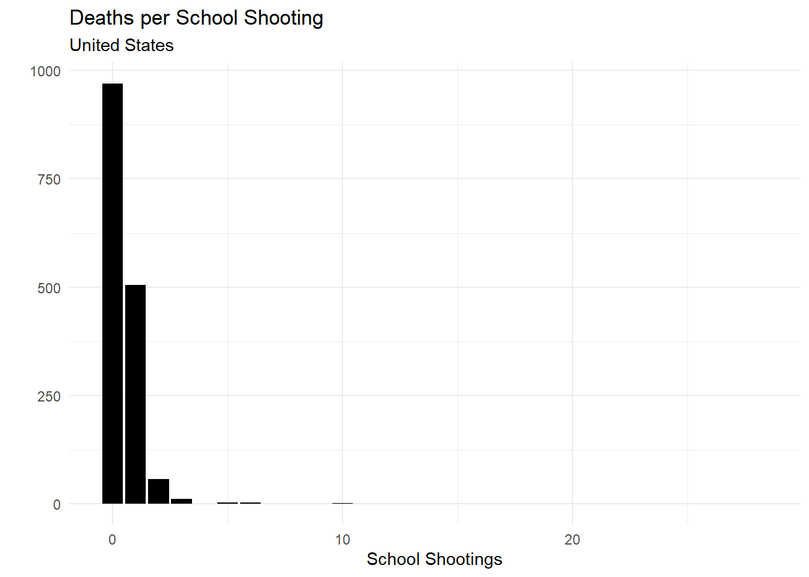
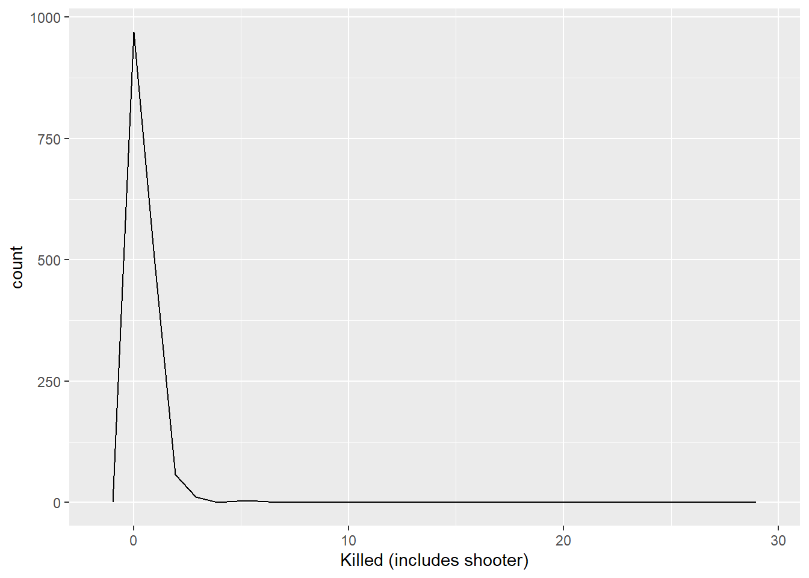

<!DOCTYPE html>

<html>

<head>

<meta charset="utf-8" />
<meta name="generator" content="pandoc" />
<meta http-equiv="X-UA-Compatible" content="IE=EDGE" />


<title> School Shootings in the United States</title>

<html>

<head>
<!-- Global site tag (gtag.js) - Google Analytics -->
<script async src="https://www.googletagmanager.com/gtag/js?id=G-SEKLK099WC"></script>
<script>
  window.dataLayer = window.dataLayer || [];
  function gtag(){dataLayer.push(arguments);}
  gtag('js', new Date());

  gtag('config', 'G-SEKLK099WC');
</script>
</head>

<body>


</body>
</html>
<!-- HEAD_CONTENT -->

<style type="text/css">
  code{white-space: pre-wrap;}
  span.smallcaps{font-variant: small-caps;}
  span.underline{text-decoration: underline;}
  div.column{display: inline-block; vertical-align: top; width: 50%;}
  div.hanging-indent{margin-left: 1.5em; text-indent: -1.5em;}
  ul.task-list{list-style: none;}
    </style>


<style type="text/css">
  code {
    white-space: pre;
  }
  .sourceCode {
    overflow: visible;
  }
</style>
<style type="text/css" data-origin="pandoc">
pre > code.sourceCode { white-space: pre; position: relative; }
pre > code.sourceCode > span { display: inline-block; line-height: 1.25; }
pre > code.sourceCode > span:empty { height: 1.2em; }
.sourceCode { overflow: visible; }
code.sourceCode > span { color: inherit; text-decoration: inherit; }
div.sourceCode { margin: 1em 0; }
pre.sourceCode { margin: 0; }
@media screen {
div.sourceCode { overflow: auto; }
}
@media print {
pre > code.sourceCode { white-space: pre-wrap; }
pre > code.sourceCode > span { text-indent: -5em; padding-left: 5em; }
}
pre.numberSource code
  { counter-reset: source-line 0; }
pre.numberSource code > span
  { position: relative; left: -4em; counter-increment: source-line; }
pre.numberSource code > span > a:first-child::before
  { content: counter(source-line);
    position: relative; left: -1em; text-align: right; vertical-align: baseline;
    border: none; display: inline-block;
    -webkit-touch-callout: none; -webkit-user-select: none;
    -khtml-user-select: none; -moz-user-select: none;
    -ms-user-select: none; user-select: none;
    padding: 0 4px; width: 4em;
    color: #aaaaaa;
  }
pre.numberSource { margin-left: 3em; border-left: 1px solid #aaaaaa;  padding-left: 4px; }
div.sourceCode
  {  background-color: #f8f8f8; }
@media screen {
pre > code.sourceCode > span > a:first-child::before { text-decoration: underline; }
}
code span.al { color: #ef2929; } /* Alert */
code span.an { color: #8f5902; font-weight: bold; font-style: italic; } /* Annotation */
code span.at { color: #c4a000; } /* Attribute */
code span.bn { color: #0000cf; } /* BaseN */
code span.cf { color: #204a87; font-weight: bold; } /* ControlFlow */
code span.ch { color: #4e9a06; } /* Char */
code span.cn { color: #000000; } /* Constant */
code span.co { color: #8f5902; font-style: italic; } /* Comment */
code span.cv { color: #8f5902; font-weight: bold; font-style: italic; } /* CommentVar */
code span.do { color: #8f5902; font-weight: bold; font-style: italic; } /* Documentation */
code span.dt { color: #204a87; } /* DataType */
code span.dv { color: #0000cf; } /* DecVal */
code span.er { color: #a40000; font-weight: bold; } /* Error */
code span.ex { } /* Extension */
code span.fl { color: #0000cf; } /* Float */
code span.fu { color: #000000; } /* Function */
code span.im { } /* Import */
code span.in { color: #8f5902; font-weight: bold; font-style: italic; } /* Information */
code span.kw { color: #204a87; font-weight: bold; } /* Keyword */
code span.op { color: #ce5c00; font-weight: bold; } /* Operator */
code span.ot { color: #8f5902; } /* Other */
code span.pp { color: #8f5902; font-style: italic; } /* Preprocessor */
code span.sc { color: #000000; } /* SpecialChar */
code span.ss { color: #4e9a06; } /* SpecialString */
code span.st { color: #4e9a06; } /* String */
code span.va { color: #000000; } /* Variable */
code span.vs { color: #4e9a06; } /* VerbatimString */
code span.wa { color: #8f5902; font-weight: bold; font-style: italic; } /* Warning */

</style>
<script>
// apply pandoc div.sourceCode style to pre.sourceCode instead
(function() {
  var sheets = document.styleSheets;
  for (var i = 0; i < sheets.length; i++) {
    if (sheets[i].ownerNode.dataset["origin"] !== "pandoc") continue;
    try { var rules = sheets[i].cssRules; } catch (e) { continue; }
    for (var j = 0; j < rules.length; j++) {
      var rule = rules[j];
      // check if there is a div.sourceCode rule
      if (rule.type !== rule.STYLE_RULE || rule.selectorText !== "div.sourceCode") continue;
      var style = rule.style.cssText;
      // check if color or background-color is set
      if (rule.style.color === '' && rule.style.backgroundColor === '') continue;
      // replace div.sourceCode by a pre.sourceCode rule
      sheets[i].deleteRule(j);
      sheets[i].insertRule('pre.sourceCode{' + style + '}', j);
    }
  }
})();
</script>


<style type="text/css">
#rmd-source-code {
  display: none;
}
</style>


<link rel="stylesheet" href="www/style.css" type="text/css" />


<style type = "text/css">
.main-container {
  max-width: 940px;
  margin-left: auto;
  margin-right: auto;
}
img {
  max-width:100%;
}
.tabbed-pane {
  padding-top: 12px;
}
.html-widget {
  margin-bottom: 20px;
}
button.code-folding-btn:focus {
  outline: none;
}
summary {
  display: list-item;
}
pre code {
  padding: 0;
}
</style>


<!-- tabsets -->

<style type="text/css">
.tabset-dropdown > .nav-tabs {
  display: inline-table;
  max-height: 500px;
  min-height: 44px;
  overflow-y: auto;
  border: 1px solid #ddd;
  border-radius: 4px;
}

.tabset-dropdown > .nav-tabs > li.active:before {
  content: "";
  font-family: 'Glyphicons Halflings';
  display: inline-block;
  padding: 10px;
  border-right: 1px solid #ddd;
}

.tabset-dropdown > .nav-tabs.nav-tabs-open > li.active:before {
  content: "&#xe258;";
  border: none;
}

.tabset-dropdown > .nav-tabs.nav-tabs-open:before {
  content: "";
  font-family: 'Glyphicons Halflings';
  display: inline-block;
  padding: 10px;
  border-right: 1px solid #ddd;
}

.tabset-dropdown > .nav-tabs > li.active {
  display: block;
}

.tabset-dropdown > .nav-tabs > li > a,
.tabset-dropdown > .nav-tabs > li > a:focus,
.tabset-dropdown > .nav-tabs > li > a:hover {
  border: none;
  display: inline-block;
  border-radius: 4px;
  background-color: transparent;
}

.tabset-dropdown > .nav-tabs.nav-tabs-open > li {
  display: block;
  float: none;
}

.tabset-dropdown > .nav-tabs > li {
  display: none;
}
</style>

<!-- code folding -->
<style type="text/css">
.code-folding-btn { margin-bottom: 4px; }
</style>


<style type="text/css">

#section-TOC {
  margin: 25px 0px 20px 0px;
}
@media (max-width: 768px) {
#section-TOC {
  position: relative;
  width: 100%;
}
}

@media print {
.toc-content {
  /* see https://github.com/w3c/csswg-drafts/issues/4434 */
  float: right;
}
}

.toc-content {
  padding-left: 30px;
  padding-right: 40px;
}

div.main-container {
  max-width: 1200px;
}

div.tocify {
  width: 20%;
  max-width: 260px;
  max-height: 85%;
}

@media (min-width: 768px) and (max-width: 991px) {
  div.tocify {
    width: 25%;
  }
}

@media (max-width: 767px) {
  div.tocify {
    width: 100%;
    max-width: none;
  }
}

.tocify ul, .tocify li {
  line-height: 20px;
}

.tocify-subheader .tocify-item {
  font-size: 0.90em;
}

.tocify .list-group-item {
  border-radius: 0px;
}


</style>


</head>

<body>


<div class="container-fluid main-container">


<!-- setup 3col/9col grid for toc_float and main content  -->
<div class="row">
<div class="col-xs-12 col-sm-4 col-md-3">
<div id="section-TOC" class="tocify">
</div>
</div>

<div class="toc-content col-xs-12 col-sm-8 col-md-9">


<div id="section-header">

<div class="btn-group pull-right float-right">
<button type="button" class="btn btn-default btn-xs btn-secondary btn-sm dropdown-toggle" data-toggle="dropdown" aria-haspopup="true" aria-expanded="false"><span>Code</span> <span class="caret"></span></button>
<ul class="dropdown-menu dropdown-menu-right" style="min-width: 50px;">
<li><a id="rmd-download-source" href="#">Download Rmd</a></li>
</ul>
</div>


<h1 class="title toc-ignore"><p> School Shootings in the United States</p></h1>

</div>


<!-- code for including logo in toc: -->
<!-- <style> -->
<!-- #TOC { -->
<!--   background: url("https://opencasestudies.github.io/img/icon-bahi.png"); -->
<!--   background-size: contain; -->
<!--   padding-top: 240px !important; -->
<!--   background-repeat: no-repeat; -->
<!-- } -->
<!-- </style> -->
<!-- (not working for interactive currently, needs to be investigated) -->
<!-- Open all links in new tab-->
<p><base target="_blank"/></p>
<div align="left" id="google_translate_element",></div>
<script type="text/javascript" src='//translate.google.com/translate_a/element.js?cb=googleTranslateElementInit'></script>
<script type="text/javascript">
function googleTranslateElementInit() {
  new google.translate.TranslateElement({pageLanguage: 'en'}, 'google_translate_element');
}
</script>
<div id="section-section" class="section level4 outline">
<h4 class="outline"></h4>
<p><a href="https://rsconnect.biostat.jhsph.edu/ocs-bp-school-shootings-dashboard/" target="_blank"></a></p>
</div>
<div id="section-section-1" class="section level4">
<h4></h4>
<p>The link to the dashboard described in this case study is <a href="https://rsconnect.biostat.jhsph.edu/ocs-bp-school-shootings-dashboard/">here</a>.</p>
<p>To access the GitHub Repository for this case study see here: <a href="https://github.com/opencasestudies/ocs-bp-school-shootings-dashboard/" class="uri">https://github.com/opencasestudies/ocs-bp-school-shootings-dashboard/</a>.</p>
<p>To access the GitHub repository for this case study see here: <a href="https://github.com//opencasestudies/ocs-bp-youth-disconnection" class="uri">https://github.com//opencasestudies/ocs-bp-youth-disconnection</a>.</p>
<p>You may also access and download the data using our <code>OCSdata</code> package. To learn more about this package including examples, see this <a href="https://github.com/opencasestudies/OCSdata">link</a>. Here is how you would install this package:</p>
<div class="sourceCode" id="section-cb1"><pre class="sourceCode r"><code class="sourceCode r"><span id="section-cb1-1"><a href="#section-cb1-1" aria-hidden="true" tabindex="-1"></a><span class="fu">install.packages</span>(<span class="st">&quot;OCSdata&quot;</span>)</span></code></pre></div>
<p>This case study is part of a series of public health case studies for the <a href="https://americanhealth.jhu.edu/open-case-studies">Bloomberg American Health Initiative</a>.</p>
<p>For users or instructors who only wish to look at the basics of how to create a dashboard in R with the <code>flexdashboard</code> package, please see the <a href="#section-dashboard-basics"><strong>Dashboard Basics</strong></a> Section.</p>
</div>
<div id="section-section-2" class="section level4 disclaimer_block">
<h4 class="disclaimer_block"></h4>
<p><strong>Disclaimer</strong>: The purpose of the <a href="https://opencasestudies.github.io" target="_blank">Open Case Studies</a> project is <strong>to demonstrate the use of various data science methods, tools, and software in the context of messy, real-world data</strong>. A given case study does not cover all aspects of the research process, is not claiming to be the most appropriate way to analyze a given data set, and should not be used in the context of making policy decisions without external consultation from scientific experts.</p>
</div>
<div id="section-section-3" class="section level4">
<h4></h4>
</div>
<div id="section-section-4" class="section level4 license_block">
<h4 class="license_block"></h4>
<p>This work is licensed under the Creative Commons Attribution-NonCommercial 3.0 <a href="https://creativecommons.org/licenses/by-nc/3.0/us/" target="_blank">(CC BY-NC 3.0)</a> United States License.</p>
</div>
<div id="section-section-5" class="section level4">
<h4></h4>
</div>
<div id="section-section-6" class="section level4 reference_block">
<h4 class="reference_block"></h4>
<p>To cite this case study please use:</p>
<p>Wright, Carrie and Ontiveros, Michael and Jager, Leah and Taub, Margaret and Hicks, Stephanie. (2020). <a href="https://github.com//opencasestudies/ocs-bp-school-shootings-dashboard">https://github.com//opencasestudies/ocs-bp-school-shootings-dashboard</a>. Open Case Studies: School Shootings in the United States (Version v1.0.0).</p>
</div>
<div id="section-section-7" class="section level4">
<h4></h4>
<p>Please help us by filling out our survey.</p>
<div style="display: flex; justify-content: center;">
<iframe src="https://docs.google.com/forms/d/e/1FAIpQLSfpN4FN3KELqBNEgf2Atpi7Wy7Nqy2beSkFQINL7Y5sAMV5_w/viewform?embedded=true" width="1200" height="700" frameborder="0" marginheight="0" marginwidth="0">
Loading…
</iframe>
</div>
</div>
<div id="section-motivation" class="section level1">
<h1><strong>Motivation</strong></h1>
<hr />
<p>This case study is motivated by this <a href="https://link.springer.com/content/pdf/10.1007/s11920-012-0331-6.pdf">article</a>:</p>
<div id="section-section-8" class="section level4 reference_block">
<h4 class="reference_block"></h4>
<p>Flannery, D. J., Modzeleski, W. &amp; Kretschmar, J. M. Violence and School Shootings. Curr Psychiatry Rep 15, 331 (2013). DOI: <a href="https://doi.org/10.1007/s11920-012-0331-6">10.1007/s11920-012-0331-6</a></p>
</div>
<div id="section-section-9" class="section level4">
<h4></h4>
<p>The article explores characteristics of school shootings and violence in schools and discusses why these events may occur, as well as their impact on the communities in which they occur.</p>
<p>The article also states that the shooters are most commonly white males, but that many previous studies of shooter characteristics could not identify any particular “profile” of shooters.</p>
<blockquote>
<p>“To date, studies of school shootings have concluded that no consistent and reliable profile of school shooters exist…”</p>
</blockquote>
<p>However previous studies note some commonalities such as:</p>
<blockquote>
<p>“…most shooters were depressed, had experienced some significant loss, felt persecuted or bullied by others, and had prior difficulty coping or had previously tried suicide.”</p>
</blockquote>
<p>Therefore in our dashboard we will examine how often a shooter was male or attempted or committed suicide during an event.</p>
<p></p>
<p><span>Photo by <a href="https://unsplash.com/@mrthetrain?utm_source=unsplash&amp;utm_medium=referral&amp;utm_content=creditCopyText">Joshua Hoehne</a> on <a href="https://unsplash.com/s/photos/high-school?utm_source=unsplash&amp;utm_medium=referral&amp;utm_content=creditCopyText">Unsplash</a></span></p>
<blockquote>
<p>"School shootings are not all the same and may require different approaches to prevention and treatment, especially with respect to identifying risk factors at the individual, school or community levels, and particularly with regard to examining the role that mental health issues may play to increase risk for perpetration.</p>
</blockquote>
<blockquote>
<p>The field <strong>needs to know more</strong> about shooting incidents that are averted, those that result in injury but not death and about the characteristics of the more common occurrence of single homicide school shootings."</p>
</blockquote>
<p></p>
<p><span>Photo by <a href="https://unsplash.com/@dre0316?utm_source=unsplash&amp;utm_medium=referral&amp;utm_content=creditCopyText">Andre Hunter</a> on <a href="https://unsplash.com/s/photos/high-school?utm_source=unsplash&amp;utm_medium=referral&amp;utm_content=creditCopyText">Unsplash</a></span></p>
<p>Given this need for more research to better understand why these events occur and how they could be averted, in this case study we will demonstrate how to create a resource for others to more easily and interactively access data about school shootings. To do so we will create what is called a <a href="https://en.wikipedia.org/wiki/Dashboard_(business)">dashboard</a>, which is a website that displays a report for a database. Dashboards summarize the data in a database and typically allow for users to interact with the data in some way.</p>
<p><a href="https://jjallaire.shinyapps.io/shiny-crandash/#dashboardl">Here</a> you can see an example of a dashboard created in R about downloads of packages on <a href="https://cran.r-project.org/">CRAN</a>.</p>
<p>On the website the tabs and plots are interactive. The above dashboard allows for users to get to know the data in a simple and quick way.</p>
<p>The data about package downloads is succinctly summarized in an impactful manner.</p>
<p><a href="https://jjallaire.shinyapps.io/shiny-crandash/#dashboardl" target="_blank"></a></p>
<p>We can quickly get a sense that the <code>magrittr</code> package is among the top most widely downloaded packages on CRAN.</p>
<div id="section-source" class="section level5">
<h5><a href="https://jjallaire.shinyapps.io/shiny-crandash/#dashboardl">[source]</a></h5>
<p>Now let’s learn how to create a dashboard with our data of interest.</p>
</div>
</div>
</div>
<div id="section-main-questions" class="section level1">
<h1><strong>Main Questions</strong></h1>
<hr />
<div id="section-section-10" class="section level4 main_question_block">
<h4 class="main_question_block"></h4>
<p><b><u> Our main questions: </u></b></p>
<ol style="list-style-type: decimal">
<li><p>What has been the yearly rate of school shootings and where in the country have they occurred in the last 50 years (from January 1970 to June 2020)?</p></li>
<li><p>How many individuals are typically killed in a school shooting?</p></li>
<li><p>What were the characteristics of the shooters: How often was a shooter male? How often did a shooter attempt or commit suicide?</p></li>
</ol>
</div>
<div id="section-section-11" class="section level4">
<h4></h4>
</div>
</div>
<div id="section-learning-objectives" class="section level1">
<h1><strong>Learning Objectives</strong></h1>
<hr />
<p>In this case study, we will demonstrate how to create a <a href="https://en.wikipedia.org/wiki/Dashboard_(business)">dashboard</a>, which is a website that displays a report about a database. In doing so, we will focus on packages and functions from the <a href="https://www.tidyverse.org/" target="_blank"><code>tidyverse</code></a> for the data wrangling and visualization sections. The tidyverse is a library of packages created by RStudio. While some students may be familiar with previous R programming packages, these packages make data science in R more human-readable and intuitive.</p>
<p></p>
<p>The skills, methods, and concepts that students will be familiar with by the end of this case study are:</p>
<p><u><strong>Data Science Learning Objectives:</strong></u></p>
<ol style="list-style-type: decimal">
<li>Importing text from a Google Sheets document (<code>googlesheets4</code>)<br />
</li>
<li>Converting date formats (<code>lubridate</code>)<br />
</li>
<li>Geocoding data (<code>ggmap</code>) and creating a jitter for geocoded data on a map (<code>SF</code>)</li>
<li>How to reshape data by pivoting between “long” and “wide” formats and drop rows with <code>NA</code> values (<code>tidyr</code>)<br />
</li>
<li>How to create data visualizations with <code>ggplot2</code></li>
<li>An introduction to the basics of R Markdown</li>
<li>How to create an interactive table (<code>DT</code>)<br />
</li>
<li>How to create a map (<code>leaflet</code>)<br />
</li>
<li>How to create an interactive dashboard with <code>flexdashboard</code> and <code>shiny</code></li>
</ol>
<p><u><strong>Statistical Learning Objectives:</strong></u></p>
<ol style="list-style-type: decimal">
<li>Calculating percentages for data with missing values<br />
</li>
<li>Creating <a href="https://en.wikipedia.org/wiki/Summary_statistics">summary statistics</a></li>
</ol>
<p><em>Note: statistics is a part of data science</em></p>
<hr />
<p>We will begin by loading the packages that we will need:</p>
<div class="sourceCode" id="section-cb2"><pre class="sourceCode r"><code class="sourceCode r"><span id="section-cb2-1"><a href="#section-cb2-1" aria-hidden="true" tabindex="-1"></a><span class="fu">library</span>(here)</span>
<span id="section-cb2-2"><a href="#section-cb2-2" aria-hidden="true" tabindex="-1"></a><span class="fu">library</span>(readr)</span>
<span id="section-cb2-3"><a href="#section-cb2-3" aria-hidden="true" tabindex="-1"></a><span class="fu">library</span>(googlesheets4)</span>
<span id="section-cb2-4"><a href="#section-cb2-4" aria-hidden="true" tabindex="-1"></a><span class="fu">library</span>(tibble)</span>
<span id="section-cb2-5"><a href="#section-cb2-5" aria-hidden="true" tabindex="-1"></a><span class="fu">library</span>(dplyr)</span>
<span id="section-cb2-6"><a href="#section-cb2-6" aria-hidden="true" tabindex="-1"></a><span class="fu">library</span>(stringr)</span>
<span id="section-cb2-7"><a href="#section-cb2-7" aria-hidden="true" tabindex="-1"></a><span class="fu">library</span>(magrittr)</span>
<span id="section-cb2-8"><a href="#section-cb2-8" aria-hidden="true" tabindex="-1"></a><span class="fu">library</span>(tidyr)</span>
<span id="section-cb2-9"><a href="#section-cb2-9" aria-hidden="true" tabindex="-1"></a><span class="fu">library</span>(ggmap)</span>
<span id="section-cb2-10"><a href="#section-cb2-10" aria-hidden="true" tabindex="-1"></a><span class="fu">library</span>(sf)</span>
<span id="section-cb2-11"><a href="#section-cb2-11" aria-hidden="true" tabindex="-1"></a><span class="fu">library</span>(lubridate)</span>
<span id="section-cb2-12"><a href="#section-cb2-12" aria-hidden="true" tabindex="-1"></a><span class="fu">library</span>(DT)</span>
<span id="section-cb2-13"><a href="#section-cb2-13" aria-hidden="true" tabindex="-1"></a><span class="fu">library</span>(htmltools)</span>
<span id="section-cb2-14"><a href="#section-cb2-14" aria-hidden="true" tabindex="-1"></a><span class="fu">library</span>(ggplot2)</span>
<span id="section-cb2-15"><a href="#section-cb2-15" aria-hidden="true" tabindex="-1"></a><span class="fu">library</span>(forcats)</span>
<span id="section-cb2-16"><a href="#section-cb2-16" aria-hidden="true" tabindex="-1"></a><span class="fu">library</span>(ggforce)</span>
<span id="section-cb2-17"><a href="#section-cb2-17" aria-hidden="true" tabindex="-1"></a><span class="fu">library</span>(waffle)</span>
<span id="section-cb2-18"><a href="#section-cb2-18" aria-hidden="true" tabindex="-1"></a><span class="fu">library</span>(poliscidata)</span>
<span id="section-cb2-19"><a href="#section-cb2-19" aria-hidden="true" tabindex="-1"></a><span class="fu">library</span>(flexdashboard)</span>
<span id="section-cb2-20"><a href="#section-cb2-20" aria-hidden="true" tabindex="-1"></a><span class="fu">library</span>(shiny)</span>
<span id="section-cb2-21"><a href="#section-cb2-21" aria-hidden="true" tabindex="-1"></a><span class="fu">library</span>(leaflet)</span>
<span id="section-cb2-22"><a href="#section-cb2-22" aria-hidden="true" tabindex="-1"></a><span class="fu">library</span>(maps)</span>
<span id="section-cb2-23"><a href="#section-cb2-23" aria-hidden="true" tabindex="-1"></a><span class="fu">library</span>(vembedr)</span>
<span id="section-cb2-24"><a href="#section-cb2-24" aria-hidden="true" tabindex="-1"></a><span class="fu">library</span>(OCSdata)</span></code></pre></div>
<p>Note <a href="https://www.tidyverse.org/packages/">some of these packages</a> are part of the <code>tidyverse</code> and can be loaded together like so:</p>
<div class="sourceCode" id="section-cb3"><pre class="sourceCode r"><code class="sourceCode r"><span id="section-cb3-1"><a href="#section-cb3-1" aria-hidden="true" tabindex="-1"></a><span class="fu">library</span>(tidyverse)</span></code></pre></div>
<p><u><strong>Packages used in this case study:</strong> </u></p>
<table>
<colgroup>
<col width="43%" />
<col width="56%" />
</colgroup>
<thead>
<tr class="header">
<th>Package</th>
<th>Use in this case study</th>
</tr>
</thead>
<tbody>
<tr class="odd">
<td><a href="https://github.com/jennybc/here_here" target="_blank">here</a></td>
<td>to easily load and save data</td>
</tr>
<tr class="even">
<td><a href="https://readr.tidyverse.org/">readr</a></td>
<td>to import the data as a csv file</td>
</tr>
<tr class="odd">
<td><a href="https://googlesheets4.tidyverse.org/">googlesheets4</a></td>
<td>to import directly from Google Sheets</td>
</tr>
<tr class="even">
<td><a href="https://tibble.tidyverse.org/">tibble</a></td>
<td>to create tibbles (the tidyverse version of dataframes)</td>
</tr>
<tr class="odd">
<td><a href="https://dplyr.tidyverse.org/" target="_blank">dplyr</a></td>
<td>to filter, subset, join, add rows to, and modify the data</td>
</tr>
<tr class="even">
<td><a href="https://stringr.tidyverse.org/" target="_blank">stringr</a></td>
<td>to manipulate character strings within the data (collapsing strings together, replace values, and detect values)</td>
</tr>
<tr class="odd">
<td><a href="https://magrittr.tidyverse.org/" target="_blank">magrittr</a></td>
<td>to pipe sequential commands</td>
</tr>
<tr class="even">
<td><a href="https://tidyr.tidyverse.org/" target="_blank">tidyr</a></td>
<td>to change the shape or format of tibbles to wide and long, to drop rows with <code>NA</code> values, and to see the last few columns of a tibble</td>
</tr>
<tr class="odd">
<td><a href="https://cran.r-project.org/web/packages/ggmap/ggmap.pdf">ggmap</a></td>
<td>to geocode the data (which means get the latitude and longitude values)</td>
</tr>
<tr class="even">
<td><a href="https://r-spatial.github.io/sf/">sf</a></td>
<td>to modify the geocoded data so that overlapping points did not overlap</td>
</tr>
<tr class="odd">
<td><a href="https://lubridate.tidyverse.org/">lubridate</a></td>
<td>to work with the data-time data</td>
</tr>
<tr class="even">
<td><a href="https://rstudio.github.io/DT/">DT</a></td>
<td>to create the interactive table</td>
</tr>
<tr class="odd">
<td><a href="https://www.rdocumentation.org/packages/htmltools/versions/0.5.0">htmltools</a></td>
<td>to add a caption to our interactive table</td>
</tr>
<tr class="even">
<td><a href="https://ggplot2.tidyverse.org/" target="_blank">ggplot2</a></td>
<td>to create plots</td>
</tr>
<tr class="odd">
<td><a href="https://cran.r-project.org/web/packages/ggforce/ggforce.pdf">ggforce</a></td>
<td>to create a plot zoom</td>
</tr>
<tr class="even">
<td><a href="https://forcats.tidyverse.org/" target="_blank">forcats</a></td>
<td>to reorder factor for plot</td>
</tr>
<tr class="odd">
<td><a href="https://github.com/hrbrmstr/waffle">waffle</a></td>
<td>to make waffle proportion plots</td>
</tr>
<tr class="even">
<td><a href="https://cran.r-project.org/web/packages/poliscidata/poliscidata.pdf">poliscidata</a></td>
<td>to get population values for the states</td>
</tr>
<tr class="odd">
<td><a href="https://rmarkdown.rstudio.com/flexdashboard/">flexdashboard</a></td>
<td>to create the dashboard</td>
</tr>
<tr class="even">
<td><a href="https://shiny.rstudio.com/" target="_blank">shiny</a></td>
<td>to allow our dashboard to be interactive</td>
</tr>
<tr class="odd">
<td><a href="https://rstudio.github.io/leaflet/shiny.html">leaflet</a></td>
<td>to implement the <a href="http://leafletjs.com/">leaflet</a> (a JavaScript library for maps) to create the map for our dashboard</td>
</tr>
<tr class="even">
<td><a href="https://cran.r-project.org/web/packages/maps/maps.pdf">maps</a></td>
<td>to create the simple leaflet map example</td>
</tr>
<tr class="odd">
<td><a href="https://github.com/ijlyttle/vembedr">vembedr</a></td>
<td>to include a video in our case study</td>
</tr>
<tr class="even">
<td><a href="https://github.com/opencasestudies/OCSdata">OCSdata</a></td>
<td>to access and download cOCS data files</td>
</tr>
</tbody>
</table>
<p>The first time we use a function, we will use the <code>::</code> to indicate which package we are using. Unless we have overlapping function names, this is not necessary, but we will include it here to be informative about where the functions we will use come from.</p>
</div>
<div id="section-context" class="section level1">
<h1><strong>Context</strong></h1>
<hr />
<p>School shootings get a lot of attention in the the media, but it would be helpful to see all the data on them at once to better understand them. A dashboard can help with this, so that people get a boarder understanding of the issue rather than hearing about singular specific incidences from the media.</p>
<p>In addition to injuries and deaths, shooting events can also have broad and lasting impacts for those who witness but are not directly involved.</p>
<p>According to the <a href="https://injury.research.chop.edu/violence-prevention-initiative/types-violence-involving-youth/school-shootings">Center for Injury Research and Prevention at the Children’s Hospital of Philadelphia</a>:</p>
<blockquote>
<p>The most common shootings on school grounds rarely involve large numbers of victims, but even a shooting of just one student at school has ramifications far beyond those directly involved.</p>
</blockquote>
<blockquote>
<p>Students and staff that witness school shootings are likely to suffer from <a href="https://en.wikipedia.org/wiki/Traumatic_stress">traumatic stress</a> symptoms, become anxious or depressed and have general concerns about their safety.</p>
</blockquote>
<blockquote>
<p>While many witnesses will have temporary symptoms, others will be symptomatic for a much longer period of time and even develop chronic psychiatric disorders.</p>
</blockquote>
<blockquote>
<p>Even short-term impairments can cause severe distress and have profound effects on academic achievement and the social and emotional growth of impacted students.</p>
</blockquote>
<p>Furthermore, school shootings can have vast and lasting impacts because many students can witness a single event.</p>
<p>Another recently published <a href="https://siepr.stanford.edu/sites/default/files/publications/19-036.pdf">article</a> indicates that:</p>
<blockquote>
<p>Over <strong>240,000</strong> American students experienced a school shooting in the last two decades.</p>
</blockquote>
<p></p>
<div id="section-source-1" class="section level5">
<h5><a href="https://siepr.stanford.edu/sites/default/files/publications/19-036.pdf">[source]</a></h5>
<p>This study followed students who experienced a school shooting the United States between 2008 and 2013 and assessed their mental well-being. They found that:</p>
<blockquote>
<p>Fatal school shootings have large and persistent impacts on the mental health of local youth. In the two years following a fatal school shooting, the monthly number of antidepressant prescriptions written to individuals under age 20 is 21.3 percent higher in the shooting-exposed relative to the reference areas.</p>
</blockquote>
</div>
<div id="section-section-12" class="section level4 reference_block">
<h4 class="reference_block"></h4>
<p>Rossin-Slater, M., Schnell, M., Schwandt, H., Trejo, S. &amp; Uniat, L. Local Exposure to School Shootings and Youth Antidepressant Use. w26563 <a href="http://www.nber.org/papers/w26563.pdf" class="uri">http://www.nber.org/papers/w26563.pdf</a> (2019) <a href="doi:10.3386/w26563" class="uri">doi:10.3386/w26563</a>.</p>
</div>
<div id="section-section-13" class="section level4">
<h4></h4>
<p>Thus, it is useful to better understand the characteristics of these shootings. Having better data on what they look like nationwide can help with identifying associations of shootings with key characteristics. Better descriptive information such as this may then lead to more knowledge about factors that predict school shootings, which could help develop preventive interventions. This way, we might not only prevent the direct involvement of students in future events, but also to prevent students and staff from witnessing these events.</p>
<p></p>
<p><span>Photo by <a href="https://unsplash.com/@cferdo?utm_source=unsplash&amp;utm_medium=referral&amp;utm_content=creditCopyText">Fernando <span class="citation">@cferdo</span></a> on <a href="https://unsplash.com/s/photos/depression?utm_source=unsplash&amp;utm_medium=referral&amp;utm_content=creditCopyText">Unsplash</a></span></p>
</div>
</div>
<div id="section-limitations" class="section level1">
<h1><strong>Limitations</strong></h1>
<hr />
<p>There are some important considerations regarding this data analysis to keep in mind:</p>
<p>This dashboard only uses one source of data. There may be school shooting events that are not listed in this data or errors in this data.</p>
<p>According to the database website itself:</p>
<blockquote>
<p>“This database was developed from open-source information and may include reporting errors.”</p>
</blockquote>
<p>Furthermore, according to this <a href="https://link.springer.com/article/10.1007/s11920-012-0331-6">article</a>, schools in 2013, schools were not required to report school shootings unless they resulted in a suicide or homicide. Therefore there may be more events that result in only injury or no injuries or death that may not be included.</p>
<p>There are indeed events in the dataset that include zero deaths and zero injuries, but it is very likely that many of these events are not listed.</p>
</div>
<div id="section-what-are-the-data" class="section level1">
<h1><strong>What are the data?</strong></h1>
<hr />
<p>We will use data from the open-source <a href="https://www.chds.us/ssdb/data-map/">K-12 Shool Shooting Database</a> from the <a href="https://www.chds.us/c/">Center for Homeland Defense and Security</a> at the <a href="https://en.wikipedia.org/wiki/Naval_Postgraduate_School">Naval Postgraduate School(NPS)</a> in Monterey, California. This data is updated daily. The data used in this case study was downloaded in June of 2020.</p>
<div id="section-section-14" class="section level4 reference_block">
<h4 class="reference_block"></h4>
<p>Riedman, David, and Desmond O’Neill. “CHDS – K-12 School Shooting Database.” Center for Homeland Defense and Security, June 2020, <a href="www.chds.us/ssdb">www.chds.us/ssdb</a>.</p>
</div>
<div id="section-section-15" class="section level4">
<h4></h4>
<p>This database includes information about school shooting events for students in grades K-12 in the United States dating back to 1970. The database has additional information not shown on our dashboard including but not limited to:</p>
<ul>
<li>Location of the event at the school<br />
</li>
<li>If the event occurred during a sporting event<br />
</li>
<li>Time of day of the event<br />
</li>
<li>Day of the week of the event<br />
</li>
<li>Source for the shooting information<br />
</li>
<li>If the event was pre-planned or not<br />
</li>
<li>Shooter’s actions immediately following the shooting<br />
</li>
<li>Shooter characteristics (affiliation with the school, if they had accomplices, if they took hostages, and their age and race)<br />
</li>
<li>Victim characteristics (affiliation with the school, if they were targeted, their age and race)</li>
</ul>
<p>According to the <a href="https://www.chds.us/ssdb/about/">K-12 Shool Shooting Database</a> website:</p>
<blockquote>
<p>The School Shooting Database Project is conducted as part of the <a href="https://www.chds.us/c/academic-programs/hsx/">Advanced Thinking in Homeland Security (HSx)</a> program at the Naval Postgraduate School’s <a href="https://en.wikipedia.org/wiki/Center_for_Homeland_Defense_and_Security">Center for Homeland Defense and Security (CHDS)</a>.</p>
</blockquote>
<blockquote>
<p>The database compiles information from more than 25 different sources including peer-reviewed studies, government reports, mainstream media, non-profits, private websites, blogs, and crowd-sourced lists that have been analyzed, filtered, deconflicted, and cross-referenced. All of the information is based on open-source information and 3rd party reporting.</p>
</blockquote>
</div>
</div>
<div id="section-data-import" class="section level1">
<h1><strong>Data Import</strong></h1>
<hr />
<p>Previously, the website for this data was located at “<a href="https://www.chds.us/ssdb/dataset/" class="uri">https://www.chds.us/ssdb/dataset/</a>” (which is no longer an active link), which displayed an active Google Sheets document and a link to download a csv file of the data. At the time that we created this case study (June of 2020) we downloaded the data from this website.</p>
<p>Now the data can be found at this <a href="https://www.chds.us/ssdb/about/">link</a> and a file of the raw data can be downloaded by clicking the “DOWNLOAD RAW DATA” button. This file was previously a <code>.csv</code> file, but it is now an <code>.xlsx</code> file.</p>
<p>To account for changes with this website, we have made the previous <code>.csv</code> file available for you to download using the <code>OCSdata</code> package:</p>
<div class="sourceCode" id="section-cb4"><pre class="sourceCode r"><code class="sourceCode r"><span id="section-cb4-1"><a href="#section-cb4-1" aria-hidden="true" tabindex="-1"></a><span class="co"># library(OCSdata)</span></span>
<span id="section-cb4-2"><a href="#section-cb4-2" aria-hidden="true" tabindex="-1"></a><span class="fu">raw_data</span>(<span class="st">&quot;ocs-bp-school-shootings-dashboard&quot;</span>)</span></code></pre></div>
<p>If you have trouble using the package, you may also download this <code>.csv</code> file <a href="https://github.com/opencasestudies/ocs-bp-school-shootings-dashboard/blob/master/data/raw/K-12_SSDB_(Public)-K-12_SSDB_(Public)_Linked.csv">here</a>.</p>
<p>In our case, we downloaded this data and put it within a “raw” subdirectory of a “data” directory for our project. If you use an RStudio project, then you can use the <code>here()</code> function from the <code>here</code> package to make the path for importing this data simpler. The <code>here</code> package automatically starts looking for files based on where you have a <code>.Rproj</code> file which is created when you start a new RStudio project. We can specify that we want to look for the "K-12_SSDB_(Public)-K-12_SSDB_(Public)_Linked.csv" file within the “raw” directory within the “data” directory within a directory where our <code>.Rproj</code> file is located by separating the names of these directories using commas and listing “data” first.</p>
<div id="section-section-16" class="section level4 click_to_expand_block">
<h4 class="click_to_expand_block"></h4>
<details>
<summary>
Click here to see more about creating new projects in RStudio.
</summary>
<p>You can create a project by going to the File menu of RStudio like so:</p>
<p></p>
<p>You can also do so by clicking the project button:</p>
<p></p>
<p>See <a href="https://support.rstudio.com/hc/en-us/articles/200526207-Using-Projects">here</a> to learn more about using RStudio projects.</p>
</details>
</div>
<div id="section-section-17" class="section level4">
<h4></h4>
<p>We can import the raw <code>.csv</code> file using the <code>read_csv()</code> function from the <code>readr</code> package. Let’s start by only importing the first five rows with the <code>n_max</code> argument which is the max number of rows to read in from the file. By doing this, we can check for errors before reading in the entire file. Note that you would need to modify the <code>file</code> argument if you set your data files up differently.</p>
<div class="sourceCode" id="section-cb5"><pre class="sourceCode r"><code class="sourceCode r"><span id="section-cb5-1"><a href="#section-cb5-1" aria-hidden="true" tabindex="-1"></a>shooting_data <span class="ot">&lt;-</span> </span>
<span id="section-cb5-2"><a href="#section-cb5-2" aria-hidden="true" tabindex="-1"></a>  readr<span class="sc">::</span><span class="fu">read_csv</span>(<span class="at">file =</span> </span>
<span id="section-cb5-3"><a href="#section-cb5-3" aria-hidden="true" tabindex="-1"></a>                    here<span class="sc">::</span><span class="fu">here</span>(<span class="st">&quot;data&quot;</span>, <span class="st">&quot;raw&quot;</span>,</span>
<span id="section-cb5-4"><a href="#section-cb5-4" aria-hidden="true" tabindex="-1"></a>                         <span class="st">&quot;K-12_SSDB_(Public)-K-12_SSDB_(Public)_Linked.csv&quot;</span>), </span>
<span id="section-cb5-5"><a href="#section-cb5-5" aria-hidden="true" tabindex="-1"></a>                  <span class="at">n_max =</span> <span class="dv">5</span>)</span>
<span id="section-cb5-6"><a href="#section-cb5-6" aria-hidden="true" tabindex="-1"></a>shooting_data</span></code></pre></div>
<pre><code># A tibble: 5 x 47
  `Updated 6/2/202~ ...2   ...3  ...4  ...5  ...6  ...7  ...8  ...9  ...10 ...11
  &lt;chr&gt;             &lt;chr&gt;  &lt;chr&gt; &lt;chr&gt; &lt;chr&gt; &lt;chr&gt; &lt;chr&gt; &lt;chr&gt; &lt;chr&gt; &lt;chr&gt; &lt;chr&gt;
1 Date              School City  State Reli~ Kill~ Woun~ Tota~ Gend~ Vict~ Vict~
2 1/5/1970          Hine ~ Wash~ DC    3     1     0     1     Male  Stud~ 15   
3 1/5/1970          Sousa~ Wash~ DC    3     0     1     1     Male  Stud~ &lt;NA&gt; 
4 1/5/1970          Unnam~ Wash~ DC    2     0     0     0     No V~ No V~ &lt;NA&gt; 
5 2/6/1970          John ~ Clev~ OH    2     0     1     1     Male  Stud~ 18   
# ... with 36 more variables: ...12 &lt;chr&gt;, ...13 &lt;chr&gt;, ...14 &lt;chr&gt;,
#   ...15 &lt;chr&gt;, ...16 &lt;chr&gt;, ...17 &lt;chr&gt;, ...18 &lt;chr&gt;, ...19 &lt;chr&gt;,
#   ...20 &lt;chr&gt;, ...21 &lt;chr&gt;, ...22 &lt;chr&gt;, ...23 &lt;chr&gt;, ...24 &lt;chr&gt;,
#   ...25 &lt;chr&gt;, ...26 &lt;chr&gt;, ...27 &lt;chr&gt;, ...28 &lt;chr&gt;, ...29 &lt;chr&gt;,
#   ...30 &lt;chr&gt;, ...31 &lt;chr&gt;, ...32 &lt;chr&gt;, ...33 &lt;chr&gt;, ...34 &lt;chr&gt;,
#   ...35 &lt;chr&gt;, ...36 &lt;chr&gt;, ...37 &lt;chr&gt;, ...38 &lt;chr&gt;, ...39 &lt;chr&gt;,
#   ...40 &lt;chr&gt;, ...41 &lt;chr&gt;, ...42 &lt;chr&gt;, ...43 &lt;chr&gt;, ...44 &lt;chr&gt;, ...</code></pre>
<p>We see the first row is a sentence that states:</p>
<blockquote>
<p>“Updated 6/2/2020 - View graphs and research methodology on www.chds.us/ssdb If you have information about other incidents, please email <a href="mailto:K12ssdb@chds.us" class="email">K12ssdb@chds.us</a>.”</p>
</blockquote>
<p>We do not need this information, so we can skip it using the <code>skip</code> argument of <code>read_csv()</code> function. Specifically, we specify that we wish to only skip 1 row with <code>skip = 1</code>. We can also specify that the next row should be used for column names using the <code>col_names = TRUE</code> argument.</p>
<div class="sourceCode" id="section-cb7"><pre class="sourceCode r"><code class="sourceCode r"><span id="section-cb7-1"><a href="#section-cb7-1" aria-hidden="true" tabindex="-1"></a>shooting_data <span class="ot">&lt;-</span> </span>
<span id="section-cb7-2"><a href="#section-cb7-2" aria-hidden="true" tabindex="-1"></a>  readr<span class="sc">::</span><span class="fu">read_csv</span>(<span class="at">file =</span> here<span class="sc">::</span><span class="fu">here</span>(<span class="st">&quot;data&quot;</span>, <span class="st">&quot;raw&quot;</span>,</span>
<span id="section-cb7-3"><a href="#section-cb7-3" aria-hidden="true" tabindex="-1"></a>                                    <span class="st">&quot;K-12_SSDB_(Public)-K-12_SSDB_(Public)_Linked.csv&quot;</span>), </span>
<span id="section-cb7-4"><a href="#section-cb7-4" aria-hidden="true" tabindex="-1"></a>                  <span class="at">col_names =</span> <span class="cn">TRUE</span>, <span class="at">skip =</span> <span class="dv">1</span>)</span></code></pre></div>
<p>We can use the <code>glimpse</code> function from the <code>dplyr</code> package to take a look at columns within the database:</p>
</div>
<div id="section-section-18" class="section level4 scrollable">
<h4 class="scrollable"></h4>
<div class="sourceCode" id="section-cb8"><pre class="sourceCode r"><code class="sourceCode r"><span id="section-cb8-1"><a href="#section-cb8-1" aria-hidden="true" tabindex="-1"></a><span class="co"># Scroll through the output!</span></span>
<span id="section-cb8-2"><a href="#section-cb8-2" aria-hidden="true" tabindex="-1"></a>dplyr<span class="sc">::</span><span class="fu">glimpse</span>(shooting_data)</span></code></pre></div>
<pre><code>Rows: 1,556
Columns: 47
$ Date                                                                                                                                                 &lt;chr&gt; ~
$ School                                                                                                                                               &lt;chr&gt; ~
$ City                                                                                                                                                 &lt;chr&gt; ~
$ State                                                                                                                                                &lt;chr&gt; ~
$ `Reliability Score (1-5)`                                                                                                                            &lt;dbl&gt; ~
$ `Killed (includes shooter)`                                                                                                                          &lt;dbl&gt; ~
$ Wounded                                                                                                                                              &lt;dbl&gt; ~
$ `Total Injured/Killed Victims`                                                                                                                       &lt;dbl&gt; ~
$ `Gender of Victims (M/F/Both)`                                                                                                                       &lt;chr&gt; ~
$ `Victim&#39;s Affiliation w/ School`                                                                                                                     &lt;chr&gt; ~
$ `Victim&#39;s age(s)`                                                                                                                                    &lt;dbl&gt; ~
$ `Victims Race`                                                                                                                                       &lt;chr&gt; ~
$ `Victim Ethnicity`                                                                                                                                   &lt;chr&gt; ~
$ `Targeted Specific Victim(s)`                                                                                                                        &lt;chr&gt; ~
$ `Random Victims`                                                                                                                                     &lt;chr&gt; ~
$ `Bullied (Y/N/ N/A)`                                                                                                                                 &lt;chr&gt; ~
$ `Domestic Violence (Y/N)`                                                                                                                            &lt;chr&gt; ~
$ `Suicide (Shooter was only victim) Y/N/ N/A`                                                                                                         &lt;chr&gt; ~
$ `Suicide (shot self immediately following initial shootings) Y/N/ N/A`                                                                               &lt;chr&gt; ~
$ `Suicide (e.g., shot self at end of incident - time period between first shots and suicide, different location, when confronted by police) Y/N/ N/A` &lt;chr&gt; ~
$ `Suicide (or attempted suicide) by Shooter (Y/N)`                                                                                                    &lt;chr&gt; ~
$ `Shooter&#39;s actions immediately after shots fired`                                                                                                    &lt;chr&gt; ~
$ `Pre-planned school attack`                                                                                                                          &lt;chr&gt; ~
$ Summary                                                                                                                                              &lt;chr&gt; ~
$ Category                                                                                                                                             &lt;chr&gt; ~
$ `School Type`                                                                                                                                        &lt;chr&gt; ~
$ `Narrative (Detailed Summary/ Background)`                                                                                                           &lt;chr&gt; ~
$ Sources                                                                                                                                              &lt;chr&gt; ~
$ `Time of Occurrence (12 hour AM/PM)`                                                                                                                 &lt;time&gt; ~
$ `Duration (minutes)`                                                                                                                                 &lt;dbl&gt; ~
$ `Day of week (formula)`                                                                                                                              &lt;chr&gt; ~
$ `During School Day (Y/N)`                                                                                                                            &lt;chr&gt; ~
$ `Time Period`                                                                                                                                        &lt;chr&gt; ~
$ `During a Sporting Event (Y/N)`                                                                                                                      &lt;chr&gt; ~
$ `During a school sponsored event (school dance, concert, play, activity)`                                                                            &lt;chr&gt; ~
$ Location                                                                                                                                             &lt;chr&gt; ~
$ `Number of Shots Fired`                                                                                                                              &lt;dbl&gt; ~
$ `Firearm Type`                                                                                                                                       &lt;chr&gt; ~
$ `Number of Shooters`                                                                                                                                 &lt;dbl&gt; ~
$ `Shooter Name`                                                                                                                                       &lt;chr&gt; ~
$ `Shooter Age`                                                                                                                                        &lt;dbl&gt; ~
$ `Shooter Gender`                                                                                                                                     &lt;chr&gt; ~
$ Race                                                                                                                                                 &lt;chr&gt; ~
$ `Shooter Ethnicity`                                                                                                                                  &lt;chr&gt; ~
$ `Shooter&#39;s Affiliation with School`                                                                                                                  &lt;chr&gt; ~
$ `Shooter had an accomplice who did not fire gun (Y/N)`                                                                                               &lt;chr&gt; ~
$ `Hostages Taken (Y/N)`                                                                                                                               &lt;chr&gt; ~</code></pre>
</div>
<div id="section-section-19" class="section level4">
<h4></h4>
<p>We can also use the utils <code>str()</code> function, which is short for “structure” to see more details about the internal structure of the data. Therefore, the <code>str()</code> function will give us more information about the actual values for each column within the data, not just the columns themselves. Typically we would be able to see some of the values with <code>glimpse()</code> function as well, but some of the columns have very long names, thus obscuring the first few values in the output.</p>
</div>
<div id="section-section-20" class="section level4 scrollable">
<h4 class="scrollable"></h4>
<div class="sourceCode" id="section-cb10"><pre class="sourceCode r"><code class="sourceCode r"><span id="section-cb10-1"><a href="#section-cb10-1" aria-hidden="true" tabindex="-1"></a><span class="co"># Scroll through the output!</span></span>
<span id="section-cb10-2"><a href="#section-cb10-2" aria-hidden="true" tabindex="-1"></a><span class="fu">str</span>(shooting_data)</span></code></pre></div>
<pre><code>spec_tbl_df [1,556 x 47] (S3: spec_tbl_df/tbl_df/tbl/data.frame)
 $ Date                                                                                                                                              : chr [1:1556] &quot;1/5/1970&quot; &quot;1/5/1970&quot; &quot;1/5/1970&quot; &quot;2/6/1970&quot; ...
 $ School                                                                                                                                            : chr [1:1556] &quot;Hine Junior High School&quot; &quot;Sousa Junior High&quot; &quot;Unnamed High School&quot; &quot;John F. Kennedy High School&quot; ...
 $ City                                                                                                                                              : chr [1:1556] &quot;Washington&quot; &quot;Washington&quot; &quot;Washington&quot; &quot;Cleveland&quot; ...
 $ State                                                                                                                                             : chr [1:1556] &quot;DC&quot; &quot;DC&quot; &quot;DC&quot; &quot;OH&quot; ...
 $ Reliability Score (1-5)                                                                                                                           : num [1:1556] 3 3 2 2 2 3 3 2 2 2 ...
 $ Killed (includes shooter)                                                                                                                         : num [1:1556] 1 0 0 0 0 1 1 0 0 0 ...
 $ Wounded                                                                                                                                           : num [1:1556] 0 1 0 1 2 5 0 1 2 1 ...
 $ Total Injured/Killed Victims                                                                                                                      : num [1:1556] 1 1 0 1 2 6 1 1 2 1 ...
 $ Gender of Victims (M/F/Both)                                                                                                                      : chr [1:1556] &quot;Male&quot; &quot;Male&quot; &quot;No Victims&quot; &quot;Male&quot; ...
 $ Victim&#39;s Affiliation w/ School                                                                                                                    : chr [1:1556] &quot;Student&quot; &quot;Student&quot; &quot;No Victims&quot; &quot;Student&quot; ...
 $ Victim&#39;s age(s)                                                                                                                                   : num [1:1556] 15 NA NA 18 NA NA 18 19 NA 15 ...
 $ Victims Race                                                                                                                                      : chr [1:1556] NA NA &quot;No Victims&quot; NA ...
 $ Victim Ethnicity                                                                                                                                  : chr [1:1556] NA NA &quot;No Victims&quot; NA ...
 $ Targeted Specific Victim(s)                                                                                                                       : chr [1:1556] &quot;No&quot; &quot;No&quot; &quot;Yes&quot; &quot;Yes&quot; ...
 $ Random Victims                                                                                                                                    : chr [1:1556] &quot;Yes&quot; &quot;Yes&quot; &quot;No&quot; &quot;No&quot; ...
 $ Bullied (Y/N/ N/A)                                                                                                                                : chr [1:1556] &quot;No&quot; &quot;No&quot; &quot;No&quot; &quot;No&quot; ...
 $ Domestic Violence (Y/N)                                                                                                                           : chr [1:1556] &quot;No&quot; &quot;No&quot; &quot;No&quot; &quot;No&quot; ...
 $ Suicide (Shooter was only victim) Y/N/ N/A                                                                                                        : chr [1:1556] &quot;N/A&quot; &quot;N/A&quot; &quot;N/A&quot; &quot;N/A&quot; ...
 $ Suicide (shot self immediately following initial shootings) Y/N/ N/A                                                                              : chr [1:1556] &quot;N/A&quot; &quot;N/A&quot; &quot;N/A&quot; &quot;N/A&quot; ...
 $ Suicide (e.g., shot self at end of incident - time period between first shots and suicide, different location, when confronted by police) Y/N/ N/A: chr [1:1556] &quot;N/A&quot; &quot;N/A&quot; &quot;N/A&quot; &quot;N/A&quot; ...
 $ Suicide (or attempted suicide) by Shooter (Y/N)                                                                                                   : chr [1:1556] &quot;No&quot; &quot;No&quot; &quot;No&quot; &quot;No&quot; ...
 $ Shooter&#39;s actions immediately after shots fired                                                                                                   : chr [1:1556] &quot;Unknown if Subdued Surrendered or Fled&quot; &quot;Immediately Surrendered&quot; &quot;Fled&quot; &quot;Unknown if Subdued Surrendered or Fled&quot; ...
 $ Pre-planned school attack                                                                                                                         : chr [1:1556] &quot;No&quot; &quot;No&quot; &quot;No&quot; &quot;No&quot; ...
 $ Summary                                                                                                                                           : chr [1:1556] &quot;Didn&#39;t know how to operate pistol, cocked hammer and couldn&#39;t get it to safely release causing accidental discharge&quot; &quot;Occurred during horseplay in the school&quot; &quot;Student shot at twice during attempted robbery on playground&quot; &quot;Argument in school hallway escalated into shooting&quot; ...
 $ Category                                                                                                                                          : chr [1:1556] &quot;Accidental&quot; &quot;Accidental&quot; &quot;Robbery&quot; &quot;Escalation of Dispute&quot; ...
 $ School Type                                                                                                                                       : chr [1:1556] &quot;High&quot; &quot;Junior High&quot; &quot;High&quot; &quot;High&quot; ...
 $ Narrative (Detailed Summary/ Background)                                                                                                          : chr [1:1556] &quot;Student showing off gun cocked hammer and could not get it to release causing accidental discharge and killing &quot;| __truncated__ &quot;14YOM student shot during \&quot;horseplay\&quot; in the school hallway. Friend of the victim surrendered to police.&quot; &quot;Group of 10 teens attempted to rob 16YOM (James Owens) on school playground. When victim ran, unknown teen susp&quot;| __truncated__ &quot;Argument between shooter and victim escalated into shooting in school hallway.&quot; ...
 $ Sources                                                                                                                                           : chr [1:1556] &quot;https://news.google.com/newspapers?id=AfRYAAAAIBAJ&amp;pg=3025,1894998&quot; &quot;https://news.google.com/newspapers?id=AfRYAAAAIBAJ&amp;pg=3025,1894998 https://www.newspapers.com/image/156467116/?&quot;| __truncated__ &quot;https://www.newspapers.com/image/156467116/?terms=school%2Bshooting&quot; &quot;https://www.newspapers.com/image/18059538/?terms=school%2Bshooting&quot; ...
 $ Time of Occurrence (12 hour AM/PM)                                                                                                                : &#39;hms&#39; num [1:1556] NA NA NA NA ...
  ..- attr(*, &quot;units&quot;)= chr &quot;secs&quot;
 $ Duration (minutes)                                                                                                                                : num [1:1556] 1 1 1 1 NA 8 1 1 NA 1 ...
 $ Day of week (formula)                                                                                                                             : chr [1:1556] &quot;Mon&quot; &quot;Mon&quot; &quot;Mon&quot; &quot;Fri&quot; ...
 $ During School Day (Y/N)                                                                                                                           : chr [1:1556] &quot;Yes&quot; &quot;Yes&quot; &quot;Yes&quot; &quot;Yes&quot; ...
 $ Time Period                                                                                                                                       : chr [1:1556] NA NA NA NA ...
 $ During a Sporting Event (Y/N)                                                                                                                     : chr [1:1556] &quot;No&quot; &quot;No&quot; &quot;No&quot; &quot;No&quot; ...
 $ During a school sponsored event (school dance, concert, play, activity)                                                                           : chr [1:1556] &quot;No&quot; &quot;No&quot; &quot;No&quot; &quot;No&quot; ...
 $ Location                                                                                                                                          : chr [1:1556] &quot;Inside School Building&quot; &quot;Inside School Building&quot; &quot;Outside on School Property&quot; &quot;Inside School Building&quot; ...
 $ Number of Shots Fired                                                                                                                             : num [1:1556] 1 1 2 4 NA NA 1 1 2 NA ...
 $ Firearm Type                                                                                                                                      : chr [1:1556] &quot;Handgun&quot; &quot;Handgun&quot; &quot;Handgun&quot; &quot;Handgun&quot; ...
 $ Number of Shooters                                                                                                                                : num [1:1556] 1 1 1 1 2 8 1 1 1 2 ...
 $ Shooter Name                                                                                                                                      : chr [1:1556] &quot;Minor&quot; &quot;Minor&quot; &quot;Unknown&quot; &quot;Gertis J. Perry&quot; ...
 $ Shooter Age                                                                                                                                       : num [1:1556] 15 NA NA 18 NA NA 16 18 15 NA ...
 $ Shooter Gender                                                                                                                                    : chr [1:1556] &quot;Male&quot; &quot;Male&quot; &quot;Male&quot; &quot;Male&quot; ...
 $ Race                                                                                                                                              : chr [1:1556] NA NA NA NA ...
 $ Shooter Ethnicity                                                                                                                                 : chr [1:1556] NA NA NA &quot;Not Hispanic or Latino&quot; ...
 $ Shooter&#39;s Affiliation with School                                                                                                                 : chr [1:1556] &quot;Student&quot; &quot;Student&quot; &quot;Student&quot; &quot;Student&quot; ...
 $ Shooter had an accomplice who did not fire gun (Y/N)                                                                                              : chr [1:1556] &quot;Yes&quot; &quot;No&quot; &quot;Yes&quot; &quot;No&quot; ...
 $ Hostages Taken (Y/N)                                                                                                                              : chr [1:1556] &quot;No&quot; &quot;No&quot; &quot;No&quot; &quot;No&quot; ...
 - attr(*, &quot;spec&quot;)=
  .. cols(
  ..   Date = col_character(),
  ..   School = col_character(),
  ..   City = col_character(),
  ..   State = col_character(),
  ..   `Reliability Score (1-5)` = col_double(),
  ..   `Killed (includes shooter)` = col_double(),
  ..   Wounded = col_double(),
  ..   `Total Injured/Killed Victims` = col_double(),
  ..   `Gender of Victims (M/F/Both)` = col_character(),
  ..   `Victim&#39;s Affiliation w/ School` = col_character(),
  ..   `Victim&#39;s age(s)` = col_double(),
  ..   `Victims Race` = col_character(),
  ..   `Victim Ethnicity` = col_character(),
  ..   `Targeted Specific Victim(s)` = col_character(),
  ..   `Random Victims` = col_character(),
  ..   `Bullied (Y/N/ N/A)` = col_character(),
  ..   `Domestic Violence (Y/N)` = col_character(),
  ..   `Suicide (Shooter was only victim) Y/N/ N/A` = col_character(),
  ..   `Suicide (shot self immediately following initial shootings) Y/N/ N/A` = col_character(),
  ..   `Suicide (e.g., shot self at end of incident - time period between first shots and suicide, different location, when confronted by police) Y/N/ N/A` = col_character(),
  ..   `Suicide (or attempted suicide) by Shooter (Y/N)` = col_character(),
  ..   `Shooter&#39;s actions immediately after shots fired` = col_character(),
  ..   `Pre-planned school attack` = col_character(),
  ..   Summary = col_character(),
  ..   Category = col_character(),
  ..   `School Type` = col_character(),
  ..   `Narrative (Detailed Summary/ Background)` = col_character(),
  ..   Sources = col_character(),
  ..   `Time of Occurrence (12 hour AM/PM)` = col_time(format = &quot;&quot;),
  ..   `Duration (minutes)` = col_double(),
  ..   `Day of week (formula)` = col_character(),
  ..   `During School Day (Y/N)` = col_character(),
  ..   `Time Period` = col_character(),
  ..   `During a Sporting Event (Y/N)` = col_character(),
  ..   `During a school sponsored event (school dance, concert, play, activity)` = col_character(),
  ..   Location = col_character(),
  ..   `Number of Shots Fired` = col_double(),
  ..   `Firearm Type` = col_character(),
  ..   `Number of Shooters` = col_double(),
  ..   `Shooter Name` = col_character(),
  ..   `Shooter Age` = col_double(),
  ..   `Shooter Gender` = col_character(),
  ..   Race = col_character(),
  ..   `Shooter Ethnicity` = col_character(),
  ..   `Shooter&#39;s Affiliation with School` = col_character(),
  ..   `Shooter had an accomplice who did not fire gun (Y/N)` = col_character(),
  ..   `Hostages Taken (Y/N)` = col_character()
  .. )
 - attr(*, &quot;problems&quot;)=&lt;externalptr&gt; </code></pre>
<p>We can see from this that many of the variables have Yes or No values, while others have relatively long descriptions. You may also notice that the <code>State</code> values are state abbreviations, not full state names. This is something that we will add to the data later.</p>
</div>
<div id="section-section-21" class="section level4">
<h4></h4>
<p>Alternatively, if we wanted to make a dashboard that continually updated as data got updated, we could do the following to import the data directly from a live Google Sheets document as previously this was available for this data.</p>
<p>To do so we would use the <code>read_sheet()</code> function from the <code>googlesheets4</code> package. Typically authentication is required, (meaning that you would need to sign in with your Google account using a username and or password), but since this was a public sheet we did not need to worry about authentication. To avoid being asked about this we used the <code>gs4_deauth()</code> function which puts the package into a de-authorized state that will not ask for users to sign in.</p>
<div class="sourceCode" id="section-cb12"><pre class="sourceCode r"><code class="sourceCode r"><span id="section-cb12-1"><a href="#section-cb12-1" aria-hidden="true" tabindex="-1"></a>googlesheets4<span class="sc">::</span><span class="fu">gs4_deauth</span>()</span></code></pre></div>
<p>Great, now we would need to get the shared link from the document. We could previously do so by clicking on the link to the actually Google Sheets document like so:</p>
<p></p>
<p>Then we can click on the “share” button to get access to the link:</p>
<p></p>
<p>Finally we can click on “copy link” button to copy the link:</p>
<p></p>
<p>Once you copy a link like this, you can use the <code>read_sheet()</code> function to import the data by simply pasting the link in quotes, like so:</p>
<div class="sourceCode" id="section-cb13"><pre class="sourceCode r"><code class="sourceCode r"><span id="section-cb13-1"><a href="#section-cb13-1" aria-hidden="true" tabindex="-1"></a>data_url <span class="ot">&lt;-</span> <span class="st">&quot;https://docs.google.com/spreadsheets/d/1HqbfMxnk9X3_mQvLyW_LEUe3Yyr7cXMPfwqUVfdq7sY/edit?usp=sharing&quot;</span></span>
<span id="section-cb13-2"><a href="#section-cb13-2" aria-hidden="true" tabindex="-1"></a></span>
<span id="section-cb13-3"><a href="#section-cb13-3" aria-hidden="true" tabindex="-1"></a>googlesheet_data <span class="ot">&lt;-</span> </span>
<span id="section-cb13-4"><a href="#section-cb13-4" aria-hidden="true" tabindex="-1"></a>  <span class="fu">read_sheet</span>(data_url)</span></code></pre></div>
<p>This is a great option, however, we chose not to do this for this case study to allow this tutorial to be more easily maintained over time. This was evidently a good choice since the data is no longer accessible in the same way.</p>
</div>
<div id="section-section-22" class="section level4">
<h4></h4>
<p>To allow users to skip import we will save the data as an RDA file:</p>
<div class="sourceCode" id="section-cb14"><pre class="sourceCode r"><code class="sourceCode r"><span id="section-cb14-1"><a href="#section-cb14-1" aria-hidden="true" tabindex="-1"></a><span class="fu">save</span>(shooting_data, <span class="at">file =</span> here<span class="sc">::</span><span class="fu">here</span>(<span class="st">&quot;www&quot;</span>, <span class="st">&quot;data&quot;</span>, <span class="st">&quot;imported&quot;</span>, <span class="st">&quot;shooting_data.rda&quot;</span>))</span></code></pre></div>
</div>
</div>
<div id="section-data-exploration-and-wrangling" class="section level1">
<h1><strong>Data Exploration and Wrangling</strong></h1>
<hr />
<p>If you have been following along but stopped, we could load our imported data like so:</p>
<div class="sourceCode" id="section-cb15"><pre class="sourceCode r"><code class="sourceCode r"><span id="section-cb15-1"><a href="#section-cb15-1" aria-hidden="true" tabindex="-1"></a><span class="fu">load</span>(here<span class="sc">::</span><span class="fu">here</span>(<span class="st">&quot;data&quot;</span>, <span class="st">&quot;imported&quot;</span>, <span class="st">&quot;shooting_data.rda&quot;</span>))</span></code></pre></div>
<div id="section-section-23" class="section level4 click_to_expand_block">
<h4 class="click_to_expand_block"></h4>
<details>
<summary>
If you skipped the data import section click here.
</summary>
<p>First you need to install the <code>OCSdata</code> package:</p>
<div class="sourceCode" id="section-cb16"><pre class="sourceCode r"><code class="sourceCode r"><span id="section-cb16-1"><a href="#section-cb16-1" aria-hidden="true" tabindex="-1"></a><span class="fu">install.packages</span>(<span class="st">&quot;OCSdata&quot;</span>)</span></code></pre></div>
<p>Then, you may download the imported data <code>.rda</code> file using the following function:</p>
<div class="sourceCode" id="section-cb17"><pre class="sourceCode r"><code class="sourceCode r"><span id="section-cb17-1"><a href="#section-cb17-1" aria-hidden="true" tabindex="-1"></a><span class="co"># library(OCSdata)</span></span>
<span id="section-cb17-2"><a href="#section-cb17-2" aria-hidden="true" tabindex="-1"></a><span class="fu">imported_data</span>(<span class="st">&quot;ocs-bp-school-shootings-dashboard&quot;</span>)</span></code></pre></div>
<p>To load the downloaded data into your environment, you may double click on the <code>.rda</code> file in Rstudio or using the <code>load()</code> function.</p>
<p>If the package does not work for you, an RDA file (stands for R data) of the data can be found <a href="https://github.com/opencasestudies/ocs-bp-school-shootings-dashboard/tree/master/data/imported">here</a> or slightly more directly <a href="https://raw.githubusercontent.com/opencasestudies/ocs-bp-school-shootings-dashboard/master/data/imported/shooting_data.rda">here</a>. Download this file and then place it in your current working directory. We recommend using an RStudio project and the <a href="https://github.com/jennybc/here_here"><code>here</code> package</a> to navigate to your file more easily.</p>
<p>We have put this file in a directory called “imported” within a directory called “data” within our working directory (which has a .Rproj file).</p>
<div class="sourceCode" id="section-cb18"><pre class="sourceCode r"><code class="sourceCode r"><span id="section-cb18-1"><a href="#section-cb18-1" aria-hidden="true" tabindex="-1"></a><span class="fu">load</span>(here<span class="sc">::</span><span class="fu">here</span>(<span class="st">&quot;data&quot;</span>, <span class="st">&quot;imported&quot;</span>, <span class="st">&quot;shooting_data.rda&quot;</span>))</span></code></pre></div>
<hr style="height:1px;border:none;color:#333;background-color:#333;" />
<details>
<summary>
Click here to see more about creating new projects in RStudio.
</summary>
<p>You can create a project by going to the File menu of RStudio like so:</p>
<p></p>
<p>You can also do so by clicking the project button:</p>
<p></p>
<p>See <a href="https://support.rstudio.com/hc/en-us/articles/200526207-Using-Projects">here</a> to learn more about using RStudio projects.</p>
</details>
<hr style="height:1px;border:none;color:#333;background-color:#333;" />
</details>
</div>
<div id="section-section-24" class="section level4">
<h4></h4>
<p>Luckily, our data is already in pretty good shape, but we want to make our data more useful for our dashboard.</p>
</div>
<div id="section-adding-state-name" class="section level2">
<h2><strong>Adding state name</strong></h2>
<hr />
<p>It would be useful to have the full state name in our data, rather than just the abbreviation.</p>
<p>We can do so by using data related to the US 50 states in a dataset called <code>state</code> that is automatically loaded with R sessions in the <code>datasets</code> package. The <code>state.abb</code> object is a list of the state abbreviations and <code>state.name</code> is a list of the state names.</p>
<div class="sourceCode" id="section-cb19"><pre class="sourceCode r"><code class="sourceCode r"><span id="section-cb19-1"><a href="#section-cb19-1" aria-hidden="true" tabindex="-1"></a>state.abb</span></code></pre></div>
<pre><code> [1] &quot;AL&quot; &quot;AK&quot; &quot;AZ&quot; &quot;AR&quot; &quot;CA&quot; &quot;CO&quot; &quot;CT&quot; &quot;DE&quot; &quot;FL&quot; &quot;GA&quot; &quot;HI&quot; &quot;ID&quot; &quot;IL&quot; &quot;IN&quot; &quot;IA&quot;
[16] &quot;KS&quot; &quot;KY&quot; &quot;LA&quot; &quot;ME&quot; &quot;MD&quot; &quot;MA&quot; &quot;MI&quot; &quot;MN&quot; &quot;MS&quot; &quot;MO&quot; &quot;MT&quot; &quot;NE&quot; &quot;NV&quot; &quot;NH&quot; &quot;NJ&quot;
[31] &quot;NM&quot; &quot;NY&quot; &quot;NC&quot; &quot;ND&quot; &quot;OH&quot; &quot;OK&quot; &quot;OR&quot; &quot;PA&quot; &quot;RI&quot; &quot;SC&quot; &quot;SD&quot; &quot;TN&quot; &quot;TX&quot; &quot;UT&quot; &quot;VT&quot;
[46] &quot;VA&quot; &quot;WA&quot; &quot;WV&quot; &quot;WI&quot; &quot;WY&quot;</code></pre>
<div class="sourceCode" id="section-cb21"><pre class="sourceCode r"><code class="sourceCode r"><span id="section-cb21-1"><a href="#section-cb21-1" aria-hidden="true" tabindex="-1"></a>state.name</span></code></pre></div>
<pre><code> [1] &quot;Alabama&quot;        &quot;Alaska&quot;         &quot;Arizona&quot;        &quot;Arkansas&quot;      
 [5] &quot;California&quot;     &quot;Colorado&quot;       &quot;Connecticut&quot;    &quot;Delaware&quot;      
 [9] &quot;Florida&quot;        &quot;Georgia&quot;        &quot;Hawaii&quot;         &quot;Idaho&quot;         
[13] &quot;Illinois&quot;       &quot;Indiana&quot;        &quot;Iowa&quot;           &quot;Kansas&quot;        
[17] &quot;Kentucky&quot;       &quot;Louisiana&quot;      &quot;Maine&quot;          &quot;Maryland&quot;      
[21] &quot;Massachusetts&quot;  &quot;Michigan&quot;       &quot;Minnesota&quot;      &quot;Mississippi&quot;   
[25] &quot;Missouri&quot;       &quot;Montana&quot;        &quot;Nebraska&quot;       &quot;Nevada&quot;        
[29] &quot;New Hampshire&quot;  &quot;New Jersey&quot;     &quot;New Mexico&quot;     &quot;New York&quot;      
[33] &quot;North Carolina&quot; &quot;North Dakota&quot;   &quot;Ohio&quot;           &quot;Oklahoma&quot;      
[37] &quot;Oregon&quot;         &quot;Pennsylvania&quot;   &quot;Rhode Island&quot;   &quot;South Carolina&quot;
[41] &quot;South Dakota&quot;   &quot;Tennessee&quot;      &quot;Texas&quot;          &quot;Utah&quot;          
[45] &quot;Vermont&quot;        &quot;Virginia&quot;       &quot;Washington&quot;     &quot;West Virginia&quot; 
[49] &quot;Wisconsin&quot;      &quot;Wyoming&quot;       </code></pre>
<p>We will combine these using the <code>tibble()</code> function from the <code>tibble()</code> package.</p>
<div class="sourceCode" id="section-cb23"><pre class="sourceCode r"><code class="sourceCode r"><span id="section-cb23-1"><a href="#section-cb23-1" aria-hidden="true" tabindex="-1"></a>state_df <span class="ot">&lt;-</span> </span>
<span id="section-cb23-2"><a href="#section-cb23-2" aria-hidden="true" tabindex="-1"></a>  <span class="fu">tibble</span>(<span class="at">State_abb =</span> state.abb, </span>
<span id="section-cb23-3"><a href="#section-cb23-3" aria-hidden="true" tabindex="-1"></a>         <span class="at">State =</span> state.name)</span>
<span id="section-cb23-4"><a href="#section-cb23-4" aria-hidden="true" tabindex="-1"></a></span>
<span id="section-cb23-5"><a href="#section-cb23-5" aria-hidden="true" tabindex="-1"></a><span class="fu">slice_head</span>(state_df, <span class="at">n=</span><span class="dv">4</span>)</span></code></pre></div>
<pre><code># A tibble: 4 x 2
  State_abb State   
  &lt;chr&gt;     &lt;chr&gt;   
1 AL        Alabama 
2 AK        Alaska  
3 AZ        Arizona 
4 AR        Arkansas</code></pre>
<p>Now we will combine this with our data using the <code>left_join()</code> function from the <code>dplyr</code> package. There are several ways to join data using the <code>dplyr</code> package.</p>
<p></p>
<div id="section-source-2" class="section level5">
<h5><a href="https://dplyr.tidyverse.org/reference/join.html">[source]</a></h5>
<p>Here is a visualization of these options:</p>
<p></p>
</div>
<div id="section-source-3" class="section level5">
<h5><a href="https://github.com/gadenbuie/tidyexplain/blob/master/images/inner-join.gif">[source]</a></h5>
<p></p>
</div>
<div id="section-source-4" class="section level5">
<h5><a href="https://github.com/gadenbuie/tidyexplain/blob/master/images/left-join.gif">[source]</a></h5>
<p></p>
</div>
<div id="section-source-5" class="section level5">
<h5><a href="https://github.com/gadenbuie/tidyexplain/blob/master/images/right-join.gif">[source]</a></h5>
<p></p>
</div>
<div id="section-source-6" class="section level5">
<h5><a href="https://github.com/gadenbuie/tidyexplain/blob/master/images/full-join.gif">[source]</a></h5>
<p>See <a href="https://dplyr.tidyverse.org/reference/join.html">here</a> for more details about joining data.</p>
<p>We probably have data for all fifty states, but there may not have been school shootings in all 50 states in this dataset, therefore we don’t want to use the <code>full_join()</code> function.</p>
<p>We also don’t want the <code>inner_join()</code> function because <code>DC</code> does not have a state name. According to Wikipedia:</p>
<blockquote>
<p>The <a href="https://en.wikipedia.org/wiki/U.S._Constitution">U.S. Constitution</a> provides for a <a href="https://en.wikipedia.org/wiki/Federal_district">federal district</a> under the <a href="https://en.wikipedia.org/wiki/District_of_Columbia_home_rule">exclusive jurisdiction</a> of <a href="https://en.wikipedia.org/wiki/United_States_Congress">Congress</a>; the district is therefore not a part of any <a href="https://en.wikipedia.org/wiki/U.S._state">U.S. state</a> (nor is it one itself)</p>
</blockquote>
<p>Thus we will use the <code>left_join(x,y)</code> function where <code>x</code> in this case will be the <code>shooting_data</code> (as it is introduced to this code first through the <code>%&lt;&gt;%</code> compound assignment pipe operator) and <code>y</code> is the <code>state_df</code>. Thus, we add the <code>state_df</code> values where they match to the <code>shooting_data</code>.</p>
<p>The <code>%&lt;&gt;%</code> compound operator allows us to use the an input and reassign it at the end after all the subsequent steps have been performed. We can therefore use <code>data_input %&lt;&gt;%</code> instead of <code>data_input &lt;- data_input %&gt;%</code>. We will demonstrate this in the code below.</p>
<div class="sourceCode" id="section-cb25"><pre class="sourceCode r"><code class="sourceCode r"><span id="section-cb25-1"><a href="#section-cb25-1" aria-hidden="true" tabindex="-1"></a>shooting_data <span class="sc">%&lt;&gt;%</span></span>
<span id="section-cb25-2"><a href="#section-cb25-2" aria-hidden="true" tabindex="-1"></a>  <span class="fu">rename</span>(<span class="st">&quot;State_abb&quot;</span> <span class="ot">=</span> State) <span class="sc">%&gt;%</span></span>
<span id="section-cb25-3"><a href="#section-cb25-3" aria-hidden="true" tabindex="-1"></a>  <span class="fu">left_join</span>(state_df, <span class="at">by =</span> <span class="fu">c</span>(<span class="st">&quot;State_abb&quot;</span> <span class="ot">=</span> <span class="st">&quot;State_abb&quot;</span>))</span></code></pre></div>
<p>In contrast, we can just use the <code>%&gt;%</code> pipe operator to select a set of columns and peek at the first four rows of the new data frame.</p>
</div>
<div id="section-section-25" class="section level4 click_to_expand_block">
<h4 class="click_to_expand_block"></h4>
<details>
<summary>
Click here if you are unfamiliar with piping in R, which uses this <code>%&gt;%</code> operator.
</summary>
<p>By <a href="https://cran.r-project.org/web/packages/magrittr/vignettes/magrittr.html">piping</a> we mean using the <code>%&gt;%</code> pipe operator which is accessible after loading the <code>tidyverse</code> or several of the packages within the tidyverse like <code>dplyr</code> because they load the <a href="https://cran.r-project.org/web/packages/magrittr/vignettes/magrittr.html"><code>magrittr</code> package</a>. This allows us to perform multiple sequential steps on one data input. The object on the left side is used as input to any commands to the right or below.</p>
</details>
</div>
<div id="section-section-26" class="section level4">
<h4></h4>
<div class="sourceCode" id="section-cb26"><pre class="sourceCode r"><code class="sourceCode r"><span id="section-cb26-1"><a href="#section-cb26-1" aria-hidden="true" tabindex="-1"></a>shooting_data <span class="sc">%&gt;%</span></span>
<span id="section-cb26-2"><a href="#section-cb26-2" aria-hidden="true" tabindex="-1"></a>  <span class="fu">select</span>(School, City, State_abb, State) <span class="sc">%&gt;%</span></span>
<span id="section-cb26-3"><a href="#section-cb26-3" aria-hidden="true" tabindex="-1"></a>  <span class="fu">slice_head</span>(<span class="at">n =</span> <span class="dv">4</span>)</span></code></pre></div>
<pre><code># A tibble: 4 x 4
  School                      City       State_abb State
  &lt;chr&gt;                       &lt;chr&gt;      &lt;chr&gt;     &lt;chr&gt;
1 Hine Junior High School     Washington DC        &lt;NA&gt; 
2 Sousa Junior High           Washington DC        &lt;NA&gt; 
3 Unnamed High School         Washington DC        &lt;NA&gt; 
4 John F. Kennedy High School Cleveland  OH        Ohio </code></pre>
</div>
</div>
<div id="section-reformatting-dates" class="section level2">
<h2><strong>Reformatting dates</strong></h2>
<hr />
<p>We also want to reformat our date values and create a <code>Date_year</code> variable based on the year in each date. We can use the <code>lubridate</code> package for this.</p>
<p>The <code>mdy()</code> function converts dates into a format where dates are listed as month, date, and year with hyphens in between. The <code>year()</code> function can then be used to extract just the year from each date.</p>
<div class="sourceCode" id="section-cb28"><pre class="sourceCode r"><code class="sourceCode r"><span id="section-cb28-1"><a href="#section-cb28-1" aria-hidden="true" tabindex="-1"></a>shooting_data <span class="sc">%&lt;&gt;%</span></span>
<span id="section-cb28-2"><a href="#section-cb28-2" aria-hidden="true" tabindex="-1"></a>  <span class="fu">mutate</span>(<span class="at">Date =</span> lubridate<span class="sc">::</span><span class="fu">mdy</span>(Date)) <span class="sc">%&gt;%</span></span>
<span id="section-cb28-3"><a href="#section-cb28-3" aria-hidden="true" tabindex="-1"></a>  <span class="fu">mutate</span>(<span class="at">Date_year =</span> lubridate<span class="sc">::</span><span class="fu">year</span>(Date))</span>
<span id="section-cb28-4"><a href="#section-cb28-4" aria-hidden="true" tabindex="-1"></a></span>
<span id="section-cb28-5"><a href="#section-cb28-5" aria-hidden="true" tabindex="-1"></a>shooting_data <span class="sc">%&gt;%</span> </span>
<span id="section-cb28-6"><a href="#section-cb28-6" aria-hidden="true" tabindex="-1"></a>  <span class="fu">select</span>(Date, Date_year)</span></code></pre></div>
<pre><code># A tibble: 1,556 x 2
   Date       Date_year
   &lt;date&gt;         &lt;dbl&gt;
 1 1970-01-05      1970
 2 1970-01-05      1970
 3 1970-01-05      1970
 4 1970-02-06      1970
 5 1970-03-23      1970
 6 1970-04-15      1970
 7 1970-04-22      1970
 8 1970-05-08      1970
 9 1970-05-15      1970
10 1970-08-28      1970
# ... with 1,546 more rows</code></pre>
<p>Looks good!</p>
</div>
<div id="section-reformatting-data-types" class="section level2">
<h2><strong>Reformatting data types</strong></h2>
<hr />
<p>If you recall, in our dataset we have many variables that have either <code>Yes</code> or <code>No</code> values or <code>Y</code> and <code>N</code> values.</p>
<div class="sourceCode" id="section-cb30"><pre class="sourceCode r"><code class="sourceCode r"><span id="section-cb30-1"><a href="#section-cb30-1" aria-hidden="true" tabindex="-1"></a><span class="fu">names</span>(shooting_data)</span></code></pre></div>
<pre><code> [1] &quot;Date&quot;                                                                                                                                              
 [2] &quot;School&quot;                                                                                                                                            
 [3] &quot;City&quot;                                                                                                                                              
 [4] &quot;State_abb&quot;                                                                                                                                         
 [5] &quot;Reliability Score (1-5)&quot;                                                                                                                           
 [6] &quot;Killed (includes shooter)&quot;                                                                                                                         
 [7] &quot;Wounded&quot;                                                                                                                                           
 [8] &quot;Total Injured/Killed Victims&quot;                                                                                                                      
 [9] &quot;Gender of Victims (M/F/Both)&quot;                                                                                                                      
[10] &quot;Victim&#39;s Affiliation w/ School&quot;                                                                                                                    
[11] &quot;Victim&#39;s age(s)&quot;                                                                                                                                   
[12] &quot;Victims Race&quot;                                                                                                                                      
[13] &quot;Victim Ethnicity&quot;                                                                                                                                  
[14] &quot;Targeted Specific Victim(s)&quot;                                                                                                                       
[15] &quot;Random Victims&quot;                                                                                                                                    
[16] &quot;Bullied (Y/N/ N/A)&quot;                                                                                                                                
[17] &quot;Domestic Violence (Y/N)&quot;                                                                                                                           
[18] &quot;Suicide (Shooter was only victim) Y/N/ N/A&quot;                                                                                                        
[19] &quot;Suicide (shot self immediately following initial shootings) Y/N/ N/A&quot;                                                                              
[20] &quot;Suicide (e.g., shot self at end of incident - time period between first shots and suicide, different location, when confronted by police) Y/N/ N/A&quot;
[21] &quot;Suicide (or attempted suicide) by Shooter (Y/N)&quot;                                                                                                   
[22] &quot;Shooter&#39;s actions immediately after shots fired&quot;                                                                                                   
[23] &quot;Pre-planned school attack&quot;                                                                                                                         
[24] &quot;Summary&quot;                                                                                                                                           
[25] &quot;Category&quot;                                                                                                                                          
[26] &quot;School Type&quot;                                                                                                                                       
[27] &quot;Narrative (Detailed Summary/ Background)&quot;                                                                                                          
[28] &quot;Sources&quot;                                                                                                                                           
[29] &quot;Time of Occurrence (12 hour AM/PM)&quot;                                                                                                                
[30] &quot;Duration (minutes)&quot;                                                                                                                                
[31] &quot;Day of week (formula)&quot;                                                                                                                             
[32] &quot;During School Day (Y/N)&quot;                                                                                                                           
[33] &quot;Time Period&quot;                                                                                                                                       
[34] &quot;During a Sporting Event (Y/N)&quot;                                                                                                                     
[35] &quot;During a school sponsored event (school dance, concert, play, activity)&quot;                                                                           
[36] &quot;Location&quot;                                                                                                                                          
[37] &quot;Number of Shots Fired&quot;                                                                                                                             
[38] &quot;Firearm Type&quot;                                                                                                                                      
[39] &quot;Number of Shooters&quot;                                                                                                                                
[40] &quot;Shooter Name&quot;                                                                                                                                      
[41] &quot;Shooter Age&quot;                                                                                                                                       
[42] &quot;Shooter Gender&quot;                                                                                                                                    
[43] &quot;Race&quot;                                                                                                                                              
[44] &quot;Shooter Ethnicity&quot;                                                                                                                                 
[45] &quot;Shooter&#39;s Affiliation with School&quot;                                                                                                                 
[46] &quot;Shooter had an accomplice who did not fire gun (Y/N)&quot;                                                                                              
[47] &quot;Hostages Taken (Y/N)&quot;                                                                                                                              
[48] &quot;State&quot;                                                                                                                                             
[49] &quot;Date_year&quot;                                                                                                                                         </code></pre>
<p><em>Note that in this case study, we will mostly be visualizing the data. However, for more intensive analysis, it would be better to make names more tidy, such as using lowercase and no spaces etc.</em></p>
<p>These are the variables that have <code>Y/N</code> in the name or the <code>Targeted Specific Victim(s)</code>, <code>Random Victims</code>, <code>Pre-planned school attack</code> variables.</p>
<p>We can make these consistently <code>TRUE</code> and <code>FALSE</code> by using the <code>case_when()</code> function from the <code>dplyr</code> package. This function allows us to specify new values for existing values.</p>
<div id="section-section-27" class="section level4 click_to_expand_block">
<h4 class="click_to_expand_block"></h4>
<details>
<summary>
If you are familiar with the <code>recode()</code> function from <code>dplyr</code>, click here for an explanation of why <code>case_when()</code> is better in this case.
</summary>
<p>The benefit of the <code>case_when()</code> function, is that changing the values to <code>TRUE</code> or <code>FALSE</code> also results in the class type of the variable changing to type logical (which is interpreted as a binary variable with <code>TRUE</code> and <code>FALSE</code> values) otherwise, with <code>recode()</code> the variables would remain as class type character.</p>
<hr style="height:1px;border:none;color:#333;background-color:#333;" />
<details>
<summary>
Click here for an explanation about data types in R.
</summary>
<p>There are several classes of data in R programming. Character is one of these classes. A character string is an individual data value made up of characters. This can be a paragraph, like the legend for the table, or it can be a single letter or number like the letter <code>"a"</code> or the number <code>"3"</code>. If data are of class character, than the numeric values will not be processed like a numeric value in a mathematical sense.</p>
<p>If you want your numeric values to be interpreted that way, they need to be converted to a numeric class. The options typically used are integer (which has no decimal place) and double precision (which has a decimal place).</p>
<p>Similarly if your data is of class character and are values of <code>TRUE</code> and <code>FALSE</code> they will be interpreted as two different strings.</p>
<p>However, <strong>logical data</strong> is interpreted slightly differently where a <code>FALSE</code> value indicates the absence of something, while a <code>TRUE</code> indicates the presence of something.</p>
</details>
<hr style="height:1px;border:none;color:#333;background-color:#333;" />
<details>
<summary>
Click here for more details about the differences between the <code>recode()</code> and <code>case_when()</code> functions.
</summary>
<p>Note that with <code>recode()</code> there is the option that other values be recoded to <code>NA</code> although this is not the default, however with <code>case_when()</code> other values not explicitly assigned in the <code>case_when()</code> statement will be assigned to <code>NA</code>. Further more only values can be used on the left side when using <code>recode()</code> whereas <code>case_when()</code> accepts expressions.</p>
</details>
</details>
</div>
<div id="section-section-28" class="section level4">
<h4></h4>
<p>OK let’s start by looking at the columns of interest by using the <code>select()</code> function and asking for any patterns that match the character string “Y/N” or “Specific” or “Random” or “Pre-planned”.</p>
<p>Formally, we can search for these using the <code>|</code> symbol, which is interpreted as an or, thus any variables that has a name that matches any of these patterns will be changed.</p>
<div class="sourceCode" id="section-cb32"><pre class="sourceCode r"><code class="sourceCode r"><span id="section-cb32-1"><a href="#section-cb32-1" aria-hidden="true" tabindex="-1"></a>shooting_data <span class="sc">%&gt;%</span> </span>
<span id="section-cb32-2"><a href="#section-cb32-2" aria-hidden="true" tabindex="-1"></a>  <span class="fu">select</span>(<span class="fu">matches</span>(<span class="st">&quot;Y/N|Specific|Random|Pre-planned&quot;</span>))</span></code></pre></div>
<pre><code># A tibble: 1,556 x 13
   `Targeted Specific V~ `Random Victims` `Bullied (Y/N/ N/~ `Domestic Violence~
   &lt;chr&gt;                 &lt;chr&gt;            &lt;chr&gt;              &lt;chr&gt;              
 1 No                    Yes              No                 No                 
 2 No                    Yes              No                 No                 
 3 Yes                   No               No                 No                 
 4 Yes                   No               No                 No                 
 5 No                    No               No                 No                 
 6 Yes                   Yes              No                 No                 
 7 Yes                   No               No                 No                 
 8 Yes                   No               No                 No                 
 9 No                    Yes              &lt;NA&gt;               No                 
10 Yes                   No               No                 No                 
# ... with 1,546 more rows, and 9 more variables:
#   Suicide (Shooter was only victim) Y/N/ N/A &lt;chr&gt;,
#   Suicide (shot self immediately following initial shootings) Y/N/ N/A &lt;chr&gt;,
#   Suicide (e.g., shot self at end of incident - time period between first shots and suicide, different location, when confronted by police) Y/N/ N/A &lt;chr&gt;,
#   Suicide (or attempted suicide) by Shooter (Y/N) &lt;chr&gt;,
#   Pre-planned school attack &lt;chr&gt;, During School Day (Y/N) &lt;chr&gt;,
#   During a Sporting Event (Y/N) &lt;chr&gt;, ...</code></pre>
<p>We see the <code>Yes</code> and <code>No</code> values. Let’s look closer at one of these columns.</p>
<div class="sourceCode" id="section-cb34"><pre class="sourceCode r"><code class="sourceCode r"><span id="section-cb34-1"><a href="#section-cb34-1" aria-hidden="true" tabindex="-1"></a>shooting_data <span class="sc">%&gt;%</span> </span>
<span id="section-cb34-2"><a href="#section-cb34-2" aria-hidden="true" tabindex="-1"></a>  <span class="fu">count</span>(<span class="st">`</span><span class="at">Suicide (or attempted suicide) by Shooter (Y/N)</span><span class="st">`</span>)</span></code></pre></div>
<pre><code># A tibble: 6 x 2
  `Suicide (or attempted suicide) by Shooter (Y/N)`     n
  &lt;chr&gt;                                             &lt;int&gt;
1 N                                                     1
2 N/A                                                  18
3 No                                                 1308
4 Officer Involved                                     26
5 Yes                                                 202
6 &lt;NA&gt;                                                  1</code></pre>
<p>We see there are six different values in this column. To recode this column, we need to consider what we recode all the values.</p>
<p>To implement the <code>case_when()</code> recoding of values, the existing values are written on the left of the <code>~</code> sign (quotation marks are necessary around the existing values) and new values are written on the right (quotations marks are not necessary as these are <code>TRUE</code> and <code>FALSE</code> statements).</p>
<div class="sourceCode" id="section-cb36"><pre class="sourceCode r"><code class="sourceCode r"><span id="section-cb36-1"><a href="#section-cb36-1" aria-hidden="true" tabindex="-1"></a>shooting_data <span class="sc">%&gt;%</span></span>
<span id="section-cb36-2"><a href="#section-cb36-2" aria-hidden="true" tabindex="-1"></a>       <span class="fu">select</span>(<span class="st">`</span><span class="at">Suicide (or attempted suicide) by Shooter (Y/N)</span><span class="st">`</span>) <span class="sc">%&gt;%</span></span>
<span id="section-cb36-3"><a href="#section-cb36-3" aria-hidden="true" tabindex="-1"></a>       <span class="fu">mutate</span>(<span class="at">type =</span> dplyr<span class="sc">::</span><span class="fu">case_when</span>(. <span class="sc">==</span> <span class="st">&quot;Yes&quot;</span> <span class="sc">~</span> <span class="cn">TRUE</span>,</span>
<span id="section-cb36-4"><a href="#section-cb36-4" aria-hidden="true" tabindex="-1"></a>                                      . <span class="sc">==</span> <span class="st">&quot;No&quot;</span> <span class="sc">~</span> <span class="cn">FALSE</span>,</span>
<span id="section-cb36-5"><a href="#section-cb36-5" aria-hidden="true" tabindex="-1"></a>                                      . <span class="sc">==</span> <span class="st">&quot;Y&quot;</span> <span class="sc">~</span> <span class="cn">TRUE</span>,</span>
<span id="section-cb36-6"><a href="#section-cb36-6" aria-hidden="true" tabindex="-1"></a>                                      . <span class="sc">==</span> <span class="st">&quot;N&quot;</span> <span class="sc">~</span> <span class="cn">FALSE</span>,</span>
<span id="section-cb36-7"><a href="#section-cb36-7" aria-hidden="true" tabindex="-1"></a>                                      . <span class="sc">==</span> <span class="st">&quot;Officer Involved&quot;</span> <span class="sc">~</span> <span class="cn">TRUE</span>))</span></code></pre></div>
<pre><code># A tibble: 1,556 x 2
   `Suicide (or attempted suicide) by Shooter (Y/N)` type 
   &lt;chr&gt;                                             &lt;lgl&gt;
 1 No                                                FALSE
 2 No                                                FALSE
 3 No                                                FALSE
 4 No                                                FALSE
 5 No                                                FALSE
 6 No                                                FALSE
 7 No                                                FALSE
 8 No                                                FALSE
 9 No                                                FALSE
10 No                                                FALSE
# ... with 1,546 more rows</code></pre>
<p>In the above code chunk, we did this for one of the columns, but now let’s do for all the columns that matched our string “Y/N|Specific|Random|Pre-planned” as above.</p>
<p>To do this, we will use the <code>across()</code> function from the <code>dplyr</code> package and the <code>matches()</code> function from the <code>tidyselect</code> package to allow us to apply this to all of the variables that have a pattern that that matches any of those of the variables we want to change.</p>
<p>The <code>across()</code> function then applies the <code>case_when()</code> function to all of these variables. Notice that the <code>~</code> symbol is necessary before the function that is applied using <code>across()</code>.</p>
<div class="sourceCode" id="section-cb38"><pre class="sourceCode r"><code class="sourceCode r"><span id="section-cb38-1"><a href="#section-cb38-1" aria-hidden="true" tabindex="-1"></a>shooting_data <span class="sc">%&lt;&gt;%</span></span>
<span id="section-cb38-2"><a href="#section-cb38-2" aria-hidden="true" tabindex="-1"></a>  <span class="fu">mutate</span>(dplyr<span class="sc">::</span><span class="fu">across</span>(<span class="at">.cols =</span> <span class="fu">matches</span>(<span class="st">&quot;Y/N|Specific|Random|Pre-planned&quot;</span>),</span>
<span id="section-cb38-3"><a href="#section-cb38-3" aria-hidden="true" tabindex="-1"></a>                       <span class="sc">~</span> dplyr<span class="sc">::</span><span class="fu">case_when</span>(. <span class="sc">==</span> <span class="st">&quot;Yes&quot;</span> <span class="sc">~</span> <span class="cn">TRUE</span>,</span>
<span id="section-cb38-4"><a href="#section-cb38-4" aria-hidden="true" tabindex="-1"></a>                                          . <span class="sc">==</span> <span class="st">&quot;No&quot;</span> <span class="sc">~</span> <span class="cn">FALSE</span>,</span>
<span id="section-cb38-5"><a href="#section-cb38-5" aria-hidden="true" tabindex="-1"></a>                                          . <span class="sc">==</span> <span class="st">&quot;Y&quot;</span> <span class="sc">~</span> <span class="cn">TRUE</span>,</span>
<span id="section-cb38-6"><a href="#section-cb38-6" aria-hidden="true" tabindex="-1"></a>                                          . <span class="sc">==</span> <span class="st">&quot;N&quot;</span> <span class="sc">~</span> <span class="cn">FALSE</span>,</span>
<span id="section-cb38-7"><a href="#section-cb38-7" aria-hidden="true" tabindex="-1"></a>                                          . <span class="sc">==</span> <span class="st">&quot;Officer Involved&quot;</span> <span class="sc">~</span> <span class="cn">TRUE</span>)))</span></code></pre></div>
<p>Finally, we can check out what happened after recoding the variables.</p>
<div class="sourceCode" id="section-cb39"><pre class="sourceCode r"><code class="sourceCode r"><span id="section-cb39-1"><a href="#section-cb39-1" aria-hidden="true" tabindex="-1"></a>shooting_data <span class="sc">%&gt;%</span> </span>
<span id="section-cb39-2"><a href="#section-cb39-2" aria-hidden="true" tabindex="-1"></a>  <span class="fu">select</span>(<span class="fu">matches</span>(<span class="st">&quot;Y/N|Specific|Random|Pre-planned&quot;</span>))</span></code></pre></div>
<pre><code># A tibble: 1,556 x 13
   `Targeted Specific V~ `Random Victims` `Bullied (Y/N/ N/~ `Domestic Violence~
   &lt;lgl&gt;                 &lt;lgl&gt;            &lt;lgl&gt;              &lt;lgl&gt;              
 1 FALSE                 TRUE             FALSE              FALSE              
 2 FALSE                 TRUE             FALSE              FALSE              
 3 TRUE                  FALSE            FALSE              FALSE              
 4 TRUE                  FALSE            FALSE              FALSE              
 5 FALSE                 FALSE            FALSE              FALSE              
 6 TRUE                  TRUE             FALSE              FALSE              
 7 TRUE                  FALSE            FALSE              FALSE              
 8 TRUE                  FALSE            FALSE              FALSE              
 9 FALSE                 TRUE             NA                 FALSE              
10 TRUE                  FALSE            FALSE              FALSE              
# ... with 1,546 more rows, and 9 more variables:
#   Suicide (Shooter was only victim) Y/N/ N/A &lt;lgl&gt;,
#   Suicide (shot self immediately following initial shootings) Y/N/ N/A &lt;lgl&gt;,
#   Suicide (e.g., shot self at end of incident - time period between first shots and suicide, different location, when confronted by police) Y/N/ N/A &lt;lgl&gt;,
#   Suicide (or attempted suicide) by Shooter (Y/N) &lt;lgl&gt;,
#   Pre-planned school attack &lt;lgl&gt;, During School Day (Y/N) &lt;lgl&gt;,
#   During a Sporting Event (Y/N) &lt;lgl&gt;, ...</code></pre>
<p>Looks good!</p>
</div>
</div>
<div id="section-geocoding-with-the-ggmap-package" class="section level2">
<h2><strong>Geocoding with the <code>ggmap</code> package</strong></h2>
<p>For the purpose of our dashboard, we are interested in creating a map.</p>
<p>To do this, we need to perform a process called <a href="https://en.wikipedia.org/wiki/Geocoding">geocoding</a>. Geocoding is the process of converting addresses into latitude and longitude coordinates.</p>
<p>To perform the geocoding we need the address of each school in the data set. The data currently does not list the actual address, but does have information about the school where the event occurred.</p>
<p>Since some schools have the same name, we need the city and state data as well. So we will create a new variable in our data called <code>address</code> using the <code>mutate()</code> function from the <code>dplyr</code> package.</p>
<p>This variable will collapse the values in the <code>School</code>, <code>City</code>, and <code>State</code> columns but with spaces in between. It is specified such that there will be space in between by the <code>sep = " "</code> argument.</p>
<p><strong>Note</strong>: a space is typed between the quotation marks.</p>
<p>In this way, we then can use the address variable to look up the latitude and longitude for each school.</p>
<div class="sourceCode" id="section-cb41"><pre class="sourceCode r"><code class="sourceCode r"><span id="section-cb41-1"><a href="#section-cb41-1" aria-hidden="true" tabindex="-1"></a>shooting_data <span class="sc">%&lt;&gt;%</span></span>
<span id="section-cb41-2"><a href="#section-cb41-2" aria-hidden="true" tabindex="-1"></a>  dplyr<span class="sc">::</span><span class="fu">mutate</span>(<span class="at">address =</span> </span>
<span id="section-cb41-3"><a href="#section-cb41-3" aria-hidden="true" tabindex="-1"></a>                  stringr<span class="sc">::</span><span class="fu">str_c</span>(School, City, State_abb, <span class="at">sep =</span> <span class="st">&quot; &quot;</span>))</span></code></pre></div>
<p>We can take a look at just this new <code>address</code> variable using the <code>pull()</code> function from the <code>dplyr()</code> package.</p>
<div class="sourceCode" id="section-cb42"><pre class="sourceCode r"><code class="sourceCode r"><span id="section-cb42-1"><a href="#section-cb42-1" aria-hidden="true" tabindex="-1"></a>shooting_data <span class="sc">%&gt;%</span></span>
<span id="section-cb42-2"><a href="#section-cb42-2" aria-hidden="true" tabindex="-1"></a>  dplyr<span class="sc">::</span><span class="fu">pull</span>(address) <span class="sc">%&gt;%</span> </span>
<span id="section-cb42-3"><a href="#section-cb42-3" aria-hidden="true" tabindex="-1"></a>  <span class="fu">head</span>()</span></code></pre></div>
<pre><code>[1] &quot;Hine Junior High School Washington DC&quot;       
[2] &quot;Sousa Junior High Washington DC&quot;             
[3] &quot;Unnamed High School Washington DC&quot;           
[4] &quot;John F. Kennedy High School Cleveland OH&quot;    
[5] &quot;David Starr Jordan High School Long Beach CA&quot;
[6] &quot;Pine Bluff Coleman High School Pine Bluff AR&quot;</code></pre>
<p>Now we can use these addresses to find the latitude and longitude coordinates for each school where a school shooting occurred.</p>
<p>To do this, we will use the <code>geocode()</code> function from the <code>ggmap</code> package to look up these addresses on Google Maps to get the latitude and longitude values. In the <code>geocode()</code> function, we also need to specify that we want to use google as the source using the <code>source</code> argument and that we want latitude and longitude using the <code>output = c("latlon")</code> argument.</p>
<p>This step requires registering with the Google Cloud Platform to get an API key, which currently requires registering your payment information and agreeing to the <a href="https://developers.google.com/maps/terms">Google Maps API Terms of Service</a>.</p>
<p>You are <strong>not required to do this yourself</strong>! We will give you the data.</p>
<div id="section-section-29" class="section level4 click_to_expand_block">
<h4 class="click_to_expand_block"></h4>
<details>
<summary>
Click here to see how this process works in general.
</summary>
<hr style="height:1px;border:none;color:#333;background-color:#333;" />
<details>
<summary>
Click here to see how we registered with the Google Cloud Platform.
</summary>
<p>If you were to do this process yourself, you could get an API key <a href="https://cloud.google.com/maps-platform/">here</a>. Again this requires registering your payment information, but it is free to got an API key and enable the APIs, however you can be billed based on how many addresses you look up using the APIs. You need to look up thousands before getting billed.</p>
<p>Then you need to enable the maps and places APIs, by clicking on the boxes next to each:</p>
<p></p>
<p>Then you would register like so after copying the API key: (Note this is a fake key)</p>
<div class="sourceCode" id="section-cb44"><pre class="sourceCode r"><code class="sourceCode r"><span id="section-cb44-1"><a href="#section-cb44-1" aria-hidden="true" tabindex="-1"></a>ggmap<span class="sc">::</span><span class="fu">register_google</span>(<span class="at">key =</span> <span class="st">&quot;mQkzTpiaLYjPqXQBotesgif3EfGL2dbrNVOrogg&quot;</span>) </span></code></pre></div>
</details>
<hr style="height:1px;border:none;color:#333;background-color:#333;" />
<p>Once we have obtained an API key and are registered, we can geocode our data.</p>
<p>Note that this step is time intensive, as there are many addresses to look up! Therefore, we will just show how this is done and <strong>will not evaluate the code for the next few code chunks</strong>. Again we will use the <code>geocode()</code> function from the <code>ggmap</code> package to perform this step.</p>
<div class="sourceCode" id="section-cb45"><pre class="sourceCode r"><code class="sourceCode r"><span id="section-cb45-1"><a href="#section-cb45-1" aria-hidden="true" tabindex="-1"></a>shooting_data <span class="ot">&lt;-</span> </span>
<span id="section-cb45-2"><a href="#section-cb45-2" aria-hidden="true" tabindex="-1"></a>  shooting_data <span class="sc">%&gt;%</span></span>
<span id="section-cb45-3"><a href="#section-cb45-3" aria-hidden="true" tabindex="-1"></a>  <span class="fu">mutate</span>(<span class="at">coords =</span> ggmap<span class="sc">::</span><span class="fu">geocode</span>(address, </span>
<span id="section-cb45-4"><a href="#section-cb45-4" aria-hidden="true" tabindex="-1"></a>                                 <span class="at">output =</span> <span class="fu">c</span>(<span class="st">&quot;latlon&quot;</span>), </span>
<span id="section-cb45-5"><a href="#section-cb45-5" aria-hidden="true" tabindex="-1"></a>                                 <span class="at">source =</span> <span class="fu">c</span>(<span class="st">&quot;google&quot;</span>)))</span></code></pre></div>
<p>This results in tibble called <code>coords</code> being added to our <code>shooting_data</code> tibble. That’s right, we can have a tibble as a column or variable within a tibble. Using the <code>glimpse</code> function again, and looking at the last few variables, we can see that now the last variable listed is <code>coords</code> of class <code>&lt;tibble&gt;</code>.</p>
<p></p>
<p>If we take a look at the first couple of values of the <code>coords</code> tibble, we see a tibble that looks like this:</p>
<p></p>
<p>It would be better if each of these were their own columns in the tibble, so we will create new <code>longitude</code> and <code>latitude</code> variables again using the <code>mutate</code> function like so:</p>
<div class="sourceCode" id="section-cb46"><pre class="sourceCode r"><code class="sourceCode r"><span id="section-cb46-1"><a href="#section-cb46-1" aria-hidden="true" tabindex="-1"></a>shooting_data <span class="ot">&lt;-</span> </span>
<span id="section-cb46-2"><a href="#section-cb46-2" aria-hidden="true" tabindex="-1"></a>  shooting_data <span class="sc">%&gt;%</span></span>
<span id="section-cb46-3"><a href="#section-cb46-3" aria-hidden="true" tabindex="-1"></a>  <span class="fu">mutate</span>(<span class="at">longitude =</span> <span class="fu">pull</span>(coords,lon),</span>
<span id="section-cb46-4"><a href="#section-cb46-4" aria-hidden="true" tabindex="-1"></a>         <span class="at">latitude =</span> <span class="fu">pull</span>(coords,lat))</span></code></pre></div>
<p>In this case we use the <code>pull()</code> function to grab the <code>lat</code> and <code>lon</code> variables within the <code>coords</code> tibble which is a variable of the <code>shooting_data</code> tibble. This can also be done using the <a href="https://tidyr.tidyverse.org/reference/pack.html"><code>unpack()</code> function</a> from the <code>tidyr</code> package.</p>
<p>We can now remove the <code>coords</code> tibble like so, using the <code>select()</code> function from the <code>dplyr</code> package:</p>
<div class="sourceCode" id="section-cb47"><pre class="sourceCode r"><code class="sourceCode r"><span id="section-cb47-1"><a href="#section-cb47-1" aria-hidden="true" tabindex="-1"></a>shooting_data <span class="ot">&lt;-</span> </span>
<span id="section-cb47-2"><a href="#section-cb47-2" aria-hidden="true" tabindex="-1"></a>  shooting_data <span class="sc">%&gt;%</span></span>
<span id="section-cb47-3"><a href="#section-cb47-3" aria-hidden="true" tabindex="-1"></a>  dplyr<span class="sc">::</span><span class="fu">select</span>(<span class="sc">-</span>coords)</span></code></pre></div>
<p>Now using <code>glimpse()</code> and looking at the last several variables, we can see that we no longer have a <code>coords</code> variable, but we do have two variables called <code>longitude</code> and <code>latitude</code> that are of class double as indicated by the <code>&lt;dbl&gt;</code>:</p>
<p></p>
<p>Now we will save the geocoded data in the <code>wrangled</code> directory of our <code>data</code> directory using the <code>save</code> function.</p>
<p>This requires listing the R object, followed by the path for where the file should be saved and what it should be called. In this case it will be called <code>shooting_data_wrangled_pre_map.rda</code>. First let’s create a new object called <code>shooting_data_wrangled_pre_map</code> so it is clear in the future what we are working with when we load the data. We will also write this data to a csv file, which can be convenient for collaborators. To do this we will use the <code>write_csv()</code> function from the <code>readr</code> package.</p>
<div class="sourceCode" id="section-cb48"><pre class="sourceCode r"><code class="sourceCode r"><span id="section-cb48-1"><a href="#section-cb48-1" aria-hidden="true" tabindex="-1"></a>shooting_data_wrangled_pre_map <span class="ot">&lt;-</span> shooting_data</span>
<span id="section-cb48-2"><a href="#section-cb48-2" aria-hidden="true" tabindex="-1"></a><span class="fu">save</span>(shooting_data_wrangled_pre_map, <span class="at">file =</span> <span class="fu">here</span>(<span class="st">&quot;www&quot;</span>, <span class="st">&quot;data&quot;</span>, <span class="st">&quot;wrangled&quot;</span>,</span>
<span id="section-cb48-3"><a href="#section-cb48-3" aria-hidden="true" tabindex="-1"></a>                             <span class="st">&quot;shooting_data_wrangled_pre_map.rda&quot;</span>))</span>
<span id="section-cb48-4"><a href="#section-cb48-4" aria-hidden="true" tabindex="-1"></a></span>
<span id="section-cb48-5"><a href="#section-cb48-5" aria-hidden="true" tabindex="-1"></a>readr<span class="sc">::</span><span class="fu">write_csv</span>(shooting_data_wrangled_pre_map, </span>
<span id="section-cb48-6"><a href="#section-cb48-6" aria-hidden="true" tabindex="-1"></a>                 <span class="at">file =</span> <span class="fu">here</span>(<span class="st">&quot;www&quot;</span>, <span class="st">&quot;data&quot;</span>, <span class="st">&quot;wrangled&quot;</span>,</span>
<span id="section-cb48-7"><a href="#section-cb48-7" aria-hidden="true" tabindex="-1"></a>                             <span class="st">&quot;shooting_data_wrangled_pre_map.csv&quot;</span>))</span></code></pre></div>
</div>
<div id="section-section-30" class="section level4">
<h4></h4>
<p>You can download the wrangled data with latitude and longitude values using the <code>OCSdata</code> package:</p>
<div class="sourceCode" id="section-cb49"><pre class="sourceCode r"><code class="sourceCode r"><span id="section-cb49-1"><a href="#section-cb49-1" aria-hidden="true" tabindex="-1"></a><span class="co"># library(OCSdata)</span></span>
<span id="section-cb49-2"><a href="#section-cb49-2" aria-hidden="true" tabindex="-1"></a><span class="fu">wrangled_rda</span>(<span class="st">&quot;ocs-bp-school-shootings-dashboard&quot;</span>)</span></code></pre></div>
<p>You can also access this data <a href="https://github.com/opencasestudies/ocs-bp-school-shootings-dashboard/blob/master/data/wrangled">here</a>.</p>
<p>To load the data, you may double click the downloaded <code>.rda</code> file in RStudio, or put the downloaded file in the appropriate directory and use the following command.</p>
<div class="sourceCode" id="section-cb50"><pre class="sourceCode r"><code class="sourceCode r"><span id="section-cb50-1"><a href="#section-cb50-1" aria-hidden="true" tabindex="-1"></a><span class="fu">load</span>(<span class="at">file =</span> <span class="fu">here</span>(<span class="st">&quot;data&quot;</span>, <span class="st">&quot;wrangled&quot;</span>,</span>
<span id="section-cb50-2"><a href="#section-cb50-2" aria-hidden="true" tabindex="-1"></a>                             <span class="st">&quot;shooting_data_wrangled_pre_map.rda&quot;</span>))</span></code></pre></div>
</div>
</div>
<div id="section-geometry-lists-with-the-sf-package" class="section level2">
<h2><strong>Geometry lists with the <code>sf</code> package</strong></h2>
<p>In this section, we will use the <code>sf</code> (which stands for simple features) package to create what is called a geometry list of our latitude and longitude information for the schools where shootings occurred. As some school shootings occurred in the same location, we need to alter all of the locations a bit so that when we plot the data on a map, the spots indicating where school shootings occurred will not overlap for the same location.</p>
<p>Let’s learn how to do this.</p>
<div class="sourceCode" id="section-cb51"><pre class="sourceCode r"><code class="sourceCode r"><span id="section-cb51-1"><a href="#section-cb51-1" aria-hidden="true" tabindex="-1"></a>shooting_data_wrangled_pre_map <span class="sc">%&gt;%</span> </span>
<span id="section-cb51-2"><a href="#section-cb51-2" aria-hidden="true" tabindex="-1"></a>  <span class="fu">select</span>(latitude, longitude) <span class="sc">%&gt;%</span> </span>
<span id="section-cb51-3"><a href="#section-cb51-3" aria-hidden="true" tabindex="-1"></a>  <span class="fu">slice_head</span>(<span class="at">n =</span> <span class="dv">5</span>)</span></code></pre></div>
<pre><code># A tibble: 5 x 2
  latitude longitude
     &lt;dbl&gt;     &lt;dbl&gt;
1     38.9     -77.0
2     38.9     -77.0
3     38.9     -77.0
4     41.4     -81.6
5     33.9    -118. </code></pre>
<p>First, let’s remind ourselves how many rows we have in our dataset.</p>
<div class="sourceCode" id="section-cb53"><pre class="sourceCode r"><code class="sourceCode r"><span id="section-cb53-1"><a href="#section-cb53-1" aria-hidden="true" tabindex="-1"></a><span class="fu">dim</span>(shooting_data_wrangled_pre_map)</span></code></pre></div>
<pre><code>[1] 1556   52</code></pre>
<p>Since tibbles give dimensions, instead of using the function <code>dim()</code>, we might also check the dimensions of our dataset by simply doing so:</p>
<div class="sourceCode" id="section-cb55"><pre class="sourceCode r"><code class="sourceCode r"><span id="section-cb55-1"><a href="#section-cb55-1" aria-hidden="true" tabindex="-1"></a>shooting_data_wrangled_pre_map</span></code></pre></div>
<pre><code># A tibble: 1,556 x 52
   Date       School  City   State_abb `Reliability Sc~ `Killed (includ~ Wounded
   &lt;date&gt;     &lt;chr&gt;   &lt;chr&gt;  &lt;chr&gt;                &lt;dbl&gt;            &lt;dbl&gt;   &lt;dbl&gt;
 1 1970-01-05 Hine J~ Washi~ DC                       3                1       0
 2 1970-01-05 Sousa ~ Washi~ DC                       3                0       1
 3 1970-01-05 Unname~ Washi~ DC                       2                0       0
 4 1970-02-06 John F~ Cleve~ OH                       2                0       1
 5 1970-03-23 David ~ Long ~ CA                       2                0       2
 6 1970-04-15 Pine B~ Pine ~ AR                       3                1       5
 7 1970-04-22 Pierre~ Wilmi~ DE                       3                1       0
 8 1970-05-08 Carver~ Delra~ FL                       2                0       1
 9 1970-05-15 Ben Lo~ Ogden  UT                       2                0       2
10 1970-08-28 Rivers~ El Pa~ TX                       2                0       1
# ... with 1,546 more rows, and 45 more variables:
#   Total Injured/Killed Victims &lt;dbl&gt;, Gender of Victims (M/F/Both) &lt;chr&gt;,
#   Victim&#39;s Affiliation w/ School &lt;chr&gt;, Victim&#39;s age(s) &lt;dbl&gt;,
#   Victims Race &lt;chr&gt;, Victim Ethnicity &lt;chr&gt;,
#   Targeted Specific Victim(s) &lt;lgl&gt;, Random Victims &lt;lgl&gt;,
#   Bullied (Y/N/ N/A) &lt;lgl&gt;, Domestic Violence (Y/N) &lt;lgl&gt;,
#   Suicide (Shooter was only victim) Y/N/ N/A &lt;lgl&gt;, ...</code></pre>
<p>This is important because not all rows have a recorded latitude and longitude.</p>
<div class="sourceCode" id="section-cb57"><pre class="sourceCode r"><code class="sourceCode r"><span id="section-cb57-1"><a href="#section-cb57-1" aria-hidden="true" tabindex="-1"></a>shooting_data_wrangled_pre_map <span class="sc">%&gt;%</span> </span>
<span id="section-cb57-2"><a href="#section-cb57-2" aria-hidden="true" tabindex="-1"></a>  <span class="fu">filter</span>(<span class="fu">is.na</span>(latitude)) <span class="sc">%&gt;%</span> </span>
<span id="section-cb57-3"><a href="#section-cb57-3" aria-hidden="true" tabindex="-1"></a>  <span class="fu">select</span>(longitude, latitude, address)</span></code></pre></div>
<pre><code># A tibble: 5 x 3
  longitude latitude address                                    
      &lt;dbl&gt;    &lt;dbl&gt; &lt;chr&gt;                                      
1        NA       NA John Marshall High School Los Angeles CA   
2        NA       NA John Marshall High School Los Angeles CA   
3        NA       NA John Marshall High School Los Angeles CA   
4        NA       NA Buell Elementary School Flint MI           
5        NA       NA Country Day High School Estate Concordia VI</code></pre>
<p>Therefore, before we can proceed, we need to remove rows with <code>NA</code> values for the <code>latitude</code> and <code>longitude</code> variables. In other words, we need to remove rows of events that happened at schools with locations that were not identified by Google.</p>
<p>We can remove these rows using the <code>drop_na()</code> function from the <code>tidyr</code> package. We will use a <code>.</code> to indicate that we want to use the data that we are using as an input with our pipe, but then we will specify that we want to only drop rows were there is an <code>NA</code> value for either the <code>latitude</code> or <code>longitude</code> variables.</p>
<div class="sourceCode" id="section-cb59"><pre class="sourceCode r"><code class="sourceCode r"><span id="section-cb59-1"><a href="#section-cb59-1" aria-hidden="true" tabindex="-1"></a>shooting_data_wrangled_for_map <span class="ot">&lt;-</span> shooting_data_wrangled_pre_map <span class="sc">%&gt;%</span></span>
<span id="section-cb59-2"><a href="#section-cb59-2" aria-hidden="true" tabindex="-1"></a> tidyr<span class="sc">::</span><span class="fu">drop_na</span>(<span class="fu">c</span>(latitude, longitude))</span></code></pre></div>
<p>How many did we remove? Let’s look at the dimension of our new dataset.</p>
<div class="sourceCode" id="section-cb60"><pre class="sourceCode r"><code class="sourceCode r"><span id="section-cb60-1"><a href="#section-cb60-1" aria-hidden="true" tabindex="-1"></a><span class="fu">dim</span>(shooting_data_wrangled_for_map)</span></code></pre></div>
<pre><code>[1] 1551   52</code></pre>
<p>We see that there were 5 events that occurred at schools with unidentified complete locations (missing either latitude, longitude, or both) that were removed from our dataset.</p>
<p>Next, we are ready to convert our coordinates variables (<code>latitude</code> and <code>longitude</code>) into a coordinate simple feature (or <code>sf</code> object) using the <code>st_as_sf()</code> function (converts foreign object to an <code>sf</code> object).</p>
<p>To do this, we need to specify what our coordinate variables are and we will also specify what <a href="https://www.w3.org/2015/spatial/wiki/Coordinate_Reference_Systems">coordinate reference system</a>,(crs) we would like to use. In our case we will use the <a href="https://en.wikipedia.org/wiki/EPSG_Geodetic_Parameter_Dataset">ESPG</a> reference number <a href="https://spatialreference.org/ref/epsg/4326/">4326</a>, known as ESPG:4326 or the <a href="https://en.wikipedia.org/wiki/World_Geodetic_System#WGS84">World Geodetic System (WGS) version 84</a> which is one of the most commonly used CPS and used by by most global positioning systems, known as GPS. <strong>This tells R to use the values for the variables called <code>latitude</code> and <code>longitude</code> as latitude and longitude coordinates.</strong></p>
<div class="sourceCode" id="section-cb62"><pre class="sourceCode r"><code class="sourceCode r"><span id="section-cb62-1"><a href="#section-cb62-1" aria-hidden="true" tabindex="-1"></a>shooting_data_wrangled_for_map <span class="sc">%&lt;&gt;%</span></span>
<span id="section-cb62-2"><a href="#section-cb62-2" aria-hidden="true" tabindex="-1"></a>  sf<span class="sc">::</span><span class="fu">st_as_sf</span>(<span class="at">coords =</span> <span class="fu">c</span>(<span class="st">&quot;longitude&quot;</span>, <span class="st">&quot;latitude&quot;</span>), <span class="at">crs =</span> <span class="dv">4326</span>)</span>
<span id="section-cb62-3"><a href="#section-cb62-3" aria-hidden="true" tabindex="-1"></a></span>
<span id="section-cb62-4"><a href="#section-cb62-4" aria-hidden="true" tabindex="-1"></a><span class="fu">dim</span>(shooting_data_wrangled_pre_map)</span></code></pre></div>
<pre><code>[1] 1556   52</code></pre>
<p>We can see that our <code>latitude</code> and <code>longitude</code> variables were used to create a single new variable called <code>geometry</code> of class <code>&lt;POINT</code> [<span class="math inline">\(^{\circ}\)</span>]<code>&gt;</code>, thus we have one less column.</p>
<p>In this case, this type of variable will always be shown. Even if we were to look at just the first 4 variables using indexes (like this: <code>[1:4]</code>), we will also see our last <code>sf</code> variable appended at the end.</p>
<p>So now we can see all variables related to location (which happen to be the first four variables and the <code>geometry</code> variable) by simply typing <code>[1:4]</code> next to the name of our tibble <code>shooting_data_geocoded</code>.</p>
<div class="sourceCode" id="section-cb64"><pre class="sourceCode r"><code class="sourceCode r"><span id="section-cb64-1"><a href="#section-cb64-1" aria-hidden="true" tabindex="-1"></a>shooting_data_wrangled_for_map[<span class="dv">1</span><span class="sc">:</span><span class="dv">4</span>]</span></code></pre></div>
<pre><code>Simple feature collection with 1551 features and 4 fields
Geometry type: POINT
Dimension:     XY
Bounding box:  xmin: -161.7705 ymin: 21.31061 xmax: -68.85822 ymax: 61.23202
Geodetic CRS:  WGS 84
# A tibble: 1,551 x 5
   Date       School                   City       State_abb             geometry
   &lt;date&gt;     &lt;chr&gt;                    &lt;chr&gt;      &lt;chr&gt;              &lt;POINT [°]&gt;
 1 1970-01-05 Hine Junior High School  Washington DC        (-76.97829 38.89261)
 2 1970-01-05 Sousa Junior High        Washington DC        (-76.95315 38.88397)
 3 1970-01-05 Unnamed High School      Washington DC        (-76.98263 38.86993)
 4 1970-02-06 John F. Kennedy High Sc~ Cleveland  OH         (-81.57341 41.4425)
 5 1970-03-23 David Starr Jordan High~ Long Beach CA        (-118.1842 33.87129)
 6 1970-04-15 Pine Bluff Coleman High~ Pine Bluff AR        (-92.05407 34.21608)
 7 1970-04-22 Pierre S. Dupont High S~ Wilmington DE        (-75.53298 39.76428)
 8 1970-05-08 Carver High School       Delray Be~ FL        (-80.11266 26.45975)
 9 1970-05-15 Ben Lomond High School   Ogden      UT         (-111.951 41.25111)
10 1970-08-28 Riverside High School    El Paso    TX        (-106.3723 31.73379)
# ... with 1,541 more rows</code></pre>
<p>To allow our points to not overlap for events that took place in the same location, we will add a bit more range so that they do not overlap one another on our map.</p>
<p>To do this, we will transform the coordinates using the <code>st_transform()</code> function of the <code>sf</code> package into a two dimensional projection (called the <a href="https://en.wikipedia.org/wiki/Albers_projection#:~:text=The%20Albers%20equal%2Darea%20conic,that%20uses%20two%20standard%20parallels.&amp;text=The%20Albers%20projection%20is%20used,the%20United%20States%20Census%20Bureau.">Albers equal-area conic projection</a>) with units in meters using the <a href="https://spatialreference.org/ref/esri/102008/html/">crs 102008</a> reference from the <a href="https://en.wikipedia.org/wiki/Esri">Environmental Systems Research Institute (ERSI)</a> and then use the <code>st_jitter()</code> function from the <code>sf</code> package to allow a specified amount of range near the actual original GPS coordinates.</p>
<p>To learn more about geospatial coordinate systems see <a href="https://www.nceas.ucsb.edu/sites/default/files/2020-04/OverviewCoordinateReferenceSystems.pdf">here</a> and <a href="https://guides.library.duke.edu/r-geospatial/CRS">here</a>.</p>
<p>So here we can see the output after transforming our data to the <a href="https://spatialreference.org/ref/esri/102008/html/">crs 102008</a> reference:</p>
<div class="sourceCode" id="section-cb66"><pre class="sourceCode r"><code class="sourceCode r"><span id="section-cb66-1"><a href="#section-cb66-1" aria-hidden="true" tabindex="-1"></a>shooting_data_wrangled_for_map  <span class="sc">%&lt;&gt;%</span></span>
<span id="section-cb66-2"><a href="#section-cb66-2" aria-hidden="true" tabindex="-1"></a>  <span class="fu">st_transform</span>(<span class="at">crs =</span> <span class="st">&quot;ESRI:102008&quot;</span>) </span></code></pre></div>
<p>Notice how the class for the <code>geometry</code> variable is now <code>&lt;POINT [m]&gt;</code> as our data has been transformed into coordinates in meters.</p>
<div class="sourceCode" id="section-cb67"><pre class="sourceCode r"><code class="sourceCode r"><span id="section-cb67-1"><a href="#section-cb67-1" aria-hidden="true" tabindex="-1"></a>shooting_data_wrangled_pre_map[<span class="dv">1</span><span class="sc">:</span><span class="dv">4</span>]</span></code></pre></div>
<pre><code># A tibble: 1,556 x 4
   Date       School                         City         State_abb
   &lt;date&gt;     &lt;chr&gt;                          &lt;chr&gt;        &lt;chr&gt;    
 1 1970-01-05 Hine Junior High School        Washington   DC       
 2 1970-01-05 Sousa Junior High              Washington   DC       
 3 1970-01-05 Unnamed High School            Washington   DC       
 4 1970-02-06 John F. Kennedy High School    Cleveland    OH       
 5 1970-03-23 David Starr Jordan High School Long Beach   CA       
 6 1970-04-15 Pine Bluff Coleman High School Pine Bluff   AR       
 7 1970-04-22 Pierre S. Dupont High School   Wilmington   DE       
 8 1970-05-08 Carver High School             Delray Beach FL       
 9 1970-05-15 Ben Lomond High School         Ogden        UT       
10 1970-08-28 Riverside High School          El Paso      TX       
# ... with 1,546 more rows</code></pre>
<p>And now we will add a jitter to the points using the <code>st_jitter()</code> function, meaning that we will randomly move the coordinates a little bit to allow for points at the same location to not overlap on the map.</p>
<p>You can see the tidyverse explanation about when to use a jitter plot <a href="https://ggplot2.tidyverse.org/reference/geom_jitter.html">here</a>, they state that a jitter:</p>
<blockquote>
<p>adds a small amount of random variation to the location of each point, and is a useful way of handling overplotting caused by discreteness in smaller datasets.</p>
</blockquote>
<p>In this case we will allow for 50 meters of range using the <code>amount = 50</code> argument.</p>
<div class="sourceCode" id="section-cb69"><pre class="sourceCode r"><code class="sourceCode r"><span id="section-cb69-1"><a href="#section-cb69-1" aria-hidden="true" tabindex="-1"></a>shooting_data_wrangled_for_map <span class="sc">%&lt;&gt;%</span></span>
<span id="section-cb69-2"><a href="#section-cb69-2" aria-hidden="true" tabindex="-1"></a>   sf<span class="sc">::</span><span class="fu">st_jitter</span>(<span class="at">amount =</span> <span class="dv">50</span>)</span></code></pre></div>
<p>We can now see that the coordinates are slightly modified.</p>
<div class="sourceCode" id="section-cb70"><pre class="sourceCode r"><code class="sourceCode r"><span id="section-cb70-1"><a href="#section-cb70-1" aria-hidden="true" tabindex="-1"></a>shooting_data_wrangled_for_map[<span class="dv">1</span><span class="sc">:</span><span class="dv">4</span>]</span></code></pre></div>
<pre><code>Simple feature collection with 1551 features and 4 fields
Geometry type: POINT
Dimension:     XY
Bounding box:  xmin: -5937642 ymin: -1635667 xmax: 2001863 ymax: 3621430
Projected CRS: North_America_Albers_Equal_Area_Conic
# A tibble: 1,551 x 5
   Date       School                  City       State_abb              geometry
   &lt;date&gt;     &lt;chr&gt;                   &lt;chr&gt;      &lt;chr&gt;               &lt;POINT [m]&gt;
 1 1970-01-05 Hine Junior High School Washington DC           (1544741 24949.97)
 2 1970-01-05 Sousa Junior High       Washington DC           (1546924 24416.62)
 3 1970-01-05 Unnamed High School     Washington DC           (1544969 22315.79)
 4 1970-02-06 John F. Kennedy High S~ Cleveland  OH           (1129315 256415.2)
 5 1970-03-23 David Starr Jordan Hig~ Long Beach CA         (-1933760 -492225.5)
 6 1970-04-15 Pine Bluff Coleman Hig~ Pine Bluff AR         (345359.8 -672027.2)
 7 1970-04-22 Pierre S. Dupont High ~ Wilmington DE           (1638360 149788.2)
 8 1970-05-08 Carver High School      Delray Be~ FL           (1533706 -1445808)
 9 1970-05-15 Ben Lomond High School  Ogden      UT          (-1251359 253205.7)
10 1970-08-28 Riverside High School   El Paso    TX        (-937787.7 -916845.9)
# ... with 1,541 more rows</code></pre>
<p><strong>Note</strong>: the <code>geometry</code> values have changed.</p>
<p>Now we will transform our coordinates back into the 3D latitude and longitude degree system again using the <code>st_transform()</code> function and the <a href="https://spatialreference.org/ref/epsg/4326/">ESPG:4326</a>, coordinate system.</p>
<div class="sourceCode" id="section-cb72"><pre class="sourceCode r"><code class="sourceCode r"><span id="section-cb72-1"><a href="#section-cb72-1" aria-hidden="true" tabindex="-1"></a>shooting_data_wrangled_for_map  <span class="sc">%&lt;&gt;%</span></span>
<span id="section-cb72-2"><a href="#section-cb72-2" aria-hidden="true" tabindex="-1"></a>  <span class="fu">st_transform</span>(<span class="at">crs =</span> <span class="dv">4326</span>)</span>
<span id="section-cb72-3"><a href="#section-cb72-3" aria-hidden="true" tabindex="-1"></a></span>
<span id="section-cb72-4"><a href="#section-cb72-4" aria-hidden="true" tabindex="-1"></a>shooting_data_wrangled_for_map[<span class="dv">1</span><span class="sc">:</span><span class="dv">4</span>]</span></code></pre></div>
<pre><code>Simple feature collection with 1551 features and 4 fields
Geometry type: POINT
Dimension:     XY
Bounding box:  xmin: -161.7711 ymin: 21.3106 xmax: -68.85889 ymax: 61.23152
Geodetic CRS:  WGS 84
# A tibble: 1,551 x 5
   Date       School                   City       State_abb             geometry
   &lt;date&gt;     &lt;chr&gt;                    &lt;chr&gt;      &lt;chr&gt;              &lt;POINT [°]&gt;
 1 1970-01-05 Hine Junior High School  Washington DC        (-76.97822 38.89256)
 2 1970-01-05 Sousa Junior High        Washington DC        (-76.95336 38.88442)
 3 1970-01-05 Unnamed High School      Washington DC        (-76.98191 38.87026)
 4 1970-02-06 John F. Kennedy High Sc~ Cleveland  OH        (-81.57337 41.44287)
 5 1970-03-23 David Starr Jordan High~ Long Beach CA        (-118.1841 33.87097)
 6 1970-04-15 Pine Bluff Coleman High~ Pine Bluff AR        (-92.05389 34.21634)
 7 1970-04-22 Pierre S. Dupont High S~ Wilmington DE        (-75.53253 39.76458)
 8 1970-05-08 Carver High School       Delray Be~ FL        (-80.11265 26.46013)
 9 1970-05-15 Ben Lomond High School   Ogden      UT         (-111.951 41.25117)
10 1970-08-28 Riverside High School    El Paso    TX        (-106.3724 31.73339)
# ... with 1,541 more rows</code></pre>
<p>Notice how the <code>geometry</code> variables are different from what they were originally with this coordinate system:</p>
<p></p>
<p>Next, we separate the <code>geometry</code> variable into <code>longitude</code> and <code>latitude</code> variables again. We can use the <code>st_coordinates()</code> function from the <code>sf</code> package to extract the coordinates from our tibble as a matrix.</p>
<div class="sourceCode" id="section-cb74"><pre class="sourceCode r"><code class="sourceCode r"><span id="section-cb74-1"><a href="#section-cb74-1" aria-hidden="true" tabindex="-1"></a>shooting_data_wrangled_for_map <span class="sc">%&lt;&gt;%</span> </span>
<span id="section-cb74-2"><a href="#section-cb74-2" aria-hidden="true" tabindex="-1"></a>  <span class="fu">mutate</span>(<span class="at">coordinates =</span> <span class="fu">as_tibble</span>(<span class="fu">st_coordinates</span>(.)))</span>
<span id="section-cb74-3"><a href="#section-cb74-3" aria-hidden="true" tabindex="-1"></a></span>
<span id="section-cb74-4"><a href="#section-cb74-4" aria-hidden="true" tabindex="-1"></a>shooting_data_wrangled_for_map <span class="sc">%&gt;%</span></span>
<span id="section-cb74-5"><a href="#section-cb74-5" aria-hidden="true" tabindex="-1"></a>  <span class="fu">pull</span>(coordinates) <span class="sc">%&gt;%</span></span>
<span id="section-cb74-6"><a href="#section-cb74-6" aria-hidden="true" tabindex="-1"></a>  <span class="fu">slice_head</span>(<span class="at">n =</span> <span class="dv">4</span>)</span></code></pre></div>
<pre><code># A tibble: 4 x 2
      X     Y
  &lt;dbl&gt; &lt;dbl&gt;
1 -77.0  38.9
2 -77.0  38.9
3 -77.0  38.9
4 -81.6  41.4</code></pre>
<p>Now, just as we did previously we will create new variables called <code>latitude</code> and <code>longitude</code> from the <code>X</code> and <code>Y</code> variables within the <code>coordinates</code> tibble that is part of our <code>shooting_data_wrangled_for_map</code> using the <code>pull()</code> function.</p>
<p>We will also convert our <code>shooting_data_wrangled_for_map</code> object which is currently a <code>sf</code> into a tibble using the <code>as_tibble()</code> function from the <code>tibble</code> package and then we will remove the <code>geometry</code> and <code>coordinates</code> variables using the <code>select()</code> function from the <code>dplyr</code> package with a minus operator in front of the names of the variables to remove.</p>
<div class="sourceCode" id="section-cb76"><pre class="sourceCode r"><code class="sourceCode r"><span id="section-cb76-1"><a href="#section-cb76-1" aria-hidden="true" tabindex="-1"></a>shooting_data_wrangled_for_map <span class="sc">%&lt;&gt;%</span></span>
<span id="section-cb76-2"><a href="#section-cb76-2" aria-hidden="true" tabindex="-1"></a>  <span class="fu">mutate</span>(<span class="at">longitude =</span> <span class="fu">pull</span>(coordinates,X),</span>
<span id="section-cb76-3"><a href="#section-cb76-3" aria-hidden="true" tabindex="-1"></a>          <span class="at">latitude =</span> <span class="fu">pull</span>(coordinates,Y)) <span class="sc">%&gt;%</span></span>
<span id="section-cb76-4"><a href="#section-cb76-4" aria-hidden="true" tabindex="-1"></a>  tibble<span class="sc">::</span><span class="fu">as_tibble</span>() <span class="sc">%&gt;%</span></span>
<span id="section-cb76-5"><a href="#section-cb76-5" aria-hidden="true" tabindex="-1"></a>  <span class="fu">select</span>(<span class="sc">-</span>geometry) <span class="sc">%&gt;%</span></span>
<span id="section-cb76-6"><a href="#section-cb76-6" aria-hidden="true" tabindex="-1"></a>  <span class="fu">select</span>(<span class="sc">-</span>coordinates)</span></code></pre></div>
<p>And now we can take a look at our last 3 variables using the <code>last_col()</code> function, which is a <code>select()</code> helper function <code>tidyr</code> package (See <a href="https://tidyselect.r-lib.org/reference/select_helpers.html">here</a> for other <code>select()</code> helper functions).</p>
<p>The <code>last_col()</code> function allows us to select either the last column, or with a specified offset we can select a number of columns before the last column. Thus, 2 columns before the last column would be <code>last_col(offset = 2)</code> and then the <code>:</code> symbol is interpreted as through, thus we are selecting for the third to last column through the last column with <code>last_col(offset = 2):last_col()</code>.</p>
<div class="sourceCode" id="section-cb77"><pre class="sourceCode r"><code class="sourceCode r"><span id="section-cb77-1"><a href="#section-cb77-1" aria-hidden="true" tabindex="-1"></a>shooting_data_wrangled_for_map <span class="sc">%&gt;%</span> </span>
<span id="section-cb77-2"><a href="#section-cb77-2" aria-hidden="true" tabindex="-1"></a>  <span class="fu">select</span>(tidyr<span class="sc">::</span><span class="fu">last_col</span>(<span class="at">offset =</span> <span class="dv">2</span>)<span class="sc">:</span><span class="fu">last_col</span>()) <span class="sc">%&gt;%</span> </span>
<span id="section-cb77-3"><a href="#section-cb77-3" aria-hidden="true" tabindex="-1"></a>  <span class="fu">slice_head</span>(<span class="at">n =</span> <span class="dv">4</span>)</span></code></pre></div>
<pre><code># A tibble: 4 x 3
  address                                  longitude latitude
  &lt;chr&gt;                                        &lt;dbl&gt;    &lt;dbl&gt;
1 Hine Junior High School Washington DC        -77.0     38.9
2 Sousa Junior High Washington DC              -77.0     38.9
3 Unnamed High School Washington DC            -77.0     38.9
4 John F. Kennedy High School Cleveland OH     -81.6     41.4</code></pre>
<p>Great! That looks like we expected.</p>
<p>Finally, we will save our wrangled data, again using <code>save()</code> and we will also write to a CSV file using <code>write_csv()</code>.</p>
<div class="sourceCode" id="section-cb79"><pre class="sourceCode r"><code class="sourceCode r"><span id="section-cb79-1"><a href="#section-cb79-1" aria-hidden="true" tabindex="-1"></a><span class="fu">save</span>(shooting_data_wrangled_for_map, </span>
<span id="section-cb79-2"><a href="#section-cb79-2" aria-hidden="true" tabindex="-1"></a>          <span class="at">file =</span> <span class="fu">here</span>(<span class="st">&quot;www&quot;</span>, <span class="st">&quot;data&quot;</span>, <span class="st">&quot;wrangled&quot;</span>,</span>
<span id="section-cb79-3"><a href="#section-cb79-3" aria-hidden="true" tabindex="-1"></a>                      <span class="st">&quot;shooting_data_wrangled_for_map.rda&quot;</span>))</span>
<span id="section-cb79-4"><a href="#section-cb79-4" aria-hidden="true" tabindex="-1"></a></span>
<span id="section-cb79-5"><a href="#section-cb79-5" aria-hidden="true" tabindex="-1"></a><span class="fu">write_csv</span>(shooting_data_wrangled_for_map, </span>
<span id="section-cb79-6"><a href="#section-cb79-6" aria-hidden="true" tabindex="-1"></a>          <span class="at">file =</span> <span class="fu">here</span>(<span class="st">&quot;www&quot;</span>, <span class="st">&quot;data&quot;</span>, <span class="st">&quot;wrangled&quot;</span>,</span>
<span id="section-cb79-7"><a href="#section-cb79-7" aria-hidden="true" tabindex="-1"></a>                      <span class="st">&quot;shooting_data_wrangled_for_map.csv&quot;</span>))</span></code></pre></div>
</div>
</div>
<div id="section-data-analysis-and-visualization" class="section level1">
<h1><strong>Data Analysis and Visualization</strong></h1>
<hr />
<p>If you have been following along but stopped, we could load our data like so:</p>
<div class="sourceCode" id="section-cb80"><pre class="sourceCode r"><code class="sourceCode r"><span id="section-cb80-1"><a href="#section-cb80-1" aria-hidden="true" tabindex="-1"></a><span class="fu">load</span>(here<span class="sc">::</span><span class="fu">here</span>(<span class="st">&quot;data&quot;</span>, <span class="st">&quot;wrangled&quot;</span>, <span class="st">&quot;shooting_data_wrangled_pre_map.rda&quot;</span>))</span>
<span id="section-cb80-2"><a href="#section-cb80-2" aria-hidden="true" tabindex="-1"></a><span class="fu">load</span>(here<span class="sc">::</span><span class="fu">here</span>(<span class="st">&quot;data&quot;</span>, <span class="st">&quot;wrangled&quot;</span>, <span class="st">&quot;shooting_data_wrangled_for_map.rda&quot;</span>))</span></code></pre></div>
<p>We need the wangled data that is prepared both for the map and the data just before the last wrangling step Geometry lists with the <code>sf</code> package] to prepare for the map because we removed some events that did not have addresses that were identified by Google (had <code>NA</code> values for latitude or longitude). We want to use data for all events for our statistics, tables, and plots.</p>
<div id="section-section-31" class="section level4 click_to_expand_block">
<h4 class="click_to_expand_block"></h4>
<details>
<summary>
If you skipped the previous sections click here.
</summary>
<p>First you need to install the <code>OCSdata</code> package:</p>
<div class="sourceCode" id="section-cb81"><pre class="sourceCode r"><code class="sourceCode r"><span id="section-cb81-1"><a href="#section-cb81-1" aria-hidden="true" tabindex="-1"></a><span class="fu">install.packages</span>(<span class="st">&quot;OCSdata&quot;</span>)</span></code></pre></div>
<p>Then, you may download the wrangled data <code>.rda</code> files like so:</p>
<div class="sourceCode" id="section-cb82"><pre class="sourceCode r"><code class="sourceCode r"><span id="section-cb82-1"><a href="#section-cb82-1" aria-hidden="true" tabindex="-1"></a><span class="co"># library(OCSdata)</span></span>
<span id="section-cb82-2"><a href="#section-cb82-2" aria-hidden="true" tabindex="-1"></a><span class="fu">wrangled_rda</span>(<span class="st">&quot;ocs-bp-school-shootings-dashboard&quot;</span>)</span></code></pre></div>
<p>To load the downloaded data into your environment, you may double click on each of the <code>.rda</code> files in Rstudio or using the <code>load()</code> function.</p>
<p>If the package does not work for you, two RDA files (stands for R data) of the data can be found <a href="https://github.com/opencasestudies/ocs-bp-school-shootings-dashboard/tree/master/data/wrangled">here</a> or slightly more directly <a href="https://raw.githubusercontent.com/opencasestudies/ocs-bp-school-shootings-dashboard/master/data/wrangled/shooting_data_wrangled_for_map.rda">here</a> and <a href="https://raw.githubusercontent.com/opencasestudies/ocs-bp-school-shootings-dashboard/master/data/wrangled/shooting_data_wrangled_pre_map.rda">here</a>. Download these files and then place them in your current working directory. We recommend using an RStudio project and the <a href="https://github.com/jennybc/here_here"><code>here</code> package</a> to navigate to your files more easily.</p>
<p>We have put these files in a directory called “wrangled” within a directory called “data” within our working directory (which has a .Rproj file).</p>
<div class="sourceCode" id="section-cb83"><pre class="sourceCode r"><code class="sourceCode r"><span id="section-cb83-1"><a href="#section-cb83-1" aria-hidden="true" tabindex="-1"></a><span class="fu">load</span>(here<span class="sc">::</span><span class="fu">here</span>(<span class="st">&quot;data&quot;</span>, <span class="st">&quot;wrangled&quot;</span>, <span class="st">&quot;shooting_data_wrangled_pre_map.rda&quot;</span>))</span>
<span id="section-cb83-2"><a href="#section-cb83-2" aria-hidden="true" tabindex="-1"></a><span class="fu">load</span>(here<span class="sc">::</span><span class="fu">here</span>(<span class="st">&quot;data&quot;</span>, <span class="st">&quot;wrangled&quot;</span>, <span class="st">&quot;shooting_data_wrangled_for_map.rda&quot;</span>))</span></code></pre></div>
<hr style="height:1px;border:none;color:#333;background-color:#333;" />
<details>
<summary>
Click here to see more about creating new projects in RStudio.
</summary>
<p>You can create a project by going to the File menu of RStudio like so:</p>
<p></p>
<p>You can also do so by clicking the project button:</p>
<p></p>
<p>See <a href="https://support.rstudio.com/hc/en-us/articles/200526207-Using-Projects">here</a> to learn more about using RStudio projects.</p>
</details>
<hr style="height:1px;border:none;color:#333;background-color:#333;" />
</details>
</div>
<div id="section-section-32" class="section level4">
<h4></h4>
<p>Luckily, our data is already in pretty good shape, but we want to make our data more useful for our dashboard.</p>
<p>Let’s shorten the name of the data that was wrangled up to the last step for the map. We will use <code>shooting_data</code>.</p>
<div class="sourceCode" id="section-cb84"><pre class="sourceCode r"><code class="sourceCode r"><span id="section-cb84-1"><a href="#section-cb84-1" aria-hidden="true" tabindex="-1"></a>shooting_data <span class="ot">&lt;-</span>shooting_data_wrangled_pre_map</span></code></pre></div>
<p>We will also rename the data that is wrangled for the map to a shorter name:</p>
<div class="sourceCode" id="section-cb85"><pre class="sourceCode r"><code class="sourceCode r"><span id="section-cb85-1"><a href="#section-cb85-1" aria-hidden="true" tabindex="-1"></a>shooting_data_for_map <span class="ot">&lt;-</span> shooting_data_wrangled_for_map</span></code></pre></div>
<p>Let’s double check that our data is expected:</p>
<div class="sourceCode" id="section-cb86"><pre class="sourceCode r"><code class="sourceCode r"><span id="section-cb86-1"><a href="#section-cb86-1" aria-hidden="true" tabindex="-1"></a><span class="fu">dim</span>(shooting_data)</span></code></pre></div>
<pre><code>[1] 1556   52</code></pre>
<div class="sourceCode" id="section-cb88"><pre class="sourceCode r"><code class="sourceCode r"><span id="section-cb88-1"><a href="#section-cb88-1" aria-hidden="true" tabindex="-1"></a><span class="fu">dim</span>(shooting_data_for_map)</span></code></pre></div>
<pre><code>[1] 1551   52</code></pre>
<p>Great, looks like we indeed have more rows in our <code>shooting_data</code> as we would expect.</p>
<p>There are several elements we would like to include in our dashboard.</p>
<p>One thing we would like is an interactive table.</p>
</div>
<div id="section-interactive-table" class="section level2">
<h2><strong>Interactive Table</strong></h2>
<hr />
<p>We can do this using the <code>datatable()</code> function from the <code>DT</code> package.</p>
<div class="sourceCode" id="section-cb90"><pre class="sourceCode r"><code class="sourceCode r"><span id="section-cb90-1"><a href="#section-cb90-1" aria-hidden="true" tabindex="-1"></a>DT<span class="sc">::</span><span class="fu">datatable</span>(shooting_data)</span></code></pre></div>
<p>This creates a searchable table and the order in which the data is displayed can be toggled to change for each variable.</p>
<p>However, we have many variables or columns in our dataset, so this can be overwhelming. Instead of displaying all of the variables, let’s choose only some of the most interesting to display in our dashboard.</p>
<div class="sourceCode" id="section-cb91"><pre class="sourceCode r"><code class="sourceCode r"><span id="section-cb91-1"><a href="#section-cb91-1" aria-hidden="true" tabindex="-1"></a>DT_table <span class="ot">&lt;-</span> </span>
<span id="section-cb91-2"><a href="#section-cb91-2" aria-hidden="true" tabindex="-1"></a>  shooting_data <span class="sc">%&gt;%</span></span>
<span id="section-cb91-3"><a href="#section-cb91-3" aria-hidden="true" tabindex="-1"></a>  dplyr<span class="sc">::</span><span class="fu">select</span>(Date,</span>
<span id="section-cb91-4"><a href="#section-cb91-4" aria-hidden="true" tabindex="-1"></a>                School,</span>
<span id="section-cb91-5"><a href="#section-cb91-5" aria-hidden="true" tabindex="-1"></a>                City,</span>
<span id="section-cb91-6"><a href="#section-cb91-6" aria-hidden="true" tabindex="-1"></a>                State,</span>
<span id="section-cb91-7"><a href="#section-cb91-7" aria-hidden="true" tabindex="-1"></a>                <span class="st">`</span><span class="at">Killed (includes shooter)</span><span class="st">`</span>,</span>
<span id="section-cb91-8"><a href="#section-cb91-8" aria-hidden="true" tabindex="-1"></a>                <span class="st">`</span><span class="at">Narrative (Detailed Summary/ Background)</span><span class="st">`</span>) <span class="sc">%&gt;%</span></span>
<span id="section-cb91-9"><a href="#section-cb91-9" aria-hidden="true" tabindex="-1"></a>  <span class="fu">rename</span>(<span class="st">&quot;Deaths&quot;</span> <span class="ot">=</span> <span class="st">`</span><span class="at">Killed (includes shooter)</span><span class="st">`</span>) <span class="sc">%&gt;%</span></span>
<span id="section-cb91-10"><a href="#section-cb91-10" aria-hidden="true" tabindex="-1"></a>  <span class="fu">rename</span>(<span class="st">&quot;Narrative&quot;</span> <span class="ot">=</span> <span class="st">`</span><span class="at">Narrative (Detailed Summary/ Background)</span><span class="st">`</span>)</span>
<span id="section-cb91-11"><a href="#section-cb91-11" aria-hidden="true" tabindex="-1"></a></span>
<span id="section-cb91-12"><a href="#section-cb91-12" aria-hidden="true" tabindex="-1"></a>DT<span class="sc">::</span><span class="fu">datatable</span>(DT_table)</span></code></pre></div>
<div id="htmlwidget-a9c052f09ba25b9bd355" style="width:100%;height:auto;" class="datatables html-widget"></div>
<script type="application/json" data-for="htmlwidget-a9c052f09ba25b9bd355">{"x":{"style":"bootstrap4","filter":"none","vertical":false,"data":[["1","2","3","4","5","6","7","8","9","10","11","12","13","14","15","16","17","18","19","20","21","22","23","24","25","26","27","28","29","30","31","32","33","34","35","36","37","38","39","40","41","42","43","44","45","46","47","48","49","50","51","52","53","54","55","56","57","58","59","60","61","62","63","64","65","66","67","68","69","70","71","72","73","74","75","76","77","78","79","80","81","82","83","84","85","86","87","88","89","90","91","92","93","94","95","96","97","98","99","100","101","102","103","104","105","106","107","108","109","110","111","112","113","114","115","116","117","118","119","120","121","122","123","124","125","126","127","128","129","130","131","132","133","134","135","136","137","138","139","140","141","142","143","144","145","146","147","148","149","150","151","152","153","154","155","156","157","158","159","160","161","162","163","164","165","166","167","168","169","170","171","172","173","174","175","176","177","178","179","180","181","182","183","184","185","186","187","188","189","190","191","192","193","194","195","196","197","198","199","200","201","202","203","204","205","206","207","208","209","210","211","212","213","214","215","216","217","218","219","220","221","222","223","224","225","226","227","228","229","230","231","232","233","234","235","236","237","238","239","240","241","242","243","244","245","246","247","248","249","250","251","252","253","254","255","256","257","258","259","260","261","262","263","264","265","266","267","268","269","270","271","272","273","274","275","276","277","278","279","280","281","282","283","284","285","286","287","288","289","290","291","292","293","294","295","296","297","298","299","300","301","302","303","304","305","306","307","308","309","310","311","312","313","314","315","316","317","318","319","320","321","322","323","324","325","326","327","328","329","330","331","332","333","334","335","336","337","338","339","340","341","342","343","344","345","346","347","348","349","350","351","352","353","354","355","356","357","358","359","360","361","362","363","364","365","366","367","368","369","370","371","372","373","374","375","376","377","378","379","380","381","382","383","384","385","386","387","388","389","390","391","392","393","394","395","396","397","398","399","400","401","402","403","404","405","406","407","408","409","410","411","412","413","414","415","416","417","418","419","420","421","422","423","424","425","426","427","428","429","430","431","432","433","434","435","436","437","438","439","440","441","442","443","444","445","446","447","448","449","450","451","452","453","454","455","456","457","458","459","460","461","462","463","464","465","466","467","468","469","470","471","472","473","474","475","476","477","478","479","480","481","482","483","484","485","486","487","488","489","490","491","492","493","494","495","496","497","498","499","500","501","502","503","504","505","506","507","508","509","510","511","512","513","514","515","516","517","518","519","520","521","522","523","524","525","526","527","528","529","530","531","532","533","534","535","536","537","538","539","540","541","542","543","544","545","546","547","548","549","550","551","552","553","554","555","556","557","558","559","560","561","562","563","564","565","566","567","568","569","570","571","572","573","574","575","576","577","578","579","580","581","582","583","584","585","586","587","588","589","590","591","592","593","594","595","596","597","598","599","600","601","602","603","604","605","606","607","608","609","610","611","612","613","614","615","616","617","618","619","620","621","622","623","624","625","626","627","628","629","630","631","632","633","634","635","636","637","638","639","640","641","642","643","644","645","646","647","648","649","650","651","652","653","654","655","656","657","658","659","660","661","662","663","664","665","666","667","668","669","670","671","672","673","674","675","676","677","678","679","680","681","682","683","684","685","686","687","688","689","690","691","692","693","694","695","696","697","698","699","700","701","702","703","704","705","706","707","708","709","710","711","712","713","714","715","716","717","718","719","720","721","722","723","724","725","726","727","728","729","730","731","732","733","734","735","736","737","738","739","740","741","742","743","744","745","746","747","748","749","750","751","752","753","754","755","756","757","758","759","760","761","762","763","764","765","766","767","768","769","770","771","772","773","774","775","776","777","778","779","780","781","782","783","784","785","786","787","788","789","790","791","792","793","794","795","796","797","798","799","800","801","802","803","804","805","806","807","808","809","810","811","812","813","814","815","816","817","818","819","820","821","822","823","824","825","826","827","828","829","830","831","832","833","834","835","836","837","838","839","840","841","842","843","844","845","846","847","848","849","850","851","852","853","854","855","856","857","858","859","860","861","862","863","864","865","866","867","868","869","870","871","872","873","874","875","876","877","878","879","880","881","882","883","884","885","886","887","888","889","890","891","892","893","894","895","896","897","898","899","900","901","902","903","904","905","906","907","908","909","910","911","912","913","914","915","916","917","918","919","920","921","922","923","924","925","926","927","928","929","930","931","932","933","934","935","936","937","938","939","940","941","942","943","944","945","946","947","948","949","950","951","952","953","954","955","956","957","958","959","960","961","962","963","964","965","966","967","968","969","970","971","972","973","974","975","976","977","978","979","980","981","982","983","984","985","986","987","988","989","990","991","992","993","994","995","996","997","998","999","1000","1001","1002","1003","1004","1005","1006","1007","1008","1009","1010","1011","1012","1013","1014","1015","1016","1017","1018","1019","1020","1021","1022","1023","1024","1025","1026","1027","1028","1029","1030","1031","1032","1033","1034","1035","1036","1037","1038","1039","1040","1041","1042","1043","1044","1045","1046","1047","1048","1049","1050","1051","1052","1053","1054","1055","1056","1057","1058","1059","1060","1061","1062","1063","1064","1065","1066","1067","1068","1069","1070","1071","1072","1073","1074","1075","1076","1077","1078","1079","1080","1081","1082","1083","1084","1085","1086","1087","1088","1089","1090","1091","1092","1093","1094","1095","1096","1097","1098","1099","1100","1101","1102","1103","1104","1105","1106","1107","1108","1109","1110","1111","1112","1113","1114","1115","1116","1117","1118","1119","1120","1121","1122","1123","1124","1125","1126","1127","1128","1129","1130","1131","1132","1133","1134","1135","1136","1137","1138","1139","1140","1141","1142","1143","1144","1145","1146","1147","1148","1149","1150","1151","1152","1153","1154","1155","1156","1157","1158","1159","1160","1161","1162","1163","1164","1165","1166","1167","1168","1169","1170","1171","1172","1173","1174","1175","1176","1177","1178","1179","1180","1181","1182","1183","1184","1185","1186","1187","1188","1189","1190","1191","1192","1193","1194","1195","1196","1197","1198","1199","1200","1201","1202","1203","1204","1205","1206","1207","1208","1209","1210","1211","1212","1213","1214","1215","1216","1217","1218","1219","1220","1221","1222","1223","1224","1225","1226","1227","1228","1229","1230","1231","1232","1233","1234","1235","1236","1237","1238","1239","1240","1241","1242","1243","1244","1245","1246","1247","1248","1249","1250","1251","1252","1253","1254","1255","1256","1257","1258","1259","1260","1261","1262","1263","1264","1265","1266","1267","1268","1269","1270","1271","1272","1273","1274","1275","1276","1277","1278","1279","1280","1281","1282","1283","1284","1285","1286","1287","1288","1289","1290","1291","1292","1293","1294","1295","1296","1297","1298","1299","1300","1301","1302","1303","1304","1305","1306","1307","1308","1309","1310","1311","1312","1313","1314","1315","1316","1317","1318","1319","1320","1321","1322","1323","1324","1325","1326","1327","1328","1329","1330","1331","1332","1333","1334","1335","1336","1337","1338","1339","1340","1341","1342","1343","1344","1345","1346","1347","1348","1349","1350","1351","1352","1353","1354","1355","1356","1357","1358","1359","1360","1361","1362","1363","1364","1365","1366","1367","1368","1369","1370","1371","1372","1373","1374","1375","1376","1377","1378","1379","1380","1381","1382","1383","1384","1385","1386","1387","1388","1389","1390","1391","1392","1393","1394","1395","1396","1397","1398","1399","1400","1401","1402","1403","1404","1405","1406","1407","1408","1409","1410","1411","1412","1413","1414","1415","1416","1417","1418","1419","1420","1421","1422","1423","1424","1425","1426","1427","1428","1429","1430","1431","1432","1433","1434","1435","1436","1437","1438","1439","1440","1441","1442","1443","1444","1445","1446","1447","1448","1449","1450","1451","1452","1453","1454","1455","1456","1457","1458","1459","1460","1461","1462","1463","1464","1465","1466","1467","1468","1469","1470","1471","1472","1473","1474","1475","1476","1477","1478","1479","1480","1481","1482","1483","1484","1485","1486","1487","1488","1489","1490","1491","1492","1493","1494","1495","1496","1497","1498","1499","1500","1501","1502","1503","1504","1505","1506","1507","1508","1509","1510","1511","1512","1513","1514","1515","1516","1517","1518","1519","1520","1521","1522","1523","1524","1525","1526","1527","1528","1529","1530","1531","1532","1533","1534","1535","1536","1537","1538","1539","1540","1541","1542","1543","1544","1545","1546","1547","1548","1549","1550","1551","1552","1553","1554","1555","1556"],["1970-01-05","1970-01-05","1970-01-05","1970-02-06","1970-03-23","1970-04-15","1970-04-22","1970-05-08","1970-05-15","1970-08-28","1970-08-31","1970-09-14","1970-09-24","1970-09-28","1970-10-05","1970-10-19","1970-10-20","1970-10-27","1970-11-20","1970-12-12","1971-02-02","1971-02-05","1971-02-10","1971-02-25","1971-03-09","1971-04-05","1971-05-27","1971-06-02","1971-08-20","1971-09-09","1971-09-24","1971-09-28","1971-09-29","1971-10-28","1971-10-29","1971-10-29","1971-11-03","1971-11-08","1971-11-24","1971-12-06","1971-12-13","1972-01-05","1972-01-24","1972-01-26","1972-01-26","1972-02-14","1972-02-15","1972-02-28","1972-03-13","1972-04-12","1972-05-04","1972-05-05","1972-09-14","1972-09-15","1972-09-19","1972-09-21","1972-11-11","1972-11-27","1972-11-29","1973-01-05","1973-01-18","1973-01-31","1973-02-12","1973-02-26","1973-04-05","1973-05-01","1973-09-28","1973-10-02","1973-10-19","1973-10-23","1973-10-23","1973-10-24","1973-10-31","1973-11-08","1973-11-09","1973-12-06","1973-12-13","1974-01-17","1974-01-22","1974-02-07","1974-03-22","1974-04-02","1974-05-10","1974-05-19","1974-09-23","1974-09-25","1974-10-07","1974-10-21","1974-11-18","1974-11-21","1974-11-25","1974-12-18","1974-12-30","1975-02-07","1975-02-24","1975-03-12","1975-03-18","1975-03-21","1975-03-21","1975-05-15","1975-05-27","1975-07-09","1975-07-11","1975-09-11","1975-10-01","1975-10-24","1975-12-18","1976-01-01","1976-01-23","1976-02-06","1976-02-12","1976-04-12","1976-05-13","1976-05-14","1976-06-02","1976-09-20","1976-11-10","1976-12-10","1977-01-13","1977-02-09","1977-02-28","1977-02-28","1977-03-08","1977-03-21","1977-04-07","1977-04-18","1977-05-17","1977-06-22","1977-07-11","1977-11-29","1977-11-29","1977-12-09","1977-12-12","1977-12-15","1978-01-11","1978-02-09","1978-02-22","1978-03-09","1978-03-29","1978-04-14","1978-04-26","1978-04-28","1978-05-18","1978-05-19","1978-06-07","1978-06-10","1978-10-17","1978-10-17","1978-11-29","1978-12-14","1979-01-29","1979-03-14","1979-03-28","1979-04-16","1979-04-25","1979-04-26","1979-06-14","1979-09-26","1979-09-28","1979-10-23","1979-11-05","1979-11-30","1979-12-03","1979-12-21","1980-01-07","1980-01-29","1980-02-01","1980-02-07","1980-02-11","1980-02-15","1980-03-20","1980-03-31","1980-04-17","1980-05-30","1980-09-02","1980-09-08","1980-09-10","1980-09-11","1980-09-26","1980-10-13","1980-10-31","1980-11-17","1980-12-12","1980-12-12","1981-01-21","1981-01-22","1981-02-10","1981-02-10","1981-03-03","1981-03-28","1981-04-02","1981-04-07","1981-05-15","1981-09-08","1981-09-01","1981-09-04","1981-09-13","1981-10-13","1981-12-09","1981-12-16","1981-12-23","1982-02-05","1982-02-08","1982-02-09","1982-03-15","1982-03-17","1982-03-19","1982-04-07","1982-04-15","1982-04-29","1982-04-30","1982-05-27","1982-09-10","1982-09-15","1982-11-01","1982-11-08","1982-11-12","1982-12-06","1982-12-20","1983-01-18","1983-01-20","1983-01-28","1983-01-30","1983-01-31","1983-02-01","1983-02-02","1983-03-31","1983-04-21","1983-05-16","1983-05-16","1983-05-18","1983-05-23","1983-05-26","1983-09-12","1983-09-12","1983-09-21","1993-09-28","1983-09-30","1983-10-07","1983-10-22","1983-11-08","1983-11-17","1983-11-18","1983-12-02","1983-12-16","1984-01-05","1984-02-06","1984-02-21","1984-02-24","1984-04-05","1984-04-20","1984-04-26","1984-05-15","1984-05-17","1984-05-17","1984-05-18","1984-05-22","1984-07-10","1984-08-31","1984-09-28","1984-09-28","1984-10-21","1984-10-22","1984-10-24","1984-10-24","1984-10-30","1984-10-31","1984-11-26","1984-12-07","1985-01-18","1985-01-21","1985-01-26","1985-02-05","1985-04-16","1985-05-16","1985-07-24","1985-09-04","1985-09-09","1985-09-20","1985-09-25","1985-10-08","1985-10-18","1985-10-22","1985-11-26","1985-11-27","1985-12-03","1985-12-09","1985-12-10","1986-01-09","1986-01-17","1986-01-29","1986-02-24","1986-03-06","1986-04-23","1986-04-29","1986-05-09","1986-05-15","1986-05-16","1986-05-17","1986-09-12","1986-09-18","1986-10-03","1986-10-08","1986-12-04","1987-01-14","1987-01-23","1987-02-10","1987-02-13","1987-02-24","1987-03-02","1987-03-06","1987-03-30","1987-04-16","1987-04-30","1987-05-03","1987-05-06","1987-05-06","1987-05-13","1987-09-28","1987-10-14","1987-10-30","1987-11-04","1987-11-14","1987-11-30","1987-12-02","1987-12-04","1987-12-15","1987-12-16","1988-01-05","1988-01-06","1988-01-08","1988-01-20","1988-01-29","1988-02-02","1988-02-11","1988-02-26","1988-03-04","1988-03-23","1988-03-24","1988-05-05","1988-05-16","1988-05-20","1988-05-31","1988-06-02","1988-06-17","1988-06-30","1988-07-10","1988-07-11","1988-08-31","1988-08-31","1988-09-03","1988-09-02","1988-09-02","1988-09-22","1988-09-26","1988-10-03","1988-10-04","1988-10-04","1988-10-05","1988-10-06","1988-10-07","1988-10-07","1988-11-01","1988-11-07","1988-11-22","1988-12-16","1989-01-05","1989-01-17","1989-01-26","1989-02-10","1989-03-03","1989-04-26","1989-09-11","1989-09-18","1989-10-05","1989-10-31","1989-11-13","1989-11-15","1989-11-22","1989-12-04","1989-12-05","1989-12-05","1989-12-12","1990-01-16","1990-02-20","1990-03-27","1990-04-03","1990-05-04","1990-05-20","1990-05-31","1990-08-24","1990-08-27","1990-08-27","1990-09-11","1990-09-22","1990-10-02","1990-10-29","1990-10-30","1990-12-13","1991-01-08","1991-01-17","1991-02-19","1991-03-13","1991-03-14","1991-03-25","1991-04-11","1991-04-23","1991-04-23","1991-05-10","1991-05-16","1991-05-21","1991-05-21","1991-07-22","1991-07-30","1991-09-13","1991-09-17","1991-09-18","1991-10-02","1991-10-04","1991-10-04","1991-10-09","1991-10-11","1991-10-15","1991-10-15","1991-10-15","1991-10-23","1991-11-06","1991-11-11","1991-11-14","1991-11-25","1991-12-26","1992-01-28","1992-01-31","1992-02-06","1992-02-07","1992-02-26","1992-03-05","1992-03-31","1992-04-09","1992-04-17","1992-05-01","1992-05-14","1992-05-14","1992-05-29","1992-06-06","1992-09-11","1992-09-28","1992-09-30","1992-10-13","1992-10-19","1992-11-04","1992-11-04","1992-11-04","1992-11-10","1992-11-13","1992-11-16","1992-11-20","1992-11-24","1992-11-30","1992-12-03","1992-12-14","1993-01-05","1993-01-12","1993-01-18","1993-01-21","1993-02-01","1993-02-01","1993-02-04","1993-02-08","1993-02-08","1993-02-22","1993-02-26","1993-03-08","1993-03-18","1993-03-25","1993-04-03","1993-04-15","1993-04-16","1993-04-16","1993-05-14","1993-05-24","1993-05-27","1993-07-07","1993-08-03","1993-08-31","1993-09-01","1993-09-02","1993-09-16","1993-09-17","1993-09-17","1993-09-25","1993-10-12","1993-10-18","1993-11-01","1993-11-04","1993-11-04","1993-11-04","1993-11-11","1993-12-01","1993-12-02","1993-12-08","1993-12-15","1993-12-17","1994-01-20","1994-01-21","1994-01-24","1994-01-26","1994-01-26","1994-01-27","1994-01-31","1994-02-08","1994-02-18","1994-03-01","1994-03-03","1994-03-09","1994-03-15","1994-03-23","1994-03-25","1994-04-05","1994-04-08","1994-04-12","1994-04-13","1994-04-19","1994-04-20","1994-04-21","1994-05-02","1994-05-25","1994-05-25","1994-05-26","1994-07-24","1994-07-25","1994-09-07","1994-09-08","1994-09-19","1994-09-22","1994-10-12","1994-10-17","1994-10-31","1994-11-05","1994-11-07","1994-11-08","1984-11-09","1994-11-15","1995-01-05","1995-01-10","1995-01-12","1995-01-23","1995-01-24","1995-02-02","1995-02-08","1995-03-03","1995-03-27","1995-06-14","1995-08-29","1995-09-12","1995-09-14","1995-09-15","1995-09-27","1995-09-29","1995-10-12","1995-10-23","1995-10-30","1995-11-02","1995-11-15","1995-11-28","1996-01-02","1996-01-19","1996-01-26","1996-02-02","1996-02-08","1996-02-22","1996-02-29","1996-03-11","1996-03-19","1996-04-11","1996-04-15","1996-05-14","1996-05-22","1996-06-04","1996-07-26","1996-09-25","1996-10-02","1996-10-04","1996-10-09","1996-10-14","1996-11-27","1997-01-08","1997-01-27","1997-02-06","1997-02-13","1997-02-13","1997-02-19","1997-02-20","1997-02-21","1997-03-17","1997-04-03","1997-04-28","1997-04-30","1997-05-13","1997-05-20","1997-06-24","1997-10-01","1997-10-05","1997-10-10","1997-10-14","1997-10-15","1997-10-20","1997-10-22","1997-11-07","1997-11-13","1997-12-01","1997-12-15","1998-02-12","1998-02-25","1998-02-27","1998-03-24","1998-03-25","1998-03-25","1998-03-30","1998-03-31","1998-04-23","1998-04-24","1998-04-28","1998-04-28","1998-05-01","1998-05-01","1998-05-19","1998-05-21","1998-05-21","1998-05-21","1998-05-27","1998-05-29","1998-06-15","1998-09-11","1998-09-30","1998-09-30","1998-11-03","1998-11-30","1998-12-03","1998-12-11","1999-01-08","1999-01-14","1999-01-21","1999-02-11","1999-02-11","1999-03-04","1999-04-16","1999-04-20","1999-04-22","1999-04-22","1999-05-20","1999-08-25","1999-09-09","1999-09-27","1999-10-04","1999-10-11","1999-10-21","1999-10-26","1999-10-26","1999-11-17","1999-11-19","1999-12-06","2000-01-10","2000-01-13","2000-01-19","2000-01-20","2000-01-26","2000-01-26","2000-02-10","2000-02-14","2000-02-29","2000-03-10","2000-03-23","2000-04-06","2000-04-10","2000-05-02","2000-05-10","2000-05-26","2000-07-17","2000-07-26","2000-09-05","2000-09-07","2000-09-18","2000-09-26","2000-10-05","2000-10-24","2000-11-01","2000-12-01","2000-12-01","2000-12-07","2000-12-21","2001-01-03","2001-01-10","2001-01-17","2001-02-02","2001-03-02","2001-03-05","2001-03-06","2001-03-07","2001-03-07","2001-03-22","2001-03-30","2001-04-02","2001-04-10","2001-04-20","2001-04-25","2001-05-15","2001-06-07","2001-07-30","2001-09-12","2001-09-21","2001-10-12","2001-10-26","2001-10-26","2001-11-12","2001-11-30","2002-01-11","2002-01-15","2002-01-24","2002-02-01","2002-02-06","2002-02-07","2002-03-22","2002-04-06","2002-04-26","2002-10-04","2002-10-04","2002-10-07","2002-10-29","2002-11-07","2002-11-15","2002-11-15","2002-12-02","2002-12-12","2002-12-16","2003-01-21","2003-01-30","2003-02-05","2003-03-18","2003-03-21","2003-03-30","2003-04-01","2003-04-14","2003-04-14","2003-04-16","2003-04-24","2003-05-13","2003-06-04","2003-09-10","2003-09-17","2003-09-17","2003-09-22","2003-09-24","2003-09-25","2003-10-01","2003-10-07","2003-10-29","2003-10-30","2003-11-08","2003-11-13","2003-12-02","2003-12-04","2003-12-05","2003-12-17","2003-12-22","2003-12-29","2004-01-15","2004-01-21","2004-02-02","2004-02-03","2004-02-06","2004-02-09","2004-02-11","2004-02-13","2004-02-20","2004-03-05","2004-03-17","2004-05-04","2004-05-07","2004-05-12","2004-05-24","2004-06-09","2004-08-03","2004-08-24","2004-08-30","2004-09-12","2004-09-15","2004-10-02","2004-10-07","2004-10-12","2004-10-15","2004-10-21","2004-10-22","2004-11-15","2004-11-15","2004-11-16","2004-11-17","2004-11-19","2004-12-09","2004-12-13","2004-12-31","2005-01-05","2005-12-06","2005-01-26","2005-02-04","2005-02-08","2005-03-02","2005-03-09","2005-03-10","2005-03-14","2005-03-16","2005-03-17","2005-03-17","2005-03-21","2005-03-21","2005-03-24","2005-03-30","2005-04-07","2005-04-27","2005-04-29","2005-05-14","2005-05-17","2005-05-20","2005-05-24","2005-05-24","2005-06-08","2005-06-12","2005-07-18","2005-08-16","2005-08-17","2005-08-19","2005-08-25","2005-09-01","2005-09-02","2005-09-13","2005-09-24","2005-10-11","2005-10-14","2005-10-19","2005-10-20","2005-10-27","2005-10-28","2005-10-28","2005-11-08","2005-11-15","2005-11-16","2005-12-05","2005-12-06","2006-01-03","2006-01-10","2006-01-11","2006-01-13","2006-01-13","2006-01-13","2006-01-18","2006-01-18","2006-01-18","2006-01-19","2006-01-23","2006-01-27","2006-01-30","2006-02-03","2006-02-09","2006-02-15","2006-02-21","2006-02-23","2006-03-10","2006-03-14","2006-04-05","2006-04-18","2006-04-24","2006-05-05","2006-05-22","2006-05-25","2006-06-05","2006-06-06","2006-06-15","2006-07-31","2006-08-15","2006-08-17","2006-08-19","2006-08-20","2006-08-21","2006-08-24","2006-08-29","2006-08-30","2006-08-31","2006-09-05","2006-09-08","2006-09-13","2006-09-21","2006-09-27","2006-09-29","2006-10-02","2006-10-09","2006-10-10","2006-10-12","2006-10-17","2006-10-31","2006-11-11","2006-11-22","2006-12-01","2006-12-07","2006-12-11","2006-12-12","2006-12-13","2006-12-14","2007-01-02","2007-01-03","2007-01-04","2007-01-08","2007-01-09","2007-01-09","2007-01-18","2007-01-24","2007-01-31","2007-02-07","2007-02-08","2007-02-08","2007-02-26","2007-02-27","2007-03-07","2007-03-07","2007-03-07","2007-03-08","2007-03-23","2007-03-27","2007-03-29","2007-04-10","2007-04-10","2007-04-18","2007-05-03","2007-05-04","2007-05-10","2007-05-12","2007-05-15","2007-05-23","2007-05-30","2007-05-31","2007-06-17","2007-06-28","2007-07-09","2007-08-04","2007-09-28","2007-09-30","2007-10-01","2007-10-10","2007-10-24","2007-11-05","2007-11-26","2007-12-21","2008-02-04","2008-02-11","2008-02-12","2008-03-06","2008-04-16","2008-05-16","2008-08-11","2008-08-14","2008-08-21","2008-09-02","2008-09-15","2008-09-19","2008-10-16","2008-10-20","2008-10-23","2008-10-29","2008-10-31","2008-11-03","2008-11-03","2008-11-12","2008-11-15","2008-11-15","2008-11-18","2008-11-18","2008-11-25","2008-11-30","2008-12-02","2008-12-05","2008-12-12","2008-12-12","2008-12-21","2008-12-22","2008-12-27","2008-12-31","2008-12-31","2009-01-08","2009-01-09","2009-01-14","2009-01-20","2009-01-20","2009-01-20","2009-01-23","2009-01-27","2009-02-10","2009-02-11","2009-02-17","2009-02-20","2009-02-23","2009-03-02","2009-03-06","2009-03-10","2009-03-11","2009-04-13","2009-05-01","2009-05-05","2009-05-18","2009-06-15","2009-06-24","2009-08-27","2009-09-08","2009-09-16","2009-10-08","2009-10-16","2009-10-30","2009-11-06","2009-12-11","2010-01-20","2010-02-05","2010-02-10","2010-02-23","2010-02-26","2010-04-28","2010-05-18","2010-08-30","2010-09-08","2010-09-21","2010-10-01","2010-10-08","2010-10-23","2010-11-29","2010-12-06","2011-01-04","2011-01-05","2011-01-18","2011-02-02","2011-03-25","2011-03-30","2011-04-13","2011-04-19","2011-05-17","2011-05-23","2011-09-23","2011-09-30","2011-09-30","2011-10-24","2011-12-12","2011-12-28","2012-01-04","2012-01-10","2012-02-10","2012-02-22","2012-02-27","2012-03-06","2012-03-15","2012-04-01","2012-05-25","2012-05-25","2012-07-06","2012-08-16","2012-08-24","2012-08-27","2012-09-07","2012-09-26","2012-10-12","2012-10-19","2012-12-10","2012-12-14","2013-01-07","2013-01-10","2013-01-11","2013-01-31","2013-02-01","2013-02-13","2013-02-27","2013-03-21","2013-04-16","2013-04-29","2013-04-30","2013-05-13","2013-05-23","2013-06-18","2013-06-19","2013-08-15","2013-08-20","2013-08-22","2013-08-23","2013-08-30","2013-09-27","2013-09-28","2013-10-02","2013-10-04","2013-10-15","2013-10-21","2013-10-23","2013-11-01","2013-11-03","2013-11-13","2013-12-04","2013-12-13","2013-12-19","2014-01-09","2014-01-13","2014-01-14","2014-01-14","2014-01-14","2014-01-17","2014-01-27","2014-01-28","2014-01-31","2014-01-31","2014-02-07","2014-02-10","2014-02-11","2014-02-20","2014-03-07","2014-03-12","2014-03-25","2014-04-03","2014-04-09","2014-04-10","2014-04-11","2014-04-21","2014-04-21","2014-05-03","2014-05-14","2014-05-21","2014-06-10","2014-06-23","2014-08-13","2014-08-14","2014-09-09","2014-09-10","2014-09-11","2014-09-19","2014-09-25","2014-09-30","2014-09-30","2014-10-03","2014-10-21","2014-10-24","2014-10-24","2014-11-20","2014-12-12","2014-12-16","2014-12-17","2014-12-17","2015-01-15","2015-01-16","2015-01-20","2015-01-22","2015-01-26","2015-02-04","2015-02-15","2015-02-15","2015-03-30","2015-04-17","2015-04-22","2015-04-27","2015-04-28","2015-05-04","2015-05-05","2015-05-12","2015-05-12","2015-05-20","2015-05-24","2015-05-27","2015-06-04","2015-06-23","2015-06-27","2015-06-29","2015-07-05","2015-07-24","2015-08-08","2015-08-23","2015-08-25","2015-09-03","2015-09-11","2015-09-22","2015-09-30","2015-10-15","2015-10-24","2015-11-05","2015-11-11","2015-11-20","2015-12-04","2016-01-12","2016-01-13","2016-01-20","2016-01-22","2016-01-29","2016-02-09","2016-02-12","2016-02-17","2016-02-17","2016-02-26","2016-02-29","2016-03-15","2016-04-23","2016-05-02","2016-05-04","2016-05-05","2016-05-06","2016-05-06","2016-05-13","2016-05-15","2016-06-08","2016-06-16","2016-06-30","2016-07-25","2016-08-17","2016-08-19","2016-09-02","2016-09-07","2016-09-08","2016-09-09","2016-09-09","2016-09-26","2016-09-27","2016-09-28","2016-09-30","2016-10-06","2016-10-11","2016-10-13","2016-10-15","2016-10-18","2016-10-25","2016-11-02","2016-11-03","2016-11-11","2016-11-17","2016-12-01","2016-12-09","2016-12-09","2017-01-01","2017-01-10","2017-01-17","2017-01-20","2017-01-27","2017-02-06","2017-02-18","2017-03-16","2017-03-21","2017-03-28","2017-04-10","2017-04-15","2017-05-15","2017-05-23","2017-05-24","2017-05-24","2017-05-26","2017-06-16","2017-06-22","2017-07-19","2017-07-21","2017-08-01","2017-08-17","2017-08-31","2017-09-08","2017-09-08","2017-09-13","2017-09-20","2017-09-28","2017-09-29","2017-09-29","2017-09-30","2017-10-12","2017-10-14","2017-10-20","2017-10-27","2017-11-03","2017-11-09","2017-11-10","2017-11-14","2017-11-14","2017-11-17","2017-11-23","2017-11-28","2017-11-29","2017-11-30","2017-12-07","2017-12-09","2017-12-11","2017-12-12","2017-12-14","2017-12-19","2017-12-27","2017-12-31","2017-12-31","2018-01-04","2018-01-05","2018-01-09","2018-01-16","2018-01-22","2018-01-22","2018-01-23","2018-01-25","2018-01-26","2018-01-31","2018-02-01","2018-02-05","2018-02-05","2018-02-08","2018-02-09","2018-02-14","2018-02-15","2018-02-20","2018-02-26","2018-02-28","2018-03-05","2018-03-07","2018-03-09","2018-03-13","2018-03-13","2018-03-16","2018-03-19","2018-03-20","2018-03-28","2018-03-29","2018-04-09","2018-04-12","2018-04-19","2018-04-20","2018-04-23","2018-05-03","2018-05-03","2018-05-05","2018-05-11","2018-05-16","2018-05-17","2018-05-18","2018-05-18","2018-05-21","2018-05-25","2018-06-01","2018-06-15","2018-06-17","2018-06-21","2018-06-24","2018-06-25","2018-07-01","2018-07-03","2018-07-11","2018-07-17","2018-07-19","2018-08-04","2018-08-09","2018-08-11","2018-08-17","2018-08-23","2018-08-24","2018-08-24","2018-08-28","2018-08-29","2018-08-30","2018-08-30","2018-08-31","2018-08-31","2018-09-03","2018-09-05","2018-09-07","2018-09-09","2018-09-10","2018-09-10","2018-09-11","2018-09-14","2018-09-14","2018-09-17","2018-09-20","2018-09-20","2018-09-24","2018-09-24","2018-09-24","2018-09-26","2018-09-27","2018-09-28","2018-10-02","2018-10-03","2018-10-04","2018-10-05","2018-10-05","2018-10-07","2018-10-12","2018-10-13","2018-10-20","2018-10-22","2018-10-23","2018-10-25","2018-10-29","2018-11-04","2018-11-05","2018-11-08","2018-11-09","2018-11-12","2018-11-20","2018-11-21","2018-11-22","2018-11-22","2018-11-24","2018-11-28","2018-12-10","2018-12-11","2018-12-13","2018-12-14","2018-12-18","2019-01-07","2019-01-11","2019-01-18","2019-01-18","2019-01-18","2019-01-19","2019-01-23","2019-01-25","2019-01-25","2019-01-30","2019-01-31","2019-01-31","2019-02-05","2019-02-08","2019-02-12","2019-02-14","2019-02-17","2019-02-26","2019-03-01","2019-03-13","2019-03-22","2019-03-27","2019-04-01","2019-04-03","2019-04-03","2019-04-05","2019-04-07","2019-04-10","2019-04-17","2019-04-24","2019-04-25","2019-04-26","2019-04-30","2019-04-30","2019-05-07","2019-05-08","2019-05-17","2019-05-17","2019-05-30","2019-06-06","2019-06-10","2019-06-12","2019-06-12","2019-06-13","2019-06-21","2019-06-29","2019-07-01","2019-07-02","2019-07-11","2019-07-19","2019-08-08","2019-08-15","2019-08-17","2019-08-20","2019-08-23","2019-08-23","2019-08-23","2019-08-24","2019-08-27","2019-08-27","2019-08-30","2019-08-30","2019-08-30","2019-09-02","2019-09-06","2019-09-06","2019-09-06","2019-09-10","2019-09-12","2019-09-13","2019-09-13","2019-09-14","2019-09-16","2019-09-16","2019-09-20","2019-09-27","2019-10-02","2019-10-08","2019-10-08","2019-10-09","2019-10-11","2019-10-15","2019-10-18","2019-10-18","2019-10-22","2019-10-27","2019-10-29","2019-11-08","2019-11-08","2019-11-11","2019-11-13","2019-11-14","2019-11-15","2019-11-21","2019-11-24","2019-11-25","2019-11-26","2019-12-01","2019-12-02","2019-12-03","2019-12-03","2019-12-04","2019-12-10","2019-12-10","2019-12-10","2019-12-11","2019-12-11","2019-12-13","2019-12-16","2019-12-19","2019-12-21","2019-12-28","2020-01-07","2020-01-08","2020-01-10","2020-01-11","2020-01-14","2020-01-14","2020-01-17","2020-01-17","2020-01-19","2020-01-21","2020-01-21","2020-01-23","2020-01-27","2020-01-28","2020-01-28","2020-01-28","2020-01-31","2020-02-01","2020-02-03","2020-02-04","2020-02-05","2020-02-12","2020-02-15","2020-02-21","2020-03-02","2020-03-05","2020-03-10","2020-03-13","2020-03-15","2020-03-18","2020-03-24","2020-03-30","2020-04-13","2020-05-05","2020-05-15","2020-05-19","2020-05-22","2020-05-25","2020-05-27"],["Hine Junior High School","Sousa Junior High","Unnamed High School","John F. Kennedy High School","David Starr Jordan High School","Pine Bluff Coleman High School","Pierre S. Dupont High School","Carver High School","Ben Lomond High School","Riverside High School","Allapatah Elementary School","Hamilton High School","Meridian High School","Central High School","Pontiac Central High School","Booker T. Washington High School","Washington Junior High School","Appleseed Junior High School","Harlan High School","Xavier High School","Morris E. Leeds Middle School","John F. Kennedy High School","Oak Cliff High School","Franklin D. Roosevelt Junior High School","Roskruge Junior High School","William Penn High School","Benton Harbor High School","East Aurora Middle School","Monessen High School","Dunbar High School","McKinley Vocational High School","Central High School","Peabody Junior High School","City College High School","Frederick Douglass High School","Forest Park High School","Carlsbad Mid-High School","Grove Elementary School","Edmondson Senior High School","Louis Stevenson Junior High School","Carver Vocational High School","Parkview Elementary School","Stow High School","Harlem Park Junior High School","Gwynn Falls Junior High School","Camlumet High School","Kenwood High School","Markham Junior High School","Unnamed Junior High School","East Ascension Junior High","Libby Booth Elementary School","Decatur Central High School","Francis Scott Key Junior High","Saginaw High School","Cullen Junior High","Thorton Junior High","Jefferson High School","Pontiac Central High School","Miami Northwest High School","South Iredell High School","John Marshall High School","Cumming High School","Booker T. Washington High SChool","Armstrong High School","Locke High School","Rayen High School","Wilson High School","Elmhurst Wood Park Community High School","Beaumont High School","Sumner High School","Barberton High School","Central High School","Northwestern High School","Woodell Phillips High School","Long Beach Polytechnic High School","Fremont High School","Hughes High School","Barton Elementary School","Locke High School","James Madison Junior High School","Brownstown Central High School","St. Stephen's Parochial School","Church Hill High School","Highlands Elementary School","Jefferson High School","San Fernando High School","Destrehan High School","Douglass High School","C. A. Brown High School","Booker Junior High School","C. A. Brown High School","Manual Arts High School","Olean High School","Board of Cooperative Educational Services","St. James School","Jones High School","Sumner High School","Fairmount Elementary School","Patterson Cooperative High School","Rock Junior High School","Pitcher School","Dett Elementary School","Central High School","Grant High School","Hermosa Elementary School","Murphy High School","Orange High School","Camelback High School","Columbus Central High School","Escambia High School","Murray-Wright High School","O. D. Wyatt High School","Mark Twain School","Palm Beach Gardens High School","Mt. Savage High School","Guildord County School Bus","Burt Elementary School","Fremont School","Old Main Eisenhower High School","Fenger High School","Horace Mann Junior High School","Roosevelt High School","Collinsville High School","Parochial School","Whitharral High School","Pioneer Christian Academy","Stone Middle School","Holy Trinity High School","South Junior High School","Vashon High School","Hazelwood Central Senior High School","Petaluma McNear Elementary","West Orange High School","Blue Hills Vocational High School","Christian County Middle School","Hayes Junior High School","Everett High School","Monroe Elementary School","Gallatin Junior High School","Fordson High School","Paul Dunbar Elementary School","Ridgewood High School","Murchison Junior High School","Downtown Junior High School","Dover Air High","Weymouth South High School","Lanett Junior High School","University City High School","Park West High School","Wilbur Cross High School","Grover Cleveland Elementary School","McArthur High School North","Los Angeles High School","Wisconsin Lutheran High School","Martin L. Mattei Junior High School","Azle Junior High School","New Carlisle Elementary School","Carter G. Woodson Middle School","Charlestown High School","O'Fallen Technical High School","Washington High School","Not listed","Eastern High School","Blewett Middle School","Stamps High School","Lafayette High School","Langdon Elementary School","Valley View Elementary School","Arsenal Technical High School","Hughes School","J. Leslie Patton School","Frederick Douglass Senior High School","Capeville Elementary School","Clara Barton High School","Whittier High School","Forrest HIgh School","Springarn High School","John S. Shaw High School","Bridgeport Central High School","Central High School","Hueytown High School","Eastern Hills High School","Longfellow Junior HIgh School","Parker High School","Willetts Middle School","Francis M. Wood Senior High School","Manuel Arts High School","Little Rock Hall High School","Marshall High School","Dillard High School","Alexander Hamilton Junior High School","Poplarville High School","New Iberia Junior HIgh School","Stuart Middle School","William Longstreth Elementary School","Hobbs High School","Aberdeen High School","Hartford Public High School","George W. Wingate High School","Unnamed school","James Madison High School","Hamilton High School","Dorchester High School","John McDonough Senior High","Springfield High School","Lorain High School","Valley High School","Deer Creek Junior High School","Forest Park Senior High School","Russell High School","Anniston High School","Garside Junior High School","Lake Braddock Secondary School","South West Middle School","Elmont Memorial High School","Cooley High School","Wingfield High School","Huntsville High School","Finney High School","John H. Reagan High School","Parkway South Middle School","William H. Lemmel Middle School","West Ward School","DeLand High School","Riverdale High School","Albuquerque High School","Santa Maria InCornata-Santa Lucia School","Beaumont High School","Lake Highland High School","Brentwood High School","North Miami Senior High School","Mansfield Senior High School","Greater Johnstown High School","Henry Ford High School","Manuel Dominguez High School","Walbrook High School","Coleman Junior High School","Temple High School","Compton High School","Carver Vocational-Technical Senior High","Highland Park High School","James G. Blaine Elementary School","Harlem Park Junior High School","Crawfordsville High School","Boylan Central Catholic High School","Lake Clifton Senior HIgh School","Central High School","Sharpstown High School","49th Street Elementary School","Clinton High School","Precious Blood School","Rose Hill Magnolia Elementary School","C.M. Russell High School","Southeast Polk High School","Booker T. Washington High School","Norco High School","Cleveland Heights High School","Mumford High School","Booker T. Washington High School","Richland High School","Millsap Elementary School","Wyoming Area High School","Central High School","Southeastern High School","West Elementary School Bus","Pendleton High School","East Ascension High School","Millford Mill High School","Edwardsville High School","Arlington High School","Goddard Junior High School","St. Gregory's High School","A.I. Prince Technical High School","MacArthur Senior High School","Parrott Junior High School","Highland Park High School","East End Middle School (bus)","Wheatley High School","Langham Creek High School","Trotwood-Madison Senior High","Lake Clifton High School","Murray-Wright High School","Southern Hills Joint Vocational High School","Spanaway Junior High School","Chelsea School","Concord High School","Archbishop Ryan High School for boys","Portland Junior High School","Northern High School","Vanguard Junior High School","Lake Clifton High School","Boyet Junior High School","Thornridge High School","Charles Drew Middle School","Senath-Hornersville High School","Pine Forest High School","Carver High School","Cokeville Elementary School","Maplewood High School","Fairfax High School","Benicia High School","Monrovia High School","South Oak Cliff High School","Fergus High School","Los Angeles High School","Redford High School","Dardanelle High School","Orme School","Mount Tom Country Day School","Dekalb High School","Riverside High School","Panorama Elementary School","Murray-Wright High School","Grant High School","Pike Township High School","Leto High School","MacAuthur Junior High","Oak Lawn Community High School","Illiana Christian High School","DuSable High School","Southwood Elementary School","Southwestern High School","Clearwater High School","Perales Elementary School","Englewood High School","East New York High School of Transit Technology","Grady Vocational-Technical School","Mayde Creek High School","Springfield High School","Gaither High School","Crawford County Joint Vocational Technical School","Simsboro High School","Reagan High School","West End Christian Elementary School","Pinellas Park High School","Bristol High School","Lessenger Junior High","Cajon High School","Travis High School","Martin Luther King High School","Fort Myers Middle School","Hubbard Woods Elementary School","Public School 67","Wingfield High School","Joy Middle School","Aiea High School","Siefert Elementary School","Lanier High School","Central High School","West Franklin Elementary School","Lincoln High School","Garinger High School","Glen Hills High School","Moses Montefoire Public School","Oakland Elementary School","Mascotte Elementary School","Istrouma Senior High School","J. E. B. Stuart Junior High School (bus)","Edmondson Westside Senior High School","Most Pure Heart of Mary School","Southwestern Senior High School","Dick Dowling Elementary School","Paxon High School","Glendale Intermediate School","Abilene Cooper High School","Atlantic Shores Christian School","Henderson Junior High School","Cleveland Elementary School","Woodrow Wilson HIgh School","Thomas Jefferson Junior High School","Wirt High School","A. Maceo Smith High School","Dysart High School","Jackson County High School","Loara High School","Oliver Wendell Holmes Middle School","Alfred E. Smith High School","Workman Junior High School","Channel Islands High School","Caddo Magnet High School","W. W. Samuell High School","Serra Catholic High School bus","Chester High School","Central High School","Taft High School","New Utrecht High School","Skyline High School","Mount Pleasant High School","Hickman County High School","Sunrise Elementary School","Myers Park High School","W. H. Adamson High School","Eldorado High School","Sam Houston High School","Legion Field Statium (high school game)","W. H. Adamson High School","Charlestown High School","Naaman Forest High School","Salmen High School","Richardson High School","Hood Middle School","Booker T. Washington High School","Selma High School","Woodmont High School","Garinger High School","Northwest High School","Ralph J. Bunche Middle School","Humphrey's County High School","Franklin Alternative Middle School","Coronado Middle School","School of Choice","Robert A. Millikan Junior High School","Westchester High School","Enterprise Middle School","Madison High School","Woodson High School","Crosby High School","Spring Woods High School (bus)","Dorsey High School","Roosevelt High School","James Monroe High School","Madison Park High School","Genevieve Sparks Elementary School","Woodruff High School","Monadnock Regional High School","Oak Cliff High School","Walter L. Cohen Senior High School","Ysleta High School","Milby High School","Thomas Jefferson High School","Whiteville High School","Francis W. Gregory Junior High School","Francis W. Gregory Junior High School","Douglass High School","Booker T. Washington High School","Thomas Jefferson High School","Hamilton Middle School","O. Perry Walker High School","Fort Myers High School","Lincoln High School","Lindhurst High School","Huntsville Junior High School","Silverado Middle School","Venice High School","Merced High School","Palo Duro High School","Hiram Johnson High School","Hollibrook Elementary School","Desert View High School","Evander Childs High School","Finney High School","Marcus Garvey Academy","Mumford High School","Sherman Elementary School","Langham Creek High School","Fairfield High School","Tilden High School","Robert E. Lee High School","Orr High School","Woodson High School","Walton High School","Brentwood High School","Norland Senior High School","East Carter High School","Fairfax High School","Redmond Junior High School","Amityville High School","Clayton High School","Washington-Dix Street Academy (High School)","Middle River Middle School","Reseda High School","Gloucester High School","Dozier Middle School","Harlem High School","Sumner High School","Grant High School","Ford Middle School","Grant High School","Mount Tahoma High School","Nimitz High School","Upper Perkiomen High School","Francis T. Nicholls High School","Dorsey High School","Theodore Roosevelt High School","Harper High School","Junction City High School","Roosevelt High School","Roosevelt High School","Central Junior High School","Downers South High School","Weatherless Elementary School","Dover High School","J. H. Johnson Junior High School","Sullivan High School","New Britain High School","Terry Parker High School","Bay Springs High School","Ridgely Elementary School","Wauwatosa West High School","New Britain High School","Beach High School","Chatsworth High School","Chelsea High School","Los Altos High School","Kennard High School","Eau Claire High School","Paul Lawrence Dunbar High School","Eliot Junior High School","Washington Elementary School","Whitman Middle School","Osborn High School","Spartanburg High School","Kemper Military School and College","Ensley High School","Eastern High School","Goose Creek High School","Ballard High School","Etowah High School","McNeil High School","Largo High School","Margaret Leary Elementary School","49th Street Elementary School","Eliot Junior High School","Dickinson Middle School","J.T. Moore Middle School","North Miami High School","LaSalle High School","Lakeland Regional High School","Larry A. Ryle High School","Manchester Elementary School","Ottumwa High School","Hollywood High School","Sweet Home High School","Locke High School","Lebanon Union High School","Grimsley High School","Hubbard High School","Aliso Niguel High school","Thomas Jefferson Elementary School","Wickliffe Middle School","West Delaware High School","Wilbur Cross High School","Stadium High School","Cardozo Senior High School","Palm Beach Gardens High School","Garfield High School","Sacred Heart Middle School","Spingarn High School","Jordan High School","Chadron Middle School","Pershing High School","Redford High School","Lake Worth High School","Memorial Middle School","Cypress Junior High School","Olathe North High School","George Rogers Clark High School","Blount High School","Tavares Middle School","Blackville-Hilda High School","Lake Howell High School","John F. Kennedy High School","Blue Lake Elementary School (bus)","Richland High School","Thomas A. Edison Vocational and Technical High School","Girard High School","Winston Education Center","East High School","Frontier Middle School","Mid-Peninsula High School","Jenkins High School","Beaumont High School (bus)","North Stanley High School","Swainston Middle School","Talladega High School","McKinley High School","Bingham Middle School","Colton High School","West Valley High School","John Marshall High School","Dekalb Alternative School","Smedley Elementary School","St. Bernard High School","Jacksonville High School bus","Sumner High School","Highlands High School","Crown Heights High School","Conniston Middle School","Wingfield High School","Morris High School","Samuel Gompers High School","Bethel Regional High School","First Coast High School","Rancho High School","Pershing High School","Maria Del Rey Junior High School","John Marshall High School","City-as-School High School","Northwestern High School","Dunbar High School","Jefferson Davis High School","Pearl High School","Moore West Junior High School","Wallace High School","Lakeview Centennial High School","Lincoln Middle School","McClymonds High School","John Glenn High School","Ribault High School","Creekside Elementary School","Heath High School","Stamps High School","Hoboken High School","Reed City High School","Marshall High School","Westside Middle School","Coldwater High School","Fernando Rivera Middle School","Grey Culbreth Middle School","Oakfield Middle School","Culver City High School","Parker Middle School","Pardeeville Elementary School","Philadelphia Elementary School","North Miami Senior High School","Public School 18","Lincoln County High School","Thurston High School","Onalaska High School","Rialta High School","Washington Middle School","Stranahan High School","Armstrong High School","Herbert Hoover High School","North Miami High School","Leesburg High School","Martin Luther King High School","Hancock Middle High School","Ernie Elementary School","Ben Davis Junior High School","Central High School","Harry S. Truman High School","Richland High School","Ombudsman Educational Service Center","Jefferson-Todd Educational Center","Niles West High School","Notus Jr. Sr. High School","Columbine High School","Scotlandville Middle School","Martin Luther King Jr. Middle School","Heritage High School","Jasper County High School","Santa Teresa High School","Egypt Lake Elementary School","John Bartram High School","Clark High School","San Fernando High School","Guyan Valley High School","Martin Luther King High School","Dickinson High School","Deming Middle School","Fort Gibson Middle School","Bartlett High School","Albuquerque High School","Ridgewood High School","Erwin High School","Alicia Reyes Elementary School","South High School","Penn Wood East Junior High School","Duke Ellington Elementary School","Buell Elementary School","Beach High School","McKinley Elementary School","Hugo High School","La Cima Middle School","Thomas Jefferson High School","Carmichael Elementary School","Lake Worth Middle School","Dimmitt Middle School","Timken Senior High School","Bidwell Porter Elementary School","Longfellow Elementary School","Mount Healthy North Junior High","Carter G. Woodson Middle School","Minneapolis North High School","Pioneer Elementary School","Newman Smith High School","Granada Hills High School","Junipero Serra High School","Richmond High School","Norland Elementary School","Balboa High School","Hueneme High School","Lake Clifton Eastern High School","Osborn High School","Hoover High School","Santana High School","Largo High School","Bishop Neumann High School","Kentwood High School","Granite Hills High School","Lew Wallace High School","Kleb Intermediate School","Wahluke High School","Monroe City Alternative Center","John Marshall High School","Ennis High School","Ousley Junior High School","Belmont High School","Latonia Elementary School","Lake Clifton Eastern High School","Taylorsville High School","Redondo Union High School","Benito Juarez Academy","Caro Learning Center","Friendswood Junior High School","Raymond High School","Martin Luther King, Jr. High School","Oley High School (bus)","Brock High School","Gardena High School","Roosevelt High School","John Barrett Middle School","Leith Walk Elementary School","Abramson High School","Page Middle School","C.M.Russell HIgh School","Benjamin Tasker Middle School","Lincoln High School","St. James Catholic School","Ambler Avenue Elementary School","Scurry-Rosser High School","Osborn High School","Wind River Middle School","Englewood High School","West Carter Middle School","Jenks High School","Ranum High School","Clayton Ridge High School","Northeast High School","Rolling Hills Middle School","Cardozo High School","John McDonogh High School","Fair Park High School","Greenhill Middle School","Red Lion Area Junior High School","Forest Hills High School","Rock L. Butler Middle School","Vicksburg High School","Oklahoma Road Middle School","Charlestown High School","Lewis and Clark High School","Rocori High School","Burns Middle School","Rio Cazadero High School","Kenmore High School","Marion High School","Anacostia High School","Hightower High School","East Mecklenburg High School","Fermi Elementary School","Douglas High School","Carbondale Community High School","Old Mill High School","Colonia High School","Abess Park Elementary School","Pomona High School","Fay Galloway Elementary School","Ballou Senior High School","Youens Elementary School","Fair Park High School","Columbia High School","T.M. Peirce Elementary School","Colonel White High School","Gathway Christian Academy","Saledad Enrichment Action Charter High School","Crescent Junior-Senior High School","Kashmere High School","Randallstown High School","East Campus Educational Center","West High School","Castlemont High School","Huffman High School","Hamilton High School","Proviso East High School","Booker T. Washington High School","Wirt High School","Jefferson Elementary School","Newburyport High School","Lakewood Elementary School","Biggs High School","Thurgood Marshall High School","Tyrrell Elementary School","Brunswick Elementary School","Parker High School","Battery Creek High School","Apopka Memorial Middle School","Terry Parker High School","Lakeside High School","La Grange High School","Richmond State School","Murrell Dobbins Vocational-Technical High School","Central High School","Woodruff High School","McNair High School","Bowen High School","Stewart County High School (bus)","Maplewood Comprehensive High School","Zaragoza Elementary School","Leawood Elementary School","Carrick High School","Locke High School","O Perry Walker High School","Red Lake Senior High School","New Utrecht High School","Fairly High School","East High School","Canton High School","Leon Godchaux Junior High School","Daniel E. Morgan Elementary School","Berkner High School","Highland Elementary School","Locust Elementary School","Booker T. Washington High School","Academia Ana Marie Sandoval Montessori School","Arlington High School","Bangs Avenue Elementary School","Weequahic High School","Country Day High School","Planatation Elementary School","Morrow High School","Maury Middle School","Dimond High School","Sojourner Truth High School","Harlan Community Academy High School","Saginaw High School","Farmington High School","Samula Tilden High School","San Gorgonio High School","Saginaw High School","Birney Elementary School","Annapolis High School","Farmingdale High School","Campbell County High School","Parkway Academy Charter High School (bus)","Irving Middle School","Boston Day and Evening Academy (High School)","Santiago High School","Lincoln High School","Mount Pleasant High School","Mary McLeod Bethune Academy","Milwee Middle School","Osborn High School","Pinson Valley High School","Passmore Elementary School","Indian River High School","Fred Moodry Middle School","Withrow High School","Will C. Wood High School","Lakeview Centennial High School","C. M. Russell High School","Longfellow Elementary School (bus)","William Penn High School","West York Area High School","Westinghouse High School","Roseburg High School","I.S. 89 Middle School","Pine Middle School","Roosevelt Senior High School","Westbury High School (bus)","East Chapel Hill High School","Parkway Academy","Butch Fork High School","Northampton Area Senior High School","Venice High School","Wirt High School","Pershing High School","Young Middle Magnet School","J. T. Alton Middle School","Mendez Middle School","South High School","Lyman Hall Elementary School","Castle High School","Essex Elementary School","Anacostia Senior High School","Orange High School","Oxford High School","Kingsbury Middle School","South Hills High School","Westminster Christian Academy","Cardozo High School","Platte Canyon High School","Weston High School","West Nickel Mines School","Memorial Middle School","Ponoma Middle School","Grove Park Elementary School","Seven Lakes High School","Halls High School","Lionel Wilson College Prep School","Sammye E. Coan Middle School","Jones Senior High School","Northwest High School","Clemente High School","Springfield Township High School","Bangor Area High School","McGuffey High School","Westover High School","Henry Foss High School","Northwestern High School","Robert A. Taft Information Technology High School","Western High School","Grant High School","William L.Sayre High School","Harbin County High School","Hillcrest High School","Paxon Middle School","Crook County High School","Stephen F. Austin Middle School","Slauson Middle School","Clifton Elementary School","Greenville High School","Herbert Henry Dow High School","Centennial High School","East Ridge High School","Union Park Elementary School","Sarah J. Rawson Elementary School","Myrtle Beach High School","Chicago Vocational Career Academy","Springwater Trail High School","North Mecklenburg High School","Gettysburg Elementary School","Tidehaven High School","Henry Ford High School","West Mesquite High School","Liberty Memorial Middle School","Oak Haven Elementary School","Vandora Springs Elementary School","North Garner Middle School","Broad River Elementary School","David W. Carter High School","Carter G. Woodson Elementary School","Mount Vernon Elementary School","Las Plumas High School","SS&gt; Simon and Jude Catholic School","Platt High School","SuccessTech Academy","Manassas High School","John Curtis Christian School","Holland Patent Central High School","Barnard-White Middle School","Hamilton High School","Mitchell High School","E.O. Green Junior High School","Davidson High School","Roosevelt High School","Madison Parish High School","Wallace Elementary School","Lakota Middle School","Central High School","South High School","Mira Loma High School","George Washington Preparatory High School","Henry Ford High School","Vasquez High School","Prattville Christian Academy","Eliot Elementary School","Stockton Springs Elementary School","El Rio Elementary School","Bell High School","Dillard High School","Thompson Valley High School","Desert Hills High School","Cole Middle School","Central Valley High School","North Forest High School","O. A. Peters Elementary School","King City High School","Shattuck St. Mary's Prep School","William Floyd High School","Guy B. Teachey Elementary School","Summerville High School","Largo Middle School","William H. Harrison Elementary School","Shuman Middle School","Kennedy Elementary School","William Penn High School","Dunbar High School","Perspectives Charter School","Beecher High School","Collins HIgh School","East High School","Cahokia High School","Clayton High School","Baker Elementary School","School bus","Central High School","John Muir Elementary School","Brien McMahon High School","Robert Frost Elementary School","Westover High School","Ribault High School","Cypress Ridge High School","Locke HIgh School","Sheboygan High School","Canandaigua Academy","Larose-Cut Off Middle School","International Studies Academy","Aplington-Parkersburg High School","Westover High School","Stamford Academy","Virginia Randolph Community High School","Mattituck Junior-Senior High School","Carolina Forest High School","Wilson High School","Hamilton High School (bus)","Booker T. Washington High School","Livington High School","Discovery Middle School","Inskip Elementary School","Deer Creek Middle School","Binary Elementary School","Woodrow Wilson High School","South Gate High School","Sullivan Central High School","Mumford High School","Socastee High School","Alisal High School","Kelly Elementary School","Topeka West High School","Marinette High School","Aurora Central High School","Crown Point School bus","Millard South High School","Gardena High School","Louisiana Schnell Elementary School","Martinsville West Middle School","Worthing High School","Sheeler Charter High School","Betsy Ross Elementary School","Horizon Elementary School","Highlands Intermediate School","Issaquah High School","Garinger High School","Wilson High School","Cape Fear High School","Harwell Middle School","Northern High School","Cummings Middle School","North Forest High School","Walpole Elementary School","Armin Jahr Elementary School","Chardon High School","Episcopal School of Jacksonville","LeFlore High School","Kirksey Middle School","West View High School","Mary Scroggs Elementary School","Nathaniel Greene Elementary School","Hamilton High School","Banks County High School","Perry Hall High School","Normal Community High School","Stillwater Junior High School","Fairmount Public School","Banner Academy South","Spring Woods High School","Sandy Hook Elementary School","Apostolic Revival Center Christian School","Taft Union High School","Osborn High School","Price Middle School","Martin Luther King High School","Hillside Elementary School","Grady High School","Davidson Middle School","Temple High School","La Salle High School","Tularosa Elementary School","Ossie Ware Mitchell Middle School","Redland Middle School","Hidden Valley Elementary School","Alexander W. Dreyfoos School of the Arts","Northwest High School","Ronald E. McNair Discovery Learning Academy","Westside Elementary School","North Panola High School","Carver High School","Roosevelt High School","New Gloucester High School","Winnisquam Regional School District","Agape Christian Academy","Lanier High School","Sparks Middle School","Newman Elementary School","Algona High School","Stephenson High School","Brashear High School","West Orange High School","Arapahoe High School","Edison High School","Liberty Technology Magnet High School","Hillhouse High School","Berrendo Middle School","King Elementary School","St. James High School","Delaware Valley Charter School","Rebound High School","President Theodore Roosevelt High","Cesar Chavez High School","North High School","Bend High School","Salisbury High School","Charles F. Brush High School","Raytown Success Academy","Madison Parish High School","Academy of Knowledge Preschool","Benjamin Banneker High School","Unknown School (bus)","D. H. Conley High School","Liberty Elementary School","East English Village Preparatory Academy","Provo High School","St. Mary Catholic School","Horizon Elementary School","John F. Kennedy High School","Clarke Street Elementary School","Reynolds High School","Kelly High School","Heather Ridge High School","Saunders Elementary School","Stellar Leadership Academy","Greenwood Lakes Middle School","Westbrook Elementary School","North High School","West High School","Fern Creek Traditional High School","Albemarle High School","Langston Hughes High School","A. Maceo Walker Middle School","Marysville Pilchuck High School","Lakewood Stadium (Mays High School Game)","Miami Carol City High School","Rosemary Anderson High School","Sunnyside Elementary School","Godfrey Lee High School","Benton Elementary School","Wisconsin Lutheran High School","Vanguard High School","Williamson High School","Royal Live Oaks Academy","Hand in Hand Montessori","Frederick High School","Tenaya Middle School","Lawson Elementary School","Pershing Elementary School","Seguin High School","Ruth Deskin Elementary School","North Thurston High School","Dr. Gustavus Brown Elementary School","Willow Elementary School","Conyers Middle School","Corona del Sol High School","Unknown School (bus)","Robinson High School","Southwestern Classical Academy","Everglades City School","South Macon Elementary School","Fort Calhoun Elementary School","Sarah J. Rawson Elementary School","John Jay High School","Coppell Middle School East","Elolf Elementary School","Paradise High School","William Velasquez Elementary School","W.S. Hornsby Elementary School","Newberg High School","Northside High School","Central Elementary School","Harrisburg High School","Karen Wagner High School","Ed White Middle School","Vereen School","Sulphur Rock Magnet School","Nathaniel “Traz” Powell Stadium (high school game)","West High School","Central Middle School","Harmony Grove High School","Northwestern Community High School","Lawrence Central High School","Benjamin Franklin High School","Muskegon Heights High School","Independence High School","Rock Crush Elementary School","Chester High School (bus)","Palestine High School","Madison High School","Huffman High School","Antigo High School","Kimball High School","East High School","High Point High School","Oscar Patterson Elementary School","Robert Stuart Middle School","Southside High School","Augusta High School","Jeremiah Burke High School","Mcnair Elementary School","Woodrow Wilson Junior High School","Ava High School","Wedgewood Middle School","Southridge High School","McClain High School","Detroit Collegiate Preparatory High School","Alpine High School","Cedar Rapids Jefferson High School","Small Athletic Field (William Penn Senior High School game)","T.A Wilson Academy (bus)","Elder High School","Townville Elementary School","Christ of King Jesuit College Prep (bus)","Dunbar HIgh School","Vigor High School","Linden McKinley STEM Academy","Benjamin E. Mays High School","June Jordan High School for Equity","Union Middle School","Grand Junction High School","Berthoud High School","Bay City Western High School","Crossroads Elementary School","Mueller Park Junior High School","Hug High School","Bayless High School","Lake Forest South Elementary School","Alexander City Middle School","Franklin County Elementary School","West Liberty-Salem High School","South Aiken High School","Scotlandville Magnet High School","Maplewood Middle School","Robert E. Lee High School","King City High School","Linton Middle School","North Park Elementary School","Booker T. Washington High School","Moss Bluff Elementary School","Kerbyville High School","McMillan Middle School","Greensboro High School","McLain High School","Warren Elementary School","Wilson High School","Hickman Academy Preparatory School","Spanish Fork High School","Bazemore-Hyder Stadium (Valdosta High School)","Lithia Spring High","Arroyo Valley High School","North Little Rock High School","Columbus Scioto 6-12","Freeman High School","Mattoon High School","Southern Middle School","Lees Summit North High School","Sun Valley High School","Purchase Line Elementary School","Charlotte School Bus","Kernersville Elementary School","Start High School","Proctor High School","Pattengill Academy","Benjamin Banneker High School","Lakeview Academy","Rancho Tehama Elementary School","Lake Minneola High School","North Side High School","Manual High School","Booksin Elementary School","Bath High School","Salem High School","Aztec High School","Champaign Central High School","High Point Central High School","Sam Rayburn High School","Elisha M. Pease Elementary School","Beecher High School","Lincoln Elementary School","Edna Karr High School","Pinewood Elementary School","New Start High School","Forest City School Bus","Coronado Elementary School","Montpelier High School","Italy High School","NET Charter High School","Marshall County High School","Murphy High School","Dearborn High School","Lincoln High School","Salvador B. Castro Middle School","Harmony Learning Center","Oxon Hill High School","The Metropolitan High School","Peal-Cohn High School","Marjory Stoneman Douglas High School","North Broward Preparatory School","Jackson Memorial Middle School","Oakland High School","Dalton High School","Kingston High School","Huffman High School","Frederick Douglass High School","Seaside High School","George Washington Middle School","Big Sky High School","Douglass Park Elementary School","Great Mills High School","Eupora High School","John Hardin High School","Gloversville Middle School","Rayton South Middle School","Jackson High School","Forest High School","Benjamin E. Mays High School","Waynesboro Elementary School","Enemy Swim Day School","Fowlerville High School","Highland High School","Dixon High School","Central High School","Santa Fe High School","Mount Zion High School","Beaverbrook Elementary School","Noblesville West Middle School","McKinney North High School","Valley Elementary School","Grant High School","Skyline High School","Sentinel High School","Fulton Elementary School","Raineshaven Elementary School","Sunrise Point Elementary School","Milkovich Middle School","Hurricane High School","West Valley Middle School","Edgewood High School","Lakeside Middle School","Antioch High School","Palm Beach Central High School","Alabama State University Stadium (high school game)","Raines High School","Metro East Lutheran High School","Cole Middle School","Towne Point Elementary School","Villa Heights Elementary School","\nOttawa Hills High School","North Scott Junior High School","Balboa High School","Luisa Pineiro Fuentes School of Science and Discovery","Providence Career and Technical Academy","Herbert Hoover High School","Gilroy High School","Chatham Academy High School","Fairley High School","Canyon Springs High School","Boynton Beach High School","Mariner High School","Blossomwood Elementary School","Pomona High School","CHAMPS Charter High School","Appling County High School","Lawrence Orr Elementary School","Central High School","Maree Garnett Farring Elementary/Middle School","Hebron High School","Chamberlain High School","Chicot Elementary School","Denali Montessori Elementary School","Jason Lee Elementary School","Haywood High School","Lake Taylor High School","Varina High School","Battle Creek Academy","McGavock High School","Shiloh Middle School","Dunbar Elementary School","Gossler Park Elementary School","Cody High School","Butler High School","Crums Lane Elementary School","Academy of Hope","Cleveland Elementary School","Garrett Middle School","Eastern Tech High School","Simonsdale Elementary School","Pentwater Public School","Mount Rainier High School","Skyline High School","Africentric Early College High School","Strawberry Mansion High School","Jefferson High School","Cawood Elementary School","Dennis Intermediate School","Winnetonka High School","A.I. du Pont High School","Central Elementary School","Cascade Middle School","Central High School","Hazelwood East High School","Sheppard Middle School","Lakewood Middle School","Southern Hills Elementary School","Manassas High School","Davidson High School","Miller Grove High School","Atascocita High School","Manassas High School","Minneapolis School District Bus","Frederick Douglass High School","Central Academy of Excellence","V. Sue Cleveland High School","Eaglecrest High School","Robert E. Lee High School","Highlands Elementary School","Lake Mary High School","Blountsville Elementary School","S.V. Marshall Elementary","Prescott \nHigh School","Saint Clair Evans Academy","Aurora West College Preparatory Academy","St. Josaphat Parish School","Hood Elementary School","Ross Shaw Sterling Aviation High School","Washington Middle School","Concord High School","Wynbrooke Elementary Theme School","Creekside High School","C.D. Hylton High School","Weightman Middle School","STEM School Highlands Ranch","Second Change High School","Parkrose High School","Terry Parker High School","Hendley Elementary School","Genevieve Melody STEM Elementary School","Menta Academy North","Hendley Elementary School","Jefferson Elementary School","Tamaques Elementary School","Carman-Ainsworth High School","Jack Swigert Aerospace Academy","School of Science and Applied Learning","Williwaw Elementary School","Bulkeley High School","Monroe Clark Middle School","Blount Elementary School","East Magnet High School","Lakewood Stadium","Saint Patrick School","Roosevelt High School","Parkway North High School","Peek's Chapel Elementary School","William C. Longstreth Elementary School","Roosevelt High School","Hollenbeck Middle School","Ladd-Peebles Stadium","Kinston High School","Central Catholic High School","Northwood Elementary School","McKee Middle School","Center Point High School","West Palmer High School","South Aiken High School","Manhattan High School","Granger High School","Ethel M. Gildersleeve Middle School","Eastern Hills High School","Phoebus High School","Illinois Central School Bus","Simon Gratz High School Mastery Charter","Zebulon B. Vance High School","South Atlanta High School","Sheridan High School","Westbury High School","Greenhalge Elementary School","Rayne High School","George Washington Carver High School","Creekside High School","Woodward High School","Ridgway High School","Laurel Woods Elementary School","New Dawn Charter High School","Robert L. Thornton Elementary School","Edison High School","Achievement Academy","Esteban Torres High School","Saugus High School","Pleasantville High School","Rich Central High School","Searles Elementary School","Catalyst Circle Rock Charter School","Sarah J. Anderson Elementary School","Mountain Brook High School","Waukesha South High School","Oshkosh West High School","Thomas Jefferson Middle School","Picacho Middle School","J.C. Harmon High School","Decatur High School","Sacred Heart School","Chase Middle School","Evans Elementary School","Maury High School","Catholic Academy of New Haven","Lely High School","West St. John Elementary School","Mason-Clark Middle School","Southridge High School","Glades Central Community High School","McWillie Elementary School","Ellis Davis Field House","Bellaire High School","Poteet High School","Cane Bay High School","Three Fires Elementary School","North Crowley Ninth Grade Campus","Park Middle School","Lindblom Math &amp; Science Academy High School","Oxnard's Christa McAuliffe Elementary School","Robertson Elementary School","Martin Van Buren High School","White Station High School","Lufkin Middle School","Deer Valley High School","Hicks Elementary School","George Washington Carver Elementary School","Beau Chene High School","Second Start Alternative High School","Johnson-Wabash Elementary School","Dunbar High School","Cesar Chavez Community School","North Forney High School","Sagemont School","Shenango Area Schools (bus)","Pine View Elementary","Atascocita High School","Booker T. Washington High School","Roy Shelling Elementary School","Narvie J. Harris Elementary School","Morton Middle School","Golden West High School","Stuart W Cramer High School","West Gate Elementary School","Miles Elementary School","O'Rourke Elementary School","Luis Munoz Marin Middle School"],["Washington","Washington","Washington","Cleveland","Long Beach","Pine Bluff","Wilmington","Delray Beach","Ogden","El Paso","Miami","Nashville","Meridian","Davenport","Detroit","Nashville","Nashville","Mansfield","Chicago","Appleton","Philadelphia","Willingboro","Dallas","Cleveland","Tucson","Harrisburg","Saint Joseph","East Aurora","Monessen","Lubbock","Buffalo","Minneapolis","Petersburg","Baltimore","Baltimore","Baltimore","Carlsbad","Grove","Baltimore","Los Angeles","Baltimore","Washington","Stow","Baltimore","Baltimore","Chicago","Chicago","Los Angeles","Houston","Gonzales","Reno","Indianapolis","Houston","Saginaw","Houston","Akron","Los Angeles","Pontiac","Miami","Statesville","Los Angeles","Burlington","Montgomery","Richmond","Los Angeles","Youngtown","Los Angeles","Almwood Park","St. Louis","St. Louis","Barberton","Minneapolis","St. Louis","Chicago","Los Angeles","Los Angeles","Cincinnati","Chicago","Los Angeles","Oakland","Brownstown","Bridgeport","Rogersville","Orlando","Daly City","Los Angeles","Hahnville","Baltimore","Charleston","Little Rock","Charleston","Los Angeles","Olean","Minola","Penns Grove","Houston","St. Louis","Richmond","Dayton","St. Louis","Detroit","Chicago","St. Louis","Oklahoma City","Artesia","Atlanta","Santa Ana","Phoenix","Columbus","Pensacola","Detroit","Fort Worth","St. Louis","West Palm Beach","Cumberland","Greensboro","Detroit","St. Louis","Blue Island","Chicago","Amarillo","St. Louis","Edwardsville","Hamburg","Whitharral","Nashville","Cocoa","Chicago","Colorado Springs","St. Louis","St. Louis","Santa Rosa","Winter Garden","Canton","Hopkinsville","St. Albans","Lansing","Santa Rosa","Nashville","Detroit","Dallas","Norridge","Austin","Philadelphia","Dover","Weymouth","Lanett","University City","New York","New Haven","San Diego","Miami","Los Angeles","Milwaukee","Hughestown","Azle","New Carlisle","New Orleans","Charlestown","St. Louis","Indianapolis","Lewisville","Baltimore","St. Louis","Stamps","Williamsburg","Washington, DC","Longview","Indianapolis","McComb","Dallas","Baltimore","Capeville","Brooklyn","Los Angeles","Jacksonville","Washington","Mobile","Bridgeport","Tuscaloosa","Hueytown","Fort Worth","Lorain","Birmingham","Brunswick","Baltimore","Los Angeles","Little Rock","Indianapolis","Fort Lauderdale","Cleveland","Poplarville","New Iberia","West Palm Beach","Philadelphia","Santa Fe","Aberdeen","Hartford","Brooklyn","Houston","Brooklyn","Memphis","Dorchester","New Orleans","Springfield","Lorain","Las Vegas","Littleton","Baltimore","East Point","Anniston","Las Vegas","Burke","Pine Bluff","Elmont","Detroit","Jackson","Huntsville","Detroit","Houston","Baldwin","Baltimore","Coleman","DeLand","Murfreesboro","Alburquerque","Chicago","St. Louis","Dallas","New York","Miami","Mansfield","Johnstown","Detroit","Compton","Baltimore","Greenville","Temple","Los Angeles","Baltimore","Highland Park","Chicago","Baltimore","Crawfordsville","Rockford","Baltimore","Louisville","Houston","Los Angeles","Clinton","Detroit","Wallace","Great Falls","Pleasant Hill","Houston","Norco","Cleveland Heights","Detroit","Shreveport","North Richland Hills","Houston","Exeter","Detroit","Detroit","Celina","Pendleton","Gonzales","Rockdale","St. Louis","Arlington","Goddard","Boston","Hartford","Aldine","Brookville","Highland Park","Richmond","Houston","Cypress","Trotwood","Baltimore","Detroit","Georgetown","Spanaway","Birmingham","Concord","Philadelphia","Portland","Durham","Los Angeles","Baltimore","Slidell","Dolton","Miami","Senath","Fayetteville","Atlanta","Cokeville","Nashville","Los Angeles","Benicia","Monrovia","Dallas","Lewistown","Los Angeles","Detroit","Dardanelle","Mayer","New Rochelle","De Kalb","El Paso","Santa Ana","Detroit","Portland","Indianapolis","Tampa","Jonesboro","Oak Lawn","Lansing","Chicago","Kingston","Detroit","Clearwater","San Antonio","Jacksonville","New York","Brighton Beach","Katy","Springfield","Tampa","Meadville","Ruston","Austin","Tuscaloosa","Largo","Bristol","Detroit","San Bernadino","Austin","Chicago","Fort Myers","Winnetka","Bronx","Jackson","Detroit","Oahu","Milwaukee","Jackson","Detroit","Anderson","Dallas","Charlotte","Augusta","Chicago","Greenwood","Mascotte","Baton Rouge","Jacksonville","Baltimore","Mobile","Baltimore","Port Arthur","Jacksonville","Salt Lake City","Abilene","Virginia Beach","Little Rock","Stockton","Washington","Kearns","Gary","Dallas","El Mirage","McKee","Anaheim","Dallas","New York","Arlington","Oxnard","Shreveport","Dallas","McKeesport","Chester","Providence","Cincinnati","Brooklyn","Dallas","East San Jose","Centerville","Fort Worth","Charlotte","Dallas","Las Vegas","San Antonio","Birmingham","Dallas","Charlestown","Garland","Slidell","Richardson","Dallas","New Orleans","Selma","Piedmont","Charlotte","Rock Hill","Compton","Belzoni","Columbus","Kansas City","Pahokee","Sherman Oaks","Los Angeles","Compton","Houston","Chicago","Crosby","Houston","Los Angeles","Los Angeles","Bronx","Roxbury","Pasadena","Woodruff","Swanzey","Dallas","New Orleans","El Paso","Houston","Brooklyn","Whiteville","Gentilly","Gentilly","Oklahoma City","Norfolk","Brooklyn","Obetz","Algiers","Fort Myers","Dallas","Olivehurst","Huntsville","Napa","Los Angeles","Merced","Amarillo","Sacramento","Houston","Tucson","Bronx","Detroit","Detroit","Detroit","Chicago","Cypress","Birmingham","Chicago","Montgomery","Chicago","Chicago","Walton","Brentwood","Miami","Grayson","Los Angeles","Redmond","Amityville","Atlanta","Washington","Middle River","Los Angeles","Gloucester","Denbigh","Harlem","St. Louis","Sacramento","Acushnet","Sacramento","Tacoma","Irving","Pennsburg","New Orleans","Los Angeles","New York","Atlanta","Junction City","Dallas","Chicago","Sheridan","Downers Grove","Washington","New Castle","Washington","Chicago","New Britain","Jacksonville","Bay Springs","Springfield","Wauwatosa","New Britain","Savannah","San Fernando Valley","Chelsea","Hacienda Heights","Kennard","Columbia","Washington","Washington","San Jose","Seattle","Detroit","Spartanburg","Boonville","Birmingham","Washington","Charleston","Seattle","Cherokee County","Austin","Upper Marlboro","Butte","Los Angeles","Washington","South Bend","Nashville","North Miami","South Bend","Wanaque","Union","Manchester","Ottumwa","Los Angeles","Albany","Los Angeles","Lebanon","Greensboro","Chicago","Aliso Veijo","San Leandro","Wickliffe","Manchester","New Haven","Tacoma","Washington","Palm Beach Gardens","Seattle","Redlands","Washington","Long Beach","Scottsbluff","Detroit","Detroit","Lake Worth","Laredo","Memphis","Olathe","Winchester","Prichard","Tavares","Blackville","Casselberry","Richmond","Miami Beach","Lynnville","New York","Girard","Washington","Memphis","Moses Lake","Menlo Park","Savannah","St. Louis","New Longdon","Las Vegas","Talladega","Washington","Taylorsville","Colton","Hemet","Los Angeles","Decatur","Philadelphia","Playa Del Rey","Sherwood","St. Louis","Sacramento","New York","West Palm Beach","Jackson","Bronx","Bronx","Bethel","Jacksonville","Las Vegas","Detroit","Mar Vista","Los Angeles","New York","Miami","Dayton","Montgomery","Pearl","Oklahoma City","Gary","Garland","Palmetto","Oakland","Norwalk","Jacksonville","Sacramento","West Paducah","Stamps","Hoboken","Reed City","Fairfax","Jonesboro","Coldwater","Daly City","Chapel Hill","Oakfield","Los Angeles","Edinboro","Pardeeville","Pomona","Miami","Buffalo","Fayetteville","Springfield","Onalaska","Rialto","Pasadena","Ft. Lauderdale","Richmond","Glendale","Miami","Leesburg","Philadelphia","Hancock","Gary","Indianapolis","Carrollton","New York","North Richland Hills","Elgin","Purvis","Skokie","Notus","Littleton","Baton Rouge","Atlanta","Conyers","Monticello","San Jose","Tampa","Philadelphia City","Las Vegas","Pacoima","Branchland","Philadelphia","Dickinson","Deming","Fort Gibson","Anchorage","Albuquerque","New Port Richey","Asheville","Merced","Omaha","Yeadon","Chicago","Flint","Savannah","Lisbon","Hugo","Tucson","Denver","Sierra Vista","Lake Worth","Renton","Canton","Bidwell","Rock Island","Mount Healthy","New Orleans","Minneapolis","Glendale","Carrollton","Los Angeles","San Diego","Richmond","Miami","San Francisco","Oxnard","Baltimore","Detroit","San Diego","Santee","Largo","Williamsport","Covington","El Cajon","Gary","Houston","Mattawa","Monroe","Cleveland","Ennis","Arlington","Los Angeles","Covington","Baltimore","Taylorsville","Redondo Beach","Siginaw","Caro","Friendswood","Jackson","New York","Oley","Brock","Los Angeles","Chicago","Carmichael","Baltimore","New Orleans","San Antonio","Great Falls","Bowie","Jersey City","Liberty","Los Angeles","Scurry","Detroit","Carson","Chicago","Olive Hill","Jenks","Westminster","Guttenberg","Meridian","Watsonville","Washington","New Orleans","Shereveport","Addison","Red Lion","Johnstown","Wellsboro","Vicksburg","Eldersburg","Boston","Spokane","Cold Spring","Lawndale","Sacramento","Akron","Marion","Washington","Sugarland","Charlotte","Chicago","Oklahoma City","Carbondale","Millersville","Woodbridge","East Arlington","Pomona","Henderson","Washington","Houston","Shreveport","East Greenbush","Philadelphia","Dayton","St. Martinville","Los Angeles","Joyce","Houston","Randallstown","Merced","Salt Lake City","Oakland","Birmingham","Memphis","Maywood","New Orleans","Gary","Grand Island","Newburyport","Sunnyvale","Biggs","Baltimore","Hayward","Gary","Birmingham","Beaufort","Apopka","Jacksonville","Spokane","Lake Charles","Richmond","North Philadelphia","Detroit","Peoria","Atlanta","Chicago","Dover","Nashville","Dallas","Columbus","Pittsburgh","Los Angeles","Algiers","Red Lake","Brooklyn","Memphis","Memphis","Canton","Reserve","Cleveland","Richardson","Lower Allen Township","Marengo","Shreveport","Denver","Poughkeepsi","Asbury Park","Newark","Estate Concordia","Bakersfield","Morrow","Dandridge","Anchorage","Jacksonville","Chicago","Saginaw","Farmington","New York","San Bernardino","Saginaw","Fresno","Annapolis","Farmingdale","Jacksboro, TN","Miramar","San Antonio","Roxbury","Garden Grove","Jersey City","Wilmington","Milwaukee","Longwood","Detroit","Pinson","Alvin","Chesapeake","Anaconda","Cincinnati","Vacaville","Garland","Great Falls","Compton","New Castle","York","Pittsburgh","Roseburg","New York","Reno","Washington","Houston","Chapel Hill","Miramar","Irmo","Northampton","Los Angeles","Gary","Detroit","Tampa","Vine Grove","Austin","Youngstown","Hinesville","Newburgh","Essex Junction","Washington","Hillsborough","Oxford","Memphis","Fort Worth","Creve Coeur","Washington","Bailey","Cazenovia","Nickel Mines","Joplin","Pomona","Baltimore","Katy","Knoxville","Oakland","Atlanta","Trenton","Omaha","Chicago","Springfield Township","Bangor","Claysville","Fayetteville","Tacoma","Detroit","Cincinnati","Las Vegas","Van Nuys","Philadelphia","Savannah","Country Club Hills","Jacksonville","Prineville","Port Arthur","Azusa","Atlanta","Greenville","Midland","Compton","Chattanooga","Orlando","Hartford","Myrtle Beach","Chicago","Gresham","Huntersville","Dayton","El Maton","Detroit","Mesquite","Los Fresnos","Coventry","Garner","Garner","Burton","Dallas","Chicago","Newark","Oroville","Phoenix","Meriden","Cleveland","Memphis","River Ridge","Holland Patent","Union City","Memphis","Memphis","Oxnard","Mobile","Fresno","Tallulah","Kelso","Federal Way","Knoxville","Willoughby","Sacramento","Athens","Detroit","Acto","Prattville","Gilroy","Stockton Springs","Oxnard","Bell","Fort Lauderdale","Loveland","St. George","Oakland","Ceres","Houston","Garden Grove","King City","Faribault","Mastic Beach","Asheboro","Summerville","Largo","Philadelphia","Savannah","Norman","New Castle","Chicago","Chicago","Mount Morris Township","Chicago","Erie","Cahokia","Clayton","El Monte","Zebulon","Detroit","Hayward","Norwalk","Sioux Falls","Fayetteville","Jacksonville","Houston","Los Angeles","Sheboygan","Canandaigua","Larose","San Francisco","Parkersburg","Fayetteville","Stamford","Glen Allen","Mattituck","Conway","Long Beach","West Philadelphia","Shreveport","Livington","Madison","Knoxville","Littleton","Tacoma","Portsmouth","South Gate","Blountville","Detroit","Conway","Salinas","Carlsbad","Topeka","Marinette","Aurora","Crown Point","Omaha","Los Angeles","Placerville","Martinsville","Houston","Apopka","Houston","Everett","Pearl City","Seattle","Charlotte","Portland","Fayetteville","Edinburg","Flint","Brownsville","Houston","Walpole","Bremerton","Chardon","Jacksonville","Mobile","Rogers","Avondale","Chapel Hill","Pawtucket","Memphis","Homer","Perry Hall","Normal","Stillwater","Fairmont","Chicago","Houston","Newtown","Fort Myers","Taft","Detroit","Atlanta","Detroit","San Leandro","Atlanta","Southgate","Temple","Cincinnati","Tularosa","Birmingham","Homestead","Charlotte","West Palm Beach","Clarksville","Decatur","Memphis","Sardis","Winston-Salem","Chicago","Gray","Sanbornton","Pine Hills","Austin","Sparks","Chino","Algona","Lithonia","Pittsburgh","Winter Garden","Centennial","Fresno","Jackson","New Haven","Roswell","Lancaster","Baton Rouge","Philadelphia","Carbondale","Honolulu","Phoenix","Des Moines","Bend","Salisbury","Lyndhurt","Raytown","Tallulah","Miami","College Park","Newark","Greenville","Columbus","Detroit","Provo","Griffith","Everett","Richmond","Milwaukee","Troutdale","Benton","Fredrick","Newport News","Miami","Lake Mary","Taylorsville","Des Moines","Manchester","Louisville","Albemarle","Fairburn","Memphis","Marysville","Atlanta","Miami","Portland","Pittsburgh","Wyoming","Waterville","Milwaukee","Ocala","Mobile","Hardeeville","Roseville","Frederick","Merced","Little Rock","University City","Seguin","Las Vegas","Lacey","Waldorf","Cleveland","Conyers","Tempe","Jacksonville","Robinson","Flint","Everglades City","Franklin","Fort Calhoun","Hartford","San Antonio","Dallas","Converse","Paradise","Richmond","Augusta","Newberg","Lafayette","Stateville","Harrisburg","San Antonio","San Antonio","Moultrie","Sulphur Rock","Miami","Wichita","Dover","Benton","Indianapolis","Indianapolis","Philadelphia","Muskegon Heights","Glendale","Homosassa","Chester","Palestine","Middletown","Birmingham","Antigo","Dallas","Pueblo","Beltsville","Panama City","Twin Falls","Greenville","Augusta","Dorchester","Chicago","Hanford","Ava","Columbus","Miami","Tulsa","Detroit","Alpine","Cedar Rapids","York","Jackson","Cincinnati","Townville","Chicago","Fort Worth","Mobile","Columbus","Atlanta","San Francisco","Sandy","Grand Junction","Berthoud","Auburn","St. Paul","Bountiful","Reno","St. Louis","Harrington","Alexander City","Eastpoint","West Liberty","Aiken","Baton Rouge","Maplewood","Montgomery","King City","Penn HIlls","San Bernardino","Tulsa","Lake Charles","Kirbyville","Omaha","Greensboro","Tulsa","Chicago","Florence","Milwaukee","Spanish Fork","Valdosta","Lithia Springs","San Bernardino","North Little Rock","Columbus","Rockford","Mattoon","Lwxington","Lees Summit","Los Angeles","Commodore","Charlotte","Kernersville","Toledo","Utica","Lansing","College Park","Milledgeville","Rancho Tehama Reserve","Minneola","Jackson","Denver","San Jose","Lima","Virginia Beach","Aztec","Champaign","High Point","Pasadena","Dallas","Beecher","Lancaster","Algiers","Marysville","Seattle","Forest City","Sierra Vista","Montpelier","Italy","New Orleans","Benton","Mobile","Dearborn","Philadelphia","Los Angeles","Maplewood","Oxon Hill","New York","Nashville","Parkland","Coconut Creek","Massillon","Tacoma","Dalton","Cadet","Birmingham","Lexington","Seaside","Alexandria","Missoula","Portsmouth","Great Mills","Eupora","Elizabethtown","Gloversville","Rayton","Jackson","Ocala","Atlanta","Waynesboro","Waubay","Fowlerville","Palmdale","Dixon","Kansas City","Santa Fe","Atlanta","Griffin","Noblesville","McKinney","Beaver Creek","Portland","Dallas","Missoula","Springfield","Memphis","Overland","Maple Heights","Hurricane","Yakima","Edgewood","Millville","Nashville","Wellington","Montgomery","Jacksonville","Chicago","Denver","Dover","Charlotte","Grand Rapids","Eldridge","San Francisco","New York","Providence","Des Moines","Gilroy","Chicago","Memphis","Las Vegas","Boynton Beach","Everett","Huntsville","Pomona","Los Angeles","Baxley","Charlotte","Philadelphia","Baltimore","Carrollton","Chamberlain","Little Rock","Anchorage","Portland","Brownsville","Norfolk","Henrico","Battle Creek","Nashville","Snellville","Bridgeport","Manchester","Detroit","Matthews","Louisville","Conway","Santa Barbara","Marietta","Essex","Portsmouth","Pentwater","Des Moines","Dallas","Columbus","Philadelphia","Jefferson","Cawood","Richmond","Kansas City","Greenville","Belmont","Eugene","Tuscaloosa","St. Louis","Durham","Overland Park","Shreveport","Memphis","Mobile","Lithonia","Atascocita","Memphis","Minneapolis","Baltimore","Kansas City","Rio Rancho","Aurora","Montgomery","Mission","Orlando","Blountsville","Holmes County","Prescott","Jacksonville","Aurora","Milwaukee","Lynn","Houston","Lyons","Concord","Stone Mountain","Fairburn","Woodbridge","Wesley Chapel","Highlands Ranch","Chicago","Portland","Jacksonville","Washington","Chicago","Waukegan","Washington","Emmaus","Westfield","Flint Township","Colorado Springs","New York","Anchorage","Hartford","San Diego","Montgomery","Nashville","Atlanta","Carlisle","St. Louis","St. Louis","Conyers","Philadelphia","Roosevelt","Los Angeles","Mobile","Kingston","Toledo","Baltimore","Jeannette","Center Point","Morrisville","Aiken","Manhattan","West Valley City","Newport News","Fort Worth","Hampton","Kankakee","Philadelphia","Charlotte","Atlanta","Sheridan","Houston","Lowell","Rayne","New Orleans","South Fulton","Toledo","Santa Rosa","Laurel","New York","Dallas","Stockton","Baltimore","Los Angeles","Santa Clarita","Pleasantville","Olympia Fields","Union City","Chicago","Vancouver","Mountain Brook","Waukesha","Oshkosh","Madison","Las Cruces","Kansas City","Decatur","Jersey City","Topeka","Evansville","Norfolk","New Haven","Naples","St. John the Baptist Parish","St. Louis","Kennewick","Belle Glade","Jackson","Dallas","Houston","Mesquite","Summerville","Howell","Fort Worth","Lincoln","Chicago","Oxnard","Yakima","Queens","Memphis","Lufkin","Antioch","Houston","Jacksonville","Arnaudville","Concord","Ferguson","Washington","Albuquerque","Forney","Weston","New Castle","Rockwood","Humble","Shreveport","Monroe","Stonecrest","Omaha","Visalia","Cramerton","Manassas","Cleveland","Mobile","Cleveland"],[null,null,null,"Ohio","California","Arkansas","Delaware","Florida","Utah","Texas","Florida","Tennessee","Idaho","Iowa","Michigan","Tennessee","Tennessee","Ohio","Illinois","Wisconsin","Pennsylvania","Pennsylvania","Texas","Ohio","Arizona","Pennsylvania","Michigan","New York","Pennsylvania","Texas","New York","Minnesota","Virginia","Maryland","Maryland","Maryland","New Mexico","Oklahoma","Maryland","California","Maryland",null,"Ohio","Maryland","Maryland","Illinois","Illinois","California","Texas","Louisiana","Nevada","Indiana","Texas","Michigan","Texas","Ohio","California","Michigan","Florida","North Carolina","California","North Carolina","Alabama","Virginia","California","Ohio","California","Illinois","Missouri","Missouri","Ohio","Minnesota","Missouri","Illinois","California","California","Ohio","Illinois","California","California","Indiana","Connecticut","Tennessee","Florida","California","California","Louisiana","Maryland","South Carolina","Arkansas","South Carolina","California","New York","New York","New Jersey","Texas","Missouri","Virginia","Ohio","Missouri","Michigan","Illinois","Missouri","Oklahoma","New Mexico","Georgia","California","Arizona","Ohio","Florida","Michigan","Texas","Missouri","Florida","Maryland","North Carolina","Michigan","Missouri","Illinois","Illinois","Texas","Missouri","Illinois","New York","Texas","Tennessee","Florida","Illinois","Colorado","Missouri","Missouri","California","Florida","Massachusetts","Kentucky","West Virginia","Michigan","California","Tennessee","Michigan","Texas","Illinois","Texas","Pennsylvania","Delaware","Massachusetts","Alabama","Missouri","New York","Connecticut","California","Florida","California","Wisconsin","Pennsylvania","Texas","Ohio","Louisiana","Massachusetts","Missouri","Indiana","Texas","Maryland","Missouri","Arkansas","Virginia",null,"Texas","Indiana","Mississippi","Texas","Maryland","Virginia","New York","California","Florida",null,"Alabama","Connecticut","Alabama","Alabama","Texas","Ohio","Alabama","Ohio","Maryland","California","Arkansas","Indiana","Florida","Ohio","Mississippi","Louisiana","Florida","Pennsylvania","New Mexico","Maryland","Connecticut","New York","Texas","New York","Tennessee","Massachusetts","Louisiana","Oregon","Ohio","Nevada","Colorado","Maryland","Georgia","Florida","Nevada","Virginia","Arkansas","New York","Michigan","Mississippi","Alabama","Michigan","Texas","Missouri","Maryland","Texas","Florida","Tennessee","New Mexico","Illinois","Missouri","Texas","New York","Florida","Ohio","Pennsylvania","Michigan","California","Maryland","Mississippi","Texas","California","Maryland","Michigan","Illinois","Maryland","Indiana","Illinois","Maryland","Kentucky","Texas","California","Louisiana","Michigan","North Carolina","Montana","Iowa","Texas","California","Ohio","Michigan","Louisiana","Texas","Texas","Pennsylvania","Michigan","Michigan","Ohio","South Carolina","Louisiana","Maryland","Missouri","Texas","Kansas","Massachusetts","Connecticut","Texas","Florida","Texas","Virginia","Texas","Texas","Ohio","Maryland","Michigan","Ohio","Washington","Alabama","New Hampshire","Pennsylvania","Connecticut","North Carolina","California","Maryland","Louisiana","Illinois","Florida","Missouri","North Carolina","Georgia","Wyoming","Tennessee","California","California","California","Texas","Montana","California","Michigan","Arkansas","Arizona","New York","Missouri","Texas","California","Michigan","Oregon","Indiana","Florida","Arkansas","Illinois","Illinois","Illinois","North Carolina","Michigan","Florida","Texas","Florida","New York","New York","Texas","Pennsylvania","Florida","Pennsylvania","Louisiana","Texas","Alabama","Florida","Rhode Island","Michigan","California","Texas","Illinois","Florida","Illinois","New York","Mississippi","Michigan","Hawaii","Wisconsin","Mississippi","Michigan","South Carolina","Texas","North Carolina","Georgia","Illinois","South Carolina","Florida","Louisiana","Florida","Maryland","Alabama","Maryland","Texas","Florida","Utah","Texas","Virginia","Arkansas","California",null,"Utah","Indiana","Texas","Arizona","Kentucky","California","Texas","New York","Texas","California","Louisiana","Texas","Pennsylvania","South Carolina","Rhode Island","Ohio","New York","Texas","California","Tennessee","Texas","North Carolina","Texas","Nevada","Texas","Alabama","Texas","Indiana","Texas","Louisiana","Texas","Texas","Louisiana","Alabama","South Carolina","North Carolina","South Carolina","California","Mississippi","Ohio","Kansas","Florida","California","California","California","Texas","Illinois","Texas","Texas","California","California","New York","Massachusetts","Texas","South Carolina","New Hampshire","Texas","Louisiana","Texas","Texas","New York","North Carolina","Louisiana","Louisiana","Oklahoma","Virginia","New York","Ohio","Louisiana","Florida","Texas","California","Texas","California","California","California","Texas","California","Texas","Arizona","New York","Michigan","Michigan","Michigan","Illinois","Texas","Alabama","Illinois","Alabama","Illinois","Illinois","New York","New York","Florida","Kentucky","California","Washington","New York","Georgia",null,"Minnesota","California","Massachusetts","Virginia","Georgia","Missouri","California","Massachusetts","California","Washington","Texas","Pennsylvania","Louisiana","California","New York","Georgia","Kansas","Texas","Illinois","Wyoming","Illinois",null,"Delaware",null,"Illinois","Connecticut","Florida","Mississippi","Illinois","Wisconsin","Connecticut","Georgia","California","Michigan","California","Texas","South Carolina",null,null,"California","Washington","Michigan","South Carolina","Missouri","Alabama",null,"South Carolina","Washington","Georgia","Texas","Maryland","Montana","California",null,"Indiana","Tennessee","Florida","Indiana","New Jersey","Kentucky","Pennsylvania","Iowa","California","New York","California","Oregon","North Carolina","Illinois","California","California","Ohio","Iowa","Connecticut","Washington",null,"Florida","Washington","California",null,"California","Nebraska","Michigan","Michigan","Florida","Texas","Tennessee","Kansas","Kentucky","Alabama","Florida","South Carolina","Florida","Virginia","Florida","Tennessee","New York","Pennsylvania",null,"Tennessee","Washington","California","Georgia","Missouri","North Carolina","Nevada","Alabama",null,"Utah","California","California","California","Georgia","Pennsylvania","California","Arkansas","Missouri","California","New York","Florida","Mississippi","New York","New York","Alaska","Florida","Nevada","Michigan","California","California","New York","Florida","Ohio","Alabama","Mississippi","Oklahoma","Indiana","Texas","Florida","California","California","Florida","California","Kentucky","Arkansas","New Jersey","Michigan","Virginia","Arkansas","Michigan","California","North Carolina","Wisconsin","California","Pennsylvania","Wisconsin","California","Florida","New York","Tennessee","Oregon","Washington","California","California","Florida","Virginia","California","Florida","Florida","Pennsylvania","New York","Indiana","Indiana","Georgia","New York","Texas","Illinois","Mississippi","Illinois","Idaho","Colorado","Louisiana","Georgia","Georgia","Georgia","California","Florida","South Dakota","Nevada","California","West Virginia","Pennsylvania","Texas","New Mexico","Oklahoma","Alaska","New Mexico","Florida","North Carolina","California","Nebraska","Pennsylvania","Illinois","Michigan","Georgia","Ohio","Oklahoma","Arizona","Colorado","Arizona","Florida","Washington","Ohio","Ohio","Illinois","Ohio","Louisiana","Minnesota","Arizona","Texas","California","California","California","Florida","California","California","Maryland","Michigan","California","California","Maryland","Pennsylvania","Washington","California","Indiana","Texas","Washington","Louisiana","Ohio","Texas","Texas","California","Kentucky","Maryland","Utah","California","Mississippi","Michigan","Texas","Mississippi","New York","Pennsylvania","Texas","California","Illinois","California","Maryland","Louisiana","Texas","Montana","Maryland","New Jersey","Missouri","California","Texas","Michigan","Washington","Illinois","Kentucky","Oklahoma","Colorado","Iowa","Mississippi","California",null,"Louisiana","Louisiana","Texas","Pennsylvania","Pennsylvania","Pennsylvania","Mississippi","Maryland","Massachusetts","Washington","Minnesota","North Carolina","California","Ohio","Louisiana",null,"Texas","North Carolina","Illinois","Oklahoma","Illinois","Maryland","New Jersey","Florida","California","Nevada",null,"Texas","Louisiana","New York","Pennsylvania","Ohio","Louisiana","California","Washington","Texas","Maryland","California","Utah","California","Alabama","Tennessee","Illinois","Louisiana","Indiana","Nebraska","Massachusetts","California","California","Maryland","California","Indiana","Alabama","South Carolina","Florida","Florida","Washington","Louisiana","Texas","Pennsylvania","Michigan","Illinois","Georgia","Illinois","Tennessee","Tennessee","Texas","Ohio","Pennsylvania","California","Louisiana","Minnesota","New York","Tennessee","Tennessee","Texas","Louisiana","Ohio","Texas","Pennsylvania","Illinois","Louisiana","Colorado","New York","New Jersey","New Jersey",null,"California","Georgia","Tennessee","Alaska","Florida","Illinois","Michigan","Michigan","New York","California","Michigan","California","Maryland","New York","Tennessee","Florida","Texas","Massachusetts","Florida","New Jersey","Delaware","Wisconsin","Florida","Michigan","Alabama","Texas","Virginia","Montana","Ohio","California","Texas","Montana","California","Delaware","Pennsylvania","Pennsylvania","Oregon","New York","Nevada",null,"Texas","North Carolina","Florida","South Carolina","Pennsylvania","California","Indiana","Michigan","Florida","Kentucky","Texas","Ohio","Georgia","Indiana","Vermont",null,"North Carolina","Alabama","Tennessee","Texas","Missouri",null,"Colorado","Wisconsin","Pennsylvania","Missouri","New York","Maryland","Texas","Tennessee","California","Georgia","North Carolina","Nebraska","Illinois","Pennsylvania","Pennsylvania","Pennsylvania","North Carolina","Washington","Michigan","Ohio","Nevada","California","Pennsylvania","Tennessee","Illinois","Florida","Oregon","Texas","California","Georgia","Texas","Michigan","California","Tennessee","Florida","Connecticut","South Carolina","Illinois","Oregon","North Carolina","Ohio","Texas","Michigan","Texas","Texas","Rhode Island","North Carolina","North Carolina","South Carolina","Texas","Illinois","New Jersey","California","Arizona","Connecticut","Ohio","Tennessee","Louisiana","New York","California","Tennessee","Tennessee","California","Alabama","California","Louisiana","Washington","Washington","Tennessee","Ohio","California","California","Michigan","California","Alabama","California","Massachusetts","California","California","Florida","Colorado","Utah","California","California","Texas","California","California","Minnesota","New York","North Carolina","South Carolina","Florida","Pennsylvania","Georgia","Oklahoma","Delaware","Illinois","Illinois","Michigan","Illinois","Pennsylvania","Illinois","North Carolina","California","North Carolina","Michigan","California","Connecticut","South Dakota","North Carolina","Florida","Texas","California","Wisconsin","New York","Louisiana","California","Iowa","North Carolina","Connecticut","Virginia","New York","South Carolina","California","Pennsylvania","Louisiana","Alabama","Alabama","Tennessee","Colorado","Washington","Virginia","California","Tennessee","Michigan","South Carolina","California","California","Kansas","Wisconsin","Colorado","Indiana","Nebraska","California","California","Indiana","Texas","Florida","Texas","Washington","Hawaii","Washington","North Carolina","Oregon","North Carolina","Texas","Michigan","Texas","Texas","New Hampshire","Washington","Ohio","Florida","Alabama","Arkansas","Arizona","North Carolina","Rhode Island","Tennessee","Georgia","Maryland","Illinois","Oklahoma","North Dakota","Illinois","Texas","Connecticut","Florida","California","Michigan","Georgia","Michigan","California","Georgia","Michigan","Texas","Ohio","New Mexico","Alabama","Florida","North Carolina","Florida","Tennessee","Georgia","Tennessee","Mississippi","North Carolina","Illinois","Maine","New Hampshire","Florida","Texas","Nevada","California","Iowa","Georgia","Pennsylvania","Florida","Colorado","California","Tennessee","Connecticut","New Mexico","Pennsylvania","Louisiana","Pennsylvania","Illinois","Hawaii","Arizona","Iowa","Oregon","North Carolina","Ohio","Michigan","Louisiana","Florida","Georgia","New Jersey","North Carolina","Ohio","Michigan","Utah","Indiana","Washington","California","Wisconsin","Oregon","Missouri","Maryland","Virginia","Florida","Florida","Utah","Iowa","New Hampshire","Kentucky","North Carolina","Georgia","Tennessee","Washington","Georgia","Florida","Oregon","Pennsylvania","Michigan","Maine","Wisconsin","Florida","Alabama","South Carolina","Minnesota","Maryland","California","Arkansas","Missouri","Texas","Nevada","Washington","Maryland","Ohio","Georgia","Arizona","Florida","Texas","Michigan","Florida","North Carolina","Nebraska","Connecticut","Texas","Texas","Texas","Texas","Texas","Georgia","Oregon","Louisiana","North Carolina","South Dakota","Texas","Texas","Georgia","Arkansas","Florida","Kansas","Delaware","Arkansas","Indiana","Indiana","Pennsylvania","Michigan","Arizona","Florida","Pennsylvania","Texas","Ohio","Alabama","Wisconsin","Texas","Colorado","Maryland","Florida","Idaho","South Carolina","Kansas","Massachusetts","Illinois","California","Missouri","Ohio","Florida","Oklahoma","Michigan","Texas","Iowa","Pennsylvania","Mississippi","Ohio","South Carolina","Illinois","Texas","Alabama","Ohio","Georgia","California","Utah","Colorado","Colorado","Michigan","Minnesota","Utah","Nevada","Missouri","Delaware","Alabama","Florida","Ohio","South Carolina","Louisiana","Minnesota","Alabama","California","Pennsylvania","California","Oklahoma","Louisiana","Texas","Nebraska","Alabama","Oklahoma","Illinois","South Carolina","Wisconsin","Utah","Georgia","Georgia","California","Arkansas","Ohio","Washington","Illinois","Kentucky","Missouri","California","Pennsylvania","North Carolina","North Carolina","Ohio","New York","Michigan","Georgia","Georgia","California","Florida","Tennessee","Colorado","California","Ohio","Virginia","New Mexico","Illinois","North Carolina","Texas","Texas","Michigan","California","Louisiana","Washington","Washington","Iowa","Arizona","Vermont","Texas","Louisiana","Kentucky","Alabama","Michigan","Pennsylvania","California","Minnesota","Maryland","New York","Tennessee","Florida","Florida","Ohio","Washington","Georgia","Missouri","Alabama","Kentucky","California","Virginia","Montana","Virginia","Maryland","Mississippi","Kentucky","New York","Missouri","Michigan","Florida","Georgia","Tennessee","South Dakota","Michigan","California","Illinois","Missouri","Texas","Georgia","Georgia","Indiana","Texas","Ohio","Oregon","Texas","Montana","Missouri","Tennessee","Kansas","Ohio","West Virginia","Washington","Maryland","New Jersey","Tennessee","Florida","Alabama","Florida","Illinois","Colorado","Delaware","North Carolina","Michigan","Iowa","California","New York","Rhode Island","Iowa","California","Illinois","Tennessee","Nevada","Florida","Washington","Alabama","California","California","Georgia","North Carolina","Pennsylvania","Maryland","Texas","South Dakota","Arkansas","Alaska","Oregon","Tennessee","Virginia","Virginia","Michigan","Tennessee","Georgia","Connecticut","New Hampshire","Michigan","North Carolina","Kentucky","South Carolina","California","Georgia","Maryland","Virginia","Michigan","Washington","Texas","Ohio","Pennsylvania","New York","Kentucky","Indiana","Missouri","Delaware","California","Oregon","Alabama","Missouri","North Carolina","Kansas","Louisiana","Tennessee","Alabama","Georgia","Texas","Tennessee","Minnesota","Maryland","Missouri","New Mexico","Colorado","Alabama","Kansas","Florida","Alabama","Mississippi","Arkansas","Florida","Colorado","Wisconsin","Massachusetts","Texas","Illinois","Arkansas","Georgia","Georgia","Virginia","Florida","Colorado","Illinois","Oregon","Florida",null,"Illinois","Illinois",null,"Pennsylvania","New Jersey","Michigan","Colorado","New York","Alaska","Connecticut","California","Alabama","Tennessee","Georgia","Pennsylvania","Missouri","Missouri","Georgia","Pennsylvania","New York","California","Alabama","North Carolina","Ohio","Maryland","Pennsylvania","Alabama","Pennsylvania","South Carolina","Kansas","Utah","Virginia","Texas","Virginia","Illinois","Pennsylvania","North Carolina","Georgia","Colorado","Texas","Massachusetts","Louisiana","Louisiana","Georgia","Ohio","California","Maryland","New York","Texas","California","Maryland","California","California","New Jersey","Illinois","California","Illinois","Washington","Alabama","Wisconsin","Wisconsin","Wisconsin","New Mexico","Kansas","Alabama","New Jersey","Kansas","Indiana","Virginia","Connecticut","Florida","Louisiana","Missouri","Washington","Florida","Mississippi","Texas","Texas","Texas","South Carolina","Michigan","Texas","Nebraska","Illinois","California","Washington","New York","Tennessee","Texas","California","Texas","Florida","Louisiana","New Hampshire","Missouri",null,"New Mexico","Texas","Florida","Pennsylvania","Tennessee","Texas","Louisiana","Louisiana","Georgia","Nebraska","California","North Carolina","Virginia","Ohio","Alabama","Ohio"],[1,0,0,0,0,1,1,0,0,0,1,1,1,0,0,1,0,0,0,1,1,0,0,1,0,0,0,1,0,1,1,0,1,0,0,0,1,1,1,0,0,1,0,0,0,1,1,0,0,1,1,1,0,0,0,0,0,0,0,0,0,0,0,1,0,0,0,2,1,0,0,0,0,1,1,0,0,1,1,2,1,0,1,0,0,0,1,0,0,1,0,1,3,0,1,0,1,0,0,0,1,0,0,1,1,0,0,0,1,0,0,1,0,0,0,1,1,0,0,1,0,0,0,0,1,1,0,0,0,0,0,0,1,0,0,1,1,0,0,0,1,2,1,0,1,0,0,0,0,1,3,0,0,0,0,1,1,0,0,0,0,0,0,0,1,0,0,0,0,1,1,0,2,0,0,0,1,1,0,0,1,0,0,0,0,0,1,0,0,1,0,0,0,0,0,0,1,0,1,0,1,1,0,1,1,0,1,1,0,1,0,0,0,0,0,0,2,1,0,2,2,0,1,0,0,0,0,0,1,1,0,0,1,1,0,0,1,0,0,1,1,1,1,0,0,0,0,0,2,0,1,0,0,2,1,0,0,0,0,0,0,0,0,0,1,0,1,0,0,1,1,0,0,0,0,0,0,0,0,0,1,0,0,3,1,1,0,1,1,1,1,1,0,0,1,0,0,2,0,1,1,0,1,1,0,0,1,1,0,2,0,1,1,1,0,1,0,0,0,1,0,0,1,2,0,0,0,1,0,0,0,1,1,0,1,0,0,0,0,0,0,2,0,0,0,0,0,0,0,1,0,0,0,5,2,0,0,0,0,0,0,0,0,0,0,1,1,6,0,0,1,0,1,0,0,0,1,0,1,0,0,1,0,0,1,0,0,1,1,0,1,0,1,0,0,0,0,0,0,1,0,1,0,0,1,1,1,0,1,0,1,1,0,0,1,0,1,0,0,0,1,0,0,0,0,1,1,1,0,1,0,0,0,1,1,2,0,1,0,1,4,0,0,0,0,0,0,1,1,0,0,0,0,1,2,1,1,0,0,1,0,0,1,2,1,1,1,1,1,1,1,1,1,1,1,1,1,1,1,1,1,1,1,0,1,0,1,1,1,1,2,1,0,1,1,1,1,1,1,1,1,1,1,1,1,1,0,0,1,1,1,0,2,0,1,1,1,1,0,0,1,1,1,0,1,1,0,1,0,1,1,1,0,0,0,1,0,0,1,1,0,0,1,1,1,0,2,0,1,0,0,0,0,1,1,2,0,0,1,2,0,0,1,2,1,1,1,1,3,1,1,1,1,0,1,1,1,1,1,0,1,2,1,1,1,1,1,1,0,0,0,2,1,0,1,1,1,1,0,0,1,3,0,1,1,0,1,2,1,1,3,0,2,1,1,5,1,0,1,0,0,1,0,2,0,1,1,2,1,1,1,2,0,0,0,0,1,0,0,0,2,0,1,1,0,1,0,15,0,1,0,1,1,0,0,0,0,2,1,0,1,0,0,0,1,0,0,0,0,0,1,2,0,0,0,0,2,1,0,1,1,1,0,0,0,0,0,1,0,1,1,0,1,1,0,1,2,0,0,0,0,1,1,0,0,1,1,1,0,1,0,1,0,0,1,0,0,0,0,0,0,0,0,1,1,1,0,0,0,1,0,0,0,1,1,0,0,0,0,1,1,0,1,0,1,2,1,1,1,0,0,0,2,0,0,0,0,1,1,0,1,0,0,0,0,1,0,2,1,0,0,0,1,0,1,0,1,0,0,0,2,0,0,0,1,0,0,0,1,2,0,0,1,0,0,0,0,0,1,0,1,1,0,0,0,0,1,0,0,0,1,1,0,10,0,0,0,0,0,0,0,2,0,0,0,0,0,1,0,1,0,0,0,0,0,0,0,0,0,0,1,0,0,1,0,1,0,1,0,0,0,1,0,0,0,0,0,0,0,0,1,0,0,1,0,0,0,0,0,0,0,1,0,0,1,1,0,2,0,1,1,0,1,1,0,0,0,0,0,0,0,2,1,6,0,0,0,1,1,1,1,1,0,0,1,0,1,0,1,0,0,0,0,0,0,0,0,1,0,0,0,1,1,0,0,0,0,0,0,0,1,0,1,0,0,0,0,0,0,0,0,0,3,0,0,0,1,0,1,0,1,0,0,1,1,1,1,0,1,1,0,1,0,1,1,0,0,0,0,1,1,1,1,0,0,0,0,1,1,0,1,0,1,0,0,1,0,0,0,0,0,0,1,0,0,0,0,0,0,0,0,0,0,0,1,1,1,0,1,0,0,0,0,1,1,0,0,0,1,0,0,1,0,0,1,0,0,1,0,1,1,0,0,2,0,1,0,1,0,0,0,0,1,0,0,0,0,0,1,0,0,0,3,2,0,0,1,1,1,0,1,0,0,1,0,1,0,28,1,0,0,0,1,1,0,1,1,0,1,0,0,1,2,1,0,0,1,0,0,1,0,0,1,2,0,1,0,0,0,2,0,0,0,0,0,0,0,0,0,0,0,1,0,0,1,0,1,0,0,0,0,1,0,2,0,0,1,2,1,0,2,0,1,0,0,0,0,0,1,0,5,0,1,0,1,0,1,0,0,0,0,1,0,1,0,0,1,0,0,0,1,0,1,0,1,0,0,0,0,1,1,0,1,0,0,0,0,0,0,0,0,1,0,0,0,0,0,0,0,0,0,0,2,0,0,0,0,0,1,0,0,1,0,0,0,0,1,1,0,1,0,0,0,0,1,1,0,0,0,2,0,0,0,0,0,0,0,1,1,0,0,0,0,0,0,0,0,0,0,0,1,0,0,1,3,0,0,1,1,0,0,0,0,0,1,0,0,0,0,0,1,0,0,1,0,0,0,0,0,0,0,0,0,6,1,0,0,0,0,1,3,0,0,0,0,0,0,2,0,0,0,1,1,0,0,2,0,0,1,0,0,0,0,0,17,0,1,0,0,1,1,0,0,0,0,0,2,0,1,0,0,0,0,0,0,0,0,0,0,0,10,1,0,0,1,0,1,0,0,0,1,1,1,0,1,1,1,0,0,0,1,0,0,1,0,0,0,0,1,1,0,0,0,0,1,0,0,0,1,0,1,0,1,0,0,0,0,0,0,0,0,0,0,1,1,0,0,0,1,1,0,0,0,1,0,0,0,1,0,0,1,0,1,0,0,1,1,0,0,0,0,0,0,0,0,0,0,0,0,1,0,1,0,0,1,0,0,0,0,0,0,0,0,1,1,0,0,0,0,1,0,0,0,0,0,0,0,0,0,0,2,0,0,1,0,0,0,0,0,1,0,0,1,0,0,0,0,0,1,1,0,0,0,0,0,0,0,1,0,0,0,0,0,0,0,0,0,0,0,0,0,0,1,0,0,1,3,1,0,2,0,1,1,0,0,0,0,0,0,0,0,0,0,0,1,0,1,0,0,0,1,1,0,1,0,0,0,0,0,0,0,0,0,1,0,0,0,1,0,1,0,0,0,0,0,1,0,0,0,0,3,0,0,1,0,1],["Student showing off gun cocked hammer and could not get it to release causing accidental discharge and killing 15 YOM student. Gave gun to another student after the shooting and told police that he and the victim had been attacked by an unknown male.","14YOM student shot during \"horseplay\" in the school hallway. Friend of the victim surrendered to police.","Group of 10 teens attempted to rob 16YOM (James Owens) on school playground. When victim ran, unknown teen suspect fired 2 shots that missed and fled.","Argument between shooter and victim escalated into shooting in school hallway.","Group of teens fired shots at the night time security guard who fired back injuring one of them. No motive known.","6 gunmen chased a student into the cafeteria. Student had a gun and was firing back at the group of gunmen. Multiple shots were fired in the cafeteria striking 7 people.","Personal feud between the students escalated into a 16YOM student shooting a 18YOM student in the hallway of the school. Shooter fled the scene.","Shooter and victim had previous fight at pool hall. Shooter confronted victim in the school building and fired once injuring him.","Shooter was showing off gun to students in the hallway. Pointed the gun at multiple students and at his own head saying he was going to kill himself. Fired two shots striking a teacher and a student. Claimed the shooting was accidental. Committed for psychiatric examination and sentenced to youth facility until turning 21.","Fight between 4 students in the parking lot escalated into a shooting. Two students fired guns and one was injured.","Father (Cuban exile) killed inside school while picking up child by 27 YOM gunman. First day the school was integrated.","Shooter fired rifle in school hallway at target (he had previous fight with victim) and injured two other students (bystanders).","Victim was sitting in car with other occupant who was holding gun. Gun accidentlayy fired shooting and killing victim.","Shooter kicked in door of women's bathroom and fired shot at an unidentified female student. Shooter fled and turned himself in 4 days later.","Fight between 4 white and 4 black students escalated into a shooting. School officials would not comment but said that classes remained in normal session. All injured were juvenile students.","Ongoing argument over girls escalated into a targeted shooting.","Hallways monitor (student) was shot by another student in the hallway","Frank Bonham (13) shot Robert Goodman (15) in the school bathroom. Ongoing dispute between the students.","Victims-15 YO Kenneth House, shot in abdomen; 14 YO Portia Walls -female- shot in lower back. A 15 year old was later arrested.","Police officer shot 42YOM during attempted burglary at the school. Ruled justified homicide.","56YOM teacher was shot while leaving school by student he had suspended earlier in the day","14YOM shot and stabbed 13YOM victim.","Shooter and intended target had an argument prior to the shooting. Shooter fired a shot into the air and a second shot at the intended target in a group of students. Two other students sustained injuries from shotgun pellets.","Student shot 5 times in the head in a school bathroom. Rifle was later found in a locker. 4 students were charged in connection with the shooting.","Student was showing off a pistol on the playground (student was already on parole from youth corrections center). Gun discharged while handling it and struck another student in the arm.","17YOM fired 5 shots at ex-girlfriend in classroom. She suffered minor wounds.","17YOM shot 16YOM at the school. Judge ruled that the victim had provoked the shooter into eventually attacking him. Shooter was sentenced to 7 days in jail. Shooter was excellent student.","13YOM fatally shot when gun he was handling in classroom at school accidentally discharged killing him.","72 YOM night watchman shot 18 YOM black student. Shooting spurred days of protests by black students and residents.","Shooter had argument with victim and left school to get handgun. Shooter returned to school and killed the victim. Shooter was white and victim was black, school had been recently integrated.","Argument between students in a classroom escalated into shooting.","Group of armed assailants chased a student through the cafeteria. Multiple shots were fired but no students were injured. Shooters and targeted victim had prior conflict.","14YOM ran into math class with pistol firing 4 shots before being subdued by teacher and other students. Shots injured 2 students and killed one other. School was recently desegregated but that did not appear to be a factor.","19YOM student shot after bumping into shooter in the stairwell resulting in an argument that turned into a shooting.","Students hit in the crossfire during fight between other students in the parking lot.","Dispute over craps game behind school during lunch. Rifle was fired and bullet struck uninvolved student.","Shooter (mental patient) climbed into 3rd floor tower, barricaded himself inside and shot randomly for two hours  - former student - no known reason for rampage. Shooter had previously been committed to a mental institution.","Principal killed in janitor's closet by custodian. Long standing feud between the two men.","Shooter and suspect had gotten into argument earlier at school. SHooter later went home and retrieved a handgun. Shooter later saw victim in school parking lot. Shooter claimed after victim swung his fists at him, shooter shot victim three times. Victim later died. Suspect caught and charged.","2 gang members shot at 2 other gang members outside of gym (all students). Two girls were struck in the crossfire.","Shooter demanded that victim pay him for debt from craps game. Victim refused and shooter fired at him in classroom then chased him into hallway shooting him 2 more times. Shooter fled the scene.","Entered classroom and pulled out long .22 caliber pistol - teacher - his wife, ran. he caught up to her but she broke away and entered another teacher's classroom. That teacher was able to get most of the students out before he shot and killed her. Was tackled by other male teachers and held for police.","During chemistry quiz, student shot teacher, put down gun, walked outside, and sat under a tree before being detained. Teacher recovered from injuries. Possible motive given was teacher constantly giving low grade for quizzes.","Student shot by classmate during argument outside of school during dismissal while trying to break up fight between two other students. Sustained severe spine and lung injuries. Second student hospitalized from being hit in the head with a brick.","Students playing with gun in the cafeteria. Accidental discharge injuring one student.","Student shot during street gang fight outside of school.","21YOM trespassing at school shot by off-duty police officer working as a security guard. Victim displayed a pistol before being shot.","14YO male was showing off pistol when it accidentally discharged striking another student.","15YOM was showing off pistol to group of 25 students in crowded classroom. Gun accidentally discharged injuring another student.","Husband enters school - shoots wife, then shoots and kills himself - wife survives","Principal killed by teacher in his office during discussion of personnel issues.","Sister shot brother outside of school in front of 28 other students. Shot him once in the chest then put down the gun and laid in the grass. Declared insane during trial.","Student shot teacher in stomach after teacher disciplined student for slamming door. Student then went hoe, got gun and came back to school where he confronted teacher outside classroom and shot him.  student stated reason he shot teacher, \"he grabbed me and threw me on ground.\"","17YOM (Charles Bell) shot two students in the hallway between classes. Turned himself into to police that night.","Husband went to school to try and reconcile with wife. They got into an argument and he shot her 9 times w/.22 caliber.","Suspect entered victim's classroom shortly after class ended and demanded money - shooter hit victim in head with revolver - victim struggled with shooter and gun went off striking victim in arm - suspect fled and later caught","Gang members fired at other gang members aboard a homecoming float during homecoming parade injuring 5 students. The homecoming football game was cancelled as a result. Shooting was a retaliation for a previous attack.","Possible start of a race riot, however, after shooting, no riot started. Several boys were questioned - one remained in custody as the shooter.","Dispute over hair comb escalated into shooting of 17YOM student outside of school.","Black student walked up to 4 white students after basketball game and shot them at close range. - Unknown suspect","Two recent graduates hired as \"noon aides\" to keep order during school functions were shot in the parking lot during a basketball game while they were investigating reports of people breaking into cars. Two unnamed teens were booked for the shootings.","Victim was police informant about drug deals at the school. Shooter's brother had been implicated by the victim. Shooter targeted the victim, shot him once in the back, and fled the scene. Shooter turned himself in the next day.","19YOM ex-felon shot 15YOM student in the gym. No other details available.","2 students caught between two youths in gun battle over a girl. Victims-17 YO Wayne Phillips killed; 14 YO female Julia Gardner, injured in leg. One suspect later arrested and charged with murder - other shooter was being sought.","Three gang members fired 5 shots at victims.","Shooter shot two boys and a girl stemming from argument about a girl - took place in school parking lot","Shooter had been transferred from previous school for fight and suspended from current school. Shooter was beaten by a group of students the day prior. Shooter was in a fight outside with other students that was broken up by teacher. Shooter pulled gun and fired at other students he was fighting with, then was shot by the SRO.","17YOM shooter fired 4 shots in school hallway at 16YOF victim, cursed at her body, fled the scene, and fatally shot himself outside of the school. Victim was a cheerleader and candidate for homecoming queen. Victim's friends said victim had no relationship with the shooter.","Gang violence - unclear if victim was intended target","Car pulled up to a group of students standing outside car. One of the occupants in the car aimed a shotgun out the window and pulled the trigger striking a bystander. One of the boys in the group pulled out a .38 revolver and shot at the car three times. Several arrests were later made.","Shooter walked into counselor's office after being summoned to discuss his absences - student shot counselor then fled - later caught.","Group of students were fighting over a $50 debt. 17YOM shooter pulled a sawed-off shotgun and fired striking an uninvolved bystander.","Non-student 18YOM shooter with a sawed-off shotgun shot a 17YOM non-student in the smoking area outside of the school. Armed security guards fired at the shooter who fled the area. Both were charged with trespassing.","Victim was shot by suspect in first floor school lobby - shooting stemmed from earlier conflict. Shooter said he brought gun to school for protection and when he saw victim in hallway he shot him after victim pushed him.","16YOF victim was with 7-month old daughter outside of high school. Shooter fired from a vehicle striking both of them, killing the infant. Two teens were arrested.","Argument between victim and another youth occurred when friends of the other youth cornered victim and shot him once in the liver.","2 students had reported another student for theft and were testifying against him. The shooter fired at both students in the hallway striking another student in the leg. The principal did not report the shooting until that night and was charged with covering it up.","Expelled student angry at principal for expelling him. Victim-Principal Rudolph Jezek, killed; Assistant Principal Gordan Sharp, wounded; Security Guard Ezekiel Thomas, wounded. Shooter’s father was a policeman and took firearms from father. Anger of being transferred to another school. Tackled by a teacher when the gun jammed. Had two handguns 45 caliber pistol, .38 caliber revolver.","5 shots were fired in nearby gang related shooting. Victim was jogging around the school track and fatally hit by a stray shot.","24YOM created disturbance in Junior High School hallway. When police responded, he took one of the officer's gun and killed both of them. Fled to nearby apartment building and held hostages before being shot by police.","Victim-48 YO James T. Blevins, school athletic director in the parking lot just before class. Walked to principal and told him to call 911 and that he just shot Mr. Blevins. Unknown motive.","Shots fired through window of the school striking a teacher and 5 YOM student. No witnesses or ID of the shooter.","Escalation of Ongoing feud between two students - occurred in school parking lot.","Husband fired shots at the school building where his wife works as a teacher.","Student shot 5 times in the school bathroom following an argument with a group of 3 other students. 3 teenage students arrested for attempted murder.","17YOM wounded by 17YOM during argument. Two suspects involved.","Racial tension between whites and blacks - after school, a group of white students threw rocks at a school bus leaving school, shooter stuck his hand out the bus window and shot victim in head, bullet also wounded another student.","Shooter and friend were trespassing in high school. Security guard tried to stop them. Shooter fired at security guard 3 times, twice while he was on the ground and fled the area.","Non-student gang member shot at school by rival gang members.","Shooter and victim had Ongoing fight for multiple days. Fight escalated into shooting in cafeteria. Bystander student was struck. Shooter fled to home and called police to turn himself in.","2 shooters (students) fired shots fired at group of students in retaliation for shooting the prior week. No injuries.","Two gang affiliated teenage students were shot by a rival gang member who had just escaped juvenile hall.","Champion rifle team member and honor student began firing at random targets in the street outside the school from the 3rd and 4th floor windows. Killed a janitor in the school during the shooting. 2.5 hour standoff and National Guard was called to respond. Filled the school with tear gas. Shooter threw the guns out of the window before being detained. No prior warning. Shooter had a detailed plan found in a diary. Had multiple weapons: .30-60 rifle;12g shotgun.","Shooter shoots self in head after being told by counselor of his absentees / latenesses in school.","Victim-38 YO Rev. Thomas Quinlan, killed; 25 YO Kathleen Quinlan, teacher, injured. Shot teacher in front of class of 2nd graders. Hearing voices and thought he was under mind control. Two psychiatrists evaluated him and said he was severely mentally ill and dangerous.","Fight in school patio with approximately 100 other students in the area. 2 students injured.","Victim-18 YO Stephen Goods, bystander caught in crossfire of gun fight between four youths, shot in the head and buttocks, died later at hospital","Victim was on school playground when she was shot in the head by a .22 caliber rifle round. Shooter, age 18 was later caught. Shooting was unintentional. Shooter was shooting at pigeons in has back yard. According to doctors who removed bullet from victim's brain, the bullet had traveled its maximum distance prior to striking child.","Unknown assailant had possibly robbed teacher earlier in the year - was seen hanging around school - entered teacher class with .22 caliber - shot teacher - teacher tried to wrestle gun away from shooter when he threatened class - shooter fled","13YOM student (good student) was spanked with rubber paddle by school administrator for cutting gym class. Student went hom, got gun, and returned to school to shot school administrator in the face then fled.","9YOM and 13YOM had multiple fights at school broken up by staff. 9YOM went home, got rifle, and shot victim in the head.","Teacher shot outside of school. She had pressed charges against her husband for threatening her.","Two brothers (one was shooter) had ongoing dispute with 2 girls over bus seats. During a dispute, one of the victims struck the shooter with a karate stick and knocked him down. The shooter pulled a gun and fired at both female victims.","Alleged result of growing tension between a group of black students and a group of white students.. Victims-15 YO Randy Trinity, shot in the head, died later; 4 other victims wounded: 4 students, one police officer","33 year old shooter killed teacher in classroom then turned himself into police - pleaded not guilty to shooting - limited information found.","15 year old shoots assistant principal after being paddled. Told principal \"you aren't going to whip me again\" and then ran from the school. Gun used was stolen during burglary in 10/1973.","Shooter (16YOM student) and 18YOM victim argued over a gun outside of the school. Shooter fired one striking victim in the hand.","Shots were fired by unknown person striking school building, security guards car, and security guard in the head.","17YOM student shot cafeteria manager and killed auto shop teacher with .25 pistol.","4 students were shot and 27 others injured during a riot between black and white students and non-students following a confederate parade/demonstration at the school. Riot lasted for 3 hours.","Victims-17 YO James Maddox; 15 YO Russell Johnson; 18 YO Darryl White; 17 YO Eddie Key; 17 YO Wayne Lindsay; Intruders entered the school looking for student who had stolen one of the intruders girlfriends, two teachers saw them and asked them to leave, half dozen student followed and jeered intruders as security guard escorted them out down main hallway, two intruders turned just outside the door and fired on the group of high school students, wounding five","Fight in hallway between two students escalated into shooting in the school hallway when targeted victim was leaving bathroom. Targeted victim was fatally shot. Bystander student wounded in cross fire. Shooter fled and was arrested away from school.","Victim was accidentally shot by shooter who was attempting to shoot two boys who cut in lunch line.","Argument between two students over spitting. Shooter warned victim by firing two shots in the air and then shot him in the head. Shooter was subdued by nearby police officer.","Unknown shooter shot the windows of 4 different classrooms while the school was in session. Classrooms shot at were occupied at the time and students were evacuated. Shots were fired from the wooded area near the school.","38 YOM fired shotgun at bus with 49 students onboard. Injured bus driver. Shot self. Shooter was making a cassette recording during the shooting but police did not release what was on it. Shooter was a carnival worker with no relation to the school.","Victim-46 YO Betty McCaster, teacher (first grade) was Lewis‘ estranged wife, Lewis shot her in front of 36 six and seven-year olds; he entered the school and asked where her classroom was and stormed in, the two exchanged some words, she told the children to run to the principal’s office to get help, infuriating the gunman who shot her 3 or 4 times. She’d taught there for only a month. He had been to the school a few days earlier asking the principal to see her, but she declined.","11YOM student fired 2 shots at teacher and principal who tried to talk him down. Shooter fled the school and was confronted by two police officers. Pointed gun at officers before surrendering. Student was having troubles at home.","Shooter and victim had fight the day prior. In the gym locker room, the shooter demanded that the victim fight him. The victim refused and the shooter fired at him. A gym teacher tackled the student.","Two 14YO students were fighting in the hallway and stairwell. Fight escalated into shooting. 4 students were hit, one fatally in the head. The female student killed was a bystander.","15YOM student shot another student in the leg during a dispute.","19YOM shot two 16YOMs during fight at school.","16YOM student was suspended by assistant principal in the morning. Student went home, got pistol, and returned to school to shot principal. A female student standing 30 feet behind the principal was struck by a stray bullet. Shooter fled on a motorcycle.","School dishwasher was firing .22 rifle at cans 200 yards behind school. Missed rounds struck school building and broke classroom windows of occupied classrooms. Police were called. When police officer approached shooter, he fired 3-4 shots at the officer.","Victim-Malcolm Omar Tripp, 31 YO, high school principal, Lopez shot Tripp two times in the back on the steps of the school after asking Lopez why he wasn't in class since classes had just started; Lopez told him he was sick, Tripp offered him a ride home and Lopez refused; as Tripp turned to go back inside, Lopez shot three times, with two shots hitting Tripp him in the back;  described as \"someone who had never given anyone any problems”","41YOM shot and killed 46YOM in parking lot as school was starting. Police said it was a domestic quarrel. No witnesses but children were in the area.","22YOM fired multiple shots from vehicle into the school building during a basketball game. Drove to a shopping center and fired multiple shots. No injuries at either location.","Two 18YOM victims were shot during a fight outside of the school. Shooter fled the scene and was not identified.","15YOM student shot outside of the gym during a youth summer league basketball game. Two 15 YOM students questioned.","16YOM shot 15YOM in 2nd floor hallway.","19YOM shooter fired 7 shots into windows of school during an awards ceremony. 10 minutes later, the shooter moved to a different location firing shots at the glass gym doors (shots just missed students standing inside the doors). Shooter had mud on clothing and was noticed by police officer investigating the gunshots.","40YOM shooter fired 3 shots at estranged wife in teacher's lounge. Shots missed and shooter was tackled by principal and 3 other adults.","Suspect was 41 year old assistant principal - while he was being reprimanded by school principal regarding his inappropriate advances on a 16 year old student, suspect pulled out gun and killed principle - suspect then shot at two other school officials, but missed. Suspect surrendered gun to janitor and waiting for police to respond. In courtroom confession, suspect admitted to conspiring to kill three school officials whom he thought were plotting against him to get him fired for hugging and kissing student in his office.","Unknown suspect wore paper bag over head and went into classroom firing striking 18 and 16 YOM students. Shooter pulled fire alarm and escaped as students flooded the hallway.","Victim-13 YO Andre Davis watching the fight and caught in the crossfire; two 16 YOs fighting, one had a gun and as school officials tried to end the fight, the gun went off and wounded the victim","Victim-14 YO Arthur Clinton Smith. Smith pushed the shooter (Perrock) into a locker. It was the catalyst that led Perrock to pull out a handgun. Smith and another boy might have picked on Perrock, who allegedly said he had warned both of them to stop, threatening to kill them if the harassment continued. Shooter fired 3 rounds at the victim near the school gym and then fled the scene.","Shooter shot two students in the hallway of the school then handed the gun to a teacher. Shooter said he was tired of being bullied by the two students he shot.","Victim was sitting in elementary school classroom and felt pain. Went to teacher and teacher realized the student had been struck by a bullet. Police found a hole in the wall. Police questioned nearby residents and discovered a 14YOM was shooting at cans in a creek bed hundreds of yards away. Round likely deflected, went through classroom wall, and struck student. No charges were filed.","Parent was upset over discipline of child. During meeting with assistant principal, the parent allegedly called the assistant principal a N----r. Assistant principal feared he would be attacked by father, student, and student's brother so he fired at them.","16YOM student shot 18YOM student in the head in the locker room. Motive unknown.","Janitor at the school (victim) had spanked the shooter's 8 year old granddaughter so she shot and killed him.","Unidentified juvenile student shot 4 other students outside of the school dance. Teachers were unaware of any conflict between the students. Police did not release a motive.","Shooter walked into teacher's classroom with a rifle, fired multiple shots killing the teacher, fled the school, and was detained by the gym teacher. Shooter was a straight A student and had got a failing grade on the assignment by the teacher. Shooter was the son of President Johnson's press secretary. The origins/extentent of shooter's mental illness are unknowable (low emotional range, violent outburts, suicidal ideation - considered killing himself prior to the shooting, manic, delusions). Two years before the shooting, a sixth grade classmate noticed that John had sketched a scene of a mass shooting, with red flames leaping out of the gun. Had a detailed map he drew of the school that he destroyed after the shooting. Hid in a closet while other students went into the classroom and then entered later after class started. Rifle used was a christmas gift from parents. Two psychiatrists testified that shooter was “acutely depressed” and suffered from “latent schizophrenia”.","School bus was deliberately shot while students were returning from trip to the zoo. 8 students were injured. No suspect was identified. No motive known. Multiple .22 and .30 caliber rounds struck the bus.","17 YOM fatally shot 18 YOM friend at school picnic. Determined to be an accident.","Student walked onto stage during school commencement and shot himself with a .22 pistol. Graduation continued 20 minutes later. Student had no history of issues and was said to be \"happy go lucky\" by school officials.","Shooter was paddled by the principal for disciplinary issues. Shooter went home, got a pistol, and returned to the school where he confronted the principal and fired 2 shots at him. Shooter fled the area and was later apprehended. Shooter had no previous criminal or disciplinary issues. No charges were filed.","The shooter was a former student who had dropped out. The shooter got into a verbal dispute with the victims outside of the school building. The initial dispute ended and the shooter walked away from the victims. The shooter walked to his car, got a pistol, and returned to fire at the victims. The shooting may have stemmed from an ongoing dispute between the shooter and victims.","15YOM was showing off new .22 target pistol. Gun discharged in classroom striking a 16YOF.","Teacher shot/killed during attempted robbery at school store","Shooter lived across the street from the school and fired at random students and school staff waiting outside for the school to open. When police arrived, she shot an officer in the neck. Shooter than barricaded herself inside her house from multiple hours. Shooter said her motive was \"she didn't like Mondays and wanted to liven things up\". Shooter had previously been arrested for firing BB gun at the school building breaking windows. Shooter lived in poverty with father in a single bed house. Father was abusive alcoholic. Shooter had previous brain trauma and depression. Shooter was given the rifle for christmas (said she thought her father gave it to her so she could kill herself).","4 youths robbed a teacher in the school parking lot at the end of the day. The teacher yelled for help. Another teacher, the victim came to the robbed teachers aid and began to struggle with one of the robbers when he was shot in the stomach. All suspects fled and were later arrested. Shooter charged as an adult.","39 year old female victim was shot in the stomach during an attempted robbery and rape in her classroom - suspect fled and later apprehended.","Three expelled students were throwing rocks at the school and broke multiple windows. The janitor confronted the students and fired 2 warning shots into the air. The students continued to approach him and he fired one shot into the ground near them. Some pellets struck one of the former students in the leg. Janitor was taken into custody.  Two other teens were arrested for damaging the school.","Gym teacher was shot in head while standing outside of the school with a group of students. Police believed the bullet may have been fired from 3/4 of a mile away. A youth was seen on a motorcycle with a shotgun.","14YOM shot 13YOM in the back of the head outside of the school building. Two students had Ongoing dispute back to the prior football season. Both were on the football team. Shooter was found by police about 500 yards from the scene. Shooter and victim had showered together following sports practice moments before the shooting.","Two boys were playing with a gun when it accidentally went off striking one of the boys in the head killing him. The shooter left the scene was was later found and questioned by police.","Two students who had ongoing feud shot each other with same gun after a third student, who had previously been expelled, slipped the gun to one of the shooters through the chain link fence to avoid the schools metal detectors","Two white teens fired a rifle shot from a nearby rooftop striking a black football player during a football game. The shooting occurred during a period of racial tension within the neighborhood. Teens claimed the shooting was accidental and they were shooting at pigeons.","16YOM shooter fired at 2 other students during an argument over a stolen watch.","18YOM student shot 14YOM student leaving the school.","11 year old victim was shot in the back by a random bullet from a .22 caliber handgun - shooter, a 14 year old boy was later stopped by police - he was carrying a gun in a western style holster. Taken into custody without incident.","Two student gang members went into school cafeteria to shot rival student gang member. Targeted victim was armed and fired back at them. Bystander was struck. Other students reported the shooters were rival gang members. Shooters and victim/shooter all fled scene. 500 students were in the cafeteria at the time of the shooting.","16YOM shot by 14YOM in the stairwell of the school during a dispute over money.","16YOM walked into class he was not enrolled for. Waiting in the back, then pulled out pistol and fired three times at 19 YOM student. Shooter put on a pair of sunglass and walked out of classroom. Showed no emotion during shooting. Walked to principals office and handed gun over to principal then started reading a magazine. School officials were not aware of any motive.","Student shot himself in chest after most students left library on the way to their morning class - reason of shooting not stated.","9YOM was showing off gun to 3 other students in the bathroom. Pointed at ceiling and pulled the trigger but it didn't fire. Pointed the gun at another student and pulled the trigger again. Second time it fired striking 9 YOM student in chest.","9 year old boy took gun to school and showed it off - other kids thought it was a toy gun - one pulled trigger and shot victim in cheek","Victim was seen talking to suspects prior to shooting - Victim shot in stomach at close range - suspect fled - later caught.","Victim was shot by her husband after a domestic","An unknown bearded gunman with a \"big gun\" who shot and killed a Dallas schoolteacher as she stood with fellow teachers in a school lobby. A source close to the investigation said officers were seeking a man acquainted with Mrs. Pearson in the shooting. She said teachers told her the gunman came into the lobby and shot Mrs. Pearson, then fled. No one else was injured, Mrs. Toles said, and apparently the gunman said nothing before the shots were fired. The shooting occurred about \"50-150 feet\" from Mrs. Pearson's classroom. The bearded gunman walked into the school carrying \"a big gun\" and shot four times, striking the teacher in the leg, shoulder and abdomen. The man was described as about 30, 5-foot-10, 140 pounds, wearing a blue jacket and dark pants.","Fight in the hallway between 2 students escalated into a 16YOM shooting another 16YOM student in the chest. Shooter fled and was later arrested.","53YOM killed estranged wife (school employee) and principal in their office. Walked out of the school and surrendered to police.","Accidental - student playing with gun in class - shot self in left arm","Shooter got out of car, fired shotgun at football team during practice. Drove short distance and fired another shot at the players on the field then drove away. Police said the shooting was related to gang activity.","Teacher in argument with three boys after school - shot in wrist - one juvenile apprehended - direct cause of argument not published","Students were passing around gun and playing with it during assembly. Student dared 18YOM to pull the trigger. He did unintentionally striking friend in head. Shooter was arrested and student who brought the gun turned himself in to police later.","A PE teacher and art got into an argument - they locked themselves in the gym office to talk - one teacher was shot/killed. the other teacher was taken to hospital for shock and later charged w/ murder","19YOM non-student was looking for ex-girlfriend at the school. Fired a one student, then at a group of other students, and threatened a third group of students before fleeing and hiding in the woods nearby. Shooter had stolen a .22 rifle the night before.","17YOM shot a 15YOM student in the back after school. Motive unknown.","Argument over self portrait in art class. Shooter shot victim in face then ran out to hallway and shot himself.","17YOM student was shot in the parking lot by a 16YOM student during an argument. The two students had multiple conflicts in the past.","Distraught boy brandished gun in study hall as school was beginning - shot counselor in stomach - shot into ceiling. held 30 students hostage for 30 minutes before surrendering to police.","Coach was escorting a group of non-students out of the school. One pulled a gun and fired at him but missed striking a female student. Group fled and shooter was arrested 7 hours later.","13 year old eighth grader shot science teacher in hip. Stated in police interview he didn't like teacher. No prior disciplinary problems. Other students present during shooting. No one else injured. Shooter had previously told other students he was going to shoot teacher.","17 year old shooter approached 20 year old victim and challenged him to a fight based on fight that allegedly occurred last summer between victim and shooter's friend. during the fight, shooter pulled out hand gun and shot at victim, but missed - shooter fled the scene.","Four suspects approached a 16YOM student and shot him in the courtyard of the school during lunch. Gang related.","Shooter gets into argument with victim on school bus ride to school. Once at school , shooter shoots victim in back with .22 caliber pistol and flees scene - shooter later returns to school and gets ride home from parents.","15YOM shot 16YOM student during an argument in the hallway.","19YOM was shot and killed outside of the school dance by two 18YOMs. Victim had a prior argument with the shooter.","Shooter confronts victim in school bathroom in an effort to get him to not testify - victim shot - suspect fled and later caught.","Victim was shot in the leg while standing next to school building after softball game - unknown shooter - no information on whether shooter was caught.","42 year old vice principal shoots 28 language arts teacher - his girlfriend - shoots 6 times - hits her three - later turns himself in - pleads not guilty by reason of insanity.","12 year old boy accidentally shot classroom wall while playing with .22 caliber handgun. After the accidental discharge, student went outside school building followed by teacher. When teacher told him to drop gun, student shot himself in stomach. He then told teacher it was an accident. Fellow students saw shooter with gun earlier in day but thought it was fake.","Fight between two groups of rival gang members at the school. 3 youths injured, one was gang member, 2 were bystanders playing basketball.","Victims shot outside school - shooter fled and was arrested off campus at a body shop - no reason for shooting given.","Shot by officer outside the school. Situation unclear. May have been involved with breaking school windows with 2 other unknown males.","Student shot by other student over gambling debt. Shooter fled the scene and was later arrested.","18YOM student shot outside of school during robbery. No other details.","Shooter shot victim during early morning hours in school hallway - claimed shooting stemmed from ongoing argument over a girl who began dating victim. Shooter stated he shot at victim 5-6 times after victim approached him with knife - no knife found on victim","Bystander student was shot during an attempted robbery of a coat outside of the school.","Teacher was collecting ticket money outside HS basketball game when shooter came in to do robbery. Victim flipped table he was sitting at over and was then shot - man sitting next to victim gave shooter money - shooter then fled - victim later died","Shooter was showing off gun and accidentally shot victim -","Two students got into an argument in the hallway - apparently they both had guns and shot each other at the same time. One student died, the other was shot in the arm","14 year old shooter pulled out .38 caliber pistol around 8:30 am during English class - teachers were able to evacuate students and get shooter into a conference room where they and police tried to get him to surrender. Shooter later went into bathroom where he eventually shot/killed himself - reason for suicide was not known","Student carrying bible pulled small caliber gun from bag during lunch and shot self in stomach - believed to be intentional as shooter gave away his meal tickets prior to shooting.","Told police he thought victim - his psychology teacher - wanted him committed to mental hospital. Shot teacher in the head, shot two other students, and the fled the scene.","Was shooting prairie dogs with friends during lunch. while outside with friends, put gun to friends chest and pulled trigger.","Teacher observed two youths enter school after it had recessed for the day - teacher gave chase - cornered youths in shop class. One youth escape, other youth shot teacher in foot before escaping - no suspects","ROTC Student cleaning rifle presumed unloaded - accidental shooting of self","Escalation of ongoing conflict - occurred in parking lot of school","Two female students were standing outside school building when three males pulled up in a yellow truck and shot them using high powered Bb or pellet guns. Both girls were struck in the legs - treated at hospital and released. Suspects fled the scene - nothing further","Distraught dropout held 9 hostages for 21 hours while looking for ex-girlfriend. Fired while entering school and fired at police during standoff but there were no injuries. Fired shots at ex-girlfriend when she was brought by police to talk with shooter. Eventually surrendered peacefully.","12 year old student shot self in head during lunch with .22 pistol while classmates watched","Ongoing fight led to shooting","Student showing off .22 pistol to friends - gun accidentally goes off, ricocheted off the wall and struck two students.","Teacher in classroom tried to talk suspect down, but he waved shotgun and told teacher and everyone else to leave that \"this is between me and her,\" is ex-girlfriend. His mom knew he was upset about the breakup but didn't suspect he would kill anyone.","Student with known disturbance problems entered teacher's class demanding to talk with her - when she refused because she was teaching, he pulled small caliber gun from umbrella and pointed it at her. All students fled class. Teacher was held hostage until student shot self in head. Statements made that he was at risk for failing semester.  Pronounced dead later that evening","Victim was robbed of his fur trimmed jacket in hallway of school - Victim was approached by three men all carrying guns - suspects fled school after shooting","Shooter shoots wife three times then shoots self while in counselor's office. Wife dies - shooter lives but in critical condition - later dies - father confirmed they were having marital problems and asked school officials to keep them apart.","Police found suicide note, knife, and 100 rounds of ammo inside duffle bag suspect brought guns into school with. Statement made that suspect was angry at two victims for disparaging remarks made about brother.","14 year old checked safety on gun while in class and shot himself in the thigh. Shooter had previously received the gun from another student.","Argument ensued during Sunday pickup game of basketball - shooter goes home, gets gun and comes back and kills 16 year old victim.","Apparent suicide attempt - student was known to have drug problems and school was providing her counseling. Student shot self in bathroom and then collapsed in hallway.","Shooter was on bus when he accidentally shot himself in the leg and hand while showing off gun. Had taken the gun to school to try and sell for a friend.","Victim shot in buttocks while walking on football field with friend - suspect shot girl through fence - suspect not found.","11YOM student was angry with teacher about discipline. While she was taking attendance, he fired a .38 revolver at her and missed. Ran out of classroom and fired a second shot that also missed. Surrendered to janitor and principal. Pistol was taken from the closet at home.","Victim observed to men arguing in school basement - went to break them up and was accidentally shot in stomach - suspect fled the scene. Police said the shooter was not a student.","Shooter robbed school cafeteria while staff member was counting the money. Shot and killed 61 year old female cafeteria worker during robbery. Fled the scene and was later arrested.","Suspect was a substitute teacher who got in physical altercation with one of victims. Suspect was released from his job - sought revenge and came back to school - took a classroom full of hostages and shot victim who was in class. All hostages were later released and suspect killed himself - he was known to make threats to officials including Reagan Cabinet members.","Two non-students entered school and confronted victim - possibly over a girl - two men began fighting with victim. Victim, who was school wrestler was winning fight - coaches saw fight and broke up. One shooter then pulled pistol and shot victim - shooter and other man fled scene - later caught.","Shooting escalated from weekend fight - occurred outside of school - shot three times in alley north side of school. After shooting victim went inside school and collapsed","Playing russian roulette. Shooter brough family car into auto body class to work on. Pulled out .22 revolver from underneath seat and put to head pulled trigger. Gun didn't fire - gave to friend to do, who declined. Shooter took gun back, put to head and pulled trigger again - gun fired killing him","Suspect and victim involved in fight outside school - victim grabs suspect in bearhug, suspect grabs pistol, turns around and shoots victim, victim runs into school and dies in hallway. Suspect being sought.","Rival gang fight first day of school - escalated from weekend fight - all victims were innocent bystanders. At least 6 gang members were involved. 2 guns were recovered.","Shooter had small caliber pistol in backpack - accidentally shot himself in leg during class - yelled out \"I shot myself\" then yelled out \"someone shot me - student ran to bathroom then came back to class - school admin treated his wound in class - was later charged","Shooter walked into class room and shot victim 4 times - shooting stemmed from students involved in earlier argument possibly over a girl. Student fled - later found at friends house.","20YOM former student shot 3 other students during a football game. Shooter and victim had been in Ongoing conflict for multiple days prior to the shooting. 10000 people were at the game during the time of the shooting.","16YOF student hit in crossfire of gang related shooting.","Shooter was with a group of men who had shown up late to a dance and were not allowed in. Victim was in that group. Victim pulled out a starter pistol and fired several shots into the air. Shooter then shot victim in back of head - shooter fled and was later caught.","17 year old student sneaked a.38 caliber gun belonging to father passed school guards and shot/killed victim after being punched.","Argument of sweater girl was wearing - rival gangs involved. Older boys began picking on shooter (from rival gang) - shooter stepped back, pulled out revolver and shot several times. Later arrested at friend's home.","Victim was walking with friends in second floor hallway when shooter came up behind him and demanded his jacket - as victim was taking jacket off suspect shot him in neck.","Victim and shooter were arguing over a girl in school - teacher broke up the fight and students went their separate ways. Victim was taking test in cafeteria when suspect walked up and shot him 3 times - fled scene - found in corn field","Suspect shot German teacher in neck during class due to prior disciplinary incident. Suspect had previously bragged to other students about shooting but no one took him seriously. On day of shooting suspect came to school in \"gangsta hat\" trench coat and undershirt - student was looking for attention.","Victim was arguing with four other subjects on school parking lot when one of the subjects pulled at gun and shot victim. Victim would not cooperate with police on identifying shooter","Ongoing conflict between students","Shooter shot teacher in teacher's classroom during lunch  period - shooter had previously failed teacher's class and was angry. Defense council stated shooter was stressed over family's expectations he achieve higher.","Lived across the street from school - shot at kids on playground from the second story window of his house. He had previously lost 4 sisters, both parents and a brother in a mass murder/suicide in Jonestown Guyana in 1978. girlfriend said he suffered a mental breakdown after this loss.","Ongoing escalation of conflict between two students - shooting occurred in crowded auditorium","8th grade student brought gun to school, friend was looking at it and accidentally fired striking victim in head.","Student stood up in front of his fifth grade class, declared no one loved him then shot himself","Senior shot himself in the chest with a .22 caliber rifle while sitting in his car in school parking lot -","Shooter had been stalking victim. Shot her multiple times in classroom and then shot himself. Bought gun from a friend - parents had no idea he had a weapon","Shooter walked into his girlfriend's typing class, shot at the teacher (no injury) shot his girlfriend (who survived) then shot/killed himself. Shooter was angry over his recent suspension for harassment / fighting with his girlfriend. Was allowed to come back to school after promising school staff he wouldn't fight with her anymore. Had suicide note in pocket.","17YOM student had dispute with with a female and male student the day prior. Brought shotgun to settle the dispute. Other students saw him with the gun and tackled the shooter. Shotgun was loaded with light birdshot.","Victim was accidentally shot in the chest by shooter who had gun in bag. Gun went off when shooter dropped his bag on his desk during Spanish class","Victim was walking outside on school grounds when he was shot in the arm by a male chasing a group of boys. Police suspect it was gang related and the victim was an innocent bystander.","Several students and gang members got into a fight after a high school football game. The victim was an innocent bystander who was shot with a .22 pistol in the stomach - no suspect information known","Shooter was former student who walked into school with Uzi, AR-15, and pistol looking for english teacher. The teacher's classroom had moved since he had attended. He walked around the school and was unable to find them. In the main foyer of the school, the shooter fired 30 rounds breaking windows and damaging the building. There were 12 students in the area, one had minor injuries. Principal confronted the shooter. He threw his weapons down while yelling \"I did it\" and sat quietly until police arrested him. Firearms details: 9mm Uzi, AR-15, .45 pistol.","5th grade student was shot by high powered rifle while raising flag outside schoolhouse - unknown shooter. approximately 15 minutes later a seventh grade boys was shot at while walking to his junior high school - about 5 miles away from first shooting - no suspect","Victim was practicing with her drill team on the high school field when she was shot with a pellet gun by unknown shooter","Two victims were watching fight at school, when one of the fighters pulled a gun and began shooting striking both victims - suspect later caught.","Shooter and victim were involved in a fight, when security officer tried to break up, gun fell from pants of shooter, hit foot of security guard and discharged striking victim in thigh","Shooter (student's mother) had lost custody of child. While child was getting on the school bus, the mother attempted to get on the bus and take him. The bus driver tried to stop her and she shot the bus driver. The shooter's former brother-in-law jumped on the bus and started to drive it away. The shooter fired multiple shots breaking the windows. Father drove the bus to the police station. Shooter rammed the bus multiple times with her car but was unable to stop it. Shooter fled but later arrested after being stopped for drunk driving later. Shooter found not guilty due to insanity.","Shooter (non student) was at the school to see his girlfriend (student) - School staff told him to leave as no visitors allowed. He ran down hallway and was detained by school staff who call police. While waiting for police, shooter began to fight with teachers, pulled gun from pants and shot three times, one bullet hit teacher in groin. Another teacher injured his hand when he put it in between hammer of gun.","Two students, one white and the other black, didn't get along. White student shot and killed black student.","Victim was on lunch break when two men approached and attempted to rob victim of his jacket - when victim fought back, he was shot.","Shooter broke into school before it was open and fired 4 shots in the hallway then barricaded himself inside a janitor's closet for 7 hours. Shooter had a .223 rifle and .44 pistol. Avid hunter and gun user. Surrendered peacefully to police and was taken to psych hospital for evaluation/","17YOM shot himself in the head with a sawed off shotgun on the stage in front of other drama students and the teacher. Asked class a question about the meaning of life before the shooting. Had discussed suicide with other students. Was scheduled to be the lead in the drama production that night.","Had made prior threats to kill students - revealed to school counselor that in 1982 he had taken a gun to school to shoot students but backed out of the plan - counselor told principal - parents never informed. Shot targeted teachers and one student in hallway then ran away from the school. Passed many other students in the hallway while exiting. Police officer found him a mile away and he surrendered. Pockets were full of ammo. Weapons: .308, .357","Shot fired after a group of white students made racial remarks to a group of black students outside of the school dance. Large fight started and 4 students sustained injuries from gunshots.","Ongoing fight over a girl - shooter was non-student of the school. Occurred outside the school building","Off duty deputy (did not identify himself as officer) got into argument with 17YOM student about a vehicle that was being towed. Officer pulled gun and student ran away. Officer chased student through group of 300 students and fired a shot striking the windshield of an occupied car driven by a teacher. Uniformed deputy arrived and defused the situation. Officer was fired and charged with aggravated assault.","Female shooter was upset about break up with boyfriend and shot herself in the abdomen during the 1st period class. 21 other students were in the classroom. Gun was taken from drawer in her parents bedroom.","65YOF was angry about students driving too fast by her house. She called school to complain and went to school to yell at students. One day she confronted students in the parking lot and fired a shot striking on in the arm during the dispute. Arrested and charged with attempted murder.","14YOF shot on the school bus by a 12YOM student. Shooter was dry firing the gun on the bus. Female student said \"you won't shoot me\". Shoot pointed gun at her and fired. Shooter yelled \"I shot her 3/8\". Student then shot twice at bus driver and fled out of the back door of the bus. Shooter was seeing psychiatrist and mother took him to see the psychiatrist when she learned about the shooting that afternoon rather than telling police. Psychiatrist informed police. Gun was taken from family friend.","3 non-student teens shot a 34YOM teacher in the cafeteria after school during a confrontation in front of 10 other students during drill team practice. The three youths had prior conflicts with the teacher. Shooting occured 10 minutes after school ended.","16YOM pulled .357 revolver in cafeteria and fired shots at the assistant principal and another student. Shots missed the student and struck another bystander student. Principal was flown to hospital in critical condition. Shooter was arrested and police said motive was that shooter was angry school administrators had told him to cut his hair.","Shooter was showing gun to friends and accidentally shot - Single shot injured two students. Student fled and was later caught by police","Victim had ongoing confrontation with 3 other males about an unborn child of the victim's non-student girlfriend. During argument, shot was firing killing victim. Unclear if victim also pulled a gun during the dispute.","Shooter got out of car with shotgun and fired 6 shells into the crowd outside of a football game. Possibly stemmed from earlier altercation - no suspects listed.","Police officer was doing gun demonstration for class. Gun accidentally discharged striking student.","Shooter had told friends she planned to shoot ex-boyfriend. Suspect also slit her wrists prior week due to failing grades. Shooter waited outside of gym for ex boyfriend to leave wrestling practice. Two males came out. When she pointed gun, friend jump in front of target. Shooter fired additional shots killing ex boyfriend. Walked away from school and shot herself when confronted by police.","Friend accidentally shoots friend in school parking lot - feels so bad he then shoots himself","Shooter dropped out of school two weeks prior - came back to school with shotgun and held two students hostage - teacher tried to talk down but didn't work. Police arrived and shot and killed suspect.","Mental patient held 6 hostages for 7.5 hours. Incident ended when he was overpowered by students. Turned out shooter had a tear gas pistol not a real gun. No shots were fired. Shooter was demanding that President Reagan step down.","Prior suspensions for failing to follow school dress code. Killed janitor and fired at principal. Took hostages in upstairs classroom for 30 minutes before surrendering.","17YOM student was stalking 17YOF cheerleader after she told him she was not romantically interested in him. He approached her car in the parking lot after school and fired through the window killing her. Arrest late that night.","Argument between 16YOM and 14YOM student. 13YOM handed a pistol to the 14YOM who shot the 16YOM victim. Shooter fled the scene and was turned over to police by his parents.","14YOM Shooter had been beat up by the older and much larger 16YOM victim multiple times. Victim attacked the shooter, shooter fired a pistol killing the victim and fled the scene.","13YOM shot self in the head with .45 handgun in front of 28 other students in class room. Shooter was basketball player and honors student. Well liked.","Prior problems with victim - students math teacher - shooter had previously told other students he planned to shoot teacher - showed them the gun he planned to use - no one believed him so nothing further was reported. Police officer assigned to the school told student to surrender after shooting and he sat down/gave up weapon. Student had just returned from multi-day suspension.","Long standing feud over a girl erupted on the school's basketball court before school - student fled but later turned himself in.","Shooter was victimized by victim prior to shooting. School officials purportedly knew but did not get involved. Surrendered to teacher right after shooting.","Simmons had been threatened by Roundtree, one of victims. Per detective, Simmons had previously tried to get school officials to intervene, but they refused. Simmons served only 90 days in jail.","Accidentally shot during ROTC rifle shooting practice by fellow student while she was down range - hit in lower left leg","Shooters (husband and wife) took 150 children and teachers hostage in elementary school. Shooters had a gasoline bomb rigged with a dead man switch attached to the wife. The wife accidently set off the gasoline bomb severely injuring herself and 74 students. The husband then fatally shot and killed himself. The husband has previously been the sole police officer in the town but had become socially isolated over the past year. Shooters believed they were leading a revolution.","Shooter was kicked out of class be teacher the day prior. The following day when he showed back up to class, teacher asked him to leave - shooter pulled out gun and shot teacher in chest - shooter fled, but was later caught.","Gang related shooting in the hallway of the school. A former student visiting the school was in the crossfire and shot in the back. Police were looking for 3 students who were suspects.","18YOM shot 15YOF during an argument. Shooter was found holding the body of the victim with the gun on the ground nearby. Shooter claimed he didn't think the gun was loaded. Shooter was sent for 72-psych evaluation. Shooter was well liked varsity athlete.","Shots fired during a gang-related fight at a football game injured two bystanders (student and adult). Panic from the shots caused a 1,200 person stamped that caused 6 minor injuries.","Victim was arguing with another student over a seat on the school bus - older brother stepped in a shot victim in chest - then fled - shooter later turned himself in to police","Shooter was upset for failing french class and had made threats about killing the french teacher the two days prior to the shooting. Shooter knocked on the classroom door and fired when the teacher opened it. The french teacher was not at the school that day and the substitute was killed instead. Shooter then fled through the school and fired at a school administrator and 2 other students who chased him. Shooter was caught at his house a mile from the school.","Shooter shot self in head during English class in front of 25 other students - no further information given","Ongoing conflict between students - reports stated shooter walked up to victim, pulled gun from briefcase and shot him five times.","Shooter got in fight with girlfriend, left school during lunch, came back to school, gave friend a note, then took rifle from car, walked to popular lunch spot on campus, put rifle to chest and pulled trigger","Shooter identified with fictional character Charles Decker. Due to stress over possible suspension, shooter tricked teacher into letting him check gun, then shot him, grabbed shotgun and began running through campus shooting - killed by police. Weapons: .45 caliber; shotgun","Victim dropped her 4-year old daughter off at day school. When walking back to car, two men approached, yelled \"that's her\" and shot her several times. They left her for dead","Shooter had been the victim of relentless bullying for being overweight. When the shooter pulled the gun out in the front of the classroom, students heckled him for bringing a toy gun to school. The shooters friend approached him and tried to take the gun away. The shooter fired killing him then killed himself.","Fued between two families - during lunch hour students were outside in parking lot - one student threw a rock at a car passing by. Occupants of car stopped, got out, and fired into crowd. Victim who was shot was not target.","44 YOW with no relation to school within school classroom and killed herself in front of 27 students and 2 teachers. Gun misfired on first shot, point gun at wall, fired, then shot herself in the head. Son said she was emotionally disturbed.","The shooter (14YOM) had a fight with the two victims the day prior. The shooter targeted each of the victims during the school day. A female student was hit in the crossfire. This was violent period of time in the Detroit area, 91 students (age 16 or under) were shot in the city during 1987.","Shooter was squared off in a fight with victim. In court, shooter stated he shot victim because he thought victim was reaching for gun","Music teacher surprises burglar inside school. Burglar shoots teacher in head and beats him several times with hammer before escaping.","Student who was doing poorly in English literature stood at the end of class and shot himself in the head with his father's .38 caliber handgun - no warnings;","Shooter pointed pistol at classmate and said \"this should be for you,\" he then turned pistol on himself","Shooter gave suicide note to girl he had dated briefly but refused to go to prom with him - Shooter also gave pistol to friend and told him of plan - friend secretly removed bullet to keep shooter from attempt but shooter later reloaded - after reading note, girl went to get school counselor, but shooter shot himself in chest with father's .25 caliber","Shooter brought a .22 pistol to school and showed it off during the school day to multiple students. Shooter said he was going to shoot another student he had an ongoing dispute with. Shooter had an confrontation with the other student but the weapon was not involved. Shooter had been caught by a teacher for smoking the week prior and kicked off the soccer team. Student left class in the afternoon and confronted the teacher shooting him once in the chest. The student was arrested outside of the school with the gun 30 minutes later.","Student shot in chest, and later died, while walking through third floor hallway in between classes - suspect later caught - possible gang related","Several students were attending a Halloween Party at the local elementary school. Two groups of students were in parking lot. One group said something disrespectful to a girl in the other group - someone threw a bottle. The subject who threw bottle was then shot at along with his two friends - two victims hit.","Student was sitting in his car in HS parking lot - male walks up carrying gun and asks for money - victim stated he didn't have any - suspect shot victim in face","Student shot himself in the chest - left notes that he was unhappy with his life.","Despondent husband shoots/kills wife in Elementary School parking lot where she was a teacher, then shoots/kills self","16 year old high school male was arrested after firing two rounds from his .357 magnum into the door of the new car belonging to the dean of the girls at the school","23 year old female student had just been diagnosed with MS - asked 17 year old student to shoot/kill her. After two weeks she talked him into it - gave him $100 to buy gun. He shot her in school stairwell, but only hit her in shoulder. Teacher initially told police she did not see assailant, but later confessed.","Victim was shot in the hand by another student who brought gun to school to show off - shooter was later arrested and charged.","Shooter walked to front of algebra class and hit himself with .357 Magnum. Shooter was obsessed with girl and she would not date him. She had told school administrators about him. He told her the night prior he was planning suicide","Escalation of ongoing conflict which took place after basketball game. 20YOM shooter shot 17YOM student.","Shooter was distraught over a mix up of not returning video tapes to store - though she may be charged with theft. - used step-father's weapon - shot self in school parking lot.","Police were unsure if victim was shot by someone else or if he shot himself","18YOM student shot 17YOF student once in the head while she was sitting in her car in the parking lot. Victim gave shooter middle finger and he pointed the gun at her. Shooter claimed he didn't intend for it to go off. Judge determined the shooting to be \"idiot act of adolescence\"","Shooter and victim (boyfriend and girlfriend) were seen arguing in baseball field in front of school. Victim found severely injured Thursday evening and alerted security - victim died 45 minutes later.","Two heavily armed men (both unemployed) wearing bulletproof vest and ski masks held 84 students and teachers hostage for 12 hours while demanding ransom money and to speak with the President of the United States. Men eventually surrendered without firing any shots. One man was taken to psychiatric facility.","The two shooters were planning to run away from home and had stolen pistols for protection. School administrators were notified that the two shooters had guns and confronted them in the cafeteria. Both shooters pulled their guns and one fired multiple shots hitting three different school employees. The shooters were later apprehended by police. No indication of a motive for the shootings or plan to carry out a shooting at the school.","Ongoing conflict between shooter and victim - they were about to fight in school courtyard. Victim began pulling off his jacket, he was shot in head by suspect with .22. caliber handgun. Students said the two had multiple fights over a the past weeks.","Female student playing with gun on bus accidentally shoots classmate in leg","Several rounds were shot into the vice-principals' cars which were parked on the school parking lot during a drive by shooting. No suspects.","A student in a passenger shot a BB at a school bus loaded with nine students. the BB broke the window of the bus but no one was injured. The shooter was later arrested and faced charges in juvenile court.","Students playing with gun in art class - accidentally discharged - victim shot in right hip -","Ongoing feud - last week, victim had beat up suspect pretty bad - suspect retaliated by shooting victim while on school bus ride home","Shooter attempted to poison two children she was babysitting, drove them to a school where she believe her sister in laws children were, attempted to burn down the school, attempted to burn down another house with people inside, went to another school and shot multiple children then attempted to burn it down, fled the scene and took two people hostage in their home. Commit suicide while in custody. Shooter had significant mental health issues and was receiving treatment from multiple mental health providers. Condition became worse prior to the shootings as she called in death threats to schools and former babysitting clients. News paper clipping were found in her room describing other shootings. Family was sued for trying to hide her mental health issues.","Teacher stepped outside school building after dismissing class - shot in thigh by one of two men who were arguing near by - suspects fled - no arrests made","Gang violence erupted between students of Wingfield who were Vice Lords and three other non students who were Folks. Three suspects were charged with the shooting.","Earlier fight between victim and shooter broken up by teachers - shooter went home, got gun and came back to school. shot victim in hallway.","Shooter had gotten into an argument with the teacher earlier that day when she asked him to get a chair - he returned to class after recess and shot teacher. Had previously told students he planned to kill teacher. Shooter later fled and was caught by police after he wrecked his car.","Weekend pick-up basketball game at the school turned violent. During an argument, the shooter pulled out an Uzi and fired 4 shots striking the victim in the arm. Shooter fled the scene and was arrested the next day.","16 year victim was shot in head and chest during a gang fight at school. During testimony, shooter said he had been repeatedly harassed by victim and his friends and shot victim in hallway only after he thought victim was reaching for a gun.","Victim was approached by another gang in school hallway, argument ensued stemming from the previous weekend - shooter pulled gun and began shooting at victim and another student.","Principal shot in the head during robbery outside of school. Three suspects charged. Shooter sentenced to death.","Two students were struck by the crossfire of a shooting during an attempted robbery of a gold chain in the parking lot. Four youths with pistols all fired during the incident. Large group of students was outside of the school for a pep rally. Shooters arrived in a vehicle and fled the scene.","16YOM student had Ongoing dispute with victims at football game. Fight turned into shooting. Father said there was a long running dispute with victims. Three people were arrested with handguns.","Shots fired into air during fight. Two coaches shot in the press box during the football game. Unknown suspect. Shots created panic in the stands.","Adult male suspect had frequent criminal charges dating back to 14 years old. Charged 9 times in past 17 years. Vietnam vet. On medication for depression. Said he was going to kill everyone in the school and fired on janitors and city trash collectors outside. Two police were in the area and fired at him. One officer was killed and the other seriously injured. Injured officer shot and killed the shooter. No students were injured.","Shooter carried pistol into cafeteria of school and fired at random students. Shooter walked around school firing at random teachers and students until he was detained by police. Shooter had significant mental health history including being institutionalized. Lived isolated life with grandfather. Unemployed. Shooter had been taking xanax of anxiety and had lost health insurance coverage so he stopped taking medication.","A gunman in camo fired three shots from the tree line at the school playground seriously injuring one female student. Police search the area but no gunman was found. No description of the shooter. No arrest made.","33YOF teacher fired shots at cafeteria worker in the school parking lot. Teacher remained on the job despite charges.","40 staff and students were on a school bus leaving a football game. Shots were fired at the bus injuring 5 students.","Victim hit after fight between two boys erupted into gun fire","Ongoing family dispute between sisters - Shooter walked into sister's class, told children to get back, yelled \"I want my money, then shot at sister several times hitting her once in stomach.","On going gang related tension - Victim was not intended target - conflicting reports","Shooter missed bus earlier that day - was later picked up by bus driver. On way to school, shooter shot bus driver in back of head - left gun and bike in bus and walked to grandparents house where he was found by police.","15 year old shooter charged with possession of firearm and aggravated assault after firing two shots from his .25 caliber handgun. Shooter was pulled out of a fight by 18 year old victim, after which shooter pulled gun from pants and shot at victim.","Accidental discharge while showing .22 handgun off in classroom.","Shooter walked into the classroom, pulled a pistol, shot the teacher in the face, and walked out of the classroom. Shooter did not say anything. Motive unknown.","Shooter took a MAC 10 pistol, pipe bombs, and molotov cocktails to school building. Shot and injured one teacher then walked into a classroom. Shot and killed the teacher and pointed the gun at a student saying \"Jake I'm going to kill you\". The gun jammed and students and another teacher were able to tackle the shooter. The targeted victim had said racial slurs to the victim the prior day. While in custody, a psychologist evaluated the shooter and said he had multiple mental health issues including attempting suicide, depression, and learning disabilities giving him a low emotional intelligence and lack of understanding of events.","19-year-old male shooter shot and killed a 16-year-old male student (Edward Burnett) on the basketball court of the school 10 minutes prior to the school opening. Other students and staff were present and saw the shooting occur. The victim was shot in the chest and died. Police said the motive was unknown.","The morning of the shooting, an anonymous threat was called into the school. The shooter parked a van full of fireworks near the building and lit it on fire. When students exited the building, he fired for 3 minutes before fatally shooting himself with a pistol. No connection between the shooter and the school. Shooter was a \"troubled drifter\" and unemployed. Drug addition and multiple criminal charges relating to weapons and drugs. The shooter, later identified as Patrick Purdy had attended Cleveland Elementary School from kindergarden until 7th grade.","Argument over a girl that occurred between boyfriend and ex-boyfriend escalated into after school shooting where shooter shot into crowd hitting 4 - shooters fled in vehicle","Teacher noticed student playing with .22 rounds and a knife. When teacher tried to take the student to the principal's office, the shooter ran. The principal chased the student out to the parking lot where the shooter fired multiple shots missing the principal. The shooter fled the scene and was arrested a few block away.","Shooter and victim were involved in an argument during gym so decided to further argument outside - possible gang related. Once outside, shooter pulled .22 caliber handgun and shot victim in the head. Shooter then fled, but was later caught by police. Sentenced to reckless homicide and sentenced to 6 years.","17YOM shooter drove up to victim in vehicle with 2 other teenage males. Argued with victim about his female cousin and shot at victim 5 times then fled the scene.","Gang members looking at gun during school - gun goes off and shoots/kills victim - unknown who shooter was.","17YOM student took 11 hostages and demanded to see his father who he had not seen in 13 years. Fired two shots. No injuries. Surrendered to police.","15 year old suspect entered high school drama class with shotgun and automatic pistol. Shot one male student in the face shattering his jaw. Held all students hostage for about 10 minutes and then let all of the girls leave. Surrendering to police 40 minutes later. Only one shot fired. Shooters father was Vietnam veternan who had commit suicide in front of shooter as a child. Shooter was upset about family planning to move away from the area. Made threats about a shooting to other students but it was not taken seriously. Day prior to the shooting, he told another student \"tomorrow is my last day\".","14YOM student was dressed a GI Joe for halloween with BB gun as part of costume. Student was playing with gun and it accidentally fired striking another student in the spine. Student fell over and had numbness in legs. Shooter went with the victim (friend) to the nurses office.","15YOM student was showing off .22 revolver when it accidentally discharged striking the other student in the chest. Student died on way to hospital.","13YOM shot vice principal one time in the back during school dismissal. Shooter then fled but was apprehended approximately 1/2 miles away. HAd told fellow students he was planning on shooting victim.","19YOM fatally shot 20YOM outside of school building and fled the scene. Victim was member of rival Latino gang. Shooter fled the scene in a vehicle following the shooting.","Students from different high schools got into a fight on the school bus after in pulled into Caddo Magnet High School. During the fight, a student was shot - no further in archived report","7 gang members came into school to fight with members of a rival gang. During the fight, shots were fired and a round ricocheted off the floor then struck a special education teacher. All of the gang members fled the area.","Shooter got on the school bus and went to regular seat. During the ride to school, he shot the student in front of him in the back of the head and then shot himself (fatal). Police did not have any motive. Students said the shooter was agitated when he got on the bus. Shooter did not say anything prior to or during the shooting.","Escalation of Ongoing argument - victim was shot in the back with a .45 caliber while he waited in school courtyard for bus - suspect eventually arrested","Asian student was harassed - looking for revenge to shoot white students - students came out for lunch, suspect shot 4-5 times hit unintended victims - foot chase ensured - suspect caught.","Fight outside school escalated into a shooting. Bystander was struck and killed.","Three white students made racial slurs at a black student in a stairwell of the high school and fired a single shot striking him in the wrist. The shooting was part of a series of racial issues occuring in the neighborhood following the shooting of a black student by white students the prior year.","16YOM (victim) and 17YOM (shooter) had previous fight at apartment complex. Later at the school, the shooter ran into the victim in the main hallway of the school building and shot him. Shooter fled the scene.","Group of Vietnamese students had an Ongoing dispute with a group of white students. The group of Vietnamese students yelled slurs at a group of white students in the hallway, they misidentified the students they had the issue with and fired shot striking two uninvolved students.","Suspect (science teacher) shot assistant principal who caught him trying to set fire to several areas in school.","15YOM and 16YOM male driving in vehicle fired shots for .22 handgun at playground striking two elementary school students. The shooters were later caught and said they were playing around. 16YO who fired was released to his father for punishment who branded him with a \"2\" to signify the two student he could have killed.","15 year old student shot and killed during football game by unknown suspect.","5 gang members approached a student outside of the school and fired 3 shots during a confrontation.","Gang related - stemmed from previous fights in the past. Bystander student struck and killed.","A fight occurred outside of the school involving members from rival gangs. Three students were shot during the fight.","Two teens (not students of either school) were shot inside the stadium during a high school football game. Shooter was not identified. Police officers were assigned to the stadium and heard the shots. The game was stopped and the fans were told to leave the stadium","Two women in a car drove up to a group of students and opened fire outside of the school. The injured student did not know the shooters.","Good student and well liked. Suspended twice just prior to the shooting for breaking a window and pulling a fire alarm during pranks. Held 15 students and a teach hostage for 8 hours in a classroom. Said that he was upset about the suspension while holding students hostage. Other students were in disbelief that it was him and told police he would not hurt anyone. Father is a police officer.","Shooter (parent of student) shot principal during an argument about the suspension of her son. Shooter claimed the principal had made a racial slur to her.","Rival gang members fired 50 shots in the school parking lot over a dispute about a cocaine purchase. A basketball game was taking place in the school gym at the time of the shooting. 9 cars were damaged but no injuries occured.","Student walked into class and shot himself in the head with a .357. Student was depressed, loaner, and had poor attendance. Gave suicide note to another student prior to the shooting. Inspire the song \"Jeremy\" by Pearl Jam. Some news reports state the weapon was a .38 caliber. (last source cited).","Large fight occured between 20-30 students outside of the school. Fight involved students who were bused in from another neighborhood. Shots were fired by two different unidentified shooters. One student was injured by a GSW.","Shooter had long criminal history and had fled juvenile custody. Shooter walked onto school property through broken fence to avoid 2 armed guards. Shooter walked up to a group of students and shot one in the head and injured another. Shooter fled the scene and was later arrested. Victim had 2 grams of crack cocaine in his pocket packaged for sale.","Shooter was seeking revenge for fist fight he got into over the weekend with one of the victims. Shooter entered the school's gym around 9:45 am and shot the victim in the face, the bullet ricocheted and struck an innocent bystander. The shooter fled but was later caught and arrested. Charged with attempted murder and 2nd degree assault","Large fight broke out over a rap performance at the school talent show. Shots were fired by two shooters who fled the scene. Armed police officers were present before and during the incident.","21YOM shot in drive by at school while picking up younger sister. Shooting related to prior shooting between former students.","Shooter had just broken up with girlfriend and we upset. Attempted suicide 2 weeks prior. Took .22 pistol out of his book bag and put it to his head in the cafeteria with about 100 other students present. Student tried to stop him. Shooter pointed the gun at the other student and pulled the trigger but it misfired. Pointed the gun at his own head, pulled trigger second time, and was fatally shot.","A group of 10 youths affiliated with a gang tried to enter the school. When the security guard stopped them, they ran away and fired shots back at the guard. One of the shots hit another student in the head killing him. Two minors were arrested the next day but not identified.","16 year old teen accidentally shot his friend during class. Victim refused to testify against shooter.","While a choir concert was being held at the school, a group of teenagers were standing out front. The shooter approached them and fired multiple shots killing one victim.","Gang initiation  - a 13 year old and two 15 year olds were charged with attempted murder","A 15-year-old female student and two other male students were shot outside of the school by an 18-year-old male student. The shooter was subdued by teachers and school security guards while trying to reload the handgun. The incident was part of an ongoing dispute and started when the shooter challenged another student to a fight. 30 students were in the area at the time of the shooting. The school is for students who have dropped out of traditional schools.","Student outside of school flashed gang signs at the driver of a van. The van driver was a rival gang members and shot the student to death then drove away.","Student was standing outside of school. Car pulled up and student walked over to talk with driver/passenger. Someone in the car pulled a gun and shot the student. Police said the shooting was gang related.","Victim and friend were challenge by two gang members to a fight. Victim was shot in the leg during the fight.","Large fight occurred in parking lot after football game between rival schools. 20 gunshots were fired by multiple shooters. Victim was fatally shot in the crossfire.","Shooter fired random shots at crowd in gym during basketball game in retaliation for prior gang shooting. One student was injured.","Shooter shot victim in cafeteria after she borrowed a gun from a friend. Shooter heard that victim had called her a \"bitch\" a day prior - waved gun at other students after shooting - no one else was injured.","Shooter had purchased the handgun from a friend. He was showing it off on the school bus when it accidentally discharged hitting another student in the leg. Shooter fled the bus and threw the gun in the sewer.","School officials had issues with fights and shooting at previous games. Game time was moved up to 3PM to avoid this. Large fight occured in 4th quarter with gunshots fired by multiple people. 2 students were injured.","Shots fired during fight between fans of rival schools. Game had to be stopped. No injuries reported.","Victim challenge suspect to a fight - suspect left scene and came back with a gun  - shot and killed victim outside of high school.","Victim was involved in a fight with 4 other youths describes as a \"street beef' when one of the attackers pulled a gun and shot victim in the back.","Victim was struck outside of school during recess by single .22 round. Boy nearby was shooting at squirrels. Didn't realize bullets would travel far enough to reach school.","Two students had bullied shooter. Shooter pulled out pistol and fired shots into the air then fled the scene. Shooter was arrested at a nearby apartment building.","16 year old drop out walked into his former school - shoots rifle  - bullet breaks into fragments and injured two students. 15 minute standoff ensues - police able to sneak in behind him and tackle","Shooters younger brother was being bullied. Went to school to confront bullies and fired shot killing one during confrontation. Shooter fled the scene.","Argument between 8 students turned into fight outside of school. Shooter in a vehicle fired multiple shots striking two students and killing one of them.","Gang related shooting. Shooters opened fired on a group of students outside high school. Car then left scene, but came back and opened fired again. A student from another school who was at Ysleta was killed and another Ysleta student was wounded. 4 gang members charged with murder.","Victim shot in legs and feet during a fight outside of cafeteria. School security officers arrested the shooter immediately.","Three shots were fired in the hallway during a dispute between students. Another student not involved in the dispute was struck and killed and a teacher was critically injured. Shooter fled the scene and was arrested at his home later that day. The shooting was an escalation of a long standing dispute between the shooter's brother and two other students.","Shooter was outside of high school during basketball tournament. Approached two victims and fired multiple shots before fleeing.","14YOM shot behind the school during attempt to steal his jacket.","7th grade student in the hallway during class was shot during a conflict with three other students. Three suspects involved in shooting fled. 14 and 15 year old were arrested but shooter was not found.","Suspect shoots victim - on going problems between the two - possibly over a girl","Two teenage students confronted a man outside the school wearing a coat that they believed was stolen in a prior burglary. The unknown male pulled out an automatic pistol and shot both of them.","Shooter fired at two victims in the hallway of the high school during a dispute. Two police officers were approximately 15 feet away. Shooter ran from the scene and was arrested out. Shooter and victim had been arrested for previous armed robbery and only the shooter had been charged creating ongoing dispute. Shooter obtained the gun from a friend the morning of the shooting. This was the second shooting inside the school in 3 months and police officers were assigned to the school at the time of the shooting.","12YO shooter brought .22 pistol concealed in overalls. During argument with victim in school cafeteria, shooter fired one shot striking the victim in the head and fled the scene.","Shooter pulled out gun during fight with other student striking him once in the head (fatal). Shooter fled and was arrested later.","Shooter and victim bumped into each other in school hallway - decided to meet after school to fight. Once they meet to fight a few days later the shooter pulled out a small caliber pistol and shot the victim twice in the stomach. The shooter then fled, but was caught the next day and charged with attempted murder.","Party in the parking lot of the school. Students and former students were drinking and firing guns. Bullet fell and struck former student in the head.","Shooter (former student) entered the school and killed a targeted victim (teach who had failed him in class) then fired random shots hitting multiple students. Shooter took 80 students hostage for 8 hours before surrendering to police. Shooter had been recently fired from an assembly line job and blamed the school and the teacher he killed for failing him out. Did not have high school diploma. Shooter had planned the attack, wore a camo vest with ammo belt, and had waited until he got his unemployment check to buy more ammo before the shooting. No mental health history.","Ongoing conflict between two students. Shooter told the victim he was going to bring a gun and kill him tomorrow. Met in the courtyard before school and the shooter fired a shot at the chest of the victim. Shooter handed the gun to a teacher to arrived to investigate the sounds of the gunshot.","Suspect was previously picked on. During first period science class, suspect pulled out .357 and shot round striking one student in arm and hitting other student. Suspect then walked through class while students begged not to be shot. Suspect then walked outside and shot round into bush - teachers were able to get the student to surrender.","Four unknown males in a vehicle opened fire on three students outside the school after gang names were yelled.","Fight between 2 students occurred during school dance that escalated into shooting. Music was so loud that students did not know a shooting had happened. Victim walked across the street to call 911.","Suspect targeted one person but hit 5 other with bullets also another person was injured when students fled scene.","Fight between three Latino and three Vietnamese student escalated into shooting. When the three Vietnamese students fled the scene, they shot another uninvolved Latino student standing outside.","Fight between rival gang members. One killed and one injured by shotgun. 15YOM later charged.","16YOM student flashes gang sign at 20YOM in school parking lot. 20YOM was member of rival gang and shot/killed him.","Shooter fired at another male student outside of the school building hitting two female students in the crossfire. The shooter fled the scene. The shooter and targeted victim had a dispute earlier during the school day over hand gestures/gang signs in the hallway. The two female students struck were both honor students.","Three shooters donned ski masks and began firing into a group in a hallway. Six students were injured by lightweight shot, possibly bird shot, and refused medical treatment","Student was shot outside of the school during a targeted drive by shootings.","A 14-year-old boy and two girls, ages 13 and 14, were charged with assault with intent to commit murder and sent to the Wayne County Youth Home after a 3 P.M. drive-by shooting that injured three youths near Foch Middle School and Marcus Garvey Academy, an eastside elementary school","13YOM student was playing with gun in classroom. Pulled trigger once and it didn't go off. Pointed it at his head and pulled the trigger again killing himself. Student had found gun and carried it with him for protection against gangs. 30 students were in the classroom during the shooting.","39YOM went to school where estranged wife worked. She went to parking lot to talk to him. He shot and killed her and then killed himself.","16YOM shot during robbery. 4 teens were trying to steal his new jacket.","During a fight in the hallway, 15YOM shooter fired 4 random shots striking 3 uninvolved students. Shooter fled the scene and was later arrested. School had metal detectors but they were not used everyday.","Fight between 18YOF and 17YOF in bathroom of school. 18YOF pulled handgun and during struggle shot herself in the finger.","17YOM shot 16YOM as he exited high school. Victim had beaten the shooter in a prior incident. Shooter fled the scene.","Open gym at the school from 3-7PM for students and adults. 25 people were in the gym and 2 gun man entered firing at 2 targeted victims (19YOM 23 YOM). Gunmen fled and were confronted by police officer assigned to school. Officer fired multiple shots but shooters escaped in vehicle. Police said shooting was gang related.","Shooter had been writing poems about killing his teachers and suicide. Teacher had reported him to school officials which angered the shooter. During class the shooter asked to read a poem aloud and the teacher refused. The shooter shot the teacher in the face seriously injuring her.","During a basketball game between rival schools, shots were fired during a dispute between students from different schools over a gold chain.","18YOM victim shot 10 times while arguing with 3 other students about a girl. Neighborhood is site of frequent gang and racial violence including 2 mass shootings not on school property involving youths the prior year. Police described school as having serious gang problem.","Shooter took pistol to school in a duffle bag. During class later in the day, the shooter pulled out the pistol and fired at the teacher killing her. Upset over grade from the prior week. Janitor came to investigate the sounds of the shooting and was killed by the shooter. Shooter stated he intended to kill 2 people so that he would get the death penalty. Shooter held the students hostage for about 15 minutes until releasing them 2 by 2 then surrendering to police. Shooter was from an extremely poor family without running water in their house. Shooter was a very good student and had recently gotten a low grade from the teacher that he was extremely upset about. Students reported he talked about killing himself while holding them hostage. Referenced the book Rage.","15YOM student had gun in backpack. Gun accidentally discharged striking other student in chest and injuring another. Gun owner tried to aid the injured student.","14YOM student found dead outside of school from self inflicted GSW.","Ongoing dispute - victims were cousins.","\"Bad blood\" escalated into shooting during a fight between 2 non students in the parking lot after school. 20-30 students watched the fight. Shooter surrender to school officials.","Janitor heard gunshot, looked around but didn't see anything. Later 21YOM student was found dead in hallway by janitor. Victims pockets were turned inside out. No suspect identified.","14YOM shot self in classroom.","Shooter had criminal history and gang affiliation. Shot and killed a student who was a rival gang member in a dispute in the school hallway. Shooter then robbed another student at gunpoint before leaving the scene.","15YOM student commit suicide in cafeteria.","Shooter confronted woman in 7-11 parking lot, shot her several times, then stole her vehicle. Shooter then drove to middle school where he confronted victim #2, shot her several time in the school parking lot. After shooting, shooter, picked up victim #2's body and placed into the back seat of her vehicle. Shooter then drove away and was later arrested. MOtive remained unknown - possibel mental health issue.","Conflicting reports - suspect pulled out .38 revolver from backpack and shot two subjects who had been bullying him - suspect was acquitted at trial but sentenced to 5 years probation for bringing gun to school. Other report stated suspect shot victims due to them arguing with him about a girl he was dating.","17YOF shot her ex-boyfriend in the hallway. She had told other students that she planned to kill herself and him prior to the shooting.","Unknown shooter with shotgun fired at two students walking around the school baseball field.","Shooter became delusional and thought he was being watched by the CIA. He burned down his father's house and went to the school with a shotgun. He fired a shot and killed the school nurse. He attempted to take the principal hostage but was instead tackled by the principal and detained until police arrived. Police reported the shooter was mentally ill.","Little league coach on baseball field struck by handgun round fired 820 away. Unknown if he was targeted.","33YOF commit suicide outside of high school. Father reported she had been depressed.","Fight over a girl in the school hallway escalated into a shooting. There had been an ongoing dispute between the shooter and victim. No other students were involved or injured.","Shooter took .22 pistol out of backpack during class. Walked up to victim and said \"bully this\" and shot him multiple times. Shooter walked out of school and sat down next to tree until police arrived. Shooter was 5'3 and victim was 6'4. Victim had bullied the shooter. Other students described the victim as a frequent bully and a \"big kid who got on people's nerves\". Shooter had stolen the pistol from his mother's boyfriend gun safe and test fired it in his room prior to the shooting.","Victim was former student who was expelled but was in school hallway. Shot by another student during an argument. Suspect fled and was later arrested. School has metal detectors and assigned police officers.","Group of students were waiting outside of the school. There was an argument between a group of rival gang member students and shots were fired. Bystander student was fatally shot.","Unknown shooter walked into classroom, shot 18YOM student, and fled the area. No suspect identified.","Fight between two students in cafeteria escalated into shooting.","Argument between group of male students in cafeteria. Bystander girl eating lunch was shot. 15YOM shooter fled.","Victim and shooter had multiple arguments about a stolen beeper. During an argument in the school hallway, 16YOM student shot 15YOM student in the head and fled.","Gang related shooting. Part of 6 other shootings that occurred just off of school grounds in the first 2 weeks of the school year.","Shooter walked onto the football field, fired multiple shots hitting 4 middle school students (minor injuries), and shot himself in the head. Recent dishonorable discharge for Navy. Left suicide note saying he was unhappy with life. No connection or motive established with why he fired shots at the students or killed himself at the school.","Ongoing dispute - victim was sticking up for his younger brother which cause victim and suspect to begin feuding - things escalated over the next few weeks until suspect shot victim in head after a football game.","Gang shooting during pickup football game. Bystanders killed (23YOM and 4 YOF). 23YOM and 15 YOM both arrested for shooting (both had guns and fired).","16YOF student commit suicide in bathroom","15YOM student shot 13YOM student in the school locker room. Shooter fled and turned himself in later.","13YOM supplied gun to 16YOM (who was already on probation for gun charges). 16YOM shot 15YOM student then fled.","Victim was killed in execution style gang shooting outside of the school. Shooter was recently acquitted in fatal stabbing near the school.","14YOM student waiting to be picked up from school was shot during a robbery by a group of 9 students. Group of students robbed other people and businesses following shooting.","Good student and popular athlete killed in bandroom. No suspect identified.","14YOM found dead from GSW to the head in the stairwell of the school. Believed to be shot overnight. Police said shooting was gang related. Victim was not student at school. No shooter identified.","Shooter was a former student with a history of disciplinary issues at the school. Shooter lived near school, walked into the school building, fired multiple shots in the hallway killing the principal, and fled to his home where he was arrested without incident. Shooter had been arrested for battery a student and loitering around the school building the previous year.","18YOM student shot on the steps of the high school by a masked gunman who fled the area.","16YOM shot 15YOM outside of front door of school in gang related shooting.","17YOM student shot during robbery of backpack by 14YOM shooter and 17YOM accomplice. Shooter fled.","Suspect was angry for being reprimanded by school admin over his inappropriate remarks related to a student","17 year-old male student was shot 3 times in the parking lot after an argument with a car full of unknown males.Some students mentioned that there had been tension between an Asian gang and Latinos students.","17 year-old male student commit suicide in school. In one of his classes he commanded the teacher and students to exit. An administrater and teacher tried to speak with the student, but he demanded they leave him alone. He shot himself with a .30-30 rifle. A note cited personal problems.","18 year-old male shot the victim with a .22 handgun in the school hallway in between classes. He fled the scene and was later arrested at his house. The shooter was bullied by the victim. He was later acquitted for murder charge based on the argument that he was vulnerable and defending himself against the victim.","17 shots were fired in and around the school. Three males were arguing over a girl when the shots began inside the school. The shots continued outside the school until the police arrived and chased the unidentified teenager with a 9mm pistol. The shooter was caught and arrested. Nobody was injured.","Unknown shooter fired shots during dismissal.","A group of gang members known as Surenos were out looking for rival gang members, Nortenos. They spotted the 22 year-old victim and his wife sitting in their car of the schools parking lot waiting to pick up thier child. After a brief interaction, the group shot and killed the victim while he was sitting in his car.","The shooter attended Whitman Middle School in the early 1980s. In January 1994, when he was 24 years old, he hid outside the school with an assault-style rifle and shot his former social-studies teacher, Neal Summers, in the back from about 150 feet away. Shooter stated that Summers had been sexually assaulting him since he was 14.","A well-liked, special education student was shot in his car in the parking lot by an unknown gunman. No motive or suspect.","Shooter in a pick-up drove up to a group of students leaving a basketball game. After a verbal altercation, the shooter fired a 9mm handgun at the students, striking one of them in the leg. The shooter struck a pole leaving the parking lot and was apprehended by police in a nearby field.","33 year-old male shooter had been drinking heavily the night prior. He walked into the school cafeteria with a shotgun before the school day looking for his ex-wife. He shot and killed two school cafeteria employees. He went to a nearby apartment building and took two teenagers as hostages before later surrendering to police after hours of negotiation.","A 15 year-old male of the Crips gang and a 17 year-old male of the Disciples gang got into a fight the day before the shooting. During the school's luch period, the 17 year-old approached the 15 year-old victim and shot him in the chest outside the school's band room.","Earlier that day, two 17 year-old male students bumped into one another, starting an all day feud. The dispute continued later in the day, when one of the students shot the other outside the cafeteria. The school has armed police officers assigned and metal detectors. The shooter fled the scene, and later turned himself in to the police.","Student was shot in the head while watching a fist fight that escalated into a shooting.","One of the 23rd Street Diablos gang members was chased off campus from a rival gang member a few days earlier. A few days later, the 16 year-old shooter was in a car full of the 23rd Street Diablos members when they pulled up to campus around lunch time, but left when they heard Police were on the way. They returned an hour later when the 16 year-old opened fire 8 times into a crowd of students, killing one and injuring another. The 16 year-old victim was not the target. Shooter later turned himself in.","A 15 year-old male had been bullied for some time due to his weight and thick glasses. After being picked on in economics class, he pulled out a 9mm handgun from his waistband and yelled, \" I can't take it anymore,\" shooting himself in the head. The teacher tried to talk to the student to put the gun down before he shot himself.","Three 16 year-old males students were involved in robberies and selling stolen items. One had a stolen gun in his backpack and brought it to school. During biology class, he was showing off the gun to another student. As he placed it back in his backpack it discharged, sending the bullet through wall and struck two female students who were learning CPR. School has metal detectors.","A 45 year-old male teacher walked into the bathroom and found 6 boys with a gun. One of the students, a 17 year-old male, was trying to sell a gun he stole from his father, a police officer. The teacher told him to give him the gun and the student shot the teacher in the chest. The shooter fled the scene to a friends house. Several hours later, he returned to the school and was arrested. The teacher was in critical condition but survived. The gun was recovered in a wooded area.","Shooter intended to fire at bully on the playground. Fired three shots that all missed the target. One shot fatally struck another student. Shooter had been bullied in school. Abuse at home. Brother commit suicide. Mental health treatment in juvenile detention facility but diagnosis was unknown. Released and attended college. School system created an anti-bullying program in response.","10YOM student shot himself in head. Shooter had been having disciplinary problems (5 recent notes from teacher for bad behavior).","21YOM found dead at school from overnight shooting. No suspect or motive.","Three 13YOM were playing with handgun in school when it accidentally discharged striking a 14YOM. All three youths were expected to be charged with illegal possession of handgun.","Students were watching a movie in a dark classroom. The shooter fired a shot (believed to be accidental) striking the student in front of him in the head. The gun was found in a school trashcan and the shooter was later apprehended but not identified.","Student was showing off gun. Discharged striking a bystander.","Shooting happened in parking lot over stolen jewelry. 2 students and another teenager were arrested - all were considered juveniles so names were not released.","17YOF student told her friend she had taken pills and needed professional help. While friend went to get help, she went behind the school and killed herself with her father's pistol.","17YOM killed parents and two younger sisters and went to his school with gun. During trigonometry class, there was a warning that a student at the school had a gun. The shooter stood up, took out the gun, and said \"it's me, I'm having a bad day and I killed my parents\". Shooter took classmates hostage for 30 minutes. Teacher approached the shooter, put this hands on the gun, and took it away from the shooter as police officers entered the classroom. Teacher recieved letter commending his heroism from Former President Bill Clinton. he was smart, gifted even. He excelled as a student at Ryle High School in suburban Northern Kentucky, but there were signs he was in a spiral. His friends said he had become depressed and obsessed with death and gore. He inexplicably quit his job at Rally's, jumping out of the window mid-shift. He brought a stun gun and bullets to school. His parents took away the keys to his truck, his phone privileges and insisted he stop listening to heavy metal and alternative rock. The stories about Shrout from the time have all the buzzwords that would later sprinkle coverage of school shooters: Anarchist Cookbook, black trench coat, combat boots.","Ongoing feud between 15YOM and 17YOM escalated into shooting during basketball game at the school.","17YOM shooter had warned 16YOM victim he was going to kill him. They had Ongoing fight. During an argument, shooter fired at victims head, then again while he was on the ground, then walked off.","Student was outside of high school when car with multiple males pulled up. Exchanged words about rival gang affiliations. Gang members in car fired multiple shots killing student and fled the area.","14YOM shooter and 14YOM accomplice shot 16YOM bully in classroom and then fled the scene. Shooter had been bullied by target for extended period of time.","16YOF and 2 male students were shot during a gang-related drive by shooting at the school. Law enforcement stated that there have been multiple shootings near the school in a turf battle between gangs.","Shooter and victim were examining a handgun in the shooters truck before it accidentally went off and struck the victim in the calf - gun was later determined to be stolen.","Shooter was suspended the prior day for smoking at school. Shooter walked to the school at the end of the school day and shot the principal who was standing in front of the school. He then shot himself in the head. His father was a behavioral specialist at another school. The shooter was well liked and smart. Shooter drank and smoked cigarettes.","Unknown shooter on bicycle fired at crowd while riding by high school. Bystander female student was struck. Shooter fled. Police said the shooting was gang related.","Shooter tried to commit suicide after girlfriend of 18 months broke up with him. He shot himself in front of her during 5 hour photography class. told friends prior he would do it - they didn't believe him as he had made threats in past.","Victim was walking home from football game and took shortcut through the elementary school grounds. Unclear if she was walking with an unknown male or being followed. She was found dead from a GSW to the head outside of the school. Victim was sexually assaulted prior to shooting. Unknown suspect and no arrest made.","Shooter was a former student at Wickliffe Middle School. He shot and killed a custodian, as well as wounding the assistant principal, a police officer, and two teachers. Relatives reported shooter was diagnosed as having paranoid schizophrenia and had not been taking medications.","16YO shooter fired two shots from outside the school office causing minor injuries to the school secretary. School was not in session during the shooting.","16YOM student shot during argument in hallway with 4 other students. Shooter was student with frequent disciplinary issues.","Shooter told another student at lunch that he was going to kill himself. Minutes later he shot himself in the school hallway. Shooter was a good student who had recently started to struggle in class.","8 males entered the school to confront a victim who had assaulted a female friend of theirs the previous week. A 14-year-old in the group was handed a .380 handgun during the fight killing the targeted victim and injuring two other uninvolved students. Suspects fled the scene.","15 year-old Male committed suicide in an outdoor hallway with a .25 handgun. He was a well liked student and football player. Other students knew he had the gun and had been distressed over personal problems, but did not want to tell school officials because of the zero tolerance policy for weapons, resulting in an expulsion. The male was in critical condition and passed in the hospital the following evening.","The shooter and victim got into an argument during the morning over marijuana. The shooter left the school and went home to get a handgun he had stolen from his grandfather the prior year. The shooter walked into the cafeteria and fired multiple shots at the victim, striking another girl in the crossfire. The shooter left the school and was arrested by police in a nearby field. It was reported that the shooter was selling marijuana and the victim had stolen some of it from him that morning when he refused to pay. Shooter referred to himself as \"Mr. Murder\" to police.","13 year-old Male had discipline issues with his attidue and the dress code. The principal and student were meeting to work on a behavioral contract. After their meeting, the student walked home to grab his weapon and came back to the middle school. He walked into the principal's office with a sawed off shotgun and killed him. He ran from the scene and dropped the shotgun while running, causing it to fire and killing him (remains unclear if it was accidental or suicide). His fatal wound was in the chest and he was found between the school and the church.","16 year-old-male student was shot 3 times during lunch while sitting on the stairs inside the school. The shooter was a student from another school and entered the school through an exit door that was unlocked or open. Police were looking for a second suspect who may have opened the doors. Police were unsure of the motive. Police officers are assigned to the school but needed to rotate between multiple school buildings. There are metal detectors at the front door of the school but not at the exit doors. School officials had locked exit doors but were required to leave them unlocked due to fire codes. The shooter fled and was hailing a taxi on a nearby street but was stopped by a police officer and then detained.","Two students were walking across an athletic field to watch a school soccer match when they were shot by a gang member. The shooter said he shot them because he gave him dirty looks. The two students were involved in an anti-gang youth group.","A 13 year old walked into a Social Studies class and shot his teacher in the chest, whose class he had later that day. The bullet grazed the teacher's chest and was not seriously injured. A neighboring teacher and policeman on campus took the gun away from the student. There were no traces of a bad relationship between the student and teacher - motive unknown.","16-year-old student was shot 4 times by an unknown shooter in a back hallway of the school. No other details available.","A 15 year-old female was shot in the leg when a gang member was removing his gun from his locker and dropped it, causing it to go off in the hallway. The person she allegedly identified as the shooter confessed and was charged, but later told police it was his brother. She made a false statement to police about the identify of the shooter due to fear of retribution. Police arrested the shooter in school and told police he had disposed of the gun, which was later found in a field nearby.","A 19 year-old male, former student and dropout went to the school to pick up his girlfriend. He was waiting by the parking lot steps for her. Male victim was also picking up his girlfriend. When he found her, he brought her to his car and started walking back to campus with 3 other friends to look for someone else. As the male victim approached, the suspect pulled out his gun. When victim turned to run the handgun was fired, striking another female student in her knee from the bullet ricocheting off the cement. Both had went to a different highschool together and were weightlifting buddies. He fled in his friends car - police arrested him several hours later.","12 year-old male shooter was sitting with other students outside of school with a sawed off shotgun. Shooter saw the victim and followed her into the bathroom. He'd previously asked the victim to go out with him and she refused. He pointed the gun at her and shot her in the head and fled the scene. A nearby teacher heard the shot and found the victim in the bathroom. Later that night shooter was arrested in his home.","15 year-old male shooter had been jumped by victim and his friend that morning. Shooter shot and killed victim with .38 handgun.","Student and former student killed during drive-by shooting by student from rival school during a football game. Prior to the shooting there was a fist fight between the shooter and victims during the game.","Student took another student hostage in the school. Shooter had a fight with the student earlier in the day, when home and got two guns, and then returned to the school. No further information.","19 year-old male shot victim who was arguing with shooter's younger brother.","Shooter stole the handgun from a neighbor and brought it to school. Showed the gun to multiple other students and said he planned to kill somebody on the bus ride to school. None of the students reported this to any of the school staff. Shooter had an ongoing dispute with the victim. During some words exchanged in the courtyard, the shooter pulled the 9mm semiautomatic gun and fired all 13 rounds at the victim. Authorities found the shooter in a wooded area across from the school and arrested him. Some students knew of the victim and shooter to be fighting. Shooter stated in court that victim was bullying him. Others thought it involved gangs.","16 year-old male had been suspended from school the previous day from indescent hand gestures on the back of the school bus. The next day the shooter entered the building with a .32 pistol and walked into a specific classroom and fired the gun at a teacher in the head, leaving him seriously wounded. He moved to the teachers workroom and shot a second teacher (who authorities believed had a heart attack but actually died from a gunshot to the back). He tried to enter the office but it was locked, where he then shot himself in the head. Shooter believes he was suspended because he was black and the white students wouldn't be getting the same discipline for making an obscene gesture. The previous school year the shooter had been expelled and readmitted the following year on a strict probation.","16 year-old female accidentally shot herself in the stomach while hiding the .25 handgun in a dumpster. She was on her way to the principal's office to meet with her mother about her report card. She told authorities that she had been approched by two youg men and shot as she was on her way to school. Authorities found a gun in a school's dumpster near where student was shot. Student's mother reported this was the same type of gun missing from her home. Student later admitted to police she accidentally shot herself.","17 year-old male lived in a housing project near the victims and had ongoing dispute for more than year. At the end of the school day, the shooter was standing across the street from the parking lot. He approached the victims as they were walking home from school and called out to grab their attention where he then fired multiple shots, injuring 4 targeted victims. Shooter fled the scene. Police issued an arrest warrant for the shooter and a 15 year-old male. Shortly after the shooter turned himself in and the other male was apprehended.","42 year-old male was upset with the IRS over a large debt. He hijacked an elementary school bus with 13 disabled students and 3 adults and held them hostage. He forced the driver to drive 15 miles to a restaurant, where he worked as a waiter but quit the night prior (famous Joe's Stone Crabs). He was in communication with the police and told them he had a bomb on the bus. When hostage negotiations failed, the shooter was killed by police. One child was injured from shattered glass. Likely copycat of movie \"Speed\".","17 year-old male brought a .22 rifle to school. He entered the north entrance of the school and began to shoot, killing one teacher and injuring a second teacher. He fired at a third and missed, striking a female student. He was tackled by a teacher and 18 year-old student and restrained with 8 others until police arrived. Shooter was obsessed with the movie Natural Born Killers, dressed in all black, listened to death metal, and abused drugs/alcohol. Shooter said the music made him feel powerful. He was often bullied by classmates for being small and quiet. He blamed the teachers for allowing the bullying to happen. Shooter's cousin said he was angry over a traffic accident involving a female student and her boyfriend, yelling that he'd kill her. His family said he was angry with his girlfriend. Later, his father admits he was physically abusive.","Victim left school without permission Three suspects got out of their car and approached the victim outside of the school and asked him to give them his gold chain. The suspect refused. When one suspect pulled out a .225 pistol and another suspect pulled out a bottle, the victim fled and the three suspects followed. One of the suspects shot him three times then they all fled the scene.","16 year-olf male student committed suicide in school hallway by shooting himself in the head. No other details available.","Victim was a 14 year-old bystander, picking up a 5 year-old cousin in kindergarten at the school after school dismissal. A conflict stemming from an existing dispute between Batchelor and an unamed 16 year-old boy occured outside the school. Evans was a friend of Batchelor who became involved in the conflict. A chase began outside the school and the 16 year-old entered the school followed by Evans, Batchelor remained outside. A shot was fired inside the school that grazed the 16 year-old being pursued and fatally hit the victim instead.","Victim tried to break up a fight between several women around 9:45 pm after a basketball game. Victim was shot and killed by unknown shooter.","Shooter was dressed as a cowboy with rifle and two pistols. Walked into classroom and shot the teacher and three students. He took the other students hostage and planned use them to escape. Shooter was tackled by another teacher allowing the students to escape and held until police arrived. Shooter had planned the shooting and made references to Pearl Jam song about commiting suicide at school, Stephen King book Rage, and the movie Natural Born Killers. Shooter said he tried to model himself after the character in Rage who kills a teacher and two students. Shooting happened during 5th period algebra class. Shooter used a .30-30 rifle, 0.357 Magnum revolver, and .25 ACP pistol","16 year old student was depressed over issues with girlfriend - drove his car onto school basketball court and began throwing money out window - when students came to pick up he randomly started shooting at them, shot several bullets into nearby classroom then shot himself.","15YOM shooter killed victim while students were lining up to get on the school bus. Shooter and victim had been arguing for the past 3 days.","Hitman (Malik J. Nettles, 21) was hired to kill pregnant student. Shooter shot the bus driver (Richard Lanemann, 60) and the pregnant victim multiple times and fled the scene. 29 year-old male neighbor (Mark Boyd) of the victim had gotten her pregnant and she did not want an abortion. Baby was delivered via C-section, but died later.","15YOM pulled 9mm pistol out of coat pocket during 4th period algebra class, another student asked if it was real, and student replied \"you betcha\" and waved gun around. Teacher ordered students out of the classroom, they did not get far before student shot himself in the head.","Two students were hit by shots from a pellet gun while walking on the northwest side of the campus around 11:30 am. The shooter was at a residence near school when he fired the gun. He had missed school that day. Injuries were minor, and cause bruising.","16 year-old male shot and killed 18 year-old male in school parking lot following a heated argument the day before.","23YOM shot in the gym of the school. No other information.","15YOM shot the bus driver, stole the school bus, crashed into multiple cars, crashed into house, and shot himself (suicide).","14YOM executed 14YOM student in front of multiple witnesses to increase his \"street cred\" with a gang.","16YOM commit suicide as students were arriving for class.","18YOM targeted specific victim in school stairwell between classes. Missed victim and struck two other students causing injuries. Ran to next class and was found by police officers based on witness statements. Police officer assigned to school was in the stairwell during the shooting.","Shooter (student) killed teacher at school for troubled students. Shooter ran from classroom but was detained by other teachers. The shooter had been expelled from another school the week prior. Motive is unknown.","Victim was the cousin of Stacy Buxton-Boyd, the estranged wife of Steven Boyd, who shot and killed both women as they waited for Stacy's children to be dismissed from school","18YOM near the track at St. Bernard shortly after 10 p.m.; shot by a 17-year-old Jordan High School football player following a football game between the two schools; another youth was also shot and hospitalized","Ongoing dispute between the shooter and victim. They were fighting on the bus and had to be seperated. Shooter pulled a .22 handgun and shot the victim once in the neck and fled the scene. Gun was found near his house.","17YOM shot by 15YOM during a fight among several students;","Fight after a basketball game at the school. Police officer was trying to detain suspects involved in fight when officer's gun discharged killing 19YOM victim.","A fight between multiple students from rival high schools (South Shore High school and George W Wingate High School) happened the morning of the shooting. Later that afternoon around 1:15 PM the 4 victims were at a basketball court outside of George W Wingate High School when they were approached by 3 shooters. One 18-year-old male was killed, two 15-year-old males and one 16-year-old male were injured. The 3 shooters  (two 18-year-old males and one 21-year-old male) fled the scene and were brought in by police the next day and charged with attempted murder, assault, reckless endangerment, and criminal possession of a weapon.","Students claim the shooter had brought a gun onto school grounds before incident, however, teachers were not aware. Victim was wearing a watch that his mother had gotten him from India. There was a debt and an ongoing feud between the shooter and the victim. The shooter wanted the victim's watch as payment for the debt, a fight started, and the shooter killed the victim. Incident happened in the school just before classes started. Shooter fled the area and hid the gun under a portable classroom at the edge of campus.","Victim previously got into altercation with shooter over a stolen radio. On the day of the shooting, victim was walking toward school from the school parking lot across the street. At 8:30 AM the shooter - who was the passenger in a car - pulled up to where victim was walking and jumped out, then shooting the victim multiple times. The shooter then fled, but was later arrested and charged.","17-year-old male student showing off a handgun accidentially shot another 17-year-old male student in the leg. The shooter passed the gun to another student who then gave it to a female student who hid it in her locker. Unknown if the shooter fled the scene or was arrested at the school.","16-year-old male student was shot outside of the school as classes were dismissing during a fight that escalated. Two other students were involved and fled the scene. Police had not made any arrests the evening of the shooting.","Snuck shotgun into the cafeteria of the school and fired at random students. Shooting did not go as a he planned so he started running. He was confronted by teachers who persuaded him to put the gun down. Shooter talked about planning a school shooting and told multiple students about it. Asked two others to help him learn how to fire a shotgun. Students gathered on the second floor balcony above the cafeteria because he told them that would be where the action was. Shooter left suicide note explaining he was angry and depressed. Girlfriend had recently broken up with him. Abused as a child. Father was in prison for shooting up a newspaper office when they wouldn't print his political rant. Pointed the gun at himself multiple times during the shooting. Bullied extensively.","17-year-old female shot herself during an argument with her coach about her poor showing in a recent tryout for an athletic scholarship. Victim first pointed the gun at her coach then proceeded to point it at herself and shoot.","16-year-old male was shot by an unnamed 20-year-old hispanic male after exchanging gang hand signals in the school parking lot during dismissal. The shooter and two female students fled the scene in a vehicle and were later arrested.","Victim and shooter had ongoing conflict and altercation earlier in the school day. Shooter left to get gun and returned to school to confront victim. Shooter confronted victim in school parking lot and shot the victim as he was walking from the dispute. Shooter then fled the scene, 2-3 students later arrested.","14-year-old male shot during drive-by outside of school. Victim had no gang ties and was killed in a drive-by shooting by the Shoreline Crips because of an escalating gang war.","17-year-old male shot multiple time trying to flee from 2 gang members (15-year-old male and 14-year old male students) outside of school.","An argument broke out between two students during school. Leading to a 19-year-old male victim shot on the steps of the school by 18-year-old male student.","17-year-old male shooter and 14-year-old male victim were playing poker in stairwell of school - shooter lost $20 to victim. When victim refused to return the money, shooter shot victim in thigh. Shooter immediately left school to dispose of gun then returned. Eventually cooperated with police and led them to gun.","16-year-old male came to school with .38 caliber hidden in pants - was in cafeteria showing off gun when he accidentally shot himself in the leg.","Both shooter and victim were in summer school together. Witnesses say each were bickering at each other all day. At time of shooting, victim was seated in his car. Shooter retrieved .38 caliber handgun from his car, walked over to victim and shot him once in the chest. Shooter then sat on the hood of his vehicle and immedaitely surrendered to school officials.","Killed mother, stole her car, and drove to school with rifle. Wore trench coat to conceal the rifle while walking into school. Shot ex-girlfriend and her friend then random students. Car got stuck in the field behind the school while trying to make a getaway and he was held a gunpoint by the assistant principal until police arrived. Talked about his plan to attack the school with multiple other students (5 were charged with conspiracy). Shooter had been bullied. Was a good student and excelled in art.","Victim was riding in car with driver when shooter, who was in school parking lot made obscene gesture to victim. Victim and driver of vehilce pulled into paring lot to confront shooter. Shooter pulled out 9mm handgun and shot victim in the shoulder. Victim and driver fled and called police.","Shooter walked to the center of the bleacher at a high school's homecoming game and started shooting with an semiautomatic pistol. Shooter was the member of a gang and shot into the crowd trying to am at rival gang members.","19-year-old male commited suicide in school bathroom","Shots fired during a fight. 13-year-old male shot fellow student in the back after firing two warning shots in the air and yelling the victims name.","Two 16-year-old females and one 22-year-old male were shot in vehicle outside of the school. One 16-year-old female died. The other 16-year-old female and 22-year-old male were injured. Cause unknown, 22-year-old male seems to be the intended target.","21-year-old male (former student) returned to school and shot 16-year-old ex-girlfriend (current student) multiple times, killing her. He then turned the gun on himself and committed suicide. This shooting happened in front of dozens of students. The couple had a history of cheating and dating abuse. The shooter was an honors student while in high school.","18-year-old male student shot 17-year-old-male student outside of school and then chased 14 year-old-male into neighborhood where he fatally shot him in a residential area.","47-year-old male shot 4 times in car school parking lot waiting to pick up daughter and her half-brother. Victims girlfriend and 4-year-old daughter were in the car at the time of shooting. After shooting the victim, 39-year-old shooter fled then took 3 people hostage in their own home. He ultimately surrendered and was arrested. Victim was in custody battle with ex-wife and had recently threatened her. Shooter was on parole at the time.","14-year-old shooter took a rifle, shotgun, and .22 pistol to school wrapped in blankets saying it was an art project. He stopped at a prayer circle, took out the pistol, and fired 8 shots killing 3 and wounding 5. He then put the pistol down and stood there until confronted by school officials. He said \"please kill me, I can't believe what I've done\". Sent to mental health institution where he was diagnosed with schizotypal personality disorder and later paranoid schizophrenia. Shooter had brought a gun to school previously that was taken away by another student. Shooter had stolen guns from a neighbors garage. Shooter warned that something big was going to happen on Monday but students didn't believe him.","14-year-old shooter fired from the woods at random students walking in the parking lot with a .22 rifle. Two students were struck and sustained minor injuries. Police dogs tracked the shooter back to house where he was arrested. Shooter said he wanted to target random people to cause pain.","48-year-old male teacher shot 4 times in the parking lot. 61-year-old male shooter then killed self in nearby park. Shooter believe the teacher was having an affair with his wife. Shooter had reportedly been harassing and stalking victim for a year leading up to the shooting.","14-year-old male student was standing around in the hallway joking around with friends. Reached into his locker and took out a rifle, then shot himself in the head. Rifle was hidden in a guitar case. Had told his classmates something big would happen that day.","Argument between 18-year-old female and shooters brother day before shooting. On the day of shooting, 17-year-old male and 18-year-old female student were being chased by another car, then pull into parking lot. Car pulls up next to them with four members of the 'Tiny Rascal Gangsters' inside. One 18-year-old male shooter fired multiple shots killing the 17-year-old male student. Police said the crime was gang related.","Johnson (13-year-old male) stole his parents car and went with Golden (11-year-old male) to his grandparents house where they knew guns were unlocked. Drove to the school, pulled the fire alarm, and fired at the students evacuating. Shooters hid in the bushes/field/forest area next to the school. They had 9 weapons including a 30-06 and .30 M1 carbine and 2000 rounds. They fled the scene in the parent's van but were apprehended by police. Both were known as bullies. Both talked about wanting to be members of \"Bloods\" street gang but had a \"lot of killing to do first\". Golden had frequent fights and shot/killed a female students cat. Johnson was sexually abused at age 6 and abused a 3 year old girl when he was 12. Both were released when they turned 21 due to state laws. Johnson was arrested shortly after release for drug possession, unregistered handgun, and theft. All victims were female.","18-year-old-male pulled up to schools entance in car, locked car doors, threw a note outside window, and shot himself. Other students witnessed the suicide. Student was well liked and had good grades.","13-year-old-male student was angry about being sent home. The fired a shot (missed) at the principal in the school courtyard, threw the gun in a bush, and fled the area. Principal said the student had no major disciplinary issues.","13-year-old-female student shot herself in the school bathroom. She was a new student and had trouble at home.","14-year-old male student stole his father's car, drove to school, and fired 5 shots at the front door. Students inside were nearly struck. He was upset about his grades and the report cards were being distributed that day. Fled the scene after the shooting.","Two students outside of the school were shot in a drive by shooting. It was unclear if the students were part of a gang or mistaken for gang members. No shooter identified.","End of year dance was at a local restaurant. Shooter shot and killed a teacher standing outside and then fired shots at the dance floor striking 3 students. Restaurant owner armed with a shotgun chased the shooter down and held him until police arrived. Shooter said he wanted to make the night memorable. Shooter had been normal but became distant before the shooting. He told other students he wanted to kill them and commit suicide.","Group of youths carjacked the school janitor when he was leaving. 15-year-old male shot him in the head during the carjacking.","Dispute between members of rival \"party crews\". To resolve the dispute, agreed to meet behind the elementary school after classes had ended. 14-year-old male killed 17-year-old male and 14-year-old male and injured 15-year-old male then fled the scene.","Student shot multiple times in the abdimen exiting night school. Police arrested an unidentified teen and said it was gang related.","Victim had an order of protection from Family Court on April 21, 1998. Shooter was required to relinquish 3 personal weapons. Shooter took gun from fellow deputies locker. Deputy Sheriff (shooter) went into children's school to find his estranged wife (victim). She ran from him and took shelter in the school office. He followed her into the office and shot her multiple times in front of staff and students. A school aid in the office was also struck by a bullet. Shooter fled the area and was later arrested.","Shooter was upset with victim over romantic relationship with a girl. Shooter wrote a to the girl detailing his anger and desire to shoot victim. Once school dismissed a fight over the girl occured behind the school building and escalated into a fatal shooting. No other students were injured.","Day before shooting, the shooter bought a stolen firearm from a friend and brought it to school. The parent who owned the firearm noticed it was missing and police searched school finding it in the shooters locker. He was then suspended pending expulsion from school and arrested (booked and release). He went home, got a pistol from his room and killed his mother and father (both teachers). Said the disappointment of him being expelled would break them. Wrote a suicide note and left it on the table explaining that voices wouldn't stop telling him to kill people. Wore a trench coat to the school the next day with a rifle and 2 pistols. Fired 51 rounds (had 1100 total with him) into the crowded cafeteria before being tackled by multiple injured students. He screamed 'kill me' while they held him down. When the police arrived, he managed to pull a knife and told the police officers to kill him but he was arrested. Parents had told friends they were scared of their son and didn't know what else to do. Students said he talked often about shootings and violence.","15-year-old male pulled a gun on a bus, ordered his girlfriend to get off the bus. Classmates and bus driver told her not to. She continued to get off the bus and follow the shooter to his house. Bus driver then called the school, police, and her parents. Once in the house, shooter shot the wall to show the gun was loaded. The girls father then started trying to break the door down. The shooter then killed himself.","15-year-old male was frequently bullied. Told that he would need to repeat 9th grade and commit suicide that day.","14YOM and 20YOM killed in gang related shooting outside of middle school during evening. Unclear if either were students. No suspect identified.","29YOM killed 26YOF in murder suicide after breakup. Female was a teacher at the school.","Fight between two students inside the school escalated into a shooting. A police officer assigned to the school chased the fleeing shooter to a wooded area outside of the school where he was arrested. Media reported the school had an ongoing issue with large fights involving multiple students.","Fight between two groups of gang members in the parking lot. Started as a fist fight but a gun was pulled and shot was fired injuring on student (gang member).","Two teenage gang members (19YOM 15 YOM) fired multiple shots in the hallway at rival gang members. Two students and one teacher were struck. Shooters fled the scene.","17 year old teen shot himself in arm but blamed another student. Police did not believe his story that another student, who the teen did not know threatened him and then shot him on the school grounds. Police reported that the teen shot himself in the arm because he was unhappy with being sent to public school after being homeschooled.","Victim was leaving school after early dismissal when he was approached by two men. One of the men opened up with a semi-automatic assault rifle hitting the victim in the stomach. Victim later died at the hospital. Both men were later arrested.","14 year old teen brought her father's gun to school and shot herself in the head Monday morning in the school's second floor bathroom - she died later that night at hospital - unknown reason - no note left.","Shooter, the wife of a Garym IN police detective, shot a female elementary teacher during a parent teacher conference. During the meeting an argument ensued and several shot were fired by the shooter, one of which ricocheted off the floor and hit the teacher - shooter arrested. Other reports state argument occurred in gymnasium after school basketball game.","7th grade boy accidentally shot another boy on the school bus. The shooter had brought a .22 caliber handgun with him and was showing the other student when the gun went off striking the victim in the leg.","Male and female students in romantic relationship found shot in school bathroom. Murder-suicide pact.","18YOM and 16 YOM students were standing outside of the school when they were shot by an 16YOM who fled in a vehicle. Police said the shooting stemmed from a stabbing the prior day.","15YOM student shot himself in the school bathroom.","14YOM student was shot multiple times by a masked gunman. Gunman fled the scene to a waiting car. Police said the shooting was gang related.","44YOM held 4 teachers hostage for 12 hours. Shooter was angry about the lack of black teachers in the school. Shooter also had a history of mental illness. Shooter was subdued when federal agents raided the building.","26 year old male approached a 57 year old school security officer who was working a high school volleyball game. The shooter shot the victim twice in the chest and once in the groin. The shooter then fled - when spotted by the police, the shooter shot himself in the head. He was pronounced dead at the hospital. The shooter had 32 rounds of ammo on him and was not known to have a prior criminal record.","Shooter brought a shotgun to school wrapped in a blanket and fired two shots into the ceiling and the door of the gym. Nobody was injured. Police officers were nearby, entered the school, and confronted the shooter. He dropped the weapon with 3 unfired shells inside. The shooter was incoherent and taken for mental health custody.","Shooter planned a bombing of the school that they hoped would rival the Oklahoma City bombing. They placed two propane tank bombs in the school set to detonate at 11:17. When the bombs didn't go off, they entered the school and shot random victims. The shooters eventually commit suicide after the building was surrounded by police. They spent more than a year planning the attack. Shooter has contact with law enforcement 15 times before the shootings. Made previous death threats to students. Weapons: 12-gauge, 9mm, TEC-9, 12-gauge sawed-off shotgun","14YOM had prior fights with a 14YOM targeted victim. Shooter was suspended and waiting outside of the school for the victim to exit. Target was walking with a 14 YOF student. Shooter fired at them and struck only the female student then feld.","17YOM fired 3 shots into the back of 13YOM in the school parking lot after band practice. The shooter and victim had an Ongoing dispute. Shooter fled and was arrested the next day.","Shooter used a .22 rifle to fire in a crowded common area of the school before classes started. Shooter was tackled by the principal and began crying. Shooter had been good student but his grades had dropped. Other students were worried about him. He was obsessed with Columbine and talked about wanting to shoot up the school. Weapons: .22-caliber rifle, .357-caliber","16YOF shot herself in the parking lot of the school.","Well liked student shot himself in the chest in the bathroom.","10YOF safety patrol shot outside of school by single .22 to the head. Police believed the shooting was accidental because of the distance the shot traveled.","Gun was pulled during a fight in the hallway between students. Principal was trying to break up the fight and grabbed the gun. It fired striking him in the foot. Students involved fled the area.","Two students standing with a group of other students outside the school were shot by two gang members. The shooting may have involved the theft of a bicycle. A 18 YOM and 14 YOM were arrested shortly after the shooting.","17YOM student standing outside of school was approached by a group of teens. Multiple shots were fired and the student was seriously injured. Group of teens fled and were not identified.","Bus driver believed the custodian was having an affair with his wife. Killed him early in the morning at the school then drove away and killed himself.","19YOM former student shot 16YOM outside of the school. Shooter believed the victim had insulted his girlfriend. A 17YOM dropout was also charged with helping to plan the murder.","16YOM was showing off gun in bathroom. Accidental discharge struck a 15YOM in the head. 16YOM and other 14YOM fled the scene. Ditched the gun in a nearby apartment complex and returned to school. Arrested 2.5 hours later.","Shooter pulled out a handgun and fired a single close range shot striking a 13 YOF student in the head. Shooter was immediately confronted by school officials and surrendered to police. No motive was established. Due to New Mexico's juvenile laws, the max sentence was 2 years. The shooter was arrested at 17 for drug trafficking on the Mexico border.","Shooter was straight A student with lots of friend and no prior mental health issues or history of violence. Shooter fired 13 rounds from a handgun into the crowd of students outside of the school just prior to the school day starting. Did not have any targets or know any the students he fired at. He was tackled by a teacher and police officer. Shooter had been reading about the Columbine shooting. In court he said that he did not know why he committed the shooting. Released from juvenile custody when he was 18 and attended college.","Fight between 2 16YOM students behind the school. One student pulled a handgun, fired two shots that missed, and fled the scene. Shooter was arrested later and charged with felony.","4 students from another high school (West Mesa) were involved in a fight with Albuquerque High School students in the parking lot at lunch. 5 shots were fired and the students fled the scene in a car.","17YOM killed best friend when pistol he was passing to 16YOM student discharged. Students had been involved in burglaries where pistol was stolen.","17YOM dropout fired rifle into the school gym missing students inside. Shooter also made bomb threat. Three other students were charged with conspiracy to plan an attack.","13 year old student fired 5 shots at a 17 year old student inside a vehicle in the school parking lot. None of the shots struck anyone. Reported to be Ongoing dispute between students. Shooter immediately fled the scene and was arrested later.","Shooter fired at 17YOM student he had ongoing fight with as students lined up for the school buses. Shot missed striking a female student.","13YOM had ongoing fight with 14YOM student. Got handgun from 25YOM and confronted 14YOM. Fired shot that hit the ground. Principal heard the shot and ran over. 13YOM pointed the gun at the principal and fired but the gun jammed.","Shooter was playing with gun in the bathroom. Accidental discharge. Round when through the wall and struck another student in the classroom next door causing minor injuries. Student ditched the gun in the stairwell and fled the scene.","6 year old shooter shot another 6 year old classmate in the chest with a single shot in their classroom while students were lining up to go to the library. The shooter and victim had an altercation on the playground. The shooter's father was in prison for drug related crimes. The shooters mother was a drug addict and living in a crack house where the boy found the gun. Shooter and brothers were physically abused by mother. Placed in foster care following the shootings.","Argument between two teenage groups during high school dance to celebrate championship game.","13YOM pointed loaded handgun at teachers and students in classroom and told them to get on the floor. Held them hostage for 5 minutes before surrendering. Shooter's mother was in jail and he wanted to be with her. Gun was locked at home but shooter found the key.","Fight between 33 YOF and 35YOF parents in the stands at a track meet turned into a shooting. A police officer was working at the event and grabbed the gun.","35YOF teacher said she was shot by student with a shaved head but it was later determined that she shot herself. She was trying to make a statement about school security. Sent to mental institution following the shooting.","16YOM student shot himself in his car in the school parking lot. In critical condition.","39YOM killed estranged wife at preschool. Shooter walked into classroom with a gun, struck wife, and forced her into bathroom where he shot her and shot himself. Preschool students were present in the classroom at the time of the shooting.","Shooter had received an F on an assignment and been suspended from school earlier that day for throwing a water balloon. Shooter got the gun after leaving the school and returned to the teachers classroom and fired multiple shots killing him. Shooter said it was a stupid decision that he made because he was angry. No history of violence or mental illness. Shooter was an honor student and completed an undergraduate degree while in prison. Shooter's family had frequent domestic issues and police responded to multiple calls to the home.","13YOM got on cafeteria table and fired gun into the ceiling. Made prior warning to students that today was their last day at school. He ordered the students to get on the stage in the cafeteria (possible attempting to take hostages) but the students fled the area. Shooter then fled and was later arrested. Shooter had 116 round of ammunition and a knife. 12YOM student was also arrested. Possible copycat of the movie they had recently seen that involves hostages according to a relative.","18YOM had ongoing conflict with 17YOM student. Shot him in parking lot when he knew he was leaving the school. 18YOM who drove him was also charged.","66YOM shot his estranged wife in her car in the school parking lot before the school day. He fled and drove to his house where he commit suicide.","Shooter confronted victim in school parking lot over prior robbery. Shooter stated he only menat to rob victim, and the shooting was accidental.","14YOM fired shot into the ceiling of the classroom. He was upset about issues with his family. Surrendered the gun to the SRO after 25 minutes. No one was injured. Motive or plan is unknown.","Two students 13YOM and 15 YOM had been in multiple fights together. The 13 YO got a handgun from another 13 YO who was suspended. The school had metal detectors so they passed the gun through the fence. The 13 YO fired at the 15 YO. The 15 YO took the gun away and fired at the 13 YO. Both were critically injured.","Two non-students were refused entry to the homecoming dance. When the dance was ending, they were shot outside of the school by an unknown shooter. 4 police officers were working at the dance. Police said the shooting was likely related to gang activity in the area.","14YOM male former student dressed in camouflage held elementary school class hostage at gunpoint before releasing the students and then surrendering. Shooter was upset with his family.","15YOM student held class hostage with 9mm handgun for 30 minutes before being subdued by police. Shooter was upset after being scolded by teacher and pulled gun out of backpack.","17YOM student setup camera in the parking lot in front of the school and then shot himself in the head. Multiple students witnessed the suicide occur. Shooter had told older students that he planned to kill himself but they did not take him seriously. Shooter was into cinema and made short films. Students thought he was filming for a project prior to firing the gun.","Shooter was carrying handgun in waistband and showed it to other students during the school day. Shooter said he was planning to shoot another student he had been in a fight with. Gun accidentally discharged injuring the shooter. He was arrested without incident.","Special education student was shot in the neck outside of the school during a drive by. Student ran to the principal's office where he died. Student was well liked and had no connections to gangs or issues with other students. No description of the shooter or the vehicle.","Two teens shot armored car guard picking up money from the elementary school. Suspects fled and no students were injured.","14YOM student shot himself in class, fled the scene, threw the gun outside of the school, and then went to the nurses office for medical assistance. School has 9 full time security officers.","17YOM non-student fired shots at a female students car in the parking lot and took her hostage at gunpoint. He had no relation with her. He walked her into an outdoor courtyard between classrooms. He told her he was in a gang and wanted to die from being shot by the police. When the shooter held the gun to the victims head, a police officer fired and killed him. Most students were evacuated but 60 in the area of shooter saw him killed by police.","Suspect and another man approached victim as victim was walking into school. Victim shot three times - suspects fled the scene - cause of shooting was deemed to be retaliation for previous altercation a month prior.","2 students and 1 teacher shot in the band room by an unknown shooter. A bomb threat had been called in earlier that day. Police believed both were related to trying to get school dismissed for the day.","18YOM student shot himself in the parking lot after meeting with the school counselor. Shooter had recently broken up with his girlfriend.","Shooter was planning attack with 2 other students but they backed out. They had told approximately 50 other people about the plans including adults. Shooter told friends he was going to do it Monday the weekend before the shooting and gave them his possessions. Shooter had a .22 handgun with 40 rounds, he was worried the gun was not powerful enough to kill people. Shooter fired at multiple students from the bathroom and including firing at two school employees who thought fire crackers were going off. When SWAT entered the bathroom, he had the gun to his head but couldn't pull the trigger. Shooter reported thinking about suicide the night before but decided to do the shooting. Shooter had been seriously bullied for years including beatings and being lit on fire. Shooter had abused RX drugs, cocaine, and alcohol since age 12. Shooters parents were divorced. He was sexually assaulted by his mother's boyfriend. Unsupervised by father. Moved frequently. Very poor performance in school.","Chronically troubled student who had multiple robbery charges went into the school after hours with another teen. They were looking for a 17 YOM student who they had an ongoing fight with. They found him in the cafeteria and during a fight the 14YOM shooter fired one shot then fled the scene. He was arrested 2 days later. The school has armed security guards who leave at 4:30PM, shooting occurred just after that. The shooter knew the target would be at the school for a fashion show rehearsal.","Shooter she was depressed and had taken to cutting her arms with a razor in the months before the shooting. She said she stole a .22-caliber pistol from her father's collection and brought it to school because she wanted people to \"know my pain\" from repeated teasing. She shot the head cheerleader in the shoulder from behind. About 100 students were in the cafeteria when Bush fired. A 14-year-old classmate who rode the bus with her talked her into dropping the gun. She was sentenced to an open-ended term at a psychiatric facility and released after 3 years.","16YOM student had talked to other students about suicide. He pulled a gun in the classroom and was talking about killing himself. Students fled the room but 2 JROTC students remained behind and talked shooter into surrendering to police. No shots fired. No injuries.","Shooter stood outside of school and fired shotgun and .22 rounds at the windows of the building. 4 students were injured by broken glass. A police officer assigned to the school fired at the shooter and arrested him. Shooter commit suicide while in detention facility.","Shooter had been beat up by victim multiple times resulting in the shooter dropping out of school because of fear of the victim. Victim was involved with gang activity. Victim approached the shooter in the school parking lot and shooter fired handgun killing victim then fled the scene. The shooter was small for 17 YOM (5'7\", 130 lbs). Shooter had no history of violence or disciplinary issues.","13YOF student excused herself from class, went to her locker to get a .22 handgun, and killed herself in the bathroom.","16YOM held english class hostage for 45 minutes with a loaded hunting rifle. Shooter was talking about suicide and killing everyone. Shooter was on antidepressants and medication had been recently changed. Surrendered to principal without firing any shots. Shooter was popular student and athlete. Incident resulted in federal probe of the medications he was taking.","14YOM had been expelled from other high school and sent to alternative school for troubled youths. Principal heard gun dry fire and saw 14 YOM shooter trying to load handgun. Principal was able to get students inside the school and block the door. The shooter fired shots into the windows but missed students. Shooter gained entry through another door and fired shots that missed janitor. Police were able to subdue the shooter when he attempted to reload. School had metal detectors at the door.","33YOM janitor was shot in the parking lot at 11pm after finishing work. No suspect was identified or motive determined.","16YOM pulled gun out of backpack and took class hostage. Released all hostages except for the teacher and a female student. Shooter fired at the TV and then shot himself in the head. Other students reported the shooter talked about guns and had a strong romantic interest in a girl who was not interested in him. Shooter had no prior disciplinary issues. Father and grandfather worked for school board.","Police officer was killed by a real round rather than a training round during a drill at the school.","Police officer tried to stop 2 teens in the hallway of the school. One pulled a gun and shot him then fled the scene. School was locked down for 6 hours but the suspects were not found.","Fight between parents in the parking lot as school was dismissing. 30YOF shot 29 YOF in the neck.","16YOM fired two shots at a 17YOM student during a fight at lunch. Police said the shooting was related to an Ongoing \"neighborhood dispute\".","17YOM student shot himself once in the hallway while classes were being held. No witnesses. School as locked down.","18YOM had a gun in his backpack. It fell out and fired striking another student. 75 students were present in the outdoor quad of the school and thought a cherry bomb had gone off. 45 minutes later it was determined a gun had gone off. Student went to the nurses office and requested treatment for pain. Taken to hospital and doctors found that he had been shot and his lung was punctured.","Students engaged in horseplay were throwing a jacket back and forth. A gun in the pocket discharged striking a student in the leg.","17YOM former student (expelled) was upset about breakup with girlfriend 2 days prior. He went to school looking for her but she wasn't there. Had a .22 rifle and shotgun. In the science classroom he took a 15 YOF student and the teacher hostage for almost 3 hours before shooting himself when police entered. Principal said he did not believe the student was violent or worry about him when he was expelled. Weapons: 20-gauge shotgun, .22 rifle","54YOF teacher fired a single gunshot inside her classroom at 6:00 AM. At 9:12 AM she reported her classroom was shot at leading to an extended lockdown of the school. Three months later she was charged with discharging the firearm on school property and a shell casing matching a gun she owned was found in the classroom. Motive is unclear.","18YOM student made threats to teacher and said \"this will be another Pearl\" in reference to a 1997 school shooting in Mississippi that injured 7. Student was suspended for the comment and escorted off the campus by the principal. The next day, the student came to the school with a gun and held the principal and assistant principal hostage for 4 hours before surrendering.","Shooter fired 2 shots from .380 handgun at two other students as part of Ongoing dispute. The victims had made fun of the shooters girlfriend and taken his bandana. School had metal detectors and armed guards.","63 YOM bus driver with semi auto rifle kidnapped 13 students and drove them 150 miles from their school to Landover, MD. Bus driver surrendered to a security guard at a family dollar store. Bus driver had recently stopped taking drugs to control schizophrenia and had become obsessed with the 9/11 attacks.","39YOM basketball coach shot wife and assistant coach (having an affair with his wife) in the parking lot of the school.","Three teenagers attempted to rob 2 students near the bathroom in the school hallway. When the male student refused to give his money, one of the three teens pulled a gun and fired multiple shot hitting both of them. The three suspects fled and were not identified. The school was locked down.","15YOM started firing during a fist fight outside of the school. A 21 YOM was also charged in connection with the fight. 2 uninvolved students were struck in the crossfire.","13YOM student walked into classroom with 35 students present and pointed gun at the teacher. She fled into the hallway and went to get help. The shooter surrendered a short time later to a police officer. Shooter had a list of 8 teacher's names and 50 rounds of ammo. Shooter had no prior problems or documented issues at the school. No shots fired.","Office approached two teens behind the school late at night. During a struggle, 14YOM was fatally shot in the head, second teen fled the area.","Two security guards were outside of school dance. They were playing a quick draw game with their guns. One guard pulled his gun and the other karate kicked it out of his hand causing it to fire (struck in the chest and died).","13YOF student shot herself in the school parking lot in front of other students. She was being treated for depression and had be admitted to psychiatric hospital. Previous suicide attempts.","Shooter pulled into school parking lot at approximately 3:30PM and yelled something at the two victims prior to shooting a small caliber handgun in their direction. The victims were attempting to jump start their car at the time - no one was injured, but students were in the area which caused the suspect to be charged with additional crimes. It was later deemed to be a gang related shooting based on the victims having beaten up the shooter's younger brother on a prior occasion.","Student shot outside of school by serial sniper who killed 17 random victims","One shot was fired during a physical altercation between two students in the hallway of the school prior to classes starting. Shooter fled the scene. School had metal detectors and armed guards. Two fatal shootings near the school during the same time period related to gang activity.","43YOM shot at wife and son in school parking lot then fled the scene.","Multiple shots were fired by someone on the school grounds during an after school event. A 12YOM student and a 21YOM standing across the street were both shot (no relation). No shooter was identified.","18YOM former student who was expelled for stealing a car, walked into the school with a shotgun looking for the principal. When the shooter was told the principal no longer worked there, he splashed gasoline in the halls and forced students into the cafeteria where he splashed gasoline around them. When he attempted to light the gas on fire, he was tackled by school officials and students. Subdued until police arrived. Following his arrest, the shooter claimed to have left bombs at two other school but no explosive devices were found.","Shooter accidently shot himself in leg","13 YOM fired rifle at school window (broken glass injured two students inside). Shooter then fired and killed himself.","18YOM student was killed protecting his 17YOF student sister during a confrontation outside of the school following a prior altercation with a 17YOM earlier that day in the school.","12YOM walked into classroom and told male student to come out to the hallway. He held him hostage at gunpoint and walked down the hallway. Shooter was confronted by SRO and surrended a few minutes later to SRO and other police officers. Motive is unclear. Shooter had handgun and knife.","17YOM student climbed on top of school roof with handgun and threatened to kill himself. Student pointed the gun at himself and police officers during the standoff. Student was upset about recent death of father. Surrendered to police officers after 2 hours.","14YOM fired 4 shots during fight with another 14YOm student. All shots missed and the shooter fled but was chased by a police officer and arrested a few blocks from the school.","17YOM student was talking with the principal in his office about his problems. Student said the principal couldn't help and pulled out rifle from under jacket. Shot himself. Transported to the hospital and survived.","15YOM student shot himself in the bathroom of the school. His body was found by another student. Shooter had been depressed since his aunt had recently shot and killed his uncle.","20YOM shot 30YOM in the head during a gang related dispute outside of the school. The victims had the belt color of a rival gang.","15YOM student shot 16YOM student in the leg during a fight in the hallway. Students were members of rival gangs.","Three shooters snuck handguns and an AK47 passed metal detectors and armed school guards then opened first on rival gang members in the school gym. Shooter fled the scene after the shooting. Two female students were hit in the crossfire. Victim was targeted. Students and school officials said the shooting was gang related. Weapons: AK-47-style semi automatic rifle, semi automatic handgun","18YOM student was showing off gun to 18YOM classmate. Discharged and struck him in stomach. Shooter fled the scene and was turned into police later by mother.","12YOF student shot herself in the school bathroom","Students were gathered in cafeteria before the school day. Shooter stood up and fired two close range shots at the principal and then immediately put the gun to his own head and commit suicide. 700 rounds of ammo in backpack and 3 handguns. Good student. Described as quiet and socially isolated. Recent break-up with girlfriend. Recently disciplined by principal for minor issue. No indication of prior planning or statements to other students. No suicide note. Psychologist believed he pulled the gun to show off and it went off by accident. He then killed himself in a panic. Weapons: .44 caliber .22 caliber .357 caliber","18YOM student commit suicide in parking lot.","13YOM brought duffel bag with 7 guns (3 rifles, 2 shotguns, 2 handguns), dressed in camo, and hundreds of rounds of ammo to school. Went to school bathroom. Reported he was going to supply three other students with weapons but they backed out at the last second and said they were going to call the police. Police were alerted for a report of a student with weapons in the bathroom. 10 minutes later, the shooter commit suicide when police approached the bathroom.","20YOM shot 20YOM outside of the school stadium as a result of an ongoing dispute. Unclear if either were related to the school. Students were in the area at the time of the shooting. Building was locked down.","13YOM fired a .44 revolver in the bathroom of the school. A teacher went to investigate the sound of the gun shot and found the shooter sitting on the floor. The shooter peacefully went with the teacher to the principal's office. Shooter was reported to have psychological problems and possible attempted suicide.","14YOM fired at the crowd leaving the high school aiming for an intended target (possible rival gang members). Bullet struck a bystander student and a school police officer. Shooter fled the scene and was detained a few block away.","17YOM walked into classroom during lunch and pulled gun. Told teacher to leave and fired shot at her. Blocked door and held 3 students hostage. Discharged fire extinguisher. Shot by police officers when he climbed on top of a bookcase. Father reported the shooter was hearing voices and on pain medication. Recently watched the movie \"Phone Booth\" about a hostage standoff.","Shooter had been bullied by victim. Shooter snuck gun past metal detectors and ambushed the victim when he came out of the locker room. Shooter fired multiple rounds, one missed and struck another student in the throat killing him. Victim ran from the shooter and the shooter chased him, eventually catching him and firing multiple shots to kill him. School officials found the shooter with an empty weapon and detained him until law enforcement arrived. Shooter had schizophrenia and described an imaginary friend who wore a black trench coat and told him to plan the shooting.","13YOM called out girls name in hallway, pulled pistol, fired two shots in the air, and then was tackled by a sheriff's deputy working in the school. The shooter fought the deputy for the gun but he was able to detain him.","18YOM brought duffel bag with shotgun, fake pistol, and baseball bat into classroom. Told the students and teacher to leave. Principal entered classroom and tried to talk him down. When police arrived, shooter walked outside to confront them. Principal tried to wrestle away shotgun when he pointed it at officers. Shooter was shot by police and principal was hit in leg by round (unclear if it was shooter or from police officer).","Two students were arguing over a car being broken into in the parking lot. Shooter was friends with one of the students and opened fire severely injuring a 17YOM student.","14YOM pulled handgun in classroom and forced teacher to give him car keys. Pointed gun at 12YOM student and took him hostage. Took student to parking lot, got in vehicle, and involved in 14 mile police chase. Shooter surrendered when police blocked highway. No injuries.","Gang related shooting outside of homecoming dance. Two bystander students were struck. Unknown teenage shooter fled the scene.","21YOM fired shot during large fight after football game striking 17YOF student in the head. Shooter fled the scene and was later arrested.","Handgun in a 15YOM students pocket discharged grazing two other students.","Police officer shot and killed a man who pointed a revolver at the officer on the field of the school.","Single shot fired during large fight between multiple students. Female student was struck. First believed she was punched and it was later determined that she had been shot in the nose.","17YOM shot 33YOM football coach in the parking lot following an argument they had during a basketball game. Shooter fled but was quickly arrested by a police officer assigned to the school.","Students and teacher heard gunshot. School was locked down. Police found a .38 revolver that had been fired in a bathroom. No suspect identified.","Shooter and 2 others in a vehicle fired +20 rounds from a Tec-9 machine gun at a 18YOM in a vehicle with 3 of people in the school parking lot. A basketball game had recently ended but police said the shooting was not related to it. The shooter had an ongoing dispute with the target. The shooter fled the scene in the vehicle and was later arrested.","Shooter fired 15 shots at rival gang members in car parked in the school parking lot killing one and injuring one. Shooter then shot himself to make it appear that it was self defense and had his brother drive him to the hospital.","Two 17YOM students were passing a .22 pistol in the classroom. The gun went off striking a 16YOF student. She did not immediately realize she had been struck, later determined the bullet was 2\" from her heart. Teacher thought a firecracker went off. Wasn't determined to be a shooting until later. Student holding the gun was arrested later.","Shooter had troubled relationship with an ex-girlfriend who was a teacher at the school. Shooter killed an adult male in the parking lot (likely her new boyfriend) and went into the school. Shooter took the ex-girlfriend hostage for 20 minutes before walking her out to the parking lot where he was shot and killed by a police officer investigating the shooting. Students were in the school during the incident but were not harmed.","Ongoing dispute between two students had resulted in multiple fist fights. During a fist fight, the shooter pulled a handgun and fired multiple shots killing the victim. The school and the parents were both aware the fights and had attempted resolution.","12YOM student was showing off gun to other students in the classroom. Fired when he put it back into the waistband of his pants.","Student had been involved in fight with other students. He drove a stolen car into a staff only parking lot. Officer fear his life was in danger at fired at the student in the vehicle. Shots missed and no one was injured.","16YOM went into bathroom and sent text message to girl warning her to get out of school. Had been talking about school shooting for past two week including watching \"Bowling for Columbine\". Wore black trench coat. Walked out of bathroom with shotgun and fired at a student but missed. Tackled by the asst principal. Fired again striking another teacher in the leg before being subdued. Shooter was considered a good student and did not have disciplinary issues. Described as shy by classmates. Told other students about his plans to shoot up the school.","Two drug dealers in a feud over territory fired 90 shots at each other striking a student and teacher on the playground of the elementary school. Both were later arrested. Weapons: carbine rifle, assault weapon","17YOM student shot during attempted carjacking in the school parking lot. Shot fled into school and changed clothes in locker room. Gun was not recovered.","41YOM shot and killed his 19YOF fiance who was a teacher at the k-12 Christian school. Fled the scene and killed himself 30 minutes later. Shooter was a reserve police officer.","20 students were standing in front of the school when shot were fired from a vehicle striking a 17YOM and 16YOM student. Police believed the male student shot was targeted due to gang affiliation.","13YOM student carried gun into class in guitar case. At end of class, he took the gun out and shot himself in the chest.","Unknown teen fired multiple shots outside of the school and then fled. No students were injured but school was locked down for 3.5 hours.","Rival groups of students had multiple fights during the week leading up to a charity basketball game. After the basketball game, a fist fight started and escalated into a shooting. The shooter fired multiple shots into the crowd injuring multiple uninvolved students. School administrators were aware of the brewing violence between the groups and had attempted to de-escalate them during the week.","19YOM was shot during confrontation with 3 gang members. Female student was also struck. All three gang members fled and were arrested.","52YOM shot and killed his 39YOF estranged wife in the parking lot at 6:00 AM. She worked in the cafeteria. No students were present. Shooter immediately commit suicide after shooting her.","Group of students outside of school flashed gang signs and threw bottles at a passing car. The car stopped and fired multiple shot striking two students then fled the area. Police said the shooting was gang related.","16YOM was shot in the shoulder by a fellow band member. The shooting took place on one of the school's parking lots around 8:45 a.m. Police took the unnamed shooter in to custody shortly after the shooting and charged him with attempted murder.","17YOM tried to stop a fight between group. 16YOM pulled a handgun and fired a shot at 17YOM. Shot hit the classroom door and no one was injured.","22YOM shot while waiting to pick up brother at school. Had argument with another man and was shot in chest. Police said the shooting was gang related.","34YOF (unknown relationship) saw a 16YOM student smoking marijuana at noon behind the school. She approached him and he became belligerent and aggressive. He pushed her away and reached under his shirt for a weapon. Female drew her .38-caliber revolver and shot the boy in the foot.","16YOM fired handgun into the ceiling during fight between two groups of students then fled the area.","Early morning fight on the school grounds. Shooter had called his ex-girlfriend angering current boyfriend. They all met at the school parking lot in the morning. Shooter fired 3 shots and drove away. Later arrested. Shooter was using methamphetamine at the time.","15YOM was upset about breakup. Went to ex-girlfriend's house with shotgun but parents would not let him inside. He fired two shots into the air. Walked to high school and shot himself on the steps.","Two 25YOM shot each other in the school parking lot during a domestic dispute over a woman.","19YOM shot at 17YOM during football game. Police said the shooting was gang related. Shooter fled in a vehicle after shooting.","Fight over girl in the school courtyard. 16YOM student fired shots striking two students who were not involved and fled.","32YOM found shot dead in the school parking lot. Witnesses reported seeing a car leaving the area but no other info about the shooting. Police believe the shooting is gang related.","Parent shot picking child up from school. Men in two different vehicles fired at each other as part of ongoing dispute.","After the basketball game with Ensley High School had wrapped up around 9:00, a female told a group of males that a man had slapped her across her face. She told the group of males that her attacker was a 20YOM.  As Antwin left the gym, the group of males drove by and shot him in the abdomen. Police arrested 20-year-old Obray Carter at the school and charged him with attempted murder.","Argument between 20YOM shooter and 19YOM victim escalated into shooting during basketball game. Shooter fired 2 shots and fled the area.","14YOM fired gun in bathroom, ran into a classroom, and was arrested by police.","4 students were playing with a gun in the car, accidentally fired striking one of the students. Called 911 and told police they had been in a drive by shooting.","16YOM student shot and killed himself in front of school. Reported that he had fireworks and multiple types of ammo in his backpack. Online blog had violent imagery and references to shooting and bombing school. Teachers and students said he was a good kid and varsity athlete. Students reported he had been teased for being queer.","18YOM shot in the school parking lot inside his car by a masked gunman. No other information available.","Cafeteria worker shot coworker 3 times and then shot himself. Motive unclear.","18YOM student waiting outside of high school was shot and killed by rival gang member. 4 teens from a rival gang were involved in the shooting and fled together. Group of teens involved attempted to intimidate witnesses following the shooting.","While the students were leaving the building for first dismissal, two non-students entered the building via a side door that students opened up for them. Unclear who fired shots and one of the non-students was shot.  Pepper spray was also discharged.  The wounded individual was taken to the hospital for treatment. Unknown shooter fled the scene.","15YOM fired 3 shots in the hallway at another student he had an ongoing conflict and prior gun battle with. All of the shots missed. Shooter fled the scene. Shooter was arrested at a relatives house. The gun used was linked to an unsolved homicide in the area.","15YOF (sister) and 19YOM (brother) were on school grounds. Brother was holding gun, the gun dropped, and it discharged a bullet into Angela's neck.","Student was shot in the leg (caught in the crossfire) during a fight between multiple students when the school was dismissing.","Shooter fired multiple shots killing the bus driver while the bus was on the way to school. The bus crashed into a utility pole but nobody was injured. The bus driver had reported the shooter for chewing tobacco on the bus. Shooter was a good student and had no history of violence. Shooter reported he was depressed, suicidal, and hearing voices at the time of the shooting.","16YOM shooter had been expelled from school. In the parking lot, he had a confrontation with 3 other students that resulted in a shooting.","After a meeting at the school, the participants filed out onto the grounds and into the parking lot to their vehicles.  As they mingled, a car pulled up on the street and the driver stuck his arm out the window with a handgun and opened fire on one of the groups. A Dallas City Parks and Recreation Department employee was grazed in the leg leg.","7YOM was showing off gun in classroom and shot himself in the hand putting it into his backpack.","Three males (17, 21, 22) fired an AK47 at a vehicle in the school parking lot occupied by 3 students. Shooting was related to a prior shooting between the groups of males. One student was killed and two were injured. Shooter fled and were later arrested. During the trail, a key witness was murdered. Unclear if gangs are involved.","Victim was accidently stuck by a bullet fired from 18 shooter who was involved in a gang related shooting. Shooter later arrested and charged. Victim died 8 days later.","Victim caught in the crossfire of an ongoing dispute. Unidentified shooter fled and gun was not recovered.","Shooter killed his grandfather who was a tribal police officer and took his department issued shotgun and handgun plus a ballistic vest to the school. Shooter fired in the hallway and a classroom killing and injuring multiple students. When shooter was engaged by law enforcement, he went into a classroom and commit suicide. The shooter was obsessed with Columbine and other mass shootings. School officials were aware of violent journal entries he wrote about mass shootings. He told other students about his plan to attack the school (one was arrested for conspiracy but charges were dropped). Shooter was bullied and dressed like the Columbine shooters wearing a black trenchcoat and dark makeup. Shooter's father had commit suicide and mother was severely injured in car accident; placed into custody of grandparents. Shooter was on increased dosage of prozac at the time of the shooting. Weapons: .40 caliber; 12-gauge","Shooter was playing with gun in his pocket and accidentally fired shooting himself in the leg. The shooter told other students not to tell the teacher and tried to blend in with the crowd leaving the school. Shooter gave gun to a classmate to hide (also charged and expelled following the incident).","As 17YOF reached into her purse today, the loaded gun she had in there went off.  The bullet struck her in the arm.  She was transported to the Regional Medical Center for treatment of bullet wound and was charged as a juvenile for bringing a weapon onto school property.","Handgun being carried by a 17YOM accidentally went off. Shooter fled the classroom holding his leg, however, he only received a minor powder burn.","Father of football player was angry at coach for benching his son and had multiple violent arguments. 44YOM drove to the school, shot coach in the chest, and fled the scene.","15YOM was playing with gun in pocket when it fired in classroom. Students fled the area. No injured. Student threw gun in sewer drain but it was found by school officials.","One of the bullets smashed a window and struck secretary Pat Smith.  She was taken to the hospital for treatment.  Police were able to recover a shell casing, and began looking for the shooter. Police identified a 17YOM as the shooter.","Fight between two groups of students from different high schools at a skatepark. Police were called and broke it up. Both groups of students met later at the high school parking lot. Shots were fired injuring a 18YOM. 17YOM was later arrested.","While 32YOF (student's mother) was waiting to pick child up in the parking lot, she was shot and killed during a dispute with her ex-boyfriend (47YOM). He then commit suicide.","19YOM was showing off airsoft pistol to two students in the parking lot. Gun discharged causing minor injuries to both. 19YOM was charged with aggravated battery.","16YOM student shot self in leg putting pistol into pocket outside of high school. Student left the gun outside during the day to avoid metal detectors. Student threw the gun over a fence after the shooting.","Unknown gunman fired BB gun at school playground striking on teacher in the neck and another in the leg. Both teacher were transported to the hospital. No info on gunman or motive.","17YOM opened fire on his classmates with a BB gun while he was in a moving vehicle.  Two students received minor wounds from the flying pellets and were taken to Vassar Hospital for treatment.  Jeremy was arrested and charged with criminal possession of a weapon, felony attempted assault, two counts of felony assault and two misdemeanor charges for reckless endangerment.  He bonded out of jail with $10,000 and his court date was scheduled for June 21, 2005 at 3:00.","Three males shot during fight between 20 males outside of school. Fight occured on a Sunday evening and appears unrelated to the school.","Two female students were fighting in the parking lot. When police arrived to break up the fight, male students tried to stop them. Shots were fired striking both officers (one fatally). The injured officer was able to return fire striking the shooter who ran away. Shooter and multiple others were arrested in connection with the officer's death.","School maintenance worker was shot when two masked gunmen ran into the maintenance shop at approximately 7:30am and shot the worker - suspects fled - believed to related to victim had evidence against someone.","15YOM walking with 2 other teens outside of school was shot and killed during dispute with 26YOM shooter in vehicle. Shooter fled the scene and was later arrested.","Unknown shooter fired at a group of students and non-students in the parking lot. 18YOM and 21YOM were injured. Shooter fled.","Three students were handling a handgun in the boys bathroom when it went off striking another student in the leg - it was later revealed the students had plotted to kill a teacher who earlier disciplined one of the boys.","Two students were fighting over a girl in the school parking lot. A third student fired multiple shot at them but all of the shots missed. 15YOM arrested the next day.","Victim was shot in stomach during early dismissal. Shooter - 21 year old non student shot victim due to girl","Fight occured at the end of the school day between multiple students. During the fight, the shooter fired a .25 handgun striking another student in the foot. A police officer assigned to the school immediately arrested the shooter.","Drive-by shooting when hundreds of students left homecoming dance. 15YOM shot in leg and 14YOF shot in shoulder.","17YOM dressed all in black with mask and took disassembled shotgun in bag into bathroom. When shooter put the gun together, other students told him that they didn't believe it was a real gun. Shooter fired into the ceiling and students fled. School principal heard the shot, ran to the bathroom, and ordered shooter to surrender. The shooter put down the gun and the principal subdued him. Principal said the shooter has multiple mental health issues and believed the incident was an attempted suicide or cry for help but other students were not in danger.","16YOM student was approached by a group of 6 students outside of the school. During the fight, he was shot in the leg and the group of teens fled. Police said it was not related to gang activity.","16YOM was shot in the parking lot by a 17YOM who got out of vehicle and then fled in the same vehicle. Shooter and the victim knew each other and had Ongoing dispute.","Two 15 year old students who knew each other in juvenile detention were involved in a conflict that left one student shot in the chest. The shooter fled but was caught by the school security and the gun was recovered.","37 year old victim - known Villa Posse gang member, was approached in parking lot of his 5-year old son's elementary school - victim shot in torso - later died - suspect still at large.","17YOM student had gun in pocket at football game. Discharged striking the leg of another student. Fled the scene. Found by a police dog.","Nassau police are looking for a group of attackers who shot a security guard's car after he followed them from a South Farmingdale High School pep rally. No one was injured in the shooting that occurred Friday at about 7:45 p.m. near the intersection of Lincoln Street and Intervale Avenue, police said. Shortly after the football pep rally, the guard drove up to the group after he saw them arguing with students. As the guard approached, the group split up, got into three cars and drove off campus. The guard, whose name wasn't released, followed them until they stopped at the intersection. The guard told police that the attackers got out of their cars and ran toward him before he heard gunshots. He was uninjured. It remained unclear yesterday whether the group of men were students.","Shooter stole a .22 handgun from his father and brought it to school to trade for RX drugs. A school administrator found out about the handgun and confronted the shooter. He shot at the principal and 2 other school employees then fled the scene. Shooter had snorted multiple xanax prior to the shooting. Shooter had been arrested previously for threatening his father with a firearm at his home and for a seperate assault. Shooter had history of drug and alcohol abuse.","Fight on a bus between 2 female students involved in ongoing conflict. 17YOF student shot another 17YOF student then fled the scene. She later turned herself in to police.","Officer shot and killed burglary suspect in school parking lot. School locked down.","17YOM was involved in fight in the bathroom of the school. Fired shots that missed other students. Fled the scene and later turned himself in the police.","16YOM was shot and killed by 5 members of a rival gang near the school athletic field. Shooter fled and 5 males were later arrested.","Group of 40 student involved in a fight outside of the school. Dispute between different gangs (neighborhood cliques). Two students were injured by gunshots from an unknown shooter in the group.","Fight between several students in the parking lot during a basketball game. Related to prior fight. Shooter fled and was not identified.","Nearby gunfire struck student on playground. Police determined she was not targeted. No shooter identified.","Shooter brought a pellet gun to school and pointed it at another student in the classroom. The two students were involved in a dispute over a girl. There was a planned fight that was going to take place after school. The other student didn't believe it was a real weapon and started wrestling with the shooter. The gun was knocked away and the shooter ran out of the classroom with it. The shooter would not put down the gun when confronted by police and he was shot in the head. Died later in the hospital.","Assistant principal confronted two teens in hallway. One pulled gun and fired a shot that hit the wall then fled the scene. Arrested later.","17YOM shot in the parking lot of the school after a basketball game by a 20YOM. Police were assigned to the game and quickly arrested the shooter.","An unknown age 6th grade student was playing with a gun in his pocket. It fired and struck him in the leg. Student surrendered to the teacher.","20YOM drove to school during lunch to engage in Ongoing conflict with current student just outside the cafeteria. During the dispute the shooter fired several shots that all missed and fled the scene.","15YOF student in car shot a boy standing outside of the school with an airsoft gun in the face. She was expelled for the shooting.","Group of males in 2 different vehicle parked behind the school fired shots at each other. One male in each vehicle was struck. Vehicles fled the scene. One shooter was arrested later at the hospital.","14 shooter brought gun to school - accidentally discharged near school gym - fragment injured 15YOF student","16YOM student accidentally fired gun into floor of classroom. Bullet fragments struck two female students.","16YOM student shot himself in the school bathroom.","9 year old special ed student pulled a gun from his backpack while in the morning bus ride and shot a 10 year old. Shooting classified as accidental","Argument and fight between 3 teens and victim with female student in the parking lot following a basketball game. Victim was shot 3 times and suspect fled.","Well liked art teacher commit suicide in classroom after school. Body was found by students the following day.","16YOM walking into school was shot 5 times by back seat occupant of car that pulled in front of school. When police arrested shooter, the gun was connected to another fatal drive by shooting. The shooter was involved in illegal drug dealing but unclear if high school shooting was connected.","Shooter fired 4 rounds at the victim from behind then exited school and walked across the street to a restaurant. Shooter put the gun to his head but was talked down and surrender to police. Shooter was jealous that the victim was popular with girls and there had been an ongoing dispute between them. The victim had gotten in trouble recently for spitting on another student on the school bus.","Two students with bb guns (12 and 14YOMs) ambushed another student in the school stairwell and fired at him multiple times causing minor injuries. Another student was also struck. Both were charged with felony assault.","Shooter fired 3 rounds from a .38 at a targeted victim who had bullies him. One other student was struck. The shooter only had 3 rounds of ammo. A teacher subdued him. The shooter had studied Columbine and wrote detailed journal entries about it. He was tired of being called stupid by his brothers and classmates. His father had given him a collection of ammunition that included 3 .38 rounds.","19YOM (believed to be target) and 18YOF were shot during drive-by walking into high school. No suspect was identified. Motive unknown.","Unknown male running across the street fired shots. 2 struck the school bus. 2 students were injured when the bus they were riding was struck by two bullets. Shooter was unidentified. No motive known.","17YOM student walked into classroom after school and fired two shots from shotgun into the ceiling. He then took a teacher and student in the classroom hostage for 2:15 before fleeing the scene. He was later arrested and taken to a psychiatric facility. Shooter was well liked, normal student without disciplinary problems.","Students fought during the school dance after water was pouring on a girl. Fight continued later in the parking lot and 19YOM student was shot in the head by an unknown shooter who fled. Multiple police officers were assigned to the school for the dance.","19YOM called a female student and told her he was going to kill her the next day. She told the SRO and when the shooter arrived at the school, the SRO confronted him in the parking lot. The shooter pulled a handgun and fired one shot before being subdued by the SRO.","18YOM student was socially isolated, wore black trench coat every day. Teacher smelled smoke and found student in the stairwell with a rifle. Student said he was going to kill himself. Police arrived and after 40 minutes the shooter surrendered. Shooter had rifle, knife, fireworks, and smoke bombs.","Gang member attempted to steal silver cross from victims brother - attempted theft started inside school - once it went to parking lot, suspect shot victim.","Dispute between relatives of different students at graduation. A 21YOM removed his shirt and wanted to fight a 19YOM. The brother of the 19YOM shot the victim 3 times.","Two students were outside of the school throwing bottles at passing cars. One of the cars stopped, chased the students down, and the driver shot 16YOM student 3 times in the back. Shooter fled and was not identified.","54YOM and 38YOF were found dead from GSW in their car in the parking lot of the school. Children had been dropped off at school. Police said a murder/suicide was possible.","13YOM student was showing off handgun in classroom to other students. Accidental discharge striking ceiling. Shooter surrendered to teacher immediately.","21YOM was at school to attend birthday party. Shot during dispute with two rival gang members.","25YOM shot 31YOM at youth football game when fight escalated as part of an ongoing dispute.","18YOM and 17YOM shot during fight between several teens during a basketball game at the school. Several teens involved fled. No suspect identified.","16YOM shot himself in his car in the parking lot after giving a suicide note to a friend. Student was well liked and not thought to be suicidal.","Shooter targeted and murdered his ex-girlfriend who was a teacher at the school. The school was not in session during the time of the shooting. He later attempted suicide and was apprehended by police. He also shot and killed his ex-girlfriend's mother and injured 2 other people.","16YOM fired one shot in parking lot that struck a car then fled the scene. A police officer assigned to the school chase and caught the shooter. Shooter threw the gun as he was running but police recovered it. Motive unknown.","Shooter set of cherry bombs as a diversion and started firing sawed off shotgun at the students. The gun jammed and he was tackled by school employees. Shooter was obsessed with Columbine and made videos describing how he would carry out the attack. He wore a Colorado t-shirt and trench coat like the Columbine shooters. Wrote detailed journals about the shooting plan. He has attempted suicide and when he did not die, he became delusion and wrote in his journal that god had spared his life so that he could carry out a grander mission (shooting). Weapons: 9mm, sawed-off 12-gauge shotgun","21YOM was shot by 21YOM outside of the gates of the football stadium during a game. The game was suspended while police searched for the shooter. The shooter was arrested 7 minutes after the shooting. Motive and relationship of shooter/victim unknown.","Shots fired during a fight between a group of parents at a football game. The gun was aimed at the ground, however, one of the bullets ricocheted off the ground and into the hand of a teenage boy.","SRO fired at 15YOM student while breaking up a fight between 10 students on the school athletic field.","When the police arrived, the senior was sitting on the curb with a rifle to his head. One of the officers began talking with him. During the conversation, he pointed the rifle at the police officers. They told him to drop the rifle. When he refused, one of the officers shot him in the leg and ended the standoff around 3:45 p.m. Shooter had sent text messages to other students saying he was going to commit suicide.","17YOM shot 16YOM outside of the school. Shooter and victim had ongoing argument over a girl. Shooter fled the scene and was identified by CCTV footage.","Shooter took 6 girl hostage in a school classroom. Sexually assaulted at least one of them. SWAT team used an explosive breach after he stopped communicating with the negotiators. The breaching charge partially failed and while the second charge was being set, the shooter shot one of the victims in the head and then shot himself. Police located 5 firearms that the shooter had staged around the school campus including an AR and bolt action hunting rifle in the treeline. The shooter had a history of petty crimes and harassment of women. The shooter did not have connections to any of the victims. Shooter had threatened to shoot up a Harley Davidson dealership after they had sent him a promotional mailer. Weapons: Smith &amp; Wesson .40-caliber; Glock 22 handgun; Smith &amp; Wesson .357-caliber revolver","Shooter entered school with shotgun and was immediately confronted by principal and janitor who wrestled away the shotgun. While the janitor went to call 911, the shooter was able to pull out a handgun and fire multiple shots at the principal before being subdued by other teachers. Reportedly abused by father and bullied by 25-30 students. History of mental illness and medications. Weapons: long-barrel shotgun, .22-caliber handgun","Shooter barricaded himself inside of Amish school house with the female students. He tied up the female students and shot them one by one before committing suicide. Shooter called wife to tell her that he was doing this because a girl had wronged him 20 years ago. Shooter stockpiled supplies for months before the shooting. Shooter had a wife and 3 children with no prior history of mental health issues or violence. Weapons: \"9mm handgun, shotgun, 30.06 rifle","Shooter dressed in camo fired single shot from assault rifle into the ceiling of the school hallway. Principal confronted the student, talked him down, and escorted him out of the school. Shooter told police he wanted to scare people and \"all of the teachers\" were the targets. Shooter had been getting in trouble at home for having poor grades. Shooter had detailed maps and drawing of his plan at the school. Said there was a bomb but no device was found.","This afternoon on the bus ride home from school, a student with a BB gun opened fire on his classmates. A 12-year-old boy was struck just under his right eye and another 12-year-old boy was shot in the back of the head.  It was about 4 p.m. when the shooting began.","8YOM student brough .22 revolver to school. While the gun was inside the desk, another student student grabbed it and accidentally pulled the trigger. School officials took possession of the weapon and detained the students. No lockdown.","16YOF student shot herself outside of the school during lunch time. School officials locked down the school for 2 hours and reported to students that it was an accident.","39YOM shot and killed an unarmed school security guard who was investigating his broken down car in the parking lot. The shooter had killed an elderly man and stolen his vehicle. He shot and killed the security guard in the parking lot of the school and fled. Later arrested.","Private party at the high school on Saturday night. 23YOM shot in targeted shooting by someone he had a ongoing conflict with. 20YOM was also hit. Shooter fled and was not identified. Facility was rented by non-students.","14YOM was walking across school campus. Car stopped next to him, driver got out, shot student in chest, and fled the scene. No suspect or motive.","20YOM shot 23YOM who was member of rival gang outside of high school after basketball game. Shooter had been thrown out of the game after causing a disturbance.","17YOM student was playing with a gun in his pocket discharged causing injuries to his leg and hand. The shooter left the classroom, hid the gun, and was able to drive himself to the hospital for treatment.","Police officer shot in arm trying to break up fight between gang members outside of school. Shooter fled and was later arrested.","Shooter brought hunting rifle to school. Fired two shots into the ceiling and then a fatal shot killing himself in the hallway between classes.","Male student fired pellet gun at his classmates as they left the building. One of the pellets struck a female student. She was stung by the hit, but was not seriously injured.","17YOM student who was member of the rifle team killed himself with one of the team rifles after school.","When classes were letting out, a unidentified 14YOM with a gun stepped out into the street and opened fire on a 17YOM male student's black car as he was leaving school.  Two other students were also in the car, but nobody was hurt.","Shooter was diagnosed with schizophrenia. Shooter believed the victim was a gang member who was going to hurt him (delusion/paranoia). Shooter fired multiple shots killing the victim in the hallway before class started. No other students were injured. Shooter surrendered to police without resistance after the shooting. Shooter had written about killing the victim in a shoot writing assignment (evidence presented in the case). Insanity plea was rejected in court. Shooter had no previous history or suggestion of violence.","A group of students were standing outside their school today when a car pulled up to the curb. Someone inside the vehicle pulled out a gun and fired shots at the students.  A 14-year-old girl was struck in the leg.","16YOM student displayed 2 guns at school and started taunting other students. Principal grabbed him and he fired one shot (missed) and fled. Arrested away from school. Motive unknown.","Adult male fired at a group of students in the school parking lot following an argument about a car accident a few blocks away.","17YOM and 16YOM students shot outside of high school in gang related drive-by shooting.","17YOM student shot by group of three other teens outside of the school during a confrontation. Victim also had a handgun.","17YOM shot self in bathroom.","A 15YOM bystander student was shot in the parking lot of the school during a fight between non-students. Shooter was arrested away from the scene.","A school resource officer approached the group to break up the fight and the students fled. One of the students had handgun and the SRO began chasing him.  The teen dropped the gun during the pursuit and another 16YOM student picked up the gun and fired three or four times at the SRO. The unnamed SRO was not hit.","18YOM student shot self in parking lot.","In gym class, a male student showed off a BB gun to another male student. While the two students were looking at the gun, it went off and a BB struck the second boy in his neck.  The pellet broke the boy's skin, but did not seriously injure him.","This morning a 12YOM brought an \"airsoft\"-type replica submachine pistol to school with him. He removed the orange tip and fired at his fellow classmates in the sixth grade. One student was shot in the head while another student was struck in the back.","In the boys bathroom, an unnamed male student pulled out a plastic pellet gun and shot 10YOM student in the arm.","16YOM student shot self in bandroom. Report of the shooting caused a panic with parents rushing to the school resulting in a car accident in front of the school building.","17YOF had transferred to school to get away from ex-boyfriend. 17YOM ex-boyfriend confronted her in parking lot of her new school and shot her than killed himself. Gun was taken from locked safe in mother's bedroom. Shooter was diagnosed with bipolar disorder.","Group of non-students approached a group of students outside of the school after the school day. During the altercation, a shot was fired striking a student in the arm. Shooter fled the scene. No suspect was identified. Police stated the shooting was gang-related.","62YOM former custodian at East Ridge, went back to the school today to talk to a female custodian.  He had been harassing the unnamed female by trying to create a relationship, which she rebuffed.  He entered the school through an unwatched side door over an hour after classes had ended (and most students had left the building).  The two custodians got into an argument.  The argument ended when Robert attempted suicide by shooting himself in the chest with a 9mm handgun.  He was taken to Erlanger Medical Center and is listed in critical condition.  Police charged him with stalking, carrying a weapon on school property, aggravated assault, felony reckless endangerment and unlawful possession of a firearm.","Two male students (12 and 10) went into one of their school's restrooms and pulled out a pellet gun they had hidden in a backpack.  An unidentified third-grader entered the bathroom to use the facilities. The older students grabbed the younger boy, held him down and fired the pellet gun at his arm and chest. The younger student suffered major bruising to his skin, however the pellets did not penetrate his skin.","16YOM was shot in leg during fight between non-student during a basketball game at the elementary school. Shooter fled and was not identified.","18YOM student (star basketball player) shot self in the leg during class. Student had gun in pocket.","15YOM student was showing off gun in classroom. He had removed magazine but did not realize a round was in the chamber. Shot self in leg and fled the area but was arrested by police.","15YOM was angry about grades and wanted to live with biological father in different state. Watched a show about the Columbine High School attack and wanted to kill as many people at his school as possible. Fired shot at the school from 150 yards away. 10 students were injured by broken glass when bullets struck the classroom windows. Fled the area and was arrested at his house.","16YOM student pointed handgun at two students in the parking lot and made threatening statements. Student walked away from school and shot himself when confronted by police. Made statements to other students about VA Tech and constructed homemade bombs.","16YOM started firing out of the back bedroom window.  His shots hit school bus number 313, carrying ten preschoolers ages 3 to 4.  The pellets shattered the glass in the windows.  The bus driver quickly moved the bus out of the boy's line of sight and called the police.  She was struck in the eye by a piece of glass. The boy was arrested.","15YOF student shot herself in the school bathroom.","Two 17YOM students were shot in what school officials suspect was a gang clash outside of Henry Ford High on Detroit's northwest side today.","18YOM student shot in the parking lot of the school during an argument with a group of students. Unclear if the victim was targeted. Police assigned to an event inside the school were not notified of the shooting until 45 minutes after if occured.","15YOM student fired one shot in bathroom. Police were called and negotiated with the student for 4 hours until he surrendered.","13YOM (victim) on the playground of Oak Haven Elementary School was approached by an 11YOM (shooter) carrying a BB gun.  The older boy was bullying the younger boy.  Our young instigator then began shooting BBs at the older boy.  He was struck in the left hand, stomach and chest.  Rescue workers treated the boy at the scene.","For an undisclosed reason, an unidentified assailant shot a parent of a student with a soft pellet gun. The pellet did not penetrate the skin.","For an undisclosed reason, an unidentified assailant (police believe it is the same one from Vandora Springs Elementary) shot three students with a soft pellet gun. The pellets did not penetrate the skin.","During the game an argument arose between 22YOM (victim) and 21YOM (victim) a shooting occurred. Shooter fled the scene and turned himself in later that night.","2 gang members in a vehicle fired at 3 students who were members of a rival gang in the parking lot","14YOM and 15YOM non-students were shot during drive-by outside of school. Details unknown.","18 YOM was directed by MS-13 gang members to kill 4 friends sitting outside of the school.","Shooter fired two shots inside high school and took 30 students hostage before releasing most of them. He kept 3 girls hostage for an hour before surrendering. Possibly distraught over breakup with girlfriend the night before. Later reports were that shooter brought gun to school to kill romantic rival.","An altercation between two groups in teh school parking lot resulted in shots being fired and two victims shot in the mouth. Shooter fled.","15 year old shooter shot 16 year old in stomach with a BB gun after school. SRO, teacher and assistant principal chased student - he was caught after SRO used taser.","Shooter had been suspended from school for fighting. Shooter had 2 handguns and a backpack with ammo and knives. He shot two teachers and two other students (likely hit in cross fire). Shooter walked into empty classroom and commit suicide. Police believed the shooter had targeted specific victims. Parents reported the shooter was angry at the teachers because they would not listen to his side of the story about the fight. Other student described the shooter as odd and said he was frequently bullied for gothic appearance. He had previous domestic violence w/ weapon charge for incident at his house. Previous attempted suicide and spent time in mental health facility. Weapons: .22 caliber; .38 caliber","15 year old shooter brought gun to school to sell it - when showing it off, the gun accidentally went off striking a fellow student in the arm. Shooter arrested for aggravated assault","13 year old boy shot himself before class - was put on life support. - no motive listed. student later died.","Shooter and accomplice had just boarded school bus at school when accomplice shows shooter gun. Shooter takes gun, points it at front seat and pulls trigger. Gun goes off, bullet going between two students in forward seat and lodging in seat ahead of them. Shooter and accomplice arrested and charged.","Ongoing dispute between black and latino gangs - group of black teens were spotted in Latino area - Latino gang members chased group of black teens - Member of latino gang shot at group several times hitting and killing 14 YO boy outside of middle school - 6 suspects later arrested and convicted.","Shooter and victim got into a argument about a rap song during class. The shooter fired a handgun striking the victim in the leg (minor injuries). The shooter fled the scene. No other students were injured.","Suspect shot victim three times then handed gun to teacher and waited for police","Victim was gay - victim asked suspect out on date in from of students which made suspect's friends laugh - suspect was embarrassed and retaliated by shooting victim in class following day.","Shooter was charged weeks prior with robbery and was suspended from school. Shooter showed up to school wearing school uniform, entered gym where 150 students were gathered, shot .38 pistol into ceiling then shot himself in the head.","Student attacked school resource officer with a bat severely injuring him. Officer used his back up weapon to shoot/kill attacker. Justified shooting","Football coach was on field and saw student standing on the other side of the field. Heard a loud pop and the student collapsed. 9th grade student. Details about victim unknown.","Prior to the shooting unidentified male student was caught inside shooter's home trying to steal his marijuana.  The shooter came to Wallace Elementary School with a .25 caliber handgun and saw the boy on the playground. He said, \"I'm going to kill you,\" and fired off one round before his gun jammed. The bullet nearly hit the boy's leg.","Suspected gang related - victim was 26 years old and was at school to pick up girlfriend's son","15YOM student shot 15YOM student who he had ongoing dispute with. Walked away from school after shooting.","Walked into class with gun and asked girl if she \"wanted to say goodbye\". Had intent to kill himself. Shot into ceiling. Surrendered to school officials. Liked video games - wanted to join military after graduating high school","17YOM commit suicide in school bathroom. Was bullied for being gay through emails and text messages.","Gang-related shooting outside of football field during game. 12YOF and 19YOM shot. Unknown if victims were targeted.","Drive-by shootings outside of school. Shooter targeted specific victims associated with a rival gang.","14 year old male with learning disabilities shot himself in school bathroom due to relentless bullying.","50YOM shot wife in parking lot of school. Involved in ongoing domestic dispute. Waited for police to arrive and surrendered.","10YOM student took pellet gun from principals office (unclear if it was his or belonged to another student). Took gun into classroom and fired at teacher.","55YOM fled traffic stop and took 11 students hostage at nearby elementary school. Tackled by state trooper after releasing hostages.","Shot from a BB gun shattered a classroom window. Students inside the classroom were evacuated. Police were called for reported shots fired at the school. No suspects or motive known.","18YOM was shot by unknown suspect a school gym during youth basketball practice. Died in front of 40 youth basketball players. No motive known.","Shooter killed female victim who she had romantic interest in and then walked to a nearby restaurant where she was detained by police. Shooter was good student and talented musician. Shooter was left to her grandparents at 6 weeks old, sexually molested by a family member at 6, severely beaten by a mother with bipolar disorder and a father now serving a 25-year prison sentence for attempted murder. She was shunned by her family when she came out as a lesbian. Shooter slashed her arm with a razor blade 70 times the night prior to the shooting. Shooter showed the gun to other students and made threats against the victim.","Planned fight between group of students in the school parking lot. 18YOM brough handgun to the fight and fired when he saw 23YOM with a knife. No knife was recovered.","15YOM student was involved in production of play. He was handling a revolver that he thought was a prop gun but was actually a real .38 revolver and accidentally shot himself in the head. Parents sued the school system.","Shot was fired in classroom striking the wall. No injuries. 13YOM student arrested.","18YOM student shot 19YOM student during argument in front of school. Both were attending night classes.","18YOM fired at crowd leaving school function. 1 injured. Shooter fled in vehicle.","3 gang members shot at by 3 other gang members on athletic courts at school. One injured. Shooter fled.","After soccer game, 17YOM gang member fired 7 shots at the crowd targeting members of a rival gang and then fled. The shots hit two children. Shooter fled.","34YOM teacher at the residential prep high school killed himself in the dorm after he was caught having a relationship with a student.","27YOM male fired shots at another adult male during an argument in the school parking lot. The shots missed and struck a 14 YOM student bystander. Suspect fled.","Late night fight between two teenage males at the school playground. 16YOM handed a gun to a 16YOF to hold while he was fighting. Accidentally fired killing him.","Fight between multiple people in the parking lot. 23YOM fired shots that struck a 17YOM walking in the area.","47 year old school teacher committed suicide  - she left a note blaming the school administration for not doing a better job in protecting her from threats by students. She was also known to suffer from depression.","27YOM and 31YOF shot outside of the school. No other information available.","City employee shot while trying to break up fight between 4 women. 18YOF fired shotgun into air, pellets struck the employee.","68YOM commit suicide outside of school.","Fight between two female students during basketball game. Officer attempted to break up fight and was unable to stop it. Officer called for backup. After backup arrived, officer's gun discharged striking an unrelated 18 YOM student.","Gang-related drive-by shooting following basketball game at the high school. Group of students associated with a gang were outside the gym and the shooter fired at them from a vehicle.","Three students injured when shot struck their school bus. Students saw a shooter in a ski mask fire. The school bus was likely not the intended target.","Argument after a basketball game turned into a shooting. Police advised 4 handguns were used when shooter fired into a crowd of 25 people hitting 4. Shooting stemmed from escalation of ongoing argument between shooter and another man. Unknown if those struck were intended targets.","Fight erupted after a basketball game. When one of the basketball players tried to stop the fight, he was shot in the leg. Two 16 year old students were arrested and charged with simple battery.","15YOM non-student fired two shots inside the school gym during a basketball game and fled. A 21 year old female bystander was struck. Motive and target unknown.","Two men became involved in an argument possibly over a female. The argument occurred in the school parking lot between basketball games. Victim was shot once and died. Shooter arrested and charged. Shooter stated he shot victim after he was surrounded by 8 rival gang members.","Shooter and an accomplice were outside high school basketball game when they saw a rival gang member standing next to gymnasium door. Shooter retrieved gun from vehicle and fired two shots in the direction of the gang member, one shot hit the wall of the gymnasium. No reported injuries. Shooter and accomplice were later arrested and charged.","Just before school dismissed for the day, the shooter - a third grader - took a .22 caliber handgun out of his backpack and fired it into the ground. There were approximately 100 children in the area - no injuries.","Shooter was on school bus showing off .22 caliber gun to a friend when the gun went off striking another bus rider in the leg. Shooter's father was arrested and charged with failure to keep a firearm away from a minor.","17 year old male non-student got into argument with 17 year old student on the second floor of the school. The non student calls his 9 year old brother who later arrived at the school and confronted the 17 year old student. Both the 19 year old brother and the 17 year old student pull guns. The 17 year old student shoots the 19 year old and 19 year old accidentally shoots an 18 year old bystander.","Unknown shooter fired 4 shots at 29YOM and 5YOM. Shots missed but did break windows of school. Shooter fled in vehicle.","Victim and his cousin were in the parking lot after a basketball game when he was shot in the leg. The victim was uncooperative with the police and would not provide any information on the shooter. Police speculated it was either self-inflicted due to being accidental or gang-related.","10 year old shooter pulled pellet gun from backpack and shot 8 year old during a school fight. Due to victim wearing jacket, pellet bounced off causing no injuries. Shooter was arrested and charged.","An argument occurred during a fashion show at high school - argument spilled into school parking lot. A shot was fired. 15 year old victim walking out of school was struck in foot - mixed reports as to whether shooter and victim knew each other.","Shots fired in the hallway from two different shooters during fight between a group of students that had an ongoing dispute for weeks. No injures. One handgun was found in a trashcan and another was found on a student searched.","Two students were in boy's bathroom before school started when a small caliber handgun was fired - no injuries. Teens were arrested and charged.","16 year old victim was shot in front of campus early Monday morning - suspect was described as Latino wearing gray hoodie.","17 year old male shot himself in stomach 40 minutes after school ended. Shooting occurred in parking lot. Shooter died later at the hospital.","17 year old shooter left school in between classes, then came back in a side entrance carrying a concealed sawed off shotgun. Shooter then went into boys bathroom and shot himself. He was found by other students. A search of his belongings found he had two Molotov cocktails in his locker and 30 rounds of ammo.No suicide note was left. Police stated shooter had left notes in a journal that he planned to kill others, but they are not sure why he changed his mind.","Shooter entered school through backdoor to avoid metal detectors, left classroom to go to the bathroom, changed into camo clothing, and returned to class with a .25 pistol. He pointed the gun at the teacher and said \"hail Marilyn Manson\" and pulled the trigger but the gun didn't go off. He tried to fire a second time and the gun went off firing into the ceiling. The shooter ran out of the classroom back to the bathroom and shot himself in the head. The shooter left a suicide note saying he hoped he killed a bunch of people. Had multiple notebooks titled \"deadly diary\" with drawings of himself in camo pants and label of \"disturbed mind\" by his head. Wrote that he was disappointed not to have enough bullets to kill the police officers too. Saved articles about Columbine were found at his house. Mixed reports: Attached news article reports states shooter shot one bullet over teachers head before exiting the classroom and committing suicide","Fight between two gangs escalated into a shooting outside of the school. The shooter fled the scene and was later arrested (name not released).","Former player entered high school weight room and shot football coach to death. Had delusions and thought the football coach was the devil and plotting against him.","Fight between 22YOM and 16YOM student outside of the high school. 16YOM fired a pistol and both men fled. Shooter was arrested at his home.","16 year old shooter fired at a crowd of students to frighten them away. No one was injured but the bullet ricocheted off the back of a school bus. The shooting was prompted by a shooting that occurred several days prior between two groups of teens.","16 year old shooter sought out two students who he claimed had been picking on him. When the two students approached him on the playground, the shooter shot at them both and missed. The shooter then fled but was later caught and arrested.","28 year old male was cleaning .22. caliber rifle on front porch when it accidentally fired. The bullet went through the window of a nearby school and a piece of glass struck an 18 year old female in the head. Suspect was arrested - unknown if charges were filed.","Autistic student with knife assaulted the SRO. SRO shot and killed the student in self defense.","A rival gang member waited outside the gates of a high school homecoming football game - when he saw rival gang members leaving he opened fire, injuring 2 and killing a female bystander","While bus was parked in front of Hamilton High School, 15 year old shooter shot 17 year old suspect in head - shooter then put gun to head of school bus driver and ordered him to open door, which he did - shooter fled but was later arrested. Motive was possibly due to shooter being repeatedly bullied by victim.","28YOM waited outside of school for 18YOF ex-girlfriend to arrived. Shot at her four times (2 shots missed) and fled the scene. Arrested by police during chase. Attempted to ditch gun and change clothes while fleeing.","Husband went to estranged wife's school and shot her prior to the 3pm bell ringing. Suspect then fled in car and was chased by police who caught/arrested him after he wrecked. Eventually pled guilty","Shooter shot the victim in the back of the head in the hallway of the school. Students reported the shooter was \"fed up with gang related things\". No other students were injured. Shooter was taken into custody by SRO. Shooter and mother attempted to flee the country to Pakistan prior to the trial. Experts debated if there was a mental health component and if there were any gang affiliations. Students reported that they did not know of any gang association with the victim (14 at the time of the shooting). \nAfter the shooting, the school system added SROs and behavior councilors to all 11 schools and a full time security director. The school system also created a reporting hotline.","48YOM teacher was told that his contract was not going renewed next school year. Shot principal and assistant principal then fled the scene. Arrested by police.","Shooter fired hunting rifle at the school bus stop at the end of the school day striking a female and male student. Shooter was tackled by a teacher and bus driver. Shooter was mumbling \"I fight for freedom\". Shooter had been seen around the school on previous occasions. Shooter was former student at school. Shooter diagnosed with severe mental illness (hallucinations, psychotic episodes, paranoid psycho). Later found not guilty by reason of insanity","Shooter was friends with victim - became infatuated with her - she filed restraining order against him in 2008. He showed up to the school where she worked as a special education teacher and shot her. Suspect was later killed by deputies 10 miles away from school.","Shooter carried gun around school and made comments about people picking on him. While in a crowded cafeteria, shooter shot weapon three times into air then put the gun on table and walked away.","17 year old shooter walked onto school property, pulled gun out, and targeted a single victim. Shooter was former student of high school. Shooter fled towards the direction of his new high school. Police located and arrested shooter approximately 1 hour later. Motive was still unknown.","A 62 year-old-male Vietnam War Veteran drove to school where his brother worked as a janitor. He entered the school, pulled his weapon, a .380 caliber handgun, and pointed it at a student. The shooter also had second loaded handgun with him. The School Resource Officer pulled her weapon and pointed it at the suspect. School lockdown procedures were initiated. For approximately 10 minutes, there was a standoff with both the shooter and the SRO pointing weapons at each other. Two other deputies arrived and cornered the shooter and they ordered him to drop his weapon. When he refused, the deputies shot and killed him. The shooter had a history of legal problems and interactions with local law enforcement. Charged with stalking the mail carrier who delivered to his house and police officers had recommended a mental evaluation.","Physical altercation escalated into shooting outside of the school prior to the first day of classes. Two students who were not involved in the shooting were stuck (minor injuries). Shooter fled the scene. Argument began on school property - shooting took place across the street from school","Shooter was a 15YOM former student who was not known to school officials. Fired handgun in the SRO's office when SRO attempted to search his bag. SRO was burned by the gun firing but was not shot. He was able to wrestle the gun away from the shooter. Shooter was good student but was bullied for years. Grandmother reported him coming home from school with marks and bruises. Correctional officers reported facination with guns and violence. Shooter also had two pipe bombs in his bag.","Unidentified shooter fired multiple shots at the victim when he walked onto school grounds. Shooter fled the scene. Police reported the shooting was gang related.","Shooter fired at a elementary school playground from a distance with a .357 revolver. Shooter also had gas can and propane tank. Shots struck two students. Nearby construction worker who heard the shots and saw him shooting intervened. One of the workers used his truck to knock shooter down while two other workers subdued him.","Two victims went to meet suspects on school grounds to buy marijuana. Either the deal went bad or it was an ambush, but one victim was killed and the other wounded -  all 4 suspects (2 males and 2 females) apprehended and charged.","Shooter left to use bathroom and returned with a backpack containing two guns. Fired at the projector and took the class hostage for hours. Shooter first fired three shots from one gun and laid another gun and the ammunition on a podium, later shot three more rounds at a telephone and a computer. SWAT officers entered and as one of them caught shooter's hand, he pulled the trigger and shot himself. Shooter never pointed his weapon at anyone or made any demand except telling people not to leave. Other students stated he appeared sad and depressed - everyone tried to engage him in casual conversations and keep him calm. Shooter allowed some students to leave before firing self-inflicted GSW to his head. Shooter was a good student and liked by classmates. No early warning signs were indicated. No suicide note, postings, or other explanation. Police only found a drawing that shows a bomb, a helicopter, a parachute, an outdoor scene, but did not think it was related to the incident.","Female student was shot during gang-related drive by shooting. Police said she was not the intended target. Shooter was a passenger in a car, started arguing with people from a rival gang but when shots were fired, six unrelated students were caught in the fire. Shooter was a former student and an illegal immigrant. Shooter was later caught and sentenced to 35 years.","In the early morning hours before any students were aboard, the back window of a school bus was shot by a bb gun - unknown shooter","Shooter shot and wounded the Principal, shot the Vice Principal dead, headed out and pointed the gun at the guard who ducked before shooter could shoot. Shooter then shot at a school custodian but the debris wounded the nurse. Shooter left the school in a vehicle and was found dead with a self inflicted GSW a mile from the school. The shooter father was a local police detective. No students were injured. Shooter had left the facebook post: \"Everybody that used to know me I'm sry but Omaha changed me and (expletive) me up. and the school I attend is even worse ur gonna hear about the evil (expletive) I did but that (expletive) school drove me to this. I wont u guys to remember me for who I was b4 this ik. I greatly affected the lives of the families ruined but I'm sorry. goodbye.\" Earlier that day shooter was called to the principal's office about his criminal trespass for driving his car on the school's football field and track on New Year's Eve (he was criminally charged and his father locked up his car). Shooter was suspended for 19 days and escorted out of the school by security but he returned later that day with the gun. Shooter grew up with his mother but had recently moved to live with his father, reasons are unknown. Shooter had posted on Facebook he hated it there but his friends reported he was a fun, thrill-seeking guy and did not seem to have problems adapting, except for his father being more strict than he was used to. K2 was found in his system. Shooter had done community service in the past for something he had done but is not on his criminal record. Had problems with authority figures.","Shooter had handgun in bag. Gun accidentally went off striking one student in the head and the other in the neck. Student was arrested at school. Allegedly, shooter was carrying gun to protect himself while going to and from school, fearing bullies/gangs. Most people reported he was a nice kid, one person reported he had anger issues. Shooter was on probation for punching another student a year prior. Two other students helped shooter change and get rid of backpack but no charges were filed.","Suspect was janitor at school who shot principal after janitor wasn't allowed to offer input on the hiring of a night janitor. Suspect was dismissed for the day, allegedly went home to get a gun, came back to the school and shot the victim 3 times. Shooter and victim were reported to have been friends.","The shooter and victim had a fist fight days prior to the shooting, allegedly over a girl. The shooter was expelled from school for making a bomb threat the week prior, violating his probation after being adjudicated as a delinquent. Multiple disciplinary issues for years. The shooter mention in front of at least 3 people he was planning on shooting the victim. Shooter stole gun from former stepfather. Reportedly, victim refused to fight shooter and shooter shot him twice in the stomach, fled, and ditched the gun in a wooded area. Full court document available.","2 gangs from rival schools - Early 103 from Yates High School, and the Murder Mob from Worthing High School, clashed during a football game on the school field. The fist fight included bystanders. Two of the rival gang members went back to their car and started shooting. Someone on the field started shooting back and the car left. The other shooter was not identified. The rival gang's car was later found with blood on the door and gunshot holes. 1 person was killed and 5 were wounded, including the 2 rival gang members.","The suspects, two non students, approached a student at the parking lot and an argument started. A school administrator tried to break off the fights but one of the suspects pulled a gun and accidentally shot the other suspect. Both suspects fled and were later apprehended, the gun was recovered.","A handgun fell out of the pocket of a 6YOM student when he sat down for lunch in cafeteria and discharged injuring 3 other students.","A group of teens were playing basketball when an argument ensued - one teen pulled out a gun and shot another in the chest. Shooter fled, but was caught by police - sentenced to 10 years in jail","Shooter reported that he found the gun on Friday behind the school gym, but didn't pick the weapon up until Monday morning. The 14-year-old student told his father that he was showing the firearm to some friends when one of them pushed it away, and that is when the weapon discharged. The bullet hit a wall, ricocheted, then broke into pieces that struck another student. Police arrested 3 juveniles in connection with the shooting. Allegedly, a 14YOM student stole the gun from his father the Christmas prior, sold it to a 16YOM student, who sold it to the 14YOM student who discharged it during the incident. The adult owner of the gun confirmed it was stolen but he never reported it.","51YOM in camo clothing with rifle was pursued in vehicle by police. He stopped near a school and started firing shots at police and the field. Police rushed attendees at the game behind the bleachers. Police shot and killed the shooter in the street outside. Motive and target of shooting unknown.","17YOM shot in school parking lot during football game. Shooter fled. Football game was not interrupted. 18YOM was arrested for having a gun on school property, unclear if he was shooter (parents said he was friends with victim).","4 teens arrested after shots were fired from a car at a crowd in the school parking lot following a football game. There had been a fight earlier in the day related to the shooting. All shots missed and no one was injured. Police believe the shooting is gang related.","15 YOM shot a .22 rifle at another student who had a physical altercation with his cousin the prior week.  Shooter reported that he was hit by a swinging door, the weapon discharged and hit a female student in the neck. Shooter fled the scene after the shooting and was arrested at his home. Single round fired. School security video cameras showed that shooter wandered the halls for hours with the rifle concealed under his clothing. Shooter did not disclose who was the intended target.18YOM accomplice also faces charges.","Two middle school boys were trying out for school basketball team when they were shot. Three area hunters were detained but later released. Shooter, Dustin Wesley Cook, 36, turned himself in - he was charged with aggravated assault although the shootings were deemed accidental.","Shots fired during fight outside of basketball game. One male was injured. Two 17 YOMs were later arrested, unclear if they were students. Basketball game continued and participants were unaware of the shooting outside.","Shooter was a police officer. Student was holding an airsoft pistol that looked like a real firearm. Student refused the orders from the police officer to drop the weapon. The student pointed the weapon at the officer and the officer fired twice killing him.","18 YOM shot a 16 YOM in the leg during a dispute. Police reported that a fight between a group of students began outside the school and continued inside of the school. Shooter was quickly apprehended by a teacher who is also a police officer. The school has metal detectors and frequent issues with firearms and violence. Backpacks that are not clear are prohibited. Shooter claimed he was being bullied and was in fear for his life. Shooter's family supported the claim and said school officials knew about it and that the shooter had been under attack by 3 other students and one of them punched him. No records were found for filing complaints but a student confirmed shooter was being bullied.","14YOM student shot himself with (allegedly) a shotgun at the cafeteria and was taken to the hospital. Another student reported shooter has been passing notes claiming that he was depressed, some students mentioned he had girlfriend issues.","Shooter (student) stole the gun from his mother's home and brought it to school to allegedly give it to another student to use against a family member. The gun accidentally discharged from the backpack and injured a female student. Both boys were charged, as well as the shooter's mother and her boyfriend for keeping accessible guns in the house.","Shooter was troubled student who had been sent to alternative school. Walked into the cafeteria of his former high school and began firing a handgun at random students. After the shooting he walked outside and sat on the side of the road until police arrived. He reported that he had no reason for picking any of them and he aimed for their heads to reduce pain. Wrote \"killer\" on his white t-shirt during trial, made obscene statements and gestures to the victims' families and smirked the whole time. Shooter pleads guilty and was sentenced to life without parole. Shooter escaped from prison 2 years later but was recaptured.","Teacher (shooter) was fired for incompetence earlier that day and returned to the school later, entering the principal's office through the unlocked back door. Shooter was carrying an AK-47, which he transported in a guitar case. He shot and killed the principle and then killed himself. The other teacher in the room was not hurt. Police found 11 shell casings, a loaded rifle clip with 30 rounds inside and a plastic bag with 32 more bullets. Police searched his home and did not find any evidence for planning, only a gun show event circled on the calendar. Students reported he had talked about bringing guns to school. He was a Spanish teacher but had started teaching about Marxism and ranting during class.","3 suspects dressed in the school uniforms entered school property. After locating thettarget they were after, they chased both him an another student trying to help ght evictim get away. One of the suspects shot at teh victim several times but only hit a parked car. The suspects were later identified, and the shooter turned himself in. The judge in the case denied treating the shooter as a youthful offender because of his juvenile criminal record.","Shooter and victim met at the middle school parking lot to fight - during the fight, shooter shot several rounds, one of which hit victim in the foot. Victim was later taken to hospital, treated and released. Shooter was also taken to hospital after he was beaten up by others on the scene after firing shots. Shooter was eventaully arrested and charged.","Victim was in relationship with shooter marred by domestic violence. Victim was at high school with her childern attending 8th grade promotion ceremony for her daughter. Upon leaving vicitm asked security guard to escort her and herr to her vehicle out of fear she would be attacked. While escorting, security guard saw shooter hiding behind cars - told victim to lock herself in her car and flee. Shooter pulled handgun from waistband and began chasing victim through parking lot. Victim got into vehicle but it wouldn't start. Shooter walked to driver's side of vehicle and shot victim several times. He fled on mororcycle, was later arrested and sentenced.","Suspect shot his estranged wife in the face multiple times at the school where their children attended, as she was going to pick them up. In an earlier incident he allegedly trapped victim at home after she told him she wanted a divorce, but she escaped and went to the neighbors. Victim had obtained a domestic violence protective order against shooter and he was prohibited from possessing firearms. The protective order states that Cherfaoui had threatened to kill his wife if she took the children and said that he was willing to be a martyr for his children. Shooter and victim were involved in a divorce, custody and child support battle at the time of the shooting. Shooter is prohibited from contacting his children.","20YOM shot and killed by 20YOM behind elementary school following ongoing dispute with the shooter.","Gang-related shooting (allegedly by ʺGrape Street Crips\") in retaliation for a shooting the previous week. Shots coming from across the street were fired at 2 students (allegedly \"Bloods\") but nobody was injured. Allegedly a member of the Crips later told police the shooting was retaliation against a Bloods gang member. A lot of gang activity reported in the area.","15 YOM student shot self in head in school bathroom. School officials described the students as being very troubled for a long time. School was locked down for 4 hours following shooting.","Shooter fired shotgun in the cafeteria at the start of the school day and hit a special needs student in the back. A school guidance counselor attempted to subdue him and a 2nd shot was fired in the ceiling. Many members of the staffed rushed and the SRO subdued him. Allegedly, shooter attended morning classes, went to the restroom where he assembled a 12-gauge shotgun and headed to the cafeteria. Most students were still in class and went on lockdown. Shooter brought 21 rounds of ammunition and a bottle of vodka to school as well. Suspect posted on social media the morning of the shooting. Shooter talked on a recorded phone from the jail about wishing he was at Sandy Hook and not caring if his victims die. Students reported that shooter bullied other students. Shooter reported he meant to kill more people, and that \"he'd been having suicidal thought for over 6 years, not because he hates himself but because he doesn't like people and he doesn't see the point in life since we die in the end\". Parents had been divorced and there have been suicides in the family but judge threw out mental health claims. Sentenced as an adult to 35 years in prison. Police searched shooter's home and found 11 guns, including shotguns, rifles, a 9mm handgun and two antique pistols, and police also found marijuana. Shooter's father had a criminal past too. In 2010 police executed a search warrant at his home, looking for drugs and guns. Police seized a 12-gauge shotgun, along with marijuana, and prosecutors later sought the forfeiture of the shotgun and a .45-caliber handgun. Shooter's stepfather is facing charges for illegal gun possession, as he had previous grand theft charges, and drug possession.","Shooter fired 4 shots into the ceiling of the class room and held the class hostage. Shooter was eventually tackled by teacher. Shooter had told other students about suicidal and homicidal thoughts. Shooter had 3 handguns, knife, and hatchet in his backpack, and allegedly a canteen with kerosine, and bottle of painkillers. Had talked about cutting students heads off and putting them on flag pole.","13 year old shooter shot himself in the head in the school hallway 10 minutes prior to class beginning. Students reported he was being bullied and made fun of, being called \"carrot top\" because of his hair.","Freshman student walked to the front of the classroom, said \"I'm sorry\", and shot himself. Student was taken to hospital and survived. 8 students were in the classroom. Principal said the student had no behavioral or disciplinary issues.","Victim was approached after school by 5 would-be robbers. Victim struggled and was shot dead by a 14YOM who was later charged with murder; a 16YOM accomplice was charged as an adult. ","15YOM student was showing off handgun to 30 other students in classroom when he accidentally fired it, which sent a bullet through a door and into the hallway. No injuries. Arrested by officer assigned to school.","156 shots were fired in 5 minutes - shooter had multiple weapons with him, 10 mm Glock was found jammed next to the body, after he used to kill himself, 9mm Sig Sauer was never fired. Shooter reportedly shouted \"Look at me\" and was swearing. Leaked police investigation noted shooter had created a 7x4 spreadsheet listing top 500 mass killings with weapons used and scoresheet; he had removed the hard drive from his computer and damaged it prior to the shooting Shooter reloaded every time he entered a new room even if the clip was not empty. Shooter's mother was making straw purchases of guns for him, encouraging his gun obsession. Shooter shot his mother before he went to the school and finally he shot himself. Shooter was carrying his brother's ID and police initially thought he was the shooter. Police found a safe with over 1400 rounds of ammo in his home, multiple weapons, NRA certificate, and a photograph holding a gun to his head. Shooter had cut off contact with both his father and brother in the two years before the shooting and at one point communicated with his mother, who lived in the same house, only by email. He had his windows covered with black garbage bags. He was mostly living in isolation and played computer games. He was home-schooled since 8th grade. He was examined by several psychiatrist, took medication for a short time but was not open to therapy. He started editing Wikipedia entries on various well-known mass murderers.","5 shot fired in parking lot of school during the school day. Unidentified adult male killed. School was locked down. Police said the shooting was gang related.","Shooter had been bullied by victim and other students. Shooter fired shotgun at victim. Teacher was hit by a stray pellet. Teacher and counselor were able to talk the shooter down and he eventually surrendered the weapon. Officials believed there was a second student who had also bullied the shooter who was an intended target (after first shot, shooter said \"all I want is Jacob\" referring to other bully). Shooter was described as \"genius who was relentlessly bullied by other students\". Shooter took plea deal - sentenced to 27 years . The school had an assigned SRO, but due to weatehr did not report to the school that day and the police department did not provide a substitute.","Fight occurred following an organized high school basketball game involving multiple juveniles. Shots were fired and one juvenile was struck in the leg. Police questioned multiple juveniles and were unable to identify a suspect. Shooting occurred across the street from school - not on school property.","Incident occurred between two students between classes. Allegedly, the 2 students had an ongoing conflict. The victim reported that he encountered the shooter who pulled out a gun, the victim started running and was shot in the back. A nearby SRO was able to immediately disarm the shooter. Principle cited a serious problem with gun violence in the community around the school. Possible gang related.","Two teens attempted to rob the basketball coach in the parking lot while he was leaving the school, escorting two female players to their cars. Suspects pulled out a gun but the coach was also armed and shot both of them, killing one. Coach was a reserve police officer. Called 911 and stayed on the scene until police arrived. Court ruled justified homicide.","20 year old shooter and 18 year old victim were playing dice on school grounds. Victim lost dice game and refused to pay shooter $5. Shooter went to a friend's house, got gun, and came back to school grounds where he shot and killed victim. Shooter was later caught and received 15 years in prison.","Shooter accidentally shot herself in thigh while walking through the courtyard. Although school was equipped with metal detectors, the shooter was running late for class so was able to bypass security by being let in through gymnasium doors. Gun later found to be stolen.","13 year old student shot himself in head with 40 Glock pistol in school bathroom before school began. Reports were contradictory: some students said that shooter was bullied - made fun of for his clothes and hygiene, and was depressed, but the majority said he was nice and funny and was friends with everyone. Shooter left suicide note that he was having a hard time dealing with life - was more of a goodbye letter - no mention of bullying, another student was mentioned in the letter but it sounded more like a goodbye. Gun belonged to family member and was accessible.","15YOM student shot himself in the head on the school tennis courts during morning classes.","Shooter brough .45 caliber from home and while seated in the front row of his morning classes, pulled the gun out, chambered a round and shot himself - no motive was given. Shooter made the top honor roll on the most recent academic report and has been active in Boy Scouts, had an extensive record of community service, and was \"highly involved\" in school life.","Officer involved shooting of 19 year old suspect who was shot / killed on school property. Officer was checking on a school when he spotted a male who he a warrant out for his arrest. The male (later - victim) pulled out a .22 rifle, exchanged shots with officer and sheriff's deputies, and was shot dead on scene.","While fight was occuring between multiple female students, a mother of one of the student grabbed a gun from her car and allegedly fired one shot into the ground. During that time the father of the other 2 girls was trying to break up the fight and was told later that the shooter allegedly pointed the gun at him before she shot at the ground. No one was injured. Shooter was arrested and charged with reckless endangerment, as well as \"certain persons forbidden to possess firearms\", and possession of marijuana, which she had at the time of the shooting. Allegedly, shooter's daughter had beaten one of the other girls up before, parents filed a complaint and were told the accused girl would be moved to a different school but that did not happen. When the attacked girl recovered, parents sent her back to school and the accused girl attacked her again, which started the conflict that ended in shooting.","11 year old boy put a gun in his backpack and brought it to school. When he dropped his backpack, the gun accidentally fired shooting another male classmate in the leg.","Undercover operation took place on school parking lot - after undercover drug deal, the suspect tried to rob the undercover officers and they exchanged shots. The suspect was shot in the head and died later in the hospital, the informant was injured, the second suspect fled but was arrested the next day.","Shooter was maintenance man at school - shot and killed two co-workers then fled to Columbia - In 2017 he turned himself in to local authorities and returned to US to face charges of first degree murder. Shooter had a history of violent behavior exhibited at the school in the past.","Victim, shooter, and accomplices met in local bar. One of the suspects' ex girlfriend reported the men had an argument. Shooter allegedly offered the victim a ride home, stopped at a crack house on the way, where shooter claims victim got a gun. Shooter stated he pulled into school parking lot because victim was going to throw up. Shooter said victim pulled gun on him but it dropped to the floor - shooter said he picked up gun and it fired striking/killing victim. The other suspects were also there in another car, the girlfriend was sleeping in the back. The video footage from the parking lot is from too far away. Allegedly, shooter tried to clean the blood stains and to get rid of the car. The case was declared a mistrial and no public reason was provided. ","Shooter had bipolar disorder. Recently stopped taking medication. Walked into office of elementary school with an AK47 and held two employees hostage. Told employee to call a local TV station to film cops dying. Had 498 rounds with him. School employee talked him down and he eventually surrendered to police. Allegedly, shooter said he had nothing to live for and he was ready to die. Fired 6 rounds at police outside of school. Not clear if he had other weapons. Affiliation with school is unclear. Got rifle from someone else, took a selfie with the weapon prior to shooting, recovered from shooter's phone. The female housing him reported that he didn't seem to have any friends, that his birth mother was dead and that he didn't know his father; also shooter was quiet and didn't show any violent tendencies. Brother reported shooter had threatened to shoot him in the past. ","5 year old brought gun to school - accidentally went off while in backpack - children were in cafeteria waiting for first bell to ring to begin class - no injuries. School officials did not contact police right away. County security officer was called first and arrived on scene.","Three men fired shots and killed a student who was affiliated with a rival gang. 2 other people were injured in the crossfire. Police reported the dispute was a continuation of an altercation at a nightclub the night before.","Ongoing dispute between two students escalated into fight, incident happened at the end of a fire drill. Shooter claimed it was a result of being bullied by victim. Shooter fired 4-5 shots. SRO was nearby and arrested the shooter. Victim had a criminal record.","18YOM shot a 15YOM during an attempted robbery outside of the school. Another student pushed the shooter's hand down so victim was shot in the leg. The shooter then hid the gun in the backpack of a 9YOM and ran away. Shooting occurred at street intersection at school - across the street at the bus station - not on school property.","19 year old male - no relation to school - shot himself in parking lot","24YOM fired multiple shots from pellet gun at school bus after students made obscene gestures at him. No injuries. Shooter was arrested.","Fight occurred between players on the football team and a person or persons not attending the school while preparing for the game. The shooter fired shots that grazed two students causing minor injuries. The shooter fled in a vehicle and was not identified. Police reported this was part of an ongoing dispute. 16 year old student shot was intended target, 17 year old was bystander.","Shooter was sitting alone in a courtyard outside the cafeteria when he pulled a handgun from his hoodie and shot himself. Shooter posted a suicide note on facebook prior to shooting and a photo with a gun.","Shooter pulled handgun out of backpack outside of school before the doors opened. Fired at a friend who walked toward him. Killed a teacher who rushed at him. Fired striking one other student before committing suicide. Attempted to take his BB gun to school the day of the shooting but parent would not let him. Student who was shot said they were friends. Shooter was made fun of for speech impediment and spilling water on his pants. Some reports of bullying. Shooter was revely put on medication, had different mental issues and visited therapists; had unstable personality. While shooting, allegedly said they were ruining his life so he would ruin theirs. Shooter googled violence-related words and played violent games. ","During a safety presentation, a child pulled the trigger on an AR-15 that was mounted on a police officer's motorcycle, the weapon was never removed. The officers were playing with the kids and were not attending to their weapons.Three students were injured by shrapnels.","Shooter died of a self inflicted gunshot wound - was former marine and former graduate of school where he shot himself.","The victim (a football player) was at the school for a team meeting to view video from Friday night’s game when a fight broke out in the parking lot with teenagers that are students of the school. The victim was shot in the abdomen. Allegedly, the victim was a bystander and did not participate in the fight. The suspects left in a car, some of them were later arrested.","Allegedly, shooter was assaulted and robbed by the victims the month prior, the case was investigated but shooter said he would take care of it himself. Shooter allegedly ambushed the victims from a wooded area outside of school property, and fired shots. They were a group of 4, 3 got wounded and ran to the school for safety.","Fight between shooter and student after school that escalated into shooting. Victim was shot in face and abdomen. Victim allegedly threw Shooter's phone at a bus. Also, victim had previous warnings because of fights and officials had talked to him about behavioral problems. Shooter was a known gang member. School officials administered first aid. There were witnesses but they left to avoid trouble. Shooter was suspended from the school at the time of the shooting following a physical altercation with another student. Shooter fled the area immediately after the shooting.","Shooter walked into school with shotgun, molotov cocktails, and ammunition. Fired 5 shots down hallways killing one student (no relation to shooter). Threw molotov cocktail into library. Confronted by SRO and commit suicide. Intended target appeared to be librarian who was in charge of the debate team he was a member of. Bullied by peers. One cross country and debate team. Good grades, very intelligent. Described as \"social misfit\". Eagle Scout. \"Last person you would expect to shoot up a high school\" - fellow student. Shooting lasted 80 seconds.","4 juvenile males - gang members - attempted to rob the school's athletic trainer while he was inside the school building. There was a struggle and the athletic trainer was shot multiple times. The janitor hid in a different room. Shooter and other suspects fled the area. Later caught - shooter confessed. Motive was robbery. Suspects had attacked an elderly woman before they went to the school. Suspects reported that the act was spontaneous.","Fight between two students in the parking lot after school, allegedly about a girl. The shooter fired a handgun at the other student causing a minor injury. Shooter fled the scene and was later arrested at his grandmother's house with the weapon. Gun was recovered near the house and its serial number was altered.","Fight between students from rival high schools following a basketball game. The shooter fired into a group of people striking one of them in the hand and leg. Shooter fled the scene. A gun was found near the scene but it wan son connected to the shooting.","Shooter sawed off shotgun barrel so it would fit in his backpack. Told furniture store owner he was going to be an advocate against bullying by shooting other students. Warned other students to stay away from the gym prior to the shooting. Wrote detailed journal entries about planning shooting including note to family, wanted revenge against a bully; considered using a handgun and a knife; expected to go to jail. There were 3 shells in the shotgun, shooter fired once at the ceiling, once at the floor, and once at the students. A teacher told him to put the gun down and shooter surrendered. An off-duty police officer who happened to be dropping his son off at school ran to help. Shotgun belonged to father.","Two men fled the playground area of the school after one fired a single shot from a handgun. Police found 1 shell casing. No one was hurt and the property was not damaged.","17YOM shot 19YOM in targeted drive by shooting outside of high school basketball game.","Fight broke out during an after school basketball game in the school gym. The shooter pulled a handgun and fired multiple shots causing minor injuries to 2 students. Shooter fled the scene after the shooting.","Argument occurred in the school parking lot during lunch. The shooter pulled a handgun and fired striking the father of another student. The high school is for students 16 or older who have dropped out of other schools to get a diploma or GED.","School administrators called police because the student became disorderly while trying to register. 3 officers arrived on scene, suspect punched two of the officers and started slashing a third with a kitchen knife. One officer fired two shots, hitting the teen in the arm. Suspect had a long juvenile record, mental illness, and had run away numerous times from home and institutions.","15 shots were fired during fight between rival gang members during basketball game. Nobody was struck by any of the gun fire. 4 suspects were arrested (none were students). Students reported that there had been rumors about a planned fight between the gangs.","Reportedly, victim and her cousins were waiting for a ride after a basketball game. Six black males arrived in a car and started yelling, then fired shots, one of which hit the railing first, and then grabbed victims leg. Victim reported her cousins knew the shooters but no one involved was willing to cooperate further.","A male student entered a modular classroom and fatally shot himself using his own hunting rifle. He did not seem to want to harm anyone else. He was a teaching assistant and reportedly in good terms with everyone.","A group of males (not students at the school) entered the gym and started causing trouble (allegedly, following an argument over the weekend); the situation escalated into a physical fight outside of the school. The shooter fired striking a 3rd party (student) who was trying to break up the fight. All of the involved parties fled the scene after the shooting. Shooter was arrested at a family members house later that night.","Two 17YOM were involved in dispute with 18YOM at basketball game over a girl. Fight occurred in the parking lot. 5 shots were fired and all missed.. 5 shots were fired (all missed) during fight in the parking lot during a basketball game. Shooter fled the scene following the shooting. Weapon was recovered and a 17YOM was arrested.","Suspect waiting in school parking lot for over 20 min. for victim to arrive with suspect's ex-girlfriend and kids. Suspect argued with ex-girlfriend outside the car, then went back to the car, opened the driver's door and shot victim multiple times. Suspect was arrested on scene. Suspect was a security guard - had retrieved gun from pawn shop earlier that morning. Reportedly, suspect couldn't accept victim \"stealing his family\".","17 year old shooter shot 16 year old victim in arm - very little media coverage.","Husband killed his wife (preschool teacher somewhere else) in the parking lot behind the school. No location connection. Argument started a few blocks away in their home, victim fled and shooter followed. Fight escalated, shooter shot victim dead and fled in his vehicle. School cameras captured him and he was later arrested.","An argument between 4 or 5 students escalated, they went to the school parking lot and several shots were fired in the air. No one was hurt. Two juveniles have been charged with disorderly conduct and two young adults face reckless conduct and firearms-related charges.","Bullet struck bus carrying 6 special education students and 2 school staff members. All 8 were taken to the hospital but no injuries were found. An adult male unrelated to the school was struck and injured. Multiple adult males fled the scene. The bus was not the intended target. Shooting happened after dispute.","Two students from a rival high school fired at the school building. Nobody was injured.","Two people, including a 14-year-old boy, were hospitalized after a shooting in front of Liberty Elementary School. A 14-year-old boy was transported to Nationwide Children's Hospital in critical condition and a 20-year-old victim was transported to Grant Medical Center in stable condition. Both victims were shot in the legs. The elementary school and a nearby high school were put on lockdown.","Car with multiple suspects fired into the crowd of students in the parking lot during a school ceremony in the evening. Police reported the shooting involved rival gang members. The victim was not a student, he was attending the ceremony because of his uncle. Victim was not a gang member himself.","14 year old male brought .22 caliber gun to school in backpack - shortly before the dismissal bell, student went behind  a school building and shot himself in the face. The bullet went in one cheek and out the other chipping a tooth and causing no serious damage - after the shooting, the student went back inside and called 911","Husband kills wife on school property - she was there picking up their daughter after having already picked up their son - both children witnessed the event - husband leaves property goes home and kills himself after being confronted by police in his garage - known to have domestic issues.","15YOM shot on basketball court during dispute. Police said the incident was gang related.","Fight between rival gang members had occurred earlier at the park across from the school, which escalated into a shooting. Not known if the victim participated in the altercation. Victim got shot in the leg and made it to the school for help.","Two men became involved in a verbal argument. Shooter, who was on a bike advised police he was accused of stealing the bike belonging to another man. Shooter said other man began to pull a gun at which time, shooter pulled gun fired until it was empty - he later sold gun for $250 - victim was hit in crossfire. Victim later died.","Shooter fired AR 15 at another student and gym teacher in boys locker room. Rifle was brought in a guitar case, Confronted by police and ran into bathroom stall and shot himself. Journal cited plan for school shooting because other students were sinners and smoked cigarettes. Shooter had experience shooting with his brother and father. Shooter has knowledge of where the keys to a locked gun closet and locked rifle case were stored in the house. Family members reported the shooter had acted normally the morning prior to the shooting and had told his family members \"love you, see you later\" when he left that morning. Involved with junior ROTC program. Students reported he talked about guns often and liked firearms pictures on social media. Plan documents found.","Four friends were leaving school after playing basketball - while inside one of the boy's trucks, a firearm was handed over at which time it was accidentally discharged, striking the victim in the head - killing him.","Two teens involved in an altercation shot at each other but both missed - no injuries - both teens arrested and charged.","Teens were at school parking lot waiting to do drug deal, shooter advised they were dival gang members and he had been given permission to take care of the situation - shooter, who was passenger in vehicle had shotgun with him - when the car pulled onto the school parking lot, shooter said he saw a gun and began shooting.","Fight outside a school for risk youth escalated into a shooting. All of the involved parties fled the scene following the shooting - 5 suspects fled in a vehicle, the victim entered the nearest store. Police followed the suspects who crashed their vehicle shortly after, and were all arrested. Not confirmed if any of the juveniles involved was a student.","Boy shot and killed himself in the bathroom of school using father's 40 caliber Smith and Wesson pistol, which had been locked up and secured in home. Boy was small for his age and was in a fight at school two days prior.","Teacher, who was authorized to carry weapon and had concealed firearm permit, accidentally shot herself in leg while in faculty bathroom. Teacher later charged with misdemeanor and resigns.","14YOM driving a car fired a single shotgun shell at a group of students waiting at the bus stop near the school. The victim was shot in the neck (non-lethally) but did not report it right away. Unknown if any of the people involved is a student at the school.","21YOM former student entered school with authentic looking pellet gun pistol and knife at the start of the school day. School went on lockdown and police responded to active shooter. Shooter was subdued in a classroom 1 hour and 45 minutes after entering school. No injuries.","Allegedly shooter told police he \"got mad\" because he believed the other student had given him a counterfeit $100 bill in exchange for an iPad, shooter shot and injured the other student. Shooter fled the scene and was found at a nearby apartment complex. Shooter had previous charge for possession of a handgun by a minor. After the shooting, shooter was put on probation, which he violated by possessing a gun, and will serve the sentence in jail.","Ongoing fight between two students lasted for at least few days and escalated into shooting in the courtyard before classes started. One of the students was shot in the leg, the shooter surrendered and dropped the gun.","Fight between students following a football game escalated into shooting.","13 year old male brought gun to school - during class break he stopped to show it to his classmates when he dropped his bag and the gun fired striking the boy in his leg - boy was taken to hospital, treated and released.","Bullied by other students for being Native American. Good student and very involved with tribe, played sports. Hunting was primary hobby, stole gun from father. Became upset following a breakup, posted online and messaged ex-girlfriend with warnings. Shooter sent suicide note to family members just before the shooting, and fired handgun at each of his friends seated at the cafeteria table during lunch then shot himself, wrote he needed \"his crew with him\". Allegedly, one of the female victims refused to date him. ","Shots fired in parking lot during high school football game. Police officers assigned to the game saw the shooting occur and one fired at the shooter (stuck in arm). Three other guns were recovered. Remainder of game and other games were cancelled.","An ongoing feud between rival parties escalated into a fight after the school day, and 1 student died, 1 was injured (the injured sought help at the school). An eyewitness reported that the fight happened either on school property or near a basketball court at a public park adjacent to the school. It was an hour after school had ended for the day. Neither the victims, nor the suspects were students at the school, the victims were teenagers, the suspects were 1 teenager (the shooter) and 1 adult, both were later arrested. You tube videos with fights the year prior match some of the names involved. A female who knows the people involved reported that the feud has been going on for years.","Gang-related shooting outside of school during lunch. Dispute between students and shooter fired at a group of students associated with rival gang, students injured. The school is a charter for troubled students. 1 shooter and 2 accomplices arrested.","Victim was found shot to death in his car which was parked on the school lot - his window was broken out - found the following afternoon - police believed he was shot/killed the night before as neighbors reported hearing gunshots around 11pm","14YOM student shot after leaving basketball practice with 3 other students. Victim was shot in the leg and ran back to the school for assistance. Police searched the area but were unable to identify a suspect. School opened the following day with increased security.","Shooter had kidnapped and raped a teenage girl earlier that day - he took her to a storage shed which he had made into a place to keep her locked up. He told her he had been considering suicide for a while and that if he was able to commit such a heinous crime like rape/kidnapping, he should be able to kill himself. After raping girl, he left, drove to middle school and shot himself as police approached - police also found several needles in car as well - possibly drug related. Someone posted a 4th grade photo, showing shooter attended the school back then.","Escalated argument between two families of two female students who argued during a basketball game between rival schools. Shooter was one of the girls' fathers and fired at the other father striking him then striking unrelated parties (student and teacher) in the leg and foot. Incident happened outside the school."," A female student was walking through the parking lot when she was struck in the arm by a bullet. The older female was in her car backing out of the parking lot when bullets hit her windows, causing glass to hit her arm. About an hour and a half after the shooting, someone posted a message on Facebook alleging they were the shooter. The message even contained the hashtag “#imissed (sorry).” The Facebook post was deleted immediately after it was posted. Shooter was arrested months later and was uncooperative; police reported the victims were not the intended target.","Middle age man walking past school was struck by a shot. A group of teens were fighting when an unknown shooter fired. No suspect.","Fight occurred previous day. Next day a male who was associated with the fight brought friends to school with him for scare tactic. Shooter was a juvenile student at the school. Fired weapon into air while running into woods with two other males. All subjects arrested. Shooting occurred during grand opening of new cafeteria.","Shooter shot through the school cafeteria window and then shot himself in the car. Earlier the day shooter had shared suicidal thoughts with a friend who reported it. Police tried to check on welfare but found shooter in his car in front of the school. Motive and relation with school are unknown. Two school employees were in the kitchen when the bullet came through the window; neither was injured. No students were in the cafeteria at the time.","Two teens (14 and 15) were shot in front of the school, one in the chest and one in the leg during a cross town rival basketball game in the gym. The 2 shooters fled; most likely gang-related.","Shooting occurred at 7pm in the parking lot. Unknown if victim was student at school.","Shooter was called to the school by his wife who said she was fighting with another person in the school parking lot. Shooter responded and shot both victims (relation to both victims). Shooter then left scene and was later arrested by police.","Argument between victim and two other men while on school property. No known relation to school. Victim shot in the buttocks","18 year old shooter. Son of a police officer. Shot himself outside of school on Friday. School placed on lockdown.","11YOM shooter had .45 caliber and BB gun in backpack. While waiting for bell to ring to finish the day, the boy reached into his backpack and gun accidentally fired. Discharged single bullet into desk. No injuries.","Shooter appeared near the cafeteria smoking and fired two shots into the ceiling of hallway/common area. Administrator hear shots and ordered lockdown/multiple calls to 911. Immediately tackled by the teacher while still holding the gun. No students were injured. Allegedly planned \"suicide by cop\". Had criminal history, still on probation when the moved to the new school. Only been attending school for 1 month prior the shootin. Allegedly he was bullied and called derogatory names in all schools. Previously suspended at least 10 times","22YOM was shot on school basketball court. Shooter exited a car, fired at him, and fled the area. Police said the shooting was not random. No information about shooter.","Two victims were found shot, one killed, the other wounded on school playground. Motive and details of shooting unknown. Unknown relationship to school. Possible drive by shooting.","14 year old boy brought gun to school with one bullet. Took gun in bathroom and shot bullet. Shot was not fired at anyone and the boy was detained.","18 year old student athlete shot himself in school breezeway. SRO attempted to talk boy out of shooting. School lockdown was announced at 9:00 am continued until 10:15 am. No other students threatened or injured. Motive remained unknown. Posted his intent to commit suicide on Twitter prior to shooting.","Two unknown males tried to board the school bus during an altercation with another group of male students on the bus (unknown school). The shooters were waiting at the bus stop, the fight was reportedly planned. The driver pressed on the gas and tried to escape. When they were unable to board, they fired shots at the bus striking two girls who were not involved. Not confirmed which school the victims go to but it is one of the following: James Weldon Johnson Academy (middle), Maddy Rutherford (alternative), or Grand Park (6-12).","Shooter committed suicide - prior to killing self he shot the gun three times and left Twitter note stating he loved everyone but this was coming for a long time.","Shots fired during late night fight that occurred while large crowd of people were gathered outside of school.","Fight between 51YOM and 30YOM behind the school. 51YOM got a gun from vehicle and fired 4 shots striking the victim one in the hand. Drove away from the scene.","A male and female came to school with multiple guns - they were confronted in early morning hours by bus driver who called police. Police responded and the subjects refused to cooperate - subjects were tased and arrested. They advised if it was God's will to kill the children, they would have. They shot/killed cat on school property - charged with multiple crimes. Police believed subjects were on drugs","A meeting unrelated to the school took place on the school parking lot - it then turned violent and a subject fired several shots at others in the parking lot - main suspect charged with 4 counts with attempted first degree murder among other things.","4 non-student teens were shot in the school gym during a basketball game. Police did not identify any suspects or how many shooters/shots fired there were.","During routine traffic stop suspect flees scene and runs onto school campus. Suspect chased and caught by undercover officer. Suspect tries to jump fence, but guns falls from waistband - when suspect reaches for gun, officer shoots suspect three times killing him.","Victim was at school to play basketball - vehicle drove into parking lot and shooter got out and chased victim - shot at him several times, victim was struck in the arm. Suspect fled but was later arrested - stated the shooting was based on an earlier argument with victim over money.","Shooter and victim knew each other and had exchanged \"bad\" looks earlier in the day - as a result, the shooter had a drug deal set up with victim so he could rob him. During the drug deal in the school parking lot, both the shooter and victim pulled guns on each other and began shooting - both were hit - the victim died - shooter was caught and charged with capital murder.","Shooter was driving erratically in his truck while firing two shots from his 9mm hand gun either while on school property or at school property - he was later arrested and charged with multiple crimes - no one was known to be threatened by shooting. Alcohol was believed to play a part is shooter's behavior.","Shooter was on the roof of the school randomly shooting - was arrested and charged - no one was injured or threatened during the incident. Shooter stated he was going through personal problems - gun came back stolen.","Shooter (3rd grade student) stole his grandmother's boyfriend's gun and brought it to school. Shooter was playing with the gun under his desk when it accidentally discharged and wounded a female student. The adult who owned the gun turned himself in and was charged.","53YOM fired multiple shots near the school during an evening athletic event. Shots struck the bleachers. 150 people were in the stadium and evacuated to the gym. Police found bullets on the track near the metal bleachers.","17 year old victim was walking from football game to front of school when several shots were fired in the area. Victim was shot in the arm - an SUV in the parking lot was also shot several times - suspects were described as two black males.","Husband and estranged wife drove to school to pick up their oldest of two children. Wife pulled gun on husband and shot him twice. Wife then walked into school with gun and surrendered. Wife later stated husband was abusive and she was protecting herself","Shooter walked into principal's office and fired single shot (had 50 rounds). Gun jammed and two other staff members tackled him. School officials said the student needed help and they failed him. Shooter had no history of violence and showed remorse in court. Transferred to the school from out-of-state and had trouble adjusting to the new school. Sentenced to mental health treatment and did not get jail time.","22YOF shooter was angry because the principal had reprimanded her friend. She stuck the principal's vehicle with a baseball bat multiple times then fired a gun at it breaking the windows. Shooter left the scene and was arrested at her place of employment. A gun was found at shooter's home, not clear if it's the weapon used. No injuries.","25YOM was killed in school parking lot by unknown shooter who fled the scene in a white SUV. Unknown motive or circumstances.","9YOM student was throwing chairs and acting violent in the classroom. SRO responded to take the student to the time out room. While being escorted out, the student grabbed the SRO's gun and fired a shot inside the holster. No one was injured, the bullet went in the floor. The student said he intended to fire the gun. School is for emotionally and mentally challenged students.","Student was showing off gun in the school parking lot while waiting for the bus. Gun discharged and struck another student in the leg. Police determined the shooting was an accident.","Shots fired during high school football playoff game in the stands with 5 minutes remaining. Stadium was evacuated. 3 teens arrested. No injuries","As part of an investigation of a double murder earlier in the week, police attempted a traffic stop near the tennis courts of the school. A 17YOM student fled the vehicle and was chased by officers toward the school building. 10 feet from the door to the school, the 17YOM pointed a handgun at officers and was shot. A basketball game was taking place in the school during the shooting with 300 attendees. School was locked down for 30 minutes.","Another student stole a handgun and gave it to the shooter in the bathroom of the school. A single shot was fired. Believed to be an accidental discharge. Toilet was damaged and shooter fled the scene. No injuries. Shooter was discovered after reviewing video footage and arrested.","Three students were sitting in a car in the parking lot after school. The 17YOM shooter found the gun in the car and accidentally fired it causing a minor injury to the back seat passenger. The gun was owned by the 18YOM student who may also face charges.","Man accidentally discharged his firearm while putting it into the glovebox of his vehicle before school - no further media reports aside from single source listed.","Shooter shot fellow student in the leg during a dispute following a basketball game. There had been an ongoing dispute between the shooter and victim for more than a year. The shooter fled but was brought to the police department by a parent to confess.","Shooter brought a gun to school to settle a score after his friend had been involved in a fight, several students were involved in a physical altercation in the hallway. Shooter shot at the targeted person but no one was hurt. Assigned guards on all floors and metal detectors at entrances.","Fired at group of students at the school's parking lot after a basketball game. Shooter and the group he was with were not let in the game. Shooter was shot 3 times by a nearby Deputy when he refused to drop the weapon.","Two female students had been in relationship. Shooter killed other female and then killed herself. A detailed suicide note was left - apologetic and with details about the gun and family to help first responders. The gun was given to the shooter by another 15YOM student. Shooter tried to relief him from blame, stating she lied she needed it for self-defense. Girls had a relationship crisis, victim agreed to stay together but shooter did not feel loved and had to end it. Bodies found next to school building. ","Parent dropping off a child accidentally dropped a gun outside of the school. A different parent saw the gun and notified school officials. When the janitor picked it up, he accidentally fired it thinking it was a fake gun.","Shooter fired 4 shots striking another student once while exiting school bus. Shooting is believed to be gang related.","Shooter was father of son playing in basketball game at HS. When shooter arrived to school he saw his ex-wife and her boyfriend in parking lot. Shooter grabs gun and shoots male - he tried to shoot female but gun jammed so he pistol whipped her. Shooter caught, charged, and sentenced to 20 years.","Shooter reported he felt neglected by both his parents, did not get enough attention because all his other siblings. Parents separated when he was little, father got custody, lived with step-mom and -siblings. Shooter had been taking ADHD medications since he was 6, he started abusing Adderall since he was 13. Reportedly, the medication was making him angry and emotional but he was saving up pills and taking several at a time. Shooter felt somewhat close to his grandmother, whom he visited the weekend prior to brag about his BB gun his mother bought him, grandmother showed him her handgun. Shooter stayed at his grandmother's and stole her handgun that night. Shooter was hesitating if he should have taken it but was scared to admit it and get in trouble. Reportedly, he only took it to show off and did not mean to shoot people. When shooter brought the gun to school in his backpack, he felt anxious the whole time. At first, he put the clip in one pocket and the gun in the other but the clip was slipping so he put it in the gun. Shooter had told 2 other students about the gun and they got scared he would do something because of the way he had been feeling so one of them warned another student and she panicked. Shooter had taken a large dose of Adderall the night before and the anxiety kept building up, he panicked and blacked out, that is when the shooting happened. 2 students shot, 2 injured by either fragments or other. Shooter was on the wrestling team, both students shot were also on the wrestling team. Shooter had no previous behavioral issues. Rejected from the track team because of poor grades, when he was eligible, parents did not let him join. \n\nFBI Study: On February 29, 2016, at 11:30 a.m., James Austin Hancock, 14, armed with a handgun, allegedly began shooting in the cafeteria of Madison Junior/Senior High School in Middletown, Ohio. He shot two students before fleeing the building. No one was killed; four students were wounded (two from shrapnel). The shooter was apprehended near the school by law enforcement officers.","A few students got in a fight, one of them called his brother (the shooter), who was not a student. He arrived in a car, got out, and opened fire, the targeted student started running but got a minor arm injury. The SROs engaged the shooter right away and he was arrested. The school went on lockdown when the shots went out.","Victim had recently broken up with the shooter (they were each other's first girl/boyfriend) and he attempted suicide immediately after. Victim reported he was too clingy and she ended it. He later asked her if she would commit suicide with him, she refused and cut contact. Shooter bought rifle 2 weeks prior from a gun show, was proud and posted photos (no threats). A friend gave shooter a ride the day before to buy ammo (he bought all the store had in stock). Shooter shot ex-girlfriend and prom date and then was killed by a police officer in the parking lot. Fired 10/45 rounds. Gun jammed. Friends of the shooter said he was normal and social. Shooter was an assistant teacher nearby, possibly picked location because of ex-girlfriend.. Bullied for years. Bullying was so severe that victim was pulled from 8th grade for a semester by parents.\n\nFBI Study: On April 23, 2016, at 11:02 p.m., Jakob Edward Wagner, 18, armed with a rifle, began shooting outside a prom being held at his former school, Antigo High School in Antigo, Wisconsin. Two law enforcement officers, who were on the premises, heard the shots and responded immediately. No one was killed; two students were wounded. The shooter was wounded in an exchange of gunfire with law enforcement officers and later died at the hospital.","Shooter brought .22 caliber gun to school - after showing it to a friend it accidentally discharged when he was putting it back in pocket - according to subsequent interview with mother, her son brought gun to school to commit suicide as a result of being chronically bullied.","Shooter fired 3 shots from a van while driving through the parking lot of the school. An unidentified teacher was struck. The driver of the van was later found dead from a self-inflicted gunshot wound in an area away from the school. Most likely targeted.","Shooter killed estranged wife in the parking lot while she was waiting to pick up their child, following an altercation between the two. Bystander tried to intervene and was shot in the arm. Shooter fled the scene and was arrested later. Victim had a restraining order against the shooter.","Shooter was a part-time jailer who was at school for a job interview when he accidentally shot himself in the knee.","14 year old shooter brought two guns to school - one was stolen and the other had the serial number altered. During class one of the guns was accidentally fired into a desk leg","Shooter accidentally discharged a firearm from a backpack, striking himself in the stomach, while in the cafeteria. Shooter surrendered the weapon to law enforcement while the school was being evacuated. Second teen was charged with bringing the gun to school and giving it to the shooter. No indication of a planned shooting.","Shooter was attending a high school graduation - he was wearing a legally owned and concealed handgun on his ankle, when it became uncomfortable, he attempted to readjust it at which time it went off striking him in the foot and another woman in the calf.","Two shooters in a vehicle fired at the victim outside of the school at the end of the day; other injuries were grazed","School employee was shot once in the head outside of the school by an unknown shooter, as the victim was getting in his car. Shooter approached on foot but fled in a vehicle. School was locked down. Shooter was not identified.","A woman was shot in the leg, police found shell casings, no evident motive.","Shooter and victim met at school parking lot to fight. 10 to 15 other people were there to watch. Shooter approached victim, pulled gun from pants, and shot him. Victim ran behind a vehicle and was then shot twice more by shooter. Shooter then turned gun on himself. Shooter died and the victim recovered.","Victims were sitting in a car when a man pulled up in a black SUV and told them, \"Don't move.\" The unidentified man then pulled out a gun and started shooting at the car, hitting Shariff in the leg and Mohamed in the back. No further information on the investigation or motives.","Shots fired in parking lot during high schoo football game. Vehicle in the parking lot was struck. No injuries. Police arrested a man who was not a student at either school.","The shooter and the victim allegedly had an altercation at the end of a high school football game. The victim and his party allegedly showed the shooter gang signs. The shooter shot twice and hit the victim in the temple. The victim was taken to the hospital. The shooter fled right away but was apprehended outside the stadium.","The school principal was exiting the vehicle at the school parking lot when a shot hit the vehicle. He ran to the building and 2 more shots were fired at the vehicle. The shooter was hiding behind trees near the fence and fled right away. K9 officers lost tracks not far from the school and the shooter was not captured. The police wanted to interview a former student who was asked by the principal to leave the building the day before. No one was hurt.","Female student intended to kill stepbrother but shot another female student who walked into the bathroom while she was loading the gun. She then killed herself. \"Very good student without behavior problems\". Police officer injured by accidental discharge in the school during the response.","15 year old boy shot/killed himself behind school auditorium. Online reports he was planning a school attack but nothing confirmed.","23YOM and 20YOM were shot in the stadium parking lot after an argument during the high school football game. Stadium was placed on lockdown when the shooting occured. Metal detectors were setup at the gates to the stadium and all fans were screened prior to entering. Bullets also struck a vehicle in the parking lot.","The victim was a student boarding the school bus. The shooter approached him from the back, called his name and fired a few shots and ran away. The victim was shot in the arm. Police said the victim was not cooperative he most likely knew the shooter from previous fights. The Shooter was never identified and charged but a suspect charged for another shooting was believed to be responsible. Victim was later summoned in court for violating probation (gun and marijuana possession).","Soccer coach was shot in the leg following a high school soccer game (unknown shooter from a distance). A retired police officer and his 20YOM son watching the game were struck by fragments. Police estimate the shot was fired from the treeline 100 yards away. No suspect identified.","Killed father and then fired at elementary school playground where he went to school as a child; previously charged and expelled for bringing machete to school to kill bullies, homeschooling after; made social media threats prior to shooting; studied other school shootings; planned to kill more but gun jammed - tackled by an off duty firefighter, did not struggle. Records and testimony in the waiver hearing showed that Jesse Osborne had plotted the school shooting for months and had refined his plan in the days prior. Instagram messages from an account attributed to Jesse Osborne show he had studied law-enforcement response times and that he told those he was messaging he would drive to a school \"four minutes away\" from his home. Shooter wanted another gun locked in his father's gun safe: the Ruger Mini-14, a semiautomatic rifle, but he could not get the combination. Shooter called his grandfather to tell him he had killed his (shooter's) father, sounded like he was crying and upset, grandfather found corpse. Reported parents abused alcohol and shooter was bullied at school.\n\nTrail (11/12/2019): FBI Presented digital evidence that shooter planned to kill more than 50 students. Attempted suicide by jumping off of bridge 2 weeks prior to attack. Extensive online searches and postings about desire to be a school shooter. Facination with Sandy Hook, Columbine, and Pulse Night Club. Social media posting prior to shooting. Live on Skype during attack. Abused by father. Expelled from prior school for bringing a knife to attack a bully. No friends his age, communicated only with people online. Psych evaluation found depression, suicidal thoughts, anger/rage, and early signs of personality disorder (cannot be diagnosed less than 18 years old).  \n\nFBI Study: On September 28, 2016, at 1:45 p.m., Jesse Dewitt Osborne, 14, armed with a handgun, allegedly began shooting at the Townville Elementary School playground in Townville, South Carolina. Prior to the shooting, the shooter, a former student, killed his father at their home. Two people were killed, including one student; three were wounded, one teacher and two students. A volunteer firefighter, who possessed a valid firearms permit, restrained the shooter until law enforcement officers arrived and apprehended him.","Bus driver shot while driving bus full of students","During a JV football game a white car pulled into school parking lot and shot 10-15 rounds - 18 year old male was struck in hip - non life threatening injury - no news reports of further info or names associated - police believe it was gang related.","Shot another student in the abdomen during a confrontation after school. The shooter and victim knew each other. Allegedly argued about money. Shooter turned himself in but did not disclose details.","Drive-by shooting outside of school, location of frequent shootings in high crime neighborhood. A witness reported that someone yelled a curse at the four people in the car (East Side residents) and then the group of students was shot at.","Shot fired from car in parking lot after football game. One student injured. Unclear if victim was the intended target. Shooter fled in the vehicle.","4 shooters (all minors/not students at that school) fired in the parking lot at the end of the school day. 15 YOF was seriously injured (target). 3 other male students have minor injuries. 4 more students may have been struck by BB guns. Police thought the suspects may have still been inside because 3 of the victims walked inside the school and it seemed like the shooting happened there. Shooters fled the scene, 2 of them were later arrested 1 of them charged.","Planned fight after school, ongoing conflict between shooter and 16 YO victim regarding the shooter's girlfriend, who previously dated the victim. Prior to the shooting, the two exchanged threatening messages on Facebook. Shooter showed other students the gun before the fight. Allegedly told another student not to go to school that day.","Student killed himself sitting in his car in the parking lot.","15YOM killed himself inside the high school.","The shooter (the SRO) was testing the trigger pull force of his gun, which accidentally discharged. The bullet went through 2 walls, and after a ricochet, it scratched a teacher's neck. The victim picked up the bullet from the ground after it cooled down and gave it to the shooter to keep as evidence (since he was the SRO). The shooter did not admit he shot the gun. The shooter tried to dispose of the evidence by discarding it in the yard and left his gun in the car. The bullet was later found by a K9 officer. The gun was recovered and the SRO was arrested. The shooter was a respected officer with long service.","7 year old brought a.38 caliber handgun to school. While showing to friends, an 8 year old student accidentally shot it. No injuries.","Shooter stole a fully-loaded shotgun, a handgun, and 2 boxes of ammo from his parents. Shooter entered the school, concealing the guns under a long coat; entered classroom and fired shotgun into ceiling, then pointed the shotgun at himself. Teachers engaged him, no one was hurt. Parents noticed their son's different behavior and that 2 guns were missing then went to school and told him to surrender.","Police officer shot a 14 year old student who was threatening other students with knives. Victim said he took knives to school after repeated bullying.","Three men entered the gym during a basketball game, confronted the victim about a $5 debt, shot him once, and fled the area. No suspect identified.","A group of teens were playing football on school grounds when they got into a fight with another group of teens. Someone pulled a handgun and fired into the crowd, striking the victim in both legs. The shooter then gave the gun to another mn to get rid of. Both shooter and accomplice were located, arrested, and charged.","Gun fired while student was showing it off two other student. SRO was in the area and took custody of the weapon then detained both students. No injuries.","Gun accidentally discharged in car while parent was picking child up. No injuries.","Shooter took the gun from his mother's bathroom and ammo from her closet. Shooter took the shotgun apart with a screwdriver, put it in his bag along with a mask with the anarchy symbol, and a camo jacket vest, then drove himself and sister to school. Sister went in, shooter went to the bathroom, assembled shotgun, and shot at a student who entered bathroom. Shooter also fired 6 shots each into 2 different classroom hit a random student. Shooter went back to bathroom, apologized to victim, pressed the gun against his own head and asked the other students to pull the trigger. Went into the same bathroom stall where he assembled the shotgun when he heard principals' voices. Shooter took vest off and threw shotgun aside, and surrendered. Major depression and anxiety were argued at trial for NGRI, unsuccessful. Attempted suicide prior to shooting. Plead guilty. Allegedly asked friend the night before whom he hated because he could not think of anyone himself.\n\nFBI Study: On January 20, 2017, at 7:36 a.m., Ely Ray Serna, 17, armed with a shotgun, allegedly began shooting inside West Liberty-Salem High School, in West Liberty, Ohio, where he was a student. After assembling the weapon in a bathroom, the shooter shot a student who entered, then shot at a teacher who heard the commotion. The shooter shot classroom door windows before returning to the bathroom and surrendering to school administrators. No one was killed; two students were wounded. School staff members subdued the shooter until law enforcement arrived and took the shooter into custody","Large fight outside of basketball game attended by 1000 people. Multiple shots were fired striking 3 people. 18YOM and 19YOM were charged with carrying weapons on school property. Motive unknown.","The shooter was about to get into a fight with 2 other students (with whom he had an online argument) on campus when he took out a gun and fired 3 times. No one was hurt. The shooter fled the area but was arrested by an officer later. School was put on lockdown.","Victim was being dropped off at her brother's house by a third party. Shooter was her estranged fiance who she had a child with. Shooter pointed a gun at them and kidnapped victim, drove her to the school's parking lot where she escaped, and and then shooter shot himself.","16YOM student left school to get gun and returned at dismissal. He fired a specific student he targeted while he was leaving the school with a group of students. Shot missed and struck female student. Target fled area and shooter fired shots at him leaving the area in a vehicle.","Victim was in his car when 2 males approached and started shooting. Shooters fled and victim drove himself home before he went to the hospital. Likely gang-related.","16 year old pulled gun on 22 year old after male and three friends parked at the school to play basketball. The back seat passenger got out at which time the 16 year old robber jumped in, pulled gun, and demanded money from everyone. When they tried to reason with him, the robber hit driver in the head with the gun. The robber then got out of car and shot into it. The 22 year old driver then pulled his own gun and shot/killed robber then left scene. 22YOM was later arrested but not charged.","Murder-suicide of estranged wife who was teacher. Shooter walked into the classroom armed with a large caliber revolver and opened fire without saying anything, two students hit by rounds who were behind the teacher; previous dropped charge for brandishing a firearm, assault, and 2 restraining orders from other women. Wife talked to her family about her concerns about his behavior; relationship problems and a short marriage.","52YOM shot and killed in parking lot of school following alumni basketball game. No shooter or motive known.","A student brought the gun in a backpack. The gun fell out and another student picked it up. The gun was accidentally discharged and hit a 3rd student in the stomach. The father and brother of the child who brought the gun were charged with negligence.","Principal resigned, walked out to parking lot, and shot self in vehicle.","21YOM shot in the parking lot during a robbery by a 51 YOM","2 students (both minors) were arguing at the school bus stop in front of the school. One of them fired the gun at the other student but missed. A 3rd student tackled the shooter and a teacher helped retrieve the gun. No one was hurt, the shooter was arrested.","Student shot another student in the head during a football game. 6 campus police officers and 2 Tulsa PD officers were assigned to the game. Shooter was arrested after an extensive search.","2 former students tried to get into the end-of-the-year picnic next to the school. They were recognized and stopped by security guards. A black Jeep approached and shots were fired at the former students who ran toward the picnic and drew the gunfire to the students. 2 girls were accidentally shot and wounded. Police pulled over the stolen vehicle 10 minutes later and arrested the suspects.","Group of students were inside a vehicle in the parking lot. One accidentally fired a handgun striking himself in the foot.","Fight between two men. One left and came back with a handgun. 32YOM was shot multiple times inside the school gym during a basketball game by an unknown shooter who fled the scene.","Shooter and victim meet in school parking lot to fight. While still inside the car, shooter pulled a gun on the victim. During a struggle for the gun, victim was shot in the arm. Victim and witnesses then fled. Shooter fired at them several times before fleeing the scene. Police later found and stopped the vehicle with shooter inside. The shooter then killed himself.","Female student was shot in the neck when shots were fired during a dispute outside of the \"Midnight Madness\" first football practice for Valdosta High School. 5 shell casings were recovered outside the stadium. Additional evidence was found in the street. After the shooting, the remainder of the practice was canceled.","Teacher attempted suicide when school opened but before classes started. Students were not present during the shooting.","Group of young men where escorted out of the stadium after a fight inside. Once outside, 12 shots were fired from the fenceline of the stadium. Shooter fled in a vehicle. Remainder of game was suspended.","Teen non-student shot in the parking lot of the school during a football game. Multiple rounds were fired. Suspect unknown. Motive unknown.","A student in a school for emotionally and behaviorally disturbed students opened fire in the school building, no one was hurt. The shooter was engaged by the school counselor, who managed to convince the shooter to surrender the gun. The two had met earlier that day to discuss the shooter's mood. The counselor came out with the shooter and told the police that the gun was in a cabinet. The school was for emotionally disturbed students.","Killed student who bullied him, fired 3 random shots down hallway that wounded other students, shooter stopped when he was confronted by janitor; told police he wanted to teach classmates a lesson; targeted classmate told him \"I knew you were going to shoot up the school when he pulled out the rifle, AR15 jammed and fired only with handgun, obsessed with school shooting, made multiple youtube videos about school shootings. Drew X's over the faces of his targets in the yearbook. Had written a plan about the shooting that was found by another student and turned over to school officials - shooter was suspended as a result but allowed to return to the school. brought notes earlier in the school year, saying he was going to do \"something stupid\" and might get killed or jailed\".\n\nAfter his arrest, he told investigators that he was fascinated with school shootings and that he flipped a coin over whether or not to bring a gun to school and open fire. \n\nInvestigators found evidence of possible pre-planning, though, including a diagram of the second floor of the school.\n\nFBI Study: On September 13, 2017, at 10:00 a.m., Caleb Sharpe, 15, armed with a rifle and a pistol, allegedly began shooting at Freeman High School in Rockford, Washington, where he was a student. One student was killed; three students were wounded. A school employee confronted the shooter, ordered him to the ground, and held him there until law enforcement arrived and took him into custody.","Shooter drew weapon and attempted to fire at a girl in the cafeteria. Teacher grabbed his arm as he fired and the bullet struck another male student near her. Victim was random. Shooter was suspended in the past for getting in a fight with another girl who he claimed bullied him; Shooter planned to shoot that girl but she didn't show up so he decided to shoot at another. Parents made prior reports to school regarding son being bullied. Defense considering insanity plea. Shooter is in intensive mental health treatment program while awaiting trial, may be tried as an adult. No murder charge due to victim not being targeted.","Two men kidnapped a women and forced her to set up a meeting with a mutual acquaintance at the middle school. Upon arrival, a gun battle ensued in which one of the kidnappers was shot in the leg. The victim later sough medical attention at the local hospital and was detained by police for questioning. Although the shooting was not related to the sporting event, the students at the game were brough inside the school building and the school was placed on lockdown.","Teenage female student fired one shot killing herself on the second floor of the high school. School was locked down and then dismissed.","3 students and 2 adults were transported to the hospital after being shot by BBs fired from an apartment across the street. No shooter identified.","Shooter and victim were driving at night when they became involved in an argument. After they pulled over and into school parking lot, shooter (female) got out of vehicle, pulled out .380 from her pocket and shot into the car striking her boyfriend (victim) in the leg - shooter was later arrested at her house, which she shared with victim. Shooter later claimed it was accidental.","Bus with 19 students was struck by bullet fired during dispute between two adult men at a gas station. 30YOM and 37YOM each fired shots at each other.","Police were called for an irrate parent at a youth football game. Parent (22YOM) pulled a gun and fired during the stuggle with a police officer. Arrested and charged with multiple felonies. No injuries.","Police officer heard shots fired in the parking lot of the high school during a football game. Officer observed a suspect riding away on a bicycle. No victims. No arrest made.","Multiple shots fired from street next to the school at an individual in the school parking lot. Shots missed and struck a school bus with 20 students inside. Police were on the scene for a seperate fight. School was not locked down during the incident. Shooter in vehicle fled.","The victim was sitting in a parked black SUV in front of the school, along with the shooter who was the driver, waiting for another student.The shooter reached to pick up the gun, which he had allegedly bought the day before, from under his seat in order to put it away to safety but accidentally shot the girl in the face, non-lethally. He drove her to the hospital and his car was found there. Police released an alert about him and the shooter turned himself in on the following Sunday.","A small caliber hand gun accidentally discharged in a 10th grade classroom. The gun was found in a box in a student's bag. One female student was shot in the ankle and the same bullet grazed another student. One student is to be charged with one count of possession of a weapon and one count of a weapon on campus. Two others are to be charged with reckless conduct because of their contact with the weapon.","Gun in backpack of 8YOM student discharged striking wall when he got a book out. Gun was stolen in a residential burglary. Both parents and student denied any knowledge that the gun was in the backpack. No injuries.","Owned several firearms, showed declining mental health prior to shooting spree across 8 different crime scenes. Went on random shooting spree after killing neighbors who he was in a dispute with over methamphetamine. Went to school because he knew neighbor's grandson went there - wasn't able to gain access to school due to it being on lockdown. Fired rounds at the buildings. Shooter eventually killed himself.\n\nFBI Study: On November 14, 2017, at 7:53 a.m., Kevin Janson Neal, 44, armed with a rifle and two handguns, began shooting at his neighbors, the first in a series of shootings occurring in Rancho Tehama Reserve, Tehama County, California. After killing three neighbors, he stole a car and began firing randomly at vehicles and pedestrians as he drove around the community. After deliberately bumping into another car, the shooter fired into the car and wounded the driver and three passengers. The shooter then drove into the gate of a nearby elementary school. He was prevented from entering the school due to a lockdown, so he fired at the windows and doors of the building, wounding five children. Upon fleeing the school, the shooter continued to shoot at people as he drove around Rancho Tehama Reserve. Law enforcement pursued the shooter; they rammed his vehicle, forced him off the road, and exchanged gunfire. The shooter’s wife’s body was later discovered at the shooter’s home; the shooter apparently had shot and killed her the previous day. In total, five people were killed; 14 were wounded, eight from gunshot injuries (including one student) and six from shrapnel injuries (including four students). He shooter committed suicide after being shot and wounded by law enforcement during the pursuit.","17 year old student shot/killed himself outside on school property near the bus loop during planned school fire drill. Student left note that he was depressed. Also left message on SnapChat \"Rest in peace [expletive] all of you who contributed to this.\" Was know to suffer from depression for past 4 years - came to a breaking point. left a two-page suicide note at home before going to school.","Multiple shots were fired in the parking lot of the school by an unknown gunman. No injuries or suspects.","Three unknown gunman fired multiple shots at 3 victims (woman and two boys) inside of a car parked in the school parking lot. Unknown suspects. Police said shooting was gang related.\n***Thanksgiving day and school was not in session","Shooter shot two school security cameras. Later arrested at his home. Unknown motive.","Gun discharged in 49YOM pocket while attending basketball referees meeting. No injuries. Arrested and charged with possession of firearm at school.","Student commit suicide inside school. Details unknown.","Made prior on-line posts about shooting - investigated by FBI, made plan to commit school shooting. Disguised himself as a student and entered school, went to bathroom, took out gun, and fired at random students then shot himself. Shooter wrote on social media 2 hours prior: \"If things go according to plan, today would be when I die. I waited till the school buses are detected then head out on foot disguised as a student. I go somewhere and gear up, then hold a class hostage, then go ape****, then blow my brains out.\" and  \"Work sucks, school sucks, life sucks. I just want out of this (expletive). A torn note was found in Shooter's trash can at home with the shooting timeline ending with \"die\". Autopsy revealed ink markings: letters \"SS\" and \"AMOG\" on his upper left thigh along with the swastika symbol. A marking that appears as \"BUILD WALL\" was above a knee and \"your home\" was on his groin. Since the victims were random, white supremacist views are not considered. Shooter was flagged by the FBI because a post on a gaming website asking about what guns would work best for a school shooting. FBI went to his home, he denied about such plans and they only found a pallet gun. Shooter allegedly contacted a man in Germany who opened deadly fire in a mall. Shooter allegedly practiced with a video game.\n\nFBI Report: On December 7, 2017, at approximately 8:00 a.m., William Edward Atchison, 21, armed with a handgun, began shooting inside Aztec High School in Aztec, New Mexico. The shooter was a former student. Two students were killed; no one was wounded. The shooter committed suicide at the scene, before police arrived.","15YOF, 17YOF, and 18YOF were shot during fight outside of high school basketball game. Unknown shooter fled the scene.","A shot was fired near the cafeteria. No one was hurt, school went on lockdown. The suspect fled but was arrested. A second juvenile, current but suspended student, was also arrested in relation to the shooting. Gang-related.","Two relatives (21YOM and 20YOM) were dropping off supplies for choir concert at the school when gun in car discharged striking both of them.","Gun in backpack of 3rd grader discharged in classroom. No injuries.","Student shot in parking lot during a fight after basketball game with rival school. Unknown who fired the shot. Students involved in fight fled.","A victim and his girlfriend were involved in an argument. They pulled into school parking lot to continue argument when unknown male approached and intervened. Unknown male (shooter) shot male twice then fled. Victim was taken to hospital and treated.","2 non-students were denied entry to a high school basketball game. While sitting in their car in the parking lot, a car pulled up next to them and fired multiple times killing both of them.","19YOM and 18YOM fired 60 shots at elementary school building on New Years Eve causing extensive property damage. Bragged to others about shooting and were arrested.","Shots fired outside high school during the school day. One round struck the school's admin office.","33YOM fired high powered air-rifle at occupied school bus breaking a window. No injuries.","Shooter fired single self-inflicted gunshot wound inside the school. School was locked down. No other students were injured. Gun belonged to a family member","Suspect robbed bank and ran onto school property. Police caught up to him and ordered him to drop weapon. When he refused and raised the gun toward the officers, they shot him.","Shooter wore a black trench coat and fired multiple shots at the victim in the cafeteria. Shooter was confronted by a school employee and fled. Had violent past episodes in school and other students described the shooter as violent. Victims parents notified the school that the shooter had attempted to attack the victim with scissors. Shooter had previously written a hit list that was found by school officials. Break-up likely contributed to the shooting.\n\nIn court, the victim said she had hugged the shooter, asked him to sit and told him he appeared angry. She said that’s when he drew back, told her, “Sorry it had to end this way,” and shot her repeatedly. Students said they had reported problems with the shooter to school officials before the shooting.","Drive-by shooting. Occupant of a pickup truck fired at a group of students outside the school. None were injured from the shooting, one student had superficial abrasions. Police reported it was likely gang related. One student tested positive for gunpowder residue but his involvement was not confirmed; another student had ammo and was arrested.","Shooter brought a gun, 2 mags, and a hunting knife to school to defend self from students after he ran out of bullets. Started shooting inside the building.Told police he had been thinking about shooting for week. Did not have specific victims but made sure his fellow musicians at school were safe. After he stopped shooting, he told them there was a shooter and was evacuated with the other students then surrendered without fighting. Thought about suicide but didn't want additional trauma to his family. Played games related to WW2. Interested in science and thought of the shooting as an experiment to test reactions, and was curious about prison life. Step-sister claims he was bullied.","An altercation between 2 students escalated, shooter pulled a gun and pointed it at the other student and members of the staff, who were trying to calm him down. Shooter went outside and shot several shots in the air. School principal also engaged the shooter, who was arrested shortly after. School went on lockdown immediately after the shots were fired. No one was hurt.","Fight in the hallway of the school during a basketball game. Fight involved students from two different schools. Shots were fired later in the parking lot but no one was injured. Unknown suspect.","Large fight in parking lot following basketball game between rival schools. Shots were fired from at least 3 different weapons. 32 year old male not involved in the fights was struck and killed. No suspects identified.","Gun inside 12 YOF student's backpack discharged inside the classroom striking two students. Two other students and a teacher suffered minor abrasions. Shooter may have been bullied and showed the gun off to other students that day.","3rd grade student pulled the trigger of a handgun in the officers holster and fired a shot into the ground. The officer was sitting on a bench and didn't realize the child was touching the gun. No injuries.","Three suspects attempted to rob the victim by luring him into a car parked on the school's parking lot. The victim was shot and ran to the school for help. The driver, who was the victim's ex-girlfriend, was later arrested along with one of the males.","Single gunshot struck floor of classroom. No injuries. 17YOM student arrested. Circumstances unknown.","Shooter fired 5 shots at the victim in the parking lot at the end of the school day and fled the scene by getting into a stolen vehicle. The motive remains unknown. The school has a frequent gang-related violence.","Former student. Planned attack. Pulled firearm to get students out of the classroom. Fired with AR15. Had extra ammunition. Dropped rifle inside the school and walked out with the other students. Later apprehended by law enforcement. History of mental health issues including attempted suicide and depression (ingested gasoline and cut his wrists during live stream on the internet). Shooter did not post on social media about the plan for the shooting. Shooter had interest in other school shootings and posted online about them. Investigated by FBI for online postings about school shootings.","Police officer responding to reported shots fired at the school accidentally shot himself in the leg while inside the school. The shots fired called turned out to be false and the only shot fired was by the police officer injuring himself. School was locked down for an extender prior of time and then dismissed.","13YOM planned attack on school. Went into school bathroom, got out rifle, walked out of bathroom, and then immediately walked back into the bathroom and shot himself in the head. Messages on his phone made reference to Marjory Stoneman and Columbine attacks. Said he wanted to destroy something bigger but the school was an easy target and he wanted to leave a lasting impression on the world. Cellphone had 8 step attack plan. Backpack had bottle rockets and batteries. Investigation by police found that he did not tell any other students about the plan ahead of time.","Two students were inside the school bathroom. A gun discharged hitting the floor and both fled. Suspects were identified by CCTV footage. No injuries.","Shooter was a teacher at the school. He barricaded himself in his classroom and did not let students in. When the principal tried to unlock the door, the shooter told him he had a gun and shot out of the window. No one was shot. The SRO engaged the shooter and convinced him to turn himself in. The shooter had a history of mental health issues and previous encounter with the police. In 2016, the police reported to the shooter's address where he had just set his car on fire and was in possession of an unloaded rifle. His wife, son,and daughter reported that he was not himself and acted very upset. The son convinced him to drop the rifle. The shooter was taken for a mental health evaluation and all the guns from the house were confiscated but since no charges were pressed, 2 of them were returned to the wife. Several months prior, the shooter reported to the police that he got someone killed. He allegedly had an online affair with a woman and mentioned 2 friends of his who may have killed her. The shooter refused to name the friends and the police could not confirm the identity of such a woman; no charges were pressed. Another time, the shooter left school under the pretext he did not feel well, his son, co-workers, and police were looking for him; when they found him, he was on school grounds and non-responsive. The shooter was described as a good teacher and 2 weeks before the shooting, he allegedly told the students he was against arming teachers.","17YOM shot himself in the school bathroom at the start of the school day. Shooter had prior mental health issues and treatment.","Accidental shooting, manslaughter charge, showing gun to other student and it accidentally discharged striking a female student. The shooter then accidently shot himself in the leg trying to put the gun away. Gun was found in a trash can behind the school.","Student was playing with a gun in the classroom and fired striking his hand. No other injuries. Student was detained and school was not locked down.","Teacher (reserve police officer) was showing gun as part of demonstration and firearm discharged in the ceiling. Bullet fragments struck 1 student, ceiling debris hurt 2 students, all have minor injuries. Guns not allowed on school premises in CA.","SRO accidental discharged service weapon inside the school. Turned himself in to police. Charged with reckless handling of a firearm.","SRO fired weapon at a student in a vehicle who had attempted to run him over in the parking lot. Incident was reported as an active shooter at the school and it was not clear until hours later that it was the SRO who had fired the shots. The incident happened after an altercation between the student and staff related to a call from a parole officer concerning a gun. His bag was searched but he made it to his car before the officials. The student fled, his gun was recovered outside of school property as he ditched it. The student was on parole for previous charges (theft, criminal possession of drug paraphernalia and disorderly conduct).","Victim was struck in the leg by a bullet while picking up her daughter from school. The victim was on a sidewalk adjacent to the school. Police did not believe she was the target or the shooting was intentional. No suspect was identified. School went on lockdown.","Ex-girlfriend fatally shot with single round, other student accidently hit by single shot. Commit suicide immediately after when confronted by school resource officer. No social media posts or prior indications about plans for the shooting. No history of mental health issues. Straight A student. Father is active duty air force officer. Parents of victim claim in lawsuit that the shooter had physically attacked victim prior to the incident and the parents had reported fears of further violence to school officials.","Shooter was high on meth, rode a dirt bike to the school, and fired multiple shots at the school building from the dirt bike. Shooter fled the scene, threw the gun in a creek, and was found by law enforcement hiding in a bush at a nearby house. Shooter was former student. Shooter used illegal drugs daily. Possessed unregistered allegedly stolen firearms found at his home, the handgun was not recovered.","51YOM killed his wife at their home near the school. Police officers found her body and learned that he was headed to the school. 7 officers approached the suspect as he attempted to enter the school building. Suspect was shot and killed.","Shooter allegedly chased the victim in the basement level of the school and fired a BB pistol multiple times at him causing minor injuries. The victim reported this to school officials and police officers later arrested the shooter and retrieved the gun from his home. Victim and Shooter provided conflicting accounts.","37 year old victim was shot in the parking lot of the school during a multiple school track meet. The unidentified shooter fled the scene in a car. No details about motive.","Two shots broke windows of occupied classroom. No injuries. Police believed the shots were from a handgun fired at the apartment complex across the street. No motive or suspect. Did not appear school was target.","Shooter (former student) fired a shotgun into a classroom door striking another student in the foot. Shooter wore PPE, surprised the SRO didn't stop him from entering. Shooter put down the weapon after firing one shot, the scared face of a girl made him, he surrendered to a teacher. Shooter said that he purchased the weapon after the Parkland shooting before the age limit was raised. He could have killed multiple students but wanted to send the message that he was unwell and needed to be locked up. Shooter did not intend to kill. Motive for shooting was to \"let people know there was something wrong with me\". Shooter was investigated by the FBI in 2013 for making comments online supporting Columbine attacks. Shooter received mental health and suicide evaluation but was deemed not to be a credible threat. Shooter reported he had been exposed to violence since an early age, was neglected but never hit. Used to spend most of his time alone in his room. Did not hold anger against the school, felt an adrenaline rush. ","Shot fired into the air after a verbal altercation between a female student and an acquaintance male who was not a student. Shot broke car glass and the female was hurt. Male shooter fired in the air while fleeing the scene in a car.","Student fired a single shot in the bathroom. No injuries. School was locked down.","19 year old custodian was checking on the perimeter of the school when he was shot in the chest. Victim was taken to hospital, treated, and released. Suspect was later arrested. No additional information available related to the shooting - occurred on tribal land.","Off duty police officers firearm discharged striking gym floor during a wrestling meet. No injuries.","Prior to the school day starting (before the SRO's shift started), the shooter (former student) fired 10 shots from the bathroom window striking one student in the shoulder. Shooter called his father immediately after the shooting to say he fired his gun into the air. Father called a friend who is a police officer and directed him to the shooter's location. The shooter fled the area and was apprehended at a nearby grocery store. The weapon was found near the school. Unclear if the victim was random or targeted.","Shooter fired several shots near the gym, where seniors were engaged in a graduation walk-through. Shooter ran out and was confronted by the SRO. They exchanged shots, Shooter received non-lethal wounds and was apprehended. Mother said he was bullied and beaten up in October by a 25-year-old, other kids just watched. Kicked-off from football team for smoking marijuana. Suspect was not expelled but had not been attending school for months. Students said he had been normal in the past but had become angry and high all the time.\nInvestigators say Milby, then a DHS senior, took a 9mm semi-automatic rifle to graduation practice in the Lancaster Gym the morning of May 16, fired at gym teacher Andrew McKay, whom he encountered in a hallway, and fled seconds later when confronted and pursued by Dixon Police school resource officer Mark Dallas. Milby fired at Dallas outside the gym; Dallas returned fire, hitting Milby in the upper shoulder and hip. Milby was arrested near his car in Page Park. No one else was injured.\nShooter found to be mentally unfit to stand trail and sent to psychiatric facility for treatment.","Shots fired during fight between 8 people outside of the high school graduation (held off-site at a church). One of the injured was a student. 6 police officers were assigned to the event. Suspect fled and was later arrested.","Shooter wore a black trench coat and walked into art classroom. Shot multiple teachers and students. Did not shoot students he liked so they could tell the story. Engaged by a SRO and shooter fired striking the SRO. Shooter was barricaded in classroom for approximately 30 minutes before surrendering to police. Shooter had extensive planning documents. IEDs were found at school and at shooter's home. Online postings about being \"born to kill\" and photos of extremist paraphernalia. Extensive bullying.","Shots fired during an argument in the parking lot of the school following graduation. Woman in her 40's was shot multiple times and killed. Two other bystanders were hit by shots. Shooter was not identified and fled the scene.","Woman shot in the parking lot. Police said the shooting was unrelated to the school and students were not in danger. No suspect or motive identified. Unclear if shooting was intentional or targeted.","Shooter (male student) asked to be excused, walked back into classroom and pulled two handguns from his pockets. Shooter fired and wounded a female student. Teacher was holding a basketball and threw it at the shooter then tackled him. Teacher was shot 3 times while charging at the shooter. Teacher was able to hold the student down until police arrived. Shooter was reported as a \"nice funny guy\". Weapons: .22 and .45","Student commit suicide in classroom. Found by teacher and student. School locked down following single gunshot.","17YOM fired shot at female during a domestic dispute on the basketball court of the elementary school at 4:00 AM. Shell casing was found but all parties involved were gone when police arrived. Shooter was arrested later.","Portland police say a man was found shot to death on a high school track.","16YOF shot in the ankle while walking around the track at the school football field at 5:00 AM. Suspect fired multiple shots and then fled the scene. The suspect did not know the shooter. Unidentified suspect in custody.","17YOM shot 2 teens outside of school gym during weekend open basketball practice during illegal drug deal. Shooter fled and was later arrested. Two injured victims met the shooter in a secluded area near the gym before the shooting. Appeared targeted. The boy shot in the chest told an officer that the shooter “tried robbing us” and “took our money,” according to court records. Shooter had researched online how to rob drug dealers and was charged in two other related cases.","2 minors attempted to rob the victim in the parking lot. Minors were selling a cellphone and robbed the suspect. Shooter had a gun during the robbery and pulled the trigger but the gun jammed. The shooter tried to flee, the victim ran over the shooter while trying to catch up to him. The victim got out of the car and kicked the gun out of the shooter's hand. Police came and found drugs on the shooter. The second minor surrendered and refused that he knew the shooter brought a gun.","Victim was shot in vehicle and then crashed into the school building.","Two construction contractors were shot on the school grounds by a coworker during argument that escalated into shooting. Shooter fled, attempted a carjacking at a nearby car wash, fired shots without striking anyone, fled the area, and carjacked another vehicle at gunpoint. Abandoned vehicle and was at large until arrested in front of a house (somehow connected to shooter). No kids at school or on school grounds at the time.","Police were called to the area for a large fight between teens. Upon arrival, they found the victim lying in the school parking lot suffering from a gunshot wound. Police performed CPR until paramedics arrived - victim was later pronounced dead at the hospital. two suspects arrested - information not available via media reports.","Shooter was arguing with another adult male in the school parking lot behind the high school when he fired a round from his handgun into the ground to scare the other man. Thompson was arrested and charged with wanton endangerment.","18YOM found dead from a gunshot wound in a crashed vehicle outside of the school.","19YOM was found shot in a car in the school parking lot.","Unknown masked gunman shot and killed midget football coach in the school parking lot during practice. School was not in session at the time of the shooting. Shooter fled in a vehicle. Shooter later fired at police officer from the vehicle.","Two parents got involved in fight between two juveniles during youth football jamboree. During the fight, one parent pulled a pistol and fired multiple shots striking the football coach (not intended target). Shooter fled the scene.","2 adult males shot during fight between a group of males under the bleachers during the football game. Students fled the stadium and game was stopped. Suspect and motive unknown.","Shots fired in stadium walkway during high school football game. Teams ran off the field and the remainder of the game was canceled. Police were assigned to the stadium for the game. Unknown shooter fled the area. No injuries.","Two students from the rival high school and a former student of the school where the shooting occurred where shot by an unknown gunman outside of the football stadium after the game. Metal detectors were used for screening all fan and 50 police officers were assigned to the game. Police reported the shooting occurred after a prior fight between the shooter and victims.","30-50 shots were fired between gang members outside of the stadium gate prior to the football game. The game was cancelled.","7 shots fired during gang related shooting outside of middle school. School was locked down and students were released 90 minutes later in batches. Gunman fled. Victim was critically injured and not identified (teen, unclear if student).","Adult male shot to death at 10pm during domestic dispute. School was closed the next day out of caution. Police said the shooting was targeted and they had identified a suspect. School janitor arrested in another state on 8/30/18 and charged with murder.","34YOM fired multiple shots at ex-girlfriend while she was dropping off child at school and was in her car. School was locked down. All shots missed the target and no one was injured. One of the shots hit a nearby residence. Shooter fled the scene and was arrested later that day after a standoff at a private residence. Had previous felony charges against him and possible federal weapons charges.","Two 17YOM non-students were shot at by an unknown shooter in a vehicle outside of the school. One teen was injured. Both ran into the school to take shelter. Police received reports of an active shooter at the school and the school was locked down. Parents rushed to the school when a school shooting was reported. No description of suspect.","A 12YOM student pointed a handgun gun at students in class and ordered everyone to get on the floor. Shooter then pointed the gun at the teacher and pulled the trigger but the safety was on and the weapon did not go off. The teacher disarmed the shooter and he was arrested. Gun was taken from shooter's home. Father was arrested for \"control of a firearm by a felon\". Father had 3 prior felony convictions and was not allowed to own firearms.\n\nShooter charged a youthful offender in adult court.","Student brought gun to school in backpack. Discharged in classroom. Shooter dropped the gun, fled the school and was later arrested when his mother took him to the police station. 2 other students arrested and charged with being accessories. School went on lockdown and police conducted room by room search. Nearby Elementary school and Middle school were also locked down.","34YOM was shot by unknown gunman during argument outside of school. School was closed for Labor Day and there was a cook-out block party being held on the campus.","Three juveniles were arguing in front of the school. One of them discharged a handgun and killed a juvenile bystander who was student of another school. Juveniles involved fled the scene. Shortly after, police responded to another crime scene, where the shooter allegedly shot himself accidentally in the thigh, while fleeing the crime scene. Suspect claimed he was shot from a drive-by car but the nature of the wound did not corroborate the report. Police found a revolver nearby. He was arrested and charged. Witnesses confirmed shooter's identity. Shooter was allegedly a member of the Hanover Boyz street gang and had been caught multiple times with weapons on school grounds, including a BB gun and a knife.","Shots fired in the parking lot during football game. Game was stopped and then canceled. Police recovered shell casings in the parking lot. Stadium was cleared. No injuries reported.","Officer fired at a vehicle driving recklessly around football field during youth football tournament. No injuries. Driver was a former police officer, had made 911 calls, and was allegedly involved in the kidnapping of a woman.  He was arrested, no known connection to the school.","Three students were shot in targeted shooting outside of school at dismissal. Shooter in ski mask got out of car and fired at the students then fled the area. Two of the injured students took refuge in the cafeteria. Police have two suspects in custody but not charges announced.","3 shots were fired at school bus by unknown shooter. 15YOF was injured. No suspect or motive.","18YOM (student) was shot and killed on the baseball field after school during an altercation with an unidentified shooter who he had an ongoing dispute with. School was locked down. Police said the shooting was targeted. 500 students were at the school at the time of the shooting. 30-40 were interviewed as witnesses.","Two students had gun at bus stop. One shot was fired. No one was hit or injured. Student then took the gun to school. When school officials became aware of the gun on campus, the school was locked down until the shooter and the gun was located on the campus. Lockdown alert was sent to parents who rushed to the school. No injuries.","5-6 shots were fired during a fight in the parking lot of the school during a football game with rival school. 200 people in the stadium heard the shots and evacuated. Authorities described chaotic scene. No injuries or shooter located.","2nd grade student was showing off a gun to another student during gym class. The gun accidentally discharged striking the student in the hand. The school was locked down and alerts were sent to parents. Police located the firearm within minutes. Parents rushed to the school. Police chief said the shooting was an accident and no other students were in danger.","Adult male's body was found at 9AM near the bleachers on the campus. Police believe the suicide had occurred prior to classes starting that day.","School employee and a student were stuck when shots were fired in a large group outside a fast food restaurant across the street from the school. Victims returned to the school building where they were treated by first responders. School was locked down. Police later arrested 18YOM and 20YOM.","Student commit suicide in the school bathroom. Body was found later, nobody reported hearing the gunshot. School was locked down then dismissed.","Unknown shooter fired multiple shots at vehicle in the school parking lot after child was dropped off. All of the shots missed. School was locked down. No injuries. Shooter fled. Police said the shooting was targeted.","17YOF student was shot (crossfire) outside of school during a shoot out between 2 unknown shooters. Two different caliber of rounds were found. Student was taken to nurses office. No suspects identified.","Two unnamed students fired a gun in the school bathroom. School was locked down for 4 hours then dismissed.","47YOM (shooter) fired in the parking lot following an argument with 31YOM (victim) in the stands during the JV football game. Shooter was arrested at the scene. Police determined the shooting to be self defense.","During football game, 20YOM being chased by police ran onto football practice field and shot himself. Game was suspended and stadium was cleared as a precaution. Game resumed 30 minutes later.","6 bullets stuck the school building. No injuries. Police said the shooting was unrelated to the school. No suspect arrested.","26YOM shot adult male victim during domestic dispute outside of elementary while children were being dropped off. One shot was fired. Shooter fled the scene and was later arrested. Injured victim went into the school for assistance. School was locked down.","Unidentified female parent accidentally discharged a handgun in her bag in the school cafeteria while picking up her child. No injuries. Woman left before police arrived.","16YOM shooter shot 2 victims in the parking lot of the school during the football game. One victim shot the in back (target) other shot in foot (random). Shooter subdued and disarmed by a bystander at the scene.","Shots fired by unknown shooter in parking lot of school following football game during a fight. Shooter fled the scene. Victim in a vehicle that was struck by shot was injured.","Basketball coach was shot during open practice session at the gym on Sunday night. Coach was shot during a fight. Suspect was not identified. Sustained minor injuries.","Police responded to multiple calls for shots fired. School was placed on lockdown. One round was found in wall of school building. No shooter or motive was identified. Single shell found in the street south of the school.","Two men shot in the parking lot of the school (one fatal, one grazed, third person in car was uninjured and fled). Shots fired by an unknown suspect inside a vehicle with to occupants who fled the scene. School was not in session due to fall break.","Police officer was shot and killed by 18YOM while investigating a suspicious vehicle parked behind the school. Suspect fled, crashed vehicle, and then ran from the area. Later arrested, charged, and convicted. 2 other people in the car during the shooting were also arrested and convicted.","18YOM fired shot at mother's boyfriend during dispute. The bullet missed and struck the window of the elementary school. No students were inside the building.","Unknown shooter fired pellet gun at students on the playground from the tree line near the school. A teacher was struck and injured. Police responded but the unidentified shooter fled.","15YOM student was shot at on school property. All shots missed. The shooter fled. Police arrested 3 suspects in a vehicle related to the shooting.","Two 16YOM students were fighting in front of the cafeteria in a crowded hallway and one of them pulled out a gun (stolen from a car) and shot the other. The victim died later at the hospital. An SRO was in the cafeteria, gave the victim first aid, apprehended the suspect, and seized the gun. The police had covered the scene in 10 minutes. Shooter and victim were involved in fight the day prior (multiple students, one had a knife). Police said bullying was not involved.","Two men in their 20's were shot outside of the elementary school by an unknown gunman. Motive unknown.","12YOM pulled out BB gun in classroom, pointed it at multiple students, and then fired at a 13YOM student. 13YOM student did not have injuries from the BB. Shooter was given juvenile summons and BB was taken by police.","Two adult males shot an unidentified adult male during a robbery outside of the school after hours. Two adult male shooters were involved in multiple crimes in the area.","Two students charged after accidental discharge of handgun in school bathroom. No injuries. Student was showing the gun off. Both students fled the scene. SRO heard the shots and investigated. Gun was recovered later that day at the student's home.","SRO commit suicide in school. Teachers heard shots and school was locked down then dismissed 2 hours later. SRO was well known and well liked by students and staff. Had been assigned to school for 4 years and worked for 21 years as officer.","29YOM parent had concealed handgun. Gun discharged and another parent was struck by ricochet. Shooter fled and was later arrested by police. Shooting occurred just prior to dismissal. Students were still in classrooms and school was locked down.","22YOM fired BB gun at multiple windows of the school causing $3,000 in property damage. Motive unknown. School was not in session for Thanksgiving break.","21YOM was shot during argument following pick-up football game on the football field of the school. School was not in session (Thanksgiving). Gun was flashed during the game and the shooting occurred after the game had concluded. Shooter fled the area in vehicle before police arrived.","17YOM (Latino) shot outside of school building. School was not in session (Thanksgiving). Three young males (black) were seen running from the area following the shooting.","Two adult males were shot following large fight on the school property. School was not in session. Fight occurred on weekend night. Shooter fled.","Bullet broke window of school. No injuries to students inside. School was locked down. Police do not believe the school was targeted (stray shot). Two other shootings were reported in the neighborhood near the school the same afternoon.","17YOM student commit suicide on the school baseball field during morning classes. School was locked down for 4 hours then dismissed.","20YOM and 15YOF were shot by a pellet gun in the parking lot of the high school. Shooter and victims fled the area. 20YOM was shot in eye and transported to hospital. Building sustained property damage.","14YOM, former student of a school in the district, planned to shoot up the school. Police were tipped off and schools in the area were put in lockdown before shooter and police arrived. Police went straight to the school and found suspect who allegedly shot out the glass of a locked entry door to the gain entry. Shooter shot fatally himself shortly after he was engaged by police. An Indiana State Police spokesman says a 14-year-old boy who exchanged gunfire with officers at an eastern Indiana middle school before taking his own life. He was armed with a rifle, a semi-automatic pistol, and materials that could be used to make Molotov cocktails. Extensive planning documents found by police. Intended to kill as many students as possible.\n\nMother is charged with 6 felonies. (https://www.aol.com/article/news/2019/10/21/mary-york-school-shooter-mom-dennis-intermediate-school-felony-14-year-old/23843900/)","Student fired gun into the air in the school parking lot during dismissal. The students still in the school were locked down. Shooter fled the area. No injuries reported.","Shots fired in school parking lot following basketball game. Students inside the school for other activities were locked down. No injuries. No suspect identified. Two vehicles in parking lot were damaged by gunshots.","17YOM varsity athlete shot and killed in elementary school parking lot. Shooter fled the scene. Shooting occurred at night when the school was closed. School was closed following day while police searched for shooter in the neighborhood.","Police responded to school for custody dispute involving an adult male. While escorting the parent from the school, he pulled a handgun and was fatally shot by police officers. School was locked down for 3 hours.","19YOM non-student fired shot at female inside a vehicle in the school parking lot during a domestic dispute. 3 children were inside the vehicle. Armed suspect fled. School was locked down.","Shots fired from stolen vehicle at another vehicle in the school parking lot during the school day. Multiple shooters involved. No students were injured. Police said it was unknown if the occupants of the vehicle were students.","School bus occupied by 15 students was struck by stray bullet injuring the bus driver. Occupants of two nearby cars were firing at each other when the bus was struck.","16YOM and 15YOM shot in parking lot of the school during a robbery. School was closed at the time of the shooting. Unidentified suspect fled.","Adult male who was shot was dropped off in the school parking lot by an adult female. SRO found the victim and rendered first aid. School was locked down while police investigated. Large police response to school. Police determined that the shooting did not occur on school property.","Shot were fired breaking windows of a school bus in the school parking lot at the start of the school day. School was locked down. Shot were fired by 5 teens in a stolen car. Teens were also involved in carjacking, fired at bystander, and firing at police officer. Two realistic BB guns were recovered from vehicle. Four teens were arrested, one was charged with prior homicide.","17YOM and 20YOM shot during dispute in the school parking lot during a basketball game. Police said one was not a student and did not identify the other victim. Shooter fled the scene.","Adult male was running on the school track when he saw another man attempting to break into his car. When he attempted to stop the robbery, the man shot him and fled the scene. A basketball game was taking place in the school during the shooting.","16YOM student shot 2 other students during a drug deal behind the school cafeteria. Two other students were involved and fled the scene. 80 students were at the school for after school activities at the time of the shooting. School was locked down.","14YOM was shot with pellet gun during ROTC by unknown shooter. Police were unable to identify the shooter or who brought the pellet gun to the school. Injured student was taken to the hospital.","School bus driver was shot on school bus by other driver involved in a crash. One student was on the bus. Police said it was a road rage incident. Shooter was arrested immediately after the shooting by a nearby police officer.","25YOM attempted to enter school looking for student he had ongoing conflict with. Entry was blocked by 56YOM hall monitor. Hall minitor was shot by shooter at the front door. Police officer attending meeting at school heard the shots and arrested the shooter. School was locked down and then dismissed. Following arrest, police charged shooter with 1st degree murder for a seperate 2016 incident.","Fight between shooter (21YOF) and victim (15YOF) during basketball game. Shooter was ecorted out of gym by security. When victim (15YOF) exited the school, she was shot and killed by the shooter. CCTV captured the full incident. Suspect and additional 18YOF were arrested the following day.","16YOM student fired a handgun (single shot) in the school hallway, dropped the weapon, then fled the school. Note in student's pocket said he intended to kill his ex girlfriend (Valentine's Day). Caught by law enforcement as he was running from the scene. Police report shooter had been questioned 9 months ago when he said voices were telling him to commit a shooting at the school.","31YOM shot and killed 46YOM (assistant principal at another Aurora school) during ongoing dispute about a parking space. Both men lived across the street from the school. Two men agreed to meet at the school to discuss the dispute and it escalated into a shooting. Shooting occurred on Sunday of holiday weekend. Classes at school were disrupted and students received counseling. Shooter called police and said he shot neighbor then surrendered to police following shooting.","17YOM student shot by unidentified male student in the school gym. 30 other staff and students were in the gym during the time of the shooting. Suspect fled and was arrested off campus by police. Handgun was recovered. Active shooter plan at school was used and policed conducted room by room sweep. School has metal detectors at front door but does not \"pat down\" students entering.","26YOM shooter lived directly across street from school. Police were called for reported shots fired at 1:30 PM at home between mother and shooter. School officials heard shots and locked down. At 3:15, shooter fired multiple shots at police and was then shot by officers. Bullets hit vehicles in the school parking lot and the school building. School remained locked down until crime scene was cleared. Students were outside at the time of the shooting and heard gun shots before taking cover in the building. No students or school staff were injured.","17YOF asked to go to the bathroom. About 10 minutes later, a gun shot was heard and her body was found by the school security officer and nurse in the school auditorium. School was locked down for 30 minutes then dismissed 2 hours later. Classes cancelled the following day.","Gun discharged in teachers pocket inside of classroom. Gun was illegally carried by 74YOM substitute teacher. One student had minor injury from bullet fragment. Teacher was arrested.","10YOM student was shot in the hand while riding home on the school bus. The victim said a student in the back of the bus fired two shots. Police said the shooting was from a vehicle driving by the bus. No other information available.","14YOM student brought a concealed handgun to school and shot  a male classmate he specific targeted following a dispute over the weekend. Suspect ditched the weapon in a bush on school property and fled. School went on lockdown and victim was taken to the hospital. Suspect was apprehended by SROs shortly after. A student-witness reported that suspect told victim that he was not going to shoot him but then he fired the gun.","Several shots were fired at the intersection near the school. Several bullets struck the occupied school building and broke a classroom window. No students were injured. No suspect identified (several detained).","30YOM school administrator pulled out handgun during disagreement with two other school employees over grading procedures after school dismissed. He threaten to shoot both of them and kill other school employees. Shooter then left office and walked through school building making violent threats. Later arrested by police after fleeing area. School was placed on lockdown and athletic events were cancelled.","School employee's handgun discharged injuring a 10YO student. Employee was not authorized to have the gun at the school. Shooting was not reported to police and school was not locked down. Police were notified of the incident 7 days later and the employee was terminated. Two teachers charged with child neglect for not reporting the shooting.","Teacher on Monday morning found spent casings and bullet holes in a portable classroom at the start of the school day. Shooting had occurred over the weekend. Students were no in the classroom and were moved to another location for the remainder of the day.","Student playing basketball was struck by rifle round fired from 1/2 mile away. Suspects in vehicle fired pistol and rifle at rival gang members in apartment complex. 20 rounds fired. No suspects identified.","7th grade student shot himself in the bathroom of the school. No other students or staff were injured. School was locked down for 1 hour and then dismissed.","14YOM student shot himself in the school bathroom. No other students or staff injured. School shooting was reported by law enforcement. School locked down and then dismissed.","Elementary school students were playing outside in the schoolyard and 10 were hit by BB/pellet gun projectiles, reportedly coming from a wooded area outside the school property. Victim suffered minor injuries and were taken to the hospital. The school district claimed that no one attempted to enter the building and the other staff and other students were not at risk. A student who was in the cafeteria allegedly heard reports for an active shooter and a teacher asked the janitor to lock the doors and close the blinds.","Car pulled in front of school bus and parent started argument with the bus driver. The car then pulled along the side of the bus and the passenger fired multiple shots at the bus then drove off. Students or the bus driver were not injured.","Student fired gun in classroom. May have been showing gun to other students. Shooter fled classroom and hid the gun in another classroom. Shooter was detained by SRO. School locked down. No injuries.","Armed SRO was standing against wall near lunch line when duty weapon discharged striking wall. Multiple students were standing nearby in the lunch line. No injuries.","Two suspects - current students - 18YOM and a 16YOTF, entered the school armed with handguns and engaged students at two separate locations. The male suspect reportedly shouted to students not to move, several students charged at the suspect, and one of them was shot/killed. Some students used the time to get away from the room. 8 people were injured*, 4 in critical condition. Male suspect reportedly took the gun out of a what looked like a guitar case and started shooting. The assigned armed guard at the school confronted the male suspect. After a struggle, both suspects were arrested by police who arrived within 2 minutes. People living nearby and other students helped the wounded victims. One of the students reported that the male suspect had talked about causing harm but was never taken seriously. Initial information does not show if female suspect fired her weapon.  Police inspected male suspect's home and vehicle.  The female suspect was allegedly bullied for transgender identity. *One student was injured from shot from armed private security guard. Suspects allegedly used cocaine before the shooting and broke into male suspect's parents' gun safe with an axe. Male suspect later claimed he was forced to go thorugh with the plan due to fear for his life and the demale suspect was the one planning the shooting for weeks.\n\nPreliminary trial hearing: McKinney was abused as a child, witnessed physical abuse of mother, cut his arms, hopitalized 7 times in the year prior to the shooting.","Vehicle circled high school parking lot while 19YOM was exiting school building. Single shot fired that struck him in the neck. Critically injured. Shooter fled in vehicle and was arrested the following day.","Student wearing a trench coat walked into classroom with a shotgun. Tackled by football coach. No shots fired. Suspect arrested. School locked down and dismissed.","16YOM student shot in the school parking lot following a football game (critical condition). Police said the shooting was targeted and gang involvement is possible. Shooter fled but police reported strong leads on suspects. 6 school resource officers were working during the time of the shooting.","Gang fight outside of school after hours. Bullets struck the school building and broke windows. No students were inside of the school at the time of the shooting.","25YOM shot on school basketball court. School was not open. Shooter fled the area. No further information","27 YOM and 15YOM male fired shots at each other following an argument outside of the school. Neither were associated with the school. Bullets struck the occupied school building. School was locked down. An off-duty police officer working security at the school assisted with the lockdown. 27YOM was injured by gunshot and arrested at the scene. 15YOM fled and was later arrested.","Shots fired during a gang related incident outside of the school struck the school building and broke windows. Students and staff were at the school for movie night. School was locked down.","18YOF told ex-boyfriend (18YOM) to meet her in school parking lot. While waiting in the vehicle, a 16YOM shot him in a targeted shooting and fled. The intended victim and 2 other males were inside the vehicle but all of the shots missed them. 18YOF and 16YOM chargedc with murder and conspiracy.","Police received a tip about a man headed to a school with a gun. Police found a 46YOM in the parking lot holding a handgun with 2 additional magazines and 130 rounds of ammo. The gunman surrendered to police without firing any shots. School had dismissed for day but was locked down. Motive unknown. Suspect lived +110 miles away from the school in Bear, DE. Connection to school unknown.","Dispute following basketball game led to fight involving 50 people outside of the gym locker room. Fight continued into school parking lot where 15YOM was shot in the chest and critically injured. Teen who was shot did not appear to be targeted victim. A school play was being performed at the time of the shooting and the auditorium was placed on lockdown.","18YOM and 22 YOM shot and killed during altercation between two groups of males on the track of the school. Shooter and others involved fled the scene.","Group of teens were involved in multiple robberies of cab driver. A cab driver who had been robbed previously shot at 13YOM involved with the robberies while he was on the school playground. Victim was shot in chest. Shooter fled the area. School had installed fences to keep teens from loitering on the school property after hours but the teens climbed over the fence.","Unnamed teen was shot on basketball court of school after a dispute involving multiple people. Shooter fled the scene.","Two adult females in vehicle chased victim on bicycle onto school property where they shot and killed him. Motive not released.","Teen in sweatshirt was seen firing BB's at the school building. School was locked down. Teen fled the area and police were unable to locate a suspect. School was locked down for 1 hour.","38YOM fired shot at another adult male in a vehicle in the school parking lot during a dispute police described as a \"road rage\" incident. Shooter entered the school and surrendered the weapon to school staff members then waited for police to arrive. School was locked down. Court ordered shooter to attend mental health treatment following incident. Shooter held without bond after trying to escape from the mental health facility.","15YOM fired multiple shots during football jamboree. No injuries. Police saw the suspect running from the area with a handgun and recovered the gun in the parking lot. Multiple other fights occured during the event. Police plan to have metal detectors for future events. Police officials said 100 officers could be assigned to the event and it would not stop these incidents.","Shots fired during rivalry game between Mays High School and Carver High School in Atlanta. 12YOM was shot and paralyzed. 16YOM student was shot (minor injury). Shooter fled the area. Multiple fights reported. Police were assigned to the stadium during the game. 15YOM arrested. Neither victim was intended target.","Parent at back to school night accidentially discharged handgun striking himself. Parent was correctional officer and handgun was issued to him by prison. No other injuries or threat to students.","16YOF found dead in a rear parking lot behind the high school from multiple gun shots. School was not in session. No further information available.","Shots fired during one of multiple fights during the football jamboree. Witnesses reported gunshots and seeing a person with a gun but no one was shot and the shooter fled. The event was shut down following the reported shooting. 3,000 students were at the event. Mass panic in the stadium as hundreds of people ran after hearing the shots. 12 police officers were assigned to the event.","15YOM shot 12YOM outside of elementary school after school operating hours. No motive or other information available.","14YOM shot and killed and school playground. Body was carried out to the street where the victim was found and taken to the hospital. Shot twice, 6 shots fired. Police said the shooting occured after an argument. Not sure if the victim was the intended target. Shooter fled the scene. School was not open during the shooting.","Adult male fired 3 shots into the ground during dispute with school custodial staff about landscaping. Shooter then fled the scene to his nearby home where he was involved with a barricade situation until surrendering to law enforcement. School was not in-session but 100 students and 40 staff were inside the school at the time of the shooting for athletics. School was placed on lockdown following shooting and during barricade.","Student standing in lunch line felt sharp pain in jaw and went to nurses office. X-ray later showed bullet in students neck. Shot was fired from off campus. No other students were hurt. School did not report shooting to police until 3pm (occured at 11 AM). Parents were not notified that student was shot until 9/12/2019. No suspect or motive.","17YOM fired shots into crowd following dipute that escalated at Ladd-Peedbles Stadium during high school football game. 10 teens were injured, victims reported to be uninvolved in dispute. Mobile Police Chief Lawrence Battiste didn't confirm to reporters the shooting stemmed from an altercation, but he did admonish young people for \"bringing their beefs that they have with each other in their neighborhoods\" into public settings and \"putting people in harm's way.\"\r\n\r\nThe incident \"may have been a directed threat at one or two individuals and other people just happened to fall prey to their carelessness,\" Battiste added.","Multiple shots were fired into the air in the parking lot following a high school football game. Police stopped a vehicle attempting to flee the area and arrested two teens (17YOM and 19YOM). Neither were students at the school.","16YOM non-student was shot while crowd was exiting the football field by unknown shooter (police said shooter was not student). Police said the shooting was the result of a fight. Shooter fled the area in a vehicle. School security said that all bags will be searched and additional officers will be assigned to the school for future events. Non-students will not be allowed to enter the stadium after future games begin.","One adult male found unresponsive (killed by gunshot) and two adult males were shot in elementary school courtyard. No further information or motive known. Shooter fled the scene.","High school football game was being played in the stadium on the middle school campus. 40YOM shot and killed 48YOM at the gate of the stadium following a physical altercation. Police heard gunshots and stadium was locked down. Players were evacuated. Fans were moved from stadium section by section. Remaining 4:00 of game were cancelled.","8-9 shots were fired from the woods near the high school football game with 5:00 minutes remaining in the game. Police at the stadium searched the area and the game was suspended for 40 minutes. PA announcer told players and fans to take cover. No shooter was located.","3 shots were fired at students walking in the school parking lot following a football game. Female student was stuck and sustained minor injuries. Unknown suspect fled.","4 teens were involved with an altercation with a student at the store across from the school. The altercation continued into the school parking lot where one of the teens fired one shot that missed the targeted victim. Shooter and the 3 other teens fled the area.","Shots fired in school parking lot during meeting between people unrelated to the school in two different cars. Witnesses provided the license plate number to police and one vehicle was stopped after a police pursuit. Police said the individuals involved were not associated with the school. 4 shell casing were found in the school parking lot. No students were injured.","2 shots were fired into the ground during a gang related fight outside of the football stadium during the homecoming game. Eight non-students arrested. Police said the people involved in the fight had no relationship with the school. 4 police officers were assigned to the school for the game and were 20 yards away when the shots were fired. Stadium was no locked down and attendees were not notified of the shooting.","3 injured after shots were fired in the crowded parking lot at the end of a high school football game.","Shots fired follwong fight between parents at private youth league football game on the school property. Mother involved in the fight called son who arrived at football field and fired between 10-30 shots at the fans on the opposite sideline. Adult female was shot in the leg and 12YOF was injured (not GSW). Shooter fled the scene.","38YOM shot by unidentified shooter (arrested) in vehicle across the street from the school. Victim walked across street after being shot and collapsed in school parking lot. Neighbors heard shots and attempted to assist shooting victim. Shooting occured at noon and school was placed on lockdown until 3pm. After school activities were canceled.","School bus with students struck by on neighborhood street. Area is know for gang activity. No injuries.","14YOM and 15YOM shot during high school football game. Shooter fled the area. Stadium was evacuated. Crowd in the bleachers ran across the football field when shots were heard. Motive and relation of victims/shooter to school unknown.","Shots fired in the school parking lot during a football game. Multiple fights occurred during the game. No injuries from the shooting. Shooter not identified and fled the scene. 3 arrested for fighting but not for the shooting.","Adult fired shot into the air during large fight involving +50 parents and students at high school softball game. Police officer assigned to the school attempted to break up the fight and subdued the shooter.","Teen (student from another school) was shot by another teen following a fight outside of the school during a evening volleyball game. School was locked down. Shooter fled the area. School systems closed the school the following day because shooter had not yet been arrested. No other students were injured.","Unidentified student shot after school dismissed. No other details released.","12YOM and two 11YOM students on bicycles fired BB guns indiscriminately at the students on the school playground. 5 students were injured and 2 were taken by ambulance to the hospital. 12YOM was arrested, 11YOMs cannot be charged with a crime under state law. Details and motive of the shooting unknown.","15YOM fired 20 shots in the school parking lot following a high school football game. Two other suspects arrested for involvement.","17YOM student was shot near the school and ran back inside of the school for assistance. There was an initial report of an active shooter and the school was locked down. Police determined it was an issolated incident, student was transported to hospital, and school was dismissed. No motive released. 3 students at the school have been killed by gun violence in the neighborhood so far this school year.","Unidentified man was shot behind the school during a football game. People in the stands heard multiple shots. Police did not identify the victim, suspect, or motive.","Shots fired during high school football game. Stadium was evacuated and fans sheltered inside school for 30 minutes. Police searched area and found evidence of shots fired on school property but did not identify a suspect. Police officers were assigned to the school during the game.","17YOM student shot 16YOM student outside of the school during morning classes. The shooter than gave the gun to an unknown male waiting in the vehicle in the parking lot then returned to class. School was locked down. Full police response to search and clear building. Suspect was later identified and arrested. Both shooter and victim have gang connections per police.\n\n~10,000 students were locked down at multiple schools in the area while police searched for the shooter.","Adult female was shot in the school parking lot following a memorial service at the school (unrelated to the school). Motive unknown. 34YOM fled and was arrested the following day.","Shots fired during fight outside of school at dismissal. 16YOF stuck by stray shot. Not intended target. Shooter fled. Police searching for 3 suspects.","15YOM shot and killed (30 shots fired) on elementary school basketball court on Friday night. Mother stated that victim had been threatened and was targeted by group of suspects. No students involved.","More than 10 shots were fired in the school parking lot during a football game. Attendees in the stands heard the shots and many fled the stadium. Game was suspended and the stadium was locked down. Game resumed after police determined there was no threat. Shell casing and bullet holes in cars were found in the school parking lot. No injuries","19YOM student shot while getting out of vehicle outside of the school by a masked gun man. Police said the shooting was targeted and not a robbery. Police said there was a prior altercation. Three schools, Achievement Academy, Reginald F. Lewis High School and Success Academy share the campus.","Suspect with sword was involved with domestic dispute at residence 1 mile away from the school. Suspect ran from the residence and ended up on the school campus in an outdoor lunch area. Suspect threatened police officers with a 3 foot sword and as shot/killed by officers. School was locked down. Students inside heard gun shots and called parents to tell them about a shooting in the school. No students or school staff injured.","16YOM student walked to the center of the courtyard of the campus 20 minutes before classes started, set down his backpack, pulled out a handgun then shot 5 students and then himself in 18 seconds. One round was fired at each victim and the final round was fired at himself. Some students fled the campus and others took shelter inside classroom. Open campus with more than 20 different buildings. Shooter did not leave manifesto or suicide note. Day of shooting was his 16th birthday. Described by other students as smart and quiet. In engineering and math classes. Boyscout. No prior violent behavior. Father died two years ago. Parents were involved in custody dispute. Had a girlfriend at the time of the shooting. Other students said that he was not bullied. Father owned 6 guns, police said they were all accounted for and not involved in the shooting. Shooter assembled the gun himself from a kit purchased online (not registered)\n\nSRO was assigned to school and responded. Local police officer was dropping off child, heard shots, and also responded.","31YOM fired 6 shots at specific target during high school football game in the stands. All of the shots missed and 3 bystanders (10YOM, 15YOM, and 27YOM) were hit. Fans in the stands heard the shots and ran from the stadium. Game was suspended. 10YOM in critical condition. Shooter and 5 other males fled the scene in a car. Observed by police throwing handgun over bridge and later arrested. 10YOM victim died 5 days after the shooting.","19YOM student fired a pellet gun at a bus window during dismissal. The pellet shattered the glass and cut the face of a 14YO student on the bus.","14YOM wounded and 11YOM killed in overnight shooting in parking lot of elementary school. Neither were students at the school. Motive unknown. 2 teens (17 and 18) arrested 2.5 months later. Both have connections to gangs. Drugs and multiple weapons recovered during search warrent.","37YOM in vehicle was shot outside of school while students were arriving. Students and teachers took cover. School was locked down. Shooting victim went into school for assitance. Shooter fled in vehicle.","Father shot ex-wife and her mother in the school parking lot during dismissal. Shooter had recently been released from jail, stalked and threatened the mother, and had a restraining order against him. 3 children were inside the car during the shooting. School was placed on lockdown until 5pm. Shooter fled the school, was involved with police pursuit, and fatally shot himself (not at the school). No students were injured. Court papers associated with the restraining order show an extensive history of abuse and violence, with shooter repeatedly violating the restraining order.","31YOF killed by ex-husband in school parking lot overnight. Body was found the next day. No students involved. Shooter had prior arrest for domestic violence and restraining order (police officer prior to domestic violence charges).","17YOM student was armed with handgun. Other students reported the gun to SRO. SRO confronted student in classroom and notified other officers. During standoff/negociation, armed student pointed the gun at officers who fired and injured him. Unknown if other students were inside the classroom. Student was treated, taken to hospital, and in custody. Student told police he carried the pellet gun because of bullying and wanting to scare other students with it.","SRO fired one shot at 16YOM student who stabbed him with edged weapon. Student was injured and transported to hospital. School locked down. Prosecutors cleared the school liaison officer of any criminal wrongdoing. County Assistant District Attorney said a state determined that SROs decision to use deadly force was reasonable and justified. According to court documents, student entered SRO's office at Oshkosh West High School on Dec. 3 and stabbed SRO multiple times with a barbecue fork. SRO couldn't reach his stun gun so he shot the student. Student had texted a friend to bet that he would not go to SRO's office and stab him with a pencil, take SRO's gun out of his holster and either shoot himself or the officer. The friend did not report student's comments.","Two 13YOM students arrested for having pellet gun at school. One of the students fired the pellet gun from the window of the school bus at a female student who had just exited the bus. Student arrested the next morning and charged with possessing a weapon on school grounds.","SRO fired service weapon inside his office while questioning student. Bullet went through wall and across school hallway. Charged with prohibited use of a firearm.","10 shots fired during drive by shooting outside of high school. School bus was struck one time. A student and teacher were on the bus during the shooting. Shooter fled the area. No injuries. School locked down.","20YOM fired multiple shots into the air during a dispute with his ex-girlfriend (current student) then fled the campus.","Police officer attempted to stop two murder suspects 1 mile from the school. The suspects shot and killed him. The 2 suspects with multiple weapons fled the area and then attacked a Jewish Grocery Store across the street from the school killing the owner and 2 customers. Possible terrorism nexus/hate-crime. Suspects barricaded themselves inside the store for 1 hour during gun battle with police. During shoot out with police, multiple shots struck the school building breaking windows. School was locked down during the shooting and closed the following day. 200 students were inside the school.","School bus with 33 students onboard was shot multiple times with BBs. Bus drive drove to the police station for assistance. No injuries. Unnamed suspect arrested.","Bus driver reported that BB shattered school bus window while driving. No students on the bus when the incident occured.","17YOM student shot self in hand while playing with handgun during class. Second student took possession of the handgun after the shooting and was later arrested. School was locked down for 3 hours, searched, and then dismissed. Injured student was taken to the hospital. Charges pending.","Adult caregiver was shot multiple times while dropping child off at school. 10 shots fired. 7 hit school building and 1 entered occupied classroom with students inside. Caregiver had been recently released from prison and had gang affiliation. Unknown shooter fled the area. School placed on lockdown and additional police patrol assigned.","Female adult night school student was shot and killed in school parking lot. 50YOM fled the scene and was later arrested. Targeted shooting. Domestic violence. Principle made statement about the shooting and school opened on schedule the following day.","School was rented for private party. Following an argument, 4 people were shot in the school parking lot. 2 suspects fled and a 34YOM was later arrested. 5 vehicles in the parking lot were stuck by bullets. No students in the school during the event.","Body of 13YOM found the morning after the shooting in the parking lot of the school. Bookbag found in a ditch nearby. Police reported the shooting took place in the street by the school at 8pm and the victim's body was found in the school parking lot at 8am the next morning. 17YOM arrested and charged with 1st degree murder. Police reported the victim was targeted.","Two 16YOM arrested for shooting more than 60 windows with BB guns at their high school and homes in the neighborhood.","Unidentified person accidentally shot themselves in the leg in the school parking lot. Victim was transported to a trauma center. School was locked down for 2 hours and dismissal was delayed.","13YOM student fired BB at student waiting to get on bus and the school bus window shattering it. 7 students on the bus were evaluated for injuries and then taken to school on a different bus. 13YOM was arrested.","18YOM former student and ISD police officer were shot during a fight at a high school basketball game. The shooter fled the scene with 2 other persons of interest. Players and fans took cover in the stands and some evacuated the area. The basketball game was part of a ribbon-cutting ceremony for the new facility. 15 YOM shooter turned himself in to police the following day.","16YOM student shot 19YOM student in the chest inside the school then fled the area. 4 students were inside a room when the shooting occurred. The school was locked down. 3.5 hours later, the shooter and another student were found by police behind a dumpster in a shopping center parking lot. Students reported that both the shooter and victim were friends and members of the ROTC program. District Attorney stated the shooting was not intentional. Other students saw the shooter with the gun prior to the shooting but did not report it to school officials.","Two 17YOM non-students fired shots at a group in the school parking lot following an altercation at the basketball game. School resources officers assigned to the game heard the shots. Suspects fled and were later arrested. No injuries.","16YOM student found dead in vehicle in school parking lot. School was locked down and police reported that there was not an active shooter while they were conducting an investigation in the parking lot. Shooting has not yet been confirmed by law enforcement or school officials.","Parent was waiting in vehicle in the school parking lot for child. Adjusted gun and shot himself in the leg. School went on lockdown. Transported in critical condition. Victim did not have a weapons permit and may face charges.","Adult male confronted person who was damaging vehicles in the parking lot. Shooters fired at the adult victim and also struck a child. Police believe there were two shooters because 2 types of shell casings were found and the shooters may have been waiting for the victim. The school was being rented out for a basketball game. Armed security is provided for all school events but not 3rd party rentals. Armed security will be present at all future events. Shooter fled the scene.","Multiple vehicle windows shot with BB gun during vehicle break-ins in school parking lot","Two students (15YOM 17YOM) were leaving the school after a swim meet. Car pulled up in front of school and occupant demanded their property. Students ran from the vehicle and the 17YOM student was shot in the chest in front of the school. Shooter fled the area.","A 9-year-old girl at an Oxnard elementary school was hospitalized after she was struck by a stray bullet from a nearby car-to-car shooting as she was playing on the playground. Victim was sent to the hospital with a wound in the lower extremities.","18YOM approached juvenile on school playground and asked him if he \"banged\". Shooter then pulled out a handgun and pointed it at the juvenile, pointed it at another juvenile film with her cell phone, and then a parent in a vehicle in the parking lot. According to court documents, the man then noticed the woman turned his attention away from the girl recording on her phone, pointed a gun at the woman calling 911, and then ran to a car with 4 other people inside and was then driven away.","16YOM student accidentally shot himself in the leg during a fight outside of the school. Other students involved in the fight fled the area. Student was taken to the hospital. School locked down.","18YOM fired 5 shots from vehicle following an argument in the school parking lot. Shots struck 2 other vehicles and an adult male victim was cut by broken glass. Police have not identified the 18YOM shooter who fled the scene in a vehicle.","Police officers assigned to the high school basketball game heard gunshots and found a 17YOM student shot in front of the school. Victim was seen talking to 2 unidentified males prior to the shooting who fled the area. Police said the shooting was not related to the rivalry basketball game. Shooter and victim were members of rival gang. Agreed to meet in front of school for fight when the shooting occured.","16YOM student shot 3 times and killed during a fight outside of a high school in the parking lot during a basektball game. Police said the fight was not related to the rivalry. Shooter fled the area.","Adult male shot during robbery at the school. He was meeting the shooter to sell a pair of shoes. Shooter fled the area.","Adult male was shot during drive-by shooting in school parking lot. Group of adult males ran from the shooting across the school playground. Vehicles in the school parking lot and the building were struck by bullets. School was placed on lockdown for 45 minutes. Victim attempted to gain entry to school but was denied access.","17YOM took rifle out of vehicle in school parking lot and pointed it at people in the parking lot. Student reported this to SRO who arrested the shooter. Brother was also arrested. Neither were students. Police said they both had gang involvement.","A 17YOM student shot and killed himself on school ground. He was alone at the time and no one else was injured. A group of students and staff were then led out of the building and moved to a nearby building. Many of these students have been identified as having learning and/or emotional handicaps that have interfered with their functioning effectively in a previous educational setting.","Adult parent forced entry onto school bus, broke the window of the bus door, and pointed gun at students for 37 seconds while threatening to shoot them. Parent, children, and other students had been involved in multiple altercations.","34YOM shot and killed by front doors of high school during high school basketball game. Shots were fired from dark SUV that fled the scene. No suspect identified.","Multiple shots fired from one vehicle at another vehicle struck the occupied school building. One of the bullets went into a classroom and hit a large video screen, which stopped it, according to an Albuquerque Police Department report. Another bullet went into a wall, through an office and stopped inside a water heater closet. No injuries. Shooter fled.","Student accidentally fired handgun inside school. Police said there was no intent to harm or threat made. School locked down and student arrested.","55YOM security officer was showing a handgun to a coworker in the school parking lot when he accidentially fired the weapon striking the other employee in the eye. The security officer drove the school employee to a health clinic and then drove home. Arrested after the health clinic notified police about the injury. The security guard was not authorized to carry the weapon at the school.","41YOM fired rifle at school van (7 students inside) traveling along highway. Bullet broke window, traveled across van, and broke a second window on the opposite side. None of the students were injured. Shooter was arrested by police hiding in a wooded area with a .22 rifle and .22 pistol. Benetas was dressed in a woodland camouflage ghillie suit, commonly used by military personnel for concealment evasion, overalls, gloves, a camo boonie hat, camo facemask and two tactical magazine pouches. Police said they found .22-caliber long rifle with a suppressor lying on the ground next to him. The rifle had a targeting scope and “bumpfire” buttstock, a device that allows a semiautomatic firearm to fire more than one shot with a single pull of the trigger. Officers also found a .22-caliber Walther PPK semiautomatic handgun with eight live rounds in the magazine in a shoulder holster on Benetas.","SRO discharged firearm inside his office inside the elementary school. No students were inside the office during the shooting. Officer notified authorities and placed on administrative leave.","20YOM (former student) shot another 19YOM (former student) during a fight on the high school football field. Victim was targeted and had prior disputes with shooter. Shooter chased down victim and shot him multiple times. 20-30 men had jumped the fence and were on the football field during the shooting. Shooter fled the scene and murder warrant was issued.","15YOM shot in the leg during a fight with another teen in the parking lot outside of the school. Shooter fled the scene and was not arrested.","Multiple shots fired during fight between rival rappers and a group of 20 people in parking lot of the elementary school (closed for COVID-19). One male injured and transported to hospital. One person arrested later in connection and police looking for other suspects. “At some point during the fight multiple persons retrieve handguns and began shooting,” said Monroe Police Sgt. Charles “Chuck” Johnson. “It was a clear division among groups with persons from both sides firing upon each other.  There were several shots fired from both groups.”","Three people were shot and 2 suspects (names not released) were arrested following a fight in the parking lot of the school. School was closed for COVID-19.","An 18 year-old-male was shot during argument that escalated into shooting in the school parking lot. Driven to the hospital and notified police of the shooting from the hospital. School was closed due to COVID-19.","Police responding to a \"shots fired\" call found 3 shooting victims dead in the parking lot of the high school. Shooter fled the scene. No information on the motive or suspects. Police identified the victims as Isaiah Rule, 18, Jose Carlos Hernandez Pena, 19 and Blake Medeiros, 19. The victims were not students at the school.","Couple came to school parking lot at night to see the school campus. They were unaware of a drug deal taking place in the parking lot. Adult male involved with the drug deal thought the couple were members of the Russian Mafia and fired shots at the vehicle. Bullets struck the windshield but did not hit the occupants. Shooter was later arrested and charged with two counts of attempted murder. FBI is investigating with local police.","An 18 year-old-male was given a handgun by a person in his group and then fired at another group of males during a dispute outside of the school. Shooter fled the scene and was arrested the following day. Shooter held without bond on multiple felony charges. School was closed for COVID-19.","A 34 year-old male was found dead outside of the school with a gunshot wound to the chest. Police have not identified a suspect or motive.","A group of three adult men met at 1:30 AM in the elementary school parking lot to carry out an unspecified transaction. While they were meeting, they were approached by two other men to robbed them. One of the two robbers fired multiple shots striking all three of the men then fled the scene. Police arrested a 19 year-old-male but did not identify him as the shooter.","Two 21 year-old-men met in the school parking lot to sell a handgun. During the exchange, both men shot either other. One was killed at the scene and the other was shot in the leg, arrested, and transported to the hospital."]],"container":"<table class=\"table table-striped table-hover row-border order-column display\">\n  <thead>\n    <tr>\n      <th> <\/th>\n      <th>Date<\/th>\n      <th>School<\/th>\n      <th>City<\/th>\n      <th>State<\/th>\n      <th>Deaths<\/th>\n      <th>Narrative<\/th>\n    <\/tr>\n  <\/thead>\n<\/table>","options":{"columnDefs":[{"className":"dt-right","targets":5},{"orderable":false,"targets":0}],"order":[],"autoWidth":false,"orderClasses":false}},"evals":[],"jsHooks":[]}</script>
<p>Next, we will make some data visualizations.</p>
</div>
<div id="section-yearly-shootings" class="section level2">
<h2><strong>Yearly Shootings</strong></h2>
<hr />
<p>We would like to create a plot of the number of school shootings per year.</p>
<p>To do this, we will count the number of school shootings per year using the <code>count()</code> function from the <code>dplyr</code> package. We specify that we want to count the unique values of the <code>Date_year</code> variable and name the new column <code>Shootings</code>.</p>
<div class="sourceCode" id="section-cb92"><pre class="sourceCode r"><code class="sourceCode r"><span id="section-cb92-1"><a href="#section-cb92-1" aria-hidden="true" tabindex="-1"></a>shootings_per_year <span class="ot">&lt;-</span></span>
<span id="section-cb92-2"><a href="#section-cb92-2" aria-hidden="true" tabindex="-1"></a>  shooting_data <span class="sc">%&gt;%</span></span>
<span id="section-cb92-3"><a href="#section-cb92-3" aria-hidden="true" tabindex="-1"></a>  <span class="fu">count</span>(Date_year, <span class="at">name =</span> <span class="st">&quot;Shootings&quot;</span>)</span>
<span id="section-cb92-4"><a href="#section-cb92-4" aria-hidden="true" tabindex="-1"></a></span>
<span id="section-cb92-5"><a href="#section-cb92-5" aria-hidden="true" tabindex="-1"></a>shootings_per_year</span></code></pre></div>
<pre><code># A tibble: 51 x 2
   Date_year Shootings
       &lt;dbl&gt;     &lt;int&gt;
 1      1970        20
 2      1971        21
 3      1972        18
 4      1973        18
 5      1974        16
 6      1975        14
 7      1976        11
 8      1977        16
 9      1978        16
10      1979        14
# ... with 41 more rows</code></pre>
<p>Good, this looks as expected.</p>
<p>Now to make a plot of this data we will use the <code>ggplot2</code> package.</p>
<div id="section-section-33" class="section level4 click_to_expand_block">
<h4 class="click_to_expand_block"></h4>
<details>
<summary>
Click here for an introduction to <code>ggplot2</code>.
</summary>
<p>The <a href="http://ggplot2.tidyverse.org">ggplot2 package</a> is generally intuitive for beginners because it is based on a <a href="http://vita.had.co.nz/papers/layered-grammar.html">grammar of graphics</a> or the <code>gg</code> in <code>ggplot2</code>. The idea is that you can construct many sentences by learning just a few nouns, adjectives, and verbs. There are specific “words” that we will need to learn and once we do, you will be able to create (or “write”) hundreds of different plots.</p>
<p>The critical part to making graphics using <code>ggplot2</code> is the data needs to be in a <em>tidy</em> format. Given that we have just spent time putting our data in <em>tidy</em> format, we are primed to take advantage of all that <code>ggplot2</code> has to offer!</p>
<p>We will show how it is easy to pipe <em>tidy</em> data (output) as input to other functions that create plots. This all works because we are working within the <em>tidyverse</em>.</p>
<p><strong>What is the <code>ggplot()</code> function?</strong> As explained by Hadley Wickham:</p>
<blockquote>
<p>The grammar tells us that a statistical graphic is a mapping from data to aesthetic attributes (colour, shape, size) of geometric objects (points, lines, bars). The plot may also contain statistical transformations of the data and is drawn on a specific coordinates system.</p>
</blockquote>
<p><code>ggplot2</code> Terminology:</p>
<ul>
<li><strong>ggplot</strong> - the main function where you specify the dataset and variables to plot (this is where we define the <code>x</code> and <code>y</code> variable names)</li>
<li><strong>geoms</strong> - geometric objects
<ul>
<li>e.g. <code>geom_point()</code>, <code>geom_bar()</code>, <code>geom_line()</code>, <code>geom_histogram()</code></li>
</ul></li>
<li><strong>aes</strong> - aesthetics
<ul>
<li>shape, transparency, color, fill, line types</li>
</ul></li>
<li><strong>scales</strong> - define how your data will be plotted
<ul>
<li>continuous, discrete, log, etc</li>
</ul></li>
</ul>
<p>The function <code>aes()</code> is an aesthetic mapping function inside the <code>ggplot()</code> object. We use this function to specify plot attributes (e.g. <code>x</code> and <code>y</code> variable names) that will not change as we add more layers.</p>
<p>Anything that goes in the <code>ggplot()</code> object becomes a global setting. From there, we use the <code>geom</code> objects to add more layers to the base <code>ggplot()</code> object. These will define what we are interested in illustrating using the data.</p>
</details>
</div>
<div id="section-section-34" class="section level4">
<h4></h4>
<hr />
<p>For more of an introduction on creating plots with <code>ggplot2</code> , see this <a href="https://opencasestudies.github.io/ocs-bp-co2-emissions/">case study</a></p>
<hr />
<p>First, we start with the <code>ggplot()</code> function from the <code>ggplot2</code> package.</p>
<p>This function requires that the aesthetics <code>aes()</code> be specified. This involves choosing what variable will be plotted on the x-axis and the y-axis.</p>
<div class="sourceCode" id="section-cb94"><pre class="sourceCode r"><code class="sourceCode r"><span id="section-cb94-1"><a href="#section-cb94-1" aria-hidden="true" tabindex="-1"></a>shootings_per_year <span class="sc">%&gt;%</span></span>
<span id="section-cb94-2"><a href="#section-cb94-2" aria-hidden="true" tabindex="-1"></a>    <span class="fu">ggplot</span>(<span class="fu">aes</span>(<span class="at">x =</span> Date_year, <span class="at">y =</span> Shootings))</span></code></pre></div>
<p></p>
<p>Using the <code>ggplot()</code> function alone will create an empty plot area. To make our plot not empty, we need to select one of the <code>geom_*</code> functions of the <code>ggplot2</code> package to specify what type of plot we want to create.</p>
<p>Assuming the <code>ggplot2</code> library is loaded, type <code>geom</code> into the RStudio console and you will see many options to scroll through.</p>
<p>Here, we use a <code>geom_col()</code> plot, which is a particular type of bar plot that uses the actual values to plot, rather than counts, which is the default of <code>geom_bar()</code>. We will specify with the <code>fill</code> argument, that we want our bars to be filled with the color black.</p>
<div class="sourceCode" id="section-cb95"><pre class="sourceCode r"><code class="sourceCode r"><span id="section-cb95-1"><a href="#section-cb95-1" aria-hidden="true" tabindex="-1"></a>shootings_per_year <span class="sc">%&gt;%</span></span>
<span id="section-cb95-2"><a href="#section-cb95-2" aria-hidden="true" tabindex="-1"></a>    <span class="fu">ggplot</span>(<span class="fu">aes</span>(<span class="at">x =</span> Date_year, <span class="at">y =</span> Shootings)) <span class="sc">+</span></span>
<span id="section-cb95-3"><a href="#section-cb95-3" aria-hidden="true" tabindex="-1"></a>    <span class="fu">geom_col</span>(<span class="at">fill =</span> <span class="st">&quot;black&quot;</span>)</span></code></pre></div>
<p></p>
<p>We also modify the x-axis using the <code>scale_x_continuous()</code> function. This function allows for specification of the range or limits of the axis using the <code>limits</code> argument. We can use the base <code>seq()</code> function to create a sequence of numbers for each tick mark.</p>
<p>We can add labels to our plot using the <code>labs()</code> function from <code>ggplot2</code>. This has arguments such as <code>x</code> and <code>y</code> for the axes and <code>title</code> and <code>subtitle</code> for titles. We can use <code>NULL</code> to remove a label. For example to remove the x-axis label we can use <code>x = NULL</code></p>
<p>We will also modify the overall aesthetics of the plot using a <code>theme_*</code> function. See <a href="https://ggplot2.tidyverse.org/reference/ggtheme.html">here</a> for a list of options.</p>
<div class="sourceCode" id="section-cb96"><pre class="sourceCode r"><code class="sourceCode r"><span id="section-cb96-1"><a href="#section-cb96-1" aria-hidden="true" tabindex="-1"></a>start <span class="ot">&lt;-</span> <span class="dv">1970</span></span>
<span id="section-cb96-2"><a href="#section-cb96-2" aria-hidden="true" tabindex="-1"></a>end <span class="ot">&lt;-</span> <span class="dv">2020</span></span>
<span id="section-cb96-3"><a href="#section-cb96-3" aria-hidden="true" tabindex="-1"></a></span>
<span id="section-cb96-4"><a href="#section-cb96-4" aria-hidden="true" tabindex="-1"></a>shootings_per_year_p <span class="ot">&lt;-</span> </span>
<span id="section-cb96-5"><a href="#section-cb96-5" aria-hidden="true" tabindex="-1"></a>  shootings_per_year <span class="sc">%&gt;%</span></span>
<span id="section-cb96-6"><a href="#section-cb96-6" aria-hidden="true" tabindex="-1"></a>    <span class="fu">ggplot</span>(<span class="fu">aes</span>(<span class="at">x =</span> Date_year, <span class="at">y =</span> Shootings)) <span class="sc">+</span></span>
<span id="section-cb96-7"><a href="#section-cb96-7" aria-hidden="true" tabindex="-1"></a>      <span class="fu">geom_col</span>(<span class="at">fill =</span> <span class="st">&quot;black&quot;</span>) <span class="sc">+</span></span>
<span id="section-cb96-8"><a href="#section-cb96-8" aria-hidden="true" tabindex="-1"></a>      <span class="fu">scale_x_continuous</span>(<span class="at">breaks =</span> <span class="fu">seq</span>(start, end, <span class="at">by =</span> <span class="dv">5</span>),</span>
<span id="section-cb96-9"><a href="#section-cb96-9" aria-hidden="true" tabindex="-1"></a>                         <span class="at">labels =</span> <span class="fu">seq</span>(start, end, <span class="at">by =</span> <span class="dv">5</span>),</span>
<span id="section-cb96-10"><a href="#section-cb96-10" aria-hidden="true" tabindex="-1"></a>                         <span class="at">limits =</span> <span class="fu">c</span>(start<span class="dv">-1</span>, end<span class="sc">+</span><span class="dv">1</span>)) <span class="sc">+</span></span>
<span id="section-cb96-11"><a href="#section-cb96-11" aria-hidden="true" tabindex="-1"></a>      <span class="fu">theme_minimal</span>() <span class="sc">+</span></span>
<span id="section-cb96-12"><a href="#section-cb96-12" aria-hidden="true" tabindex="-1"></a>      <span class="fu">labs</span>(<span class="at">title =</span> <span class="st">&quot;Yearly School Shootings&quot;</span>,</span>
<span id="section-cb96-13"><a href="#section-cb96-13" aria-hidden="true" tabindex="-1"></a>           <span class="at">subtitle =</span> <span class="st">&quot;United States&quot;</span>,</span>
<span id="section-cb96-14"><a href="#section-cb96-14" aria-hidden="true" tabindex="-1"></a>           <span class="at">x =</span> <span class="cn">NULL</span>,</span>
<span id="section-cb96-15"><a href="#section-cb96-15" aria-hidden="true" tabindex="-1"></a>           <span class="at">y =</span> <span class="st">&quot;School Shootings&quot;</span>)</span>
<span id="section-cb96-16"><a href="#section-cb96-16" aria-hidden="true" tabindex="-1"></a></span>
<span id="section-cb96-17"><a href="#section-cb96-17" aria-hidden="true" tabindex="-1"></a>shootings_per_year_p </span></code></pre></div>
<p></p>
</div>
</div>
<div id="section-yearly-deaths" class="section level2">
<h2><strong>Yearly Deaths</strong></h2>
<hr />
<p>Let’s make a similar plot for the number of deaths</p>
<div class="sourceCode" id="section-cb97"><pre class="sourceCode r"><code class="sourceCode r"><span id="section-cb97-1"><a href="#section-cb97-1" aria-hidden="true" tabindex="-1"></a>deaths_per_year<span class="ot">&lt;-</span></span>
<span id="section-cb97-2"><a href="#section-cb97-2" aria-hidden="true" tabindex="-1"></a>  shooting_data <span class="sc">%&gt;%</span> </span>
<span id="section-cb97-3"><a href="#section-cb97-3" aria-hidden="true" tabindex="-1"></a>  <span class="fu">group_by</span>(Date_year) <span class="sc">%&gt;%</span></span>
<span id="section-cb97-4"><a href="#section-cb97-4" aria-hidden="true" tabindex="-1"></a>  <span class="fu">summarize</span>(<span class="at">Deaths =</span> <span class="fu">sum</span>(<span class="st">`</span><span class="at">Killed (includes shooter)</span><span class="st">`</span>))</span>
<span id="section-cb97-5"><a href="#section-cb97-5" aria-hidden="true" tabindex="-1"></a></span>
<span id="section-cb97-6"><a href="#section-cb97-6" aria-hidden="true" tabindex="-1"></a>deaths_per_year_p <span class="ot">&lt;-</span> </span>
<span id="section-cb97-7"><a href="#section-cb97-7" aria-hidden="true" tabindex="-1"></a>  deaths_per_year <span class="sc">%&gt;%</span></span>
<span id="section-cb97-8"><a href="#section-cb97-8" aria-hidden="true" tabindex="-1"></a>    <span class="fu">ggplot</span>(<span class="fu">aes</span>(<span class="at">x =</span> Date_year, <span class="at">y =</span> Deaths)) <span class="sc">+</span></span>
<span id="section-cb97-9"><a href="#section-cb97-9" aria-hidden="true" tabindex="-1"></a>      <span class="fu">geom_col</span>(<span class="at">fill =</span> <span class="st">&quot;black&quot;</span>) <span class="sc">+</span></span>
<span id="section-cb97-10"><a href="#section-cb97-10" aria-hidden="true" tabindex="-1"></a>      <span class="fu">scale_x_continuous</span>(<span class="at">breaks =</span> <span class="fu">seq</span>(start, end, <span class="at">by =</span> <span class="dv">5</span>),</span>
<span id="section-cb97-11"><a href="#section-cb97-11" aria-hidden="true" tabindex="-1"></a>                         <span class="at">labels =</span> <span class="fu">seq</span>(start, end, <span class="at">by =</span> <span class="dv">5</span>),</span>
<span id="section-cb97-12"><a href="#section-cb97-12" aria-hidden="true" tabindex="-1"></a>                         <span class="at">limits =</span> <span class="fu">c</span>(start<span class="dv">-1</span>, end<span class="sc">+</span><span class="dv">1</span>)) <span class="sc">+</span></span>
<span id="section-cb97-13"><a href="#section-cb97-13" aria-hidden="true" tabindex="-1"></a>      <span class="fu">theme_minimal</span>() <span class="sc">+</span></span>
<span id="section-cb97-14"><a href="#section-cb97-14" aria-hidden="true" tabindex="-1"></a>      <span class="fu">labs</span>(<span class="at">title =</span> <span class="st">&quot;Yearly Deaths Attributable to School Shootings&quot;</span>,</span>
<span id="section-cb97-15"><a href="#section-cb97-15" aria-hidden="true" tabindex="-1"></a>           <span class="at">subtitle =</span> <span class="st">&quot;United States&quot;</span>,</span>
<span id="section-cb97-16"><a href="#section-cb97-16" aria-hidden="true" tabindex="-1"></a>           <span class="at">x =</span> <span class="cn">NULL</span>)</span>
<span id="section-cb97-17"><a href="#section-cb97-17" aria-hidden="true" tabindex="-1"></a></span>
<span id="section-cb97-18"><a href="#section-cb97-18" aria-hidden="true" tabindex="-1"></a>deaths_per_year_p</span></code></pre></div>
<p></p>
<p><strong>Note</strong>: When using the <code>summarize()</code> function, we don’t need to use the <code>mutate()</code> function here.</p>
<p>Next, for the purposes of the dashboard, we actually want to create just one plot that shows both the number of school shootings per year and the number of deaths.</p>
<p>We can do so by combining our <code>shootings_per_year</code> and <code>deaths_per_year</code> tibbles together and making what is called a faceted plot, using the <code>facet_wrap()</code> function to create two plots next to one another.</p>
<p>To combine our data we will use the <code>full_join()</code> function from the <code>dplyr</code> package. This maintains all values from both tibbles.</p>
<p>To do so we will be making our table “longer”, meaning that it will have fewer columns and more rows. See <a href="https://en.wikipedia.org/wiki/Wide_and_narrow_data">here</a> for more information about different table formats, typically referred to as wide and long or sometimes narrow.</p>
<p>We will use the <code>pivot_longer()</code> function from the <code>tidyr</code> package to change the shape of our table.</p>
<p>There are 3 main arguments in this function:</p>
<ol style="list-style-type: decimal">
<li><code>cols</code> - which specifies what columns to collapse<br />
</li>
<li><code>names_to</code> - which specifies the name of the new column that will be created that will contain the column names of the columns you are collapsing<br />
</li>
<li><code>values_to</code> - which specifies the name of the new column that will be created that will contain the values from the columns you are collapsing</li>
</ol>
<p>To specify that we want to collapse all the columns that have year values, we can choose all those except the <code>Date_year</code> variable by using the <code>-</code> negative operator.</p>
<div class="sourceCode" id="section-cb98"><pre class="sourceCode r"><code class="sourceCode r"><span id="section-cb98-1"><a href="#section-cb98-1" aria-hidden="true" tabindex="-1"></a>per_year <span class="ot">&lt;-</span> </span>
<span id="section-cb98-2"><a href="#section-cb98-2" aria-hidden="true" tabindex="-1"></a>  <span class="fu">full_join</span>(shootings_per_year, deaths_per_year)</span>
<span id="section-cb98-3"><a href="#section-cb98-3" aria-hidden="true" tabindex="-1"></a></span>
<span id="section-cb98-4"><a href="#section-cb98-4" aria-hidden="true" tabindex="-1"></a>per_year <span class="sc">%&lt;&gt;%</span></span>
<span id="section-cb98-5"><a href="#section-cb98-5" aria-hidden="true" tabindex="-1"></a>  <span class="fu">pivot_longer</span>(<span class="at">cols =</span> <span class="sc">-</span>Date_year, </span>
<span id="section-cb98-6"><a href="#section-cb98-6" aria-hidden="true" tabindex="-1"></a>               <span class="at">values_to =</span> <span class="st">&quot;events&quot;</span>, </span>
<span id="section-cb98-7"><a href="#section-cb98-7" aria-hidden="true" tabindex="-1"></a>               <span class="at">names_to =</span> <span class="st">&quot;id&quot;</span>)</span>
<span id="section-cb98-8"><a href="#section-cb98-8" aria-hidden="true" tabindex="-1"></a></span>
<span id="section-cb98-9"><a href="#section-cb98-9" aria-hidden="true" tabindex="-1"></a>per_year</span></code></pre></div>
<pre><code># A tibble: 102 x 3
   Date_year id        events
       &lt;dbl&gt; &lt;chr&gt;      &lt;dbl&gt;
 1      1970 Shootings     20
 2      1970 Deaths         8
 3      1971 Shootings     21
 4      1971 Deaths         9
 5      1972 Shootings     18
 6      1972 Deaths         6
 7      1973 Shootings     18
 8      1973 Deaths         6
 9      1974 Shootings     16
10      1974 Deaths        12
# ... with 92 more rows</code></pre>
<p>Hmmm, we see the data type of the <code>id</code> column is a character (<code>&lt;chr&gt;</code>). Let’s convert it to a factor, so that the order in which <code>Shootings</code> and <code>Deaths</code> appear is the order in which they appear first rather than by alphabetical order (which is default).</p>
<p>Using the <code>fct_inorder()</code> function from the <code>forcats</code> package, we can easily reorder the <code>id</code> variable`.</p>
<div class="sourceCode" id="section-cb100"><pre class="sourceCode r"><code class="sourceCode r"><span id="section-cb100-1"><a href="#section-cb100-1" aria-hidden="true" tabindex="-1"></a>per_year <span class="sc">%&lt;&gt;%</span> </span>
<span id="section-cb100-2"><a href="#section-cb100-2" aria-hidden="true" tabindex="-1"></a>  <span class="fu">mutate</span>(<span class="at">id =</span> forcats<span class="sc">::</span><span class="fu">fct_inorder</span>(id))</span>
<span id="section-cb100-3"><a href="#section-cb100-3" aria-hidden="true" tabindex="-1"></a></span>
<span id="section-cb100-4"><a href="#section-cb100-4" aria-hidden="true" tabindex="-1"></a>per_year</span></code></pre></div>
<pre><code># A tibble: 102 x 3
   Date_year id        events
       &lt;dbl&gt; &lt;fct&gt;      &lt;dbl&gt;
 1      1970 Shootings     20
 2      1970 Deaths         8
 3      1971 Shootings     21
 4      1971 Deaths         9
 5      1972 Shootings     18
 6      1972 Deaths         6
 7      1973 Shootings     18
 8      1973 Deaths         6
 9      1974 Shootings     16
10      1974 Deaths        12
# ... with 92 more rows</code></pre>
<p>Now since we the new variable for the names is called <code>id</code> we will use this as the variable to create the facet like so: <code>facet_wrap(~id)</code>. We can also specify that we want both plots to have their own y-axis with the <code>scales = "free"</code> argument. This causes each to have the y-axis automatically scaled for the data in each plot. We can then use the <code>scale_y_continuous()</code> function to set both of the y-axes to be the same.</p>
<div class="sourceCode" id="section-cb102"><pre class="sourceCode r"><code class="sourceCode r"><span id="section-cb102-1"><a href="#section-cb102-1" aria-hidden="true" tabindex="-1"></a>per_year <span class="sc">%&gt;%</span></span>
<span id="section-cb102-2"><a href="#section-cb102-2" aria-hidden="true" tabindex="-1"></a>  <span class="fu">ggplot</span>(<span class="fu">aes</span>(<span class="at">x =</span> Date_year, <span class="at">y =</span> events, <span class="at">fill =</span>id)) <span class="sc">+</span></span>
<span id="section-cb102-3"><a href="#section-cb102-3" aria-hidden="true" tabindex="-1"></a>    <span class="fu">geom_col</span>() <span class="sc">+</span></span>
<span id="section-cb102-4"><a href="#section-cb102-4" aria-hidden="true" tabindex="-1"></a>    <span class="fu">facet_wrap</span>(<span class="sc">~</span>id, <span class="at">scales =</span> <span class="st">&quot;free&quot;</span>) <span class="sc">+</span></span>
<span id="section-cb102-5"><a href="#section-cb102-5" aria-hidden="true" tabindex="-1"></a>    <span class="fu">scale_x_continuous</span>(<span class="at">breaks =</span> <span class="fu">seq</span>(start, end, <span class="at">by =</span> <span class="dv">5</span>),</span>
<span id="section-cb102-6"><a href="#section-cb102-6" aria-hidden="true" tabindex="-1"></a>                       <span class="at">labels =</span> <span class="fu">seq</span>(start, end, <span class="at">by =</span> <span class="dv">5</span>),</span>
<span id="section-cb102-7"><a href="#section-cb102-7" aria-hidden="true" tabindex="-1"></a>                       <span class="at">limits =</span> <span class="fu">c</span>(start<span class="dv">-1</span>, end<span class="sc">+</span><span class="dv">1</span>)) <span class="sc">+</span></span>
<span id="section-cb102-8"><a href="#section-cb102-8" aria-hidden="true" tabindex="-1"></a>    <span class="fu">scale_y_continuous</span>(<span class="at">breaks =</span> <span class="fu">seq</span>(<span class="dv">0</span>, <span class="dv">120</span>, <span class="at">by =</span> <span class="dv">30</span>),</span>
<span id="section-cb102-9"><a href="#section-cb102-9" aria-hidden="true" tabindex="-1"></a>                       <span class="at">labels =</span> <span class="fu">seq</span>(<span class="dv">0</span>, <span class="dv">120</span>, <span class="at">by =</span> <span class="dv">30</span>),</span>
<span id="section-cb102-10"><a href="#section-cb102-10" aria-hidden="true" tabindex="-1"></a>                       <span class="at">limits =</span> <span class="fu">c</span>(<span class="dv">0</span>, <span class="dv">121</span>))<span class="sc">+</span></span>
<span id="section-cb102-11"><a href="#section-cb102-11" aria-hidden="true" tabindex="-1"></a>    <span class="fu">theme_minimal</span>() <span class="sc">+</span></span>
<span id="section-cb102-12"><a href="#section-cb102-12" aria-hidden="true" tabindex="-1"></a>    <span class="fu">labs</span>(<span class="at">title =</span> <span class="st">&quot;Yearly Shootings and Deaths Attributable to School Shootings&quot;</span>,</span>
<span id="section-cb102-13"><a href="#section-cb102-13" aria-hidden="true" tabindex="-1"></a>         <span class="at">subtitle =</span> <span class="st">&quot;United States&quot;</span>,</span>
<span id="section-cb102-14"><a href="#section-cb102-14" aria-hidden="true" tabindex="-1"></a>         <span class="at">y =</span> <span class="st">&quot;Number of events&quot;</span>,</span>
<span id="section-cb102-15"><a href="#section-cb102-15" aria-hidden="true" tabindex="-1"></a>         <span class="at">x =</span> <span class="st">&quot;Year&quot;</span>)<span class="sc">+</span></span>
<span id="section-cb102-16"><a href="#section-cb102-16" aria-hidden="true" tabindex="-1"></a>    <span class="fu">scale_fill_manual</span>(<span class="at">values =</span> <span class="fu">c</span>(<span class="st">&quot;black&quot;</span>, <span class="st">&quot;black&quot;</span>))<span class="sc">+</span></span>
<span id="section-cb102-17"><a href="#section-cb102-17" aria-hidden="true" tabindex="-1"></a>    <span class="fu">theme</span>(<span class="at">legend.position =</span> <span class="st">&quot;none&quot;</span>, </span>
<span id="section-cb102-18"><a href="#section-cb102-18" aria-hidden="true" tabindex="-1"></a>          <span class="at">legend.title =</span> <span class="fu">element_blank</span>(),</span>
<span id="section-cb102-19"><a href="#section-cb102-19" aria-hidden="true" tabindex="-1"></a>          <span class="at">axis.text.x =</span> <span class="fu">element_text</span>(<span class="at">angle =</span> <span class="dv">90</span>),</span>
<span id="section-cb102-20"><a href="#section-cb102-20" aria-hidden="true" tabindex="-1"></a>          <span class="at">strip.background =</span><span class="fu">element_rect</span>(<span class="at">fill=</span><span class="st">&quot;cornflowerblue&quot;</span>),</span>
<span id="section-cb102-21"><a href="#section-cb102-21" aria-hidden="true" tabindex="-1"></a>          <span class="at">strip.text =</span> <span class="fu">element_text</span>(<span class="at">colour =</span> <span class="st">&#39;white&#39;</span>, <span class="at">face =</span> <span class="st">&quot;bold&quot;</span>, <span class="at">size =</span> <span class="dv">14</span>))</span></code></pre></div>
<p></p>
<p>Next, we can modify the plot further so that it is more obvious what each plot is showing. We can update the names of the y-axis for each plot by changing the <code>strip.position</code> argument of the <code>facet_wrap()</code> function to be placed on the left rather than above. Currently it is the label in blue that says what the value of the <code>id</code> variable is for each plot. This also requires some modification of the <code>theme()</code> function to place the <code>strip.text</code> outside the plot area and to remove the background.Furthermore, we also change the text using the <code>labeller</code> argument of the <code>facet_wrap()</code> function. The <code>as_labeller()</code> function from the <code>ggplot2</code> package can change out the <code>id</code> values for other text like in the following code:</p>
<div class="sourceCode" id="section-cb103"><pre class="sourceCode r"><code class="sourceCode r"><span id="section-cb103-1"><a href="#section-cb103-1" aria-hidden="true" tabindex="-1"></a>per_year <span class="sc">%&gt;%</span></span>
<span id="section-cb103-2"><a href="#section-cb103-2" aria-hidden="true" tabindex="-1"></a>  <span class="fu">ggplot</span>(<span class="fu">aes</span>(<span class="at">x =</span> Date_year, <span class="at">y =</span> events, <span class="at">fill =</span>id)) <span class="sc">+</span></span>
<span id="section-cb103-3"><a href="#section-cb103-3" aria-hidden="true" tabindex="-1"></a>    <span class="fu">geom_col</span>() <span class="sc">+</span></span>
<span id="section-cb103-4"><a href="#section-cb103-4" aria-hidden="true" tabindex="-1"></a>    <span class="fu">facet_wrap</span>(<span class="sc">~</span>id, </span>
<span id="section-cb103-5"><a href="#section-cb103-5" aria-hidden="true" tabindex="-1"></a>               <span class="at">scales =</span> <span class="st">&quot;free&quot;</span>, </span>
<span id="section-cb103-6"><a href="#section-cb103-6" aria-hidden="true" tabindex="-1"></a>               <span class="at">labeller =</span> <span class="fu">as_labeller</span>(<span class="fu">c</span>(<span class="at">Shootings =</span> <span class="st">&quot;Shootings (# of events)&quot;</span>, </span>
<span id="section-cb103-7"><a href="#section-cb103-7" aria-hidden="true" tabindex="-1"></a>                                        <span class="at">Deaths =</span> <span class="st">&quot;Deaths (# of people)&quot;</span>)), </span>
<span id="section-cb103-8"><a href="#section-cb103-8" aria-hidden="true" tabindex="-1"></a>               <span class="at">strip.position =</span> <span class="st">&quot;left&quot;</span>) <span class="sc">+</span></span>
<span id="section-cb103-9"><a href="#section-cb103-9" aria-hidden="true" tabindex="-1"></a>    <span class="fu">scale_x_continuous</span>(<span class="at">breaks =</span> <span class="fu">seq</span>(start, end, <span class="at">by =</span> <span class="dv">5</span>),</span>
<span id="section-cb103-10"><a href="#section-cb103-10" aria-hidden="true" tabindex="-1"></a>                       <span class="at">labels =</span> <span class="fu">seq</span>(start, end, <span class="at">by =</span> <span class="dv">5</span>),</span>
<span id="section-cb103-11"><a href="#section-cb103-11" aria-hidden="true" tabindex="-1"></a>                       <span class="at">limits =</span> <span class="fu">c</span>(start<span class="dv">-1</span>, end<span class="sc">+</span><span class="dv">1</span>)) <span class="sc">+</span></span>
<span id="section-cb103-12"><a href="#section-cb103-12" aria-hidden="true" tabindex="-1"></a>    <span class="fu">scale_y_continuous</span>(<span class="at">breaks =</span> <span class="fu">seq</span>(<span class="dv">0</span>, <span class="dv">120</span>, <span class="at">by =</span> <span class="dv">30</span>),</span>
<span id="section-cb103-13"><a href="#section-cb103-13" aria-hidden="true" tabindex="-1"></a>                       <span class="at">labels =</span> <span class="fu">seq</span>(<span class="dv">0</span>, <span class="dv">120</span>, <span class="at">by =</span> <span class="dv">30</span>),</span>
<span id="section-cb103-14"><a href="#section-cb103-14" aria-hidden="true" tabindex="-1"></a>                       <span class="at">limits =</span> <span class="fu">c</span>(<span class="dv">0</span>, <span class="dv">121</span>))<span class="sc">+</span></span>
<span id="section-cb103-15"><a href="#section-cb103-15" aria-hidden="true" tabindex="-1"></a>    <span class="fu">theme_minimal</span>() <span class="sc">+</span></span>
<span id="section-cb103-16"><a href="#section-cb103-16" aria-hidden="true" tabindex="-1"></a>    <span class="fu">labs</span>(<span class="at">title =</span> <span class="st">&quot;Yearly Shootings and Deaths Attributable to School Shootings&quot;</span>,</span>
<span id="section-cb103-17"><a href="#section-cb103-17" aria-hidden="true" tabindex="-1"></a>         <span class="at">subtitle =</span> <span class="st">&quot;United States&quot;</span>,</span>
<span id="section-cb103-18"><a href="#section-cb103-18" aria-hidden="true" tabindex="-1"></a>         <span class="at">y =</span> <span class="cn">NULL</span>,</span>
<span id="section-cb103-19"><a href="#section-cb103-19" aria-hidden="true" tabindex="-1"></a>         <span class="at">x =</span> <span class="st">&quot;Year&quot;</span>)<span class="sc">+</span></span>
<span id="section-cb103-20"><a href="#section-cb103-20" aria-hidden="true" tabindex="-1"></a>    <span class="fu">scale_fill_manual</span>(<span class="at">values =</span> <span class="fu">c</span>(<span class="st">&quot;black&quot;</span>, <span class="st">&quot;black&quot;</span>))<span class="sc">+</span></span>
<span id="section-cb103-21"><a href="#section-cb103-21" aria-hidden="true" tabindex="-1"></a>    <span class="fu">theme</span>(<span class="at">legend.position =</span> <span class="st">&quot;none&quot;</span>, </span>
<span id="section-cb103-22"><a href="#section-cb103-22" aria-hidden="true" tabindex="-1"></a>          <span class="at">legend.title =</span> <span class="fu">element_blank</span>(),</span>
<span id="section-cb103-23"><a href="#section-cb103-23" aria-hidden="true" tabindex="-1"></a>          <span class="at">axis.text.x =</span> <span class="fu">element_text</span>(<span class="at">angle =</span> <span class="dv">90</span>),</span>
<span id="section-cb103-24"><a href="#section-cb103-24" aria-hidden="true" tabindex="-1"></a>          <span class="at">strip.background =</span> <span class="fu">element_blank</span>(),</span>
<span id="section-cb103-25"><a href="#section-cb103-25" aria-hidden="true" tabindex="-1"></a>          <span class="at">strip.placement =</span> <span class="st">&quot;outside&quot;</span>,</span>
<span id="section-cb103-26"><a href="#section-cb103-26" aria-hidden="true" tabindex="-1"></a>          <span class="at">strip.text =</span> <span class="fu">element_text</span>(<span class="at">face =</span> <span class="st">&quot;bold&quot;</span>, <span class="at">size =</span> <span class="dv">14</span>))</span></code></pre></div>
<p></p>
<p>Good, Now this is much easier to interpret.</p>
<p>Our last step in this section is to save the style settings of this plot as theme so we can reuse it for future plots. To do this, we use the base <code>function()</code> function:</p>
<div class="sourceCode" id="section-cb104"><pre class="sourceCode r"><code class="sourceCode r"><span id="section-cb104-1"><a href="#section-cb104-1" aria-hidden="true" tabindex="-1"></a>theme_dashboard <span class="ot">&lt;-</span> <span class="cf">function</span>(){ </span>
<span id="section-cb104-2"><a href="#section-cb104-2" aria-hidden="true" tabindex="-1"></a>  <span class="fu">theme</span>(<span class="at">legend.position =</span> <span class="st">&quot;none&quot;</span>, </span>
<span id="section-cb104-3"><a href="#section-cb104-3" aria-hidden="true" tabindex="-1"></a>        <span class="at">legend.title =</span> <span class="fu">element_blank</span>(),</span>
<span id="section-cb104-4"><a href="#section-cb104-4" aria-hidden="true" tabindex="-1"></a>        <span class="at">axis.text.x =</span> <span class="fu">element_text</span>(<span class="at">angle =</span> <span class="dv">90</span>, <span class="at">face =</span> <span class="st">&quot;bold&quot;</span>),</span>
<span id="section-cb104-5"><a href="#section-cb104-5" aria-hidden="true" tabindex="-1"></a>        <span class="at">axis.title.x =</span> <span class="fu">element_text</span>(<span class="at">face =</span> <span class="st">&quot;bold&quot;</span>, <span class="at">size =</span> <span class="dv">14</span>),</span>
<span id="section-cb104-6"><a href="#section-cb104-6" aria-hidden="true" tabindex="-1"></a>        <span class="at">strip.background =</span> <span class="fu">element_blank</span>(),</span>
<span id="section-cb104-7"><a href="#section-cb104-7" aria-hidden="true" tabindex="-1"></a>        <span class="at">strip.placement =</span> <span class="st">&quot;outside&quot;</span>,</span>
<span id="section-cb104-8"><a href="#section-cb104-8" aria-hidden="true" tabindex="-1"></a>        <span class="at">strip.text =</span> <span class="fu">element_text</span>(<span class="at">face =</span> <span class="st">&quot;bold&quot;</span>, <span class="at">size =</span> <span class="dv">14</span>))</span>
<span id="section-cb104-9"><a href="#section-cb104-9" aria-hidden="true" tabindex="-1"></a>}</span></code></pre></div>
</div>
<div id="section-yearly-cumulative-shootings" class="section level2">
<h2><strong>Yearly Cumulative Shootings</strong></h2>
<hr />
<p>Now let’s make another plot of the cumulative deaths each year including those of the previous years. In this case we can use the <code>shootings_per_year</code> object that we previously made.</p>
<div class="sourceCode" id="section-cb105"><pre class="sourceCode r"><code class="sourceCode r"><span id="section-cb105-1"><a href="#section-cb105-1" aria-hidden="true" tabindex="-1"></a>shootings_per_year</span></code></pre></div>
<pre><code># A tibble: 51 x 2
   Date_year Shootings
       &lt;dbl&gt;     &lt;int&gt;
 1      1970        20
 2      1971        21
 3      1972        18
 4      1973        18
 5      1974        16
 6      1975        14
 7      1976        11
 8      1977        16
 9      1978        16
10      1979        14
# ... with 41 more rows</code></pre>
<p>However, we want to add a new variable using the <code>mutate</code> function called <code>n_cum_sum</code> by using the <code>cumsum()</code> function to calculate a cumulative sum based on the yearly count.</p>
<div class="sourceCode" id="section-cb107"><pre class="sourceCode r"><code class="sourceCode r"><span id="section-cb107-1"><a href="#section-cb107-1" aria-hidden="true" tabindex="-1"></a>shootings_per_year_cum <span class="ot">&lt;-</span> shootings_per_year<span class="sc">%&gt;%</span></span>
<span id="section-cb107-2"><a href="#section-cb107-2" aria-hidden="true" tabindex="-1"></a>    <span class="fu">mutate</span>(<span class="at">Shootings =</span> <span class="fu">cumsum</span>(Shootings))</span>
<span id="section-cb107-3"><a href="#section-cb107-3" aria-hidden="true" tabindex="-1"></a></span>
<span id="section-cb107-4"><a href="#section-cb107-4" aria-hidden="true" tabindex="-1"></a>deaths_per_year_cum <span class="ot">&lt;-</span> deaths_per_year<span class="sc">%&gt;%</span></span>
<span id="section-cb107-5"><a href="#section-cb107-5" aria-hidden="true" tabindex="-1"></a>    <span class="fu">mutate</span>(<span class="at">Deaths =</span> <span class="fu">cumsum</span>(Deaths))</span>
<span id="section-cb107-6"><a href="#section-cb107-6" aria-hidden="true" tabindex="-1"></a></span>
<span id="section-cb107-7"><a href="#section-cb107-7" aria-hidden="true" tabindex="-1"></a>shootings_per_year_cum</span></code></pre></div>
<pre><code># A tibble: 51 x 2
   Date_year Shootings
       &lt;dbl&gt;     &lt;int&gt;
 1      1970        20
 2      1971        41
 3      1972        59
 4      1973        77
 5      1974        93
 6      1975       107
 7      1976       118
 8      1977       134
 9      1978       150
10      1979       164
# ... with 41 more rows</code></pre>
<p>Next, we join these tables together</p>
<div class="sourceCode" id="section-cb109"><pre class="sourceCode r"><code class="sourceCode r"><span id="section-cb109-1"><a href="#section-cb109-1" aria-hidden="true" tabindex="-1"></a>per_year_cum <span class="ot">&lt;-</span> </span>
<span id="section-cb109-2"><a href="#section-cb109-2" aria-hidden="true" tabindex="-1"></a>  <span class="fu">full_join</span>(shootings_per_year_cum, deaths_per_year_cum)</span>
<span id="section-cb109-3"><a href="#section-cb109-3" aria-hidden="true" tabindex="-1"></a></span>
<span id="section-cb109-4"><a href="#section-cb109-4" aria-hidden="true" tabindex="-1"></a>per_year_cum <span class="sc">%&lt;&gt;%</span> </span>
<span id="section-cb109-5"><a href="#section-cb109-5" aria-hidden="true" tabindex="-1"></a>  <span class="fu">pivot_longer</span>(<span class="at">cols =</span> <span class="fu">c</span>(Shootings,Deaths ), </span>
<span id="section-cb109-6"><a href="#section-cb109-6" aria-hidden="true" tabindex="-1"></a>               <span class="at">values_to =</span> <span class="st">&quot;events&quot;</span>, </span>
<span id="section-cb109-7"><a href="#section-cb109-7" aria-hidden="true" tabindex="-1"></a>               <span class="at">names_to =</span> <span class="st">&quot;id&quot;</span>)</span>
<span id="section-cb109-8"><a href="#section-cb109-8" aria-hidden="true" tabindex="-1"></a></span>
<span id="section-cb109-9"><a href="#section-cb109-9" aria-hidden="true" tabindex="-1"></a>per_year_cum</span></code></pre></div>
<pre><code># A tibble: 102 x 3
   Date_year id        events
       &lt;dbl&gt; &lt;chr&gt;      &lt;dbl&gt;
 1      1970 Shootings     20
 2      1970 Deaths         8
 3      1971 Shootings     41
 4      1971 Deaths        17
 5      1972 Shootings     59
 6      1972 Deaths        23
 7      1973 Shootings     77
 8      1973 Deaths        29
 9      1974 Shootings     93
10      1974 Deaths        41
# ... with 92 more rows</code></pre>
<p>Good, this looks like we would expect.</p>
<p>Now let’s make a plot like we did before:</p>
<div class="sourceCode" id="section-cb111"><pre class="sourceCode r"><code class="sourceCode r"><span id="section-cb111-1"><a href="#section-cb111-1" aria-hidden="true" tabindex="-1"></a>per_year_cum <span class="sc">%&lt;&gt;%</span> </span>
<span id="section-cb111-2"><a href="#section-cb111-2" aria-hidden="true" tabindex="-1"></a>  <span class="fu">mutate</span>(<span class="at">id =</span> forcats<span class="sc">::</span><span class="fu">fct_inorder</span>(id))</span>
<span id="section-cb111-3"><a href="#section-cb111-3" aria-hidden="true" tabindex="-1"></a></span>
<span id="section-cb111-4"><a href="#section-cb111-4" aria-hidden="true" tabindex="-1"></a>per_year_cum <span class="sc">%&gt;%</span></span>
<span id="section-cb111-5"><a href="#section-cb111-5" aria-hidden="true" tabindex="-1"></a>    <span class="fu">ggplot</span>(<span class="fu">aes</span>(<span class="at">x =</span> Date_year, <span class="at">y =</span> events, <span class="at">fill =</span> id)) <span class="sc">+</span></span>
<span id="section-cb111-6"><a href="#section-cb111-6" aria-hidden="true" tabindex="-1"></a>      <span class="fu">geom_col</span>() <span class="sc">+</span></span>
<span id="section-cb111-7"><a href="#section-cb111-7" aria-hidden="true" tabindex="-1"></a>      <span class="fu">facet_wrap</span>(<span class="sc">~</span>id, <span class="at">scales =</span> <span class="st">&quot;free&quot;</span>, </span>
<span id="section-cb111-8"><a href="#section-cb111-8" aria-hidden="true" tabindex="-1"></a>                 <span class="at">labeller =</span> <span class="fu">as_labeller</span>(<span class="fu">c</span>(<span class="at">Shootings =</span> <span class="st">&quot;Shootings (# of events)&quot;</span>, </span>
<span id="section-cb111-9"><a href="#section-cb111-9" aria-hidden="true" tabindex="-1"></a>                                          <span class="at">Deaths =</span> <span class="st">&quot;Deaths (# of people)&quot;</span>)), </span>
<span id="section-cb111-10"><a href="#section-cb111-10" aria-hidden="true" tabindex="-1"></a>                 <span class="at">strip.position =</span> <span class="st">&quot;left&quot;</span>) <span class="sc">+</span></span>
<span id="section-cb111-11"><a href="#section-cb111-11" aria-hidden="true" tabindex="-1"></a>      <span class="fu">scale_x_continuous</span>(<span class="at">breaks =</span> <span class="fu">seq</span>(start, end, <span class="at">by =</span> <span class="dv">5</span>),</span>
<span id="section-cb111-12"><a href="#section-cb111-12" aria-hidden="true" tabindex="-1"></a>                         <span class="at">labels =</span> <span class="fu">seq</span>(start, end, <span class="at">by =</span> <span class="dv">5</span>),</span>
<span id="section-cb111-13"><a href="#section-cb111-13" aria-hidden="true" tabindex="-1"></a>                         <span class="at">limits =</span> <span class="fu">c</span>(start<span class="dv">-1</span>, end<span class="sc">+</span><span class="dv">1</span>)) <span class="sc">+</span></span>
<span id="section-cb111-14"><a href="#section-cb111-14" aria-hidden="true" tabindex="-1"></a>      <span class="fu">scale_y_continuous</span>(<span class="at">breaks =</span> <span class="fu">seq</span>(<span class="dv">0</span>, <span class="dv">1500</span>, <span class="at">by =</span> <span class="dv">500</span>),</span>
<span id="section-cb111-15"><a href="#section-cb111-15" aria-hidden="true" tabindex="-1"></a>                         <span class="at">labels =</span> <span class="fu">seq</span>(<span class="dv">0</span>, <span class="dv">1500</span>, <span class="at">by =</span> <span class="dv">500</span>),</span>
<span id="section-cb111-16"><a href="#section-cb111-16" aria-hidden="true" tabindex="-1"></a>                         <span class="at">limits =</span> <span class="fu">c</span>(<span class="dv">0</span>, <span class="dv">1500</span>)) <span class="sc">+</span></span>
<span id="section-cb111-17"><a href="#section-cb111-17" aria-hidden="true" tabindex="-1"></a>      <span class="fu">theme_minimal</span>() <span class="sc">+</span></span>
<span id="section-cb111-18"><a href="#section-cb111-18" aria-hidden="true" tabindex="-1"></a>      <span class="fu">labs</span>(<span class="at">title =</span> <span class="st">&quot;Cumulative Yearly Shootings and Deaths</span><span class="sc">\n</span><span class="st">Attributable to School Shootings&quot;</span>,</span>
<span id="section-cb111-19"><a href="#section-cb111-19" aria-hidden="true" tabindex="-1"></a>           <span class="at">subtitle =</span> <span class="st">&quot;United States&quot;</span>,</span>
<span id="section-cb111-20"><a href="#section-cb111-20" aria-hidden="true" tabindex="-1"></a>           <span class="at">y =</span> <span class="cn">NULL</span>,</span>
<span id="section-cb111-21"><a href="#section-cb111-21" aria-hidden="true" tabindex="-1"></a>           <span class="at">x =</span> <span class="st">&quot;Year&quot;</span>) <span class="sc">+</span></span>
<span id="section-cb111-22"><a href="#section-cb111-22" aria-hidden="true" tabindex="-1"></a>      <span class="fu">scale_fill_manual</span>(<span class="at">values =</span> <span class="fu">c</span>(<span class="st">&quot;black&quot;</span>, <span class="st">&quot;black&quot;</span>)) <span class="sc">+</span></span>
<span id="section-cb111-23"><a href="#section-cb111-23" aria-hidden="true" tabindex="-1"></a>      <span class="fu">theme_dashboard</span>()</span></code></pre></div>
<p></p>
<p><strong>Note</strong>: the limits for the y-axis were determined by first plotting without the <code>scale_y_continuous()</code> function.</p>
</div>
<div id="section-deaths-per-shooting" class="section level2">
<h2><strong>Deaths per Shooting</strong></h2>
<hr />
<p>Next, we will make a plot of the number of deaths per school shooting based on the <code>Killed (includes shooter)</code> variable.</p>
<div id="section-section-35" class="section level4 recall_code_question_block">
<h4 class="recall_code_question_block"></h4>
<p><b><u> Question Opportunity </u></b></p>
<p>See if you can come up with the code for the plot.</p>
</div>
<div id="section-section-36" class="section level4">
<h4></h4>
<div class="tutorial-exercise" data-label="dav_code1" data-completion="1" data-diagnostics="1" data-startover="1" data-lines="0">
<pre class="text"><code>deaths_per_event &lt;-
  shooting_data %&gt;%
  
per_shooting_plot &lt;- deaths_per_event %&gt;%</code></pre>
<script type="application/json" data-ui-opts="1">{"engine":"r","has_checker":false,"caption":"<span data-i18n=\"text.enginecap\" data-i18n-opts=\"{&quot;engine&quot;:&quot;R&quot;}\">R Code<\/span>"}</script>
</div>
<div class="tutorial-exercise-support" data-label="dav_code1-hint-1" data-completion="1" data-diagnostics="1" data-startover="1" data-lines="0">
<pre class="text"><code>deaths_per_event &lt;-
  shooting_data %&gt;%
  group_by(`Killed (includes shooter)`) %&gt;%
  count() %&gt;%
  ungroup()
  
per_shooting_plot &lt;- deaths_per_event %&gt;%</code></pre>
</div>
<div class="tutorial-exercise-support" data-label="dav_code1-hint-2" data-completion="1" data-diagnostics="1" data-startover="1" data-lines="0">
<pre class="text"><code>deaths_per_event &lt;-
  shooting_data %&gt;%
  group_by(`Killed (includes shooter)`) %&gt;%
  count() %&gt;%
  ungroup()
  
per_shooting_plot &lt;- deaths_per_event %&gt;%
  ggplot(aes(y = `Killed (includes shooter)`, x = n)) +
    geom_col(fill = &quot;black&quot;) +</code></pre>
</div>
<div class="tutorial-exercise-support" data-label="dav_code1-solution" data-completion="1" data-diagnostics="1" data-startover="1" data-lines="0">
<pre class="text"><code>deaths_per_event &lt;-
  shooting_data %&gt;%
  group_by(`Killed (includes shooter)`) %&gt;%
  count() %&gt;%
  ungroup()

per_shooting_plot &lt;- deaths_per_event %&gt;%
  ggplot(aes(y = `Killed (includes shooter)`, x = n)) +
    geom_col(fill = &quot;black&quot;) +
    theme_minimal() +
    labs(title = &quot;Deaths per School Shooting&quot;,
         subtitle = &quot;United States&quot;,
         x = &quot;School Shootings&quot;,
         y = &quot;&quot;)</code></pre>
</div>
<hr />
<details>
<summary>
Click here to reveal the answer.
</summary>
<div class="sourceCode" id="section-cb116"><pre class="sourceCode r"><code class="sourceCode r"><span id="section-cb116-1"><a href="#section-cb116-1" aria-hidden="true" tabindex="-1"></a>deaths_per_event <span class="ot">&lt;-</span></span>
<span id="section-cb116-2"><a href="#section-cb116-2" aria-hidden="true" tabindex="-1"></a>  shooting_data <span class="sc">%&gt;%</span></span>
<span id="section-cb116-3"><a href="#section-cb116-3" aria-hidden="true" tabindex="-1"></a>  <span class="fu">group_by</span>(<span class="st">`</span><span class="at">Killed (includes shooter)</span><span class="st">`</span>) <span class="sc">%&gt;%</span></span>
<span id="section-cb116-4"><a href="#section-cb116-4" aria-hidden="true" tabindex="-1"></a>  <span class="fu">count</span>() <span class="sc">%&gt;%</span></span>
<span id="section-cb116-5"><a href="#section-cb116-5" aria-hidden="true" tabindex="-1"></a>  <span class="fu">ungroup</span>()</span>
<span id="section-cb116-6"><a href="#section-cb116-6" aria-hidden="true" tabindex="-1"></a></span>
<span id="section-cb116-7"><a href="#section-cb116-7" aria-hidden="true" tabindex="-1"></a>per_shooting_plot <span class="ot">&lt;-</span> deaths_per_event <span class="sc">%&gt;%</span></span>
<span id="section-cb116-8"><a href="#section-cb116-8" aria-hidden="true" tabindex="-1"></a>  <span class="fu">ggplot</span>(<span class="fu">aes</span>(<span class="at">y =</span> <span class="st">`</span><span class="at">Killed (includes shooter)</span><span class="st">`</span>, <span class="at">x =</span> n)) <span class="sc">+</span></span>
<span id="section-cb116-9"><a href="#section-cb116-9" aria-hidden="true" tabindex="-1"></a>    <span class="fu">geom_col</span>(<span class="at">fill =</span> <span class="st">&quot;black&quot;</span>) <span class="sc">+</span></span>
<span id="section-cb116-10"><a href="#section-cb116-10" aria-hidden="true" tabindex="-1"></a>    <span class="fu">theme_minimal</span>() <span class="sc">+</span></span>
<span id="section-cb116-11"><a href="#section-cb116-11" aria-hidden="true" tabindex="-1"></a>    <span class="fu">labs</span>(<span class="at">title =</span> <span class="st">&quot;Deaths per School Shooting&quot;</span>,</span>
<span id="section-cb116-12"><a href="#section-cb116-12" aria-hidden="true" tabindex="-1"></a>         <span class="at">subtitle =</span> <span class="st">&quot;United States&quot;</span>,</span>
<span id="section-cb116-13"><a href="#section-cb116-13" aria-hidden="true" tabindex="-1"></a>         <span class="at">x =</span> <span class="st">&quot;School Shootings&quot;</span>,</span>
<span id="section-cb116-14"><a href="#section-cb116-14" aria-hidden="true" tabindex="-1"></a>         <span class="at">y =</span> <span class="st">&quot;&quot;</span>)</span></code></pre></div>
</details>
<hr />
<div class="sourceCode" id="section-cb117"><pre class="sourceCode r"><code class="sourceCode r"><span id="section-cb117-1"><a href="#section-cb117-1" aria-hidden="true" tabindex="-1"></a>per_shooting_plot </span></code></pre></div>
<p></p>
<p>This plot could also have been made using <code>geom_bar()</code> instead of <code>geom_col()</code> this makes a similar plot but automatically uses the count for one of the axes, thus it is not required to first summarize the data using the <code>count()</code> function.</p>
<div class="sourceCode" id="section-cb118"><pre class="sourceCode r"><code class="sourceCode r"><span id="section-cb118-1"><a href="#section-cb118-1" aria-hidden="true" tabindex="-1"></a>shooting_data <span class="sc">%&gt;%</span></span>
<span id="section-cb118-2"><a href="#section-cb118-2" aria-hidden="true" tabindex="-1"></a>  <span class="fu">ggplot</span>(<span class="fu">aes</span>(<span class="at">x =</span> <span class="st">`</span><span class="at">Killed (includes shooter)</span><span class="st">`</span>)) <span class="sc">+</span></span>
<span id="section-cb118-3"><a href="#section-cb118-3" aria-hidden="true" tabindex="-1"></a>    <span class="fu">geom_bar</span>(<span class="at">fill =</span> <span class="st">&quot;black&quot;</span>) <span class="sc">+</span></span>
<span id="section-cb118-4"><a href="#section-cb118-4" aria-hidden="true" tabindex="-1"></a>    <span class="fu">theme_minimal</span>() <span class="sc">+</span></span>
<span id="section-cb118-5"><a href="#section-cb118-5" aria-hidden="true" tabindex="-1"></a>    <span class="fu">labs</span>(<span class="at">title =</span> <span class="st">&quot;Deaths per School Shooting&quot;</span>,</span>
<span id="section-cb118-6"><a href="#section-cb118-6" aria-hidden="true" tabindex="-1"></a>         <span class="at">subtitle =</span> <span class="st">&quot;United States&quot;</span>,</span>
<span id="section-cb118-7"><a href="#section-cb118-7" aria-hidden="true" tabindex="-1"></a>         <span class="at">x =</span> <span class="st">&quot;School Shootings&quot;</span>,</span>
<span id="section-cb118-8"><a href="#section-cb118-8" aria-hidden="true" tabindex="-1"></a>         <span class="at">y =</span> <span class="st">&quot;&quot;</span>)</span></code></pre></div>
<p></p>
<p>Because of the skewed distribution, it is difficult to see the school shootings that had more numerous deaths, so we will add a facet that zooms in on this portion of the plot. We can do so, using the <code>facet_zoom()</code> function from the <code>ggforce</code> package.</p>
<div class="sourceCode" id="section-cb119"><pre class="sourceCode r"><code class="sourceCode r"><span id="section-cb119-1"><a href="#section-cb119-1" aria-hidden="true" tabindex="-1"></a>shooting_data <span class="sc">%&gt;%</span></span>
<span id="section-cb119-2"><a href="#section-cb119-2" aria-hidden="true" tabindex="-1"></a>  <span class="fu">ggplot</span>(<span class="fu">aes</span>(<span class="at">x =</span> <span class="st">`</span><span class="at">Killed (includes shooter)</span><span class="st">`</span>)) <span class="sc">+</span></span>
<span id="section-cb119-3"><a href="#section-cb119-3" aria-hidden="true" tabindex="-1"></a>    <span class="fu">geom_bar</span>(<span class="at">fill =</span> <span class="st">&quot;black&quot;</span>) <span class="sc">+</span></span>
<span id="section-cb119-4"><a href="#section-cb119-4" aria-hidden="true" tabindex="-1"></a>    <span class="fu">scale_x_continuous</span>(<span class="at">breaks =</span> <span class="fu">seq</span>(<span class="dv">0</span>, <span class="fu">max</span>(<span class="fu">pull</span>(shooting_data, </span>
<span id="section-cb119-5"><a href="#section-cb119-5" aria-hidden="true" tabindex="-1"></a>                                    <span class="st">`</span><span class="at">Killed (includes shooter)</span><span class="st">`</span>)), <span class="at">by =</span> <span class="dv">1</span>),</span>
<span id="section-cb119-6"><a href="#section-cb119-6" aria-hidden="true" tabindex="-1"></a>                       <span class="at">labels =</span> <span class="fu">seq</span>(<span class="dv">0</span>, <span class="fu">max</span>(<span class="fu">pull</span>(shooting_data,</span>
<span id="section-cb119-7"><a href="#section-cb119-7" aria-hidden="true" tabindex="-1"></a>                                    <span class="st">`</span><span class="at">Killed (includes shooter)</span><span class="st">`</span>)), <span class="at">by =</span> <span class="dv">1</span>)) <span class="sc">+</span></span>
<span id="section-cb119-8"><a href="#section-cb119-8" aria-hidden="true" tabindex="-1"></a>    ggforce<span class="sc">::</span><span class="fu">facet_zoom</span>(<span class="at">xlim =</span> <span class="fu">c</span>(<span class="dv">4</span>, <span class="fu">max</span>(<span class="fu">pull</span>(shooting_data, </span>
<span id="section-cb119-9"><a href="#section-cb119-9" aria-hidden="true" tabindex="-1"></a>                                    <span class="st">`</span><span class="at">Killed (includes shooter)</span><span class="st">`</span>))), </span>
<span id="section-cb119-10"><a href="#section-cb119-10" aria-hidden="true" tabindex="-1"></a>                        <span class="at">ylim =</span> <span class="fu">c</span>(<span class="dv">0</span>,<span class="dv">20</span>)) <span class="sc">+</span></span>
<span id="section-cb119-11"><a href="#section-cb119-11" aria-hidden="true" tabindex="-1"></a>    <span class="fu">theme_minimal</span>() <span class="sc">+</span></span>
<span id="section-cb119-12"><a href="#section-cb119-12" aria-hidden="true" tabindex="-1"></a>    <span class="fu">labs</span>(<span class="at">title =</span> <span class="st">&quot;Deaths per School Shooting&quot;</span>,</span>
<span id="section-cb119-13"><a href="#section-cb119-13" aria-hidden="true" tabindex="-1"></a>         <span class="at">subtitle =</span> <span class="st">&quot;United States&quot;</span>,</span>
<span id="section-cb119-14"><a href="#section-cb119-14" aria-hidden="true" tabindex="-1"></a>         <span class="at">x =</span> <span class="st">&quot;Deaths per shooting&quot;</span>,</span>
<span id="section-cb119-15"><a href="#section-cb119-15" aria-hidden="true" tabindex="-1"></a>         <span class="at">y =</span> <span class="st">&quot;Number of events with given number of deaths&quot;</span>) <span class="sc">+</span></span>
<span id="section-cb119-16"><a href="#section-cb119-16" aria-hidden="true" tabindex="-1"></a>  <span class="fu">theme</span>(<span class="at">axis.text.x =</span> <span class="fu">element_text</span>(<span class="at">angle =</span> <span class="dv">90</span>))</span></code></pre></div>
<p></p>
<p>It is still difficult to see. Let’s try some other options.</p>
<p>The <code>geom_freqpoly()</code> function creates a graph that makes it very easy to see that most school shootings result in zero or one death and that the maximum number of deaths in this data for a single event is in the upper twenties.</p>
<div class="sourceCode" id="section-cb120"><pre class="sourceCode r"><code class="sourceCode r"><span id="section-cb120-1"><a href="#section-cb120-1" aria-hidden="true" tabindex="-1"></a>shooting_data <span class="sc">%&gt;%</span></span>
<span id="section-cb120-2"><a href="#section-cb120-2" aria-hidden="true" tabindex="-1"></a>    <span class="fu">ggplot</span>(<span class="fu">aes</span>(<span class="at">x =</span> <span class="st">`</span><span class="at">Killed (includes shooter)</span><span class="st">`</span>)) <span class="sc">+</span></span>
<span id="section-cb120-3"><a href="#section-cb120-3" aria-hidden="true" tabindex="-1"></a>    <span class="fu">geom_freqpoly</span>()</span></code></pre></div>
<p></p>
<p>This really shows that most school shooting events luckily result in no deaths, but what are the actual proportions of school shootings that end in 0 deaths, 1 death, 2 deaths, etc. One way to look at this is to calculate the percentage of events that resulted in each number of deaths. We can do this by dividing the number of events by the overall sum of events and multiplying by 100. The base <code>round()</code> function can round this value to the nearest 1 decimal place by specifying that we want 1 digit after the decimal with <code>digits = 1</code>.</p>
<div class="sourceCode" id="section-cb121"><pre class="sourceCode r"><code class="sourceCode r"><span id="section-cb121-1"><a href="#section-cb121-1" aria-hidden="true" tabindex="-1"></a>deaths_perc_event <span class="ot">&lt;-</span></span>
<span id="section-cb121-2"><a href="#section-cb121-2" aria-hidden="true" tabindex="-1"></a>  shooting_data <span class="sc">%&gt;%</span></span>
<span id="section-cb121-3"><a href="#section-cb121-3" aria-hidden="true" tabindex="-1"></a>  <span class="fu">count</span>(<span class="st">`</span><span class="at">Killed (includes shooter)</span><span class="st">`</span>) <span class="sc">%&gt;%</span></span>
<span id="section-cb121-4"><a href="#section-cb121-4" aria-hidden="true" tabindex="-1"></a>  <span class="fu">rename</span>(<span class="st">&quot;num_events&quot;</span><span class="ot">=</span> n) <span class="sc">%&gt;%</span></span>
<span id="section-cb121-5"><a href="#section-cb121-5" aria-hidden="true" tabindex="-1"></a>  <span class="fu">mutate</span>(<span class="at">percent =</span> <span class="fu">round</span>(num_events<span class="sc">/</span><span class="fu">sum</span>(num_events)<span class="sc">*</span><span class="dv">100</span>, <span class="at">digits =</span><span class="dv">1</span>))</span>
<span id="section-cb121-6"><a href="#section-cb121-6" aria-hidden="true" tabindex="-1"></a></span>
<span id="section-cb121-7"><a href="#section-cb121-7" aria-hidden="true" tabindex="-1"></a>deaths_perc_event</span></code></pre></div>
<pre><code># A tibble: 11 x 3
   `Killed (includes shooter)` num_events percent
                         &lt;dbl&gt;      &lt;int&gt;   &lt;dbl&gt;
 1                           0        969    62.3
 2                           1        505    32.5
 3                           2         58     3.7
 4                           3         12     0.8
 5                           4          1     0.1
 6                           5          3     0.2
 7                           6          3     0.2
 8                          10          2     0.1
 9                          15          1     0.1
10                          17          1     0.1
11                          28          1     0.1</code></pre>
<div class="sourceCode" id="section-cb123"><pre class="sourceCode r"><code class="sourceCode r"><span id="section-cb123-1"><a href="#section-cb123-1" aria-hidden="true" tabindex="-1"></a>deaths_perc_event <span class="sc">%&gt;%</span></span>
<span id="section-cb123-2"><a href="#section-cb123-2" aria-hidden="true" tabindex="-1"></a>  <span class="fu">ggplot</span>(<span class="fu">aes</span>(<span class="at">x =</span><span class="st">`</span><span class="at">Killed (includes shooter)</span><span class="st">`</span>, <span class="at">y =</span> percent)) <span class="sc">+</span></span>
<span id="section-cb123-3"><a href="#section-cb123-3" aria-hidden="true" tabindex="-1"></a>    <span class="fu">geom_col</span>()</span></code></pre></div>
<p></p>
<p>We can see that greater than 60% of the events had no deaths. It is however, the plot is still unsatisfactory because there is such a long tail.</p>
<p>Next, we can try collapsing the events that resulted in 4 or more deaths together and create a pie chart which you are likely familiar with as well as alternative plot called a waffle plot.</p>
<p>First to collapse the percentage for the events that had 4 or more deaths, we need to do a bit of wrangling.</p>
<p>We will start with filtering the data to only these events and then we will sum each of the columns using the base R function <code>colSums()</code> with the goal of creating a new row in the <code>deaths_perc_event</code> object that will contain information about all events with 4 or more deaths. We will use the <code>&gt;=</code> greater than or equal to operator.</p>
<div class="sourceCode" id="section-cb124"><pre class="sourceCode r"><code class="sourceCode r"><span id="section-cb124-1"><a href="#section-cb124-1" aria-hidden="true" tabindex="-1"></a>greater_than4 <span class="ot">&lt;-</span> </span>
<span id="section-cb124-2"><a href="#section-cb124-2" aria-hidden="true" tabindex="-1"></a>  deaths_perc_event <span class="sc">%&gt;%</span> </span>
<span id="section-cb124-3"><a href="#section-cb124-3" aria-hidden="true" tabindex="-1"></a>  <span class="fu">filter</span>(<span class="st">`</span><span class="at">Killed (includes shooter)</span><span class="st">`</span> <span class="sc">&gt;=</span> <span class="dv">4</span>) <span class="sc">%&gt;%</span> </span>
<span id="section-cb124-4"><a href="#section-cb124-4" aria-hidden="true" tabindex="-1"></a>  <span class="fu">colSums</span>()</span>
<span id="section-cb124-5"><a href="#section-cb124-5" aria-hidden="true" tabindex="-1"></a></span>
<span id="section-cb124-6"><a href="#section-cb124-6" aria-hidden="true" tabindex="-1"></a>greater_than4</span></code></pre></div>
<pre><code>Killed (includes shooter)                num_events                   percent 
                     85.0                      12.0                       0.9 </code></pre>
<p>Good, now we know the overall percentage for the events that unfortunately resulted in more than 4 deaths.</p>
<p>Next, we combine this with the rest of our data using the <code>bind_rows()</code> function from the <code>dplyr</code> package which appends a tibble to another.</p>
<p></p>
<div id="section-source-7" class="section level5">
<h5><a href="https://rstudio.com/resources/cheatsheets/">[source]</a></h5>
<div class="sourceCode" id="section-cb126"><pre class="sourceCode r"><code class="sourceCode r"><span id="section-cb126-1"><a href="#section-cb126-1" aria-hidden="true" tabindex="-1"></a>deaths_perc_event <span class="sc">%&lt;&gt;%</span></span>
<span id="section-cb126-2"><a href="#section-cb126-2" aria-hidden="true" tabindex="-1"></a>  <span class="fu">bind_rows</span>(greater_than4)</span>
<span id="section-cb126-3"><a href="#section-cb126-3" aria-hidden="true" tabindex="-1"></a></span>
<span id="section-cb126-4"><a href="#section-cb126-4" aria-hidden="true" tabindex="-1"></a>deaths_perc_event </span></code></pre></div>
<pre><code># A tibble: 12 x 3
   `Killed (includes shooter)` num_events percent
                         &lt;dbl&gt;      &lt;dbl&gt;   &lt;dbl&gt;
 1                           0        969    62.3
 2                           1        505    32.5
 3                           2         58     3.7
 4                           3         12     0.8
 5                           4          1     0.1
 6                           5          3     0.2
 7                           6          3     0.2
 8                          10          2     0.1
 9                          15          1     0.1
10                          17          1     0.1
11                          28          1     0.1
12                          85         12     0.9</code></pre>
<p>Next, we add a new variable so that it is easy to plot and interpret the number of deaths for each percentage.</p>
<p>We will add the word “deaths” to each value in the <code>Killed (includes shooter)</code> variable using the base <code>paste0()</code> function. Note that this function automatically will result in no space or any other character between pasted elements. The <code>paste()</code> function can alternatively be used for those cases.</p>
<div class="sourceCode" id="section-cb128"><pre class="sourceCode r"><code class="sourceCode r"><span id="section-cb128-1"><a href="#section-cb128-1" aria-hidden="true" tabindex="-1"></a>deaths_perc_event <span class="sc">%&lt;&gt;%</span> </span>
<span id="section-cb128-2"><a href="#section-cb128-2" aria-hidden="true" tabindex="-1"></a>  <span class="fu">mutate</span>(<span class="at">category =</span> <span class="fu">paste0</span>(<span class="st">`</span><span class="at">Killed (includes shooter)</span><span class="st">`</span>, </span>
<span id="section-cb128-3"><a href="#section-cb128-3" aria-hidden="true" tabindex="-1"></a>                           <span class="st">&quot; deaths &quot;</span>, <span class="st">&quot;(&quot;</span>, percent, <span class="st">&quot;%)&quot;</span>)) </span>
<span id="section-cb128-4"><a href="#section-cb128-4" aria-hidden="true" tabindex="-1"></a></span>
<span id="section-cb128-5"><a href="#section-cb128-5" aria-hidden="true" tabindex="-1"></a>deaths_perc_event</span></code></pre></div>
<pre><code># A tibble: 12 x 4
   `Killed (includes shooter)` num_events percent category        
                         &lt;dbl&gt;      &lt;dbl&gt;   &lt;dbl&gt; &lt;chr&gt;           
 1                           0        969    62.3 0 deaths (62.3%)
 2                           1        505    32.5 1 deaths (32.5%)
 3                           2         58     3.7 2 deaths (3.7%) 
 4                           3         12     0.8 3 deaths (0.8%) 
 5                           4          1     0.1 4 deaths (0.1%) 
 6                           5          3     0.2 5 deaths (0.2%) 
 7                           6          3     0.2 6 deaths (0.2%) 
 8                          10          2     0.1 10 deaths (0.1%)
 9                          15          1     0.1 15 deaths (0.1%)
10                          17          1     0.1 17 deaths (0.1%)
11                          28          1     0.1 28 deaths (0.1%)
12                          85         12     0.9 85 deaths (0.9%)</code></pre>
<p>We can change the value for the last row about the events that resulted in more than 4 deaths.</p>
<p>We can use the <code>last()</code> function from the <code>dplyr</code> package combined with the <code>pull()</code> function to specifically grab this value.</p>
<div class="sourceCode" id="section-cb130"><pre class="sourceCode r"><code class="sourceCode r"><span id="section-cb130-1"><a href="#section-cb130-1" aria-hidden="true" tabindex="-1"></a><span class="fu">last</span>(<span class="fu">pull</span>(deaths_perc_event, category))</span></code></pre></div>
<pre><code>[1] &quot;85 deaths (0.9%)&quot;</code></pre>
<p>Using the <code>case_when()</code> function, we can change this value:</p>
<div class="sourceCode" id="section-cb132"><pre class="sourceCode r"><code class="sourceCode r"><span id="section-cb132-1"><a href="#section-cb132-1" aria-hidden="true" tabindex="-1"></a>deaths_perc_event <span class="sc">%&lt;&gt;%</span> </span>
<span id="section-cb132-2"><a href="#section-cb132-2" aria-hidden="true" tabindex="-1"></a>  <span class="fu">mutate</span>(<span class="at">category =</span></span>
<span id="section-cb132-3"><a href="#section-cb132-3" aria-hidden="true" tabindex="-1"></a>           <span class="fu">case_when</span>(category <span class="sc">==</span> <span class="fu">last</span>(<span class="fu">pull</span>(deaths_perc_event, category)) <span class="sc">~</span> </span>
<span id="section-cb132-4"><a href="#section-cb132-4" aria-hidden="true" tabindex="-1"></a>                        <span class="fu">paste0</span>(<span class="st">&quot;4+ deaths &quot;</span>, <span class="st">&quot;(&quot;</span>, percent, <span class="st">&quot;%)&quot;</span>),</span>
<span id="section-cb132-5"><a href="#section-cb132-5" aria-hidden="true" tabindex="-1"></a>                     category <span class="sc">==</span> <span class="st">&quot;1 deaths&quot;</span> <span class="sc">~</span> <span class="st">&quot;1 death&quot;</span>,</span>
<span id="section-cb132-6"><a href="#section-cb132-6" aria-hidden="true" tabindex="-1"></a>                     <span class="cn">TRUE</span> <span class="sc">~</span> category))</span>
<span id="section-cb132-7"><a href="#section-cb132-7" aria-hidden="true" tabindex="-1"></a></span>
<span id="section-cb132-8"><a href="#section-cb132-8" aria-hidden="true" tabindex="-1"></a>deaths_perc_event</span></code></pre></div>
<pre><code># A tibble: 12 x 4
   `Killed (includes shooter)` num_events percent category        
                         &lt;dbl&gt;      &lt;dbl&gt;   &lt;dbl&gt; &lt;chr&gt;           
 1                           0        969    62.3 0 deaths (62.3%)
 2                           1        505    32.5 1 deaths (32.5%)
 3                           2         58     3.7 2 deaths (3.7%) 
 4                           3         12     0.8 3 deaths (0.8%) 
 5                           4          1     0.1 4 deaths (0.1%) 
 6                           5          3     0.2 5 deaths (0.2%) 
 7                           6          3     0.2 6 deaths (0.2%) 
 8                          10          2     0.1 10 deaths (0.1%)
 9                          15          1     0.1 15 deaths (0.1%)
10                          17          1     0.1 17 deaths (0.1%)
11                          28          1     0.1 28 deaths (0.1%)
12                          85         12     0.9 4+ deaths (0.9%)</code></pre>
</div>
</div>
<div id="section-section-37" class="section level4 think_question_block">
<h4 class="think_question_block"></h4>
<p><b><u> Question Opportunity </u></b></p>
<p>We could of used the<code>str_replace()</code> function from the <code>stringr</code> package to replace the value for the last row. This function would directly change the value of “85 deaths” to “4+deaths”, but this would not be as reproducible. Why is that?</p>
<hr />
<details>
<summary>
Click here to reveal the answer.
</summary>
<p>Say we used this code again after the data got updated. Then there may be more deaths in this category and therefore this value would no longer be “85 deaths”. Instead, by using <code>case_when()</code>, we can use an expression for the last value of the <code>deaths_perc_event</code> tibble and replace that, regardless of what the value is, with “4+deaths”. Recall that <code>case_when()</code> replaces all other values that are not specified with <code>NA</code>. We do not want to lose the other values for the <code>category</code> variable. So to avoid this, we assign each of the values that are not the last value or the <code>"1 deaths"</code> value to what they currently are for the <code>category</code> variable, using <code>TRUE ~ category</code> (Note that all remaining unassigned values are indicated as <code>TRUE</code>).</p>
<p>We could also actually type out the percentage of 4+death cases, but it is always more reproducible to instead use an expression that will evaluate to the value we want. This way if we were to update our data with additional school shooting events, this evaluation would also update.</p>
</details>
<hr />
</div>
<div id="section-section-38" class="section level4">
<h4></h4>
<p>OK, this looks as we hoped. OK, now we are ready to make plots.</p>
<p>Let’s start with the pie chart. Historically, this has become a bit controversial type of plot. However, it can be very useful when you are actually looking at percentages and the goal is to see major trends in the data, such as all the groups are roughly equal or one group is particularly larger than the rest. When this is the case and you are presenting the data to an audience that is less familiar with data science, they may expect to see a pie chart. Thus it is useful to know how to make one. However, in most other cases pie charts do a poor job at allowing us to see more subtle differences, and they are particularly confusing when we are not looking at proportions, but raw counts. In those cases it is better to use a bar chart as we have already done.</p>
<p>There is no <code>geom_*</code> function that allows you to create a pie chart directly. Instead we will create our bar plot as we have and then use the <code>coord_polar()</code> function to wrap our y axis into a circular shape.</p>
<div class="sourceCode" id="section-cb134"><pre class="sourceCode r"><code class="sourceCode r"><span id="section-cb134-1"><a href="#section-cb134-1" aria-hidden="true" tabindex="-1"></a>deaths_perc_event <span class="sc">%&gt;%</span></span>
<span id="section-cb134-2"><a href="#section-cb134-2" aria-hidden="true" tabindex="-1"></a>  <span class="fu">filter</span>(percent<span class="sc">&gt;</span><span class="fl">0.5</span>) <span class="sc">%&gt;%</span></span>
<span id="section-cb134-3"><a href="#section-cb134-3" aria-hidden="true" tabindex="-1"></a>  <span class="fu">ggplot</span>(<span class="fu">aes</span>(<span class="at">x =</span> <span class="st">&quot;&quot;</span>, <span class="at">y =</span> percent, <span class="at">fill =</span> category)) <span class="sc">+</span></span>
<span id="section-cb134-4"><a href="#section-cb134-4" aria-hidden="true" tabindex="-1"></a>      <span class="co"># adding color here adds a black outline</span></span>
<span id="section-cb134-5"><a href="#section-cb134-5" aria-hidden="true" tabindex="-1"></a>    <span class="fu">geom_col</span>(<span class="at">color =</span> <span class="st">&quot;black&quot;</span>) <span class="sc">+</span></span>
<span id="section-cb134-6"><a href="#section-cb134-6" aria-hidden="true" tabindex="-1"></a>    <span class="fu">coord_polar</span>(<span class="st">&quot;y&quot;</span>, <span class="at">start =</span> <span class="dv">0</span>) <span class="sc">+</span></span>
<span id="section-cb134-7"><a href="#section-cb134-7" aria-hidden="true" tabindex="-1"></a>    <span class="fu">scale_y_continuous</span>(<span class="at">breaks=</span> <span class="cn">NULL</span>) <span class="sc">+</span></span>
<span id="section-cb134-8"><a href="#section-cb134-8" aria-hidden="true" tabindex="-1"></a>    <span class="fu">theme_minimal</span>() <span class="sc">+</span></span>
<span id="section-cb134-9"><a href="#section-cb134-9" aria-hidden="true" tabindex="-1"></a>    <span class="fu">theme</span>(<span class="at">axis.title =</span> <span class="fu">element_blank</span>()) <span class="sc">+</span></span>
<span id="section-cb134-10"><a href="#section-cb134-10" aria-hidden="true" tabindex="-1"></a>    <span class="fu">scale_fill_viridis_d</span>() <span class="sc">+</span></span>
<span id="section-cb134-11"><a href="#section-cb134-11" aria-hidden="true" tabindex="-1"></a>    <span class="fu">labs</span>(<span class="at">title =</span> <span class="st">&quot;Percentages of school shooting deaths</span><span class="sc">\n</span><span class="st">(including the shooter)&quot;</span>)</span></code></pre></div>
<p></p>
<p>This is actually a fairly easy plot to interpret. We can see that most events resulted in zero deaths and that the next largest proportion resulted in one death, while a sizable but small proportion resulted in two deaths. A very small proportion resulted in three or four or more deaths.</p>
<p>We also can create a waffle plot. This plot offers one advantage over the pie chart, in that it also allows for easier interpretation of more subtle proportion differences while also showing big picture differences in efficient manner.</p>
<p>First, we filter for only the data that we want to plot. We only want the 0,1,2,3, or 4+ categories. We can do so by using the <code>str_detect()</code> function from the <code>stringr</code> package. This allows us to find the values that match multiple patterns. The patterns are separated by the <code>|</code> or operator. Thus any value matching any of the patterns should be kept. Notice that the <code>\\</code> is necessary before the <code>+</code> so that is not interpreted as a mathematical plus sign.</p>
<p>The <code>waffle()</code> function requires that the data be in wide format. Thus we need to use <code>pivot_wider()</code> of the <code>tidyr</code> package to do so. This is very similar to the <code>pivot_longer()</code> function, however in this case we need to specify what existing column contains the names for the new columns using <code>names_from</code> and what existing column contains the values for the new columns using <code>values_from</code>.</p>
<div class="sourceCode" id="section-cb135"><pre class="sourceCode r"><code class="sourceCode r"><span id="section-cb135-1"><a href="#section-cb135-1" aria-hidden="true" tabindex="-1"></a>deaths_perc_event <span class="sc">%&gt;%</span> </span>
<span id="section-cb135-2"><a href="#section-cb135-2" aria-hidden="true" tabindex="-1"></a>  <span class="fu">select</span>(<span class="sc">-</span><span class="st">`</span><span class="at">Killed (includes shooter)</span><span class="st">`</span>) <span class="sc">%&gt;%</span></span>
<span id="section-cb135-3"><a href="#section-cb135-3" aria-hidden="true" tabindex="-1"></a>  <span class="fu">filter</span>(<span class="fu">str_detect</span>(category, <span class="st">&quot;0 deaths|1 death|2 deaths|3 deaths|4</span><span class="sc">\\</span><span class="st">+&quot;</span>)) <span class="sc">%&gt;%</span></span>
<span id="section-cb135-4"><a href="#section-cb135-4" aria-hidden="true" tabindex="-1"></a>  <span class="fu">mutate</span>(<span class="at">percent =</span> <span class="fu">round</span>(percent)) <span class="sc">%&gt;%</span></span>
<span id="section-cb135-5"><a href="#section-cb135-5" aria-hidden="true" tabindex="-1"></a>  <span class="fu">select</span>(<span class="sc">-</span>num_events) <span class="sc">%&gt;%</span></span>
<span id="section-cb135-6"><a href="#section-cb135-6" aria-hidden="true" tabindex="-1"></a>  tidyr<span class="sc">::</span><span class="fu">pivot_wider</span>(<span class="at">names_from =</span> category, </span>
<span id="section-cb135-7"><a href="#section-cb135-7" aria-hidden="true" tabindex="-1"></a>                     <span class="at">values_from =</span> percent) <span class="sc">%&gt;%</span></span>
<span id="section-cb135-8"><a href="#section-cb135-8" aria-hidden="true" tabindex="-1"></a>  waffle<span class="sc">::</span><span class="fu">waffle</span>(<span class="at">legend_pos =</span> <span class="st">&quot;bottom&quot;</span>, <span class="at">title=</span><span class="st">&quot;Deaths Per School Shooting&quot;</span>, </span>
<span id="section-cb135-9"><a href="#section-cb135-9" aria-hidden="true" tabindex="-1"></a>                 <span class="at">xlab=</span><span class="st">&quot;1 square ~ 1%&quot;</span>) <span class="sc">+</span></span>
<span id="section-cb135-10"><a href="#section-cb135-10" aria-hidden="true" tabindex="-1"></a>  <span class="fu">scale_fill_viridis_d</span>()</span></code></pre></div>
<p></p>
</div>
<div id="section-percentages" class="section level3">
<h3>Percentages</h3>
<p>We are also interested in including statistics in our dashboard. For example, we are interested in how many shooters committed or attempted suicide.</p>
<p>We previously converted variables with <code>yes</code> or <code>no</code> answers because they were inconsistently coded as <code>yes</code>/ <code>y</code> and <code>no</code>/<code>n</code>. Furthermore, logical variables are easier to work with in terms of performing calculations because <code>TRUE</code> values are treated like a <code>1</code> while <code>FALSE</code> values are treated like a <code>0</code>.</p>
<p>We can calculate the percentage of shooters that committed or attempted suicide out of all entries that have data for this information. Thus we do not want to include <code>NA</code> values in the calculation, otherwise this might give us a distorted picture of the truth.</p>
<p>Let’s take a look at the data for this variable:</p>
<div class="sourceCode" id="section-cb136"><pre class="sourceCode r"><code class="sourceCode r"><span id="section-cb136-1"><a href="#section-cb136-1" aria-hidden="true" tabindex="-1"></a>shooting_data <span class="sc">%&gt;%</span> </span>
<span id="section-cb136-2"><a href="#section-cb136-2" aria-hidden="true" tabindex="-1"></a>  <span class="fu">count</span>(<span class="st">`</span><span class="at">Suicide (or attempted suicide) by Shooter (Y/N)</span><span class="st">`</span>)</span></code></pre></div>
<pre><code># A tibble: 3 x 2
  `Suicide (or attempted suicide) by Shooter (Y/N)`     n
  &lt;lgl&gt;                                             &lt;int&gt;
1 FALSE                                              1308
2 TRUE                                                203
3 NA                                                   45</code></pre>
<p>We can see that there are 45 <code>NA</code> values.</p>
<p>If we calculate a sum of the <code>TRUE</code> values, (which are those that are equivalent to <code>1</code>), we can do so by just summing this variable, which is equivalent to summing values that are greater than <code>0</code>.</p>
<div class="sourceCode" id="section-cb138"><pre class="sourceCode r"><code class="sourceCode r"><span id="section-cb138-1"><a href="#section-cb138-1" aria-hidden="true" tabindex="-1"></a><span class="fu">sum</span>(<span class="fu">pull</span>(shooting_data, </span>
<span id="section-cb138-2"><a href="#section-cb138-2" aria-hidden="true" tabindex="-1"></a>         <span class="st">`</span><span class="at">Suicide (or attempted suicide) by Shooter (Y/N)</span><span class="st">`</span>), </span>
<span id="section-cb138-3"><a href="#section-cb138-3" aria-hidden="true" tabindex="-1"></a>    <span class="at">na.rm =</span> <span class="cn">TRUE</span>)</span></code></pre></div>
<pre><code>[1] 203</code></pre>
<div class="sourceCode" id="section-cb140"><pre class="sourceCode r"><code class="sourceCode r"><span id="section-cb140-1"><a href="#section-cb140-1" aria-hidden="true" tabindex="-1"></a><span class="fu">sum</span>(<span class="fu">pull</span>(shooting_data, </span>
<span id="section-cb140-2"><a href="#section-cb140-2" aria-hidden="true" tabindex="-1"></a>         <span class="st">`</span><span class="at">Suicide (or attempted suicide) by Shooter (Y/N)</span><span class="st">`</span>) <span class="sc">&gt;</span> <span class="dv">0</span>, </span>
<span id="section-cb140-3"><a href="#section-cb140-3" aria-hidden="true" tabindex="-1"></a>    <span class="at">na.rm =</span> <span class="cn">TRUE</span>)</span></code></pre></div>
<pre><code>[1] 203</code></pre>
<p>In contrast, <code>FALSE</code> values are those that are equivalent to <code>0</code>. Thus if we want to divide by the sum of all values that are <code>FALSE</code> are <code>TRUE</code>, then we can sum all values greater than or equal to <code>0</code>.</p>
<div class="sourceCode" id="section-cb142"><pre class="sourceCode r"><code class="sourceCode r"><span id="section-cb142-1"><a href="#section-cb142-1" aria-hidden="true" tabindex="-1"></a><span class="fu">sum</span>(<span class="fu">pull</span>(shooting_data, </span>
<span id="section-cb142-2"><a href="#section-cb142-2" aria-hidden="true" tabindex="-1"></a>         <span class="st">`</span><span class="at">Suicide (or attempted suicide) by Shooter (Y/N)</span><span class="st">`</span>) <span class="sc">&gt;=</span> <span class="dv">0</span>, </span>
<span id="section-cb142-3"><a href="#section-cb142-3" aria-hidden="true" tabindex="-1"></a>    <span class="at">na.rm =</span> <span class="cn">TRUE</span>)</span></code></pre></div>
<pre><code>[1] 1511</code></pre>
<p>Thus, we can calculate the percentage of all reporting values like so, where the <code>TRUE</code> values are divided by the sum of all <code>TRUE</code> and <code>FALSE</code> values: (We also multiply by 100 using <code>*100</code> to get the percentage value.)</p>
<div class="sourceCode" id="section-cb144"><pre class="sourceCode r"><code class="sourceCode r"><span id="section-cb144-1"><a href="#section-cb144-1" aria-hidden="true" tabindex="-1"></a>suicide <span class="ot">&lt;-</span> </span>
<span id="section-cb144-2"><a href="#section-cb144-2" aria-hidden="true" tabindex="-1"></a>  (<span class="fu">sum</span>(<span class="fu">pull</span>(shooting_data,<span class="st">`</span><span class="at">Suicide (or attempted suicide) by Shooter (Y/N)</span><span class="st">`</span>), <span class="at">na.rm =</span> <span class="cn">TRUE</span>) <span class="sc">/</span></span>
<span id="section-cb144-3"><a href="#section-cb144-3" aria-hidden="true" tabindex="-1"></a>   <span class="fu">sum</span>(<span class="fu">pull</span>(shooting_data, <span class="st">`</span><span class="at">Suicide (or attempted suicide) by Shooter (Y/N)</span><span class="st">`</span>)<span class="sc">&gt;=</span><span class="dv">0</span>, <span class="at">na.rm =</span> <span class="cn">TRUE</span>))<span class="sc">*</span><span class="dv">100</span></span>
<span id="section-cb144-4"><a href="#section-cb144-4" aria-hidden="true" tabindex="-1"></a></span>
<span id="section-cb144-5"><a href="#section-cb144-5" aria-hidden="true" tabindex="-1"></a>suicide</span></code></pre></div>
<pre><code>[1] 13.43481</code></pre>
<p>We can use the <code>round()</code> function to round this value and the <code>format()</code> to make sure that the value has the correct number of digits.</p>
<div class="sourceCode" id="section-cb146"><pre class="sourceCode r"><code class="sourceCode r"><span id="section-cb146-1"><a href="#section-cb146-1" aria-hidden="true" tabindex="-1"></a>suicide <span class="ot">&lt;-</span> <span class="fu">round</span>(suicide, <span class="dv">2</span>)</span>
<span id="section-cb146-2"><a href="#section-cb146-2" aria-hidden="true" tabindex="-1"></a>suicide</span></code></pre></div>
<pre><code>[1] 13.43</code></pre>
<p>If after rounding we wanted zeros after the decimal so that the number of digits after the decimal was consistent for the different statistics we were displaying, we could use the <code>format()</code> function to specify this.</p>
<p>So we can add a zero after <code>13.4</code> like so:</p>
<div class="sourceCode" id="section-cb148"><pre class="sourceCode r"><code class="sourceCode r"><span id="section-cb148-1"><a href="#section-cb148-1" aria-hidden="true" tabindex="-1"></a><span class="fu">format</span>(suicide, <span class="at">nsmall =</span> <span class="dv">2</span>)</span></code></pre></div>
<pre><code>[1] &quot;13.43&quot;</code></pre>
<p>To calculate the percentage of school shootings where this information was reported we can do the following, by calculating all values that are not <code>NA</code> using <code>&gt;=0</code> and calculating the number all possible values using the base <code>length()</code> function.</p>
<div class="sourceCode" id="section-cb150"><pre class="sourceCode r"><code class="sourceCode r"><span id="section-cb150-1"><a href="#section-cb150-1" aria-hidden="true" tabindex="-1"></a>reporting_suic <span class="ot">&lt;-</span> </span>
<span id="section-cb150-2"><a href="#section-cb150-2" aria-hidden="true" tabindex="-1"></a>  (<span class="fu">sum</span>(<span class="fu">pull</span>(shooting_data, </span>
<span id="section-cb150-3"><a href="#section-cb150-3" aria-hidden="true" tabindex="-1"></a>            <span class="st">`</span><span class="at">Suicide (or attempted suicide) by Shooter (Y/N)</span><span class="st">`</span>)<span class="sc">&gt;=</span><span class="dv">0</span>, </span>
<span id="section-cb150-4"><a href="#section-cb150-4" aria-hidden="true" tabindex="-1"></a>       <span class="at">na.rm =</span> <span class="cn">TRUE</span>) <span class="sc">/</span></span>
<span id="section-cb150-5"><a href="#section-cb150-5" aria-hidden="true" tabindex="-1"></a>   <span class="fu">length</span>(<span class="fu">pull</span>(shooting_data, </span>
<span id="section-cb150-6"><a href="#section-cb150-6" aria-hidden="true" tabindex="-1"></a>               <span class="st">`</span><span class="at">Suicide (or attempted suicide) by Shooter (Y/N)</span><span class="st">`</span>))</span>
<span id="section-cb150-7"><a href="#section-cb150-7" aria-hidden="true" tabindex="-1"></a>   )<span class="sc">*</span><span class="dv">100</span></span>
<span id="section-cb150-8"><a href="#section-cb150-8" aria-hidden="true" tabindex="-1"></a></span>
<span id="section-cb150-9"><a href="#section-cb150-9" aria-hidden="true" tabindex="-1"></a>reporting_suic <span class="ot">&lt;-</span> <span class="fu">round</span>(reporting_suic, <span class="dv">1</span>)</span>
<span id="section-cb150-10"><a href="#section-cb150-10" aria-hidden="true" tabindex="-1"></a>reporting_suic</span></code></pre></div>
<pre><code>[1] 97.1</code></pre>
<p>We can see that 97% of the school shootings have information about this variable.</p>
<p>It is important to check and report this percentage so that people can better understand if our percentages are reliable. If only 2% of the school shootings had this information and in all cases of the 2% the school shootings involved a suicide (or attempt), then this would lead people to believe that 100% of school shootings involve a shooter suicide (or attempt). This would clearly be misleading! In our case the majority of the school shootings included this information, so we will indeed report the percentage and we will also let people know how much of the school shooting data had this information.</p>
<div id="section-section-39" class="section level4 think_question_block">
<h4 class="think_question_block"></h4>
<p><b><u> Question Opportunity </u></b></p>
<p>Now try to perform variations of these calculations to calculate other statistics for our dashboard, such as the percentage of the shooters that were male or the percentage of events where a single handgun was used, (hint the <code>Firearm Type</code> value will be <code>Handgun</code>).</p>
<hr />
<p><strong>Shooter Was Male</strong></p>
<hr />
</div>
<div id="section-section-40" class="section level4">
<h4></h4>
</div>
<div id="section-section-41" class="section level4 exercise_block">
<h4 class="exercise_block"></h4>
<p>Write some code that will calculate the percentage of shooters that were male as well as the percentage of school shootings that report gender.</p>
<p><em>Note: replace the underscores(“_”) with your code with one character per “_”. Click “Submit Answer” to check your answer. </em></p>
<div class="tutorial-exercise" data-label="dav_exercise1" data-completion="1" data-diagnostics="1" data-startover="1" data-lines="0">
<pre class="text"><code># step 1
gender &lt;- paste(as.character(round(100 * (sum(
    case_when(pull(_____________, `______________`) == &quot;____&quot; ~ TRUE,
                                                        TRUE ~ FALSE),
                                      na.rm = TRUE)
    /
      sum(pull(_____________, `______________`)&gt;=_, na.rm = TRUE)),
    1)), &quot;%&quot;)
# step 2
reporting_male &lt;- (sum(pull(_____________, `______________`)&gt;=_, na.rm = TRUE)/
              length(pull(_____________, `______________`)))*100
reporting_male &lt;- round(reporting_male, 1)

gender
reporting_male</code></pre>
<script type="application/json" data-ui-opts="1">{"engine":"r","has_checker":true,"caption":"<span data-i18n=\"text.enginecap\" data-i18n-opts=\"{&quot;engine&quot;:&quot;R&quot;}\">R Code<\/span>"}</script>
</div>
<div class="tutorial-exercise-support" data-label="dav_exercise1-hint-1" data-completion="1" data-diagnostics="1" data-startover="1" data-lines="0">
<pre class="text"><code># step 1:
# The inputs to pull() will be the name of the data frame and the name of the specific variable of interest here. Remember, we are interested in shooter gender and the percent of shooters that are male.</code></pre>
</div>
<div class="tutorial-exercise-support" data-label="dav_exercise1-hint-2" data-completion="1" data-diagnostics="1" data-startover="1" data-lines="0">
<pre class="text"><code># step 1
gender &lt;- paste(as.character(round(100 * (sum(
    case_when(pull(shooting_data,`Shooter Gender`) == &quot;____&quot; ~ TRUE,
                                                        TRUE ~ FALSE),
                                      na.rm = TRUE)
    /
      sum(pull(shooting_data,`Shooter Gender`)&gt;=_, na.rm = TRUE)),
    1)), &quot;%&quot;)</code></pre>
</div>
<div class="tutorial-exercise-support" data-label="dav_exercise1-hint-3" data-completion="1" data-diagnostics="1" data-startover="1" data-lines="0">
<pre class="text"><code># step 1:
# In this step, we are calculating the percentage of male shooters in school shooting cases where shooter gender is reported. The total number of male shooters is divided by the total number of school shootings that report any shooter gender. </code></pre>
</div>
<div class="tutorial-exercise-support" data-label="dav_exercise1-hint-4" data-completion="1" data-diagnostics="1" data-startover="1" data-lines="0">
<pre class="text"><code># step 1
gender &lt;- paste(as.character(round(100 * (sum(
    case_when(pull(shooting_data,`Shooter Gender`) == &quot;Male&quot; ~ TRUE,
                                                        TRUE ~ FALSE),
                                      na.rm = TRUE)
    /
      sum(pull(shooting_data,`Shooter Gender`)&gt;=0, na.rm = TRUE)),
    1)), &quot;%&quot;)</code></pre>
</div>
<div class="tutorial-exercise-support" data-label="dav_exercise1-hint-5" data-completion="1" data-diagnostics="1" data-startover="1" data-lines="0">
<pre class="text"><code># step 2:
# The inputs to pull() will be the name of the data frame and the name of the specific variable of interest here. Remember, we are interested in shooter gender and the percent of school shootings that report shooter gender here.</code></pre>
</div>
<div class="tutorial-exercise-support" data-label="dav_exercise1-hint-6" data-completion="1" data-diagnostics="1" data-startover="1" data-lines="0">
<pre class="text"><code># step 1
gender &lt;- paste(as.character(round(100 * (sum(
    case_when(pull(shooting_data,`Shooter Gender`) == &quot;Male&quot; ~ TRUE,
                                                        TRUE ~ FALSE),
                                      na.rm = TRUE)
    /
      sum(pull(shooting_data,`Shooter Gender`)&gt;=0, na.rm = TRUE)),
    1)), &quot;%&quot;)
# step 2
reporting_male &lt;- (sum(pull(shooting_data,`Shooter Gender`)&gt;=_, na.rm = TRUE)/
              length(pull(shooting_data,`Shooter Gender`)))*100
reporting_male &lt;- round(reporting_male, 1)

gender
reporting_male</code></pre>
</div>
<div class="tutorial-exercise-support" data-label="dav_exercise1-hint-7" data-completion="1" data-diagnostics="1" data-startover="1" data-lines="0">
<pre class="text"><code># step 2:
# In this step, we are calculating the percentage of school shootings that reported shooter gender. The total number of school shootings that reported any shooter gender is divided by the total number of school shootings.
# The next hint will show you the solution</code></pre>
</div>
<div class="tutorial-exercise-support" data-label="dav_exercise1-solution" data-completion="1" data-diagnostics="1" data-startover="1" data-lines="0">
<pre class="text"><code># step 1
gender &lt;- paste(as.character(round(100 * (sum(
    case_when(pull(shooting_data,`Shooter Gender`) == &quot;Male&quot; ~ TRUE,
                                                        TRUE ~ FALSE),
                                      na.rm = TRUE)
    /
      sum(pull(shooting_data,`Shooter Gender`)&gt;=0, na.rm = TRUE)),
    1)), &quot;%&quot;)
# step 2
reporting_male &lt;- (sum(pull(shooting_data,`Shooter Gender`)&gt;=0, na.rm = TRUE)/
              length(pull(shooting_data,`Shooter Gender`)))*100
reporting_male &lt;- round(reporting_male, 1)

gender
reporting_male</code></pre>
</div>
</div>
<div id="section-section-42" class="section level4">
<h4></h4>
<hr />
</div>
<div id="section-section-43" class="section level4 think_question_block">
<h4 class="think_question_block"></h4>
<details>
<summary>
Click here to reveal the code.
</summary>
<div class="sourceCode" id="section-cb161"><pre class="sourceCode r"><code class="sourceCode r"><span id="section-cb161-1"><a href="#section-cb161-1" aria-hidden="true" tabindex="-1"></a>gender <span class="ot">&lt;-</span> <span class="fu">paste</span>(<span class="fu">as.character</span>(<span class="fu">round</span>(<span class="dv">100</span> <span class="sc">*</span> (<span class="fu">sum</span>(</span>
<span id="section-cb161-2"><a href="#section-cb161-2" aria-hidden="true" tabindex="-1"></a>    <span class="fu">case_when</span>(<span class="fu">pull</span>(shooting_data,<span class="st">`</span><span class="at">Shooter Gender</span><span class="st">`</span>) <span class="sc">==</span> <span class="st">&quot;Male&quot;</span> <span class="sc">~</span> <span class="cn">TRUE</span>,</span>
<span id="section-cb161-3"><a href="#section-cb161-3" aria-hidden="true" tabindex="-1"></a>                                                        <span class="cn">TRUE</span> <span class="sc">~</span> <span class="cn">FALSE</span>),</span>
<span id="section-cb161-4"><a href="#section-cb161-4" aria-hidden="true" tabindex="-1"></a>                                      <span class="at">na.rm =</span> <span class="cn">TRUE</span>)</span>
<span id="section-cb161-5"><a href="#section-cb161-5" aria-hidden="true" tabindex="-1"></a>    <span class="sc">/</span></span>
<span id="section-cb161-6"><a href="#section-cb161-6" aria-hidden="true" tabindex="-1"></a>      <span class="fu">sum</span>(<span class="fu">pull</span>(shooting_data, <span class="st">`</span><span class="at">Shooter Gender</span><span class="st">`</span>)<span class="sc">&gt;=</span><span class="dv">0</span>, <span class="at">na.rm =</span> <span class="cn">TRUE</span>)),</span>
<span id="section-cb161-7"><a href="#section-cb161-7" aria-hidden="true" tabindex="-1"></a>    <span class="dv">1</span>)), <span class="st">&quot;%&quot;</span>)</span>
<span id="section-cb161-8"><a href="#section-cb161-8" aria-hidden="true" tabindex="-1"></a></span>
<span id="section-cb161-9"><a href="#section-cb161-9" aria-hidden="true" tabindex="-1"></a>reporting_male <span class="ot">&lt;-</span> (<span class="fu">sum</span>(<span class="fu">pull</span>(shooting_data, <span class="st">`</span><span class="at">Shooter Gender</span><span class="st">`</span>)<span class="sc">&gt;=</span><span class="dv">0</span>, <span class="at">na.rm =</span> <span class="cn">TRUE</span>)<span class="sc">/</span></span>
<span id="section-cb161-10"><a href="#section-cb161-10" aria-hidden="true" tabindex="-1"></a>              <span class="fu">length</span>(<span class="fu">pull</span>(shooting_data, <span class="st">`</span><span class="at">Shooter Gender</span><span class="st">`</span>)))<span class="sc">*</span><span class="dv">100</span></span>
<span id="section-cb161-11"><a href="#section-cb161-11" aria-hidden="true" tabindex="-1"></a>reporting_male <span class="ot">&lt;-</span> <span class="fu">round</span>(reporting_male, <span class="dv">1</span>)</span>
<span id="section-cb161-12"><a href="#section-cb161-12" aria-hidden="true" tabindex="-1"></a></span>
<span id="section-cb161-13"><a href="#section-cb161-13" aria-hidden="true" tabindex="-1"></a></span>
<span id="section-cb161-14"><a href="#section-cb161-14" aria-hidden="true" tabindex="-1"></a>gender</span></code></pre></div>
<pre><code>[1] &quot;95.1 %&quot;</code></pre>
<div class="sourceCode" id="section-cb163"><pre class="sourceCode r"><code class="sourceCode r"><span id="section-cb163-1"><a href="#section-cb163-1" aria-hidden="true" tabindex="-1"></a>reporting_male</span></code></pre></div>
<pre><code>[1] 88.6</code></pre>
</details>
<hr />
</div>
<div id="section-section-44" class="section level4">
<h4></h4>
</div>
<div id="section-section-45" class="section level4 think_question_block">
<h4 class="think_question_block"></h4>
<p><strong>Use of a Single Handgun</strong></p>
<hr />
</div>
<div id="section-section-46" class="section level4">
<h4></h4>
</div>
<div id="section-section-47" class="section level4 exercise_block">
<h4 class="exercise_block"></h4>
<p>Write some code that will calculate the percentage of shooters that used a handgun as well as the percentage of school shootings that report firearm type.</p>
<p><em>Note: replace the underscores(“_”) with your code with one character per “_”. Click “Submit Answer” to check your answer. </em></p>
<div class="tutorial-exercise" data-label="dav_exercise2" data-completion="1" data-diagnostics="1" data-startover="1" data-lines="0">
<pre class="text"><code># step 1
handgun &lt;-paste(as.character(round(100 *(sum(case_when(
      pull(_____________,`____________`) == &quot;_______&quot; ~ TRUE,
                                                 TRUE ~ FALSE), na.rm = TRUE)
    /
      sum(pull(_____________,`____________`)&gt;=_, na.rm = TRUE)),
    1)), &quot;%&quot;)
# step 2
reporting_gun &lt;- (sum(pull(_____________,`____________`)&gt;=_, na.rm = TRUE)/
              length(pull(_____________,`____________`)))*100
reporting_gun &lt;- round(reporting_gun, 1)

handgun
reporting_gun</code></pre>
<script type="application/json" data-ui-opts="1">{"engine":"r","has_checker":true,"caption":"<span data-i18n=\"text.enginecap\" data-i18n-opts=\"{&quot;engine&quot;:&quot;R&quot;}\">R Code<\/span>"}</script>
</div>
<div class="tutorial-exercise-support" data-label="dav_exercise2-hint-1" data-completion="1" data-diagnostics="1" data-startover="1" data-lines="0">
<pre class="text"><code># step 1:
# The inputs to pull() will be the name of the data frame and the name of the specific variable of interest here. Remember, we are interested in firearm type and the percent of shooters that used a handgun.</code></pre>
</div>
<div class="tutorial-exercise-support" data-label="dav_exercise2-hint-2" data-completion="1" data-diagnostics="1" data-startover="1" data-lines="0">
<pre class="text"><code># step 1
handgun &lt;-paste(as.character(round(100 *(sum(case_when(
      pull(shooting_data, `Firearm Type`) == &quot;_______&quot; ~ TRUE,
                                                 TRUE ~ FALSE), na.rm = TRUE)
    /
      sum(pull(shooting_data, `Firearm Type`)&gt;=_, na.rm = TRUE)),
    1)), &quot;%&quot;)</code></pre>
</div>
<div class="tutorial-exercise-support" data-label="dav_exercise2-hint-3" data-completion="1" data-diagnostics="1" data-startover="1" data-lines="0">
<pre class="text"><code># step 1:
# In this step, we are calculating the percentage of handguns used in school shooting cases where firearm type is reported. The total number of school shootings with handguns is divided by the total number of school shootings that report any firearm type. </code></pre>
</div>
<div class="tutorial-exercise-support" data-label="dav_exercise2-hint-4" data-completion="1" data-diagnostics="1" data-startover="1" data-lines="0">
<pre class="text"><code># step 1
handgun &lt;-paste(as.character(round(100 *(sum(case_when(
      pull(shooting_data, `Firearm Type`) == &quot;Handgun&quot; ~ TRUE,
                                                 TRUE ~ FALSE), na.rm = TRUE)
    /
      sum(pull(shooting_data, `Firearm Type`)&gt;=0, na.rm = TRUE)),
    1)), &quot;%&quot;)</code></pre>
</div>
<div class="tutorial-exercise-support" data-label="dav_exercise2-hint-5" data-completion="1" data-diagnostics="1" data-startover="1" data-lines="0">
<pre class="text"><code># step 2:
# The inputs to pull() will be the name of the data frame and the name of the specific variable of interest here. Remember, we are interested in firearm type and the percent of school shootings that report firearm type here.</code></pre>
</div>
<div class="tutorial-exercise-support" data-label="dav_exercise2-hint-6" data-completion="1" data-diagnostics="1" data-startover="1" data-lines="0">
<pre class="text"><code># step 1
handgun &lt;-paste(as.character(round(100 *(sum(case_when(
      pull(shooting_data, `Firearm Type`) == &quot;Handgun&quot; ~ TRUE,
                                                 TRUE ~ FALSE), na.rm = TRUE)
    /
      sum(pull(shooting_data, `Firearm Type`)&gt;=0, na.rm = TRUE)),
    1)), &quot;%&quot;)
# step 2
reporting_gun &lt;- (sum(pull(shooting_data, `Firearm Type`)&gt;=_, na.rm = TRUE)/
              length(pull(shooting_data, `Firearm Type`)))*100
reporting_gun &lt;- round(reporting_gun, 1)

handgun
reporting_gun</code></pre>
</div>
<div class="tutorial-exercise-support" data-label="dav_exercise2-hint-7" data-completion="1" data-diagnostics="1" data-startover="1" data-lines="0">
<pre class="text"><code># step 2:
# In this step, we are calculating the percentage of school shootings that reported firearm type. The total number of school shootings that reported any firearm is divided by the total number of school shootings.
# The next hint will show you the solution</code></pre>
</div>
<div class="tutorial-exercise-support" data-label="dav_exercise2-solution" data-completion="1" data-diagnostics="1" data-startover="1" data-lines="0">
<pre class="text"><code># step 1
handgun &lt;-paste(as.character(round(100 *(sum(case_when(
      pull(shooting_data, `Firearm Type`) == &quot;Handgun&quot; ~ TRUE,
                                                 TRUE ~ FALSE), na.rm = TRUE)
    /
      sum(pull(shooting_data, `Firearm Type`)&gt;=0, na.rm = TRUE)),
    1)), &quot;%&quot;)
# step 2
reporting_gun &lt;- (sum(pull(shooting_data, `Firearm Type`)&gt;=0, na.rm = TRUE)/
              length(pull(shooting_data, `Firearm Type`)))*100
reporting_gun &lt;- round(reporting_gun, 1)

handgun
reporting_gun</code></pre>
</div>
</div>
<div id="section-section-48" class="section level4">
<h4></h4>
<hr />
</div>
<div id="section-section-49" class="section level4 think_question_block">
<h4 class="think_question_block"></h4>
<details>
<summary>
Click here to reveal the code.
</summary>
<div class="sourceCode" id="section-cb174"><pre class="sourceCode r"><code class="sourceCode r"><span id="section-cb174-1"><a href="#section-cb174-1" aria-hidden="true" tabindex="-1"></a>handgun <span class="ot">&lt;-</span><span class="fu">paste</span>(<span class="fu">as.character</span>(<span class="fu">round</span>(<span class="dv">100</span> <span class="sc">*</span>(<span class="fu">sum</span>(<span class="fu">case_when</span>(</span>
<span id="section-cb174-2"><a href="#section-cb174-2" aria-hidden="true" tabindex="-1"></a>      <span class="fu">pull</span>(shooting_data, <span class="st">`</span><span class="at">Firearm Type</span><span class="st">`</span>) <span class="sc">==</span> <span class="st">&quot;Handgun&quot;</span> <span class="sc">~</span> <span class="cn">TRUE</span>,</span>
<span id="section-cb174-3"><a href="#section-cb174-3" aria-hidden="true" tabindex="-1"></a>                                                 <span class="cn">TRUE</span> <span class="sc">~</span> <span class="cn">FALSE</span>), <span class="at">na.rm =</span> <span class="cn">TRUE</span>)</span>
<span id="section-cb174-4"><a href="#section-cb174-4" aria-hidden="true" tabindex="-1"></a>    <span class="sc">/</span></span>
<span id="section-cb174-5"><a href="#section-cb174-5" aria-hidden="true" tabindex="-1"></a>      <span class="fu">sum</span>(<span class="fu">pull</span>(shooting_data, <span class="st">`</span><span class="at">Firearm Type</span><span class="st">`</span>)<span class="sc">&gt;=</span><span class="dv">0</span>, <span class="at">na.rm =</span> <span class="cn">TRUE</span>)),</span>
<span id="section-cb174-6"><a href="#section-cb174-6" aria-hidden="true" tabindex="-1"></a>    <span class="dv">1</span>)), <span class="st">&quot;%&quot;</span>)</span>
<span id="section-cb174-7"><a href="#section-cb174-7" aria-hidden="true" tabindex="-1"></a></span>
<span id="section-cb174-8"><a href="#section-cb174-8" aria-hidden="true" tabindex="-1"></a>reporting_gun <span class="ot">&lt;-</span> (<span class="fu">sum</span>(<span class="fu">pull</span>(shooting_data, <span class="st">`</span><span class="at">Firearm Type</span><span class="st">`</span>)<span class="sc">&gt;=</span><span class="dv">0</span>, <span class="at">na.rm =</span> <span class="cn">TRUE</span>)<span class="sc">/</span></span>
<span id="section-cb174-9"><a href="#section-cb174-9" aria-hidden="true" tabindex="-1"></a>              <span class="fu">length</span>(<span class="fu">pull</span>(shooting_data, <span class="st">`</span><span class="at">Firearm Type</span><span class="st">`</span>)))<span class="sc">*</span><span class="dv">100</span></span>
<span id="section-cb174-10"><a href="#section-cb174-10" aria-hidden="true" tabindex="-1"></a>reporting_gun <span class="ot">&lt;-</span> <span class="fu">round</span>(reporting_gun, <span class="dv">1</span>)</span>
<span id="section-cb174-11"><a href="#section-cb174-11" aria-hidden="true" tabindex="-1"></a></span>
<span id="section-cb174-12"><a href="#section-cb174-12" aria-hidden="true" tabindex="-1"></a>handgun</span></code></pre></div>
<pre><code>[1] &quot;81.7 %&quot;</code></pre>
<div class="sourceCode" id="section-cb176"><pre class="sourceCode r"><code class="sourceCode r"><span id="section-cb176-1"><a href="#section-cb176-1" aria-hidden="true" tabindex="-1"></a>reporting_gun</span></code></pre></div>
<pre><code>[1] 83.4</code></pre>
</details>
<hr />
</div>
<div id="section-section-50" class="section level4">
<h4></h4>
</div>
</div>
</div>
</div>
<div id="section-dashboard-basics" class="section level1">
<h1><strong>Dashboard Basics</strong></h1>
<hr />
<p>We are now ready to build our dashboard!</p>
<p>Let’s introduce some basics about creating dashboards in R in the <code>flexdashboard</code> package.</p>
<p>Note that you can also start the case study at this point, we will let you know how to get the data that you need.</p>
<div id="section-dashboard-packages" class="section level2">
<h2><strong>Dashboard packages</strong></h2>
<hr />
<p>To make our dashboard we will use three very useful packages:</p>
<ol style="list-style-type: decimal">
<li><a href="https://rmarkdown.rstudio.com/flexdashboard/">flexdashboard</a></li>
</ol>
<p>Flexdashboard is a package that was created by RStudio and <a href="https://blog.rstudio.com/2016/05/17/flexdashboard-easy-interactive-dashboards-for-r/">released</a> in May of 2016. This package allows for users to more easily create dashboards using <a href="http://rmarkdown.rstudio.com/">R Markdown</a>.</p>
<p>See <a href="https://rstudio.com/resources/webinars/introducing-flexdashboards/">here</a> for a video about flexdashboard and <a href="https://rmarkdown.rstudio.com/flexdashboard/">here</a> for a more information on how to use this package.</p>
<ol start="2" style="list-style-type: decimal">
<li><a href="https://rstudio.github.io/leaflet/">leaflet</a></li>
</ol>
<p><a href="https://leafletjs.com/">Leaflet</a> is the leading open-source JavaScript library for interactive maps and is used by many websites. The <a href="https://rstudio.github.io/leaflet/">leaflet</a> R package allows for users to more easily integrate leaflet maps in R, to create maps like the one below. We will use this package to create a map of where school shootings have occurred in the US.</p>
<p>Here is an example of an interactive map made with <code>leaflet</code></p>
<div id="htmlwidget-bca7b71a099b88fad7b4" style="width:90%;height:480px;" class="leaflet html-widget"></div>
<script type="application/json" data-for="htmlwidget-bca7b71a099b88fad7b4">{"x":{"options":{"crs":{"crsClass":"L.CRS.EPSG3857","code":null,"proj4def":null,"projectedBounds":null,"options":{}}},"calls":[{"method":"addTiles","args":["//{s}.tile.openstreetmap.org/{z}/{x}/{y}.png",null,null,{"minZoom":0,"maxZoom":18,"tileSize":256,"subdomains":"abc","errorTileUrl":"","tms":false,"noWrap":false,"zoomOffset":0,"zoomReverse":false,"opacity":1,"zIndex":1,"detectRetina":false,"attribution":"&copy; <a href=\"http://openstreetmap.org\">OpenStreetMap<\/a> contributors, <a href=\"http://creativecommons.org/licenses/by-sa/2.0/\">CC-BY-SA<\/a>"}]},{"method":"addPolygons","args":[[[[{"lng":[-87.4620056152344,-87.4849319458008,-87.525032043457,-87.53076171875,-87.5708694458008,-87.5880584716797,-87.5937881469727,-87.5937881469727,-87.6740036010742,-87.8115158081055,-87.8802642822266,-87.9203720092773,-87.9547500610352,-88.0063171386719,-88.0177764892578,-88.0120468139648,-87.9948577880859,-87.9547500610352,-87.9031829833984,-87.8286972045898,-87.8000564575195,-87.8000564575195,-87.8172378540039,-87.8401565551758,-87.8516235351562,-87.8745346069336,-87.9031829833984,-87.9261016845703,-87.9318313598633,-87.9432907104492,-87.9203720092773,-87.9146423339844,-87.9261016845703,-87.9203720092773,-87.9490203857422,-87.989128112793,-88.0063171386719,-88.0177764892578,-88.0349655151367,-88.0464248657227,-88.0521545410156,-88.0521545410156,-88.063606262207,-88.0693435668945,-88.0808029174805,-88.0808029174805,-88.0979919433594,-88.1094436645508,-88.1151809692383,-88.1094436645508,-88.1209106445312,-88.1209106445312,-88.1266403198242,-88.1323699951172,-88.1438293457031,-88.161018371582,-88.172477722168,-88.1896591186523,-88.2240447998047,-88.2354965209961,-88.2870635986328,-88.3157119750977,-88.3329010009766,-88.35009765625,-88.3902053833008,-88.4073867797852,-88.4188461303711,-88.430305480957,-88.4532241821289,-88.4646835327148,-88.4761428833008,-88.430305480957,-88.430305480957,-88.3902053833008,-88.35009765625,-88.3386306762695,-88.2985305786133,-88.2756042480469,-88.2526931762695,-88.2068557739258,-88.2068557739258,-88.1839370727539,-88.166748046875,-88.1495513916016,-88.1094436645508,-88.1323699951172,-88.166748046875,-88.1896591186523,-88.1839370727539,-87.989128112793,-87.6052474975586,-87.2270965576172,-87.2041702270508,-86.8260269165039,-86.7801895141602,-86.3103637695312,-85.8519973754883,-85.6113510131836,-85.5884399414062,-85.5426025390625,-85.5254058837891,-85.4681167602539,-85.4280090332031,-85.4050903320312,-85.3936309814453,-85.3477935791016,-85.3134155273438,-85.2962265014648,-85.2446594238281,-85.2389297485352,-85.1930923461914,-85.1930923461914,-85.1701812744141,-85.1472549438477,-85.1300735473633,-85.1300735473633,-85.1243438720703,-85.1014175415039,-85.1014175415039,-85.0670394897461,-85.0498580932617,-85.0097503662109,-84.9868316650391,-84.992561340332,-84.9753723144531,-84.9810943603516,-85.004020690918,-84.9753723144531,-84.9238052368164,-84.9008865356445,-84.9295349121094,-84.9524536132812,-84.9696426391602,-84.992561340332,-85.0498580932617,-85.0613098144531,-85.0613098144531,-85.0613098144531,-85.0613098144531,-85.0613098144531,-85.0613098144531,-85.0785064697266,-85.1071472167969,-85.1415252685547,-85.1358032226562,-85.1358032226562,-85.1300735473633,-85.1186065673828,-85.0785064697266,-85.0613098144531,-85.0613098144531,-85.0842361450195,-85.0842361450195,-85.0956954956055,-85.0956954956055,-85.1014175415039,-85.1243438720703,-85.1243438720703,-85.1128768920898,-85.1128768920898,-85.0899658203125,-85.0441284179688,-85.0383987426758,-85.0326690673828,-85.0326690673828,-85.0154800415039,-85.0154800415039,-85.4967651367188,-85.5196762084961,-86.0467987060547,-86.2014999389648,-86.3905715942383,-86.705696105957,-86.7973709106445,-87.1812591552734,-87.6052474975586,-87.6052474975586,-87.610969543457,-87.6338958740234,-87.6396255493164,-87.6338958740234,-87.610969543457,-87.5479507446289,-87.4906539916992,-87.4620056152344,-87.4505462646484,-87.4218978881836,-87.4104385375977,-87.4104385375977,-87.4333572387695,-87.4620056152344,-87.4677352905273,-87.4620056152344,-87.44482421875,-87.3989868164062,-87.3932571411133,-87.4047164916992,-87.4218978881836,-87.439094543457,-87.439094543457,-87.4505462646484,-87.4620056152344],"lat":[30.3896808624268,30.3724918365479,30.3724918365479,30.3323860168457,30.3266544342041,30.3266544342041,30.3094673156738,30.286548614502,30.275089263916,30.2579021453857,30.2464408874512,30.2464408874512,30.2464408874512,30.2407131195068,30.2521705627441,30.269359588623,30.275089263916,30.275089263916,30.2808208465576,30.286548614502,30.286548614502,30.3266544342041,30.3438453674316,30.3839530944824,30.4011421203613,30.4125995635986,30.4240608215332,30.4469795227051,30.4928131103516,30.527193069458,30.5615692138672,30.5844879150391,30.6188640594482,30.670431137085,30.6990776062012,30.7907524108887,30.7964820861816,30.802209854126,30.7907524108887,30.7563762664795,30.727725982666,30.7105388641357,30.6876201629639,30.6818885803223,30.6303253173828,30.6131362915039,30.6074066162109,30.5959453582764,30.5844879150391,30.5558376312256,30.4813556671143,30.4412479400635,30.3896808624268,30.3610343933105,30.3438453674316,30.3381156921387,30.3381156921387,30.3553047180176,30.3782234191895,30.3954105377197,30.4011421203613,30.4011421203613,30.4011421203613,30.4240608215332,30.4125995635986,30.7334575653076,30.9970169067383,31.123067855835,31.432466506958,31.6960258483887,31.8908290863037,32.22314453125,32.3090896606445,32.5783805847168,32.9221534729004,32.985179901123,33.2831192016602,33.5294914245605,33.7357559204102,34.0623397827148,34.0795288085938,34.3144416809082,34.4634094238281,34.5837326049805,34.8988571166992,34.9045906066895,34.9504280090332,34.996265411377,35.0134506225586,35.0134506225586,35.0077209472656,35.0019912719727,35.0019912719727,34.996265411377,34.9905319213867,34.9905319213867,34.9848022460938,34.9790725708008,34.8415641784668,34.6181106567383,34.5837326049805,34.2628746032715,34.0795288085938,33.9592094421387,33.907642364502,33.6612701416016,33.4951095581055,33.4320907592773,33.1169624328613,33.1054992675781,32.8705902099609,32.8591270446777,32.8419418334961,32.7903747558594,32.7674560546875,32.7502670288086,32.733081817627,32.67578125,32.6356735229492,32.6070289611816,32.5554618835449,32.5268173217773,32.4981651306152,32.4695167541504,32.4236831665039,32.3778457641602,32.3377380371094,32.3090896606445,32.2804412841797,32.2517929077148,32.2346076965332,32.228874206543,32.2002258300781,32.1830368041992,32.1601181030273,32.1200141906738,32.1028251647949,32.085636138916,32.0627174377441,32.0283432006836,31.9939613342285,31.9595851898193,31.9366664886475,31.8679141998291,31.7876968383789,31.7762393951416,31.7304019927979,31.6845645904541,31.6158123016357,31.5585174560547,31.5241374969482,31.4783000946045,31.4439239501953,31.4095478057861,31.3407917022705,31.3006839752197,31.2834949493408,31.254846572876,31.1918201446533,31.174633026123,31.1402568817139,31.1116065979004,31.0944194793701,31.0772304534912,31.0371246337891,31.0027484893799,30.9970169067383,31.0084743499756,31.0084743499756,31.0084743499756,31.0084743499756,31.0084743499756,31.0084743499756,31.0084743499756,31.0084743499756,31.0084743499756,30.9569110870361,30.9339923858643,30.8996162414551,30.8766975402832,30.8595085144043,30.8423175811768,30.7735633850098,30.721996307373,30.7105388641357,30.6990776062012,30.6761589050293,30.6475124359131,30.6188640594482,30.5844879150391,30.5443801879883,30.527193069458,30.5100040435791,30.4928131103516,30.4584369659424,30.4469795227051,30.4297866821289,30.4297866821289,30.4240608215332,30.4183292388916,30.4011421203613,30.3896808624268]}]],[[{"lng":[-114.637390136719,-114.643127441406,-114.603019714355,-114.574363708496,-114.585830688477,-114.597282409668,-114.608741760254,-114.625938415527,-114.666046142578,-114.660308837891,-114.666046142578,-114.671775817871,-114.683235168457,-114.700416564941,-114.700416564941,-114.688957214355,-114.711875915527,-114.734802246094,-114.734802246094,-114.757713317871,-114.734802246094,-114.700416564941,-114.643127441406,-114.557182312012,-114.488426208496,-114.396751403809,-114.327995300293,-114.310813903809,-114.264976501465,-114.201942443848,-114.13892364502,-114.116004943848,-114.08162689209,-114.052978515625,-114.047248840332,-114.041519165039,-113.823799133301,-113.537322998047,-113.279487609863,-113.004470825195,-112.907066345215,-112.729446411133,-112.540374755859,-112.414321899414,-112.208053588867,-111.950225830078,-111.686668395996,-111.411643981934,-111.319969177246,-111.25121307373,-111.125160217285,-110.844413757324,-110.75846862793,-110.683990478516,-110.546478271484,-110.30583190918,-110.088104248047,-110.00789642334,-109.933410644531,-109.715682983398,-109.41202545166,-109.148460388184,-109.039596557617,-109.04532623291,-109.051063537598,-109.051063537598,-109.056785583496,-109.051063537598,-109.056785583496,-109.056785583496,-109.056785583496,-109.234405517578,-109.624015808105,-109.996437072754,-110.351669311523,-110.477722167969,-110.632415771484,-110.987655639648,-111.119430541992,-111.297050476074,-111.388725280762,-111.629364013672,-112.036163330078,-112.32837677002,-112.66641998291,-112.929977416992,-113.187812805176,-113.348236083984,-113.468559265137,-113.743583679199,-114.035797119141,-114.316543579102,-114.700416564941,-114.809280395508,-114.797813415527,-114.769172668457,-114.734802246094,-114.688957214355,-114.654586791992,-114.59156036377,-114.551452636719,-114.522804260254,-114.47696685791,-114.47696685791,-114.482696533203,-114.539993286133,-114.660308837891,-114.700416564941,-114.711875915527,-114.688957214355,-114.740524291992,-114.71760559082,-114.729064941406,-114.688957214355,-114.648849487305,-114.637390136719,-114.608741760254,-114.62020111084,-114.568641662598,-114.557182312012,-114.528533935547,-114.539993286133,-114.522804260254,-114.539993286133,-114.539993286133,-114.517074584961,-114.454048156738,-114.471237182617,-114.448318481445,-114.41967010498,-114.396751403809,-114.299346923828,-114.230598449707,-114.190490722656,-114.133193969727,-114.13892364502,-114.16756439209,-114.287887573242,-114.373832702637,-114.402488708496,-114.41967010498,-114.448318481445,-114.574363708496,-114.551452636719,-114.545722961426,-114.568641662598,-114.608741760254,-114.63166809082,-114.637390136719],"lat":[35.0191802978516,35.1051216125488,35.1223106384277,35.1796112060547,35.2369041442871,35.2827415466309,35.3572273254395,35.4087905883789,35.4546279907227,35.5004653930664,35.5405731201172,35.6093292236328,35.6666221618652,35.712459564209,35.7926750183105,35.8843460083008,35.9129943847656,35.9588317871094,36.0161285400391,36.0619659423828,36.1078033447266,36.1192588806152,36.1421775817871,36.153636932373,36.1364479064941,36.1364479064941,36.1135292053223,36.0447769165039,36.0275840759277,36.021858215332,36.0390472412109,36.0963401794434,36.1364479064941,36.2109336853027,36.8411865234375,36.9958839416504,36.9958839416504,37.0016136169434,37.0016136169434,37.0016136169434,36.9958839416504,37.0016136169434,36.9958839416504,36.9958839416504,36.9958839416504,37.0016136169434,37.0016136169434,37.0016136169434,37.0016136169434,36.9958839416504,36.9958839416504,37.0016136169434,36.9958839416504,36.9958839416504,36.9958839416504,37.0016136169434,37.0016136169434,37.0016136169434,36.9958839416504,36.9958839416504,36.9958839416504,36.9958839416504,36.9958839416504,35.9989395141602,34.9504280090332,34.5722732543945,33.7758636474609,33.2029037475586,32.7789154052734,32.4236831665039,31.3522510528564,31.3522510528564,31.3465213775635,31.3522510528564,31.3522510528564,31.3522510528564,31.3522510528564,31.3465213775635,31.3579788208008,31.4152774810791,31.4439239501953,31.5184097290039,31.6501884460449,31.7418632507324,31.8392658233643,31.9252090454102,32.0054244995117,32.0569877624512,32.097095489502,32.1887702941895,32.2747116088867,32.3606567382812,32.4809799194336,32.5153541564941,32.5783805847168,32.6700553894043,32.733081817627,32.7445373535156,32.7388076782227,32.7388076782227,32.7617263793945,32.8247528076172,32.8763198852539,32.9336166381836,32.996639251709,33.0424728393555,33.0539360046387,33.0825843811035,33.134147644043,33.2659301757812,33.3117637634277,33.3576011657715,33.4034385681152,33.4320907592773,33.455005645752,33.4836540222168,33.5008430480957,33.5294914245605,33.5466804504395,33.5753288269043,33.6326217651367,33.6956481933594,33.7300262451172,33.7815933227539,33.9248313903809,33.9649391174316,33.9993171691895,34.0165023803711,34.039421081543,34.0795288085938,34.1139068603516,34.1540107727051,34.1998481750488,34.2456855773926,34.2628746032715,34.2972526550293,34.3373603820801,34.4233016967773,34.4691390991211,34.5894622802734,34.6123809814453,34.7097816467285,34.807186126709,34.8358345031738,34.8472938537598,34.8644828796387,34.8874015808105,34.9618835449219,35.0191802978516]}]],[[{"lng":[-94.051025390625,-94.051025390625,-94.056755065918,-94.0796661376953,-94.0911254882812,-94.1197738647461,-94.1484298706055,-94.1541595458984,-94.1885375976562,-94.2057189941406,-94.2229080200195,-94.2286376953125,-94.2400970458984,-94.2630157470703,-94.2802047729492,-94.2973937988281,-94.3088531494141,-94.3661499023438,-94.4005279541016,-94.40625,-94.4234466552734,-94.4520874023438,-94.4635543823242,-94.4750137329102,-94.4807434082031,-94.4979248046875,-94.4921951293945,-94.4921951293945,-94.4864654541016,-94.4807434082031,-94.4692840576172,-94.4578247070312,-94.4406356811523,-94.4463577270508,-94.4807434082031,-94.503662109375,-94.5609588623047,-94.5724105834961,-94.6239776611328,-94.0853958129883,-94.0796661376953,-93.8905944824219,-93.873405456543,-93.598388671875,-93.5926513671875,-93.3348236083984,-93.3233642578125,-93.3061752319336,-93.3004455566406,-92.8478088378906,-92.8420791625977,-92.773323059082,-92.7675933837891,-92.5498733520508,-92.1602630615234,-92.1316146850586,-91.6732482910156,-91.4669799804688,-91.4612503051758,-91.421142578125,-91.415412902832,-91.146125793457,-90.7908935546875,-90.5731735229492,-90.2236633300781,-90.1720962524414,-90.1377182006836,-90.1262588500977,-90.1033401489258,-90.0689697265625,-90.0689697265625,-90.0918807983398,-90.1205368041992,-90.1377182006836,-90.1892852783203,-90.1892852783203,-90.2637710571289,-90.3783645629883,-90.3840942382812,-90.2981491088867,-89.971565246582,-89.9658279418945,-89.7939453125,-89.7538375854492,-89.7194595336914,-89.7137298583984,-89.6850814819336,-89.6564407348633,-89.6507034301758,-89.6621704101562,-89.7080078125,-89.7366485595703,-89.7366485595703,-89.7309188842773,-89.7309188842773,-89.7423782348633,-89.7824859619141,-89.799674987793,-89.799674987793,-89.8283233642578,-89.9085388183594,-89.9371871948242,-89.9429168701172,-89.9371871948242,-89.9142684936523,-89.8741607666016,-89.8627014160156,-89.8684310913086,-89.8970794677734,-89.9028091430664,-89.9085388183594,-89.9085388183594,-89.9142684936523,-89.9600982666016,-89.983024597168,-89.9944839477539,-90.0116653442383,-90.0288619995117,-90.0460433959961,-90.0689697265625,-90.0804214477539,-90.0861511230469,-90.0976104736328,-90.1205368041992,-90.1262588500977,-90.1377182006836,-90.16064453125,-90.1835556030273,-90.1892852783203,-90.1892852783203,-90.1663665771484,-90.1491775512695,-90.1090774536133,-90.1033401489258,-90.0918807983398,-90.0976104736328,-90.0976104736328,-90.0861511230469,-90.0689697265625,-90.057502746582,-90.0689697265625,-90.0746994018555,-90.0632400512695,-90.0861511230469,-90.1033401489258,-90.1205368041992,-90.1491775512695,-90.1778259277344,-90.1950149536133,-90.2064743041992,-90.2179336547852,-90.2580413818359,-90.2695007324219,-90.2866897583008,-90.2809600830078,-90.2637710571289,-90.252311706543,-90.24658203125,-90.2580413818359,-90.2866897583008,-90.3153381347656,-90.3497161865234,-90.4127349853516,-90.424201965332,-90.429931640625,-90.429931640625,-90.4471206665039,-90.4585723876953,-90.4757690429688,-90.5216064453125,-90.5330657958984,-90.5445175170898,-90.5330657958984,-90.4814987182617,-90.4700393676758,-90.4643020629883,-90.4643020629883,-90.4814987182617,-90.4929504394531,-90.5330657958984,-90.5559768676758,-90.5731735229492,-90.5674438476562,-90.5330657958984,-90.5330657958984,-90.5387878417969,-90.5617141723633,-90.5731735229492,-90.5674438476562,-90.5788955688477,-90.607551574707,-90.6533889770508,-90.6763000488281,-90.7164077758789,-90.7393264770508,-90.7507858276367,-90.7450561523438,-90.7221374511719,-90.7393264770508,-90.7679748535156,-90.7966232299805,-90.8195419311523,-90.8367309570312,-90.8596496582031,-90.8997573852539,-90.9112091064453,-90.9112091064453,-90.8940277099609,-90.8310012817383,-90.8195419311523,-90.8310012817383,-90.8653717041016,-90.9226684570312,-90.962776184082,-90.9799728393555,-90.9455871582031,-90.9284057617188,-90.9284057617188,-90.9455871582031,-90.962776184082,-90.9799728393555,-90.9857025146484,-91.0086135864258,-91.0429916381836,-91.0601806640625,-91.0716400146484,-91.0716400146484,-91.0544509887695,-91.0487213134766,-91.0601806640625,-91.06591796875,-91.0544509887695,-91.06591796875,-91.0945587158203,-91.1346664428711,-91.1403961181641,-91.1346664428711,-91.0773696899414,-91.06591796875,-91.0773696899414,-91.1117477416992,-91.1403961181641,-91.1862335205078,-91.2034225463867,-91.2206115722656,-91.2091522216797,-91.2034225463867,-91.1747741699219,-91.1633148193359,-91.1690444946289,-91.2148818969727,-91.23779296875,-91.2320709228516,-91.2148818969727,-91.2091522216797,-91.2263412475586,-91.2320709228516,-91.2263412475586,-91.2091522216797,-91.1862335205078,-91.1690444946289,-91.146125793457,-91.1346664428711,-91.1346664428711,-91.1633148193359,-91.1862335205078,-91.1862335205078,-91.1805038452148,-91.1633148193359,-91.1403961181641,-91.1117477416992,-91.0945587158203,-91.0773696899414,-91.0716400146484,-91.0945587158203,-91.1289367675781,-91.1633148193359,-91.1690444946289,-91.157585144043,-91.1232070922852,-91.1117477416992,-91.1002883911133,-91.0888290405273,-91.0716400146484,-91.0544509887695,-91.0487213134766,-91.0429916381836,-91.0601806640625,-91.0716400146484,-91.0773696899414,-91.0888290405273,-91.1289367675781,-91.1690444946289,-91.1805038452148,-91.1862335205078,-91.1403961181641,-91.1346664428711,-91.146125793457,-91.1862335205078,-91.1919555664062,-91.2893676757812,-91.4440612792969,-91.4669799804688,-92.062858581543,-92.0857772827148,-92.7274856567383,-92.9910507202148,-93.2374267578125,-93.4895248413086,-93.5239028930664,-93.8332977294922,-94.051025390625],"lat":[33.0367469787598,33.3003082275391,33.5753288269043,33.586784362793,33.5982437133789,33.5925178527832,33.586784362793,33.586784362793,33.6097030639648,33.6154365539551,33.6097030639648,33.5982437133789,33.5753288269043,33.586784362793,33.586784362793,33.5753288269043,33.5695991516113,33.5753288269043,33.5695991516113,33.5753288269043,33.5982437133789,33.5982437133789,33.6154365539551,33.6326217651367,33.6555404663086,33.6669998168945,33.6784591674805,33.9649391174316,34.211311340332,34.5321655273438,34.7498931884766,34.9848022460938,35.397331237793,35.4431686401367,35.6551666259766,35.7640266418457,36.1135292053223,36.1765556335449,36.5088691711426,36.5031394958496,36.4974136352539,36.5031394958496,36.4974136352539,36.5031394958496,36.4974136352539,36.5031394958496,36.4974136352539,36.5031394958496,36.4974136352539,36.5031394958496,36.5031394958496,36.5031394958496,36.5031394958496,36.5031394958496,36.4974136352539,36.4974136352539,36.5031394958496,36.4974136352539,36.4974136352539,36.4974136352539,36.5031394958496,36.5031394958496,36.5031394958496,36.5088691711426,36.5088691711426,36.5031394958496,36.474494934082,36.4057388305664,36.4000091552734,36.3885498046875,36.3484420776367,36.2854156494141,36.2739562988281,36.2166595458984,36.1994743347168,36.1765556335449,36.1307182312012,36.0046691894531,36.0046691894531,35.9989395141602,35.9989395141602,36.0046691894531,36.0046691894531,36.0046691894531,36.0046691894531,35.987476348877,35.9702911376953,35.9473724365234,35.9244537353516,35.9129943847656,35.9072647094727,35.901538848877,35.8786201477051,35.8557014465332,35.8327827453613,35.8213195800781,35.8041305541992,35.7926750183105,35.7754859924316,35.7640266418457,35.7468376159668,35.7353782653809,35.706729888916,35.6895408630371,35.6666221618652,35.6666221618652,35.6551666259766,35.6437034606934,35.5978660583496,35.5749473571777,35.5520324707031,35.534839630127,35.5233840942383,35.5176544189453,35.5176544189453,35.4947357177734,35.4374389648438,35.4202499389648,35.4087905883789,35.4145202636719,35.4259834289551,35.4718170166016,35.4775466918945,35.4718170166016,35.448902130127,35.4374389648438,35.4259834289551,35.4145202636719,35.397331237793,35.3858757019043,35.3686828613281,35.3686828613281,35.397331237793,35.3686828613281,35.3629570007324,35.3457679748535,35.3056564331055,35.254093170166,35.2197151184082,35.1967964172363,35.1796112060547,35.1624183654785,35.1395034790039,35.1108551025391,35.0879364013672,35.082202911377,35.082202911377,35.0879364013672,35.082202911377,35.0592842102051,35.0420989990234,35.0363693237305,35.0363693237305,35.0249099731445,34.996265411377,34.9618835449219,34.944694519043,34.9332389831543,34.9217758178711,34.8931312561035,34.8759384155273,34.8587532043457,34.8415641784668,34.8301048278809,34.812915802002,34.7899971008301,34.7728080749512,34.7556190490723,34.7556190490723,34.7613487243652,34.7613487243652,34.7327003479004,34.7327003479004,34.7155113220215,34.6983222961426,34.6754035949707,34.6582183837891,34.6582183837891,34.6696739196777,34.6868667602539,34.6754035949707,34.6410293579102,34.6181106567383,34.5837326049805,34.5608139038086,34.5550842285156,34.5264358520508,34.5149765014648,34.4462203979492,34.4233016967773,34.4003829956055,34.3889274597168,34.3831977844238,34.3889274597168,34.3831977844238,34.360279083252,34.3316307067871,34.3087120056152,34.2972526550293,34.2972526550293,34.2915229797363,34.2628746032715,34.2456855773926,34.2399559020996,34.2456855773926,34.2342300415039,34.211311340332,34.2055816650391,34.1941223144531,34.1826629638672,34.1540107727051,34.1540107727051,34.1712036132812,34.1712036132812,34.1540107727051,34.1253662109375,34.1081771850586,34.0737991333008,34.039421081543,34.0222358703613,33.9993171691895,33.9821281433105,33.9821281433105,34.0165023803711,34.0165023803711,34.0107727050781,33.9821281433105,33.9592094421387,33.9248313903809,33.907642364502,33.8847236633301,33.8388862609863,33.8102378845215,33.7930526733398,33.770133972168,33.7414855957031,33.7357559204102,33.7242965698242,33.6956481933594,33.6899185180664,33.6841888427734,33.6899185180664,33.7242965698242,33.7300262451172,33.7128372192383,33.6899185180664,33.6727294921875,33.638355255127,33.6211624145508,33.6039733886719,33.5925178527832,33.5753288269043,33.5466804504395,33.5294914245605,33.5180282592773,33.4951095581055,33.4721946716309,33.455005645752,33.455005645752,33.4779243469238,33.4951095581055,33.5008430480957,33.4893836975098,33.4721946716309,33.455005645752,33.4263572692871,33.4034385681152,33.3919792175293,33.3919792175293,33.4034385681152,33.437816619873,33.443546295166,33.443546295166,33.4263572692871,33.3977088928223,33.3747901916504,33.3576011657715,33.3404159545898,33.3232269287109,33.2544708251953,33.2487411499023,33.2544708251953,33.2773895263672,33.2831192016602,33.2888450622559,33.2773895263672,33.2544708251953,33.2315521240234,33.2143630981445,33.1914443969727,33.1685256958008,33.1456069946289,33.1456069946289,33.134147644043,33.1169624328613,33.0768547058105,33.0596656799316,33.0424728393555,33.002368927002,32.996639251709,33.002368927002,33.002368927002,33.002368927002,33.002368927002,33.002368927002,33.0138282775879,33.0195579528809,33.0195579528809,33.0195579528809,33.0195579528809,33.0252876281738,33.0367469787598]}]],[[{"lng":[-120.006011962891,-120.006011962891,-120.006011962891,-119.994552612305,-120.006011962891,-120.006011962891,-120.006011962891,-120.006011962891,-119.994552612305,-119.868492126465,-119.57056427002,-119.329917907715,-119.140846252441,-118.418922424316,-117.84595489502,-117.181335449219,-115.897903442383,-115.674446105957,-114.637390136719,-114.63166809082,-114.608741760254,-114.568641662598,-114.545722961426,-114.551452636719,-114.574363708496,-114.448318481445,-114.41967010498,-114.402488708496,-114.373832702637,-114.287887573242,-114.16756439209,-114.13892364502,-114.133193969727,-114.190490722656,-114.230598449707,-114.299346923828,-114.396751403809,-114.41967010498,-114.448318481445,-114.471237182617,-114.454048156738,-114.517074584961,-114.539993286133,-114.539993286133,-114.522804260254,-114.539993286133,-114.528533935547,-114.557182312012,-114.568641662598,-114.62020111084,-114.608741760254,-114.637390136719,-114.648849487305,-114.688957214355,-114.729064941406,-114.71760559082,-114.740524291992,-114.688957214355,-114.711875915527,-114.700416564941,-114.660308837891,-114.539993286133,-114.482696533203,-114.47696685791,-114.47696685791,-114.522804260254,-114.551452636719,-114.59156036377,-114.654586791992,-114.688957214355,-114.734802246094,-116.10417175293,-117.112571716309,-117.112571716309,-117.112571716309,-117.124031066895,-117.158409118652,-117.164138793945,-117.152671813965,-117.101119995117,-117.083923339844,-117.083923339844,-117.09538269043,-117.124031066895,-117.146949768066,-117.158409118652,-117.181335449219,-117.198516845703,-117.209983825684,-117.227165222168,-117.232887268066,-117.209983825684,-117.204246520996,-117.209983825684,-117.227165222168,-117.25008392334,-117.255813598633,-117.232887268066,-117.227165222168,-117.244346618652,-117.25008392334,-117.284454345703,-117.318840026855,-117.353210449219,-117.404777526855,-117.43342590332,-117.473533630371,-117.525100708008,-117.565208435059,-117.582405090332,-117.645416259766,-117.679801940918,-117.71418762207,-117.742828369141,-117.78865814209,-117.834503173828,-117.868873596191,-117.891799926758,-117.931907653809,-118.006393432617,-118.057945251465,-118.080871582031,-118.092330932617,-118.138160705566,-118.172546386719,-118.206932067871,-118.235572814941,-118.235572814941,-118.247032165527,-118.281402587891,-118.304328918457,-118.327247619629,-118.36735534668,-118.390266418457,-118.390266418457,-118.373077392578,-118.36735534668,-118.390266418457,-118.441833496094,-118.45329284668,-118.481941223145,-118.533508300781,-118.659568786621,-118.728317260742,-118.774147033691,-118.808532714844,-118.928855895996,-118.94603729248,-118.991882324219,-119.026252746582,-119.054893493652,-119.100738525391,-119.15803527832,-119.198135375977,-119.226783752441,-119.238243103027,-119.329917907715,-119.392951965332,-119.438781738281,-119.490348815918,-119.536178588867,-119.582023620605,-119.667961120605,-119.72526550293,-119.776832580566,-119.839851379395,-119.885696411133,-119.948707580566,-119.994552612305,-120.06330871582,-120.126335144043,-120.275299072266,-120.401344299316,-120.43000793457,-120.464370727539,-120.498756408691,-120.567512512207,-120.607620239258,-120.619079589844,-120.584693908691,-120.584693908691,-120.613342285156,-120.607620239258,-120.573234558105,-120.60188293457,-120.613342285156,-120.63053894043,-120.619079589844,-120.619079589844,-120.60188293457,-120.596153259277,-120.619079589844,-120.653450012207,-120.687828063965,-120.693557739258,-120.71647644043,-120.762321472168,-120.813873291016,-120.853981018066,-120.853981018066,-120.825332641602,-120.813873291016,-120.796691894531,-120.785232543945,-120.813873291016,-120.84253692627,-120.848258972168,-120.888366699219,-120.96858215332,-121.002960205078,-121.071716308594,-121.12328338623,-121.163391113281,-121.214958190918,-121.249328613281,-121.272247314453,-121.272247314453,-121.306617736816,-121.33528137207,-121.375381469727,-121.40975189209,-121.444137573242,-121.46704864502,-121.495704650879,-121.53581237793,-121.570182800293,-121.62174987793,-121.667594909668,-121.696243286133,-121.730606079102,-121.782180786133,-121.828018188477,-121.86238861084,-121.86238861084,-121.86238861084,-121.891036987305,-121.896774291992,-121.931144714355,-121.931144714355,-121.908233642578,-121.91968536377,-121.931144714355,-121.913955688477,-121.891036987305,-121.850929260254,-121.83374786377,-121.793640136719,-121.770713806152,-121.759254455566,-121.764991760254,-121.770713806152,-121.764991760254,-121.799362182617,-121.83374786377,-121.885314941406,-121.908233642578,-121.925422668457,-121.954063415527,-121.971252441406,-122.011360168457,-122.034278869629,-122.103034973145,-122.160339355469,-122.211891174316,-122.234817504883,-122.257736206055,-122.292106628418,-122.303565979004,-122.320762634277,-122.337951660156,-122.37232208252,-122.389518737793,-122.383781433105,-122.37232208252,-122.378059387207,-122.400978088379,-122.418167114258,-122.418167114258,-122.429626464844,-122.469734191895,-122.486915588379,-122.486915588379,-122.486915588379,-122.458267211914,-122.458267211914,-122.469734191895,-122.458267211914,-122.469734191895,-122.48119354248,-122.48119354248,-122.458267211914,-122.446807861328,-122.41242980957,-122.400978088379,-122.383781433105,-122.343673706055,-122.343673706055,-122.337951660156,-122.320762634277,-122.343673706055,-122.360870361328,-122.360870361328,-122.349411010742,-122.332214355469,-122.337951660156,-122.343673706055,-122.309303283691,-122.251998901367,-122.217628479004,-122.194709777832,-122.154602050781,-122.11449432373,-122.091567993164,-122.080123901367,-122.062927246094,-122.045738220215,-122.005630493164,-121.971252441406,-121.948341369629,-121.954063415527,-121.954063415527,-121.999908447266,-122.045738220215,-122.07438659668,-122.091567993164,-122.11449432373,-122.143142700195,-122.188980102539,-122.24055480957,-122.274917602539,-122.269195556641,-122.274917602539,-122.274917602539,-122.274917602539,-122.303565979004,-122.332214355469,-122.360870361328,-122.378059387207,-122.366592407227,-122.349411010742,-122.337951660156,-122.337951660156,-122.292106628418,-122.263458251953,-122.246276855469,-122.217628479004,-122.234817504883,-122.154602050781,-122.125953674316,-122.137413024902,-122.177520751953,-122.217628479004,-122.251998901367,-122.251998901367,-122.28638458252,-122.309303283691,-122.349411010742,-122.37232208252,-122.395240783691,-122.418167114258,-122.423889160156,-122.44108581543,-122.469734191895,-122.498374938965,-122.48119354248,-122.463996887207,-122.469734191895,-122.48119354248,-122.48119354248,-122.469734191895,-122.44108581543,-122.429626464844,-122.429626464844,-122.458267211914,-122.463996887207,-122.458267211914,-122.446807861328,-122.423889160156,-122.406700134277,-122.406700134277,-122.418167114258,-122.44108581543,-122.458267211914,-122.469734191895,-122.458267211914,-122.452545166016,-122.458267211914,-122.486915588379,-122.504104614258,-122.532760620117,-122.549942016602,-122.595779418945,-122.618698120117,-122.635879516602,-122.647346496582,-122.658805847168,-122.670265197754,-122.716094970703,-122.756202697754,-122.77912902832,-122.830696105957,-122.876525878906,-122.882263183594,-122.887985229492,-122.922370910645,-122.93383026123,-122.945289611816,-122.968200683594,-122.985397338867,-122.97966003418,-122.951011657715,-122.939552307129,-122.945289611816,-122.962478637695,-122.939552307129,-122.916633605957,-122.887985229492,-122.876525878906,-122.887985229492,-122.928092956543,-122.945289611816,-122.968200683594,-122.996841430664,-123.031227111816,-123.054153442383,-123.088516235352,-123.140090942383,-123.208839416504,-123.271865844727,-123.323440551758,-123.357818603516,-123.409370422363,-123.455215454102,-123.478141784668,-123.495323181152,-123.535430908203,-123.569801330566,-123.58699798584,-123.64429473877,-123.690124511719,-123.718780517578,-123.707321166992,-123.684394836426,-123.67293548584,-123.73023223877,-123.787536621094,-123.804718017578,-123.810455322266,-123.787536621094,-123.758888244629,-123.764610290527,-123.758888244629,-123.776069641113,-123.804718017578,-123.804718017578,-123.856285095215,-123.902114868164,-123.913581848145,-123.947959899902,-123.976608276367,-123.999526977539,-124.028175354004,-124.045356750488,-124.074005126953,-124.079742431641,-124.12557220459,-124.154220581055,-124.200065612793,-124.25163269043,-124.303199768066,-124.349029541016,-124.354751586914,-124.331848144531,-124.343307495117,-124.383415222168,-124.37767791748,-124.331848144531,-124.286003112793,-124.211524963379,-124.154220581055,-124.114112854004,-124.091201782227,-124.12557220459,-124.154220581055,-124.142761230469,-124.131309509277,-124.091201782227,-124.079742431641,-124.091201782227,-124.056823730469,-124.045356750488,-124.03963470459,-124.03963470459,-124.056823730469,-124.068283081055,-124.074005126953,-124.03963470459,-124.056823730469,-124.09693145752,-124.108390808105,-124.131309509277,-124.154220581055,-124.188606262207,-124.222984313965,-124.234436035156,-124.222984313965,-124.200065612793,-124.188606262207,-124.18286895752,-123.844825744629,-123.546890258789,-123.237487792969,-122.303565979004,-121.472785949707,-120.888366699219,-120.006011962891],"lat":[42.0092658996582,41.2013931274414,39.7002449035645,39.4424133300781,39.3163642883301,39.1616630554199,39.1158256530762,39.0642623901367,38.9897766113281,38.9095611572266,38.6975708007812,38.5314140319824,38.3996315002441,37.8839683532715,37.4771690368652,36.9844245910645,36.0046691894531,35.8327827453613,35.0191802978516,34.9618835449219,34.8874015808105,34.8644828796387,34.8472938537598,34.8358345031738,34.807186126709,34.7097816467285,34.6123809814453,34.5894622802734,34.4691390991211,34.4233016967773,34.3373603820801,34.2972526550293,34.2628746032715,34.2456855773926,34.1998481750488,34.1540107727051,34.1139068603516,34.0795288085938,34.039421081543,34.0165023803711,33.9993171691895,33.9649391174316,33.9248313903809,33.7815933227539,33.7300262451172,33.6956481933594,33.6326217651367,33.5753288269043,33.5466804504395,33.5294914245605,33.5008430480957,33.4836540222168,33.455005645752,33.4320907592773,33.4034385681152,33.3576011657715,33.3117637634277,33.2659301757812,33.134147644043,33.0825843811035,33.0539360046387,33.0424728393555,32.996639251709,32.9336166381836,32.8763198852539,32.8247528076172,32.7617263793945,32.7388076782227,32.7388076782227,32.7445373535156,32.733081817627,32.6242179870605,32.538272857666,32.5955696105957,32.6184883117676,32.6414070129395,32.6643257141113,32.681510925293,32.6872444152832,32.6414070129395,32.6299476623535,32.6528625488281,32.6872444152832,32.7044296264648,32.7216186523438,32.733081817627,32.733081817627,32.7044296264648,32.6986999511719,32.7101631164551,32.7502670288086,32.7674560546875,32.7846450805664,32.7961044311523,32.8075637817383,32.8247528076172,32.853401184082,32.8763198852539,32.9164276123047,32.990909576416,33.0310173034668,33.1054992675781,33.1513366699219,33.2143630981445,33.2659301757812,33.3117637634277,33.3404159545898,33.3747901916504,33.4034385681152,33.4320907592773,33.4607353210449,33.4836540222168,33.5065727233887,33.5409469604492,33.586784362793,33.6211624145508,33.6326217651367,33.6326217651367,33.6612701416016,33.7242965698242,33.7529449462891,33.7644004821777,33.7758636474609,33.7873191833496,33.7930526733398,33.7758636474609,33.7758636474609,33.7529449462891,33.7357559204102,33.7357559204102,33.7472152709961,33.7529449462891,33.7644004821777,33.7815933227539,33.8045082092285,33.8274269104004,33.8560752868652,33.9133720397949,33.9821281433105,34.0107727050781,34.0279655456543,34.039421081543,34.0508804321289,34.039421081543,34.03369140625,34.039421081543,34.0680732727051,34.0795288085938,34.090991973877,34.1196365356445,34.1196365356445,34.1139068603516,34.1540107727051,34.2285003662109,34.2686042785645,34.2915229797363,34.3201713562012,34.3660087585449,34.4061164855957,34.4175758361816,34.4347648620605,34.4404945373535,34.4175758361816,34.4290351867676,34.4347648620605,34.4290351867676,34.4404945373535,34.4634094238281,34.4691390991211,34.4691390991211,34.4748725891113,34.4691390991211,34.4634094238281,34.4748725891113,34.5149765014648,34.5550842285156,34.5722732543945,34.5837326049805,34.629566192627,34.6868667602539,34.7441596984863,34.7842674255371,34.8243751525879,34.8644828796387,34.8988571166992,34.9160461425781,34.93896484375,34.9618835449219,35.0134506225586,35.0535583496094,35.1280403137207,35.1681480407715,35.1853370666504,35.1910667419434,35.1738777160645,35.1738777160645,35.2082557678223,35.2311744689941,35.2827415466309,35.3113899230957,35.3457679748535,35.3457679748535,35.3343086242676,35.3400382995605,35.4030647277832,35.4431686401367,35.4660873413086,35.4660873413086,35.4718170166016,35.5061950683594,35.5749473571777,35.6322479248047,35.6494331359863,35.6838111877441,35.706729888916,35.7468376159668,35.7869453430176,35.7984046936035,35.8327827453613,35.8614273071289,35.8843460083008,35.9187240600586,35.9817504882812,36.021858215332,36.0447769165039,36.0963401794434,36.165096282959,36.1937408447266,36.2223930358887,36.2281227111816,36.2510414123535,36.2911491394043,36.3197937011719,36.3484420776367,36.3828201293945,36.4630317687988,36.4974136352539,36.5260581970215,36.5375213623047,36.5432472229004,36.5776252746582,36.5833549499512,36.6234588623047,36.6406517028809,36.6349220275879,36.6291923522949,36.6578407287598,36.7208671569824,36.7781600952148,36.8411865234375,36.8526458740234,36.8812942504883,36.9099426269531,36.9500503540039,36.9729652404785,36.9844245910645,36.9672393798828,36.9672393798828,36.9786949157715,36.9672393798828,36.9672393798828,36.9844245910645,37.0188026428223,37.0531806945801,37.0932884216309,37.1104774475098,37.1219329833984,37.1448516845703,37.1563148498535,37.1906890869141,37.2193412780762,37.2594451904297,37.3110122680664,37.3568496704102,37.4084129333496,37.4198760986328,37.4485206604004,37.4886283874512,37.5058174133301,37.517276763916,37.5516510009766,37.5745697021484,37.6146774291992,37.6318664550781,37.6490592956543,37.6719779968262,37.7006225585938,37.7178115844727,37.7636489868164,37.7865676879883,37.7922973632812,37.7922973632812,37.8152160644531,37.8037567138672,37.8037567138672,37.8037567138672,37.7865676879883,37.7636489868164,37.7350006103516,37.7292709350586,37.7178115844727,37.7006225585938,37.6777038574219,37.660514831543,37.6375961303711,37.6146774291992,37.6032218933105,37.5917587280273,37.5745697021484,37.5516510009766,37.5344657897949,37.523006439209,37.5058174133301,37.5000877380371,37.4828987121582,37.4714393615723,37.4599800109863,37.4599800109863,37.4771690368652,37.4771690368652,37.4943580627441,37.5058174133301,37.5287322998047,37.5459251403809,37.5917587280273,37.6490592956543,37.7006225585938,37.7350006103516,37.7636489868164,37.7922973632812,37.832405090332,37.8495941162109,37.8725128173828,37.9011573791504,37.9183502197266,37.9298057556152,37.9355354309082,37.964183807373,37.969913482666,37.9928321838379,38.0157508850098,38.0272064208984,38.0272064208984,38.0272064208984,38.0501251220703,38.0615882873535,38.0615882873535,38.0558586120605,38.0501251220703,38.0673141479492,38.0787773132324,38.0959625244141,38.113151550293,38.1417999267578,38.1532592773438,38.1417999267578,38.1589889526367,38.1761779785156,38.1819076538086,38.1647186279297,38.1417999267578,38.1360702514648,38.1417999267578,38.1417999267578,38.1246147155762,38.1246147155762,38.0787773132324,38.0558586120605,38.0272064208984,38.0214805603027,38.0100212097168,38.0042877197266,37.9871025085449,37.9813690185547,37.964183807373,37.9469947814941,37.9298057556152,37.9126167297363,37.9011573791504,37.8839683532715,37.8782386779785,37.8954315185547,37.9011573791504,37.8954315185547,37.8725128173828,37.8495941162109,37.8381309509277,37.8438606262207,37.8495941162109,37.8667793273926,37.8839683532715,37.8954315185547,37.9183502197266,37.9298057556152,37.9298057556152,37.9183502197266,37.9298057556152,37.9527244567871,37.969913482666,37.9985618591309,38.0272064208984,38.0386695861816,38.0501251220703,38.0730438232422,38.0558586120605,38.0214805603027,38.0100212097168,38.0042877197266,38.0214805603027,38.0558586120605,38.113151550293,38.1417999267578,38.1876373291016,38.2220153808594,38.2277450561523,38.1990966796875,38.1876373291016,38.1990966796875,38.2392044067383,38.2735786437988,38.3022308349609,38.3136863708496,38.3308792114258,38.3308792114258,38.3824424743652,38.4454689025879,38.4970321655273,38.5199508666992,38.5428695678711,38.5944366455078,38.6574630737305,38.7147598266602,38.7319450378418,38.7548637390137,38.7777824401855,38.8064308166504,38.8293495178223,38.8637275695801,38.8866424560547,38.9324798583984,38.9611320495605,38.9955062866211,39.0413436889648,39.0757217407227,39.1616630554199,39.2762565612793,39.3450126647949,39.4366874694824,39.4997100830078,39.5627365112305,39.6200332641602,39.6658706665039,39.7002449035645,39.7518119812012,39.8091087341309,39.8606719970703,39.8721351623535,39.91796875,39.9523468017578,39.9752655029297,40.0096435546875,40.0325622558594,40.0497512817383,40.0898551940918,40.1242332458496,40.1471519470215,40.1643409729004,40.1987190246582,40.238826751709,40.2617454528809,40.2961235046387,40.3190422058105,40.37060546875,40.4164428710938,40.4508171081543,40.5195732116699,40.6227073669434,40.7029228210449,40.8117828369141,40.9091873168945,40.9836730957031,41.0409660339355,41.0982627868652,41.1555557250977,41.1842079162598,41.2128524780273,41.1899375915527,41.2128524780273,41.281608581543,41.3446350097656,41.4076614379883,41.453498840332,41.4649543762207,41.5107917785645,41.5279808044434,41.5508995056152,41.5508995056152,41.5852737426758,41.6253814697266,41.6826820373535,41.722785949707,41.7628936767578,41.7800827026367,41.8087310791016,41.8488388061523,41.8946723937988,41.9405097961426,41.9748878479004,42.0035362243652,42.0092658996582,42.0092658996582,42.0092658996582,42.0092658996582,42.0092658996582,42.0207252502441,42.0092658996582]}]],[[{"lng":[-102.055244445801,-102.060966491699,-102.055244445801,-102.055244445801,-102.055244445801,-102.055244445801,-102.049514770508,-102.049514770508,-102.049514770508,-102.043785095215,-102.043785095215,-102.049514770508,-102.049514770508,-102.124000549316,-102.278694152832,-102.484962463379,-102.748519897461,-102.886032104492,-103.00634765625,-103.086570739746,-103.166786193848,-103.390235900879,-103.636604309082,-103.877243041992,-104.014755249023,-104.112167358398,-104.398643493652,-104.799713134766,-105.103378295898,-105.240882873535,-105.389862060547,-105.601844787598,-105.72216796875,-106.008651733398,-106.472747802734,-106.598793029785,-106.908195495605,-107.274887084961,-107.441047668457,-107.458229064941,-107.549903869629,-107.916603088379,-108.271835327148,-108.392158508301,-108.489555358887,-108.690093994141,-108.919281005859,-109.039596557617,-109.051063537598,-109.04532623291,-109.051063537598,-109.056785583496,-109.056785583496,-109.062515258789,-109.056785583496,-109.056785583496,-109.056785583496,-109.051063537598,-109.056785583496,-107.922332763672,-107.309265136719,-106.856628417969,-106.32950592041,-106.203460693359,-106.209190368652,-105.286720275879,-104.942947387695,-104.060592651367,-103.573585510254,-103.373046875,-102.656845092773,-102.616744995117,-102.060966491699,-102.060966491699,-102.066696166992,-102.060966491699,-102.066696166992,-102.066696166992,-102.055244445801],"lat":[40.0096435546875,40.0039138793945,39.5799255371094,39.5684623718262,39.1330184936523,39.0528030395508,38.6918411254883,38.6116256713867,38.2563934326172,37.7350006103516,37.6490592956543,37.3854942321777,37.0016136169434,36.9844245910645,36.9844245910645,36.9844245910645,36.9844245910645,36.9844245910645,37.0016136169434,36.9958839416504,36.9844245910645,36.9844245910645,36.9844245910645,36.9844245910645,36.9844245910645,36.9844245910645,36.9844245910645,36.9844245910645,36.9844245910645,36.9844245910645,36.9844245910645,36.9844245910645,36.9844245910645,36.9844245910645,36.9844245910645,36.9844245910645,36.9844245910645,36.9958839416504,36.9844245910645,36.9958839416504,36.9958839416504,36.9958839416504,36.9958839416504,36.9958839416504,37.0016136169434,36.9958839416504,36.9958839416504,36.9958839416504,37.6318664550781,37.8667793273926,38.1532592773438,38.5084953308105,39.3621978759766,39.4997100830078,39.6544075012207,40.2216377258301,40.6570854187012,40.9951286315918,40.9893989562988,41.0180473327637,41.0180473327637,41.0123176574707,41.0065879821777,41.0065879821777,41.0123176574707,41.0065879821777,41.0123176574707,41.0065879821777,41.0065879821777,41.0065879821777,41.0065879821777,41.0065879821777,41.000862121582,40.7487602233887,40.7029228210449,40.691463470459,40.4393615722656,40.3476905822754,40.0096435546875]}]],[[{"lng":[-73.4990234375,-73.040657043457,-73.0120086669922,-72.8172073364258,-72.8172073364258,-72.7599105834961,-72.7484512329102,-72.5536422729492,-72.502082824707,-72.1296615600586,-72.1010055541992,-71.8030776977539,-71.7858810424805,-71.7801513671875,-71.7801513671875,-71.7801513671875,-71.7801513671875,-71.7858810424805,-71.8087997436523,-71.8374481201172,-71.8431777954102,-71.8489074707031,-71.8431777954102,-71.9806900024414,-72.0036087036133,-72.049446105957,-72.0838241577148,-72.1067352294922,-72.1239318847656,-72.146842956543,-72.1697692871094,-72.1984100341797,-72.2098770141602,-72.2385177612305,-72.2786254882812,-72.3015441894531,-72.324462890625,-72.3588409423828,-72.3817520141602,-72.3817520141602,-72.3760299682617,-72.3874816894531,-72.4046783447266,-72.4505157470703,-72.4791564941406,-72.5307312011719,-72.5822982788086,-72.6281356811523,-72.6510467529297,-72.6796951293945,-72.7026138305664,-72.7312622070312,-72.782829284668,-72.8229370117188,-72.8687744140625,-72.8974227905273,-72.9146118164062,-72.9489898681641,-72.9719009399414,-72.9890975952148,-73.0234680175781,-73.0693054199219,-73.0979537963867,-73.1094131469727,-73.1151428222656,-73.1266021728516,-73.1495208740234,-73.1838989257812,-73.2125473022461,-73.2411956787109,-73.2641143798828,-73.2813034057617,-73.3615188598633,-73.3901672363281,-73.4016265869141,-73.4245376586914,-73.4474639892578,-73.4818420410156,-73.5104827880859,-73.5162124633789,-73.5620498657227,-73.6308059692383,-73.6709136962891,-73.7224807739258,-73.5391311645508,-73.4990234375,-73.5620498657227,-73.5563201904297,-73.5448608398438,-73.5334091186523,-73.4990234375],"lat":[42.049373626709,42.043643951416,42.043643951416,42.0379104614258,42.0092658996582,42.0035362243652,42.0379104614258,42.0321846008301,42.0379104614258,42.0379104614258,42.0321846008301,42.0379104614258,42.0092658996582,41.722785949707,41.6425743103027,41.602466583252,41.4592247009277,41.4305801391602,41.4305801391602,41.419116973877,41.401927947998,41.3904724121094,41.3446350097656,41.3331756591797,41.3159866333008,41.3102569580078,41.3159866333008,41.3159866333008,41.3045272827148,41.3045272827148,41.3159866333008,41.3159866333008,41.2987976074219,41.2987976074219,41.281608581543,41.27587890625,41.281608581543,41.3274459838867,41.3102569580078,41.2987976074219,41.281608581543,41.270149230957,41.2586898803711,41.27587890625,41.270149230957,41.2586898803711,41.2586898803711,41.270149230957,41.270149230957,41.270149230957,41.2586898803711,41.2586898803711,41.2586898803711,41.2586898803711,41.2529640197754,41.2472305297852,41.2987976074219,41.2987976074219,41.2586898803711,41.2300453186035,41.2013931274414,41.1956634521484,41.1842079162598,41.1727447509766,41.1555557250977,41.144100189209,41.144100189209,41.1612892150879,41.1612892150879,41.144100189209,41.1211814880371,41.1154518127441,41.1211814880371,41.1211814880371,41.1154518127441,41.0868034362793,41.0696144104004,41.0466995239258,41.0466995239258,41.0295066833496,41.0180473327637,41.0123176574707,41.0237808227539,41.1097183227539,41.1956634521484,41.2185821533203,41.3045272827148,41.3675537109375,41.5337104797363,41.6769485473633,42.049373626709]}]],[[{"lng":[-75.8023147583008,-75.76220703125,-75.7450256347656,-75.7335586547852,-75.7049179077148,-75.6819915771484,-75.6418838500977,-75.6189727783203,-75.5616760253906,-75.5272979736328,-75.4757308959961,-75.4413528442383,-75.4127044677734,-75.4241638183594,-75.4413528442383,-75.5272979736328,-75.5215682983398,-75.5559387207031,-75.5788650512695,-75.5903244018555,-75.5960464477539,-75.5903244018555,-75.5845947265625,-75.5788650512695,-75.5845947265625,-75.5903244018555,-75.5903244018555,-75.5845947265625,-75.5559387207031,-75.5387573242188,-75.5215682983398,-75.492919921875,-75.4585418701172,-75.4356231689453,-75.4184341430664,-75.4012451171875,-75.3955154418945,-75.3955154418945,-75.4012451171875,-75.3955154418945,-75.3668670654297,-75.3324890136719,-75.3210296630859,-75.315299987793,-75.315299987793,-75.2981185913086,-75.2866516113281,-75.2408142089844,-75.2064437866211,-75.1835174560547,-75.1548767089844,-75.1319580078125,-75.0918502807617,-75.0803909301758,-75.0632019042969,-75.0574645996094,-75.0517425537109,-75.0632019042969,-75.0861206054688,-75.0918502807617,-75.1147689819336,-75.1262283325195,-75.1319580078125,-75.1319580078125,-75.1606063842773,-75.1319580078125,-75.1204986572266,-75.1262283325195,-75.1319580078125,-75.1548767089844,-75.1892471313477,-75.2236251831055,-75.217903137207,-75.2121734619141,-75.1892471313477,-75.1663360595703,-75.1434097290039,-75.1319580078125,-75.1147689819336,-75.1033020019531,-75.0918502807617,-75.0689315795898,-75.0517425537109,-75.0574645996094,-75.3496780395508,-75.6934509277344,-75.7049179077148,-75.7220993041992,-75.7335586547852,-75.756477355957,-75.767936706543,-75.7736663818359,-75.7793960571289,-75.8023147583008],"lat":[39.7288932800293,39.7288932800293,39.7575416564941,39.780460357666,39.7976493835449,39.8148345947266,39.8320274353027,39.8377532958984,39.8434867858887,39.8492164611816,39.8377532958984,39.8262977600098,39.8033790588379,39.8091087341309,39.786190032959,39.6773262023926,39.6773262023926,39.6715965270996,39.6544075012207,39.6372184753418,39.6028442382812,39.5741958618164,39.5512771606445,39.5283584594727,39.5168991088867,39.4825248718262,39.4596061706543,39.4366874694824,39.4137687683105,39.3851165771484,39.3679313659668,39.3450126647949,39.322093963623,39.2934455871582,39.2647972106934,39.2304191589355,39.1960411071777,39.155933380127,39.1043701171875,39.0642623901367,39.0413436889648,39.0012359619141,38.9725875854492,38.9439430236816,38.9095611572266,38.8923759460449,38.880916595459,38.8522682189941,38.8178901672363,38.7949714660645,38.7892417907715,38.7777824401855,38.7777824401855,38.7663230895996,38.686107635498,38.6574630737305,38.6460037231445,38.6402702331543,38.6402702331543,38.6689224243164,38.686107635498,38.6918411254883,38.6746520996094,38.6631889343262,38.6574630737305,38.6402702331543,38.6288146972656,38.6116256713867,38.6001663208008,38.5944366455078,38.6001663208008,38.6001663208008,38.5715179443359,38.565788269043,38.56005859375,38.565788269043,38.5772514343262,38.5715179443359,38.565788269043,38.56005859375,38.565788269043,38.565788269043,38.5084953308105,38.4569244384766,38.4569244384766,38.4626579284668,38.56005859375,38.6517333984375,38.8293495178223,39.1330184936523,39.2361526489258,39.2934455871582,39.3679313659668,39.7288932800293]}]],[[{"lng":[-77.1373062133789,-77.0628280639648,-77.0169906616211,-76.9310455322266,-77.0513610839844,-77.0513610839844,-77.0628280639648,-77.0742797851562,-77.0971984863281,-77.1373062133789],"lat":[38.9439430236816,38.9955062866211,38.9725875854492,38.8923759460449,38.8064308166504,38.8293495178223,38.8637275695801,38.8866424560547,38.9095611572266,38.9439430236816]}]],[[{"lng":[-85.0154800415039,-84.998291015625,-84.9753723144531,-84.9467239379883,-84.9409942626953,-84.9467239379883,-84.9409942626953,-84.9066162109375,-84.8779678344727,-84.8665084838867,-84.3737640380859,-84.3107452392578,-84.087287902832,-84.0128021240234,-83.7606964111328,-83.5945434570312,-83.3825454711914,-83.2851486206055,-83.1247100830078,-82.7064590454102,-82.6033248901367,-82.460090637207,-82.2137145996094,-82.2251739501953,-82.2423629760742,-82.2309036254883,-82.2137145996094,-82.2079849243164,-82.2079849243164,-82.1793365478516,-82.1621475219727,-82.1220397949219,-82.0876617431641,-82.0475616455078,-82.0475616455078,-82.0360946655273,-82.0303649902344,-82.0246353149414,-82.0303649902344,-82.0475616455078,-82.0532913208008,-82.0532913208008,-82.0475616455078,-82.0246353149414,-82.0246353149414,-82.0131759643555,-81.9845275878906,-81.9730682373047,-81.9616165161133,-81.9444198608398,-81.9272384643555,-81.8928527832031,-81.8756713867188,-81.835563659668,-81.8011856079102,-81.7725372314453,-81.7496185302734,-81.7324295043945,-81.6923217773438,-81.6694030761719,-81.652214050293,-81.6350326538086,-81.6006546020508,-81.554817199707,-81.5376205444336,-81.5261611938477,-81.5089797973633,-81.5032501220703,-81.4803237915039,-81.4631423950195,-81.4516830444336,-81.4516830444336,-81.4631423950195,-81.4688720703125,-81.4746017456055,-81.4574127197266,-81.4574127197266,-81.4516830444336,-81.4516830444336,-81.4402160644531,-81.4344940185547,-81.4402160644531,-81.4574127197266,-81.4516830444336,-81.4402160644531,-81.4230346679688,-81.4001083374023,-81.3886566162109,-81.371467590332,-81.3657379150391,-81.3542709350586,-81.3313598632812,-81.2912521362305,-81.2797927856445,-81.2912521362305,-81.2683334350586,-81.2511444091797,-81.2511444091797,-81.2454147338867,-81.2339553833008,-81.2110366821289,-81.199577331543,-81.199577331543,-81.1594696044922,-81.1079025268555,-81.0849838256836,-81.0849838256836,-80.9933090209961,-80.9703979492188,-80.9589385986328,-80.9589385986328,-80.9474716186523,-80.930290222168,-80.9073715209961,-80.9016342163086,-80.9016342163086,-80.8558044433594,-80.7870483398438,-80.7583999633789,-80.7641296386719,-80.7813186645508,-80.8271560668945,-80.8443450927734,-80.8500747680664,-80.8156967163086,-80.7813186645508,-80.7182922363281,-80.6438140869141,-80.5922470092773,-80.5234909057617,-80.477653503418,-80.4432754516602,-80.4146270751953,-80.3802490234375,-80.3573303222656,-80.3344116210938,-80.3286819458008,-80.3286819458008,-80.3114929199219,-80.2713851928711,-80.2427444458008,-80.2140884399414,-80.196907043457,-80.2083587646484,-80.2083587646484,-80.1797103881836,-80.1510696411133,-80.1338729858398,-80.1166915893555,-80.0937728881836,-80.0823059082031,-80.0708541870117,-80.0536651611328,-80.0479354858398,-80.0421981811523,-80.0479354858398,-80.0593948364258,-80.0765838623047,-80.0880355834961,-80.0880355834961,-80.0995025634766,-80.1109619140625,-80.1224136352539,-80.1281433105469,-80.1281433105469,-80.1338729858398,-80.1396102905273,-80.1281433105469,-80.1281433105469,-80.1281433105469,-80.1338729858398,-80.1453399658203,-80.1625213623047,-80.1682510375977,-80.1682510375977,-80.1625213623047,-80.1739807128906,-80.1854476928711,-80.196907043457,-80.2026290893555,-80.2083587646484,-80.2198181152344,-80.2541961669922,-80.2656555175781,-80.2771224975586,-80.3000335693359,-80.3114929199219,-80.3229598999023,-80.3229598999023,-80.3229598999023,-80.3344116210938,-80.3516006469727,-80.3573303222656,-80.3458709716797,-80.3286819458008,-80.3286819458008,-80.3344116210938,-80.3859786987305,-80.3917083740234,-80.4031677246094,-80.4260864257812,-80.4375457763672,-80.4432754516602,-80.471923828125,-80.4891128540039,-80.5005722045898,-80.5177612304688,-80.5578689575195,-80.5865097045898,-80.5979766845703,-80.5922470092773,-80.6094360351562,-80.6323471069336,-80.6781845092773,-80.7125625610352,-80.7927780151367,-80.8271560668945,-80.8500747680664,-80.8959121704102,-80.9474716186523,-80.9646682739258,-80.9933090209961,-81.0448837280273,-81.0849838256836,-81.1079025268555,-81.1308212280273,-81.1651992797852,-81.1766586303711,-81.1823959350586,-81.1766586303711,-81.1651992797852,-81.1422882080078,-81.1193618774414,-81.102180480957,-81.0792541503906,-81.0506134033203,-81.0219650268555,-80.9933090209961,-80.9589385986328,-80.9360198974609,-80.924560546875,-80.930290222168,-80.924560546875,-80.918830871582,-80.918830871582,-80.930290222168,-80.9646682739258,-80.9818572998047,-80.9875793457031,-80.9990463256836,-81.0162353515625,-81.0219650268555,-81.0620727539062,-81.0735244750977,-81.102180480957,-81.1136322021484,-81.1537399291992,-81.1709289550781,-81.1766586303711,-81.19384765625,-81.2167663574219,-81.2224960327148,-81.2110366821289,-81.2167663574219,-81.2454147338867,-81.2511444091797,-81.2855224609375,-81.3141708374023,-81.3313598632812,-81.3600082397461,-81.382926940918,-81.4115753173828,-81.4631423950195,-81.5032501220703,-81.5261611938477,-81.5433578491211,-81.5662689208984,-81.5777282714844,-81.6121063232422,-81.6350326538086,-81.652214050293,-81.6751327514648,-81.6923217773438,-81.7095108032227,-81.7209701538086,-81.7496185302734,-81.7839965820312,-81.824104309082,-81.8470230102539,-81.8527450561523,-81.8527450561523,-81.8527450561523,-81.8527450561523,-81.8756713867188,-81.8756713867188,-81.8756713867188,-81.8871307373047,-81.9157791137695,-81.9329605102539,-81.9673461914062,-81.9902572631836,-82.007453918457,-82.007453918457,-81.9845275878906,-81.9902572631836,-82.0189056396484,-82.0475616455078,-82.0590133666992,-82.0647430419922,-82.0647430419922,-82.0762023925781,-82.0933990478516,-82.09912109375,-82.0933990478516,-82.0819320678711,-82.0647430419922,-82.0762023925781,-82.0933990478516,-82.1105804443359,-82.104850769043,-82.0933990478516,-82.0475616455078,-82.0360946655273,-82.0360946655273,-82.0475616455078,-82.0762023925781,-82.09912109375,-82.1163101196289,-82.1277694702148,-82.1506881713867,-82.1678771972656,-82.2366333007812,-82.2538223266602,-82.2595520019531,-82.2595520019531,-82.2423629760742,-82.1736068725586,-82.1621475219727,-82.1621475219727,-82.1736068725586,-82.2022552490234,-82.2137145996094,-82.2366333007812,-82.2480926513672,-82.2652740478516,-82.282470703125,-82.2939300537109,-82.3340377807617,-82.3454895019531,-82.3626861572266,-82.3855972290039,-82.4085235595703,-82.4257049560547,-82.4658126831055,-82.4772720336914,-82.4772720336914,-82.4715423583984,-82.4830017089844,-82.5173797607422,-82.5460357666016,-82.5632171630859,-82.5632171630859,-82.5689468383789,-82.6033248901367,-82.6262435913086,-82.6720733642578,-82.6778106689453,-82.6663513183594,-82.6606216430664,-82.6548919677734,-82.6319732666016,-82.5861358642578,-82.5804061889648,-82.5861358642578,-82.5918655395508,-82.5975952148438,-82.5918655395508,-82.5689468383789,-82.5632171630859,-82.5632171630859,-82.557487487793,-82.5402984619141,-82.5173797607422,-82.5001983642578,-82.4772720336914,-82.4715423583984,-82.4772720336914,-82.4772720336914,-82.4658126831055,-82.4314346313477,-82.3855972290039,-82.3913269042969,-82.3970565795898,-82.4085235595703,-82.4142532348633,-82.4085235595703,-82.4314346313477,-82.4371643066406,-82.4486236572266,-82.460090637207,-82.4658126831055,-82.4830017089844,-82.4772720336914,-82.4830017089844,-82.4944610595703,-82.5116500854492,-82.5231094360352,-82.5402984619141,-82.5402984619141,-82.5402984619141,-82.5402984619141,-82.5632171630859,-82.6033248901367,-82.6205139160156,-82.6377029418945,-82.6548919677734,-82.6606216430664,-82.6778106689453,-82.6835403442383,-82.6949996948242,-82.7007293701172,-82.7064590454102,-82.7064590454102,-82.7179107666016,-82.729377746582,-82.729377746582,-82.7179107666016,-82.6720733642578,-82.6548919677734,-82.6319732666016,-82.6262435913086,-82.6377029418945,-82.6377029418945,-82.6319732666016,-82.6319732666016,-82.6377029418945,-82.6377029418945,-82.6377029418945,-82.6434326171875,-82.6606216430664,-82.6835403442383,-82.6949996948242,-82.7007293701172,-82.7179107666016,-82.735107421875,-82.7522964477539,-82.7580184936523,-82.7694854736328,-82.7752151489258,-82.7866744995117,-82.8038558959961,-82.8095855712891,-82.8210525512695,-82.8267822265625,-82.8439636230469,-82.8496932983398,-82.8496932983398,-82.8325119018555,-82.8038558959961,-82.7866744995117,-82.7866744995117,-82.7866744995117,-82.7981262207031,-82.7981262207031,-82.7752151489258,-82.740837097168,-82.735107421875,-82.729377746582,-82.729377746582,-82.7179107666016,-82.7064590454102,-82.7007293701172,-82.6835403442383,-82.6778106689453,-82.6892700195312,-82.6778106689453,-82.6663513183594,-82.6606216430664,-82.6606216430664,-82.6720733642578,-82.6720733642578,-82.6663513183594,-82.6548919677734,-82.6377029418945,-82.6377029418945,-82.6548919677734,-82.6548919677734,-82.6434326171875,-82.6434326171875,-82.6434326171875,-82.6663513183594,-82.6835403442383,-82.6949996948242,-82.6949996948242,-82.6949996948242,-82.6892700195312,-82.6778106689453,-82.6548919677734,-82.6377029418945,-82.6262435913086,-82.6205139160156,-82.6319732666016,-82.6548919677734,-82.6949996948242,-82.7121887207031,-82.7236480712891,-82.7236480712891,-82.735107421875,-82.7465667724609,-82.740837097168,-82.740837097168,-82.7465667724609,-82.7580184936523,-82.7924041748047,-82.8038558959961,-82.8095855712891,-82.8038558959961,-82.7981262207031,-82.8095855712891,-82.8496932983398,-82.8840713500977,-82.9757461547852,-83.010124206543,-83.0445022583008,-83.0674209594727,-83.0731506347656,-83.0731506347656,-83.0674209594727,-83.0903396606445,-83.1189880371094,-83.1419067382812,-83.1533660888672,-83.1648254394531,-83.1648254394531,-83.187744140625,-83.2106552124023,-83.2335815429688,-83.2507629394531,-83.2679595947266,-83.2794189453125,-83.2966003417969,-83.3080596923828,-83.3137969970703,-83.3309783935547,-83.3481674194336,-83.37109375,-83.3882751464844,-83.3997344970703,-83.3940048217773,-83.3997344970703,-83.4112014770508,-83.4112014770508,-83.4513092041016,-83.4856796264648,-83.4914093017578,-83.5085983276367,-83.5257873535156,-83.5487060546875,-83.5658950805664,-83.5945434570312,-83.6002731323242,-83.6002731323242,-83.5830841064453,-83.5773468017578,-83.5945434570312,-83.6231842041016,-83.6575698852539,-83.6976776123047,-83.7435073852539,-83.7778930664062,-83.8122711181641,-83.8294525146484,-83.9440460205078,-83.9841537475586,-84.0299835205078,-84.0758209228516,-84.1044769287109,-84.1331253051758,-84.1560363769531,-84.1789627075195,-84.2133331298828,-84.2305297851562,-84.2477111816406,-84.2763671875,-84.2763671875,-84.2820892333984,-84.3050079345703,-84.3393859863281,-84.3565826416016,-84.3909530639648,-84.3909530639648,-84.368034362793,-84.368034362793,-84.4024124145508,-84.4196014404297,-84.4310607910156,-84.4081420898438,-84.3737640380859,-84.3508453369141,-84.3451156616211,-84.3565826416016,-84.368034362793,-84.3737640380859,-84.4138717651367,-84.4367904663086,-84.4539794921875,-84.4654388427734,-84.4826202392578,-84.4998168945312,-84.5227355957031,-84.5341949462891,-84.5628433227539,-84.6258697509766,-84.7175445556641,-84.8092193603516,-84.8550491333008,-84.8836975097656,-84.8951568603516,-84.9008865356445,-84.8951568603516,-84.8836975097656,-84.9008865356445,-84.9180755615234,-84.9467239379883,-84.9467239379883,-84.9639129638672,-84.9868316650391,-84.998291015625,-85.0097503662109,-85.0212020874023,-85.0613098144531,-85.1243438720703,-85.1701812744141,-85.1930923461914,-85.2160186767578,-85.2389297485352,-85.2618560791016,-85.2962265014648,-85.3191452026367,-85.3420639038086,-85.3649826049805,-85.3821716308594,-85.3993606567383,-85.4337310791016,-85.445198059082,-85.456657409668,-85.450927734375,-85.450927734375,-85.4394683837891,-85.4280090332031,-85.4108200073242,-85.4050903320312,-85.4050903320312,-85.4108200073242,-85.4050903320312,-85.3821716308594,-85.3649826049805,-85.3477935791016,-85.3306045532227,-85.3248748779297,-85.3306045532227,-85.3535232543945,-85.3764419555664,-85.3936309814453,-85.3936309814453,-85.4108200073242,-85.450927734375,-85.4853057861328,-85.5082244873047,-85.5254058837891,-85.5254058837891,-85.6858367919922,-85.6915664672852,-85.6915664672852,-85.6743850708008,-85.63427734375,-85.5196762084961,-85.5024948120117,-85.4967651367188,-85.5139465332031,-85.5254058837891,-85.5483322143555,-85.5655136108398,-85.5941619873047,-85.6170806884766,-85.6571884155273,-85.6801071166992,-85.7030258178711,-85.7316741943359,-85.7030258178711,-85.7030258178711,-85.6858367919922,-85.6858367919922,-85.6972961425781,-85.72021484375,-85.7316741943359,-85.7431335449219,-85.7545928955078,-85.7775115966797,-85.8061599731445,-85.8233489990234,-85.8462677001953,-85.8691864013672,-85.8691864013672,-85.8519973754883,-85.8290786743164,-85.8004302978516,-85.7832412719727,-85.7832412719727,-85.7775115966797,-85.7545928955078,-85.7545928955078,-85.7545928955078,-85.7488632202148,-85.7545928955078,-85.7775115966797,-85.8749160766602,-85.9494018554688,-85.9895095825195,-86.0353469848633,-86.1556625366211,-86.2645263671875,-86.3390045166016,-86.4020385742188,-86.436408996582,-86.4765167236328,-86.4937133789062,-86.5108947753906,-86.5108947753906,-86.5051651000977,-86.4765167236328,-86.4306793212891,-86.4020385742188,-86.3733901977539,-86.350471496582,-86.3332824707031,-86.3218231201172,-86.3046340942383,-86.2874450683594,-86.2473373413086,-86.2072296142578,-86.1671295166016,-86.1442031860352,-86.1384735107422,-86.1384735107422,-86.1613922119141,-86.1957702636719,-86.2358779907227,-86.2473373413086,-86.2587966918945,-86.2874450683594,-86.2988967895508,-86.3332824707031,-86.361930847168,-86.4020385742188,-86.4249496459961,-86.4421463012695,-86.4536056518555,-86.4650573730469,-86.4707870483398,-86.4822463989258,-86.5051651000977,-86.5108947753906,-86.5051651000977,-86.5108947753906,-86.5280838012695,-86.5567321777344,-86.5681915283203,-86.5853805541992,-86.6082992553711,-86.62548828125,-86.6770553588867,-86.7572708129883,-86.803108215332,-86.8775863647461,-86.9520797729492,-87.0265579223633,-87.078125,-87.1182327270508,-87.1411514282227,-87.1640701293945,-87.1812591552734,-87.1869888305664,-87.1869888305664,-87.1755294799805,-87.158332824707,-87.1239624023438,-87.078125,-87.0552062988281,-87.0208282470703,-86.986457824707,-86.9749908447266,-86.9749908447266,-86.9807205200195,-87.0036392211914,-87.0150985717773,-87.0150985717773,-87.0150985717773,-87.0208282470703,-87.0322952270508,-87.0494766235352,-87.072395324707,-87.078125,-87.0895843505859,-87.1067733764648,-87.1239624023438,-87.1239624023438,-87.1182327270508,-87.1296920776367,-87.1468811035156,-87.1697998046875,-87.1869888305664,-87.2041702270508,-87.1984481811523,-87.1869888305664,-87.1755294799805,-87.1812591552734,-87.1984481811523,-87.2213668823242,-87.261474609375,-87.2958450317383,-87.3073120117188,-87.3130416870117,-87.3187713623047,-87.3359527587891,-87.3817901611328,-87.3932571411133,-87.4047164916992,-87.4104385375977,-87.439094543457,-87.4906539916992,-87.5078430175781,-87.5135726928711,-87.5135726928711,-87.4677352905273,-87.4620056152344,-87.4620056152344,-87.4505462646484,-87.439094543457,-87.439094543457,-87.4218978881836,-87.4047164916992,-87.3932571411133,-87.3989868164062,-87.44482421875,-87.4620056152344,-87.4677352905273,-87.4620056152344,-87.4333572387695,-87.4104385375977,-87.4104385375977,-87.4218978881836,-87.4505462646484,-87.4620056152344,-87.4906539916992,-87.5479507446289,-87.610969543457,-87.6338958740234,-87.6396255493164,-87.6338958740234,-87.610969543457,-87.6052474975586,-87.6052474975586,-87.1812591552734,-86.7973709106445,-86.705696105957,-86.3905715942383,-86.2014999389648,-86.0467987060547,-85.5196762084961,-85.4967651367188,-85.0154800415039],"lat":[30.9970169067383,30.9626407623291,30.9225311279297,30.8996162414551,30.8881549835205,30.8595085144043,30.7850227355957,30.7449150085449,30.727725982666,30.7162666320801,30.6876201629639,30.6876201629639,30.6761589050293,30.670431137085,30.6589698791504,30.6475124359131,30.6303253173828,30.6303253173828,30.6188640594482,30.590217590332,30.5844879150391,30.5730266571045,30.5615692138672,30.5386505126953,30.527193069458,30.5100040435791,30.4928131103516,30.4698944091797,30.3954105377197,30.3724918365479,30.3610343933105,30.3610343933105,30.3553047180176,30.3610343933105,30.3839530944824,30.4412479400635,30.5157318115234,30.5558376312256,30.5844879150391,30.6188640594482,30.7048072814941,30.7334575653076,30.7506446838379,30.7678337097168,30.7907524108887,30.7964820861816,30.7907524108887,30.7964820861816,30.8079414367676,30.8251285552979,30.8251285552979,30.8308601379395,30.8079414367676,30.7907524108887,30.7907524108887,30.7678337097168,30.7735633850098,30.7621040344238,30.7334575653076,30.7449150085449,30.7449150085449,30.727725982666,30.721996307373,30.7162666320801,30.6876201629639,30.6876201629639,30.6761589050293,30.670431137085,30.6761589050293,30.6818885803223,30.6818885803223,30.670431137085,30.6417827606201,30.6188640594482,30.5959453582764,30.5672988891602,30.5558376312256,30.5329189300537,30.5157318115234,30.4870853424072,30.4584369659424,30.4125995635986,30.3896808624268,30.3724918365479,30.3667621612549,30.3724918365479,30.3896808624268,30.3839530944824,30.3209266662598,30.2464408874512,30.1891460418701,30.0974750518799,29.9656925201416,29.9198551177979,29.8797492980957,29.8625602722168,29.833911895752,29.7880764007568,29.7250518798828,29.7021331787109,29.6906719207764,29.6734828948975,29.6448383331299,29.5531635284424,29.4328422546387,29.381275177002,29.3583564758301,29.2036590576172,29.1635513305664,29.1177139282227,29.0604190826416,29.0546894073486,29.0546894073486,29.0432319641113,29.0145816802979,28.9687442779541,28.8942623138428,28.8083171844482,28.7624797821045,28.7452907562256,28.7452907562256,28.7853984832764,28.7853984832764,28.7739410400391,28.6536197662354,28.5332984924316,28.338493347168,28.1666049957275,28.0692024230957,27.9259624481201,27.8514785766602,27.7941818237305,27.7196979522705,27.6509437561035,27.6108360290527,27.5478115081787,27.5077037811279,27.4675979614258,27.433219909668,27.353006362915,27.2957096099854,27.2556018829346,27.1983070373535,27.1696586608887,27.1524696350098,27.1410102844238,27.1352806091309,27.1180934906006,27.0779857635498,27.0149612426758,26.9576644897461,26.911828994751,26.8316135406494,26.7628574371338,26.6826438903809,26.6081600189209,26.516487121582,26.4018955230713,26.3159523010254,26.2815742492676,26.1669826507568,26.1211471557617,26.0924968719482,26.0523910522461,26.006555557251,25.9607181549072,25.9034233093262,25.8518562316895,25.8174781799316,25.7945594787598,25.7831001281738,25.7773704528809,25.7831001281738,25.8002891540527,25.8232078552246,25.8575859069824,25.8575859069824,25.8518562316895,25.8346672058105,25.7888298034668,25.754451751709,25.7372646331787,25.7200756072998,25.6971569061279,25.6398601531982,25.6284008026123,25.616943359375,25.5997543334961,25.5653781890869,25.5481872558594,25.5252685546875,25.4966220855713,25.4622459411621,25.4221363067627,25.3934898376465,25.3705711364746,25.3533821105957,25.3304634094238,25.301815032959,25.290355682373,25.2731685638428,25.238790512085,25.2216014862061,25.233060836792,25.227331161499,25.2044143676758,25.2044143676758,25.233060836792,25.238790512085,25.233060836792,25.2044143676758,25.1929550170898,25.1929550170898,25.1814956665039,25.158576965332,25.158576965332,25.1757640838623,25.1814956665039,25.1814956665039,25.1471176147461,25.1413879394531,25.1356582641602,25.1413879394531,25.1299285888672,25.1356582641602,25.158576965332,25.2044143676758,25.238790512085,25.2674388885498,25.301815032959,25.3190059661865,25.3247337341309,25.3190059661865,25.301815032959,25.2731685638428,25.2445201873779,25.233060836792,25.2216014862061,25.233060836792,25.2445201873779,25.2559795379639,25.2788963317871,25.2960872650146,25.3132743835449,25.3247337341309,25.3304634094238,25.3247337341309,25.3247337341309,25.3304634094238,25.3533821105957,25.3591117858887,25.3591117858887,25.3820304870605,25.3820304870605,25.3763008117676,25.3820304870605,25.3992195129395,25.4221363067627,25.4737033843994,25.4908924102783,25.5138111114502,25.5252685546875,25.5481872558594,25.5596466064453,25.5711059570312,25.5882949829102,25.6570510864258,25.685697555542,25.7028865814209,25.7659111022949,25.8002891540527,25.8289375305176,25.8633155822754,25.8805046081543,25.8862323760986,25.9091510772705,25.9091510772705,25.8976917266846,25.9148826599121,25.9091510772705,25.9148826599121,25.9206104278564,25.9148826599121,25.9148826599121,25.9206104278564,25.9377994537354,26.0008239746094,26.132604598999,26.2357368469238,26.2930335998535,26.3274116516113,26.3732471466064,26.3961658477783,26.4133548736572,26.4305419921875,26.4534606933594,26.4534606933594,26.4420013427734,26.447732925415,26.4878387451172,26.4878387451172,26.5107574462891,26.522216796875,26.5394058227539,26.5508651733398,26.5508651733398,26.5508651733398,26.5623245239258,26.585241317749,26.6253490447998,26.648265838623,26.6654567718506,26.6883735656738,26.7342109680176,26.7628574371338,26.7972354888916,26.8602619171143,26.8889102935791,26.911828994751,26.9232883453369,26.9347457885742,26.9462051391602,26.9576644897461,26.974853515625,26.980583190918,26.969123840332,26.9633941650391,26.9633941650391,26.9633941650391,26.9633941650391,26.9576644897461,26.9977703094482,27.0035018920898,26.9977703094482,26.974853515625,26.9576644897461,26.8831787109375,26.8545322418213,26.8201541900635,26.8144245147705,26.8201541900635,26.8258838653564,26.8258838653564,26.8201541900635,26.8430728912354,26.8373432159424,26.8545322418213,26.8946380615234,26.9404754638672,26.9519348144531,26.969123840332,26.9977703094482,27.0321483612061,27.0779857635498,27.100902557373,27.1180934906006,27.1524696350098,27.1811180114746,27.2269535064697,27.3014392852783,27.3472747802734,27.3873825073242,27.4103012084961,27.433219909668,27.4504070281982,27.4618663787842,27.4733257293701,27.5134334564209,27.5306224822998,27.5306224822998,27.5306224822998,27.5248928070068,27.5363521575928,27.5764579772949,27.5821895599365,27.5936470031738,27.6051063537598,27.6222953796387,27.6452121734619,27.6566715240479,27.6681308746338,27.6738624572754,27.6853218078613,27.7025089263916,27.7139682769775,27.7254276275635,27.7483444213867,27.7598037719727,27.7712631225586,27.7827224731445,27.8457489013672,27.8629379272461,27.874397277832,27.885856628418,27.9145030975342,27.943151473999,27.948881149292,27.9603404998779,27.9603404998779,27.954610824585,27.9316940307617,27.9087753295898,27.8686676025391,27.8514785766602,27.8400192260742,27.8457489013672,27.8514785766602,27.874397277832,27.8973159790039,27.9316940307617,27.9603404998779,27.9775295257568,27.9889888763428,28.006175994873,28.017635345459,28.0119075775146,28.0119075775146,28.0233669281006,28.0405540466309,28.0462837219238,28.0405540466309,28.0004482269287,27.9775295257568,27.9660701751709,27.9603404998779,27.9374217987061,27.9316940307617,27.9202346801758,27.8915843963623,27.885856628418,27.874397277832,27.8629379272461,27.8572082519531,27.8342895507812,27.8056411743164,27.7884540557861,27.7769947052002,27.7483444213867,27.7254276275635,27.7196979522705,27.7196979522705,27.7311573028564,27.7426166534424,27.7483444213867,27.7540760040283,27.7655353546143,27.7769947052002,27.8342895507812,27.8457489013672,27.8514785766602,27.8514785766602,27.8342895507812,27.8342895507812,27.8400192260742,27.8686676025391,27.9030437469482,27.9259624481201,27.9603404998779,28.0119075775146,28.0520133972168,28.0921211242676,28.1264991760254,28.1723346710205,28.1895236968994,28.2124404907227,28.2697372436523,28.2754669189453,28.3041152954102,28.3442230224609,28.3728713989258,28.395788192749,28.4187068939209,28.4416255950928,28.458812713623,28.4760036468506,28.5161094665527,28.5275688171387,28.5504856109619,28.5848636627197,28.6192417144775,28.6421604156494,28.6593475341797,28.6708087921143,28.6994533538818,28.716646194458,28.7395648956299,28.7567520141602,28.7739410400391,28.7853984832764,28.8025875091553,28.8083171844482,28.8140468597412,28.8255062103271,28.8369655609131,28.8426971435547,28.859884262085,28.8656120300293,28.8656120300293,28.8656120300293,28.8770732879639,28.8885307312012,28.8999919891357,28.9229106903076,28.9400997161865,28.9572868347168,28.9687442779541,28.9973945617676,29.0088520050049,29.0317707061768,29.0546894073486,29.0661506652832,29.0718765258789,29.0833377838135,29.0890693664551,29.0947952270508,29.1177139282227,29.1406326293945,29.1520938873291,29.169282913208,29.1750087738037,29.1750087738037,29.1864700317383,29.1864700317383,29.1979274749756,29.2093887329102,29.2265777587891,29.2437648773193,29.2609539031982,29.2896022796631,29.2953338623047,29.2953338623047,29.306791305542,29.3354396820068,29.364086151123,29.3984661102295,29.4213809967041,29.4385738372803,29.444299697876,29.444299697876,29.444299697876,29.4385738372803,29.4557609558105,29.4729499816895,29.4958686828613,29.5015983581543,29.5130558013916,29.5245132446289,29.5359745025635,29.5760822296143,29.5932693481445,29.6276454925537,29.6734828948975,29.684944152832,29.6964015960693,29.7250518798828,29.7307777404785,29.7250518798828,29.7307777404785,29.765157699585,29.7766151428223,29.7938041687012,29.8109931945801,29.822452545166,29.833911895752,29.8511028289795,29.8625602722168,29.896936416626,29.9370441436768,29.9599628448486,29.9886112213135,29.9886112213135,29.9943428039551,30.0802822113037,30.1032009124756,30.1146621704102,30.1089324951172,30.1032009124756,30.0917434692383,30.0917434692383,30.0974750518799,30.1146621704102,30.1146621704102,30.1146621704102,30.1146621704102,30.0860137939453,30.074556350708,30.074556350708,30.074556350708,30.0688247680664,30.0401763916016,30.0229873657227,29.9943428039551,29.9886112213135,29.9886112213135,29.9886112213135,29.9828815460205,29.9714241027832,29.9599628448486,29.9485054016113,29.9313163757324,29.9198551177979,29.9083976745605,29.9083976745605,29.9141254425049,29.9313163757324,29.9370441436768,29.9370441436768,29.9313163757324,29.9198551177979,29.9255867004395,29.9255867004395,29.9198551177979,29.8797492980957,29.8453712463379,29.7995338439941,29.7766151428223,29.759428024292,29.759428024292,29.765157699585,29.7938041687012,29.8052654266357,29.816722869873,29.816722869873,29.8109931945801,29.7880764007568,29.7766151428223,29.7766151428223,29.765157699585,29.7422389984131,29.7365093231201,29.7365093231201,29.7422389984131,29.7422389984131,29.7422389984131,29.7250518798828,29.7078590393066,29.7078590393066,29.7078590393066,29.7078590393066,29.6964015960693,29.684944152832,29.684944152832,29.6906719207764,29.7365093231201,29.7823467254639,29.816722869873,29.8453712463379,29.8682899475098,29.8797492980957,29.896936416626,29.9026679992676,29.9026679992676,29.822452545166,29.7880764007568,29.7479705810547,29.7193202972412,29.7078590393066,29.7250518798828,29.759428024292,29.7995338439941,29.8453712463379,29.8797492980957,29.9026679992676,29.9370441436768,29.9542350769043,29.9656925201416,29.9714241027832,29.9828815460205,29.9943428039551,30.0058002471924,30.0344486236572,30.1146621704102,30.1318511962891,30.1433086395264,30.1433086395264,30.1318511962891,30.074556350708,30.074556350708,30.0860137939453,30.1032009124756,30.1490383148193,30.1547698974609,30.1547698974609,30.1433086395264,30.1490383148193,30.1719570159912,30.1719570159912,30.1834144592285,30.212064743042,30.2292518615723,30.2521705627441,30.2636299133301,30.275089263916,30.275089263916,30.269359588623,30.269359588623,30.2808208465576,30.3151969909668,30.3266544342041,30.3266544342041,30.3037395477295,30.2980079650879,30.275089263916,30.2579021453857,30.2464408874512,30.2464408874512,30.269359588623,30.269359588623,30.2521705627441,30.2407131195068,30.2407131195068,30.2292518615723,30.2063331604004,30.1547698974609,30.1490383148193,30.1547698974609,30.2235221862793,30.2636299133301,30.286548614502,30.3094673156738,30.3438453674316,30.3782234191895,30.3954105377197,30.4011421203613,30.4125995635986,30.4183292388916,30.4183292388916,30.4297866821289,30.4469795227051,30.4469795227051,30.4469795227051,30.4412479400635,30.4469795227051,30.4355182647705,30.4412479400635,30.4527053833008,30.4527053833008,30.4469795227051,30.4469795227051,30.4469795227051,30.4355182647705,30.4240608215332,30.4297866821289,30.4355182647705,30.4527053833008,30.4756240844727,30.4985427856445,30.5157318115234,30.5157318115234,30.5157318115234,30.5042743682861,30.4985427856445,30.5042743682861,30.5100040435791,30.4928131103516,30.4928131103516,30.4928131103516,30.5042743682861,30.5157318115234,30.5329189300537,30.5329189300537,30.5329189300537,30.5157318115234,30.5042743682861,30.4870853424072,30.4813556671143,30.4870853424072,30.4813556671143,30.4584369659424,30.4584369659424,30.4469795227051,30.4469795227051,30.4469795227051,30.4469795227051,30.4355182647705,30.4297866821289,30.4125995635986,30.4011421203613,30.3954105377197,30.3839530944824,30.3839530944824,30.3839530944824,30.3896808624268,30.3954105377197,30.4011421203613,30.4183292388916,30.4240608215332,30.4355182647705,30.4355182647705,30.4469795227051,30.4756240844727,30.4813556671143,30.4985427856445,30.5100040435791,30.5157318115234,30.5329189300537,30.5501117706299,30.5730266571045,30.5844879150391,30.5844879150391,30.5615692138672,30.5157318115234,30.4928131103516,30.4870853424072,30.4870853424072,30.4928131103516,30.5100040435791,30.5386505126953,30.5501117706299,30.5615692138672,30.5844879150391,30.590217590332,30.590217590332,30.5672988891602,30.5501117706299,30.5157318115234,30.4870853424072,30.4584369659424,30.4412479400635,30.4240608215332,30.4011421203613,30.4011421203613,30.3839530944824,30.3724918365479,30.3724918365479,30.3667621612549,30.3610343933105,30.3438453674316,30.3381156921387,30.3323860168457,30.3151969909668,30.3151969909668,30.3266544342041,30.3323860168457,30.3553047180176,30.3610343933105,30.3896808624268,30.4011421203613,30.4183292388916,30.4240608215332,30.4297866821289,30.4297866821289,30.4469795227051,30.4584369659424,30.4928131103516,30.5100040435791,30.527193069458,30.5443801879883,30.5844879150391,30.6188640594482,30.6475124359131,30.6761589050293,30.6990776062012,30.7105388641357,30.721996307373,30.7735633850098,30.8423175811768,30.8595085144043,30.8766975402832,30.8996162414551,30.9339923858643,30.9569110870361,31.0084743499756,31.0084743499756,31.0084743499756,31.0084743499756,31.0084743499756,31.0084743499756,31.0084743499756,31.0084743499756,31.0084743499756,30.9970169067383]}]],[[{"lng":[-80.8901824951172,-80.8500747680664,-80.8443450927734,-80.8500747680664,-80.8844528198242,-80.930290222168,-80.9532089233398,-80.9646682739258,-80.9589385986328,-80.9474716186523,-80.9875793457031,-81.0105056762695,-81.0391464233398,-81.0964508056641,-81.1079025268555,-81.1136322021484,-81.0907211303711,-81.0849838256836,-81.0735244750977,-81.0391464233398,-81.0391464233398,-81.0448837280273,-81.0735244750977,-81.0849838256836,-81.1079025268555,-81.1250915527344,-81.1422882080078,-81.1766586303711,-81.199577331543,-81.1823959350586,-81.1823959350586,-81.1709289550781,-81.1365585327148,-81.1308212280273,-81.1308212280273,-81.1365585327148,-81.1537399291992,-81.1651992797852,-81.19384765625,-81.2053070068359,-81.2282333374023,-81.2511444091797,-81.2740631103516,-81.2855224609375,-81.2855224609375,-81.2740631103516,-81.2568740844727,-81.2454147338867,-81.2110366821289,-81.199577331543,-81.19384765625,-81.19384765625,-81.2053070068359,-81.2282333374023,-81.2454147338867,-81.2511444091797,-81.2912521362305,-81.3027114868164,-81.3199005126953,-81.3256301879883,-81.3256301879883,-81.3256301879883,-81.3428192138672,-81.4058456420898,-81.4287643432617,-81.4402160644531,-81.4459457397461,-81.4230346679688,-81.4001083374023,-81.4001083374023,-81.4115753173828,-81.4287643432617,-81.4402160644531,-81.4459457397461,-81.4402160644531,-81.4402160644531,-81.4516830444336,-81.4746017456055,-81.5089797973633,-81.5204315185547,-81.5318908691406,-81.5433578491211,-81.5318908691406,-81.5261611938477,-81.5376205444336,-81.5261611938477,-81.5032501220703,-81.4860534667969,-81.4803237915039,-81.4688720703125,-81.4402160644531,-81.4344940185547,-81.4230346679688,-81.4115753173828,-81.4058456420898,-81.4001083374023,-81.4001083374023,-81.4058456420898,-81.4230346679688,-81.4402160644531,-81.4574127197266,-81.4746017456055,-81.4975204467773,-81.5089797973633,-81.5089797973633,-81.4975204467773,-81.4746017456055,-81.4574127197266,-81.4459457397461,-81.4516830444336,-81.4803237915039,-81.4975204467773,-81.5032501220703,-81.5032501220703,-81.5147094726562,-81.5204315185547,-81.5204315185547,-81.4860534667969,-81.4860534667969,-81.5089797973633,-81.554817199707,-81.6006546020508,-81.6350326538086,-81.652214050293,-81.6694030761719,-81.6923217773438,-81.7324295043945,-81.7496185302734,-81.7725372314453,-81.8011856079102,-81.835563659668,-81.8756713867188,-81.8928527832031,-81.9272384643555,-81.9444198608398,-81.9616165161133,-81.9730682373047,-81.9845275878906,-82.0131759643555,-82.0246353149414,-82.0246353149414,-82.0475616455078,-82.0532913208008,-82.0532913208008,-82.0475616455078,-82.0303649902344,-82.0246353149414,-82.0303649902344,-82.0360946655273,-82.0475616455078,-82.0475616455078,-82.0876617431641,-82.1220397949219,-82.1621475219727,-82.1793365478516,-82.2079849243164,-82.2079849243164,-82.2137145996094,-82.2309036254883,-82.2423629760742,-82.2251739501953,-82.2137145996094,-82.460090637207,-82.6033248901367,-82.7064590454102,-83.1247100830078,-83.2851486206055,-83.3825454711914,-83.5945434570312,-83.7606964111328,-84.0128021240234,-84.087287902832,-84.3107452392578,-84.3737640380859,-84.8665084838867,-84.8779678344727,-84.9066162109375,-84.9409942626953,-84.9467239379883,-84.9409942626953,-84.9467239379883,-84.9753723144531,-84.998291015625,-85.0154800415039,-85.0154800415039,-85.0326690673828,-85.0326690673828,-85.0383987426758,-85.0441284179688,-85.0899658203125,-85.1128768920898,-85.1128768920898,-85.1243438720703,-85.1243438720703,-85.1014175415039,-85.0956954956055,-85.0956954956055,-85.0842361450195,-85.0842361450195,-85.0613098144531,-85.0613098144531,-85.0785064697266,-85.1186065673828,-85.1300735473633,-85.1358032226562,-85.1358032226562,-85.1415252685547,-85.1071472167969,-85.0785064697266,-85.0613098144531,-85.0613098144531,-85.0613098144531,-85.0613098144531,-85.0613098144531,-85.0613098144531,-85.0498580932617,-84.992561340332,-84.9696426391602,-84.9524536132812,-84.9295349121094,-84.9008865356445,-84.9238052368164,-84.9753723144531,-85.004020690918,-84.9810943603516,-84.9753723144531,-84.992561340332,-84.9868316650391,-85.0097503662109,-85.0498580932617,-85.0670394897461,-85.1014175415039,-85.1014175415039,-85.1243438720703,-85.1300735473633,-85.1300735473633,-85.1472549438477,-85.1701812744141,-85.1930923461914,-85.1930923461914,-85.2389297485352,-85.2446594238281,-85.2962265014648,-85.3134155273438,-85.3477935791016,-85.3936309814453,-85.4050903320312,-85.4280090332031,-85.4681167602539,-85.5254058837891,-85.5426025390625,-85.5884399414062,-85.6113510131836,-85.456657409668,-85.3649826049805,-85.273307800293,-84.992561340332,-84.8264007568359,-84.7748336791992,-84.6315994262695,-84.3279266357422,-84.3221969604492,-84.3221969604492,-84.1445846557617,-84.0185317993164,-83.9497756958008,-83.5830841064453,-83.5143280029297,-83.1361770629883,-83.1075286865234,-83.1304473876953,-83.1419067382812,-83.182014465332,-83.3080596923828,-83.3252563476562,-83.3538970947266,-83.365364074707,-83.365364074707,-83.3481674194336,-83.3137969970703,-83.2736892700195,-83.2450408935547,-83.2049331665039,-83.182014465332,-83.1590957641602,-83.1075286865234,-83.0616912841797,-83.00439453125,-82.9585647583008,-82.9012603759766,-82.8726196289062,-82.8554229736328,-82.8382339477539,-82.8210525512695,-82.7866744995117,-82.7522964477539,-82.740837097168,-82.735107421875,-82.7236480712891,-82.6892700195312,-82.6663513183594,-82.6377029418945,-82.6205139160156,-82.6033248901367,-82.5918655395508,-82.5632171630859,-82.5517578125,-82.5059280395508,-82.4887313842773,-82.4658126831055,-82.4142532348633,-82.3684158325195,-82.3053817749023,-82.288200378418,-82.2652740478516,-82.2480926513672,-82.2194366455078,-82.2022552490234,-82.1736068725586,-82.1564178466797,-82.1163101196289,-82.0933990478516,-82.0418243408203,-82.0017242431641,-81.9845275878906,-81.9272384643555,-81.9272384643555,-81.9329605102539,-81.9444198608398,-81.9386901855469,-81.9444198608398,-81.9329605102539,-81.8699417114258,-81.8470230102539,-81.8527450561523,-81.8470230102539,-81.8126373291016,-81.7839965820312,-81.7610778808594,-81.7725372314453,-81.7610778808594,-81.7381591796875,-81.6808700561523,-81.6292953491211,-81.554817199707,-81.5089797973633,-81.4860534667969,-81.4975204467773,-81.4746017456055,-81.4574127197266,-81.4516830444336,-81.4230346679688,-81.4173049926758,-81.4115753173828,-81.4230346679688,-81.4230346679688,-81.4058456420898,-81.4058456420898,-81.4115753173828,-81.3943862915039,-81.3600082397461,-81.3370895385742,-81.2912521362305,-81.199577331543,-81.19384765625,-81.1823959350586,-81.1594696044922,-81.1365585327148,-81.1250915527344,-81.1308212280273,-81.1422882080078,-81.1594696044922,-81.1537399291992,-81.1365585327148,-81.1250915527344,-81.0907211303711,-81.0506134033203,-80.9990463256836,-80.9646682739258,-80.924560546875,-80.8901824951172],"lat":[32.0397987365723,32.0283432006836,32.0168800354004,31.9939613342285,31.9710464477539,31.9595851898193,31.9538555145264,31.9423980712891,31.9252090454102,31.9022903442383,31.8793716430664,31.8736419677734,31.885103225708,31.8908290863037,31.8793716430664,31.8621845245361,31.8564529418945,31.8335342407227,31.8335342407227,31.8278045654297,31.8163471221924,31.8048877716064,31.7876968383789,31.7762393951416,31.7418632507324,31.7304019927979,31.7475910186768,31.7533206939697,31.7304019927979,31.7246723175049,31.6845645904541,31.6731071472168,31.6902942657471,31.6845645904541,31.6559181213379,31.6158123016357,31.5814323425293,31.5585174560547,31.575704574585,31.5814323425293,31.569974899292,31.5585174560547,31.5585174560547,31.5413246154785,31.5241374969482,31.5184097290039,31.5184097290039,31.5298671722412,31.5355987548828,31.5355987548828,31.5241374969482,31.5126800537109,31.4897613525391,31.4668426513672,31.4095478057861,31.3980865478516,31.4152774810791,31.4095478057861,31.4038162231445,31.3808975219727,31.3522510528564,31.3350601196289,31.3236026763916,31.3407917022705,31.3407917022705,31.3236026763916,31.3236026763916,31.3064136505127,31.2663078308105,31.2605762481689,31.2491188049316,31.2319278717041,31.2090129852295,31.2032814025879,31.1459865570068,31.1345252990723,31.1287956237793,31.1287956237793,31.1631755828857,31.180362701416,31.1860942840576,31.180362701416,31.1631755828857,31.1517143249512,31.1287956237793,31.117338180542,31.1058807373047,31.0944194793701,31.0600433349609,31.0313930511475,31.0485820770264,31.0657730102539,31.1058807373047,31.1116065979004,31.1058807373047,31.0886878967285,31.0657730102539,31.0371246337891,31.0199356079102,31.0199356079102,31.0084743499756,30.9970169067383,30.9970169067383,30.9912872314453,30.9740982055664,30.9626407623291,30.9683685302734,30.9683685302734,30.9626407623291,30.9454498291016,30.9225311279297,30.8996162414551,30.8824234008789,30.8595085144043,30.8423175811768,30.8251285552979,30.8079414367676,30.7792911529541,30.7621040344238,30.727725982666,30.7162666320801,30.721996307373,30.727725982666,30.7449150085449,30.7449150085449,30.7334575653076,30.7621040344238,30.7735633850098,30.7678337097168,30.7907524108887,30.7907524108887,30.8079414367676,30.8308601379395,30.8251285552979,30.8251285552979,30.8079414367676,30.7964820861816,30.7907524108887,30.7964820861816,30.7907524108887,30.7678337097168,30.7506446838379,30.7334575653076,30.7048072814941,30.6188640594482,30.5844879150391,30.5558376312256,30.5157318115234,30.4412479400635,30.3839530944824,30.3610343933105,30.3553047180176,30.3610343933105,30.3610343933105,30.3724918365479,30.3954105377197,30.4698944091797,30.4928131103516,30.5100040435791,30.527193069458,30.5386505126953,30.5615692138672,30.5730266571045,30.5844879150391,30.590217590332,30.6188640594482,30.6303253173828,30.6303253173828,30.6475124359131,30.6589698791504,30.670431137085,30.6761589050293,30.6876201629639,30.6876201629639,30.7162666320801,30.727725982666,30.7449150085449,30.7850227355957,30.8595085144043,30.8881549835205,30.8996162414551,30.9225311279297,30.9626407623291,30.9970169067383,31.0027484893799,31.0371246337891,31.0772304534912,31.0944194793701,31.1116065979004,31.1402568817139,31.174633026123,31.1918201446533,31.254846572876,31.2834949493408,31.3006839752197,31.3407917022705,31.4095478057861,31.4439239501953,31.4783000946045,31.5241374969482,31.5585174560547,31.6158123016357,31.6845645904541,31.7304019927979,31.7762393951416,31.7876968383789,31.8679141998291,31.9366664886475,31.9595851898193,31.9939613342285,32.0283432006836,32.0627174377441,32.085636138916,32.1028251647949,32.1200141906738,32.1601181030273,32.1830368041992,32.2002258300781,32.228874206543,32.2346076965332,32.2517929077148,32.2804412841797,32.3090896606445,32.3377380371094,32.3778457641602,32.4236831665039,32.4695167541504,32.4981651306152,32.5268173217773,32.5554618835449,32.6070289611816,32.6356735229492,32.67578125,32.733081817627,32.7502670288086,32.7674560546875,32.7903747558594,32.8419418334961,32.8591270446777,32.8705902099609,33.1054992675781,33.1169624328613,33.4320907592773,33.4951095581055,33.6612701416016,33.907642364502,33.9592094421387,34.0795288085938,34.2628746032715,34.5837326049805,34.6181106567383,34.8415641784668,34.9790725708008,34.9790725708008,34.9790725708008,34.9790725708008,34.9790725708008,34.9848022460938,34.9848022460938,34.9848022460938,34.9848022460938,34.996265411377,34.9905319213867,34.9790725708008,34.9790725708008,34.9790725708008,34.9905319213867,34.9905319213867,34.996265411377,34.9905319213867,34.9618835449219,34.93896484375,34.9160461425781,34.812915802002,34.7899971008301,34.7441596984863,34.7269744873047,34.7040557861328,34.6754035949707,34.663948059082,34.6181106567383,34.6181106567383,34.6123809814453,34.6009216308594,34.5837326049805,34.5264358520508,34.4977912902832,34.486328125,34.4806022644043,34.4748725891113,34.4634094238281,34.4347648620605,34.3717384338379,34.348819732666,34.3029823303223,34.2571449279785,34.211311340332,34.1883926391602,34.1654739379883,34.1368255615234,34.1196365356445,34.0795288085938,34.0623397827148,34.0508804321289,34.0222358703613,33.9592094421387,33.9477462768555,33.9133720397949,33.890453338623,33.8789939880371,33.8618049621582,33.8331565856934,33.7873191833496,33.7758636474609,33.7529449462891,33.7300262451172,33.6899185180664,33.6498107910156,33.6154365539551,33.5982437133789,33.5925178527832,33.586784362793,33.5466804504395,33.5180282592773,33.4951095581055,33.4607353210449,33.449275970459,33.4320907592773,33.4034385681152,33.3862533569336,33.3633346557617,33.3404159545898,33.317497253418,33.2716598510742,33.2487411499023,33.2315521240234,33.2143630981445,33.2200927734375,33.2029037475586,33.1742553710938,33.1570663452148,33.12841796875,33.1054992675781,33.0883102416992,33.0424728393555,33.0195579528809,32.996639251709,32.9336166381836,32.9164276123047,32.8877792358398,32.853401184082,32.8419418334961,32.7789154052734,32.7388076782227,32.7216186523438,32.7044296264648,32.67578125,32.6528625488281,32.6356735229492,32.6070289611816,32.5783805847168,32.5726509094238,32.5554618835449,32.4809799194336,32.4637908935547,32.4236831665039,32.3778457641602,32.3434677124023,32.3205490112305,32.2976303100586,32.228874206543,32.1830368041992,32.1601181030273,32.1314735412598,32.1142845153809,32.097095489502,32.091365814209,32.085636138916,32.0684471130371,32.0512619018555,32.0397987365723]}]],[[{"lng":[-117.026634216309,-117.026634216309,-117.026634216309,-116.98078918457,-116.952140808105,-116.934959411621,-116.957878112793,-116.957878112793,-116.923492431641,-116.906311035156,-116.917770385742,-116.952140808105,-117.003707885742,-117.04955291748,-117.09538269043,-117.158409118652,-117.204246520996,-117.204246520996,-117.204246520996,-117.22144317627,-117.232887268066,-117.209983825684,-117.204246520996,-117.141227722168,-117.078201293945,-117.038093566895,-116.992248535156,-116.94068145752,-116.917770385742,-116.88338470459,-116.85474395752,-116.831817626953,-116.820358276367,-116.849021911621,-116.843284606934,-116.791709899902,-116.774528503418,-116.745880126953,-116.717239379883,-116.68285369873,-116.671394348145,-116.665672302246,-116.55680847168,-116.545349121094,-116.465133666992,-116.470855712891,-116.522422790527,-116.545349121094,-116.579719543457,-116.654205322266,-116.700035095215,-116.745880126953,-116.774528503418,-116.80891418457,-116.843284606934,-116.89485168457,-116.929229736328,-116.952140808105,-116.923492431641,-116.957878112793,-116.963600158691,-117.032356262207,-117.032356262207,-117.026634216309,-117.026634216309,-117.032356262207,-117.032356262207,-117.032356262207,-117.032356262207,-117.032356262207,-117.026634216309,-117.020896911621,-116.877662658691,-116.568260192871,-116.213035583496,-116.041145324707,-116.041145324707,-116.046867370605,-116.041145324707,-116.029685974121,-115.915084838867,-115.869255065918,-115.840606689453,-115.783317565918,-115.73747253418,-115.73747253418,-115.69164276123,-115.708824157715,-115.73747253418,-115.65153503418,-115.657257080078,-115.73747253418,-115.571319580078,-115.542663574219,-115.49683380127,-115.32494354248,-115.296295166016,-115.158790588379,-115.067115783691,-115.027008056641,-114.952522277832,-114.929595947266,-114.929595947266,-114.889488220215,-114.843658447266,-114.769172668457,-114.78636932373,-114.751983642578,-114.666046142578,-114.637390136719,-114.63166809082,-114.63166809082,-114.585830688477,-114.528533935547,-114.454048156738,-114.396751403809,-114.339454650879,-114.322273254395,-114.345184326172,-114.345184326172,-114.396751403809,-114.373832702637,-114.436859130859,-114.459777832031,-114.436859130859,-114.442588806152,-114.505615234375,-114.505615234375,-114.454048156738,-114.459777832031,-114.499885559082,-114.459777832031,-114.408210754395,-114.408210754395,-114.373832702637,-114.465507507324,-114.528533935547,-114.539993286133,-114.517074584961,-114.499885559082,-114.494155883789,-114.562911987305,-114.539993286133,-114.465507507324,-114.448318481445,-114.333724975586,-114.264976501465,-114.230598449707,-114.161834716797,-114.070167541504,-113.989959716797,-113.932655334473,-113.881088256836,-113.863906860352,-113.806610107422,-113.789413452148,-113.818069458008,-113.760772705078,-113.749305725098,-113.760772705078,-113.720664978027,-113.697746276855,-113.57169342041,-113.51439666748,-113.445648193359,-113.439910888672,-113.491485595703,-113.445648193359,-113.388343811035,-113.359703063965,-113.353973388672,-113.313865661621,-113.227920532227,-113.136245727539,-113.056030273438,-113.078948974609,-113.015922546387,-113.02165222168,-112.964363098145,-112.895599365234,-112.844032287598,-112.815391540527,-112.82112121582,-112.792472839355,-112.717987060547,-112.448699951172,-112.402862548828,-112.345565795898,-112.339836120605,-112.242431640625,-112.173675537109,-112.110649108887,-112.059089660645,-111.864280700684,-111.806983947754,-111.658012390137,-111.623634338379,-111.583526611328,-111.480400085449,-111.468940734863,-111.514778137207,-111.497589111328,-111.480400085449,-111.480400085449,-111.474670410156,-111.434562683105,-111.405914306641,-111.382995605469,-111.337158203125,-111.268402099609,-111.228302001953,-111.239753723145,-111.222564697266,-111.142356872559,-111.125160217285,-111.090789794922,-111.056411743164,-111.062141418457,-111.056411743164,-111.062141418457,-111.050682067871,-111.056411743164,-111.056411743164,-111.050682067871,-111.491851806641,-111.5205078125,-112.110649108887,-112.173675537109,-113.015922546387,-114.047248840332,-114.305076599121,-115.061378479004,-117.026634216309],"lat":[42.0092658996582,43.682300567627,43.7911643981934,43.8828392028809,43.9573211669922,44.0088882446289,44.0547218322754,44.0891036987305,44.123477935791,44.1463966369629,44.1979637145996,44.2208824157715,44.2552604675293,44.2323417663574,44.2724494934082,44.2609901428223,44.2839088439941,44.306827545166,44.3354759216309,44.3583946228027,44.3927688598633,44.438606262207,44.4959030151367,44.5531959533691,44.6792488098145,44.7480049133301,44.770923614502,44.7823829650879,44.8167572021484,44.8396759033203,44.8855133056641,44.9485397338867,44.9886474609375,44.9943771362305,45.023021697998,45.0688591003418,45.0860481262207,45.1146965026855,45.1719932556152,45.2350196838379,45.2693939208984,45.3152313232422,45.4642028808594,45.5043067932129,45.6131706237793,45.6475486755371,45.6991119384766,45.7621383666992,45.7850570678711,45.796516418457,45.8366241455078,45.807975769043,45.8538131713867,45.8824615478516,45.9168395996094,45.9684028625488,45.9970512390137,46.0658073425293,46.1689414978027,46.2090454101562,46.2778015136719,46.3408241271973,46.386661529541,46.4267692565918,46.5356330871582,47.1315078735352,47.2518310546875,47.3606910705566,47.9680252075195,48.0482406616211,48.838924407959,48.9936180114746,48.9936180114746,48.9878921508789,48.9936180114746,48.9936180114746,48.4894180297852,48.2201271057129,47.9966735839844,47.9565696716309,47.8419761657715,47.8133277893066,47.7560348510742,47.744571685791,47.6872787475586,47.6357116699219,47.607063293457,47.5669555664062,47.5440368652344,47.4752807617188,47.4580955505371,47.4237174987793,47.3606910705566,47.3377723693848,47.286205291748,47.2460975646973,47.2002639770508,47.1085891723633,47.0111885070801,46.9653511047363,46.9309730529785,46.9080543518066,46.8507614135742,46.8049240112305,46.7934608459473,46.7418975830078,46.6903305053711,46.6903305053711,46.7361679077148,46.713249206543,46.6731414794922,46.6444969177246,46.6273040771484,46.6330337524414,46.6330337524414,46.6616821289062,46.6616821289062,46.6330337524414,46.5642776489258,46.5127143859863,46.4955253601074,46.4267692565918,46.2720718383789,46.2548828125,46.2090454101562,46.1689414978027,46.1574783325195,46.128833770752,46.0944519042969,46.071533203125,46.0371589660645,45.9913215637207,45.9741325378418,45.9225692749023,45.8767318725586,45.8480834960938,45.8137054443359,45.7678680419922,45.7334899902344,45.6933860778809,45.6590042114258,45.6246299743652,45.5616035461426,45.5558738708496,45.5272254943848,45.4584693908691,45.475658416748,45.532958984375,45.532958984375,45.6131706237793,45.7048416137695,45.6991119384766,45.6418151855469,45.6303596496582,45.6131706237793,45.5845222473145,45.5444145202637,45.5214958190918,45.4928512573242,45.4584693908691,45.355339050293,45.2980422973633,45.1318855285645,45.1204261779785,45.0574035644531,44.9657287597656,44.9370803833008,44.8683242797852,44.8282203674316,44.8110313415527,44.7823829650879,44.7938385009766,44.8224868774414,44.765193939209,44.6391410827637,44.6047668457031,44.5188217163086,44.4787139892578,44.4214210510254,44.4099578857422,44.3698501586914,44.3813133239746,44.4214210510254,44.4729843139648,44.5073585510254,44.4787139892578,44.450065612793,44.4615249633789,44.5360107421875,44.576114654541,44.5302772521973,44.5417404174805,44.5360107421875,44.5646591186523,44.5245513916016,44.5531959533691,44.5646591186523,44.5646591186523,44.5474662780762,44.5531959533691,44.6219520568848,44.6620597839355,44.6849784851074,44.7193565368652,44.7250862121582,44.7250862121582,44.7480049133301,44.765193939209,44.7422752380371,44.6620597839355,44.6391410827637,44.6104927062988,44.587574005127,44.5417404174805,44.5073585510254,44.4901733398438,44.4901733398438,44.1406669616699,43.985969543457,43.5046844482422,43.2926902770996,43.0233993530273,42.5191993713379,41.9978065490723,41.9978065490723,42.0035362243652,42.0035362243652,41.9978065490723,41.9978065490723,42.0035362243652,42.0092658996582,42.0092658996582,42.0092658996582]}]],[[{"lng":[-90.6419219970703,-90.4184646606445,-89.9142684936523,-89.8455123901367,-89.3928756713867,-89.3756866455078,-88.9402389526367,-88.7740783691406,-88.699592590332,-88.3042602539062,-88.2011184692383,-87.8000564575195,-87.8000564575195,-87.8000564575195,-87.8115158081055,-87.8286972045898,-87.8286972045898,-87.8172378540039,-87.7885894775391,-87.7714080810547,-87.7427520751953,-87.6740036010742,-87.6625442504883,-87.6396255493164,-87.6281661987305,-87.6052474975586,-87.5823287963867,-87.5536804199219,-87.53076171875,-87.525032043457,-87.525032043457,-87.525032043457,-87.53076171875,-87.525032043457,-87.53076171875,-87.53076171875,-87.53076171875,-87.536491394043,-87.53076171875,-87.536491394043,-87.536491394043,-87.5823287963867,-87.610969543457,-87.6052474975586,-87.6052474975586,-87.5937881469727,-87.5937881469727,-87.610969543457,-87.6338958740234,-87.6740036010742,-87.6568069458008,-87.5937881469727,-87.5765991210938,-87.5708694458008,-87.53076171875,-87.525032043457,-87.536491394043,-87.5479507446289,-87.5193023681641,-87.4963836669922,-87.5193023681641,-87.5479507446289,-87.5937881469727,-87.6281661987305,-87.6338958740234,-87.6625442504883,-87.6740036010742,-87.6797332763672,-87.7255706787109,-87.7484817504883,-87.7427520751953,-87.7542190551758,-87.794319152832,-87.8172378540039,-87.8286972045898,-87.8344268798828,-87.8745346069336,-87.8974609375,-87.9203720092773,-87.9432907104492,-87.9432907104492,-87.9719390869141,-87.9948577880859,-87.989128112793,-87.9662094116211,-87.9318313598633,-87.9203720092773,-87.9432907104492,-87.9662094116211,-88.0349655151367,-88.0235061645508,-88.0349655151367,-88.0349655151367,-88.0808029174805,-88.1037216186523,-88.0922622680664,-88.0521545410156,-88.0808029174805,-88.0464248657227,-88.0235061645508,-88.0464248657227,-88.0979919433594,-88.1438293457031,-88.161018371582,-88.161018371582,-88.1266403198242,-88.1037216186523,-88.0808029174805,-88.0865325927734,-88.1151809692383,-88.1839370727539,-88.2641525268555,-88.344367980957,-88.3730087280273,-88.4016571044922,-88.4474945068359,-88.4704132080078,-88.4818725585938,-88.4876022338867,-88.5105209350586,-88.516242980957,-88.5047912597656,-88.4532241821289,-88.4474945068359,-88.4532241821289,-88.4704132080078,-88.4990615844727,-88.5506286621094,-88.5850067138672,-88.6422958374023,-88.7339706420898,-88.7511672973633,-88.8141860961914,-88.8542938232422,-88.9345092773438,-88.9746170043945,-89.0147171020508,-89.0605545043945,-89.0949325561523,-89.1121292114258,-89.1464996337891,-89.1808776855469,-89.1923370361328,-89.1751480102539,-89.1980667114258,-89.2439041137695,-89.2668228149414,-89.2897415161133,-89.2840118408203,-89.2610931396484,-89.2782821655273,-89.3012008666992,-89.3298492431641,-89.3527679443359,-89.3871459960938,-89.3928756713867,-89.4043350219727,-89.4444427490234,-89.4559020996094,-89.4673538208008,-89.5017395019531,-89.5131912231445,-89.5074615478516,-89.4730911254883,-89.4329833984375,-89.4215240478516,-89.4444427490234,-89.5074615478516,-89.518928527832,-89.518928527832,-89.5017395019531,-89.5131912231445,-89.5475692749023,-89.6449737548828,-89.6564407348633,-89.6736221313477,-89.7194595336914,-89.8397827148438,-89.9028091430664,-89.9314575195312,-89.983024597168,-89.983024597168,-89.9429168701172,-89.9371871948242,-89.9543762207031,-90.0002059936523,-90.1205368041992,-90.16064453125,-90.1950149536133,-90.2064743041992,-90.252311706543,-90.3038787841797,-90.3726272583008,-90.3783645629883,-90.3955535888672,-90.3669052124023,-90.3439865112305,-90.3038787841797,-90.2637710571289,-90.24658203125,-90.2007522583008,-90.1835556030273,-90.1835556030273,-90.1950149536133,-90.1892852783203,-90.1778259277344,-90.1434478759766,-90.1205368041992,-90.1205368041992,-90.1434478759766,-90.1892852783203,-90.240852355957,-90.2695007324219,-90.3153381347656,-90.3726272583008,-90.4070129394531,-90.4528427124023,-90.4929504394531,-90.5445175170898,-90.5674438476562,-90.6018142700195,-90.6361923217773,-90.6705703735352,-90.6763000488281,-90.69921875,-90.7164077758789,-90.69921875,-90.7221374511719,-90.7278671264648,-90.7221374511719,-90.7450561523438,-90.7622451782227,-90.8138122558594,-90.8940277099609,-90.9341354370117,-90.9799728393555,-91.0372619628906,-91.06591796875,-91.1060180664062,-91.1633148193359,-91.1862335205078,-91.2836303710938,-91.335205078125,-91.3523941040039,-91.3638458251953,-91.3810424804688,-91.4497909545898,-91.4555206298828,-91.4440612792969,-91.421142578125,-91.4669799804688,-91.4841690063477,-91.5013580322266,-91.4956283569336,-91.4898986816406,-91.4669799804688,-91.4383392333984,-91.415412902832,-91.4096832275391,-91.3867721557617,-91.3925018310547,-91.3925018310547,-91.3753051757812,-91.415412902832,-91.415412902832,-91.3753051757812,-91.3523941040039,-91.3065567016602,-91.2664489746094,-91.1862335205078,-91.146125793457,-91.1117477416992,-91.1117477416992,-91.1002883911133,-91.0888290405273,-91.0429916381836,-90.9742431640625,-90.9513168334961,-90.9455871582031,-90.9513168334961,-90.9570465087891,-90.9857025146484,-91.0200805664062,-91.0544509887695,-91.0888290405273,-91.0888290405273,-91.06591796875,-91.0601806640625,-91.06591796875,-91.0372619628906,-91.0143432617188,-90.9857025146484,-90.9284057617188,-90.8768310546875,-90.8367309570312,-90.7737045288086,-90.7164077758789,-90.6533889770508,-90.607551574707,-90.5445175170898,-90.4585723876953,-90.4127349853516,-90.3554458618164,-90.3439865112305,-90.3267974853516,-90.3210678100586,-90.3038787841797,-90.2695007324219,-90.240852355957,-90.1892852783203,-90.1778259277344,-90.16064453125,-90.16064453125,-90.1491775512695,-90.1377182006836,-90.1491775512695,-90.16064453125,-90.1778259277344,-90.24658203125,-90.3267974853516,-90.3726272583008,-90.4070129394531,-90.4184646606445,-90.4184646606445,-90.4528427124023,-90.4814987182617,-90.6419219970703,-90.6476516723633,-90.6419219970703],"lat":[42.507740020752,42.507740020752,42.502010345459,42.507740020752,42.502010345459,42.502010345459,42.496280670166,42.502010345459,42.502010345459,42.502010345459,42.507740020752,42.502010345459,42.4733619689941,42.4332542419434,42.3702278137207,42.324390411377,42.2785568237305,42.2327194213867,42.1926116943359,42.1582374572754,42.1238555908203,42.0665626525879,42.043643951416,41.9978065490723,41.9405097961426,41.854564666748,41.7800827026367,41.7514343261719,41.7399749755859,41.4649543762207,41.2930679321289,41.1670188903809,41.0180473327637,40.7315711975098,40.4794692993164,40.4737358093262,40.1471519470215,39.8664054870605,39.608570098877,39.471061706543,39.3564720153809,39.333553314209,39.3049049377441,39.2819862365723,39.2647972106934,39.2476081848145,39.2246894836426,39.190315246582,39.1731262207031,39.1444778442383,39.1215591430664,39.0814514160156,39.0642623901367,39.0012359619141,38.9725875854492,38.9496688842773,38.9095611572266,38.8522682189941,38.8007011413574,38.737678527832,38.703296661377,38.686107635498,38.6689224243164,38.6345443725586,38.5944366455078,38.565788269043,38.5428695678711,38.5084953308105,38.4798431396484,38.4683876037598,38.4397392272949,38.4110908508301,38.3709869384766,38.3423347473145,38.3022308349609,38.2907676696777,38.2964973449707,38.2735786437988,38.2907676696777,38.2964973449707,38.2563934326172,38.2392044067383,38.2334747314453,38.1990966796875,38.1761779785156,38.1704483032227,38.1589889526367,38.1303405761719,38.0845031738281,38.0443954467773,38.0157508850098,37.9469947814941,37.9126167297363,37.9068870544434,37.9011573791504,37.8839683532715,37.8610496520996,37.832405090332,37.8209419250488,37.7922973632812,37.7636489868164,37.7292709350586,37.7006225585938,37.6719779968262,37.6318664550781,37.5860328674316,37.5459251403809,37.5058174133301,37.4943580627441,37.4828987121582,37.4771690368652,37.4599800109863,37.4370613098145,37.4313316345215,37.4313316345215,37.4256019592285,37.4084129333496,37.3854942321777,37.3339309692383,37.3052825927734,37.2766342163086,37.2537155151367,37.2021484375,37.1677703857422,37.1333961486816,37.0875587463379,37.0818290710449,37.0875587463379,37.0990142822266,37.1333961486816,37.1563148498535,37.1677703857422,37.1964225769043,37.2193412780762,37.2365264892578,37.2422561645508,37.2365264892578,37.2193412780762,37.1906890869141,37.1448516845703,37.1219329833984,37.070369720459,37.0417213439941,37.0016136169434,37.0302619934082,37.070369720459,37.0932884216309,37.0875587463379,37.058910369873,37.0245323181152,37.0073432922363,37.0073432922363,37.0188026428223,37.0417213439941,37.0818290710449,37.1162071228027,37.1448516845703,37.1792297363281,37.2193412780762,37.2594451904297,37.2709045410156,37.2880935668945,37.3167419433594,37.3339309692383,37.3625793457031,37.379768371582,37.4370613098145,37.5344657897949,37.5631141662598,37.5803031921387,37.6490592956543,37.6719779968262,37.6891632080078,37.7464599609375,37.7751083374023,37.8037567138672,37.8209419250488,37.8896980285645,37.8782386779785,37.8954315185547,37.9183502197266,37.9355354309082,37.9527244567871,37.969913482666,37.969913482666,37.969913482666,38.0272064208984,38.0730438232422,38.0787773132324,38.0845031738281,38.1188812255859,38.1704483032227,38.2162857055664,38.2449340820312,38.3308792114258,38.3824424743652,38.4053611755371,38.428279876709,38.5027618408203,38.5428695678711,38.5829772949219,38.6173553466797,38.6517333984375,38.686107635498,38.737678527832,38.7720527648926,38.7777824401855,38.8007011413574,38.8293495178223,38.8579978942871,38.8866424560547,38.9210243225098,38.9267539978027,38.9267539978027,38.9439430236816,38.9496688842773,38.9611320495605,38.9267539978027,38.8866424560547,38.869457244873,38.8579978942871,38.880916595459,38.9152946472168,38.9382133483887,38.9955062866211,39.0528030395508,39.1100997924805,39.1444778442383,39.1788520812988,39.2189598083496,39.2361526489258,39.2647972106934,39.3106346130371,39.3679313659668,39.4023056030273,39.4137687683105,39.4424133300781,39.4538726806641,39.5111694335938,39.5684623718262,39.5971145629883,39.6830558776855,39.7117042541504,39.7346229553223,39.7575416564941,39.7976493835449,39.8549423217773,39.8835906982422,39.91796875,39.9408874511719,40.0096435546875,40.0382919311523,40.1586112976074,40.2101783752441,40.2502861022949,40.2789344787598,40.3476905822754,40.376335144043,40.3820648193359,40.3935241699219,40.4221725463867,40.4450912475586,40.496654510498,40.5539512634277,40.5654106140137,40.5883293151855,40.6112480163574,40.6227073669434,40.6227073669434,40.6341667175293,40.6570854187012,40.680004119873,40.7086524963379,40.7544898986816,40.8232421875,40.8748092651367,40.9321060180664,40.966480255127,41.0696144104004,41.0810737609863,41.1154518127441,41.1555557250977,41.1784744262695,41.2013931274414,41.2300453186035,41.270149230957,41.3102569580078,41.3274459838867,41.3446350097656,41.4076614379883,41.4305801391602,41.4305801391602,41.4305801391602,41.4477653503418,41.453498840332,41.4592247009277,41.4592247009277,41.4649543762207,41.4993362426758,41.5222511291504,41.5394401550293,41.5623550415039,41.596736907959,41.6196556091309,41.6941375732422,41.722785949707,41.7571640014648,41.7800827026367,41.7915420532227,41.8201904296875,41.8373794555664,41.8946723937988,41.9347801208496,41.9634284973145,42.0092658996582,42.0379104614258,42.1009368896484,42.1353187561035,42.175422668457,42.2040710449219,42.2269897460938,42.2499084472656,42.2957458496094,42.3358535766602,42.3702278137207,42.3874168395996,42.4733619689941,42.507740020752,42.507740020752]}]],[[{"lng":[-88.0235061645508,-88.0464248657227,-88.0808029174805,-88.0521545410156,-88.0922622680664,-88.1037216186523,-88.0808029174805,-88.0349655151367,-88.0349655151367,-88.0235061645508,-88.0349655151367,-87.9662094116211,-87.9432907104492,-87.9203720092773,-87.9318313598633,-87.9662094116211,-87.989128112793,-87.9948577880859,-87.9719390869141,-87.9432907104492,-87.9432907104492,-87.9203720092773,-87.8974609375,-87.8745346069336,-87.8344268798828,-87.8286972045898,-87.8172378540039,-87.794319152832,-87.7542190551758,-87.7427520751953,-87.7484817504883,-87.7255706787109,-87.6797332763672,-87.6740036010742,-87.6625442504883,-87.6338958740234,-87.6281661987305,-87.5937881469727,-87.5479507446289,-87.5193023681641,-87.4963836669922,-87.5193023681641,-87.5479507446289,-87.536491394043,-87.525032043457,-87.53076171875,-87.5708694458008,-87.5765991210938,-87.5937881469727,-87.6568069458008,-87.6740036010742,-87.6338958740234,-87.610969543457,-87.5937881469727,-87.5937881469727,-87.6052474975586,-87.6052474975586,-87.610969543457,-87.5823287963867,-87.536491394043,-87.536491394043,-87.53076171875,-87.536491394043,-87.53076171875,-87.53076171875,-87.53076171875,-87.525032043457,-87.53076171875,-87.525032043457,-87.525032043457,-87.525032043457,-87.53076171875,-87.4906539916992,-87.4677352905273,-87.4333572387695,-87.3989868164062,-87.3474197387695,-87.3073120117188,-87.2213668823242,-87.1812591552734,-87.078125,-87.0036392211914,-86.9291534423828,-86.8718566894531,-86.8202972412109,-86.5223541259766,-86.2358779907227,-86.0582580566406,-85.7545928955078,-85.6629180908203,-85.2962265014648,-85.2102813720703,-84.8321304321289,-84.8034820556641,-84.7977523803711,-84.7977523803711,-84.7977523803711,-84.8034820556641,-84.8034820556641,-84.8034820556641,-84.8092193603516,-84.81494140625,-84.8092193603516,-84.81494140625,-84.81494140625,-84.820671081543,-84.820671081543,-84.820671081543,-84.820671081543,-84.820671081543,-84.820671081543,-84.820671081543,-84.8722381591797,-84.8951568603516,-84.8894271850586,-84.8607788085938,-84.8550491333008,-84.8550491333008,-84.8836975097656,-84.8722381591797,-84.820671081543,-84.7977523803711,-84.8092193603516,-84.8321304321289,-84.8321304321289,-84.8092193603516,-84.81494140625,-84.8264007568359,-84.9066162109375,-84.998291015625,-85.0383987426758,-85.0613098144531,-85.1529846191406,-85.181640625,-85.1988220214844,-85.2332000732422,-85.267578125,-85.2904968261719,-85.3363342285156,-85.3535232543945,-85.3879013061523,-85.4280090332031,-85.456657409668,-85.456657409668,-85.4394683837891,-85.4280090332031,-85.450927734375,-85.4738388061523,-85.5139465332031,-85.5884399414062,-85.6170806884766,-85.628547668457,-85.6399993896484,-85.6571884155273,-85.7374038696289,-85.7775115966797,-85.8061599731445,-85.8405380249023,-85.8577270507812,-85.8921051025391,-85.9150238037109,-85.9150238037109,-85.9150238037109,-85.9322052001953,-85.9608612060547,-85.9895095825195,-86.0238800048828,-86.0467987060547,-86.0639877319336,-86.1040954589844,-86.1442031860352,-86.1957702636719,-86.2358779907227,-86.2645263671875,-86.2759857177734,-86.2759857177734,-86.2931747436523,-86.2988967895508,-86.3218231201172,-86.3332824707031,-86.3733901977539,-86.3848419189453,-86.3676605224609,-86.3275527954102,-86.3848419189453,-86.4536056518555,-86.4707870483398,-86.4765167236328,-86.4478759765625,-86.4536056518555,-86.4879837036133,-86.5108947753906,-86.533821105957,-86.5166244506836,-86.533821105957,-86.5911102294922,-86.6025695800781,-86.631217956543,-86.6541366577148,-86.6541366577148,-86.6541366577148,-86.6827850341797,-86.7114334106445,-86.7343521118164,-86.7916412353516,-86.803108215332,-86.8489456176758,-86.889045715332,-86.9291534423828,-86.9807205200195,-87.0093688964844,-87.0265579223633,-87.0609359741211,-87.083854675293,-87.1010437011719,-87.1239624023438,-87.1411514282227,-87.1640701293945,-87.2328262329102,-87.3015823364258,-87.3130416870117,-87.341682434082,-87.3817901611328,-87.439094543457,-87.4562759399414,-87.4734649658203,-87.4906539916992,-87.53076171875,-87.5536804199219,-87.5765991210938,-87.6052474975586,-87.610969543457,-87.5995178222656,-87.5995178222656,-87.610969543457,-87.6396255493164,-87.6625442504883,-87.6854629516602,-87.6797332763672,-87.7026443481445,-87.7255706787109,-87.794319152832,-87.8172378540039,-87.8401565551758,-87.8745346069336,-87.8974609375,-87.9146423339844,-87.9203720092773,-87.9203720092773,-87.9089126586914,-87.9031829833984,-87.9089126586914,-87.9203720092773,-87.9432907104492,-87.9547500610352,-88.0005874633789,-88.0235061645508],"lat":[37.7922973632812,37.8209419250488,37.832405090332,37.8610496520996,37.8839683532715,37.9011573791504,37.9068870544434,37.9126167297363,37.9469947814941,38.0157508850098,38.0443954467773,38.0845031738281,38.1303405761719,38.1589889526367,38.1704483032227,38.1761779785156,38.1990966796875,38.2334747314453,38.2392044067383,38.2563934326172,38.2964973449707,38.2907676696777,38.2735786437988,38.2964973449707,38.2907676696777,38.3022308349609,38.3423347473145,38.3709869384766,38.4110908508301,38.4397392272949,38.4683876037598,38.4798431396484,38.5084953308105,38.5428695678711,38.565788269043,38.5944366455078,38.6345443725586,38.6689224243164,38.686107635498,38.703296661377,38.737678527832,38.8007011413574,38.8522682189941,38.9095611572266,38.9496688842773,38.9725875854492,39.0012359619141,39.0642623901367,39.0814514160156,39.1215591430664,39.1444778442383,39.1731262207031,39.190315246582,39.2246894836426,39.2476081848145,39.2647972106934,39.2819862365723,39.3049049377441,39.333553314209,39.3564720153809,39.471061706543,39.608570098877,39.8664054870605,40.1471519470215,40.4737358093262,40.4794692993164,40.7315711975098,41.0180473327637,41.1670188903809,41.2930679321289,41.4649543762207,41.7399749755859,41.7170562744141,41.6884078979492,41.6597633361816,41.6425743103027,41.6311111450195,41.6311111450195,41.6311111450195,41.6425743103027,41.6654891967773,41.6884078979492,41.7170562744141,41.7457046508789,41.7686233520508,41.7686233520508,41.7686233520508,41.7686233520508,41.7686233520508,41.7743530273438,41.7800827026367,41.7800827026367,41.7800827026367,41.7800827026367,41.7113265991211,41.5394401550293,41.4305801391602,41.281608581543,41.2586898803711,40.9951286315918,40.9321060180664,40.7373008728027,40.5654106140137,40.3534164428711,40.3133087158203,40.0153732299805,39.9294281005859,39.7346229553223,39.5741958618164,39.5283584594727,39.3106346130371,39.1158256530762,39.0814514160156,39.0470733642578,39.0298881530762,39.0069694519043,38.9840507507324,38.9611320495605,38.9324798583984,38.9095611572266,38.8923759460449,38.875186920166,38.8637275695801,38.8579978942871,38.8350791931152,38.8007011413574,38.7892417907715,38.7777824401855,38.7777824401855,38.7777824401855,38.7605972290039,38.7491340637207,38.6975708007812,38.686107635498,38.6975708007812,38.703296661377,38.737678527832,38.7434043884277,38.7434043884277,38.737678527832,38.7319450378418,38.7204895019531,38.6803817749023,38.6460037231445,38.5829772949219,38.5428695678711,38.5256805419922,38.5084953308105,38.4626579284668,38.4511985778809,38.428279876709,38.3996315002441,38.3709869384766,38.3251495361328,38.2735786437988,38.2907676696777,38.285041809082,38.2563934326172,38.2162857055664,38.1819076538086,38.1417999267578,38.1016960144043,38.0787773132324,38.0386695861816,38.0100212097168,38.0157508850098,38.0100212097168,37.9928321838379,37.9871025085449,38.0157508850098,38.0157508850098,38.0272064208984,38.0443954467773,38.0615882873535,38.0959625244141,38.1417999267578,38.1704483032227,38.1933670043945,38.1990966796875,38.1990966796875,38.1933670043945,38.1704483032227,38.1532592773438,38.1360702514648,38.1188812255859,38.1360702514648,38.1303405761719,38.113151550293,38.0730438232422,38.0501251220703,38.0501251220703,38.0443954467773,38.0042877197266,37.9584541320801,37.9355354309082,37.9355354309082,37.8725128173828,37.8495941162109,37.8667793273926,37.8896980285645,37.9183502197266,37.9183502197266,37.9068870544434,37.9126167297363,37.9813690185547,37.9928321838379,37.9871025085449,37.9584541320801,37.9527244567871,37.9355354309082,37.9183502197266,37.9068870544434,37.8495941162109,37.7922973632812,37.7922973632812,37.7922973632812,37.8266754150391,37.8381309509277,37.8495941162109,37.8954315185547,37.9068870544434,37.9126167297363,37.9298057556152,37.9355354309082,37.9412651062012,37.9298057556152,37.9240760803223,37.9240760803223,37.9355354309082,37.964183807373,37.964183807373,37.9298057556152,37.9011573791504,37.8782386779785,37.8495941162109,37.832405090332,37.832405090332,37.8438606262207,37.8839683532715,37.9068870544434,37.9068870544434,37.8896980285645,37.8896980285645,37.9011573791504,37.9240760803223,37.9240760803223,37.9068870544434,37.8896980285645,37.8667793273926,37.8495941162109,37.832405090332,37.8037567138672,37.7922973632812,37.7922973632812,37.7865676879883,37.7922973632812,37.7922973632812]}]],[[{"lng":[-91.2263412475586,-91.2263412475586,-91.2034225463867,-91.1690444946289,-91.15185546875,-91.0716400146484,-91.0601806640625,-91.0716400146484,-91.1403961181641,-91.1747741699219,-91.1805038452148,-91.1747741699219,-91.15185546875,-91.1289367675781,-91.0888290405273,-91.0716400146484,-91.0601806640625,-91.0086135864258,-90.9570465087891,-90.8997573852539,-90.8768310546875,-90.8195419311523,-90.7507858276367,-90.69921875,-90.6648406982422,-90.6591110229492,-90.6419219970703,-90.6476516723633,-90.6419219970703,-90.4814987182617,-90.4528427124023,-90.4184646606445,-90.4184646606445,-90.4070129394531,-90.3726272583008,-90.3267974853516,-90.24658203125,-90.1778259277344,-90.16064453125,-90.1491775512695,-90.1377182006836,-90.1491775512695,-90.16064453125,-90.16064453125,-90.1778259277344,-90.1892852783203,-90.240852355957,-90.2695007324219,-90.3038787841797,-90.3210678100586,-90.3267974853516,-90.3439865112305,-90.3554458618164,-90.4127349853516,-90.4585723876953,-90.5445175170898,-90.607551574707,-90.6533889770508,-90.7164077758789,-90.7737045288086,-90.8367309570312,-90.8768310546875,-90.9284057617188,-90.9857025146484,-91.0143432617188,-91.0372619628906,-91.06591796875,-91.0601806640625,-91.06591796875,-91.0888290405273,-91.0888290405273,-91.0544509887695,-91.0200805664062,-90.9857025146484,-90.9570465087891,-90.9513168334961,-90.9455871582031,-90.9513168334961,-90.9742431640625,-91.0429916381836,-91.0888290405273,-91.1002883911133,-91.1117477416992,-91.1117477416992,-91.146125793457,-91.1862335205078,-91.2664489746094,-91.3065567016602,-91.3523941040039,-91.3753051757812,-91.415412902832,-91.415412902832,-91.3753051757812,-91.3925018310547,-91.3925018310547,-91.3867721557617,-91.4096832275391,-91.415412902832,-91.4898986816406,-91.5242767333984,-91.5873031616211,-91.6159515380859,-91.6675186157227,-91.7018966674805,-91.9368057250977,-92.1717224121094,-92.3436126708984,-92.6300888061523,-92.6873779296875,-93.0999145507812,-93.3749313354492,-93.5697402954102,-93.7760009765625,-94.0166473388672,-94.2400970458984,-94.4807434082031,-94.6354370117188,-94.9161911010742,-95.2026672363281,-95.3745574951172,-95.7527084350586,-95.76416015625,-95.769889831543,-95.7928161621094,-95.8329238891602,-95.8615646362305,-95.8730316162109,-95.867301940918,-95.8443756103516,-95.8558349609375,-95.8271942138672,-95.8271942138672,-95.8214645385742,-95.8386535644531,-95.8730316162109,-95.8730316162109,-95.8730316162109,-95.8558349609375,-95.8730316162109,-95.8844833374023,-95.8902130126953,-95.9016723632812,-95.9016723632812,-95.8787612915039,-95.8730316162109,-95.8787612915039,-95.9016723632812,-95.9245986938477,-95.9303207397461,-95.9245986938477,-95.9245986938477,-95.9303207397461,-95.9360504150391,-95.947509765625,-95.9990768432617,-96.0048141479492,-96.0162658691406,-96.0449142456055,-96.0850219726562,-96.0792922973633,-96.0506439208984,-96.0506439208984,-96.0678329467773,-96.0964813232422,-96.125129699707,-96.125129699707,-96.1194000244141,-96.0907516479492,-96.1022109985352,-96.0964813232422,-96.130859375,-96.1652374267578,-96.1537780761719,-96.1537780761719,-96.1652374267578,-96.1824264526367,-96.222526550293,-96.2282638549805,-96.2626342773438,-96.2798309326172,-96.2970123291016,-96.3371200561523,-96.3428497314453,-96.3428497314453,-96.319938659668,-96.319938659668,-96.3485794067383,-96.3428497314453,-96.3485794067383,-96.405876159668,-96.4116134643555,-96.405876159668,-96.394416809082,-96.3886871337891,-96.3886871337891,-96.394416809082,-96.4345245361328,-96.4402542114258,-96.4689025878906,-96.4689025878906,-96.4689025878906,-96.4746322631836,-96.5605773925781,-96.58349609375,-96.6064147949219,-96.6064147949219,-96.5949554443359,-96.5605773925781,-96.5204696655273,-96.5204696655273,-96.5204696655273,-96.4975509643555,-96.4975509643555,-96.4975509643555,-96.5147399902344,-96.4459838867188,-96.4402542114258,-96.4345245361328,-96.4345245361328,-96.4402542114258,-96.4517135620117,-96.4574508666992,-96.4689025878906,-96.4975509643555,-96.5319290161133,-96.5548477172852,-96.5605773925781,-96.5720367431641,-96.5548477172852,-96.5319290161133,-96.5147399902344,-96.5090103149414,-96.5376586914062,-96.5720367431641,-96.5949554443359,-96.58349609375,-96.4287948608398,-96.0449142456055,-95.8615646362305,-95.4662322998047,-95.3917388916016,-94.9161911010742,-94.8646240234375,-94.4520874023438,-94.2630157470703,-93.9765396118164,-93.6442260742188,-93.4952545166016,-93.0598068237305,-93.0254287719727,-92.5498733520508,-92.4581985473633,-92.0800476074219,-91.7248153686523,-91.6044921875,-91.2263412475586],"lat":[43.4989547729492,43.4531211853027,43.4302024841309,43.413013458252,43.3614463806152,43.2984199523926,43.2640419006348,43.2411231994629,43.1666412353516,43.1265296936035,43.080696105957,43.08642578125,42.9947547912598,42.9202690124512,42.8744316101074,42.7884902954102,42.7541122436523,42.7311935424805,42.7025451660156,42.6910858154297,42.6796264648438,42.6681671142578,42.6452484130859,42.6108741760254,42.5707626342773,42.5421180725098,42.507740020752,42.507740020752,42.4733619689941,42.3874168395996,42.3702278137207,42.3358535766602,42.2957458496094,42.2499084472656,42.2269897460938,42.2040710449219,42.175422668457,42.1353187561035,42.1009368896484,42.0379104614258,42.0092658996582,41.9634284973145,41.9347801208496,41.8946723937988,41.8373794555664,41.8201904296875,41.7915420532227,41.7800827026367,41.7571640014648,41.722785949707,41.6941375732422,41.6196556091309,41.596736907959,41.5623550415039,41.5394401550293,41.5222511291504,41.4993362426758,41.4649543762207,41.4592247009277,41.4592247009277,41.453498840332,41.4477653503418,41.4305801391602,41.4305801391602,41.4305801391602,41.4076614379883,41.3446350097656,41.3274459838867,41.3102569580078,41.270149230957,41.2300453186035,41.2013931274414,41.1784744262695,41.1555557250977,41.1154518127441,41.0810737609863,41.0696144104004,40.966480255127,40.9321060180664,40.8748092651367,40.8232421875,40.7544898986816,40.7086524963379,40.680004119873,40.6570854187012,40.6341667175293,40.6227073669434,40.6227073669434,40.6112480163574,40.5883293151855,40.5654106140137,40.5539512634277,40.496654510498,40.4450912475586,40.4221725463867,40.3935241699219,40.3820648193359,40.376335144043,40.4164428710938,40.4737358093262,40.5081176757812,40.5654106140137,40.5654106140137,40.6169776916504,40.6169776916504,40.6169776916504,40.6112480163574,40.6055183410645,40.6055183410645,40.6055183410645,40.5997886657715,40.5997886657715,40.5997886657715,40.5997886657715,40.5940628051758,40.5940628051758,40.5940628051758,40.5997886657715,40.6055183410645,40.6055183410645,40.6112480163574,40.6055183410645,40.6398963928223,40.6628150939941,40.691463470459,40.7201080322266,40.7487602233887,40.7659454345703,40.8117828369141,40.8518905639648,40.9091873168945,40.9321060180664,40.949291229248,40.9722099304199,41.0295066833496,41.0466995239258,41.0753440856934,41.0982627868652,41.1326370239258,41.1612892150879,41.1784744262695,41.2185821533203,41.2586898803711,41.2930679321289,41.3102569580078,41.3159866333008,41.3274459838867,41.3389053344727,41.3503646850586,41.3618240356445,41.3847427368164,41.419116973877,41.4420356750488,41.4592247009277,41.4878730773926,41.5050621032715,41.5337104797363,41.5337104797363,41.5508995056152,41.5680885314941,41.602466583252,41.6196556091309,41.6196556091309,41.6196556091309,41.6368446350098,41.6654891967773,41.7170562744141,41.7514343261719,41.7800827026367,41.8259201049805,41.8602981567383,41.9175910949707,41.9462394714355,41.9691581726074,41.9863471984863,42.0035362243652,42.0035362243652,42.0321846008301,42.055103302002,42.0665626525879,42.1181259155273,42.1467742919922,42.1582374572754,42.175422668457,42.1983413696289,42.2098007202148,42.2441787719727,42.2499084472656,42.2670974731445,42.3301200866699,42.3530387878418,42.3816909790039,42.3988761901855,42.4160652160645,42.4389839172363,42.4619026184082,42.4733619689941,42.4733619689941,42.507740020752,42.5306549072266,42.5478477478027,42.5707626342773,42.6681671142578,42.6853561401367,42.7025451660156,42.7369194030762,42.777027130127,42.817138671875,42.8744316101074,42.9030799865723,42.9259986877441,42.9431838989258,42.9832916259766,43.0119400024414,43.0291290283203,43.0520477294922,43.080696105957,43.1036148071289,43.1208038330078,43.1494483947754,43.1781005859375,43.2010192871094,43.218204498291,43.2239379882812,43.2239379882812,43.2353935241699,43.2583122253418,43.2812309265137,43.2984199523926,43.3098793029785,43.3385276794434,43.3786354064941,43.3958206176758,43.4244728088379,43.4531211853027,43.4989547729492,43.4932289123535,43.4989547729492,43.5046844482422,43.5046844482422,43.5046844482422,43.5046844482422,43.5046844482422,43.5046844482422,43.5046844482422,43.5104141235352,43.5104141235352,43.5104141235352,43.5104141235352,43.5104141235352,43.5104141235352,43.5046844482422,43.5046844482422,43.5104141235352,43.5104141235352,43.4989547729492]}]],[[{"lng":[-94.6354370117188,-95.0078659057617,-95.0880737304688,-95.4203948974609,-95.5292510986328,-95.8042678833008,-95.9761581420898,-96.0105361938477,-96.5319290161133,-96.7439270019531,-97.1736373901367,-97.4658508300781,-97.8096237182617,-98.1132888793945,-98.3539352416992,-98.5430145263672,-99.0128326416016,-99.4769287109375,-99.5514144897461,-100.009780883789,-100.084266662598,-100.622848510742,-100.937973022461,-101.069755554199,-101.556770324707,-102.01513671875,-102.049514770508,-102.049514770508,-102.043785095215,-102.043785095215,-102.049514770508,-102.049514770508,-102.049514770508,-102.055244445801,-102.055244445801,-102.055244445801,-102.055244445801,-102.060966491699,-102.055244445801,-101.40779876709,-101.316131591797,-100.760360717773,-100.731712341309,-100.181671142578,-99.6316299438477,-99.6316299438477,-99.1675338745117,-99.0701293945312,-98.7148971557617,-98.5143661499023,-98.2794494628906,-97.947135925293,-97.8153610229492,-97.3741760253906,-96.9043502807617,-96.8126754760742,-96.4574508666992,-96.2397232055664,-96.0219955444336,-95.7985458374023,-95.3516311645508,-95.3344497680664,-95.3000717163086,-95.2485046386719,-95.2255859375,-95.1797485351562,-95.1281814575195,-95.0479736328125,-95.0250473022461,-95.0021362304688,-94.9792098999023,-94.9505615234375,-94.8932723999023,-94.8875427246094,-94.8932723999023,-94.9276504516602,-94.8703536987305,-94.9104614257812,-94.9792098999023,-94.9792098999023,-95.036506652832,-95.0594329833984,-95.0766143798828,-95.1109924316406,-95.1109924316406,-95.0651550292969,-94.9849395751953,-94.956298828125,-94.9391021728516,-94.8932723999023,-94.8932723999023,-94.85888671875,-94.8130569458008,-94.767219543457,-94.7328414916992,-94.6812744140625,-94.6411743164062,-94.6067962646484,-94.583869934082,-94.5953369140625,-94.6125183105469,-94.6182479858398,-94.6125183105469,-94.6182479858398,-94.6125183105469,-94.6239776611328,-94.6239776611328,-94.6297073364258,-94.6297073364258,-94.6297073364258,-94.6354370117188,-94.6354370117188,-94.6354370117188],"lat":[37.0245323181152,37.0130767822266,37.0130767822266,37.0130767822266,37.0188026428223,37.0130767822266,37.0130767822266,37.0073432922363,37.0016136169434,36.9958839416504,36.9958839416504,37.0016136169434,36.9958839416504,36.9958839416504,36.9958839416504,37.0016136169434,37.0016136169434,36.9958839416504,36.9958839416504,36.9958839416504,37.0016136169434,37.0016136169434,37.0016136169434,37.0016136169434,37.0016136169434,36.9958839416504,37.0016136169434,37.3854942321777,37.6490592956543,37.7350006103516,38.2563934326172,38.6116256713867,38.6918411254883,39.0528030395508,39.1330184936523,39.5684623718262,39.5799255371094,40.0039138793945,40.0096435546875,40.0039138793945,40.0096435546875,40.0096435546875,40.0039138793945,40.0039138793945,40.0039138793945,39.9981803894043,39.9981803894043,40.0039138793945,40.0039138793945,40.0039138793945,40.0039138793945,40.0096435546875,40.0039138793945,40.0039138793945,40.0039138793945,40.0039138793945,40.0039138793945,39.9981803894043,40.0039138793945,40.0039138793945,40.0153732299805,40.0210990905762,40.0096435546875,39.9695358276367,39.9408874511719,39.9122428894043,39.8721351623535,39.8835906982422,39.9065093994141,39.9122428894043,39.9294281005859,39.8721351623535,39.8664054870605,39.8320274353027,39.7976493835449,39.786190032959,39.7575416564941,39.7518119812012,39.7518119812012,39.7117042541504,39.6715965270996,39.6372184753418,39.6028442382812,39.5570068359375,39.5398178100586,39.5054397583008,39.46533203125,39.4252243041992,39.4023056030273,39.3851165771484,39.333553314209,39.2762565612793,39.2132339477539,39.1960411071777,39.1788520812988,39.1960411071777,39.1673965454102,39.155933380127,39.155933380127,39.138744354248,39.0528030395508,38.8465385437012,38.737678527832,38.4798431396484,38.3939018249512,38.0615882873535,38.0443954467773,37.6777038574219,37.65478515625,37.3740386962891,37.345386505127,37.064640045166,37.0245323181152]}]],[[{"lng":[-82.5689468383789,-82.5746765136719,-82.5804061889648,-82.5861358642578,-82.5804061889648,-82.5689468383789,-82.5632171630859,-82.5746765136719,-82.5861358642578,-82.5861358642578,-82.5804061889648,-82.5975952148438,-82.6147842407227,-82.6205139160156,-82.6147842407227,-82.5517578125,-82.4772720336914,-82.4658126831055,-82.4715423583984,-82.4830017089844,-82.4830017089844,-82.4658126831055,-82.4486236572266,-82.4257049560547,-82.4085235595703,-82.3970565795898,-82.3569488525391,-82.3168487548828,-82.3111114501953,-82.3111114501953,-82.2939300537109,-82.2538223266602,-82.2137145996094,-82.1907958984375,-82.1736068725586,-82.1678771972656,-82.1564178466797,-82.1334991455078,-82.1334991455078,-82.1392288208008,-82.1220397949219,-82.0876617431641,-82.0647430419922,-82.0189056396484,-81.9673461914062,-82.1621475219727,-82.2423629760742,-82.2939300537109,-82.3225784301758,-82.3569488525391,-82.4085235595703,-82.4830017089844,-82.5402984619141,-82.5517578125,-82.6892700195312,-82.7121887207031,-82.7121887207031,-82.7121887207031,-82.740837097168,-82.7522964477539,-82.7580184936523,-82.8038558959961,-82.8325119018555,-82.8554229736328,-82.8554229736328,-82.8496932983398,-82.8611602783203,-82.8668899536133,-82.8840713500977,-82.9585647583008,-82.9986724853516,-83.0387725830078,-83.0788803100586,-83.1075286865234,-83.1189880371094,-83.1419067382812,-83.193473815918,-83.3882751464844,-83.4455718994141,-83.4914093017578,-83.5601654052734,-83.6174621582031,-83.646110534668,-83.6632919311523,-83.6804885864258,-83.7549667358398,-84.0242614746094,-84.2133331298828,-84.723274230957,-84.7862930297852,-84.9639129638672,-85.2847671508789,-85.2962265014648,-85.450927734375,-85.7545928955078,-85.9665832519531,-86.1900405883789,-86.3848419189453,-86.4536056518555,-86.4994354248047,-86.533821105957,-86.5624618530273,-86.5968399047852,-86.6713256835938,-86.7630004882812,-87.0666656494141,-87.1182327270508,-87.3244934082031,-87.6453552246094,-87.6797332763672,-87.8344268798828,-87.8344268798828,-87.8516235351562,-87.9432907104492,-88.063606262207,-88.0521545410156,-88.0406951904297,-88.0406951904297,-88.0464248657227,-88.063606262207,-88.4818725585938,-88.5219802856445,-88.8141860961914,-88.8485641479492,-89.335578918457,-89.4043350219727,-89.3986053466797,-89.4043350219727,-89.3298492431641,-89.2954788208008,-89.249641418457,-89.2209854125977,-89.1923370361328,-89.1694259643555,-89.1694259643555,-89.1636962890625,-89.152229309082,-89.1464996337891,-89.1293182373047,-89.1121292114258,-89.1063919067383,-89.1121292114258,-89.1121292114258,-89.1350402832031,-89.1464996337891,-89.1407699584961,-89.0892105102539,-89.0892105102539,-89.0892105102539,-89.0834808349609,-89.1063919067383,-89.1350402832031,-89.1751480102539,-89.1923370361328,-89.1808776855469,-89.1464996337891,-89.1121292114258,-89.0949325561523,-89.0605545043945,-89.0147171020508,-88.9746170043945,-88.9345092773438,-88.8542938232422,-88.8141860961914,-88.7511672973633,-88.7339706420898,-88.6422958374023,-88.5850067138672,-88.5506286621094,-88.4990615844727,-88.4704132080078,-88.4532241821289,-88.4474945068359,-88.4532241821289,-88.5047912597656,-88.516242980957,-88.5105209350586,-88.4876022338867,-88.4818725585938,-88.4704132080078,-88.4474945068359,-88.4016571044922,-88.3730087280273,-88.344367980957,-88.2641525268555,-88.1839370727539,-88.1151809692383,-88.0865325927734,-88.0808029174805,-88.1037216186523,-88.1266403198242,-88.161018371582,-88.161018371582,-88.1438293457031,-88.0979919433594,-88.0464248657227,-88.0235061645508,-88.0005874633789,-87.9547500610352,-87.9432907104492,-87.9203720092773,-87.9089126586914,-87.9031829833984,-87.9089126586914,-87.9203720092773,-87.9203720092773,-87.9146423339844,-87.8974609375,-87.8745346069336,-87.8401565551758,-87.8172378540039,-87.794319152832,-87.7255706787109,-87.7026443481445,-87.6797332763672,-87.6854629516602,-87.6625442504883,-87.6396255493164,-87.610969543457,-87.5995178222656,-87.5995178222656,-87.610969543457,-87.6052474975586,-87.5765991210938,-87.5536804199219,-87.53076171875,-87.4906539916992,-87.4734649658203,-87.4562759399414,-87.439094543457,-87.3817901611328,-87.341682434082,-87.3130416870117,-87.3015823364258,-87.2328262329102,-87.1640701293945,-87.1411514282227,-87.1239624023438,-87.1010437011719,-87.083854675293,-87.0609359741211,-87.0265579223633,-87.0093688964844,-86.9807205200195,-86.9291534423828,-86.889045715332,-86.8489456176758,-86.803108215332,-86.7916412353516,-86.7343521118164,-86.7114334106445,-86.6827850341797,-86.6541366577148,-86.6541366577148,-86.6541366577148,-86.631217956543,-86.6025695800781,-86.5911102294922,-86.533821105957,-86.5166244506836,-86.533821105957,-86.5108947753906,-86.4879837036133,-86.4536056518555,-86.4478759765625,-86.4765167236328,-86.4707870483398,-86.4536056518555,-86.3848419189453,-86.3275527954102,-86.3676605224609,-86.3848419189453,-86.3733901977539,-86.3332824707031,-86.3218231201172,-86.2988967895508,-86.2931747436523,-86.2759857177734,-86.2759857177734,-86.2645263671875,-86.2358779907227,-86.1957702636719,-86.1442031860352,-86.1040954589844,-86.0639877319336,-86.0467987060547,-86.0238800048828,-85.9895095825195,-85.9608612060547,-85.9322052001953,-85.9150238037109,-85.9150238037109,-85.9150238037109,-85.8921051025391,-85.8577270507812,-85.8405380249023,-85.8061599731445,-85.7775115966797,-85.7374038696289,-85.6571884155273,-85.6399993896484,-85.628547668457,-85.6170806884766,-85.5884399414062,-85.5139465332031,-85.4738388061523,-85.450927734375,-85.4280090332031,-85.4394683837891,-85.456657409668,-85.456657409668,-85.4280090332031,-85.3879013061523,-85.3535232543945,-85.3363342285156,-85.2904968261719,-85.267578125,-85.2332000732422,-85.1988220214844,-85.181640625,-85.1529846191406,-85.0613098144531,-85.0383987426758,-84.998291015625,-84.9066162109375,-84.8264007568359,-84.81494140625,-84.8092193603516,-84.8321304321289,-84.8321304321289,-84.8092193603516,-84.7977523803711,-84.820671081543,-84.8722381591797,-84.8836975097656,-84.8550491333008,-84.8550491333008,-84.8607788085938,-84.8894271850586,-84.8951568603516,-84.8722381591797,-84.820671081543,-84.7805633544922,-84.7461853027344,-84.7118072509766,-84.6659698486328,-84.6258697509766,-84.5685653686523,-84.5112762451172,-84.4768981933594,-84.4539794921875,-84.4310607910156,-84.4196014404297,-84.3909530639648,-84.3451156616211,-84.3107452392578,-84.2992782592773,-84.2820892333984,-84.2534408569336,-84.2305297851562,-84.2305297851562,-84.2305297851562,-84.1560363769531,-84.087287902832,-84.0529098510742,-83.9669647216797,-83.9268569946289,-83.9039459228516,-83.8695602416992,-83.8351821899414,-83.7664337158203,-83.7091293334961,-83.6690216064453,-83.646110534668,-83.6174621582031,-83.5257873535156,-83.4455718994141,-83.37109375,-83.3195266723633,-83.2908706665039,-83.2507629394531,-83.1992034912109,-83.1361770629883,-83.1017990112305,-83.0158538818359,-82.9241790771484,-82.8898010253906,-82.8668899536133,-82.8496932983398,-82.8439636230469,-82.7981262207031,-82.7007293701172,-82.6377029418945,-82.6147842407227,-82.5861358642578,-82.5746765136719,-82.5689468383789],"lat":[38.428279876709,38.4397392272949,38.428279876709,38.3595237731934,38.3366050720215,38.3022308349609,38.2793121337891,38.2563934326172,38.2392044067383,38.2162857055664,38.1876373291016,38.1761779785156,38.1647186279297,38.1532592773438,38.1303405761719,38.0730438232422,37.9928321838379,37.969913482666,37.9584541320801,37.9355354309082,37.9240760803223,37.9068870544434,37.9011573791504,37.8954315185547,37.8495941162109,37.8152160644531,37.7865676879883,37.7636489868164,37.7464599609375,37.7178115844727,37.6891632080078,37.65478515625,37.6204071044922,37.6433258056641,37.6433258056641,37.6146774291992,37.5974884033203,37.5917587280273,37.5803031921387,37.5631141662598,37.5516510009766,37.5459251403809,37.5401954650879,37.5459251403809,37.5401954650879,37.3912239074707,37.3511199951172,37.3052825927734,37.2766342163086,37.2651748657227,37.2537155151367,37.2307968139648,37.2136077880859,37.1964225769043,37.1333961486816,37.1219329833984,37.0990142822266,37.0417213439941,37.0417213439941,37.0245323181152,37.0188026428223,37.0073432922363,37.0016136169434,36.9786949157715,36.9615058898926,36.9385871887207,36.9156684875488,36.8984832763672,36.892749786377,36.8641052246094,36.8583755493164,36.8526458740234,36.8354568481445,36.755241394043,36.74951171875,36.7437858581543,36.7380523681641,36.6750297546387,36.6635704040527,36.6578407287598,36.6349220275879,36.617733001709,36.6005439758301,36.5948143005371,36.5833549499512,36.5833549499512,36.5833549499512,36.5833549499512,36.612003326416,36.612003326416,36.6234588623047,36.6291923522949,36.6291923522949,36.6234588623047,36.6234588623047,36.6349220275879,36.6406517028809,36.6521110534668,36.6578407287598,36.6521110534668,36.6349220275879,36.6349220275879,36.6521110534668,36.6521110534668,36.6406517028809,36.6406517028809,36.6406517028809,36.6406517028809,36.6349220275879,36.6406517028809,36.6406517028809,36.6578407287598,36.6635704040527,36.6692962646484,36.6750297546387,36.6349220275879,36.5948143005371,36.5604400634766,36.5088691711426,36.5031394958496,36.5088691711426,36.5031394958496,36.5088691711426,36.5031394958496,36.5031394958496,36.5031394958496,36.4974136352539,36.5031394958496,36.6406517028809,36.617733001709,36.5776252746582,36.5661659240723,36.5718955993652,36.5833549499512,36.6291923522949,36.6521110534668,36.6750297546387,36.6750297546387,36.7094039916992,36.7437858581543,36.7437858581543,36.7724304199219,36.7896194458008,36.8068084716797,36.8125381469727,36.8411865234375,36.892749786377,36.927131652832,36.9672393798828,36.9672393798828,36.9844245910645,36.9958839416504,37.0016136169434,37.0417213439941,37.070369720459,37.1219329833984,37.1448516845703,37.1906890869141,37.2193412780762,37.2365264892578,37.2422561645508,37.2365264892578,37.2193412780762,37.1964225769043,37.1677703857422,37.1563148498535,37.1333961486816,37.0990142822266,37.0875587463379,37.0818290710449,37.0875587463379,37.1333961486816,37.1677703857422,37.2021484375,37.2537155151367,37.2766342163086,37.3052825927734,37.3339309692383,37.3854942321777,37.4084129333496,37.4256019592285,37.4313316345215,37.4313316345215,37.4370613098145,37.4599800109863,37.4771690368652,37.4828987121582,37.4943580627441,37.5058174133301,37.5459251403809,37.5860328674316,37.6318664550781,37.6719779968262,37.7006225585938,37.7292709350586,37.7636489868164,37.7922973632812,37.7922973632812,37.7865676879883,37.7922973632812,37.7922973632812,37.8037567138672,37.832405090332,37.8495941162109,37.8667793273926,37.8896980285645,37.9068870544434,37.9240760803223,37.9240760803223,37.9011573791504,37.8896980285645,37.8896980285645,37.9068870544434,37.9068870544434,37.8839683532715,37.8438606262207,37.832405090332,37.832405090332,37.8495941162109,37.8782386779785,37.9011573791504,37.9298057556152,37.964183807373,37.964183807373,37.9355354309082,37.9240760803223,37.9240760803223,37.9298057556152,37.9412651062012,37.9355354309082,37.9298057556152,37.9126167297363,37.9068870544434,37.8954315185547,37.8495941162109,37.8381309509277,37.8266754150391,37.7922973632812,37.7922973632812,37.7922973632812,37.8495941162109,37.9068870544434,37.9183502197266,37.9355354309082,37.9527244567871,37.9584541320801,37.9871025085449,37.9928321838379,37.9813690185547,37.9126167297363,37.9068870544434,37.9183502197266,37.9183502197266,37.8896980285645,37.8667793273926,37.8495941162109,37.8725128173828,37.9355354309082,37.9355354309082,37.9584541320801,38.0042877197266,38.0443954467773,38.0501251220703,38.0501251220703,38.0730438232422,38.113151550293,38.1303405761719,38.1360702514648,38.1188812255859,38.1360702514648,38.1532592773438,38.1704483032227,38.1933670043945,38.1990966796875,38.1990966796875,38.1933670043945,38.1704483032227,38.1417999267578,38.0959625244141,38.0615882873535,38.0443954467773,38.0272064208984,38.0157508850098,38.0157508850098,37.9871025085449,37.9928321838379,38.0100212097168,38.0157508850098,38.0100212097168,38.0386695861816,38.0787773132324,38.1016960144043,38.1417999267578,38.1819076538086,38.2162857055664,38.2563934326172,38.285041809082,38.2907676696777,38.2735786437988,38.3251495361328,38.3709869384766,38.3996315002441,38.428279876709,38.4511985778809,38.4626579284668,38.5084953308105,38.5256805419922,38.5428695678711,38.5829772949219,38.6460037231445,38.6803817749023,38.7204895019531,38.7319450378418,38.737678527832,38.7434043884277,38.7434043884277,38.737678527832,38.703296661377,38.6975708007812,38.686107635498,38.6975708007812,38.7491340637207,38.7605972290039,38.7777824401855,38.7777824401855,38.7777824401855,38.7892417907715,38.8007011413574,38.8350791931152,38.8579978942871,38.8637275695801,38.875186920166,38.8923759460449,38.9095611572266,38.9324798583984,38.9611320495605,38.9840507507324,39.0069694519043,39.0298881530762,39.0470733642578,39.0814514160156,39.1158256530762,39.1330184936523,39.1330184936523,39.1100997924805,39.0929069519043,39.0814514160156,39.0871810913086,39.1043701171875,39.1215591430664,39.1215591430664,39.1100997924805,39.0814514160156,39.0642623901367,39.0413436889648,39.0241546630859,39.0012359619141,38.9725875854492,38.9324798583984,38.8923759460449,38.869457244873,38.8350791931152,38.8121604919434,38.7949714660645,38.7949714660645,38.8007011413574,38.7777824401855,38.7720527648926,38.7605972290039,38.7204895019531,38.6746520996094,38.6631889343262,38.6517333984375,38.6631889343262,38.6975708007812,38.7147598266602,38.6918411254883,38.6746520996094,38.6402702331543,38.6230850219727,38.6402702331543,38.6460037231445,38.6402702331543,38.686107635498,38.7204895019531,38.7605972290039,38.7548637390137,38.6975708007812,38.6689224243164,38.6173553466797,38.5944366455078,38.565788269043,38.5199508666992,38.4855766296387,38.4511985778809,38.4397392272949,38.428279876709]}]],[[{"lng":[-94.051025390625,-93.8332977294922,-93.5239028930664,-93.4895248413086,-93.2374267578125,-92.9910507202148,-92.7274856567383,-92.0857772827148,-92.062858581543,-91.4669799804688,-91.4440612792969,-91.2893676757812,-91.1919555664062,-91.2091522216797,-91.2148818969727,-91.2034225463867,-91.1805038452148,-91.146125793457,-91.1289367675781,-91.1117477416992,-91.0773696899414,-91.0888290405273,-91.1060180664062,-91.15185546875,-91.157585144043,-91.146125793457,-91.1174774169922,-91.0716400146484,-91.0716400146484,-91.0716400146484,-91.0945587158203,-91.1346664428711,-91.146125793457,-91.146125793457,-91.1289367675781,-91.1002883911133,-91.0544509887695,-91.0258102416992,-91.0200805664062,-91.0258102416992,-91.0601806640625,-91.06591796875,-91.0372619628906,-91.0028839111328,-91.0086135864258,-91.0258102416992,-91.0945587158203,-91.1174774169922,-91.1174774169922,-91.1002883911133,-91.0716400146484,-91.0372619628906,-91.0258102416992,-91.0200805664062,-90.9742431640625,-90.9226684570312,-90.9112091064453,-90.9284057617188,-90.9513168334961,-90.962776184082,-90.9857025146484,-91.1002883911133,-91.1174774169922,-91.1403961181641,-91.1690444946289,-91.1747741699219,-91.1690444946289,-91.1232070922852,-91.1002883911133,-91.0258102416992,-91.0143432617188,-90.9857025146484,-90.9570465087891,-90.9742431640625,-91.0028839111328,-91.0200805664062,-91.0429916381836,-91.06591796875,-91.1117477416992,-91.1289367675781,-91.1289367675781,-91.1117477416992,-91.0945587158203,-91.1117477416992,-91.157585144043,-91.1862335205078,-91.2091522216797,-91.2320709228516,-91.23779296875,-91.2320709228516,-91.2263412475586,-91.2721786499023,-91.3065567016602,-91.3294677734375,-91.3466644287109,-91.3523941040039,-91.3294677734375,-91.2836303710938,-91.2664489746094,-91.3180084228516,-91.3638458251953,-91.3867721557617,-91.4039535522461,-91.3982238769531,-91.4096832275391,-91.4727172851562,-91.4898986816406,-91.5013580322266,-91.4898986816406,-91.4326095581055,-91.415412902832,-91.415412902832,-91.4326095581055,-91.5013580322266,-91.5128173828125,-91.4898986816406,-91.4669799804688,-91.4727172851562,-91.5070877075195,-91.5471954345703,-91.5586547851562,-91.5586547851562,-91.5242767333984,-91.5300064086914,-91.5643844604492,-91.610221862793,-91.6331405639648,-91.6274108886719,-91.6044921875,-91.610221862793,-91.6159515380859,-91.610221862793,-91.5873031616211,-91.5701141357422,-91.6216812133789,-91.6274108886719,-91.610221862793,-91.1862335205078,-91.0601806640625,-90.8539199829102,-90.5674438476562,-90.5617141723633,-90.3497161865234,-90.2695007324219,-89.8397827148438,-89.7538375854492,-89.7309188842773,-89.7251892089844,-89.7652969360352,-89.7824859619141,-89.8054046630859,-89.8225936889648,-89.8340530395508,-89.8340530395508,-89.8054046630859,-89.788215637207,-89.7710266113281,-89.702278137207,-89.6850814819336,-89.6793518066406,-89.6679000854492,-89.6621704101562,-89.6335144042969,-89.6392440795898,-89.6335144042969,-89.6106033325195,-89.604866027832,-89.5762252807617,-89.5475692749023,-89.5991363525391,-89.6507034301758,-89.7080078125,-89.7767562866211,-89.8168640136719,-89.8512420654297,-89.8913497924805,-89.9085388183594,-89.9371871948242,-89.977294921875,-89.9944839477539,-90.0002059936523,-90.0059356689453,-90.0288619995117,-90.0460433959961,-90.0746994018555,-90.0861511230469,-90.1205368041992,-90.1663665771484,-90.2064743041992,-90.24658203125,-90.2695007324219,-90.2981491088867,-90.3153381347656,-90.3382568359375,-90.3439865112305,-90.3497161865234,-90.3497161865234,-90.3726272583008,-90.4012832641602,-90.424201965332,-90.435661315918,-90.435661315918,-90.424201965332,-90.4184646606445,-90.3955535888672,-90.3611755371094,-90.2981491088867,-90.2637710571289,-90.1434478759766,-90.1205368041992,-90.0918807983398,-90.057502746582,-90.0231323242188,-89.983024597168,-89.9543762207031,-89.9199905395508,-89.9142684936523,-89.9028091430664,-89.8856201171875,-89.8684310913086,-89.8512420654297,-89.8455123901367,-89.8225936889648,-89.799674987793,-89.788215637207,-89.7710266113281,-89.7652969360352,-89.7423782348633,-89.7366485595703,-89.7423782348633,-89.7423782348633,-89.7309188842773,-89.7137298583984,-89.6850814819336,-89.6679000854492,-89.6507034301758,-89.6507034301758,-89.6793518066406,-89.6850814819336,-89.6850814819336,-89.702278137207,-89.7194595336914,-89.7194595336914,-89.7137298583984,-89.7366485595703,-89.7767562866211,-89.8054046630859,-89.8283233642578,-89.8455123901367,-89.8512420654297,-89.8397827148438,-89.8225936889648,-89.7767562866211,-89.7423782348633,-89.7194595336914,-89.6908111572266,-89.6507034301758,-89.6277847290039,-89.5991363525391,-89.5876770019531,-89.5876770019531,-89.5704956054688,-89.5418472290039,-89.5074615478516,-89.5017395019531,-89.4845504760742,-89.4559020996094,-89.3986053466797,-89.3584976196289,-89.3298492431641,-89.2381744384766,-89.2152633666992,-89.1980667114258,-89.1923370361328,-89.2209854125977,-89.2267150878906,-89.2209854125977,-89.1808776855469,-89.1751480102539,-89.1980667114258,-89.2209854125977,-89.2209854125977,-89.2095336914062,-89.2152633666992,-89.1751480102539,-89.1636962890625,-89.1751480102539,-89.2095336914062,-89.25537109375,-89.2840118408203,-89.3012008666992,-89.3012008666992,-89.3183898925781,-89.3871459960938,-89.4043350219727,-89.4387130737305,-89.4444427490234,-89.4387130737305,-89.4559020996094,-89.4730911254883,-89.518928527832,-89.5418472290039,-89.5475692749023,-89.5647659301758,-89.5991363525391,-89.6163330078125,-89.6220626831055,-89.604866027832,-89.604866027832,-89.5934066772461,-89.5704956054688,-89.5532989501953,-89.524658203125,-89.5361175537109,-89.518928527832,-89.4788208007812,-89.4501724243164,-89.4329833984375,-89.4157943725586,-89.3871459960938,-89.335578918457,-89.335578918457,-89.34130859375,-89.335578918457,-89.3241195678711,-89.2668228149414,-89.249641418457,-89.2267150878906,-89.2209854125977,-89.2095336914062,-89.2038040161133,-89.1751480102539,-89.1579666137695,-89.1121292114258,-89.072021484375,-89.0376434326172,-89.0261840820312,-89.0319137573242,-89.072021484375,-89.0433731079102,-89.0376434326172,-89.066291809082,-89.0834808349609,-89.1121292114258,-89.1407699584961,-89.1579666137695,-89.1694259643555,-89.1636962890625,-89.152229309082,-89.1636962890625,-89.1808776855469,-89.2095336914062,-89.2381744384766,-89.25537109375,-89.2782821655273,-89.3298492431641,-89.3527679443359,-89.3756866455078,-89.3986053466797,-89.4100646972656,-89.4043350219727,-89.3756866455078,-89.3527679443359,-89.34130859375,-89.335578918457,-89.3584976196289,-89.3871459960938,-89.4100646972656,-89.4444427490234,-89.4501724243164,-89.4788208007812,-89.4960098266602,-89.5131912231445,-89.530387878418,-89.5590286254883,-89.5876770019531,-89.6277847290039,-89.6449737548828,-89.6621704101562,-89.6793518066406,-89.6908111572266,-89.7652969360352,-89.8225936889648,-89.8397827148438,-89.8455123901367,-89.8512420654297,-89.8627014160156,-89.8970794677734,-89.9314575195312,-89.9658279418945,-89.9944839477539,-90.0345916748047,-90.0517730712891,-90.0345916748047,-90.0288619995117,-90.0517730712891,-90.0517730712891,-90.0345916748047,-90.0288619995117,-90.0632400512695,-90.0746994018555,-90.0746994018555,-90.0689697265625,-90.0231323242188,-90.0174026489258,-90.0231323242188,-90.0804214477539,-90.1090774536133,-90.1778259277344,-90.2293930053711,-90.24658203125,-90.2637710571289,-90.2809600830078,-90.3096084594727,-90.3267974853516,-90.3439865112305,-90.3669052124023,-90.4012832641602,-90.4184646606445,-90.429931640625,-90.4700393676758,-90.4757690429688,-90.4986801147461,-90.5445175170898,-90.5559768676758,-90.5788955688477,-90.5903549194336,-90.5788955688477,-90.5846252441406,-90.5731735229492,-90.5674438476562,-90.5731735229492,-90.6247329711914,-90.6648406982422,-90.6763000488281,-90.6820297241211,-90.7221374511719,-90.7565155029297,-90.8138122558594,-90.8539199829102,-90.9226684570312,-90.9570465087891,-90.9857025146484,-91.0372619628906,-91.0544509887695,-91.0716400146484,-91.1117477416992,-91.1289367675781,-91.1289367675781,-91.1403961181641,-91.157585144043,-91.1690444946289,-91.2034225463867,-91.2206115722656,-91.2263412475586,-91.23779296875,-91.2779006958008,-91.2893676757812,-91.2893676757812,-91.3237380981445,-91.3466644287109,-91.3810424804688,-91.3982238769531,-91.421142578125,-91.4383392333984,-91.4440612792969,-91.4612503051758,-91.5357360839844,-91.5529251098633,-91.5471954345703,-91.5357360839844,-91.5357360839844,-91.5586547851562,-91.5701141357422,-91.6044921875,-91.6331405639648,-91.6503295898438,-91.6617889404297,-91.6503295898438,-91.6388702392578,-91.6388702392578,-91.6331405639648,-91.6159515380859,-91.598762512207,-91.598762512207,-91.6159515380859,-91.6503295898438,-91.7133560180664,-91.7649230957031,-91.8222122192383,-91.8565902709961,-91.873779296875,-91.8795166015625,-91.8795166015625,-91.8795166015625,-91.8508605957031,-91.8508605957031,-91.8565902709961,-91.8795166015625,-91.9024276733398,-91.9368057250977,-91.9654541015625,-91.9826431274414,-91.9941024780273,-91.9941024780273,-92.0170211791992,-92.1029663085938,-92.1373443603516,-92.1488037109375,-92.14306640625,-92.1488037109375,-92.2003707885742,-92.2118301391602,-92.1946411132812,-92.1717224121094,-92.1373443603516,-92.1258850097656,-92.1316146850586,-92.1316146850586,-92.1258850097656,-92.0972290039062,-92.0685882568359,-92.0456695556641,-92.0456695556641,-92.0685882568359,-92.0743179321289,-92.2118301391602,-92.246208190918,-92.2920455932617,-92.3321533203125,-92.3837203979492,-92.4753875732422,-92.6128997802734,-92.6644668579102,-92.8019714355469,-92.9051055908203,-92.9795913696289,-93.0254287719727,-93.0712661743164,-93.0941772460938,-93.1113739013672,-93.151481628418,-93.2030487060547,-93.2431564331055,-93.3004455566406,-93.3462829589844,-93.3692016601562,-93.4952545166016,-93.5640106201172,-93.6098480224609,-93.6614074707031,-93.7072448730469,-93.7588119506836,-93.8046493530273,-93.8447570800781,-93.8848648071289,-93.9077835083008,-93.9307022094727,-93.9307022094727,-93.9077835083008,-93.861946105957,-93.8332977294922,-93.8046493530273,-93.7989196777344,-93.7645416259766,-93.7416305541992,-93.7129745483398,-93.7244338989258,-93.7015228271484,-93.684326171875,-93.6900634765625,-93.678596496582,-93.7129745483398,-93.7473526000977,-93.7588119506836,-93.7530822753906,-93.7301635742188,-93.7301635742188,-93.7187042236328,-93.7301635742188,-93.7416305541992,-93.7301635742188,-93.7187042236328,-93.7015228271484,-93.7015228271484,-93.7015228271484,-93.6671371459961,-93.6499557495117,-93.598388671875,-93.5811920166016,-93.5754699707031,-93.5640106201172,-93.5754699707031,-93.5640106201172,-93.5468139648438,-93.5468139648438,-93.5582809448242,-93.5697402954102,-93.5811920166016,-93.5640106201172,-93.5468139648438,-93.5353622436523,-93.5468139648438,-93.5640106201172,-93.5525512695312,-93.5468139648438,-93.5754699707031,-93.6098480224609,-93.6098480224609,-93.6270294189453,-93.6499557495117,-93.678596496582,-93.6957931518555,-93.7015228271484,-93.684326171875,-93.6671371459961,-93.6614074707031,-93.7015228271484,-93.7187042236328,-93.7530822753906,-93.7416305541992,-93.7301635742188,-93.7473526000977,-93.7760009765625,-93.7989196777344,-93.8218383789062,-93.8447570800781,-93.8390274047852,-93.8275680541992,-93.8218383789062,-93.8390274047852,-93.8390274047852,-93.8275680541992,-93.8103790283203,-93.7989196777344,-93.8161087036133,-93.8332977294922,-93.8332977294922,-93.8447570800781,-93.873405456543,-93.873405456543,-93.9077835083008,-93.9593505859375,-94.0109176635742,-94.056755065918,-94.051025390625,-94.051025390625,-94.051025390625,-94.051025390625,-94.051025390625],"lat":[33.0367469787598,33.0252876281738,33.0195579528809,33.0195579528809,33.0195579528809,33.0195579528809,33.0138282775879,33.002368927002,33.002368927002,33.002368927002,33.002368927002,33.002368927002,32.996639251709,32.9794540405273,32.9278831481934,32.9106979370117,32.8992347717285,32.9164276123047,32.9450721740723,32.9565353393555,32.9393424987793,32.9221534729004,32.8877792358398,32.8247528076172,32.7961044311523,32.7674560546875,32.7502670288086,32.7502670288086,32.7388076782227,32.7101631164551,32.7044296264648,32.6872444152832,32.6700553894043,32.6127548217773,32.6070289611816,32.6242179870605,32.6356735229492,32.6299476623535,32.6184883117676,32.5955696105957,32.5726509094238,32.5611915588379,32.538272857666,32.5096244812012,32.4924354553223,32.4809799194336,32.532543182373,32.5268173217773,32.5038986206055,32.4752464294434,32.4637908935547,32.4580612182617,32.4465980529785,32.3835716247559,32.3549270629883,32.3434677124023,32.3320083618164,32.3033599853516,32.2747116088867,32.228874206543,32.22314453125,32.2174186706543,32.2174186706543,32.2174186706543,32.2116889953613,32.1658515930176,32.1486625671387,32.1314735412598,32.1257438659668,32.1658515930176,32.1944999694824,32.1887702941895,32.1715812683105,32.1486625671387,32.1314735412598,32.1085548400879,32.085636138916,32.0741806030273,32.0741806030273,32.0741806030273,32.0627174377441,32.0455284118652,32.0168800354004,32.0054244995117,31.9882354736328,31.9423980712891,31.9194793701172,31.8965606689453,31.8793716430664,31.8621845245361,31.8449954986572,31.8449954986572,31.8564529418945,31.8449954986572,31.8392658233643,31.7991580963135,31.7876968383789,31.7762393951416,31.7590503692627,31.7475910186768,31.7475910186768,31.7246723175049,31.6960258483887,31.6616497039795,31.632999420166,31.6444568634033,31.632999420166,31.6158123016357,31.6043510437012,31.6043510437012,31.5871620178223,31.569974899292,31.5585174560547,31.5355987548828,31.4840297698975,31.4496536254883,31.4267349243164,31.3980865478516,31.4038162231445,31.4210052490234,31.3980865478516,31.3694400787354,31.3350601196289,31.2834949493408,31.2663078308105,31.2663078308105,31.2663078308105,31.2433891296387,31.2032814025879,31.174633026123,31.1459865570068,31.1287956237793,31.0944194793701,31.0657730102539,31.0199356079102,31.0084743499756,30.9970169067383,30.9970169067383,30.9970169067383,30.9970169067383,30.9970169067383,30.9970169067383,30.9970169067383,31.0027484893799,31.0027484893799,31.0027484893799,30.979829788208,30.9626407623291,30.8824234008789,30.8193988800049,30.7792911529541,30.739185333252,30.7048072814941,30.670431137085,30.6532440185547,30.5558376312256,30.5386505126953,30.4813556671143,30.4527053833008,30.4297866821289,30.4125995635986,30.3724918365479,30.3438453674316,30.2980079650879,30.286548614502,30.2407131195068,30.2235221862793,30.2006072998047,30.1834144592285,30.1834144592285,30.1948757171631,30.2063331604004,30.2235221862793,30.2464408874512,30.2464408874512,30.275089263916,30.2808208465576,30.2808208465576,30.275089263916,30.2808208465576,30.3094673156738,30.3266544342041,30.3381156921387,30.3438453674316,30.3782234191895,30.3782234191895,30.3839530944824,30.4011421203613,30.4011421203613,30.3954105377197,30.3724918365479,30.3381156921387,30.3266544342041,30.3209266662598,30.3151969909668,30.2980079650879,30.275089263916,30.2579021453857,30.2292518615723,30.212064743042,30.1834144592285,30.1604995727539,30.1433086395264,30.1146621704102,30.1032009124756,30.0860137939453,30.0802822113037,30.0688247680664,30.0516376495361,30.0516376495361,30.0516376495361,30.0516376495361,30.0573673248291,30.0688247680664,30.0917434692383,30.1146621704102,30.1318511962891,30.1604995727539,30.1719570159912,30.1719570159912,30.1604995727539,30.1318511962891,30.1261196136475,30.1261196136475,30.1261196136475,30.1547698974609,30.1719570159912,30.1719570159912,30.1719570159912,30.1433086395264,30.1318511962891,30.1261196136475,30.1547698974609,30.1662273406982,30.1719570159912,30.1662273406982,30.1547698974609,30.1318511962891,30.1089324951172,30.1032009124756,30.0974750518799,30.0860137939453,30.0688247680664,30.0516376495361,30.0516376495361,30.0688247680664,30.0630950927734,30.0516376495361,30.0115299224854,29.9886112213135,29.9714241027832,29.9599628448486,29.9485054016113,29.9370441436768,29.9198551177979,29.8797492980957,29.8797492980957,29.8912086486816,29.9141254425049,29.9542350769043,29.9886112213135,30.0229873657227,30.0459060668945,30.0573673248291,30.0860137939453,30.0860137939453,30.074556350708,30.0688247680664,30.0688247680664,30.0802822113037,30.1604995727539,30.1719570159912,30.1662273406982,30.1604995727539,30.1261196136475,30.1089324951172,30.0974750518799,30.0917434692383,30.0802822113037,30.0573673248291,30.0287189483643,30.0058002471924,29.9828815460205,29.9542350769043,29.9485054016113,29.9370441436768,29.9141254425049,29.9026679992676,29.8912086486816,29.8797492980957,29.8568305969238,29.822452545166,29.8109931945801,29.8109931945801,29.8052654266357,29.759428024292,29.7365093231201,29.7021331787109,29.6906719207764,29.684944152832,29.6906719207764,29.6792144775391,29.6505641937256,29.6448383331299,29.6391067504883,29.6276454925537,29.6104583740234,29.5760822296143,29.5474319458008,29.5245132446289,29.5073261260986,29.4729499816895,29.4557609558105,29.4213809967041,29.4041938781738,29.4099235534668,29.4099235534668,29.3984661102295,29.3984661102295,29.3927364349365,29.3583564758301,29.3354396820068,29.312520980835,29.301061630249,29.301061630249,29.312520980835,29.2896022796631,29.301061630249,29.306791305542,29.301061630249,29.2666835784912,29.2666835784912,29.2265777587891,29.2208461761475,29.2208461761475,29.2208461761475,29.2036590576172,29.1864700317383,29.1750087738037,29.1463642120361,29.1291751861572,29.1005268096924,29.1005268096924,29.1177139282227,29.1177139282227,29.1119842529297,29.0718765258789,29.0546894073486,29.0260429382324,29.0145816802979,29.0145816802979,29.0375003814697,29.1005268096924,29.1005268096924,29.0947952270508,29.0145816802979,28.9973945617676,28.9802055358887,28.9802055358887,28.9973945617676,29.0145816802979,29.0375003814697,29.0546894073486,29.0718765258789,29.1119842529297,29.1291751861572,29.1406326293945,29.1635513305664,29.1750087738037,29.2036590576172,29.2437648773193,29.2666835784912,29.2666835784912,29.2437648773193,29.2552242279053,29.2724151611328,29.2781429290771,29.2896022796631,29.3411674499512,29.3297100067139,29.3239803314209,29.3297100067139,29.3411674499512,29.3755474090576,29.4500312805176,29.4614887237549,29.4672183990479,29.4614887237549,29.4786796569824,29.4786796569824,29.4786796569824,29.5073261260986,29.4786796569824,29.4672183990479,29.4385738372803,29.4213809967041,29.4041938781738,29.381275177002,29.3583564758301,29.3468990325928,29.3297100067139,29.306791305542,29.2896022796631,29.2552242279053,29.2437648773193,29.2380352020264,29.1864700317383,29.1750087738037,29.1177139282227,29.1005268096924,29.1005268096924,29.1864700317383,29.2093887329102,29.2265777587891,29.2896022796631,29.306791305542,29.2953338623047,29.2437648773193,29.2151165008545,29.2093887329102,29.2208461761475,29.2781429290771,29.306791305542,29.312520980835,29.312520980835,29.3297100067139,29.3182487487793,29.301061630249,29.2781429290771,29.2666835784912,29.2437648773193,29.2437648773193,29.2265777587891,29.1979274749756,29.1807403564453,29.1406326293945,29.1406326293945,29.1291751861572,29.1062564849854,29.1234455108643,29.1750087738037,29.2036590576172,29.2093887329102,29.2093887329102,29.2208461761475,29.2208461761475,29.2265777587891,29.2609539031982,29.301061630249,29.3526287078857,29.3755474090576,29.3927364349365,29.3984661102295,29.4099235534668,29.4385738372803,29.4500312805176,29.4557609558105,29.4729499816895,29.5015983581543,29.5015983581543,29.5073261260986,29.5302448272705,29.5302448272705,29.5359745025635,29.5474319458008,29.5646209716797,29.5646209716797,29.5359745025635,29.5474319458008,29.5588932037354,29.5818119049072,29.6047306060791,29.6391067504883,29.6505641937256,29.6505641937256,29.6448383331299,29.6448383331299,29.6505641937256,29.6792144775391,29.7021331787109,29.7193202972412,29.7365093231201,29.7536964416504,29.759428024292,29.765157699585,29.7766151428223,29.7766151428223,29.765157699585,29.765157699585,29.7536964416504,29.7422389984131,29.7422389984131,29.7536964416504,29.765157699585,29.7995338439941,29.816722869873,29.833911895752,29.8511028289795,29.8511028289795,29.8453712463379,29.8396415710449,29.8511028289795,29.8511028289795,29.8396415710449,29.816722869873,29.7995338439941,29.765157699585,29.7422389984131,29.7479705810547,29.765157699585,29.7766151428223,29.765157699585,29.7536964416504,29.7250518798828,29.7078590393066,29.7078590393066,29.7078590393066,29.6964015960693,29.6734828948975,29.6505641937256,29.6448383331299,29.6448383331299,29.6391067504883,29.6333770751953,29.621919631958,29.6047306060791,29.5932693481445,29.5818119049072,29.5588932037354,29.5646209716797,29.5703506469727,29.5818119049072,29.5932693481445,29.6104583740234,29.6620254516602,29.7021331787109,29.7479705810547,29.759428024292,29.765157699585,29.7880764007568,29.7938041687012,29.8052654266357,29.8109931945801,29.8052654266357,29.7995338439941,29.8109931945801,29.7995338439941,29.7995338439941,29.7938041687012,29.7938041687012,29.7880764007568,29.7766151428223,29.765157699585,29.7479705810547,29.7365093231201,29.7766151428223,29.7766151428223,29.7995338439941,29.822452545166,29.8511028289795,29.8797492980957,29.9255867004395,29.9599628448486,29.9771499633789,30.0172576904297,30.0401763916016,30.0688247680664,30.0917434692383,30.137580871582,30.2006072998047,30.2235221862793,30.2464408874512,30.2808208465576,30.3209266662598,30.3323860168457,30.4011421203613,30.4183292388916,30.4412479400635,30.4584369659424,30.5042743682861,30.5443801879883,30.5844879150391,30.6016750335693,30.6131362915039,30.6303253173828,30.6532440185547,30.6876201629639,30.727725982666,30.8079414367676,30.8365898132324,30.8537788391113,30.8824234008789,30.8996162414551,30.9168033599854,30.9339923858643,30.9511795043945,30.9683685302734,30.979829788208,30.9970169067383,31.0142059326172,31.0256633758545,31.0485820770264,31.0657730102539,31.1058807373047,31.1459865570068,31.2032814025879,31.1975517272949,31.2204704284668,31.2433891296387,31.2663078308105,31.2892265319824,31.3006839752197,31.3121452331543,31.3236026763916,31.3407917022705,31.3694400787354,31.3808975219727,31.4210052490234,31.4611110687256,31.4783000946045,31.5069484710693,31.5184097290039,31.5298671722412,31.5298671722412,31.5413246154785,31.5814323425293,31.5986232757568,31.6158123016357,31.627269744873,31.6387310028076,31.6501884460449,31.6731071472168,31.6845645904541,31.6960258483887,31.7132129669189,31.7304019927979,31.7590503692627,31.7876968383789,31.8048877716064,31.8278045654297,31.8564529418945,31.8908290863037,31.9366664886475,31.9882354736328,32.0168800354004,32.2116889953613,32.4064903259277,32.7101631164551,32.8992347717285,33.0367469787598]}]],[[{"lng":[-70.7373657226562,-70.7717514038086,-70.8003921508789,-70.8118591308594,-70.8233108520508,-70.8175811767578,-70.8175811767578,-70.8290405273438,-70.8576965332031,-70.9321746826172,-70.966552734375,-70.972282409668,-70.966552734375,-70.960823059082,-70.960823059082,-70.972282409668,-70.972282409668,-71.0181198120117,-71.0754165649414,-71.0410385131836,-71.0123901367188,-70.972282409668,-70.9379043579102,-70.9207153320312,-70.9035263061523,-70.8748779296875,-70.8404998779297,-70.8290405273438,-70.8233108520508,-70.8175811767578,-70.8118591308594,-70.7946624755859,-70.7602920532227,-70.6628799438477,-70.6399688720703,-70.6285095214844,-70.6399688720703,-70.6972579956055,-70.7201843261719,-70.7144546508789,-70.691535949707,-70.5884017944336,-70.5597534179688,-70.5425643920898,-70.4967269897461,-70.4738082885742,-70.4337005615234,-70.3993301391602,-70.3935928344727,-70.4107818603516,-70.3993301391602,-70.3878631591797,-70.3592224121094,-70.3076553344727,-70.2790069580078,-70.2618179321289,-70.2675476074219,-70.3019180297852,-70.3076553344727,-70.2732772827148,-70.2446212768555,-70.2560806274414,-70.2961883544922,-70.2675476074219,-70.238899230957,-70.2159805297852,-70.2045135498047,-70.1873321533203,-70.1414947509766,-70.0956573486328,-70.0727386474609,-70.0498199462891,-70.0383605957031,-70.0326309204102,-70.0269012451172,-69.9925308227539,-69.7003173828125,-69.4654006958008,-69.2705993652344,-69.2419509887695,-69.2132949829102,-69.1789245605469,-69.1445465087891,-69.0815200805664,-69.0528717041016,-69.0471496582031,-69.0643310546875,-69.0528717041016,-69.0070343017578,-68.9210968017578,-68.8695297241211,-68.7663955688477,-68.6804504394531,-68.6288833618164,-68.5773162841797,-68.525749206543,-68.4111633300781,-68.3939666748047,-68.3882446289062,-68.3767852783203,-68.2736511230469,-68.1991653442383,-68.1590576171875,-67.9986343383789,-67.9413299560547,-67.8954925537109,-67.8725814819336,-67.8267440795898,-67.792366027832,-67.7751770019531,-67.7694473266602,-67.7751770019531,-67.7637176513672,-67.7637176513672,-67.7751770019531,-67.792366027832,-67.792366027832,-67.7694473266602,-67.7637176513672,-67.792366027832,-67.8095550537109,-67.803825378418,-67.7809066772461,-67.7579879760742,-67.7293472290039,-67.6949615478516,-67.6720428466797,-67.6491241455078,-67.5746383666992,-67.523078918457,-67.4600524902344,-67.4371337890625,-67.4199447631836,-67.4142150878906,-67.4314041137695,-67.4772415161133,-67.4829711914062,-67.4829711914062,-67.4543228149414,-67.4256744384766,-67.4199447631836,-67.4485931396484,-67.4600524902344,-67.4314041137695,-67.3798370361328,-67.345458984375,-67.3110809326172,-67.2595138549805,-67.2423248291016,-67.2079467773438,-67.1735687255859,-67.1162719726562,-67.0818939208984,-67.1105499267578,-67.1162719726562,-67.0647125244141,-67.0647125244141,-67.0818939208984,-67.1220016479492,-67.1850357055664,-67.1907653808594,-67.156379699707,-67.1391983032227,-67.1105499267578,-67.0933609008789,-67.0818939208984,-67.070442199707,-67.0246047973633,-67.0074157714844,-67.0188751220703,-67.0188751220703,-67.0417938232422,-67.0818939208984,-67.1048202514648,-67.156379699707,-67.1850357055664,-67.2136764526367,-67.2365951538086,-67.2709808349609,-67.2996215820312,-67.2996215820312,-67.3053512573242,-67.3339996337891,-67.3626480102539,-67.3855667114258,-67.3798370361328,-67.3912963867188,-67.4084854125977,-67.4314041137695,-67.4428558349609,-67.4314041137695,-67.4543228149414,-67.4715118408203,-67.4944305419922,-67.5058898925781,-67.5459976196289,-67.5689086914062,-67.5803680419922,-67.5746383666992,-67.5918350219727,-67.620475769043,-67.6605834960938,-67.6835098266602,-67.7293472290039,-67.7407989501953,-67.7637176513672,-67.7637176513672,-67.7751770019531,-67.803825378418,-67.8324737548828,-67.8496627807617,-67.8553848266602,-67.8783111572266,-67.8725814819336,-67.8840408325195,-67.9069595336914,-67.9069595336914,-67.9241485595703,-67.9527969360352,-67.9814376831055,-67.9928970336914,-67.9871673583984,-68.0043640136719,-68.0158233642578,-67.9986343383789,-68.0502014160156,-68.0502014160156,-68.0845718383789,-68.0903091430664,-68.0845718383789,-68.1304092407227,-68.1074905395508,-68.1304092407227,-68.1705169677734,-68.1934356689453,-68.2048950195312,-68.2335433959961,-68.245002746582,-68.245002746582,-68.2621917724609,-68.2793807983398,-68.2965698242188,-68.3137588500977,-68.3194885253906,-68.3137588500977,-68.3538589477539,-68.3767852783203,-68.4111633300781,-68.428352355957,-68.4512710571289,-68.4570007324219,-68.4340744018555,-68.4570007324219,-68.4799118041992,-68.4856414794922,-68.52001953125,-68.5429458618164,-68.5601272583008,-68.5945053100586,-68.5773162841797,-68.5945053100586,-68.5887832641602,-68.5658569335938,-68.5429458618164,-68.5601272583008,-68.5887832641602,-68.6518020629883,-68.6632614135742,-68.6861801147461,-68.703369140625,-68.7320175170898,-68.7663955688477,-68.8236923217773,-68.8408813476562,-68.8408813476562,-68.8236923217773,-68.7950439453125,-68.8007659912109,-68.7835845947266,-68.7549362182617,-68.703369140625,-68.703369140625,-68.7262878417969,-68.7205581665039,-68.7434768676758,-68.7721252441406,-68.8007659912109,-68.8236923217773,-68.8122329711914,-68.7778549194336,-68.7778549194336,-68.7950439453125,-68.8064956665039,-68.8236923217773,-68.8523330688477,-68.880989074707,-68.9440078735352,-68.978385925293,-69.0013122558594,-69.0013122558594,-68.978385925293,-68.9898452758789,-68.9955825805664,-69.0356826782227,-69.0586013793945,-69.0757904052734,-69.0929794311523,-69.1101684570312,-69.1216278076172,-69.1216278076172,-69.0929794311523,-69.0987091064453,-69.1216278076172,-69.156005859375,-69.161735534668,-69.161735534668,-69.1846542358398,-69.2132949829102,-69.2362213134766,-69.2591323852539,-69.2820587158203,-69.2935180664062,-69.2591323852539,-69.2534027099609,-69.2935180664062,-69.3278961181641,-69.3565444946289,-69.3680038452148,-69.3909149169922,-69.3737335205078,-69.3794555664062,-69.3966445922852,-69.4138412475586,-69.42529296875,-69.4539489746094,-69.4654006958008,-69.4711303710938,-69.4997863769531,-69.5112380981445,-69.5226974487305,-69.5398941040039,-69.5456161499023,-69.614372253418,-69.608642578125,-69.6258316040039,-69.6544799804688,-69.6831283569336,-69.7003173828125,-69.7346954345703,-69.7518768310547,-69.786262512207,-69.8149108886719,-69.8320922851562,-69.8149108886719,-69.8378219604492,-69.8550186157227,-69.872200012207,-69.872200012207,-69.8893890380859,-69.8893890380859,-69.883659362793,-69.9008560180664,-69.9294967651367,-69.9753341674805,-69.9810638427734,-69.9925308227539,-70.0211715698242,-70.0727386474609,-70.1243057250977,-70.1644058227539,-70.2045135498047,-70.2159805297852,-70.2217102050781,-70.2560806274414,-70.2675476074219,-70.2847290039062,-70.2503509521484,-70.2217102050781,-70.2331695556641,-70.2675476074219,-70.324836730957,-70.3592224121094,-70.3878631591797,-70.3878631591797,-70.3764038085938,-70.3878631591797,-70.4165115356445,-70.4451675415039,-70.4680786132812,-70.508186340332,-70.5368347167969,-70.5712051391602,-70.6055908203125,-70.6227798461914,-70.6514282226562,-70.6628799438477,-70.6686172485352,-70.6972579956055,-70.7373657226562],"lat":[43.08642578125,43.1036148071289,43.1208038330078,43.1322631835938,43.1609115600586,43.2010192871094,43.2411231994629,43.2525825500488,43.2755012512207,43.3385276794434,43.3900947570801,43.4302024841309,43.4874954223633,43.5104141235352,43.5619812011719,43.5906295776367,43.7911643981934,44.2953681945801,45.3152313232422,45.3209609985352,45.349609375,45.355339050293,45.349609375,45.3209609985352,45.2693939208984,45.2579383850098,45.2636680603027,45.2751235961914,45.3324203491211,45.4011764526367,45.4183654785156,45.4298248291016,45.4183654785156,45.3954467773438,45.4011764526367,45.4126319885254,45.4183654785156,45.475658416748,45.5214958190918,45.5444145202637,45.5673332214355,45.6590042114258,45.6647338867188,45.676197052002,45.6819229125977,45.7048416137695,45.7220306396484,45.7449493408203,45.7621383666992,45.7850570678711,45.8137054443359,45.8423538208008,45.8595428466797,45.8710021972656,45.8939208984375,45.9512138366699,45.9626770019531,45.9798622131348,46.0371589660645,46.071533203125,46.1517486572266,46.1632080078125,46.2033157348633,46.2548828125,46.2835311889648,46.3179054260254,46.3408241271973,46.3522872924805,46.3752059936523,46.3981246948242,46.4267692565918,46.4726066589355,46.5413627624512,46.5642776489258,46.6158447265625,46.713249206543,47.0111885070801,47.2460975646973,47.4351768493652,47.4580955505371,47.4695510864258,47.4695510864258,47.4580955505371,47.4466361999512,47.4466361999512,47.429443359375,47.3320426940918,47.2632865905762,47.2346420288086,47.2002639770508,47.2059936523438,47.2460975646973,47.2632865905762,47.2632865905762,47.2976684570312,47.3091239929199,47.2976684570312,47.3033981323242,47.3549613952637,47.3606910705566,47.3721504211426,47.3606910705566,47.3377723693848,47.2346420288086,47.1945343017578,47.1372375488281,47.1200485229492,47.0914001464844,47.0627517700195,47.0111885070801,46.6559524536133,46.1803970336914,45.9626770019531,45.934024810791,45.9053764343262,45.8767318725586,45.8538131713867,45.8366241455078,45.8251647949219,45.80224609375,45.7392234802246,45.7048416137695,45.6819229125977,45.676197052002,45.676197052002,45.6876525878906,45.6475486755371,45.6303596496582,45.6074409484863,45.5902519226074,45.6074409484863,45.6017112731934,45.5787925720215,45.5214958190918,45.4985771179199,45.4928512573242,45.475658416748,45.4642028808594,45.4069061279297,45.3839874267578,45.3610687255859,45.2865867614746,45.2751235961914,45.2407493591309,45.1662635803223,45.1490745544434,45.1605339050293,45.2006416320801,45.1891822814941,45.1777229309082,45.1719932556152,45.1261558532715,45.0917778015137,45.0631294250488,45.0459403991699,44.9886474609375,44.9542694091797,44.9313507080078,44.9313507080078,44.9313507080078,44.8740577697754,44.8683242797852,44.8568649291992,44.8740577697754,44.8740577697754,44.8568649291992,44.8339500427246,44.8396759033203,44.8396759033203,44.8167572021484,44.7823829650879,44.770923614502,44.765193939209,44.7480049133301,44.6849784851074,44.6620597839355,44.6563301086426,44.6334114074707,44.6506004333496,44.6448707580566,44.6677894592285,44.6907081604004,44.7021675109863,44.7021675109863,44.6964378356934,44.6620597839355,44.627685546875,44.6047668457031,44.6104927062988,44.6104927062988,44.6448707580566,44.6506004333496,44.6448707580566,44.6104927062988,44.6219520568848,44.6334114074707,44.6391410827637,44.6104927062988,44.570384979248,44.5417404174805,44.5360107421875,44.5531959533691,44.5531959533691,44.5130920410156,44.5188217163086,44.5302772521973,44.570384979248,44.576114654541,44.5646591186523,44.5646591186523,44.570384979248,44.5474662780762,44.5302772521973,44.4959030151367,44.4729843139648,44.450065612793,44.4271469116211,44.4214210510254,44.450065612793,44.4557952880859,44.4729843139648,44.4901733398438,44.4901733398438,44.4672546386719,44.4042282104492,44.3927688598633,44.3583946228027,44.3354759216309,44.3641204833984,44.3985023498535,44.4271469116211,44.450065612793,44.4729843139648,44.4615249633789,44.4901733398438,44.5130920410156,44.5130920410156,44.4959030151367,44.4729843139648,44.4615249633789,44.4729843139648,44.4959030151367,44.5073585510254,44.4959030151367,44.4672546386719,44.438606262207,44.438606262207,44.4099578857422,44.4099578857422,44.4214210510254,44.4328765869141,44.4615249633789,44.4901733398438,44.4787139892578,44.438606262207,44.4156875610352,44.4042282104492,44.3985023498535,44.3927688598633,44.3641204833984,44.3354759216309,44.312557220459,44.2953681945801,44.2839088439941,44.2552604675293,44.2552604675293,44.2781791687012,44.2609901428223,44.2609901428223,44.306827545166,44.312557220459,44.318286895752,44.318286895752,44.3297462463379,44.3469314575195,44.3526649475098,44.3526649475098,44.3813133239746,44.3985023498535,44.3927688598633,44.3813133239746,44.3927688598633,44.4099578857422,44.4328765869141,44.438606262207,44.438606262207,44.4099578857422,44.4156875610352,44.438606262207,44.4901733398438,44.5245513916016,44.5531959533691,44.5646591186523,44.5646591186523,44.4672546386719,44.450065612793,44.450065612793,44.4328765869141,44.4156875610352,44.3927688598633,44.3641204833984,44.318286895752,44.2953681945801,44.2609901428223,44.2151527404785,44.1979637145996,44.1578559875488,44.1406669616699,44.123477935791,44.1062927246094,44.0891036987305,44.0547218322754,44.0432662963867,44.0318031311035,44.0203475952148,44.0088882446289,43.997428894043,43.985969543457,43.9401321411133,43.9286766052246,43.9344024658203,43.9630508422852,43.985969543457,43.997428894043,43.997428894043,43.997428894043,43.9745101928711,43.9745101928711,43.985969543457,44.0260772705078,44.0432662963867,44.0432662963867,44.0318031311035,43.99169921875,43.985969543457,43.9172134399414,43.9114837646484,43.8942947387695,43.854190826416,43.8484573364258,43.854190826416,43.8942947387695,43.9286766052246,43.859920501709,43.8427314758301,43.8427314758301,43.859920501709,43.8828392028809,43.8885650634766,43.8885650634766,43.8828392028809,43.8255424499512,43.8026237487793,43.7453269958496,43.7052192687988,43.7052192687988,43.7166786193848,43.7395973205566,43.7625160217285,43.8026237487793,43.8427314758301,43.859920501709,43.854190826416,43.8198127746582,43.8484573364258,43.854190826416,43.8484573364258,43.8140830993652,43.8026237487793,43.7739753723145,43.7625160217285,43.7453269958496,43.7281379699707,43.7109489440918,43.682300567627,43.6593856811523,43.6307373046875,43.5906295776367,43.5677108764648,43.5562515258789,43.5505218505859,43.544792175293,43.4932289123535,43.4760398864746,43.4302024841309,43.413013458252,43.3958206176758,43.3614463806152,43.3385276794434,43.3385276794434,43.3385276794434,43.2926902770996,43.2239379882812,43.1666412353516,43.1322631835938,43.0978851318359,43.0749664306641,43.0635108947754,43.08642578125]}]],[[{"lng":[-77.7159957885742,-77.756103515625,-77.750373840332,-77.750373840332,-77.761833190918,-77.7847518920898,-77.7904815673828,-77.7847518920898,-77.7732849121094,-77.7790145874023,-77.7904815673828,-77.8191223144531,-77.8363189697266,-77.8535079956055,-77.8649597167969,-77.8592300415039,-77.8363189697266,-77.8305892944336,-77.8535079956055,-77.8706893920898,-77.8936157226562,-77.9050674438477,-77.9279937744141,-77.9509048461914,-78.0082015991211,-78.0425796508789,-78.1113357543945,-78.1342544555664,-78.1915512084961,-78.2259292602539,-78.2431182861328,-78.2545776367188,-78.2774887084961,-78.3004150390625,-78.3233261108398,-78.3519744873047,-78.3978118896484,-78.4264678955078,-78.4379196166992,-78.4493789672852,-78.4436492919922,-78.4321899414062,-78.4436492919922,-78.4608383178711,-78.4608383178711,-78.47802734375,-78.47802734375,-78.483757019043,-78.5009460449219,-78.5467834472656,-78.6098098754883,-78.6499176025391,-78.7014846801758,-78.7415924072266,-78.7587814331055,-78.7473220825195,-78.7473220825195,-78.7645034790039,-78.7759628295898,-78.8046112060547,-78.8160705566406,-78.8218002319336,-78.8447189331055,-78.8676376342773,-78.9134750366211,-78.9593124389648,-78.9822311401367,-79.0166091918945,-79.0509872436523,-79.0624465942383,-79.0910873413086,-79.1025543212891,-79.1254730224609,-79.1426620483398,-79.2171401977539,-79.2515258789062,-79.2687072753906,-79.2859039306641,-79.3030853271484,-79.3317413330078,-79.3661117553711,-79.4004898071289,-79.4577865600586,-79.4921646118164,-79.4978942871094,-79.4004898071289,-78.9134750366211,-78.7988891601562,-78.3806304931641,-78.3290634155273,-78.0941467285156,-77.4696273803711,-77.4467010498047,-77.2289810180664,-77.0055236816406,-76.7935333251953,-76.5700836181641,-76.2377624511719,-76.1059875488281,-75.8023147583008,-75.7793960571289,-75.7736663818359,-75.767936706543,-75.756477355957,-75.7335586547852,-75.7220993041992,-75.7049179077148,-75.6934509277344,-75.3496780395508,-75.0574645996094,-75.0574645996094,-75.0746612548828,-75.0918502807617,-75.0918502807617,-75.0861206054688,-75.0918502807617,-75.1033020019531,-75.1548767089844,-75.1720657348633,-75.2007141113281,-75.217903137207,-75.2751922607422,-75.2465515136719,-75.2293548583984,-75.2236251831055,-75.2121734619141,-75.1892471313477,-75.1892471313477,-75.2007141113281,-75.2236251831055,-75.2408142089844,-75.2465515136719,-75.2694625854492,-75.2809219360352,-75.2866516113281,-75.2981185913086,-75.3324890136719,-75.3611373901367,-75.6189727783203,-75.6418838500977,-75.6590805053711,-75.6934509277344,-75.7278289794922,-75.7392883300781,-75.7736663818359,-75.7908630371094,-75.8080444335938,-75.8252334594727,-75.8424224853516,-75.8596115112305,-75.8596115112305,-75.8653411865234,-75.8939895629883,-75.8882598876953,-75.8768005371094,-75.8538818359375,-75.8137741088867,-75.7736663818359,-75.7736663818359,-75.7793960571289,-75.8538818359375,-75.8710708618164,-75.8825302124023,-75.8538818359375,-75.7965927124023,-75.7793960571289,-75.7851257324219,-75.8023147583008,-75.8252334594727,-75.8710708618164,-75.8939895629883,-75.939826965332,-75.945556640625,-75.945556640625,-75.9340972900391,-75.9111785888672,-75.8596115112305,-75.8424224853516,-75.8424224853516,-75.8596115112305,-75.8825302124023,-75.9111785888672,-75.9111785888672,-75.8997192382812,-75.8939895629883,-75.8997192382812,-75.9111785888672,-75.9283676147461,-75.939826965332,-75.939826965332,-75.9570159912109,-75.9684753417969,-76.0085754394531,-76.0085754394531,-75.9856643676758,-75.9971237182617,-76.0085754394531,-76.0372314453125,-76.0429611206055,-76.0429611206055,-76.0486831665039,-76.0486831665039,-76.0544128417969,-76.0716094970703,-76.0945205688477,-76.1288986206055,-76.1518249511719,-76.1632843017578,-76.1919250488281,-76.2091217041016,-76.2492294311523,-76.2664108276367,-76.3065185546875,-76.3065185546875,-76.2606811523438,-76.2492294311523,-76.1919250488281,-76.1747360229492,-76.1747360229492,-76.21484375,-76.2377624511719,-76.2664108276367,-76.2835998535156,-76.2835998535156,-76.2664108276367,-76.2492294311523,-76.21484375,-76.1690063476562,-76.1346282958984,-76.1059875488281,-76.0601501464844,-76.0544128417969,-76.0601501464844,-76.0830688476562,-76.123176574707,-76.1518249511719,-76.1518249511719,-76.1346282958984,-76.1174468994141,-76.1174468994141,-76.1346282958984,-76.1690063476562,-76.1861953735352,-76.2033920288086,-76.220573425293,-76.2320327758789,-76.2492294311523,-76.2778701782227,-76.3007888793945,-76.3122482299805,-76.3408966064453,-76.3408966064453,-76.3179779052734,-76.3065185546875,-76.2835998535156,-76.2721405029297,-76.2549514770508,-76.220573425293,-76.2033920288086,-76.1861953735352,-76.1747360229492,-76.1861953735352,-76.1690063476562,-76.1919250488281,-76.2091217041016,-76.2033920288086,-76.220573425293,-76.21484375,-76.2091217041016,-76.1690063476562,-76.1632843017578,-76.1575546264648,-76.1747360229492,-76.1690063476562,-76.1460876464844,-76.1288986206055,-76.1174468994141,-76.1174468994141,-76.1460876464844,-76.1575546264648,-76.2033920288086,-76.2091217041016,-76.220573425293,-76.2320327758789,-76.2377624511719,-76.2664108276367,-76.2664108276367,-76.2434997558594,-76.2033920288086,-76.1690063476562,-76.1690063476562,-76.1690063476562,-76.1288986206055,-76.1174468994141,-76.1117172241211,-76.123176574707,-76.1059875488281,-76.0028533935547,-75.9799346923828,-75.9627380371094,-75.9627380371094,-76.0200424194336,-76.0085754394531,-75.9684753417969,-75.945556640625,-75.9054489135742,-75.8997192382812,-75.8939895629883,-75.9054489135742,-75.8997192382812,-75.8768005371094,-75.8825302124023,-75.9226379394531,-75.9799346923828,-75.9971237182617,-76.0028533935547,-75.9856643676758,-75.9684753417969,-75.9684753417969,-76.0028533935547,-76.0315017700195,-76.0544128417969,-76.0716094970703,-76.0887908935547,-76.1117172241211,-76.1346282958984,-76.1403579711914,-76.1174468994141,-76.1117172241211,-76.1174468994141,-76.1403579711914,-76.1632843017578,-76.1919250488281,-76.2091217041016,-76.2091217041016,-76.21484375,-76.2377624511719,-76.2549514770508,-76.2664108276367,-76.2778701782227,-76.2778701782227,-76.2721405029297,-76.2778701782227,-76.2835998535156,-76.3065185546875,-76.3122482299805,-76.3179779052734,-76.3351669311523,-76.3523559570312,-76.3638153076172,-76.3695449829102,-76.3638153076172,-76.3523559570312,-76.3867340087891,-76.403923034668,-76.4153747558594,-76.4153747558594,-76.398193359375,-76.403923034668,-76.4211120605469,-76.4497604370117,-76.4612121582031,-76.4383010864258,-76.4383010864258,-76.4554901123047,-76.4955978393555,-76.5185165405273,-76.5414276123047,-76.5586242675781,-76.5872650146484,-76.6044616699219,-76.6159210205078,-76.6216430664062,-76.6044616699219,-76.5872650146484,-76.5872650146484,-76.5414276123047,-76.5299758911133,-76.4955978393555,-76.4841384887695,-76.4440307617188,-76.4268417358398,-76.4325714111328,-76.4497604370117,-76.5013198852539,-76.5127868652344,-76.5013198852539,-76.4784088134766,-76.4383010864258,-76.4268417358398,-76.4268417358398,-76.4440307617188,-76.4841384887695,-76.4955978393555,-76.5127868652344,-76.4784088134766,-76.4669494628906,-76.4726791381836,-76.4841384887695,-76.5185165405273,-76.5299758911133,-76.5471572875977,-76.5357055664062,-76.5357055664062,-76.5528869628906,-76.5700836181641,-76.5700836181641,-76.5185165405273,-76.5127868652344,-76.5185165405273,-76.5414276123047,-76.5586242675781,-76.575813293457,-76.5700836181641,-76.5528869628906,-76.5471572875977,-76.5414276123047,-76.5414276123047,-76.5471572875977,-76.5299758911133,-76.5414276123047,-76.5414276123047,-76.5185165405273,-76.5013198852539,-76.4669494628906,-76.4211120605469,-76.392463684082,-76.392463684082,-76.403923034668,-76.4268417358398,-76.4554901123047,-76.4784088134766,-76.4841384887695,-76.5414276123047,-76.5586242675781,-76.5815353393555,-76.6101913452148,-76.6273727416992,-76.6388320922852,-76.6617584228516,-76.6789398193359,-76.6789398193359,-76.6846694946289,-76.6617584228516,-76.5643539428711,-76.5299758911133,-76.5070495605469,-76.4841384887695,-76.4554901123047,-76.4211120605469,-76.398193359375,-76.3867340087891,-76.3867340087891,-76.403923034668,-76.403923034668,-76.398193359375,-76.3695449829102,-76.3408966064453,-76.3408966064453,-76.3523559570312,-76.3408966064453,-76.3351669311523,-76.3408966064453,-76.3466262817383,-76.3752746582031,-76.3867340087891,-76.398193359375,-76.4325714111328,-76.4440307617188,-76.4383010864258,-76.4383010864258,-76.4612121582031,-76.4726791381836,-76.4841384887695,-76.4841384887695,-76.5013198852539,-76.5185165405273,-76.5528869628906,-76.5700836181641,-76.5700836181641,-76.5987243652344,-76.6216430664062,-76.6560287475586,-76.673210144043,-76.6789398193359,-76.7305068969727,-76.7419738769531,-76.7534255981445,-76.7706146240234,-76.7935333251953,-76.8049926757812,-76.8279037475586,-76.8336410522461,-76.856559753418,-76.8622894287109,-76.8794784545898,-76.8794784545898,-76.8794784545898,-76.8622894287109,-76.8622894287109,-76.8794784545898,-76.9023971557617,-76.9253158569336,-76.9310455322266,-76.9768829345703,-76.9768829345703,-77.0112533569336,-77.028450012207,-77.0456314086914,-77.0570907592773,-77.0685577392578,-77.0857391357422,-77.0742797851562,-77.1143951416016,-77.1487655639648,-77.2232513427734,-77.2518997192383,-77.2690887451172,-77.2862777709961,-77.3149261474609,-77.3263778686523,-77.3263778686523,-77.3263778686523,-77.3149261474609,-77.2920074462891,-77.2805404663086,-77.2633590698242,-77.2461700439453,-77.2289810180664,-77.1774139404297,-77.1545028686523,-77.1487655639648,-77.1373062133789,-77.0914688110352,-77.0800094604492,-77.0570907592773,-77.0570907592773,-77.0628280639648,-77.0513610839844,-76.9310455322266,-77.0169906616211,-77.0628280639648,-77.1373062133789,-77.1831436157227,-77.2232513427734,-77.2518997192383,-77.2633590698242,-77.2862777709961,-77.3493041992188,-77.4295196533203,-77.481086730957,-77.5211944580078,-77.5441055297852,-77.5441055297852,-77.5326461791992,-77.5039978027344,-77.4696273803711,-77.4638900756836,-77.4753570556641,-77.4982681274414,-77.5326461791992,-77.5555648803711,-77.6128616333008,-77.6415100097656,-77.6873474121094,-77.7159957885742],"lat":[39.327823638916,39.3564720153809,39.3908500671387,39.4023056030273,39.4137687683105,39.4252243041992,39.4424133300781,39.471061706543,39.4825248718262,39.4997100830078,39.4997100830078,39.4997100830078,39.5054397583008,39.5226287841797,39.5455436706543,39.5512771606445,39.5741958618164,39.5856552124023,39.608570098877,39.6142997741699,39.6142997741699,39.5971145629883,39.5971145629883,39.6028442382812,39.6028442382812,39.6200332641602,39.6658706665039,39.6773262023926,39.6830558776855,39.6715965270996,39.6544075012207,39.6372184753418,39.6257629394531,39.6257629394531,39.6314888000488,39.6372184753418,39.6142997741699,39.6257629394531,39.6257629394531,39.6142997741699,39.5971145629883,39.5856552124023,39.5741958618164,39.5684623718262,39.5512771606445,39.5398178100586,39.5283584594727,39.5226287841797,39.5111694335938,39.5226287841797,39.5283584594727,39.5398178100586,39.5512771606445,39.5741958618164,39.5856552124023,39.6142997741699,39.6314888000488,39.6372184753418,39.6314888000488,39.6142997741699,39.5856552124023,39.5627365112305,39.5570068359375,39.5398178100586,39.4939804077148,39.4481430053711,39.4424133300781,39.4538726806641,39.471061706543,39.471061706543,39.471061706543,39.4596061706543,39.4309539794922,39.4137687683105,39.3793907165527,39.3621978759766,39.3450126647949,39.327823638916,39.3163642883301,39.3106346130371,39.2934455871582,39.2705268859863,39.2304191589355,39.2075004577637,39.7231636047363,39.7346229553223,39.7288932800293,39.7288932800293,39.7288932800293,39.7231636047363,39.7231636047363,39.7288932800293,39.7288932800293,39.7288932800293,39.7288932800293,39.7288932800293,39.7288932800293,39.7288932800293,39.7288932800293,39.7288932800293,39.3679313659668,39.2934455871582,39.2361526489258,39.1330184936523,38.8293495178223,38.6517333984375,38.56005859375,38.4626579284668,38.4569244384766,38.4569244384766,38.428279876709,38.4053611755371,38.3881721496582,38.3652534484863,38.3308792114258,38.3136863708496,38.285041809082,38.1990966796875,38.1246147155762,38.0730438232422,38.0272064208984,38.0386695861816,38.0673141479492,38.1016960144043,38.1188812255859,38.1532592773438,38.1990966796875,38.2220153808594,38.2334747314453,38.2392044067383,38.2334747314453,38.2162857055664,38.1876373291016,38.1532592773438,38.113151550293,38.107421875,38.0959625244141,38.0272064208984,37.9985618591309,37.964183807373,37.964183807373,37.964183807373,37.969913482666,37.9469947814941,37.9584541320801,37.9584541320801,37.9527244567871,37.9240760803223,37.9183502197266,37.9240760803223,37.9527244567871,37.9584541320801,37.964183807373,37.9928321838379,38.0100212097168,38.0157508850098,38.0272064208984,38.0558586120605,38.0673141479492,38.0730438232422,38.0615882873535,38.0673141479492,38.0730438232422,38.113151550293,38.1246147155762,38.1360702514648,38.1417999267578,38.1532592773438,38.1532592773438,38.1360702514648,38.1417999267578,38.1303405761719,38.1360702514648,38.1417999267578,38.1761779785156,38.1990966796875,38.2105560302734,38.2277450561523,38.2392044067383,38.2449340820312,38.2334747314453,38.2392044067383,38.2563934326172,38.2907676696777,38.3136863708496,38.3308792114258,38.3251495361328,38.3136863708496,38.2907676696777,38.250659942627,38.2392044067383,38.2449340820312,38.2907676696777,38.3022308349609,38.3251495361328,38.3366050720215,38.3366050720215,38.3136863708496,38.3022308349609,38.285041809082,38.2678527832031,38.2449340820312,38.2334747314453,38.2392044067383,38.2563934326172,38.2793121337891,38.2964973449707,38.3251495361328,38.3480682373047,38.3595237731934,38.3595237731934,38.3652534484863,38.4397392272949,38.4569244384766,38.4855766296387,38.5256805419922,38.5256805419922,38.5314140319824,38.5371398925781,38.56005859375,38.56005859375,38.5428695678711,38.5715179443359,38.5944366455078,38.6173553466797,38.6230850219727,38.6173553466797,38.6173553466797,38.6001663208008,38.5772514343262,38.5715179443359,38.5772514343262,38.6001663208008,38.6173553466797,38.6288146972656,38.6517333984375,38.6689224243164,38.6803817749023,38.7204895019531,38.7319450378418,38.7319450378418,38.7147598266602,38.6918411254883,38.686107635498,38.686107635498,38.7204895019531,38.7319450378418,38.7319450378418,38.737678527832,38.737678527832,38.7319450378418,38.7491340637207,38.7777824401855,38.8178901672363,38.8350791931152,38.8350791931152,38.8350791931152,38.7949714660645,38.7777824401855,38.7777824401855,38.8064308166504,38.8293495178223,38.8522682189941,38.869457244873,38.875186920166,38.9210243225098,38.9382133483887,38.9496688842773,38.9668617248535,38.9783172607422,38.9897766113281,39.0012359619141,39.0241546630859,39.0413436889648,39.0757217407227,39.0814514160156,39.0929069519043,39.1100997924805,39.1215591430664,39.1215591430664,39.1043701171875,39.0757217407227,39.0642623901367,39.0642623901367,39.1158256530762,39.1444778442383,39.1616630554199,39.2132339477539,39.2647972106934,39.2877159118652,39.3049049377441,39.322093963623,39.3163642883301,39.327823638916,39.333553314209,39.3507423400879,39.3621978759766,39.3507423400879,39.3564720153809,39.3621978759766,39.3793907165527,39.3908500671387,39.4252243041992,39.4366874694824,39.4596061706543,39.4538726806641,39.4538726806641,39.4596061706543,39.471061706543,39.4939804077148,39.5111694335938,39.5168991088867,39.5226287841797,39.4825248718262,39.471061706543,39.4882507324219,39.5168991088867,39.5570068359375,39.5799255371094,39.5627365112305,39.5512771606445,39.5684623718262,39.5627365112305,39.5512771606445,39.5168991088867,39.5054397583008,39.4939804077148,39.46533203125,39.4481430053711,39.4252243041992,39.4023056030273,39.3965797424316,39.4023056030273,39.4023056030273,39.3736610412598,39.3621978759766,39.3564720153809,39.3736610412598,39.3793907165527,39.3736610412598,39.3621978759766,39.333553314209,39.327823638916,39.322093963623,39.327823638916,39.333553314209,39.3679313659668,39.3736610412598,39.3679313659668,39.3621978759766,39.3450126647949,39.327823638916,39.3106346130371,39.3163642883301,39.3163642883301,39.3106346130371,39.2934455871582,39.2762565612793,39.2590675354004,39.2590675354004,39.2647972106934,39.2590675354004,39.2246894836426,39.2132339477539,39.2075004577637,39.2246894836426,39.2246894836426,39.2533378601074,39.2647972106934,39.2705268859863,39.2705268859863,39.2647972106934,39.2533378601074,39.2476081848145,39.2361526489258,39.2132339477539,39.2017707824707,39.155933380127,39.1444778442383,39.1215591430664,39.1158256530762,39.0986404418945,39.0757217407227,39.0642623901367,39.0929069519043,39.0814514160156,39.0585327148438,39.0356140136719,39.0298881530762,39.0241546630859,38.9897766113281,38.9783172607422,38.9897766113281,38.9955062866211,38.9897766113281,38.9496688842773,38.9210243225098,38.9038352966309,38.9038352966309,38.9324798583984,38.9324798583984,38.9210243225098,38.9038352966309,38.8866424560547,38.8637275695801,38.8522682189941,38.8350791931152,38.8350791931152,38.8293495178223,38.8007011413574,38.7949714660645,38.7777824401855,38.7605972290039,38.7491340637207,38.7319450378418,38.7147598266602,38.6975708007812,38.6689224243164,38.6230850219727,38.6058959960938,38.5715179443359,38.5428695678711,38.5142250061035,38.4798431396484,38.4397392272949,38.3996315002441,38.3709869384766,38.3595237731934,38.3251495361328,38.3251495361328,38.3308792114258,38.3423347473145,38.3709869384766,38.4110908508301,38.428279876709,38.428279876709,38.4397392272949,38.4569244384766,38.4798431396484,38.4855766296387,38.4855766296387,38.4741172790527,38.4569244384766,38.428279876709,38.3652534484863,38.3423347473145,38.3079605102539,38.2964973449707,38.2964973449707,38.3022308349609,38.2964973449707,38.285041809082,38.2735786437988,38.2563934326172,38.2334747314453,38.1990966796875,38.1704483032227,38.1417999267578,38.1303405761719,38.113151550293,38.0845031738281,38.0673141479492,38.0501251220703,38.0501251220703,38.0558586120605,38.0787773132324,38.107421875,38.113151550293,38.1417999267578,38.1761779785156,38.1876373291016,38.1990966796875,38.1990966796875,38.1589889526367,38.1417999267578,38.1417999267578,38.1589889526367,38.1417999267578,38.1589889526367,38.1819076538086,38.1990966796875,38.2105560302734,38.2162857055664,38.2220153808594,38.2392044067383,38.2678527832031,38.2678527832031,38.2334747314453,38.2220153808594,38.2220153808594,38.250659942627,38.2793121337891,38.3079605102539,38.3423347473145,38.3480682373047,38.3423347473145,38.3366050720215,38.3136863708496,38.285041809082,38.2678527832031,38.2563934326172,38.2735786437988,38.2793121337891,38.3136863708496,38.3366050720215,38.3824424743652,38.4454689025879,38.4511985778809,38.4511985778809,38.428279876709,38.416820526123,38.4053611755371,38.3824424743652,38.3595237731934,38.3595237731934,38.3308792114258,38.3251495361328,38.3251495361328,38.3423347473145,38.3709869384766,38.4053611755371,38.428279876709,38.4741172790527,38.5027618408203,38.5314140319824,38.5428695678711,38.5829772949219,38.6001663208008,38.6058959960938,38.6230850219727,38.6402702331543,38.6689224243164,38.6803817749023,38.6975708007812,38.703296661377,38.7204895019531,38.737678527832,38.7777824401855,38.8064308166504,38.8923759460449,38.9725875854492,38.9955062866211,38.9439430236816,38.9668617248535,38.9725875854492,38.9840507507324,39.0012359619141,39.0356140136719,39.0585327148438,39.0642623901367,39.0929069519043,39.1158256530762,39.138744354248,39.155933380127,39.1731262207031,39.1960411071777,39.2189598083496,39.2304191589355,39.2476081848145,39.2533378601074,39.2705268859863,39.2762565612793,39.3106346130371,39.3106346130371,39.322093963623,39.327823638916]}]],[[{"lng":[-70.4508895874023,-70.4566192626953,-70.4566192626953,-70.4680786132812,-70.508186340332,-70.5654830932617,-70.6170425415039,-70.6800765991211,-70.7087173461914,-70.7373657226562,-70.7430953979492,-70.777473449707,-70.8003921508789,-70.8175811767578,-70.8290405273438,-70.8290405273438,-70.8233108520508,-70.8061294555664,-70.777473449707,-70.7430953979492,-70.6972579956055,-70.6399688720703,-70.6170425415039,-70.6113128662109,-70.6170425415039,-70.6113128662109,-70.5941314697266,-70.5654830932617,-70.5482940673828,-70.5482940673828,-70.5311050415039,-70.4967269897461,-70.4852676391602,-70.4680786132812,-70.4566192626953,-70.4508895874023],"lat":[41.401927947998,41.3904724121094,41.3732833862305,41.3560943603516,41.3560943603516,41.3446350097656,41.3446350097656,41.3446350097656,41.3389053344727,41.3389053344727,41.3274459838867,41.3102569580078,41.3045272827148,41.3102569580078,41.3274459838867,41.3446350097656,41.3560943603516,41.3503646850586,41.3446350097656,41.3732833862305,41.4305801391602,41.4706840515137,41.4764175415039,41.4706840515137,41.4477653503418,41.4477653503418,41.4477653503418,41.453498840332,41.4420356750488,41.401927947998,41.3904724121094,41.3904724121094,41.401927947998,41.419116973877,41.419116973877,41.401927947998]}]],[[{"lng":[-73.4990234375,-73.504753112793,-73.4761047363281,-73.4188079833984,-73.3787002563477,-73.3500595092773,-73.3156814575195,-73.2755737304688,-73.2813034057617,-73.0292053222656,-72.9260635375977,-72.4734268188477,-72.2843551635742,-71.9348526000977,-71.9004745483398,-71.7457733154297,-71.3447036743164,-71.3103332519531,-71.2816772460938,-71.2644958496094,-71.23583984375,-71.2186584472656,-71.1957321166992,-71.1957321166992,-71.1957321166992,-71.1785507202148,-71.144172668457,-71.0868759155273,-71.0696792602539,-71.0410385131836,-71.0123901367188,-70.9092559814453,-70.8863372802734,-70.8404998779297,-70.8462295532227,-70.8576965332031,-70.8576965332031,-70.8347702026367,-70.8175811767578,-70.8233108520508,-70.783203125,-70.7717514038086,-70.7717514038086,-70.7201843261719,-70.7029876708984,-70.6972579956055,-70.7144546508789,-70.7602920532227,-70.8462295532227,-70.8748779296875,-70.8863372802734,-70.8806076049805,-70.8576965332031,-70.8576965332031,-70.8691482543945,-70.9379043579102,-70.972282409668,-70.9952011108398,-71.0009307861328,-71.0066604614258,-71.0009307861328,-71.0238418579102,-71.0467681884766,-71.0467681884766,-71.0467681884766,-71.0410385131836,-71.0467681884766,-71.0410385131836,-71.0353088378906,-71.0238418579102,-70.9894714355469,-70.960823059082,-70.9264450073242,-70.9149856567383,-70.9092559814453,-70.8978042602539,-70.8748779296875,-70.8462295532227,-70.788932800293,-70.7316436767578,-70.7259140014648,-70.7316436767578,-70.7201843261719,-70.6628799438477,-70.6456985473633,-70.6399688720703,-70.6170425415039,-70.6170425415039,-70.6227798461914,-70.6456985473633,-70.6514282226562,-70.6743469238281,-70.6858062744141,-70.7029876708984,-70.691535949707,-70.6628799438477,-70.6456985473633,-70.6055908203125,-70.5654830932617,-70.5540237426758,-70.5482940673828,-70.5368347167969,-70.513916015625,-70.4795379638672,-70.4107818603516,-70.336296081543,-70.2560806274414,-70.1758728027344,-70.0899276733398,-70.0498199462891,-70.0269012451172,-70.0211715698242,-70.0269012451172,-70.0498199462891,-70.0841979980469,-70.0899276733398,-70.0899276733398,-70.0841979980469,-70.1071166992188,-70.1357650756836,-70.1644058227539,-70.1816024780273,-70.1987915039062,-70.2159805297852,-70.2331695556641,-70.2503509521484,-70.2503509521484,-70.2331695556641,-70.2102432250977,-70.1644058227539,-70.1243057250977,-70.0841979980469,-70.0326309204102,-69.9982528686523,-69.9466934204102,-69.9524230957031,-69.9638748168945,-69.9753341674805,-69.9466934204102,-69.9466934204102,-69.9581451416016,-69.9696044921875,-69.9581451416016,-69.9466934204102,-69.9638748168945,-69.9810638427734,-69.9925308227539,-69.9982528686523,-70.0154418945312,-70.0498199462891,-70.0956573486328,-70.1300354003906,-70.1586761474609,-70.1873321533203,-70.2102432250977,-70.2503509521484,-70.2790069580078,-70.336296081543,-70.3534927368164,-70.3878631591797,-70.4279708862305,-70.4394302368164,-70.4623489379883,-70.4909973144531,-70.6628799438477,-70.6628799438477,-70.6456985473633,-70.6514282226562,-70.6285095214844,-70.6227798461914,-70.6456985473633,-70.6743469238281,-70.6972579956055,-70.7259140014648,-70.7430953979492,-70.7717514038086,-70.788932800293,-70.8175811767578,-70.8404998779297,-70.8519668579102,-70.8748779296875,-70.8920669555664,-70.9149856567383,-70.960823059082,-70.960823059082,-70.9550933837891,-70.960823059082,-70.9952011108398,-70.9952011108398,-71.0066604614258,-71.0639572143555,-71.0811462402344,-71.1097869873047,-71.1384429931641,-71.1556243896484,-71.1613540649414,-71.1670913696289,-71.2014617919922,-71.2644958496094,-71.3217849731445,-71.3389739990234,-71.3447036743164,-71.3504409790039,-71.3790817260742,-71.3848114013672,-71.3905410766602,-71.4936752319336,-71.7858810424805,-71.8030776977539,-72.1010055541992,-72.1296615600586,-72.502082824707,-72.5536422729492,-72.7484512329102,-72.7599105834961,-72.8172073364258,-72.8172073364258,-73.0120086669922,-73.040657043457,-73.4990234375],"lat":[42.049373626709,42.0952110290527,42.175422668457,42.324390411377,42.4561729431152,42.5134658813477,42.5994110107422,42.7025451660156,42.7426528930664,42.7369194030762,42.7369194030762,42.7311935424805,42.7254638671875,42.7140045166016,42.7140045166016,42.7025451660156,42.6968154907227,42.6968154907227,42.7140045166016,42.7254638671875,42.7311935424805,42.7311935424805,42.7369194030762,42.759838104248,42.7884902954102,42.8056755065918,42.811408996582,42.8056755065918,42.811408996582,42.8572463989258,42.8687019348145,42.8744316101074,42.8744316101074,42.8572463989258,42.817138671875,42.811408996582,42.7942199707031,42.759838104248,42.7197341918945,42.6968154907227,42.6853561401367,42.6796264648438,42.6452484130859,42.639518737793,42.6223297119141,42.5879554748535,42.5707626342773,42.5593032836914,42.5535736083984,42.5421180725098,42.5249290466309,42.5134658813477,42.502010345459,42.496280670166,42.4733619689941,42.4561729431152,42.4504432678223,42.4332542419434,42.4160652160645,42.3988761901855,42.3759574890137,42.3816909790039,42.3759574890137,42.358772277832,42.3473091125488,42.3358535766602,42.3129348754883,42.3014755249023,42.2785568237305,42.2613677978516,42.2384490966797,42.2269897460938,42.2327194213867,42.2441787719727,42.2556381225586,42.2900161743164,42.2670974731445,42.2499084472656,42.2384490966797,42.2040710449219,42.18115234375,42.1525039672852,42.1353187561035,42.1124000549316,42.0952110290527,42.0379104614258,42.0264549255371,42.0092658996582,42.0092658996582,42.0092658996582,42.0264549255371,42.0321846008301,42.0321846008301,41.9978065490723,41.9748878479004,41.9519729614258,41.9462394714355,41.9462394714355,41.9347801208496,41.906135559082,41.8259201049805,41.7972717285156,41.7800827026367,41.7571640014648,41.734245300293,41.722785949707,41.7399749755859,41.7628936767578,41.7800827026367,41.7972717285156,41.8259201049805,41.8488388061523,41.911865234375,41.9233207702637,41.9175910949707,41.9290542602539,41.9634284973145,41.9978065490723,42.0207252502441,42.0379104614258,42.049373626709,42.049373626709,42.0379104614258,42.0264549255371,42.0321846008301,42.049373626709,42.0665626525879,42.0837478637695,42.0894813537598,42.0837478637695,42.0665626525879,42.055103302002,42.0092658996582,41.9634284973145,41.854564666748,41.8316459655762,41.8259201049805,41.8087310791016,41.7972717285156,41.7686233520508,41.7457046508789,41.722785949707,41.6769485473633,41.6425743103027,41.596736907959,41.5852737426758,41.591007232666,41.6425743103027,41.6540298461914,41.6654891967773,41.6597633361816,41.6540298461914,41.6597633361816,41.6654891967773,41.6540298461914,41.6311111450195,41.6425743103027,41.6311111450195,41.6253814697266,41.6311111450195,41.6253814697266,41.6196556091309,41.5795478820801,41.5508995056152,41.5451698303223,41.591007232666,41.6311111450195,41.6884078979492,41.7113265991211,41.722785949707,41.734245300293,41.7399749755859,41.7457046508789,41.7399749755859,41.7170562744141,41.6654891967773,41.6483001708984,41.6311111450195,41.6196556091309,41.596736907959,41.596736907959,41.6081924438477,41.6081924438477,41.5795478820801,41.5623550415039,41.5337104797363,41.5279808044434,41.5337104797363,41.5165214538574,41.5050621032715,41.4993362426758,41.5451698303223,41.5394401550293,41.6540298461914,41.6884078979492,41.7170562744141,41.7457046508789,41.7514343261719,41.7571640014648,41.7743530273438,41.7972717285156,41.8144607543945,41.911865234375,41.911865234375,41.9863471984863,42.0264549255371,42.0264549255371,42.0092658996582,42.0379104614258,42.0321846008301,42.0379104614258,42.0379104614258,42.0321846008301,42.0379104614258,42.0035362243652,42.0092658996582,42.0379104614258,42.043643951416,42.043643951416,42.049373626709]}]],[[{"lng":[-70.061279296875,-70.0383605957031,-70.0211715698242,-70.0154418945312,-70.0440902709961,-70.0498199462891,-70.0326309204102,-70.0498199462891,-70.0440902709961,-70.0269012451172,-70.0154418945312,-69.9925308227539,-69.9867935180664,-69.9867935180664,-69.9696044921875,-69.9524230957031,-69.9524230957031,-69.9753341674805,-70.0211715698242,-70.0498199462891,-70.0956573486328,-70.1529541015625,-70.1816024780273,-70.2102432250977,-70.2102432250977,-70.1816024780273,-70.1529541015625,-70.1300354003906,-70.0899276733398,-70.061279296875],"lat":[41.27587890625,41.281608581543,41.2987976074219,41.3159866333008,41.3159866333008,41.3274459838867,41.3503646850586,41.3732833862305,41.3847427368164,41.3847427368164,41.3732833862305,41.3446350097656,41.3159866333008,41.3102569580078,41.2873382568359,41.27587890625,41.2586898803711,41.2529640197754,41.2415008544922,41.2415008544922,41.2529640197754,41.2586898803711,41.2586898803711,41.27587890625,41.281608581543,41.2873382568359,41.2930679321289,41.2930679321289,41.27587890625,41.27587890625]}]],[[{"lng":[-90.4127349853516,-90.3783645629883,-90.3153381347656,-90.2809600830078,-90.2007522583008,-90.1377182006836,-90.0746994018555,-90.0231323242188,-89.9543762207031,-89.9028091430664,-89.8741607666016,-89.8397827148438,-89.788215637207,-89.7366485595703,-89.6736221313477,-89.6106033325195,-89.5704956054688,-89.518928527832,-89.4730911254883,-89.4272537231445,-89.3871459960938,-89.3298492431641,-89.2439041137695,-89.2038040161133,-89.1751480102539,-89.152229309082,-89.1235885620117,-89.0834808349609,-89.0319137573242,-88.9860763549805,-88.9345092773438,-88.9287796020508,-88.9115905761719,-88.9001312255859,-88.8600234985352,-88.8256454467773,-88.802734375,-88.7626266479492,-88.7339706420898,-88.6938629150391,-88.6480255126953,-88.625114440918,-88.5735473632812,-88.5448989868164,-88.5105209350586,-88.4818725585938,-88.430305480957,-88.3902053833008,-88.344367980957,-88.2698745727539,-88.2068557739258,-88.1380996704102,-88.0808029174805,-88.0005874633789,-87.9432907104492,-87.9031829833984,-87.8516235351562,-87.8344268798828,-87.7484817504883,-87.719841003418,-87.719841003418,-87.7427520751953,-87.7656784057617,-87.7714080810547,-87.7885894775391,-87.8859939575195,-87.9490203857422,-87.9547500610352,-87.9432907104492,-87.9547500610352,-88.063606262207,-88.1323699951172,-88.172477722168,-88.2068557739258,-88.2297668457031,-88.2297668457031,-88.2412261962891,-88.2412261962891,-88.2927932739258,-88.3329010009766,-88.3558197021484,-88.35009765625,-88.3730087280273,-88.3902053833008,-88.4131164550781,-88.4188461303711,-88.441764831543,-88.430305480957,-88.430305480957,-88.4188461303711,-88.441764831543,-88.441764831543,-88.4589538574219,-88.4532241821289,-88.4704132080078,-88.4589538574219,-88.430305480957,-88.4016571044922,-88.3672790527344,-88.3672790527344,-88.3157119750977,-88.2584228515625,-88.2011184692383,-88.166748046875,-88.1438293457031,-88.1380996704102,-88.161018371582,-88.1896591186523,-88.2354965209961,-88.2641525268555,-88.2526931762695,-88.2354965209961,-88.2068557739258,-88.1782073974609,-88.161018371582,-88.0979919433594,-88.0464248657227,-88.0292358398438,-87.9490203857422,-87.9203720092773,-87.8401565551758,-87.8115158081055,-87.7885894775391,-87.7484817504883,-87.719841003418,-87.719841003418,-87.6854629516602,-87.6625442504883,-87.6510848999023,-87.5937881469727,-87.5823287963867,-87.5823287963867,-87.5765991210938,-87.536491394043,-87.5078430175781,-87.4906539916992,-87.4505462646484,-87.44482421875,-87.44482421875,-87.4047164916992,-87.3817901611328,-87.3932571411133,-87.3932571411133,-87.3760604858398,-87.3646011352539,-87.3244934082031,-87.3130416870117,-87.255744934082,-87.2156372070312,-87.1755294799805,-87.158332824707,-87.1296920776367,-87.1067733764648,-87.0609359741211,-87.0208282470703,-86.9749908447266,-86.9578018188477,-86.9520797729492,-86.9176940917969,-86.8661346435547,-86.8260269165039,-86.7744598388672,-86.7286224365234,-86.6827850341797,-86.6655960083008,-86.6541366577148,-86.6082992553711,-86.5968399047852,-86.5452728271484,-86.5051651000977,-86.4765167236328,-86.4478759765625,-86.4134979248047,-86.356201171875,-86.2587966918945,-86.1900405883789,-86.1384735107422,-86.1040954589844,-86.081184387207,-86.0238800048828,-85.9665832519531,-85.9379425048828,-85.9207534790039,-85.8691864013672,-85.8233489990234,-85.7717819213867,-85.6972961425781,-85.628547668457,-85.5655136108398,-85.5139465332031,-85.4394683837891,-85.3535232543945,-85.3019561767578,-85.2389297485352,-85.1930923461914,-85.1358032226562,-85.1128768920898,-85.0441284179688,-84.992561340332,-84.9639129638672,-84.9467239379883,-84.9696426391602,-84.998291015625,-85.0154800415039,-85.0326690673828,-85.0269317626953,-85.0269317626953,-85.0326690673828,-85.0269317626953,-84.9868316650391,-84.9467239379883,-84.9066162109375,-84.8321304321289,-84.81494140625,-84.7920227050781,-84.7519149780273,-84.723274230957,-84.7060775756836,-84.6831665039062,-84.6602401733398,-84.5972213745117,-84.5914916992188,-84.5742950439453,-84.545654296875,-84.5170059204102,-84.4711685180664,-84.4310607910156,-84.3966827392578,-84.3623046875,-84.3279266357422,-84.2820892333984,-84.2591705322266,-84.2248001098633,-84.2305297851562,-84.2018737792969,-84.2190704345703,-84.2419815063477,-84.2477111816406,-84.2248001098633,-84.1846923828125,-84.1388549804688,-84.1102066040039,-84.0586395263672,-84.0529098510742,-84.0471801757812,-84.0242614746094,-84.0070724487305,-83.9669647216797,-83.9383163452148,-83.90966796875,-83.90966796875,-83.9325866699219,-83.9669647216797,-83.9956130981445,-84.0242614746094,-84.0414505004883,-84.0643692016602,-84.0815582275391,-84.098747253418,-84.1388549804688,-84.1732330322266,-84.2018737792969,-84.2591705322266,-84.3050079345703,-84.3279266357422,-84.3508453369141,-84.3737640380859,-84.4081420898438,-84.4367904663086,-84.4482498168945,-84.4711685180664,-84.4883575439453,-84.5170059204102,-84.5341949462891,-84.6029510498047,-84.6487808227539,-84.6831665039062,-84.6717071533203,-84.7118072509766,-84.7118072509766,-84.7060775756836,-84.7175445556641,-84.7060775756836,-84.723274230957,-84.7519149780273,-84.7805633544922,-84.81494140625,-84.8264007568359,-84.8264007568359,-84.8722381591797,-84.9066162109375,-84.9295349121094,-84.9810943603516,-85.0383987426758,-85.1071472167969,-85.175910949707,-85.2045516967773,-85.2618560791016,-85.3134155273438,-85.3535232543945,-85.3936309814453,-85.4337310791016,-85.4967651367188,-85.5597839355469,-85.6170806884766,-85.6571884155273,-85.6915664672852,-85.7545928955078,-85.8118896484375,-85.8519973754883,-85.8749160766602,-85.8921051025391,-85.9207534790039,-86.0066909790039,-86.1040954589844,-86.1728515625,-86.2587966918945,-86.2702560424805,-86.3046340942383,-86.3103637695312,-86.3218231201172,-86.3218231201172,-86.3332824707031,-86.356201171875,-86.4020385742188,-86.4249496459961,-86.4707870483398,-86.5051651000977,-86.5166244506836,-86.5681915283203,-86.5796585083008,-86.6140289306641,-86.6082992553711,-86.619758605957,-86.6426773071289,-86.6598663330078,-86.7171630859375,-86.7171630859375,-86.7171630859375,-86.6713256835938,-86.6484069824219,-86.5911102294922,-86.5796585083008,-86.53955078125,-86.53955078125,-86.5510025024414,-86.5681915283203,-86.6025695800781,-86.6426773071289,-86.6770553588867,-86.705696105957,-86.7630004882812,-86.7801895141602,-86.7801895141602,-86.8202972412109,-86.8546752929688,-86.9119644165039,-86.9749908447266,-86.9692611694336,-86.9692611694336,-86.9749908447266,-86.9807205200195,-86.9348831176758,-86.9406204223633,-86.9635314941406,-87.0093688964844,-87.0265579223633,-87.078125,-87.0666656494141,-87.072395324707,-87.083854675293,-87.1239624023438,-87.1869888305664,-87.2328262329102,-87.255744934082,-87.2958450317383,-87.3703308105469,-87.4218978881836,-87.5135726928711,-87.5823287963867,-87.6052474975586,-87.5937881469727,-87.6281661987305,-87.6682739257812,-87.7026443481445,-87.7484817504883,-87.7484817504883,-87.7370223999023,-87.6969146728516,-87.6740036010742,-87.6969146728516,-87.7427520751953,-87.8344268798828,-87.8630752563477,-87.8974609375,-87.8745346069336,-87.8516235351562,-87.8229675292969,-87.8286972045898,-87.8344268798828,-87.8115158081055,-87.8057861328125,-87.8172378540039,-87.8344268798828,-87.8115158081055,-87.8057861328125,-87.8344268798828,-87.9031829833984,-87.977668762207,-88.0063171386719,-88.0235061645508,-88.0578842163086,-88.0865325927734,-88.1209106445312,-88.1438293457031,-88.1438293457031,-88.1094436645508,-88.0979919433594,-88.1266403198242,-88.1266403198242,-88.1323699951172,-88.161018371582,-88.1839370727539,-88.2584228515625,-88.344367980957,-88.3787384033203,-88.4131164550781,-88.4704132080078,-88.5448989868164,-88.613655090332,-88.6422958374023,-88.6652221679688,-88.6938629150391,-88.7454299926758,-88.8141860961914,-88.8600234985352,-88.9345092773438,-88.9918060302734,-89.0376434326172,-89.066291809082,-89.1063919067383,-89.34130859375,-89.6850814819336,-89.8856201171875,-89.9199905395508,-90.0918807983398,-90.1205368041992,-90.1319885253906,-90.1377182006836,-90.1720962524414,-90.2007522583008,-90.2179336547852,-90.240852355957,-90.2981491088867,-90.3153381347656,-90.3267974853516,-90.3382568359375,-90.3783645629883,-90.4070129394531,-90.4127349853516],"lat":[46.5585517883301,46.5642776489258,46.5929260253906,46.6158447265625,46.6330337524414,46.6444969177246,46.6559524536133,46.6788711547852,46.713249206543,46.7418975830078,46.7648162841797,46.7934608459473,46.8221130371094,46.8278427124023,46.833568572998,46.8278427124023,46.8278427124023,46.8507614135742,46.8507614135742,46.8450317382812,46.8507614135742,46.8622169494629,46.8965950012207,46.9195137023926,46.9596214294434,46.976806640625,46.9825401306152,46.9825401306152,46.9997253417969,46.9997253417969,47.0111885070801,47.0169143676758,47.0455627441406,47.0856704711914,47.0971336364746,47.1085891723633,47.1429672241211,47.154426574707,47.154426574707,47.1945343017578,47.2231788635254,47.2174530029297,47.2231788635254,47.2346420288086,47.2575607299805,47.291934967041,47.3492317199707,47.3778800964355,47.3950691223145,47.4122581481934,47.4409065246582,47.4580955505371,47.4638252258301,47.4638252258301,47.4695510864258,47.4752807617188,47.4638252258301,47.481014251709,47.4580955505371,47.4179878234863,47.4065284729004,47.3950691223145,47.3950691223145,47.4007987976074,47.3893394470215,47.3836097717285,47.3778800964355,47.3606910705566,47.343505859375,47.3263130187988,47.2690162658691,47.2289123535156,47.2174530029297,47.2002639770508,47.1773452758789,47.154426574707,47.1486968994141,47.1257781982422,47.0914001464844,47.0856704711914,47.0742149353027,47.0455627441406,46.9939994812012,46.9825401306152,46.9825401306152,46.9939994812012,46.9939994812012,46.9596214294434,46.9481620788574,46.9424324035645,46.9080543518066,46.8622169494629,46.833568572998,46.8049240112305,46.7648162841797,46.7476272583008,46.7762756347656,46.8049240112305,46.8278427124023,46.8622169494629,46.8794059753418,46.9080543518066,46.9424324035645,46.9596214294434,46.9596214294434,46.9424324035645,46.9195137023926,46.9080543518066,46.8622169494629,46.839298248291,46.8278427124023,46.8278427124023,46.8622169494629,46.8851356506348,46.8965950012207,46.9023246765137,46.9080543518066,46.9023246765137,46.9023246765137,46.9023246765137,46.8794059753418,46.8851356506348,46.8622169494629,46.8622169494629,46.8450317382812,46.8278427124023,46.833568572998,46.833568572998,46.8049240112305,46.7934608459473,46.7762756347656,46.7418975830078,46.7247085571289,46.701789855957,46.6616821289062,46.6330337524414,46.6330337524414,46.6215782165527,46.5986595153809,46.5871963500977,46.5700073242188,46.5528221130371,46.5356330871582,46.5127143859863,46.5012550354004,46.5012550354004,46.5012550354004,46.4955253601074,46.4955253601074,46.5012550354004,46.5127143859863,46.5127143859863,46.5127143859863,46.524169921875,46.5356330871582,46.5127143859863,46.4897956848145,46.4840660095215,46.4554176330566,46.4439582824707,46.4554176330566,46.4726066589355,46.4726066589355,46.4496879577637,46.4210395812988,46.4095802307129,46.4324989318848,46.4554176330566,46.4897956848145,46.5012550354004,46.5413627624512,46.5470886230469,46.5470886230469,46.575740814209,46.6215782165527,46.6559524536133,46.6674118041992,46.6559524536133,46.6559524536133,46.6731414794922,46.6731414794922,46.6731414794922,46.6903305053711,46.6846008300781,46.6788711547852,46.6731414794922,46.6846008300781,46.6903305053711,46.6788711547852,46.6731414794922,46.6846008300781,46.713249206543,46.7304382324219,46.7476272583008,46.7476272583008,46.7590866088867,46.7476272583008,46.7476272583008,46.7648162841797,46.7705421447754,46.7648162841797,46.7361679077148,46.70751953125,46.6788711547852,46.6330337524414,46.6043853759766,46.5413627624512,46.5184440612793,46.4897956848145,46.4668769836426,46.4726066589355,46.4496879577637,46.4439582824707,46.438232421875,46.4324989318848,46.438232421875,46.4439582824707,46.4554176330566,46.4726066589355,46.4726066589355,46.4554176330566,46.4267692565918,46.4153137207031,46.4153137207031,46.4210395812988,46.4324989318848,46.4439582824707,46.4554176330566,46.4554176330566,46.4554176330566,46.4439582824707,46.4095802307129,46.3637428283691,46.3064498901367,46.2376937866211,46.2205047607422,46.1975860595703,46.1861267089844,46.1689414978027,46.1632080078125,46.1632080078125,46.1460227966309,46.1116409301758,46.1001853942871,46.071533203125,46.0486145019531,46.0371589660645,46.0199699401855,46.0142402648926,45.9970512390137,45.9741325378418,45.9684028625488,45.9626770019531,45.9684028625488,45.9626770019531,45.9569435119629,45.9626770019531,45.9741325378418,45.985595703125,45.9798622131348,45.9741325378418,45.9741325378418,45.985595703125,45.9970512390137,45.9913215637207,45.985595703125,45.9913215637207,45.9970512390137,45.9970512390137,45.9913215637207,45.9913215637207,45.9798622131348,45.985595703125,46.0199699401855,46.0199699401855,46.0371589660645,46.0256996154785,45.9913215637207,45.9684028625488,45.9512138366699,45.928295135498,45.9111061096191,45.8710021972656,45.8538131713867,45.8595428466797,45.8710021972656,45.8824615478516,45.8996505737305,45.9225692749023,45.934024810791,45.9397583007812,45.9741325378418,46.0142402648926,46.0256996154785,46.0428886413574,46.0486145019531,46.0543479919434,46.0658073425293,46.0829963684082,46.0829963684082,46.0887260437012,46.0772666931152,46.0887260437012,46.0486145019531,45.9970512390137,45.9798622131348,45.9684028625488,45.9741325378418,45.9798622131348,45.9684028625488,45.9684028625488,45.9626770019531,45.9397583007812,45.9626770019531,45.9684028625488,45.9626770019531,45.9397583007812,45.9225692749023,45.9111061096191,45.8824615478516,45.8710021972656,45.8423538208008,45.8137054443359,45.7907867431641,45.7850570678711,45.7793273925781,45.7564086914062,45.7449493408203,45.7163047790527,45.7048416137695,45.676197052002,45.6647338867188,45.6360893249512,45.618896484375,45.618896484375,45.6303596496582,45.6590042114258,45.670467376709,45.6933860778809,45.7048416137695,45.7678680419922,45.7850570678711,45.8251647949219,45.8652687072754,45.8824615478516,45.8996505737305,45.9053764343262,45.8996505737305,45.8423538208008,45.8480834960938,45.8480834960938,45.8710021972656,45.8652687072754,45.807975769043,45.7678680419922,45.7277603149414,45.7163047790527,45.6991119384766,45.7277603149414,45.7506790161133,45.7850570678711,45.8308944702148,45.9053764343262,45.9168395996094,45.9168395996094,45.8767318725586,45.8423538208008,45.796516418457,45.7564086914062,45.7334899902344,45.7163047790527,45.7048416137695,45.6475486755371,45.5902519226074,45.5501441955566,45.4928512573242,45.3782577514648,45.3037757873535,45.217830657959,45.1662635803223,45.1261558532715,45.0975074768066,45.1089668273926,45.1204261779785,45.1548042297363,45.1834526062012,45.2063674926758,45.2407493591309,45.2980422973633,45.349609375,45.3782577514648,45.3610687255859,45.349609375,45.349609375,45.3782577514648,45.4069061279297,45.4527397155762,45.4928512573242,45.532958984375,45.5616035461426,45.5845222473145,45.6131706237793,45.6360893249512,45.6590042114258,45.676197052002,45.6876525878906,45.7220306396484,45.7564086914062,45.7735977172852,45.7907867431641,45.7907867431641,45.7850570678711,45.7907867431641,45.80224609375,45.8251647949219,45.8480834960938,45.8652687072754,45.8824615478516,45.9053764343262,45.9225692749023,45.928295135498,45.9397583007812,45.9569435119629,45.9626770019531,45.9684028625488,45.985595703125,45.9913215637207,45.9970512390137,46.0199699401855,46.0142402648926,45.9970512390137,45.9970512390137,46.0085105895996,46.0256996154785,46.0314292907715,46.0371589660645,46.0772666931152,46.1001853942871,46.123104095459,46.128833770752,46.1402893066406,46.1689414978027,46.249153137207,46.2835311889648,46.2835311889648,46.3236389160156,46.3350982666016,46.3408241271973,46.3923950195312,46.4496879577637,46.4840660095215,46.5012550354004,46.5069847106934,46.5127143859863,46.5127143859863,46.5299034118652,46.5413627624512,46.5356330871582,46.5413627624512,46.5585517883301]}]],[[{"lng":[-83.4455718994141,-83.7721633911133,-83.8867492675781,-84.368034362793,-84.4024124145508,-84.7977523803711,-84.8034820556641,-84.8321304321289,-85.2102813720703,-85.2962265014648,-85.6629180908203,-85.7545928955078,-86.0582580566406,-86.2358779907227,-86.5223541259766,-86.8202972412109,-86.7687301635742,-86.7343521118164,-86.6827850341797,-86.6369476318359,-86.6082992553711,-86.5911102294922,-86.5796585083008,-86.533821105957,-86.4478759765625,-86.3905715942383,-86.361930847168,-86.3160934448242,-86.2817153930664,-86.2645263671875,-86.2473373413086,-86.2244186401367,-86.2186889648438,-86.2244186401367,-86.2186889648438,-86.1843109130859,-86.1671295166016,-86.1728515625,-86.2072296142578,-86.1957702636719,-86.1900405883789,-86.1900405883789,-86.2072296142578,-86.2072296142578,-86.2129592895508,-86.2244186401367,-86.2416076660156,-86.253059387207,-86.3103637695312,-86.361930847168,-86.4478759765625,-86.436408996582,-86.436408996582,-86.4478759765625,-86.4822463989258,-86.5108947753906,-86.5166244506836,-86.4994354248047,-86.4421463012695,-86.4306793212891,-86.4192199707031,-86.4306793212891,-86.436408996582,-86.5051651000977,-86.4994354248047,-86.4879837036133,-86.4421463012695,-86.4192199707031,-86.4077682495117,-86.3676605224609,-86.3390045166016,-86.3160934448242,-86.253059387207,-86.2358779907227,-86.2358779907227,-86.2186889648438,-86.2129592895508,-86.2129592895508,-86.2358779907227,-86.2358779907227,-86.2186889648438,-86.1957702636719,-86.1442031860352,-86.0983657836914,-86.0697174072266,-86.0467987060547,-86.0525283813477,-86.0582580566406,-86.0525283813477,-86.0353469848633,-85.9952392578125,-85.9780426025391,-85.9436721801758,-85.9379425048828,-85.9150238037109,-85.8577270507812,-85.8290786743164,-85.7775115966797,-85.7488632202148,-85.6743850708008,-85.63427734375,-85.5998916625977,-85.5597839355469,-85.5254058837891,-85.5254058837891,-85.5254058837891,-85.5827102661133,-85.5827102661133,-85.5597839355469,-85.5597839355469,-85.5998916625977,-85.6056213378906,-85.5884399414062,-85.6113510131836,-85.6228179931641,-85.628547668457,-85.6170806884766,-85.5998916625977,-85.5884399414062,-85.5655136108398,-85.5426025390625,-85.5254058837891,-85.5139465332031,-85.4910354614258,-85.4681167602539,-85.4738388061523,-85.4795684814453,-85.4795684814453,-85.5024948120117,-85.5254058837891,-85.5483322143555,-85.5483322143555,-85.5426025390625,-85.5139465332031,-85.4795684814453,-85.450927734375,-85.4165496826172,-85.3936309814453,-85.3707122802734,-85.3592529296875,-85.3707122802734,-85.3764419555664,-85.3764419555664,-85.3477935791016,-85.2962265014648,-85.267578125,-85.2446594238281,-85.2332000732422,-85.181640625,-85.1472549438477,-85.1014175415039,-85.0383987426758,-84.9810943603516,-84.9467239379883,-84.9295349121094,-84.9295349121094,-84.9810943603516,-85.0212020874023,-85.0613098144531,-85.0785064697266,-85.0956954956055,-85.0956954956055,-85.0956954956055,-85.0670394897461,-85.0326690673828,-84.9868316650391,-84.9467239379883,-84.9409942626953,-84.9409942626953,-84.9696426391602,-84.9696426391602,-84.9295349121094,-84.8779678344727,-84.8264007568359,-84.7977523803711,-84.7691116333008,-84.7633819580078,-84.7461853027344,-84.7404556274414,-84.7060775756836,-84.6545104980469,-84.5628433227539,-84.4711685180664,-84.4196014404297,-84.368034362793,-84.3050079345703,-84.2763671875,-84.2477111816406,-84.2133331298828,-84.1732330322266,-84.1388549804688,-84.1159286499023,-84.1044769287109,-84.0815582275391,-84.0414505004883,-83.9841537475586,-83.9383163452148,-83.8982086181641,-83.7836151123047,-83.7148590087891,-83.6747589111328,-83.6231842041016,-83.5200576782227,-83.4971389770508,-83.4684906005859,-83.4112014770508,-83.3997344970703,-83.4054718017578,-83.4054718017578,-83.3882751464844,-83.3481674194336,-83.3137969970703,-83.3137969970703,-83.2679595947266,-83.2679595947266,-83.2908706665039,-83.3768157958984,-83.4226531982422,-83.4341125488281,-83.4513092041016,-83.4513092041016,-83.4341125488281,-83.3997344970703,-83.365364074707,-83.3309783935547,-83.3080596923828,-83.3023300170898,-83.2851486206055,-83.2794189453125,-83.3023300170898,-83.3023300170898,-83.3137969970703,-83.3195266723633,-83.3252563476562,-83.3309783935547,-83.3367080688477,-83.3481674194336,-83.37109375,-83.4054718017578,-83.4226531982422,-83.4455718994141,-83.4914093017578,-83.5200576782227,-83.5487060546875,-83.5601654052734,-83.5601654052734,-83.5773468017578,-83.5888137817383,-83.6002731323242,-83.6575698852539,-83.6747589111328,-83.6804885864258,-83.7091293334961,-83.7492370605469,-83.7893447875977,-83.8466415405273,-83.8867492675781,-83.9039459228516,-83.90966796875,-83.915397644043,-83.9383163452148,-83.9612350463867,-83.915397644043,-83.915397644043,-83.8867492675781,-83.8581085205078,-83.7950744628906,-83.7435073852539,-83.7205963134766,-83.7205963134766,-83.6919479370117,-83.6632919311523,-83.6289215087891,-83.5830841064453,-83.5544357299805,-83.5315170288086,-83.5028686523438,-83.4856796264648,-83.462760925293,-83.4513092041016,-83.4112014770508,-83.365364074707,-83.3367080688477,-83.2851486206055,-83.2335815429688,-83.1705474853516,-83.0731506347656,-83.0502319335938,-83.00439453125,-82.9814758300781,-82.9413681030273,-82.912727355957,-82.8668899536133,-82.8038558959961,-82.7522964477539,-82.7179107666016,-82.7007293701172,-82.6892700195312,-82.6548919677734,-82.6147842407227,-82.6033248901367,-82.5975952148438,-82.6033248901367,-82.5975952148438,-82.5746765136719,-82.5517578125,-82.5288391113281,-82.5288391113281,-82.5231094360352,-82.5173797607422,-82.5001983642578,-82.4944610595703,-82.4887313842773,-82.4543609619141,-82.4428939819336,-82.4715423583984,-82.5001983642578,-82.5173797607422,-82.5231094360352,-82.5231094360352,-82.5288391113281,-82.5632171630859,-82.6090545654297,-82.6262435913086,-82.6319732666016,-82.6606216430664,-82.6835403442383,-82.6720733642578,-82.6434326171875,-82.6434326171875,-82.6778106689453,-82.7007293701172,-82.7236480712891,-82.7752151489258,-82.8153228759766,-82.8153228759766,-82.7981262207031,-82.7981262207031,-82.8095855712891,-82.8611602783203,-82.8668899536133,-82.8668899536133,-82.8668899536133,-82.8668899536133,-82.8898010253906,-82.9241790771484,-82.9642868041992,-83.0273132324219,-83.0731506347656,-83.1075286865234,-83.1419067382812,-83.1419067382812,-83.1476364135742,-83.1705474853516,-83.1762847900391,-83.1705474853516,-83.1648254394531,-83.1762847900391,-83.193473815918,-83.2163848876953,-83.2335815429688,-83.2564926147461,-83.3080596923828,-83.3367080688477,-83.3596343994141,-83.3825454711914,-83.4112014770508,-83.4341125488281,-83.4398422241211,-83.4455718994141],"lat":[41.7514343261719,41.7399749755859,41.7399749755859,41.722785949707,41.722785949707,41.7113265991211,41.7800827026367,41.7800827026367,41.7800827026367,41.7800827026367,41.7743530273438,41.7686233520508,41.7686233520508,41.7686233520508,41.7686233520508,41.7686233520508,41.7972717285156,41.8373794555664,41.8488388061523,41.8774833679199,41.906135559082,41.9347801208496,41.9920768737793,42.049373626709,42.1582374572754,42.2269897460938,42.2441787719727,42.3014755249023,42.3702278137207,42.4160652160645,42.4733619689941,42.5421180725098,42.5822219848633,42.639518737793,42.6452484130859,42.6337890625,42.6567077636719,42.6738967895508,42.6968154907227,42.7426528930664,42.7713012695312,42.7999458312988,42.8515129089355,42.9374580383301,42.960376739502,43.0463180541992,43.1208038330078,43.1494483947754,43.2353935241699,43.3156089782715,43.4359283447266,43.4645767211914,43.4989547729492,43.533332824707,43.5848999023438,43.6250038146973,43.6593856811523,43.682300567627,43.7395973205566,43.7625160217285,43.8198127746582,43.8713760375977,43.9458656311035,44.0318031311035,44.0604553222656,44.0776405334473,44.0891036987305,44.117748260498,44.134937286377,44.175048828125,44.2208824157715,44.2953681945801,44.3641204833984,44.4156875610352,44.4901733398438,44.5245513916016,44.570384979248,44.5990333557129,44.6506004333496,44.6792488098145,44.6964378356934,44.7136268615723,44.7250862121582,44.7422752380371,44.765193939209,44.7823829650879,44.8339500427246,44.8855133056641,44.89697265625,44.9084320068359,44.9084320068359,44.9141616821289,44.9370803833008,44.9542694091797,44.9714584350586,44.9542694091797,44.9542694091797,44.9714584350586,45.040210723877,45.0860481262207,45.1548042297363,45.1662635803223,45.2063674926758,45.212100982666,45.1719932556152,45.1548042297363,45.1318855285645,45.1146965026855,45.0688591003418,45.040210723877,45.0058326721191,44.9886474609375,44.9542694091797,44.9141616821289,44.8568649291992,44.8053016662598,44.7938385009766,44.7823829650879,44.7938385009766,44.8396759033203,44.8855133056641,44.9542694091797,44.9829139709473,45.0001029968262,44.9943771362305,44.9714584350586,44.9428100585938,44.8797836303711,44.8511390686035,44.8339500427246,44.7995681762695,44.7823829650879,44.765193939209,44.770923614502,44.7823829650879,44.8282203674316,44.8683242797852,44.9256210327148,45.0115661621094,45.0631294250488,45.1261558532715,45.212100982666,45.2407493591309,45.2865867614746,45.3037757873535,45.3037757873535,45.3152313232422,45.343879699707,45.3610687255859,45.3782577514648,45.3839874267578,45.3782577514648,45.3782577514648,45.3782577514648,45.3954467773438,45.4069061279297,45.4183654785156,45.4470138549805,45.4642028808594,45.4871215820312,45.5214958190918,45.5616035461426,45.5902519226074,45.6131706237793,45.6418151855469,45.6647338867188,45.6876525878906,45.6933860778809,45.7163047790527,45.7449493408203,45.7564086914062,45.7564086914062,45.7506790161133,45.7449493408203,45.7506790161133,45.7678680419922,45.7850570678711,45.7907867431641,45.7907867431641,45.7850570678711,45.7564086914062,45.7220306396484,45.670467376709,45.6590042114258,45.6475486755371,45.6590042114258,45.6475486755371,45.6475486755371,45.6303596496582,45.6131706237793,45.5787925720215,45.532958984375,45.5157661437988,45.4985771179199,45.5043067932129,45.5043067932129,45.5043067932129,45.4871215820312,45.4298248291016,45.4126319885254,45.4011764526367,45.3782577514648,45.3610687255859,45.355339050293,45.3266944885254,45.2980422973633,45.2751235961914,45.2407493591309,45.212100982666,45.1891822814941,45.1662635803223,45.1318855285645,45.0917778015137,45.0516700744629,45.040210723877,45.040210723877,45.0631294250488,45.0688591003418,45.0459403991699,45.023021697998,44.9829139709473,44.9428100585938,44.89697265625,44.8683242797852,44.8396759033203,44.8053016662598,44.7766494750977,44.7250862121582,44.6964378356934,44.6620597839355,44.587574005127,44.5360107421875,44.5188217163086,44.4787139892578,44.3985023498535,44.3641204833984,44.3469314575195,44.318286895752,44.312557220459,44.2781791687012,44.2609901428223,44.2724494934082,44.2609901428223,44.2208824157715,44.1922340393066,44.1635856628418,44.1062927246094,44.0719146728516,44.0604553222656,44.0547218322754,44.0318031311035,44.0088882446289,44.0031585693359,44.0088882446289,43.997428894043,43.997428894043,43.9630508422852,43.9344024658203,43.9114837646484,43.8713760375977,43.8198127746582,43.7739753723145,43.722412109375,43.6994934082031,43.670841217041,43.6421928405762,43.6364669799805,43.6307373046875,43.6135482788086,43.5848999023438,43.5848999023438,43.5963592529297,43.6364669799805,43.670841217041,43.7052192687988,43.7166786193848,43.7109489440918,43.7166786193848,43.7395973205566,43.7567863464355,43.8255424499512,43.859920501709,43.9114837646484,43.9573211669922,43.985969543457,43.997428894043,44.0203475952148,44.0432662963867,44.0604553222656,44.0661849975586,44.0661849975586,44.0661849975586,44.0432662963867,44.0260772705078,44.0088882446289,43.9745101928711,43.9573211669922,43.9114837646484,43.8828392028809,43.8140830993652,43.7453269958496,43.6880302429199,43.6364669799805,43.5677108764648,43.5104141235352,43.4703102111816,43.407283782959,43.3499870300293,43.2812309265137,43.2067489624023,43.1895561218262,43.1781005859375,43.1093444824219,43.0405921936035,43.0062103271484,42.960376739502,42.9259986877441,42.8858909606934,42.811408996582,42.7483825683594,42.6738967895508,42.6166000366211,42.5764923095703,42.5650367736816,42.5764923095703,42.5879554748535,42.6051406860352,42.6223297119141,42.639518737793,42.6624374389648,42.6853561401367,42.6910858154297,42.6796264648438,42.6681671142578,42.6452484130859,42.628059387207,42.6108741760254,42.5879554748535,42.5764923095703,42.5421180725098,42.5134658813477,42.4848213195801,42.4619026184082,42.4447135925293,42.4046096801758,42.3759574890137,42.358772277832,42.3415832519531,42.324390411377,42.3014755249023,42.2499084472656,42.2155303955078,42.186882019043,42.1525039672852,42.1238555908203,42.0665626525879,42.049373626709,42.0321846008301,42.0207252502441,42.0092658996582,41.9806175231934,41.9691581726074,41.9519729614258,41.9175910949707,41.8946723937988,41.8774833679199,41.8488388061523,41.8087310791016,41.7800827026367,41.7514343261719]}]],[[{"lng":[-96.4287948608398,-96.4287948608398,-96.4287948608398,-96.4345245361328,-96.4345245361328,-96.4345245361328,-96.4345245361328,-96.4345245361328,-96.4345245361328,-96.4402542114258,-96.4402542114258,-96.4574508666992,-96.5147399902344,-96.577766418457,-96.6866302490234,-96.7210006713867,-96.7783050537109,-96.8126754760742,-96.8355941772461,-96.8413238525391,-96.8355941772461,-96.8241424560547,-96.7783050537109,-96.6522521972656,-96.5949554443359,-96.5720367431641,-96.5605773925781,-96.5548477172852,-96.5605773925781,-96.5663070678711,-96.5663070678711,-96.5491180419922,-96.5491180419922,-96.5376586914062,-96.5548477172852,-96.577766418457,-96.577766418457,-96.589225769043,-96.6236038208008,-96.675163269043,-96.7095413208008,-96.7210006713867,-96.7381973266602,-96.7783050537109,-96.7840347290039,-96.7783050537109,-96.772575378418,-96.7668380737305,-96.7553787231445,-96.8241424560547,-96.8184127807617,-96.8126754760742,-96.8126754760742,-96.8184127807617,-96.8184127807617,-96.8241424560547,-96.8298721313477,-96.8355941772461,-96.8298721313477,-96.8241424560547,-96.8241424560547,-96.8355941772461,-96.8355941772461,-96.8355941772461,-96.8413238525391,-96.847053527832,-96.847053527832,-96.858512878418,-96.8699798583984,-96.8814315795898,-96.9100875854492,-96.9329986572266,-96.9559173583984,-96.9902954101562,-97.0189437866211,-97.0361328125,-97.0475921630859,-97.0590515136719,-97.0647811889648,-97.0762405395508,-97.1335372924805,-97.1449966430664,-97.1392669677734,-97.1392669677734,-97.1392669677734,-97.1392669677734,-97.1507263183594,-97.1392669677734,-97.1392669677734,-97.1392669677734,-97.1449966430664,-97.1564559936523,-97.1564559936523,-97.1392669677734,-97.1106185913086,-97.0934295654297,-97.1106185913086,-97.127799987793,-97.1449966430664,-97.1793746948242,-97.1851043701172,-97.1908340454102,-97.225212097168,-97.225212097168,-96.3715057373047,-95.2943420410156,-95.1568298339844,-95.1511001586914,-95.1052627563477,-95.0537033081055,-95.0193252563477,-94.9849395751953,-94.9333801269531,-94.9047241210938,-94.8818130493164,-94.8417053222656,-94.8015975952148,-94.7958679199219,-94.7901382446289,-94.7614898681641,-94.7328414916992,-94.7213821411133,-94.6984634399414,-94.6755447387695,-94.6755447387695,-94.6755447387695,-94.68701171875,-94.6812744140625,-94.6698150634766,-94.6067962646484,-94.5208511352539,-94.4406356811523,-94.4005279541016,-94.3718795776367,-94.3317718505859,-94.2916641235352,-94.2515563964844,-94.234375,-94.1541595458984,-93.8447570800781,-93.8103790283203,-93.7874603271484,-93.7931900024414,-93.7702713012695,-93.4494171142578,-93.4379577636719,-93.409309387207,-93.2660675048828,-93.2374267578125,-93.1858520507812,-93.0712661743164,-93.0082397460938,-92.956672668457,-92.9222946166992,-92.8821868896484,-92.8019714355469,-92.7389526367188,-92.6873779296875,-92.6530075073242,-92.6186294555664,-92.6128997802734,-92.6701965332031,-92.6873779296875,-92.6873779296875,-92.6300888061523,-92.5727920532227,-92.5326843261719,-92.504035949707,-92.4467391967773,-92.4581985473633,-92.4524688720703,-92.4180908203125,-92.3665237426758,-92.2805786132812,-92.2863159179688,-92.2748489379883,-92.2576675415039,-92.2118301391602,-92.1545333862305,-92.0857772827148,-92.0685882568359,-92.0456695556641,-92.0170211791992,-92.0112915039062,-91.9883728027344,-91.9941024780273,-91.9769134521484,-91.9425354003906,-91.9081573486328,-91.8795166015625,-91.8451385498047,-91.7706451416016,-91.7534637451172,-91.7248153686523,-91.7018966674805,-91.6961669921875,-91.6904296875,-91.6732482910156,-91.6216812133789,-91.5643844604492,-91.5529251098633,-91.5185546875,-91.4898986816406,-91.4555206298828,-91.4096832275391,-91.3008270263672,-91.2263412475586,-91.1633148193359,-91.0716400146484,-91.0143432617188,-90.9914245605469,-90.9513168334961,-90.9054794311523,-90.8768310546875,-90.8367309570312,-90.8310012817383,-90.8138122558594,-90.7622451782227,-90.7565155029297,-90.7507858276367,-90.7221374511719,-90.6820297241211,-90.6247329711914,-90.5903549194336,-90.5617141723633,-90.4929504394531,-90.424201965332,-90.3096084594727,-90.2293930053711,-90.1720962524414,-90.1148071289062,-90.0632400512695,-90.0288619995117,-89.9944839477539,-89.9600982666016,-89.9142684936523,-89.8455123901367,-89.788215637207,-89.7538375854492,-89.6850814819336,-89.5590286254883,-89.4730911254883,-89.5876770019531,-89.6621704101562,-89.7710266113281,-89.8397827148438,-89.9543762207031,-90.1033401489258,-90.2122039794922,-90.3554458618164,-90.4929504394531,-90.704948425293,-90.7851638793945,-90.8424606323242,-90.9455871582031,-91.0028839111328,-91.0716400146484,-91.1403961181641,-91.2893676757812,-91.3982238769531,-91.5357360839844,-91.6159515380859,-91.7420043945312,-91.787841796875,-91.8336791992188,-91.9138870239258,-91.9998321533203,-92.0743179321289,-92.1258850097656,-92.1602630615234,-92.2003707885742,-92.2232818603516,-92.2748489379883,-92.3034973144531,-92.2920455932617,-92.2920455932617,-92.3034973144531,-92.3321533203125,-92.3607940673828,-92.4352798461914,-92.4639282226562,-92.5384140014648,-92.5785217285156,-92.6873779296875,-92.7332153320312,-92.7561340332031,-92.779052734375,-92.7847900390625,-92.8077011108398,-92.8478088378906,-92.8879165649414,-92.9051055908203,-92.9222946166992,-92.9108352661133,-92.779052734375,-92.7389526367188,-92.6816482543945,-92.6701965332031,-92.6873779296875,-92.7274856567383,-92.7504119873047,-92.7618637084961,-92.7847900390625,-92.7675933837891,-92.7905197143555,-92.779052734375,-92.8019714355469,-92.7905197143555,-92.7618637084961,-92.779052734375,-92.7618637084961,-92.7962493896484,-92.8019714355469,-92.7389526367188,-92.6759185791016,-92.6300888061523,-92.5899810791016,-92.5326843261719,-92.4352798461914,-92.3607940673828,-92.3378829956055,-92.320686340332,-92.2977752685547,-92.2519378662109,-92.0972290039062,-92.1029663085938,-92.0170211791992,-91.9425354003906,-91.9081573486328,-91.8795166015625,-91.8623199462891,-91.8336791992188,-91.8107528686523,-91.7248153686523,-91.6675186157227,-91.6044921875,-91.5471954345703,-91.4956283569336,-91.4383392333984,-91.3982238769531,-91.3581161499023,-91.3065567016602,-91.2893676757812,-91.2607192993164,-91.2435302734375,-91.2435302734375,-91.2549896240234,-91.2721786499023,-91.23779296875,-91.2492599487305,-91.2607192993164,-91.2263412475586,-91.2206115722656,-91.2263412475586,-91.6044921875,-91.7248153686523,-92.0800476074219,-92.4581985473633,-92.5498733520508,-93.0254287719727,-93.0598068237305,-93.4952545166016,-93.6442260742188,-93.9765396118164,-94.2630157470703,-94.4520874023438,-94.8646240234375,-94.9161911010742,-95.3917388916016,-95.4662322998047,-95.8615646362305,-96.0449142456055,-96.4287948608398],"lat":[43.4932289123535,43.854190826416,44.2036933898926,44.5474662780762,44.6391410827637,44.8167572021484,44.9771881103516,45.2636680603027,45.2923126220703,45.3152313232422,45.3266944885254,45.355339050293,45.3782577514648,45.4069061279297,45.4470138549805,45.4985771179199,45.5558738708496,45.5845222473145,45.5902519226074,45.6303596496582,45.6475486755371,45.670467376709,45.6876525878906,45.7621383666992,45.8194351196289,45.8480834960938,45.8767318725586,45.9111061096191,45.9397583007812,45.9741325378418,45.9970512390137,46.0314292907715,46.0543479919434,46.0887260437012,46.123104095459,46.1574783325195,46.249153137207,46.3236389160156,46.3580131530762,46.3981246948242,46.4496879577637,46.4840660095215,46.5700073242188,46.6330337524414,46.6674118041992,46.70751953125,46.7991943359375,46.8736763000488,46.9195137023926,46.9997253417969,47.034107208252,47.0512962341309,47.0856704711914,47.1200485229492,47.1486968994141,47.2059936523438,47.2403717041016,47.2747497558594,47.3205871582031,47.3606910705566,47.3893394470215,47.4351768493652,47.4924697875977,47.4981994628906,47.5325775146484,47.5554962158203,47.5841445922852,47.607063293457,47.6414413452148,47.6700897216797,47.7159233093262,47.7674903869629,47.8075981140137,47.8591651916504,47.882080078125,47.9279174804688,47.9622993469238,47.9966735839844,48.0367813110352,48.059700012207,48.1341819763184,48.1685600280762,48.191478729248,48.2315864562988,48.2774238586426,48.3232612609863,48.3690986633301,48.4092063903809,48.4550437927246,48.512336730957,48.5467147827148,48.5696334838867,48.5810890197754,48.6097373962402,48.6326560974121,48.6613082885742,48.6956825256348,48.7300605773926,48.7472496032715,48.8102722167969,48.8675727844238,48.8962173461914,48.9363250732422,48.9993515014648,48.9993515014648,48.9993515014648,49.0050811767578,49.3832321166992,49.3717727661133,49.3660430908203,49.3603172302246,49.3717727661133,49.3775024414062,49.3660430908203,49.3488540649414,49.3431243896484,49.3373985290527,49.297290802002,49.239990234375,49.1712379455566,49.1139450073242,49.0566444396973,48.9821624755859,48.9305953979492,48.8904876708984,48.8503799438477,48.8160057067871,48.787353515625,48.7644386291504,48.7357902526855,48.7128715515137,48.6899528503418,48.7014122009277,48.7071418762207,48.7071418762207,48.7014122009277,48.6899528503418,48.649845123291,48.649845123291,48.6383895874023,48.6211967468262,48.5982818603516,48.5352554321289,48.5066070556641,48.5581741333008,48.5925521850586,48.6040077209473,48.6383895874023,48.644115447998,48.644115447998,48.6269264221191,48.6269264221191,48.6326560974121,48.6211967468262,48.5982818603516,48.5753631591797,48.5581741333008,48.5581741333008,48.5581741333008,48.5581741333008,48.5066070556641,48.4951477050781,48.4779586791992,48.4550437927246,48.4550437927246,48.4550437927246,48.4493103027344,48.4493103027344,48.4092063903809,48.3690986633301,48.3404502868652,48.2888832092285,48.2315864562988,48.2545051574707,48.3175315856934,48.3404502868652,48.3519096374512,48.3576354980469,48.3576354980469,48.3633689880371,48.3633689880371,48.3576354980469,48.3404502868652,48.334716796875,48.3175315856934,48.2831535339355,48.2487754821777,48.2430458068848,48.2430458068848,48.2373161315918,48.2143974304199,48.202938079834,48.2086715698242,48.202938079834,48.191478729248,48.1685600280762,48.1341819763184,48.1169967651367,48.1055374145508,48.1055374145508,48.071159362793,48.0654296875,48.071159362793,48.0768890380859,48.059700012207,48.0768890380859,48.0998077392578,48.1399154663086,48.1857528686523,48.197208404541,48.2143974304199,48.2373161315918,48.2487754821777,48.2545051574707,48.2545051574707,48.2430458068848,48.191478729248,48.1685600280762,48.1399154663086,48.1169967651367,48.1055374145508,48.1112632751465,48.1227264404297,48.1284523010254,48.1284523010254,48.1055374145508,48.1112632751465,48.1169967651367,48.1112632751465,48.1227264404297,48.1169967651367,48.1112632751465,48.0883445739746,48.0654296875,48.0425109863281,48.0195922851562,47.9966735839844,48.0138626098633,48.0253219604492,48.0195922851562,48.0138626098633,48.0081329345703,47.9794883728027,47.933650970459,47.8878135681152,47.8706245422363,47.8362464904785,47.7904090881348,47.7674903869629,47.738842010498,47.6987342834473,47.607063293457,47.5841445922852,47.5383071899414,47.486743927002,47.4523620605469,47.4007987976074,47.3492317199707,47.2289123535156,47.1486968994141,47.0856704711914,47.0398330688477,46.9710807800293,46.9481620788574,46.9137840270996,46.8736763000488,46.833568572998,46.8049240112305,46.7648162841797,46.7418975830078,46.713249206543,46.6674118041992,46.6616821289062,46.6559524536133,46.4210395812988,46.1517486572266,46.071533203125,46.0543479919434,46.0256996154785,46.0256996154785,45.9913215637207,45.9798622131348,45.9512138366699,45.9111061096191,45.8939208984375,45.8652687072754,45.8423538208008,45.7850570678711,45.7564086914062,45.7334899902344,45.7048416137695,45.6418151855469,45.618896484375,45.5845222473145,45.5673332214355,45.5214958190918,45.4584693908691,45.4298248291016,45.4069061279297,45.3725280761719,45.3324203491211,45.2980422973633,45.2865867614746,45.217830657959,45.2006416320801,45.1318855285645,45.0745887756348,45.0459403991699,44.9542694091797,44.9141616821289,44.8683242797852,44.8282203674316,44.7537307739258,44.7136268615723,44.6907081604004,44.6506004333496,44.6047668457031,44.5818481445312,44.576114654541,44.5531959533691,44.5417404174805,44.5245513916016,44.4844436645508,44.4557952880859,44.4271469116211,44.4214210510254,44.3985023498535,44.3641204833984,44.3297462463379,44.2781791687012,44.2323417663574,44.1922340393066,44.175048828125,44.1406669616699,44.1005592346191,44.0661849975586,44.0318031311035,44.0146179199219,43.99169921875,43.9745101928711,43.9286766052246,43.8942947387695,43.854190826416,43.8427314758301,43.8026237487793,43.7854347229004,43.7281379699707,43.6880302429199,43.6307373046875,43.5963592529297,43.5562515258789,43.5104141235352,43.5104141235352,43.4989547729492,43.5104141235352,43.5104141235352,43.5046844482422,43.5046844482422,43.5104141235352,43.5104141235352,43.5104141235352,43.5104141235352,43.5104141235352,43.5104141235352,43.5046844482422,43.5046844482422,43.5046844482422,43.5046844482422,43.5046844482422,43.5046844482422,43.5046844482422,43.4989547729492,43.4932289123535]}]],[[{"lng":[-88.1896591186523,-88.166748046875,-88.1323699951172,-88.1094436645508,-88.1495513916016,-88.166748046875,-88.1839370727539,-88.2068557739258,-88.2068557739258,-88.2526931762695,-88.2756042480469,-88.2985305786133,-88.3386306762695,-88.35009765625,-88.3902053833008,-88.430305480957,-88.430305480957,-88.4761428833008,-88.4646835327148,-88.4532241821289,-88.430305480957,-88.4188461303711,-88.4073867797852,-88.3902053833008,-88.4131164550781,-88.4073867797852,-88.4131164550781,-88.4532241821289,-88.4818725585938,-88.5105209350586,-88.5448989868164,-88.5678176879883,-88.5792770385742,-88.5964660644531,-88.619384765625,-88.6480255126953,-88.7110595703125,-88.7568969726562,-88.7798080444336,-88.797004699707,-88.797004699707,-88.8141860961914,-88.8371047973633,-88.8600234985352,-88.8772125244141,-88.894401550293,-88.9058609008789,-88.882942199707,-88.882942199707,-88.9001312255859,-88.9516983032227,-88.9975357055664,-89.0548248291016,-89.1808776855469,-89.2668228149414,-89.2840118408203,-89.2954788208008,-89.3012008666992,-89.3126602172852,-89.335578918457,-89.3527679443359,-89.3584976196289,-89.3584976196289,-89.34130859375,-89.3986053466797,-89.4157943725586,-89.4387130737305,-89.4444427490234,-89.4673538208008,-89.5017395019531,-89.5475692749023,-89.5762252807617,-89.604866027832,-89.6106033325195,-89.6335144042969,-89.6392440795898,-89.6335144042969,-89.6621704101562,-89.6679000854492,-89.6793518066406,-89.6850814819336,-89.702278137207,-89.7710266113281,-89.788215637207,-89.8054046630859,-89.8340530395508,-89.8340530395508,-89.8225936889648,-89.8054046630859,-89.7824859619141,-89.7652969360352,-89.7251892089844,-89.7309188842773,-89.7538375854492,-89.8397827148438,-90.2695007324219,-90.3497161865234,-90.5617141723633,-90.5674438476562,-90.8539199829102,-91.0601806640625,-91.1862335205078,-91.610221862793,-91.6274108886719,-91.6216812133789,-91.5701141357422,-91.5873031616211,-91.610221862793,-91.6159515380859,-91.610221862793,-91.6044921875,-91.6274108886719,-91.6331405639648,-91.610221862793,-91.5643844604492,-91.5300064086914,-91.5242767333984,-91.5586547851562,-91.5586547851562,-91.5471954345703,-91.5070877075195,-91.4727172851562,-91.4669799804688,-91.4898986816406,-91.5128173828125,-91.5013580322266,-91.4326095581055,-91.415412902832,-91.415412902832,-91.4326095581055,-91.4898986816406,-91.5013580322266,-91.4898986816406,-91.4727172851562,-91.4096832275391,-91.3982238769531,-91.4039535522461,-91.3867721557617,-91.3638458251953,-91.3180084228516,-91.2664489746094,-91.2836303710938,-91.3294677734375,-91.3523941040039,-91.3466644287109,-91.3294677734375,-91.3065567016602,-91.2721786499023,-91.2263412475586,-91.2320709228516,-91.23779296875,-91.2320709228516,-91.2091522216797,-91.1862335205078,-91.157585144043,-91.1117477416992,-91.0945587158203,-91.1117477416992,-91.1289367675781,-91.1289367675781,-91.1117477416992,-91.06591796875,-91.0429916381836,-91.0200805664062,-91.0028839111328,-90.9742431640625,-90.9570465087891,-90.9857025146484,-91.0143432617188,-91.0258102416992,-91.1002883911133,-91.1232070922852,-91.1690444946289,-91.1747741699219,-91.1690444946289,-91.1403961181641,-91.1174774169922,-91.1002883911133,-90.9857025146484,-90.962776184082,-90.9513168334961,-90.9284057617188,-90.9112091064453,-90.9226684570312,-90.9742431640625,-91.0200805664062,-91.0258102416992,-91.0372619628906,-91.0716400146484,-91.1002883911133,-91.1174774169922,-91.1174774169922,-91.0945587158203,-91.0258102416992,-91.0086135864258,-91.0028839111328,-91.0372619628906,-91.06591796875,-91.0601806640625,-91.0258102416992,-91.0200805664062,-91.0258102416992,-91.0544509887695,-91.1002883911133,-91.1289367675781,-91.146125793457,-91.146125793457,-91.1346664428711,-91.0945587158203,-91.0716400146484,-91.0716400146484,-91.0716400146484,-91.1174774169922,-91.146125793457,-91.157585144043,-91.15185546875,-91.1060180664062,-91.0888290405273,-91.0773696899414,-91.1117477416992,-91.1289367675781,-91.146125793457,-91.1805038452148,-91.2034225463867,-91.2148818969727,-91.2091522216797,-91.1919555664062,-91.1862335205078,-91.146125793457,-91.1346664428711,-91.1403961181641,-91.1862335205078,-91.1805038452148,-91.1690444946289,-91.1289367675781,-91.0888290405273,-91.0773696899414,-91.0716400146484,-91.0601806640625,-91.0429916381836,-91.0487213134766,-91.0544509887695,-91.0716400146484,-91.0888290405273,-91.1002883911133,-91.1117477416992,-91.1232070922852,-91.157585144043,-91.1690444946289,-91.1633148193359,-91.1289367675781,-91.0945587158203,-91.0716400146484,-91.0773696899414,-91.0945587158203,-91.1117477416992,-91.1403961181641,-91.1633148193359,-91.1805038452148,-91.1862335205078,-91.1862335205078,-91.1633148193359,-91.1346664428711,-91.1346664428711,-91.146125793457,-91.1690444946289,-91.1862335205078,-91.2091522216797,-91.2263412475586,-91.2320709228516,-91.2263412475586,-91.2091522216797,-91.2148818969727,-91.2320709228516,-91.23779296875,-91.2148818969727,-91.1690444946289,-91.1633148193359,-91.1747741699219,-91.2034225463867,-91.2091522216797,-91.2206115722656,-91.2034225463867,-91.1862335205078,-91.1403961181641,-91.1117477416992,-91.0773696899414,-91.06591796875,-91.0773696899414,-91.1346664428711,-91.1403961181641,-91.1346664428711,-91.0945587158203,-91.06591796875,-91.0544509887695,-91.06591796875,-91.0601806640625,-91.0487213134766,-91.0544509887695,-91.0716400146484,-91.0716400146484,-91.0601806640625,-91.0429916381836,-91.0086135864258,-90.9857025146484,-90.9799728393555,-90.962776184082,-90.9455871582031,-90.9284057617188,-90.9284057617188,-90.9455871582031,-90.9799728393555,-90.962776184082,-90.9226684570312,-90.8653717041016,-90.8310012817383,-90.8195419311523,-90.8310012817383,-90.8940277099609,-90.9112091064453,-90.9112091064453,-90.8997573852539,-90.8596496582031,-90.8367309570312,-90.8195419311523,-90.7966232299805,-90.7679748535156,-90.7393264770508,-90.7221374511719,-90.7450561523438,-90.7507858276367,-90.7393264770508,-90.7164077758789,-90.6763000488281,-90.6533889770508,-90.607551574707,-90.5788955688477,-90.5674438476562,-90.5731735229492,-90.5617141723633,-90.5387878417969,-90.5330657958984,-90.5330657958984,-90.5674438476562,-90.5731735229492,-90.5559768676758,-90.5330657958984,-90.4929504394531,-90.4814987182617,-90.4643020629883,-90.4643020629883,-90.4700393676758,-90.4814987182617,-90.5330657958984,-90.5445175170898,-90.5330657958984,-90.5216064453125,-90.4757690429688,-90.4585723876953,-90.4471206665039,-90.429931640625,-90.429931640625,-90.424201965332,-90.4127349853516,-90.3497161865234,-90.3153381347656,-90.2866897583008,-90.2580413818359,-90.24658203125,-90.252311706543,-90.2637710571289,-90.2809600830078,-89.7251892089844,-89.6449737548828,-89.3527679443359,-89.1980667114258,-89.0204544067383,-88.8256454467773,-88.7912673950195,-88.3959274291992,-88.3672790527344,-88.1896591186523],"lat":[34.996265411377,34.9504280090332,34.9045906066895,34.8988571166992,34.5837326049805,34.4634094238281,34.3144416809082,34.0795288085938,34.0623397827148,33.7357559204102,33.5294914245605,33.2831192016602,32.985179901123,32.9221534729004,32.5783805847168,32.3090896606445,32.22314453125,31.8908290863037,31.6960258483887,31.432466506958,31.123067855835,30.9970169067383,30.7334575653076,30.4125995635986,30.4011421203613,30.3839530944824,30.3724918365479,30.3724918365479,30.3553047180176,30.3553047180176,30.3610343933105,30.3954105377197,30.4183292388916,30.4240608215332,30.4125995635986,30.3896808624268,30.3724918365479,30.3724918365479,30.3782234191895,30.3954105377197,30.4183292388916,30.4297866821289,30.4355182647705,30.4469795227051,30.4584369659424,30.4584369659424,30.4469795227051,30.4240608215332,30.4125995635986,30.4011421203613,30.4125995635986,30.4011421203613,30.4011421203613,30.3553047180176,30.3266544342041,30.3266544342041,30.3381156921387,30.3724918365479,30.3782234191895,30.3782234191895,30.3724918365479,30.3610343933105,30.3438453674316,30.3266544342041,30.2980079650879,30.2808208465576,30.2464408874512,30.2235221862793,30.212064743042,30.2006072998047,30.1834144592285,30.2006072998047,30.2235221862793,30.2407131195068,30.286548614502,30.2980079650879,30.3438453674316,30.3724918365479,30.4125995635986,30.4297866821289,30.4527053833008,30.4813556671143,30.5386505126953,30.5558376312256,30.6532440185547,30.670431137085,30.7048072814941,30.739185333252,30.7792911529541,30.8193988800049,30.8824234008789,30.9626407623291,30.979829788208,31.0027484893799,31.0027484893799,31.0027484893799,30.9970169067383,30.9970169067383,30.9970169067383,30.9970169067383,30.9970169067383,30.9970169067383,30.9970169067383,31.0084743499756,31.0199356079102,31.0657730102539,31.0944194793701,31.1287956237793,31.1459865570068,31.174633026123,31.2032814025879,31.2433891296387,31.2663078308105,31.2663078308105,31.2663078308105,31.2834949493408,31.3350601196289,31.3694400787354,31.3980865478516,31.4210052490234,31.4038162231445,31.3980865478516,31.4267349243164,31.4496536254883,31.4840297698975,31.5355987548828,31.5585174560547,31.569974899292,31.5871620178223,31.6043510437012,31.6043510437012,31.6158123016357,31.632999420166,31.6444568634033,31.632999420166,31.6616497039795,31.6960258483887,31.7246723175049,31.7475910186768,31.7475910186768,31.7590503692627,31.7762393951416,31.7876968383789,31.7991580963135,31.8392658233643,31.8449954986572,31.8564529418945,31.8449954986572,31.8449954986572,31.8621845245361,31.8793716430664,31.8965606689453,31.9194793701172,31.9423980712891,31.9882354736328,32.0054244995117,32.0168800354004,32.0455284118652,32.0627174377441,32.0741806030273,32.0741806030273,32.0741806030273,32.085636138916,32.1085548400879,32.1314735412598,32.1486625671387,32.1715812683105,32.1887702941895,32.1944999694824,32.1658515930176,32.1257438659668,32.1314735412598,32.1486625671387,32.1658515930176,32.2116889953613,32.2174186706543,32.2174186706543,32.2174186706543,32.22314453125,32.228874206543,32.2747116088867,32.3033599853516,32.3320083618164,32.3434677124023,32.3549270629883,32.3835716247559,32.4465980529785,32.4580612182617,32.4637908935547,32.4752464294434,32.5038986206055,32.5268173217773,32.532543182373,32.4809799194336,32.4924354553223,32.5096244812012,32.538272857666,32.5611915588379,32.5726509094238,32.5955696105957,32.6184883117676,32.6299476623535,32.6356735229492,32.6242179870605,32.6070289611816,32.6127548217773,32.6700553894043,32.6872444152832,32.7044296264648,32.7101631164551,32.7388076782227,32.7502670288086,32.7502670288086,32.7674560546875,32.7961044311523,32.8247528076172,32.8877792358398,32.9221534729004,32.9393424987793,32.9565353393555,32.9450721740723,32.9164276123047,32.8992347717285,32.9106979370117,32.9278831481934,32.9794540405273,32.996639251709,33.002368927002,33.0424728393555,33.0596656799316,33.0768547058105,33.1169624328613,33.134147644043,33.1456069946289,33.1456069946289,33.1685256958008,33.1914443969727,33.2143630981445,33.2315521240234,33.2544708251953,33.2773895263672,33.2888450622559,33.2831192016602,33.2773895263672,33.2544708251953,33.2487411499023,33.2544708251953,33.3232269287109,33.3404159545898,33.3576011657715,33.3747901916504,33.3977088928223,33.4263572692871,33.443546295166,33.443546295166,33.437816619873,33.4034385681152,33.3919792175293,33.3919792175293,33.4034385681152,33.4263572692871,33.455005645752,33.4721946716309,33.4893836975098,33.5008430480957,33.4951095581055,33.4779243469238,33.455005645752,33.455005645752,33.4721946716309,33.4951095581055,33.5180282592773,33.5294914245605,33.5466804504395,33.5753288269043,33.5925178527832,33.6039733886719,33.6211624145508,33.638355255127,33.6727294921875,33.6899185180664,33.7128372192383,33.7300262451172,33.7242965698242,33.6899185180664,33.6841888427734,33.6899185180664,33.6956481933594,33.7242965698242,33.7357559204102,33.7414855957031,33.770133972168,33.7930526733398,33.8102378845215,33.8388862609863,33.8847236633301,33.907642364502,33.9248313903809,33.9592094421387,33.9821281433105,34.0107727050781,34.0165023803711,34.0165023803711,33.9821281433105,33.9821281433105,33.9993171691895,34.0222358703613,34.039421081543,34.0737991333008,34.1081771850586,34.1253662109375,34.1540107727051,34.1712036132812,34.1712036132812,34.1540107727051,34.1540107727051,34.1826629638672,34.1941223144531,34.2055816650391,34.211311340332,34.2342300415039,34.2456855773926,34.2399559020996,34.2456855773926,34.2628746032715,34.2915229797363,34.2972526550293,34.2972526550293,34.3087120056152,34.3316307067871,34.360279083252,34.3831977844238,34.3889274597168,34.3831977844238,34.3889274597168,34.4003829956055,34.4233016967773,34.4462203979492,34.5149765014648,34.5264358520508,34.5550842285156,34.5608139038086,34.5837326049805,34.6181106567383,34.6410293579102,34.6754035949707,34.6868667602539,34.6696739196777,34.6582183837891,34.6582183837891,34.6754035949707,34.6983222961426,34.7155113220215,34.7327003479004,34.7327003479004,34.7613487243652,34.7613487243652,34.7556190490723,34.7556190490723,34.7728080749512,34.7899971008301,34.812915802002,34.8301048278809,34.8415641784668,34.8587532043457,34.8759384155273,34.8931312561035,34.9217758178711,34.9332389831543,34.944694519043,34.9618835449219,34.996265411377,34.9905319213867,34.996265411377,34.9905319213867,34.996265411377,34.9905319213867,34.996265411377,34.996265411377,34.996265411377,34.996265411377,34.996265411377]}]],[[{"lng":[-95.7527084350586,-95.3745574951172,-95.2026672363281,-94.9161911010742,-94.6354370117188,-94.4807434082031,-94.2400970458984,-94.0166473388672,-93.7760009765625,-93.5697402954102,-93.3749313354492,-93.0999145507812,-92.6873779296875,-92.6300888061523,-92.3436126708984,-92.1717224121094,-91.9368057250977,-91.7018966674805,-91.6675186157227,-91.6159515380859,-91.5873031616211,-91.5242767333984,-91.4898986816406,-91.415412902832,-91.4383392333984,-91.4669799804688,-91.4898986816406,-91.4956283569336,-91.5013580322266,-91.4841690063477,-91.4669799804688,-91.421142578125,-91.4440612792969,-91.4555206298828,-91.4497909545898,-91.3810424804688,-91.3638458251953,-91.3523941040039,-91.335205078125,-91.2836303710938,-91.1862335205078,-91.1633148193359,-91.1060180664062,-91.06591796875,-91.0372619628906,-90.9799728393555,-90.9341354370117,-90.8940277099609,-90.8138122558594,-90.7622451782227,-90.7450561523438,-90.7221374511719,-90.7278671264648,-90.7221374511719,-90.69921875,-90.7164077758789,-90.69921875,-90.6763000488281,-90.6705703735352,-90.6361923217773,-90.6018142700195,-90.5674438476562,-90.5445175170898,-90.4929504394531,-90.4528427124023,-90.4070129394531,-90.3726272583008,-90.3153381347656,-90.2695007324219,-90.240852355957,-90.1892852783203,-90.1434478759766,-90.1205368041992,-90.1205368041992,-90.1434478759766,-90.1778259277344,-90.1892852783203,-90.1950149536133,-90.1835556030273,-90.1835556030273,-90.2007522583008,-90.24658203125,-90.2637710571289,-90.3038787841797,-90.3439865112305,-90.3669052124023,-90.3955535888672,-90.3783645629883,-90.3726272583008,-90.3038787841797,-90.252311706543,-90.2064743041992,-90.1950149536133,-90.16064453125,-90.1205368041992,-90.0002059936523,-89.9543762207031,-89.9371871948242,-89.9429168701172,-89.983024597168,-89.983024597168,-89.9314575195312,-89.9028091430664,-89.8397827148438,-89.7194595336914,-89.6736221313477,-89.6564407348633,-89.6449737548828,-89.5475692749023,-89.5131912231445,-89.5017395019531,-89.518928527832,-89.518928527832,-89.5074615478516,-89.4444427490234,-89.4215240478516,-89.4329833984375,-89.4730911254883,-89.5074615478516,-89.5131912231445,-89.5017395019531,-89.4673538208008,-89.4559020996094,-89.4444427490234,-89.4043350219727,-89.3928756713867,-89.3871459960938,-89.3527679443359,-89.3298492431641,-89.3012008666992,-89.2782821655273,-89.2610931396484,-89.2840118408203,-89.2897415161133,-89.2668228149414,-89.2439041137695,-89.1980667114258,-89.1751480102539,-89.1350402832031,-89.1063919067383,-89.0834808349609,-89.0892105102539,-89.0892105102539,-89.0892105102539,-89.1407699584961,-89.1464996337891,-89.1350402832031,-89.1121292114258,-89.1121292114258,-89.1063919067383,-89.1121292114258,-89.1293182373047,-89.1464996337891,-89.152229309082,-89.1636962890625,-89.1694259643555,-89.1694259643555,-89.1923370361328,-89.2209854125977,-89.249641418457,-89.2954788208008,-89.3298492431641,-89.4043350219727,-89.4329833984375,-89.4501724243164,-89.4788208007812,-89.4673538208008,-89.4788208007812,-89.518928527832,-89.5475692749023,-89.5590286254883,-89.5361175537109,-89.5131912231445,-89.5131912231445,-89.5418472290039,-89.5475692749023,-89.5074615478516,-89.518928527832,-89.5361175537109,-89.5647659301758,-89.5876770019531,-89.604866027832,-89.6106033325195,-89.5532989501953,-89.5532989501953,-89.5704956054688,-89.6106033325195,-89.6621704101562,-89.6850814819336,-89.6736221313477,-89.6106033325195,-89.5991363525391,-89.604866027832,-89.6277847290039,-89.6507034301758,-89.6850814819336,-89.7080078125,-89.7194595336914,-89.7538375854492,-89.7939453125,-89.9658279418945,-89.971565246582,-90.2981491088867,-90.3840942382812,-90.3783645629883,-90.2637710571289,-90.1892852783203,-90.1892852783203,-90.1377182006836,-90.1205368041992,-90.0918807983398,-90.0689697265625,-90.0689697265625,-90.1033401489258,-90.1262588500977,-90.1377182006836,-90.1720962524414,-90.2236633300781,-90.5731735229492,-90.7908935546875,-91.146125793457,-91.415412902832,-91.421142578125,-91.4612503051758,-91.4669799804688,-91.6732482910156,-92.1316146850586,-92.1602630615234,-92.5498733520508,-92.7675933837891,-92.773323059082,-92.8420791625977,-92.8478088378906,-93.3004455566406,-93.3061752319336,-93.3233642578125,-93.3348236083984,-93.5926513671875,-93.598388671875,-93.873405456543,-93.8905944824219,-94.0796661376953,-94.0853958129883,-94.6239776611328,-94.6354370117188,-94.6297073364258,-94.6354370117188,-94.6354370117188,-94.6354370117188,-94.6354370117188,-94.6297073364258,-94.6297073364258,-94.6297073364258,-94.6239776611328,-94.6239776611328,-94.6125183105469,-94.6182479858398,-94.6125183105469,-94.6182479858398,-94.6125183105469,-94.5953369140625,-94.583869934082,-94.6067962646484,-94.6411743164062,-94.6812744140625,-94.7328414916992,-94.767219543457,-94.8130569458008,-94.85888671875,-94.8932723999023,-94.8932723999023,-94.9391021728516,-94.956298828125,-94.9849395751953,-95.0651550292969,-95.1109924316406,-95.1109924316406,-95.0766143798828,-95.0594329833984,-95.036506652832,-94.9792098999023,-94.9792098999023,-94.9104614257812,-94.8703536987305,-94.9276504516602,-94.8932723999023,-94.8875427246094,-94.8932723999023,-94.9505615234375,-94.9792098999023,-95.0021362304688,-95.0250473022461,-95.0479736328125,-95.1281814575195,-95.1797485351562,-95.2255859375,-95.2485046386719,-95.3000717163086,-95.3344497680664,-95.3401794433594,-95.4031982421875,-95.3917388916016,-95.414665222168,-95.4662322998047,-95.4834136962891,-95.5349807739258,-95.5636291503906,-95.6323852539062,-95.6209259033203,-95.6438446044922,-95.6896820068359,-95.7183303833008,-95.7527084350586,-95.76416015625,-95.7527084350586],"lat":[40.6112480163574,40.6055183410645,40.6055183410645,40.5997886657715,40.5940628051758,40.5940628051758,40.5940628051758,40.5997886657715,40.5997886657715,40.5997886657715,40.5997886657715,40.6055183410645,40.6055183410645,40.6055183410645,40.6112480163574,40.6169776916504,40.6169776916504,40.6169776916504,40.5654106140137,40.5654106140137,40.5081176757812,40.4737358093262,40.4164428710938,40.376335144043,40.3476905822754,40.2789344787598,40.2502861022949,40.2101783752441,40.1586112976074,40.0382919311523,40.0096435546875,39.9408874511719,39.91796875,39.8835906982422,39.8549423217773,39.7976493835449,39.7575416564941,39.7346229553223,39.7117042541504,39.6830558776855,39.5971145629883,39.5684623718262,39.5111694335938,39.4538726806641,39.4424133300781,39.4137687683105,39.4023056030273,39.3679313659668,39.3106346130371,39.2647972106934,39.2361526489258,39.2189598083496,39.1788520812988,39.1444778442383,39.1100997924805,39.0528030395508,38.9955062866211,38.9382133483887,38.9152946472168,38.880916595459,38.8579978942871,38.869457244873,38.8866424560547,38.9267539978027,38.9611320495605,38.9496688842773,38.9439430236816,38.9267539978027,38.9267539978027,38.9210243225098,38.8866424560547,38.8579978942871,38.8293495178223,38.8007011413574,38.7777824401855,38.7720527648926,38.737678527832,38.686107635498,38.6517333984375,38.6173553466797,38.5829772949219,38.5428695678711,38.5027618408203,38.428279876709,38.4053611755371,38.3824424743652,38.3308792114258,38.2449340820312,38.2162857055664,38.1704483032227,38.1188812255859,38.0845031738281,38.0787773132324,38.0730438232422,38.0272064208984,37.969913482666,37.969913482666,37.969913482666,37.9527244567871,37.9355354309082,37.9183502197266,37.8954315185547,37.8782386779785,37.8896980285645,37.8209419250488,37.8037567138672,37.7751083374023,37.7464599609375,37.6891632080078,37.6719779968262,37.6490592956543,37.5803031921387,37.5631141662598,37.5344657897949,37.4370613098145,37.379768371582,37.3625793457031,37.3339309692383,37.3167419433594,37.2880935668945,37.2709045410156,37.2594451904297,37.2193412780762,37.1792297363281,37.1448516845703,37.1162071228027,37.0818290710449,37.0417213439941,37.0188026428223,37.0073432922363,37.0073432922363,37.0245323181152,37.058910369873,37.0875587463379,37.0932884216309,37.070369720459,37.0302619934082,37.0016136169434,36.9958839416504,36.9844245910645,36.9672393798828,36.9672393798828,36.927131652832,36.892749786377,36.8411865234375,36.8125381469727,36.8068084716797,36.7896194458008,36.7724304199219,36.7437858581543,36.7437858581543,36.7094039916992,36.6750297546387,36.6750297546387,36.6521110534668,36.6291923522949,36.5833549499512,36.5718955993652,36.5661659240723,36.5776252746582,36.617733001709,36.6406517028809,36.5031394958496,36.474494934082,36.4573059082031,36.474494934082,36.5375213623047,36.5661659240723,36.5833549499512,36.5776252746582,36.5489768981934,36.5375213623047,36.5203285217285,36.5031394958496,36.4859504699707,36.440113067627,36.3885498046875,36.3713607788086,36.3599014282227,36.3656311035156,36.3484420776367,36.3427124023438,36.3255233764648,36.2796859741211,36.2624969482422,36.2453117370605,36.2567672729492,36.2624969482422,36.2338485717773,36.2166595458984,36.1880149841309,36.1708221435547,36.1421775817871,36.0963401794434,36.0619659423828,36.0619659423828,36.0333137512207,36.0046691894531,36.0046691894531,36.0046691894531,36.0046691894531,35.9989395141602,35.9989395141602,36.0046691894531,36.0046691894531,36.1307182312012,36.1765556335449,36.1994743347168,36.2166595458984,36.2739562988281,36.2854156494141,36.3484420776367,36.3885498046875,36.4000091552734,36.4057388305664,36.474494934082,36.5031394958496,36.5088691711426,36.5088691711426,36.5031394958496,36.5031394958496,36.5031394958496,36.4974136352539,36.4974136352539,36.4974136352539,36.5031394958496,36.4974136352539,36.4974136352539,36.5031394958496,36.5031394958496,36.5031394958496,36.5031394958496,36.5031394958496,36.4974136352539,36.5031394958496,36.4974136352539,36.5031394958496,36.4974136352539,36.5031394958496,36.4974136352539,36.5031394958496,36.4974136352539,36.5031394958496,36.5088691711426,36.6864852905273,36.7838897705078,37.0130767822266,37.0245323181152,37.064640045166,37.345386505127,37.3740386962891,37.65478515625,37.6777038574219,38.0443954467773,38.0615882873535,38.3939018249512,38.4798431396484,38.737678527832,38.8465385437012,39.0528030395508,39.138744354248,39.155933380127,39.155933380127,39.1673965454102,39.1960411071777,39.1788520812988,39.1960411071777,39.2132339477539,39.2762565612793,39.333553314209,39.3851165771484,39.4023056030273,39.4252243041992,39.46533203125,39.5054397583008,39.5398178100586,39.5570068359375,39.6028442382812,39.6372184753418,39.6715965270996,39.7117042541504,39.7518119812012,39.7518119812012,39.7575416564941,39.786190032959,39.7976493835449,39.8320274353027,39.8664054870605,39.8721351623535,39.9294281005859,39.9122428894043,39.9065093994141,39.8835906982422,39.8721351623535,39.9122428894043,39.9408874511719,39.9695358276367,40.0096435546875,40.0210990905762,40.0210990905762,40.0783996582031,40.1242332458496,40.1815299987793,40.2101783752441,40.2617454528809,40.2732048034668,40.3075790405273,40.3247718811035,40.3820648193359,40.4393615722656,40.5023880004883,40.5310363769531,40.5596809387207,40.5940628051758,40.6112480163574]}]],[[{"lng":[-104.049133300781,-104.049133300781,-104.049133300781,-104.049133300781,-104.049133300781,-104.049133300781,-104.043403625488,-104.043403625488,-104.043403625488,-104.049133300781,-104.043403625488,-104.049133300781,-104.054862976074,-104.157997131348,-104.341346740723,-104.581985473633,-104.782516479492,-104.925765991211,-105.02889251709,-105.08618927002,-105.189315795898,-105.36693572998,-105.693519592285,-105.911247253418,-106.020111083984,-106.237831115723,-106.346694946289,-106.690467834473,-107.028518676758,-107.332183837891,-107.584281921387,-107.779090881348,-107.905136108398,-108.283294677734,-108.615608215332,-108.787498474121,-108.993759155273,-109.268775939941,-109.492233276367,-109.732879638672,-109.813087463379,-109.996437072754,-111.044952392578,-111.056411743164,-111.090789794922,-111.125160217285,-111.142356872559,-111.222564697266,-111.239753723145,-111.228302001953,-111.268402099609,-111.337158203125,-111.382995605469,-111.405914306641,-111.434562683105,-111.474670410156,-111.480400085449,-111.480400085449,-111.497589111328,-111.514778137207,-111.468940734863,-111.480400085449,-111.583526611328,-111.623634338379,-111.658012390137,-111.806983947754,-111.864280700684,-112.059089660645,-112.110649108887,-112.173675537109,-112.242431640625,-112.339836120605,-112.345565795898,-112.402862548828,-112.448699951172,-112.717987060547,-112.792472839355,-112.82112121582,-112.815391540527,-112.844032287598,-112.895599365234,-112.964363098145,-113.02165222168,-113.015922546387,-113.078948974609,-113.056030273438,-113.136245727539,-113.227920532227,-113.313865661621,-113.353973388672,-113.359703063965,-113.388343811035,-113.445648193359,-113.491485595703,-113.439910888672,-113.445648193359,-113.51439666748,-113.57169342041,-113.697746276855,-113.720664978027,-113.760772705078,-113.749305725098,-113.760772705078,-113.818069458008,-113.789413452148,-113.806610107422,-113.863906860352,-113.881088256836,-113.932655334473,-113.989959716797,-114.070167541504,-114.161834716797,-114.230598449707,-114.264976501465,-114.333724975586,-114.448318481445,-114.465507507324,-114.539993286133,-114.562911987305,-114.494155883789,-114.499885559082,-114.517074584961,-114.539993286133,-114.528533935547,-114.465507507324,-114.373832702637,-114.408210754395,-114.408210754395,-114.459777832031,-114.499885559082,-114.459777832031,-114.454048156738,-114.505615234375,-114.505615234375,-114.442588806152,-114.436859130859,-114.459777832031,-114.436859130859,-114.373832702637,-114.396751403809,-114.345184326172,-114.345184326172,-114.322273254395,-114.339454650879,-114.396751403809,-114.454048156738,-114.528533935547,-114.585830688477,-114.63166809082,-114.63166809082,-114.637390136719,-114.666046142578,-114.751983642578,-114.78636932373,-114.769172668457,-114.843658447266,-114.889488220215,-114.929595947266,-114.929595947266,-114.952522277832,-115.027008056641,-115.067115783691,-115.158790588379,-115.296295166016,-115.32494354248,-115.49683380127,-115.542663574219,-115.571319580078,-115.73747253418,-115.657257080078,-115.65153503418,-115.73747253418,-115.708824157715,-115.69164276123,-115.73747253418,-115.73747253418,-115.783317565918,-115.840606689453,-115.869255065918,-115.915084838867,-116.029685974121,-116.041145324707,-116.046867370605,-116.041145324707,-116.041145324707,-115.846336364746,-115.485374450684,-115.004089355469,-114.723342895508,-114.603019714355,-114.333724975586,-114.17903137207,-114.064437866211,-113.92692565918,-113.577423095703,-113.101867675781,-112.534637451172,-112.196594238281,-112.093467712402,-111.858551025391,-111.583526611328,-111.377265930176,-111.25121307373,-111.119430541992,-110.890251159668,-110.735557556152,-110.51782989502,-110.139678955078,-109.744338989258,-109.475044250488,-109.314613342285,-109.073974609375,-108.793228149414,-108.501014709473,-108.231727600098,-108.094215393066,-107.876495361328,-107.681686401367,-107.441047668457,-107.274887084961,-107.183212280273,-107.057167053223,-106.868087768555,-106.638900756836,-106.438369750977,-106.23210144043,-106.100318908691,-106.008651733398,-105.848220825195,-105.619041442871,-105.389862060547,-105.160675048828,-105.057540893555,-104.948677062988,-104.753875732422,-104.501770019531,-104.249671936035,-104.049133300781],"lat":[48.9993515014648,48.6326560974121,48.386287689209,47.9852142333984,47.4007987976074,47.3320426940918,46.6444969177246,46.5356330871582,46.2720718383789,45.9397583007812,45.8767318725586,45.212100982666,45.0058326721191,45.0058326721191,45.0058326721191,45.0058326721191,45.0058326721191,45.0058326721191,45.0058326721191,45.0001029968262,45.0058326721191,45.0058326721191,45.0058326721191,45.0058326721191,45.0001029968262,45.0058326721191,45.0058326721191,45.0058326721191,45.0058326721191,45.0058326721191,45.0001029968262,45.0001029968262,44.9943771362305,45.0001029968262,44.9943771362305,45.0001029968262,44.9943771362305,45.0001029968262,45.0001029968262,45.0001029968262,44.9943771362305,44.9943771362305,44.9943771362305,44.4901733398438,44.4901733398438,44.5073585510254,44.5417404174805,44.587574005127,44.6104927062988,44.6391410827637,44.6620597839355,44.7422752380371,44.765193939209,44.7480049133301,44.7250862121582,44.7250862121582,44.7193565368652,44.6849784851074,44.6620597839355,44.6219520568848,44.5531959533691,44.5474662780762,44.5646591186523,44.5646591186523,44.5531959533691,44.5245513916016,44.5646591186523,44.5360107421875,44.5417404174805,44.5302772521973,44.576114654541,44.5360107421875,44.4615249633789,44.450065612793,44.4787139892578,44.5073585510254,44.4729843139648,44.4214210510254,44.3813133239746,44.3698501586914,44.4099578857422,44.4214210510254,44.4787139892578,44.5188217163086,44.6047668457031,44.6391410827637,44.765193939209,44.8224868774414,44.7938385009766,44.7823829650879,44.8110313415527,44.8282203674316,44.8683242797852,44.9370803833008,44.9657287597656,45.0574035644531,45.1204261779785,45.1318855285645,45.2980422973633,45.355339050293,45.4584693908691,45.4928512573242,45.5214958190918,45.5444145202637,45.5845222473145,45.6131706237793,45.6303596496582,45.6418151855469,45.6991119384766,45.7048416137695,45.6131706237793,45.532958984375,45.532958984375,45.475658416748,45.4584693908691,45.5272254943848,45.5558738708496,45.5616035461426,45.6246299743652,45.6590042114258,45.6933860778809,45.7334899902344,45.7678680419922,45.8137054443359,45.8480834960938,45.8767318725586,45.9225692749023,45.9741325378418,45.9913215637207,46.0371589660645,46.071533203125,46.0944519042969,46.128833770752,46.1574783325195,46.1689414978027,46.2090454101562,46.2548828125,46.2720718383789,46.4267692565918,46.4955253601074,46.5127143859863,46.5642776489258,46.6330337524414,46.6616821289062,46.6616821289062,46.6330337524414,46.6330337524414,46.6273040771484,46.6444969177246,46.6731414794922,46.713249206543,46.7361679077148,46.6903305053711,46.6903305053711,46.7418975830078,46.7934608459473,46.8049240112305,46.8507614135742,46.9080543518066,46.9309730529785,46.9653511047363,47.0111885070801,47.1085891723633,47.2002639770508,47.2460975646973,47.286205291748,47.3377723693848,47.3606910705566,47.4237174987793,47.4580955505371,47.4752807617188,47.5440368652344,47.5669555664062,47.607063293457,47.6357116699219,47.6872787475586,47.744571685791,47.7560348510742,47.8133277893066,47.8419761657715,47.9565696716309,47.9966735839844,48.2201271057129,48.4894180297852,48.9936180114746,48.9936180114746,48.9936180114746,48.9936180114746,48.9936180114746,48.9878921508789,48.9878921508789,48.9936180114746,48.9936180114746,48.9936180114746,48.9936180114746,48.9936180114746,48.9936180114746,48.9936180114746,48.9936180114746,48.9936180114746,48.9936180114746,48.9936180114746,48.9993515014648,48.9936180114746,48.9936180114746,48.9936180114746,48.9936180114746,48.9936180114746,48.9936180114746,48.9936180114746,48.9936180114746,48.9936180114746,48.9936180114746,48.9936180114746,48.9936180114746,48.9993515014648,48.9936180114746,48.9936180114746,48.9993515014648,48.9936180114746,48.9993515014648,48.9936180114746,48.9993515014648,48.9993515014648,48.9993515014648,48.9993515014648,48.9993515014648,49.0050811767578,48.9993515014648,48.9993515014648,49.0050811767578,49.0050811767578,48.9993515014648,49.0050811767578,49.0050811767578,49.0050811767578,48.9993515014648,48.9993515014648]}]],[[{"lng":[-104.060592651367,-103.510551452637,-103.00634765625,-102.794357299805,-102.078163146973,-101.230186462402,-100.20458984375,-99.5399627685547,-99.2649383544922,-98.5143661499023,-98.5029067993164,-98.47998046875,-98.4685287475586,-98.4570693969727,-98.4169616699219,-98.39404296875,-98.3367462158203,-98.3138275146484,-98.2909088134766,-98.2336120605469,-98.1820526123047,-98.1362152099609,-98.0789108276367,-98.02734375,-97.9700546264648,-97.9299468994141,-97.8955688476562,-97.8726501464844,-97.8440017700195,-97.8038940429688,-97.7695236206055,-97.7351455688477,-97.6893081665039,-97.6606521606445,-97.6320114135742,-97.5919036865234,-97.5231475830078,-97.4773101806641,-97.4372024536133,-97.4028244018555,-97.3627243041992,-97.3397979736328,-97.299690246582,-97.2366714477539,-97.225212097168,-97.2366714477539,-97.2194747924805,-97.1908340454102,-97.1621780395508,-97.1392669677734,-97.0991592407227,-97.0647811889648,-97.0132141113281,-96.9902954101562,-96.9788360595703,-96.9559173583984,-96.9215393066406,-96.8757019042969,-96.8413238525391,-96.8126754760742,-96.7954864501953,-96.7897567749023,-96.7381973266602,-96.7267379760742,-96.7152709960938,-96.6866302490234,-96.6522521972656,-96.6350631713867,-96.6064147949219,-96.577766418457,-96.5433883666992,-96.5204696655273,-96.5090103149414,-96.4803619384766,-96.4402542114258,-96.4345245361328,-96.394416809082,-96.3886871337891,-96.3886871337891,-96.394416809082,-96.405876159668,-96.4116134643555,-96.405876159668,-96.3485794067383,-96.3428497314453,-96.3485794067383,-96.319938659668,-96.319938659668,-96.3428497314453,-96.3428497314453,-96.3371200561523,-96.2970123291016,-96.2798309326172,-96.2626342773438,-96.2282638549805,-96.222526550293,-96.1824264526367,-96.1652374267578,-96.1537780761719,-96.1537780761719,-96.1652374267578,-96.130859375,-96.0964813232422,-96.1022109985352,-96.0907516479492,-96.1194000244141,-96.125129699707,-96.125129699707,-96.0964813232422,-96.0678329467773,-96.0506439208984,-96.0506439208984,-96.0792922973633,-96.0850219726562,-96.0449142456055,-96.0162658691406,-96.0048141479492,-95.9990768432617,-95.947509765625,-95.9360504150391,-95.9303207397461,-95.9245986938477,-95.9245986938477,-95.9303207397461,-95.9245986938477,-95.9016723632812,-95.8787612915039,-95.8730316162109,-95.8787612915039,-95.9016723632812,-95.9016723632812,-95.8902130126953,-95.8844833374023,-95.8730316162109,-95.8558349609375,-95.8730316162109,-95.8730316162109,-95.8730316162109,-95.8386535644531,-95.8214645385742,-95.8271942138672,-95.8271942138672,-95.8558349609375,-95.8443756103516,-95.867301940918,-95.8730316162109,-95.8615646362305,-95.8329238891602,-95.7928161621094,-95.769889831543,-95.76416015625,-95.7527084350586,-95.76416015625,-95.7527084350586,-95.7183303833008,-95.6896820068359,-95.6438446044922,-95.6209259033203,-95.6323852539062,-95.5636291503906,-95.5349807739258,-95.4834136962891,-95.4662322998047,-95.414665222168,-95.3917388916016,-95.4031982421875,-95.3401794433594,-95.3344497680664,-95.3516311645508,-95.7985458374023,-96.0219955444336,-96.2397232055664,-96.4574508666992,-96.8126754760742,-96.9043502807617,-97.3741760253906,-97.8153610229492,-97.947135925293,-98.2794494628906,-98.5143661499023,-98.7148971557617,-99.0701293945312,-99.1675338745117,-99.6316299438477,-99.6316299438477,-100.181671142578,-100.731712341309,-100.760360717773,-101.316131591797,-101.40779876709,-102.055244445801,-102.066696166992,-102.066696166992,-102.060966491699,-102.066696166992,-102.060966491699,-102.060966491699,-102.616744995117,-102.656845092773,-103.373046875,-103.573585510254,-104.060592651367,-104.060592651367,-104.060592651367,-104.060592651367,-104.054862976074,-104.060592651367,-104.060592651367],"lat":[43.0062103271484,42.9947547912598,42.9947547912598,42.9947547912598,42.9947547912598,42.9947547912598,42.9947547912598,42.9947547912598,42.9947547912598,42.9947547912598,42.9947547912598,42.9832916259766,42.954647064209,42.9431838989258,42.9317283630371,42.9202690124512,42.8916206359863,42.8744316101074,42.8858909606934,42.8572463989258,42.8400535583496,42.8056755065918,42.777027130127,42.7713012695312,42.7541122436523,42.7713012695312,42.7942199707031,42.8343276977539,42.8457832336426,42.8400535583496,42.8343276977539,42.8515129089355,42.8285942077637,42.8343276977539,42.8343276977539,42.8400535583496,42.8515129089355,42.8400535583496,42.8400535583496,42.8515129089355,42.8629722595215,42.8629722595215,42.8515129089355,42.8457832336426,42.8343276977539,42.817138671875,42.8056755065918,42.7999458312988,42.7884902954102,42.777027130127,42.759838104248,42.759838104248,42.7483825683594,42.7483825683594,42.7254638671875,42.7197341918945,42.7254638671875,42.7025451660156,42.7025451660156,42.7025451660156,42.6796264648438,42.6796264648438,42.6681671142578,42.639518737793,42.6108741760254,42.5822219848633,42.5707626342773,42.5650367736816,42.507740020752,42.5191993713379,42.496280670166,42.4848213195801,42.4733619689941,42.4733619689941,42.4733619689941,42.4733619689941,42.4619026184082,42.4389839172363,42.4160652160645,42.3988761901855,42.3816909790039,42.3530387878418,42.3301200866699,42.2670974731445,42.2499084472656,42.2441787719727,42.2098007202148,42.1983413696289,42.175422668457,42.1582374572754,42.1467742919922,42.1181259155273,42.0665626525879,42.055103302002,42.0321846008301,42.0035362243652,42.0035362243652,41.9863471984863,41.9691581726074,41.9462394714355,41.9175910949707,41.8602981567383,41.8259201049805,41.7800827026367,41.7514343261719,41.7170562744141,41.6654891967773,41.6368446350098,41.6196556091309,41.6196556091309,41.6196556091309,41.602466583252,41.5680885314941,41.5508995056152,41.5337104797363,41.5337104797363,41.5050621032715,41.4878730773926,41.4592247009277,41.4420356750488,41.419116973877,41.3847427368164,41.3618240356445,41.3503646850586,41.3389053344727,41.3274459838867,41.3159866333008,41.3102569580078,41.2930679321289,41.2586898803711,41.2185821533203,41.1784744262695,41.1612892150879,41.1326370239258,41.0982627868652,41.0753440856934,41.0466995239258,41.0295066833496,40.9722099304199,40.949291229248,40.9321060180664,40.9091873168945,40.8518905639648,40.8117828369141,40.7659454345703,40.7487602233887,40.7201080322266,40.691463470459,40.6628150939941,40.6398963928223,40.6055183410645,40.6112480163574,40.5940628051758,40.5596809387207,40.5310363769531,40.5023880004883,40.4393615722656,40.3820648193359,40.3247718811035,40.3075790405273,40.2732048034668,40.2617454528809,40.2101783752441,40.1815299987793,40.1242332458496,40.0783996582031,40.0210990905762,40.0210990905762,40.0153732299805,40.0039138793945,40.0039138793945,39.9981803894043,40.0039138793945,40.0039138793945,40.0039138793945,40.0039138793945,40.0039138793945,40.0096435546875,40.0039138793945,40.0039138793945,40.0039138793945,40.0039138793945,39.9981803894043,39.9981803894043,40.0039138793945,40.0039138793945,40.0039138793945,40.0096435546875,40.0096435546875,40.0039138793945,40.0096435546875,40.3476905822754,40.4393615722656,40.691463470459,40.7029228210449,40.7487602233887,41.000862121582,41.0065879821777,41.0065879821777,41.0065879821777,41.0065879821777,41.0065879821777,41.3962020874023,41.5623550415039,41.6998672485352,41.9978065490723,42.6108741760254,43.0062103271484]}]],[[{"lng":[-114.041519165039,-114.047248840332,-114.052978515625,-114.08162689209,-114.116004943848,-114.13892364502,-114.201942443848,-114.264976501465,-114.310813903809,-114.327995300293,-114.396751403809,-114.488426208496,-114.557182312012,-114.643127441406,-114.700416564941,-114.734802246094,-114.757713317871,-114.734802246094,-114.734802246094,-114.711875915527,-114.688957214355,-114.700416564941,-114.700416564941,-114.683235168457,-114.671775817871,-114.666046142578,-114.660308837891,-114.666046142578,-114.625938415527,-114.608741760254,-114.597282409668,-114.585830688477,-114.574363708496,-114.603019714355,-114.643127441406,-114.637390136719,-115.674446105957,-115.897903442383,-117.181335449219,-117.84595489502,-118.418922424316,-119.140846252441,-119.329917907715,-119.57056427002,-119.868492126465,-119.994552612305,-120.006011962891,-120.006011962891,-120.006011962891,-120.006011962891,-119.994552612305,-120.006011962891,-120.006011962891,-120.006011962891,-119.370025634766,-119.306999206543,-118.201194763184,-117.026634216309,-115.061378479004,-114.305076599121,-114.047248840332,-114.041519165039,-114.041519165039,-114.035797119141,-114.041519165039,-114.047248840332,-114.047248840332,-114.041519165039,-114.047248840332,-114.041519165039],"lat":[36.9958839416504,36.8411865234375,36.2109336853027,36.1364479064941,36.0963401794434,36.0390472412109,36.021858215332,36.0275840759277,36.0447769165039,36.1135292053223,36.1364479064941,36.1364479064941,36.153636932373,36.1421775817871,36.1192588806152,36.1078033447266,36.0619659423828,36.0161285400391,35.9588317871094,35.9129943847656,35.8843460083008,35.7926750183105,35.712459564209,35.6666221618652,35.6093292236328,35.5405731201172,35.5004653930664,35.4546279907227,35.4087905883789,35.3572273254395,35.2827415466309,35.2369041442871,35.1796112060547,35.1223106384277,35.1051216125488,35.0191802978516,35.8327827453613,36.0046691894531,36.9844245910645,37.4771690368652,37.8839683532715,38.3996315002441,38.5314140319824,38.6975708007812,38.9095611572266,38.9897766113281,39.0642623901367,39.1158256530762,39.1616630554199,39.3163642883301,39.4424133300781,39.7002449035645,41.2013931274414,42.0092658996582,42.0092658996582,42.0092658996582,42.0092658996582,42.0092658996582,42.0092658996582,42.0092658996582,42.0035362243652,41.0065879821777,40.1299629211426,39.9007797241211,39.5398178100586,38.6689224243164,38.5887069702148,38.1417999267578,37.6089515686035,36.9958839416504]}]],[[{"lng":[-72.4734268188477,-72.502082824707,-72.5307312011719,-72.5536422729492,-72.5307312011719,-72.5249938964844,-72.502082824707,-72.4734268188477,-72.4562454223633,-72.4676971435547,-72.4562454223633,-72.4390563964844,-72.4447860717773,-72.4505157470703,-72.4390563964844,-72.4161376953125,-72.4104080200195,-72.3817520141602,-72.3760299682617,-72.3473815917969,-72.318733215332,-72.3072738647461,-72.3015441894531,-72.2843551635742,-72.2385177612305,-72.2156066894531,-72.1926803588867,-72.1812210083008,-72.1812210083008,-72.1296615600586,-72.1124649047852,-72.1010055541992,-72.1067352294922,-72.0895538330078,-72.0608978271484,-72.0437164306641,-72.0379867553711,-72.049446105957,-72.0322570800781,-72.0265274047852,-72.0093383789062,-71.9921493530273,-71.9577713012695,-71.866096496582,-71.8374481201172,-71.8087997436523,-71.7744216918945,-71.7515029907227,-71.694206237793,-71.6483688354492,-71.6025314331055,-71.5910797119141,-71.5796203613281,-71.5624237060547,-71.5509719848633,-71.5681533813477,-71.6254577636719,-71.5910797119141,-71.5280532836914,-71.5280532836914,-71.5452423095703,-71.5337829589844,-71.5051345825195,-71.4879455566406,-71.4822158813477,-71.4363784790039,-71.4020004272461,-71.4077301025391,-71.4306488037109,-71.4020004272461,-71.3676223754883,-71.3160552978516,-71.2874069213867,-71.2644958496094,-71.230110168457,-71.1900024414062,-71.1498947143555,-71.1155166625977,-71.0754165649414,-71.0181198120117,-70.972282409668,-70.972282409668,-70.960823059082,-70.960823059082,-70.966552734375,-70.972282409668,-70.966552734375,-70.9321746826172,-70.8576965332031,-70.8290405273438,-70.8175811767578,-70.8175811767578,-70.8233108520508,-70.8118591308594,-70.8003921508789,-70.7717514038086,-70.7373657226562,-70.7545547485352,-70.7430953979492,-70.7316436767578,-70.7316436767578,-70.7717514038086,-70.8404998779297,-70.8863372802734,-70.9092559814453,-71.0123901367188,-71.0410385131836,-71.0696792602539,-71.0868759155273,-71.144172668457,-71.1785507202148,-71.1957321166992,-71.1957321166992,-71.1957321166992,-71.2186584472656,-71.23583984375,-71.2644958496094,-71.2816772460938,-71.3103332519531,-71.3447036743164,-71.7457733154297,-71.9004745483398,-71.9348526000977,-72.2843551635742,-72.4734268188477],"lat":[42.7311935424805,42.759838104248,42.7942199707031,42.8687019348145,42.9088096618652,42.9431838989258,42.9661026000977,42.9890213012695,43.0233993530273,43.0520477294922,43.0749664306641,43.1093444824219,43.1379928588867,43.2239379882812,43.269775390625,43.3213386535645,43.4244728088379,43.5505218505859,43.5677108764648,43.5963592529297,43.6250038146973,43.6364669799805,43.682300567627,43.7052192687988,43.7453269958496,43.7739753723145,43.8026237487793,43.8255424499512,43.859920501709,43.9286766052246,43.9573211669922,43.985969543457,44.0031585693359,44.0318031311035,44.0661849975586,44.0833740234375,44.1406669616699,44.1635856628418,44.2036933898926,44.2609901428223,44.2896385192871,44.312557220459,44.3297462463379,44.3354759216309,44.3412017822266,44.3583946228027,44.3870391845703,44.3985023498535,44.4214210510254,44.450065612793,44.4959030151367,44.5130920410156,44.5531959533691,44.5818481445312,44.5990333557129,44.6391410827637,44.7480049133301,44.7995681762695,44.891242980957,44.9256210327148,44.9829139709473,45.0001029968262,45.0115661621094,45.0516700744629,45.0688591003418,45.1318855285645,45.2006416320801,45.217830657959,45.2464752197266,45.2579383850098,45.2636680603027,45.2980422973633,45.3037757873535,45.3037757873535,45.2751235961914,45.2693939208984,45.2808570861816,45.3037757873535,45.3152313232422,44.2953681945801,43.7911643981934,43.5906295776367,43.5619812011719,43.5104141235352,43.4874954223633,43.4302024841309,43.3900947570801,43.3385276794434,43.2755012512207,43.2525825500488,43.2411231994629,43.2010192871094,43.1609115600586,43.1322631835938,43.1208038330078,43.1036148071289,43.08642578125,43.0520477294922,43.0405921936035,43.0233993530273,43.0062103271484,42.9718360900879,42.8572463989258,42.8744316101074,42.8744316101074,42.8687019348145,42.8572463989258,42.811408996582,42.8056755065918,42.811408996582,42.8056755065918,42.7884902954102,42.759838104248,42.7369194030762,42.7311935424805,42.7311935424805,42.7254638671875,42.7140045166016,42.6968154907227,42.6968154907227,42.7025451660156,42.7140045166016,42.7140045166016,42.7254638671875,42.7311935424805]}]],[[{"lng":[-74.7251586914062,-74.3756484985352,-74.2381362915039,-74.1922988891602,-73.9001007080078,-73.9115524291992,-73.9172821044922,-73.9402084350586,-73.9745788574219,-74.0032272338867,-74.0146865844727,-74.0318756103516,-74.0547943115234,-74.0777130126953,-74.0949020385742,-74.1464691162109,-74.1693878173828,-74.1808471679688,-74.2037658691406,-74.2209548950195,-74.2324142456055,-74.2438659667969,-74.2610626220703,-74.2897033691406,-74.2954406738281,-74.2782440185547,-74.2610626220703,-74.2094955444336,-74.2037658691406,-74.1922988891602,-74.140739440918,-74.0891723632812,-74.0662536621094,-74.0089569091797,-74.0204162597656,-74.0089569091797,-73.9917678833008,-73.9745788574219,-73.957389831543,-73.957389831543,-73.957389831543,-73.957389831543,-73.9745788574219,-74.0032272338867,-74.0089569091797,-74.0204162597656,-74.0318756103516,-74.0490646362305,-74.0547943115234,-74.0719833374023,-74.0891723632812,-74.0949020385742,-74.0891723632812,-74.0719833374023,-74.0719833374023,-74.0719833374023,-74.0891723632812,-74.1235504150391,-74.1178207397461,-74.1120910644531,-74.129280090332,-74.1521911621094,-74.1751174926758,-74.1751174926758,-74.1751174926758,-74.2037658691406,-74.2266845703125,-74.2438659667969,-74.3069000244141,-74.312629699707,-74.3183517456055,-74.3412780761719,-74.3641891479492,-74.3871154785156,-74.3928451538086,-74.398567199707,-74.3928451538086,-74.3756484985352,-74.398567199707,-74.4214859008789,-74.4615936279297,-74.5017013549805,-74.5532684326172,-74.581916809082,-74.6105651855469,-74.6621322631836,-74.7079696655273,-74.7423400878906,-74.7709884643555,-74.7824478149414,-74.8053741455078,-74.8397521972656,-74.8741226196289,-74.9199600219727,-74.9486083984375,-74.9600677490234,-74.9543380737305,-74.9371490478516,-74.9027709960938,-74.8913192749023,-74.8855895996094,-74.8855895996094,-74.9199600219727,-74.9600677490234,-74.9829864501953,-75.0001754760742,-75.0116348266602,-75.046012878418,-75.0689315795898,-75.0861206054688,-75.1033020019531,-75.1204986572266,-75.1491394042969,-75.1606063842773,-75.1720657348633,-75.2121734619141,-75.2293548583984,-75.2408142089844,-75.2694625854492,-75.2981185913086,-75.3267593383789,-75.3611373901367,-75.3955154418945,-75.4241638183594,-75.4642715454102,-75.5158386230469,-75.5158386230469,-75.5101013183594,-75.5043792724609,-75.5043792724609,-75.5272979736328,-75.5502166748047,-75.5387573242188,-75.5215682983398,-75.5272979736328,-75.4413528442383,-75.4241638183594,-75.4127044677734,-75.3668670654297,-75.3382263183594,-75.2809219360352,-75.2408142089844,-75.2064437866211,-75.1663360595703,-75.1491394042969,-75.1319580078125,-75.1204986572266,-75.1147689819336,-75.0746612548828,-75.046012878418,-74.9715270996094,-74.9142303466797,-74.862663269043,-74.8340148925781,-74.8053741455078,-74.765266418457,-74.7308807373047,-74.7366104125977,-74.7824478149414,-74.8168258666992,-74.8340148925781,-74.85693359375,-74.8741226196289,-74.8970413208008,-74.9199600219727,-74.9314270019531,-74.9657974243164,-75.0116348266602,-75.046012878418,-75.0632019042969,-75.0689315795898,-75.0689315795898,-75.0861206054688,-75.1204986572266,-75.1434097290039,-75.1720657348633,-75.2007141113281,-75.2064437866211,-75.2007141113281,-75.1835174560547,-75.1949768066406,-75.1835174560547,-75.1720657348633,-75.1319580078125,-75.1147689819336,-75.0975799560547,-75.0689315795898,-75.0689315795898,-75.0918502807617,-75.1147689819336,-75.1262283325195,-75.1319580078125,-75.1204986572266,-75.0689315795898,-75.0173645019531,-74.9829864501953,-74.9772567749023,-74.9543380737305,-74.9256896972656,-74.8913192749023,-74.8683929443359,-74.851203918457,-74.8110961914062,-74.7709884643555,-74.7251586914062],"lat":[41.3675537109375,41.2013931274414,41.144100189209,41.1269111633301,40.9951286315918,40.9091873168945,40.9034576416016,40.8919982910156,40.8461608886719,40.8232421875,40.8060531616211,40.7774085998535,40.7544898986816,40.691463470459,40.6628150939941,40.6570854187012,40.6513557434082,40.6513557434082,40.6227073669434,40.6112480163574,40.5825996398926,40.5539512634277,40.5310363769531,40.5195732116699,40.5081176757812,40.4851989746094,40.4680099487305,40.4508171081543,40.4450912475586,40.4336318969727,40.4336318969727,40.4336318969727,40.4221725463867,40.4049835205078,40.4508171081543,40.4680099487305,40.4508171081543,40.4336318969727,40.3935241699219,40.3362274169922,40.3018531799316,40.2674713134766,40.2216377258301,40.1586112976074,40.1070442199707,40.0325622558594,39.9523468017578,39.9122428894043,39.8377532958984,39.791919708252,39.780460357666,39.791919708252,39.8262977600098,39.9065093994141,39.9638061523438,40.0210990905762,40.0325622558594,39.9695358276367,39.9466171264648,39.923698425293,39.8492164611816,39.8148345947266,39.791919708252,39.7403526306152,39.7002449035645,39.6601371765137,39.6372184753418,39.6142997741699,39.5741958618164,39.5627365112305,39.5283584594727,39.5283584594727,39.5455436706543,39.5455436706543,39.5398178100586,39.5168991088867,39.5054397583008,39.4596061706543,39.4252243041992,39.3965797424316,39.3793907165527,39.3564720153809,39.2934455871582,39.2819862365723,39.2533378601074,39.2017707824707,39.155933380127,39.1043701171875,39.0470733642578,39.0069694519043,38.9783172607422,38.9496688842773,38.9324798583984,38.9267539978027,38.9324798583984,38.9439430236816,38.9783172607422,39.0069694519043,39.0585327148438,39.0871810913086,39.1215591430664,39.1444778442383,39.1673965454102,39.1731262207031,39.1731262207031,39.190315246582,39.2017707824707,39.2017707824707,39.2075004577637,39.2075004577637,39.1960411071777,39.1788520812988,39.190315246582,39.2075004577637,39.2361526489258,39.2533378601074,39.2705268859863,39.2877159118652,39.2934455871582,39.2934455871582,39.333553314209,39.3450126647949,39.3621978759766,39.4023056030273,39.4252243041992,39.4825248718262,39.5054397583008,39.5283584594727,39.5512771606445,39.5684623718262,39.5856552124023,39.608570098877,39.6372184753418,39.6773262023926,39.6773262023926,39.786190032959,39.8091087341309,39.8033790588379,39.8262977600098,39.8434867858887,39.8492164611816,39.8549423217773,39.8606719970703,39.8721351623535,39.8835906982422,39.9065093994141,39.9294281005859,39.9580764770508,39.9867248535156,39.9981803894043,40.0554809570312,40.0841255187988,40.095588684082,40.1070442199707,40.1299629211426,40.1356925964355,40.1471519470215,40.1643409729004,40.233097076416,40.244556427002,40.2674713134766,40.2903900146484,40.3075790405273,40.3247718811035,40.3362274169922,40.3591461181641,40.4049835205078,40.4164428710938,40.4279022216797,40.4450912475586,40.4794692993164,40.5539512634277,40.5654106140137,40.5768699645996,40.5768699645996,40.5768699645996,40.5940628051758,40.6169776916504,40.6456260681152,40.680004119873,40.7029228210449,40.7544898986816,40.7774085998535,40.7831344604492,40.7945976257324,40.8461608886719,40.8690795898438,40.8977279663086,40.9263725280762,40.9435653686523,40.9607543945312,40.9836730957031,41.000862121582,41.0295066833496,41.0524253845215,41.0810737609863,41.1039924621582,41.1211814880371,41.138370513916,41.1956634521484,41.2300453186035,41.270149230957,41.3102569580078,41.3389053344727,41.3675537109375]}]],[[{"lng":[-103.00634765625,-103.000625610352,-103.046455383301,-103.046455383301,-103.046455383301,-103.046455383301,-103.046455383301,-103.046455383301,-103.046455383301,-103.052185058594,-103.052185058594,-103.057914733887,-103.06364440918,-103.06364440918,-103.069381713867,-103.07511138916,-103.07511138916,-103.07511138916,-103.361587524414,-103.716819763184,-103.963188171387,-104.014755249023,-104.845550537109,-104.91429901123,-105.997192382812,-106.38680267334,-106.461288452148,-106.62744140625,-106.650367736816,-106.638900756836,-106.644630432129,-106.638900756836,-106.598793029785,-106.547225952148,-107.314994812012,-108.220268249512,-108.225997924805,-108.231727600098,-108.50675201416,-108.902084350586,-109.056785583496,-109.056785583496,-109.056785583496,-109.051063537598,-109.056785583496,-109.051063537598,-109.051063537598,-109.04532623291,-109.039596557617,-108.919281005859,-108.690093994141,-108.489555358887,-108.392158508301,-108.271835327148,-107.916603088379,-107.549903869629,-107.458229064941,-107.441047668457,-107.274887084961,-106.908195495605,-106.598793029785,-106.472747802734,-106.008651733398,-105.72216796875,-105.601844787598,-105.389862060547,-105.240882873535,-105.103378295898,-104.799713134766,-104.398643493652,-104.112167358398,-104.014755249023,-103.877243041992,-103.636604309082,-103.390235900879,-103.166786193848,-103.086570739746,-103.00634765625],"lat":[37.0016136169434,36.4802207946777,36.4802207946777,36.0447769165039,35.7296485900879,35.6093292236328,35.1738777160645,34.93896484375,34.7327003479004,34.3144416809082,34.2972526550293,33.8217010498047,33.5524101257324,33.3862533569336,32.9450721740723,32.5096244812012,32.0741806030273,31.9939613342285,31.9939613342285,31.9939613342285,31.9939613342285,31.9939613342285,31.9939613342285,31.9882354736328,31.9939613342285,31.9882354736328,31.9939613342285,31.9939613342285,31.9825038909912,31.948127746582,31.9022903442383,31.8679141998291,31.8220767974854,31.7819690704346,31.7876968383789,31.7876968383789,31.6731071472168,31.3522510528564,31.3465213775635,31.3465213775635,31.3522510528564,32.4236831665039,32.7789154052734,33.2029037475586,33.7758636474609,34.5722732543945,34.9504280090332,35.9989395141602,36.9958839416504,36.9958839416504,36.9958839416504,37.0016136169434,36.9958839416504,36.9958839416504,36.9958839416504,36.9958839416504,36.9958839416504,36.9844245910645,36.9958839416504,36.9844245910645,36.9844245910645,36.9844245910645,36.9844245910645,36.9844245910645,36.9844245910645,36.9844245910645,36.9844245910645,36.9844245910645,36.9844245910645,36.9844245910645,36.9844245910645,36.9844245910645,36.9844245910645,36.9844245910645,36.9844245910645,36.9844245910645,36.9958839416504,37.0016136169434]}]],[[{"lng":[-73.9287414550781,-73.9344787597656,-73.95166015625,-73.9631195068359,-73.9688491821289,-73.9745788574219,-74.0032272338867,-74.0204162597656,-74.0261535644531,-74.0032272338867,-73.9745788574219,-73.95166015625,-73.9344787597656,-73.9287414550781,-73.9344787597656,-73.9287414550781],"lat":[40.8060531616211,40.7888641357422,40.7774085998535,40.7544898986816,40.7373008728027,40.7258415222168,40.7143821716309,40.7086524963379,40.7201080322266,40.7659454345703,40.7945976257324,40.8347015380859,40.8404350280762,40.8347015380859,40.8232421875,40.8060531616211]}]],[[{"lng":[-79.7671813964844,-79.6984329223633,-79.5494613647461,-79.4348678588867,-79.4062194824219,-79.38330078125,-79.3489227294922,-79.3202743530273,-79.2859039306641,-79.2114181518555,-79.1598510742188,-79.1254730224609,-79.1025543212891,-79.0567169189453,-79.0452575683594,-79.0223388671875,-78.9936904907227,-78.9077453613281,-78.8733749389648,-78.8561782836914,-78.8848266601562,-78.9020156860352,-78.9020156860352,-78.9192123413086,-78.9478530883789,-78.9765014648438,-78.9822311401367,-79.0166091918945,-79.0166091918945,-79.0108795166016,-79.0280685424805,-79.0567169189453,-79.0567169189453,-79.0395278930664,-79.0166091918945,-79.0166091918945,-79.0166091918945,-79.0108795166016,-78.9707717895508,-78.8447189331055,-78.6728363037109,-78.5238647460938,-78.4608383178711,-78.4150009155273,-78.2660369873047,-78.208740234375,-78.1858139038086,-78.0941467285156,-78.0082015991211,-77.9394454956055,-77.8134002685547,-77.756103515625,-77.6873474121094,-77.6357803344727,-77.5956726074219,-77.5555648803711,-77.5383758544922,-77.5154647827148,-77.4868087768555,-77.4180526733398,-77.3722152709961,-77.3149261474609,-77.2117919921875,-77.0914688110352,-77.0055236816406,-76.9768829345703,-76.9425048828125,-76.9367752075195,-76.9138488769531,-76.8393707275391,-76.8164520263672,-76.7476959228516,-76.7190475463867,-76.7075881958008,-76.6846694946289,-76.6617584228516,-76.6388320922852,-76.6159210205078,-76.575813293457,-76.5185165405273,-76.5070495605469,-76.4955978393555,-76.4841384887695,-76.4497604370117,-76.403923034668,-76.3466262817383,-76.2835998535156,-76.2606811523438,-76.2320327758789,-76.2263031005859,-76.220573425293,-76.21484375,-76.2377624511719,-76.2434997558594,-76.2835998535156,-76.3065185546875,-76.3007888793945,-76.2778701782227,-76.2606811523438,-76.2320327758789,-76.2091217041016,-76.1632843017578,-76.1575546264648,-76.21484375,-76.1518249511719,-76.1632843017578,-76.1919250488281,-76.2091217041016,-76.2263031005859,-76.2492294311523,-76.2606811523438,-76.2664108276367,-76.2377624511719,-76.2434997558594,-76.2664108276367,-76.2835998535156,-76.3007888793945,-76.3065185546875,-76.3237075805664,-76.3752746582031,-76.3695449829102,-76.3466262817383,-76.3122482299805,-76.1575546264648,-76.0429611206055,-75.9799346923828,-75.9283676147461,-75.8252334594727,-75.8137741088867,-75.7908630371094,-75.7793960571289,-75.7908630371094,-75.7507553100586,-75.6476135253906,-75.4814605712891,-75.2866516113281,-75.217903137207,-75.0918502807617,-75.034553527832,-75.0059051513672,-74.9428787231445,-74.8970413208008,-74.8397521972656,-74.8110961914062,-74.7423400878906,-74.7251586914062,-74.6277542114258,-74.5074310302734,-74.3871154785156,-74.2094955444336,-74.0318756103516,-73.3615188598633,-73.3557891845703,-73.3443298339844,-73.3901672363281,-73.3901672363281,-73.3672485351562,-73.3615188598633,-73.3787002563477,-73.3844299316406,-73.3729705810547,-73.3729705810547,-73.3500595092773,-73.3328628540039,-73.3214111328125,-73.3271408081055,-73.3271408081055,-73.3271408081055,-73.3443298339844,-73.3958969116211,-73.4130783081055,-73.4188079833984,-73.4531860351562,-73.4245376586914,-73.4245376586914,-73.4130783081055,-73.3958969116211,-73.3901672363281,-73.3901672363281,-73.3729705810547,-73.3672485351562,-73.3729705810547,-73.3844299316406,-73.4016265869141,-73.4302673339844,-73.4245376586914,-73.4016265869141,-73.3844299316406,-73.3672485351562,-73.3443298339844,-73.3214111328125,-73.3042221069336,-73.2870254516602,-73.2755737304688,-73.2641143798828,-73.2583847045898,-73.2641143798828,-73.2583847045898,-73.2583847045898,-73.2698440551758,-73.2813034057617,-73.2755737304688,-73.2698440551758,-73.2755737304688,-73.2813034057617,-73.2813034057617,-73.2813034057617,-73.2755737304688,-73.2813034057617,-73.2813034057617,-73.2813034057617,-73.2755737304688,-73.3156814575195,-73.3500595092773,-73.3787002563477,-73.4188079833984,-73.4761047363281,-73.504753112793,-73.4990234375,-73.5334091186523,-73.5448608398438,-73.5563201904297,-73.5620498657227,-73.4990234375,-73.5391311645508,-73.7224807739258,-73.6709136962891,-73.688102722168,-73.6995544433594,-73.7224807739258,-73.7453918457031,-73.7625885009766,-73.8084259033203,-73.8256072998047,-73.8198852539062,-73.8198852539062,-73.8141555786133,-73.9058227539062,-73.9058227539062,-73.8943710327148,-73.9172821044922,-73.9115524291992,-73.9001007080078,-74.1922988891602,-74.2381362915039,-74.3756484985352,-74.7251586914062,-74.7366104125977,-74.7538070678711,-74.765266418457,-74.8282852172852,-74.85693359375,-74.8970413208008,-74.9371490478516,-74.9772567749023,-75.0001754760742,-75.0116348266602,-75.040283203125,-75.0632019042969,-75.0689315795898,-75.0632019042969,-75.0517425537109,-75.0746612548828,-75.1147689819336,-75.1147689819336,-75.1262283325195,-75.1548767089844,-75.1777954101562,-75.2293548583984,-75.2465515136719,-75.2694625854492,-75.2866516113281,-75.315299987793,-75.3554077148438,-75.4012451171875,-75.4757308959961,-76.1059875488281,-76.1460876464844,-76.5643539428711,-76.9367752075195,-76.9711532592773,-77.6128616333008,-77.761833190918,-78.208740234375,-78.3118667602539,-78.9249420166016,-79.0624465942383,-79.6182174682617,-79.7557220458984,-79.7671813964844],"lat":[42.2613677978516,42.2957458496094,42.358772277832,42.4275245666504,42.4504432678223,42.4733619689941,42.4905471801758,42.496280670166,42.5134658813477,42.5421180725098,42.5593032836914,42.5764923095703,42.6051406860352,42.6567077636719,42.6910858154297,42.7140045166016,42.7197341918945,42.7426528930664,42.759838104248,42.811408996582,42.8572463989258,42.9030799865723,42.9431838989258,42.960376739502,42.9661026000977,42.948917388916,42.9718360900879,42.9947547912598,43.0233993530273,43.0520477294922,43.080696105957,43.092155456543,43.1093444824219,43.1322631835938,43.1494483947754,43.1952857971191,43.2468566894531,43.2812309265137,43.2926902770996,43.3098793029785,43.3385276794434,43.3614463806152,43.3614463806152,43.3614463806152,43.3614463806152,43.3671760559082,43.3614463806152,43.3671760559082,43.3614463806152,43.3557167053223,43.3385276794434,43.3327980041504,43.2926902770996,43.2583122253418,43.2468566894531,43.2468566894531,43.2239379882812,43.2468566894531,43.2640419006348,43.2812309265137,43.2812309265137,43.2926902770996,43.2926902770996,43.2812309265137,43.2812309265137,43.2525825500488,43.2755012512207,43.2926902770996,43.2984199523926,43.2984199523926,43.3098793029785,43.3385276794434,43.3270683288574,43.3270683288574,43.3671760559082,43.3900947570801,43.407283782959,43.4187393188477,43.4473915100098,43.4473915100098,43.4531211853027,43.4760398864746,43.4989547729492,43.5218734741211,43.5218734741211,43.5104141235352,43.5104141235352,43.533332824707,43.5619812011719,43.5906295776367,43.6421928405762,43.682300567627,43.7281379699707,43.7682456970215,43.8140830993652,43.8370018005371,43.859920501709,43.8771095275879,43.8771095275879,43.859920501709,43.859920501709,43.9057579040527,43.9458656311035,43.9745101928711,44.0146179199219,44.0203475952148,44.0260772705078,44.0432662963867,44.0547218322754,44.0489959716797,44.0318031311035,44.0260772705078,44.0088882446289,43.9745101928711,43.9573211669922,43.9630508422852,43.9687843322754,44.0031585693359,44.0547218322754,44.0833740234375,44.1120223999023,44.1292114257812,44.1463966369629,44.2036933898926,44.2552604675293,44.2953681945801,44.3354759216309,44.3927688598633,44.4156875610352,44.450065612793,44.4787139892578,44.4959030151367,44.5417404174805,44.6047668457031,44.7193565368652,44.8568649291992,44.8797836303711,44.9313507080078,44.9485397338867,44.9714584350586,44.9886474609375,44.9943771362305,45.0115661621094,45.0115661621094,44.9943771362305,44.9943771362305,45.0001029968262,44.9943771362305,44.9943771362305,45.0001029968262,45.0001029968262,45.0115661621094,44.9657287597656,44.9428100585938,44.8683242797852,44.8339500427246,44.8053016662598,44.7823829650879,44.6849784851074,44.6104927062988,44.570384979248,44.5474662780762,44.5130920410156,44.4729843139648,44.4214210510254,44.3641204833984,44.306827545166,44.2724494934082,44.2323417663574,44.1922340393066,44.1693153381348,44.134937286377,44.0661849975586,44.0088882446289,43.9687843322754,43.9344024658203,43.8942947387695,43.854190826416,43.8140830993652,43.7911643981934,43.7739753723145,43.7453269958496,43.722412109375,43.6880302429199,43.6536560058594,43.5791664123535,43.5677108764648,43.5906295776367,43.6135482788086,43.6250038146973,43.6192779541016,43.6078186035156,43.5848999023438,43.5677108764648,43.5562515258789,43.544792175293,43.4874954223633,43.4531211853027,43.3843650817871,43.3156089782715,43.1895561218262,43.1609115600586,43.1093444824219,43.0749664306641,42.9947547912598,42.9431838989258,42.8973503112793,42.8400535583496,42.817138671875,42.7884902954102,42.7426528930664,42.7025451660156,42.5994110107422,42.5134658813477,42.4561729431152,42.324390411377,42.175422668457,42.0952110290527,42.049373626709,41.6769485473633,41.5337104797363,41.3675537109375,41.3045272827148,41.2185821533203,41.1956634521484,41.1097183227539,41.0237808227539,40.9722099304199,40.9550247192383,40.9378356933594,40.9149169921875,40.8977279663086,40.8862686157227,40.8690795898438,40.8576202392578,40.8232421875,40.8117828369141,40.8461608886719,40.8117828369141,40.8060531616211,40.9034576416016,40.9091873168945,40.9951286315918,41.1269111633301,41.144100189209,41.2013931274414,41.3675537109375,41.3904724121094,41.4133911132812,41.4305801391602,41.4305801391602,41.4305801391602,41.453498840332,41.4706840515137,41.4821434020996,41.4993362426758,41.5222511291504,41.5738182067871,41.596736907959,41.6081924438477,41.7113265991211,41.7399749755859,41.7571640014648,41.7800827026367,41.8144607543945,41.8316459655762,41.8488388061523,41.854564666748,41.8602981567383,41.8660278320312,41.8832168579102,41.9405097961426,41.9634284973145,42.0035362243652,42.0035362243652,42.0035362243652,42.0035362243652,42.0035362243652,42.0035362243652,41.9978065490723,41.9978065490723,42.0035362243652,42.0035362243652,41.9978065490723,42.0035362243652,42.0035362243652,42.0035362243652,42.0035362243652,42.0035362243652,42.2613677978516]}]],[[{"lng":[-74.2782440185547,-74.2037658691406,-74.0949020385742,-74.0605239868164,-74.0834426879883,-74.129280090332,-74.1636581420898,-74.1865768432617,-74.2324142456055,-74.2782440185547,-74.2954406738281,-74.2897033691406,-74.2610626220703,-74.2438659667969,-74.2324142456055,-74.2209548950195,-74.2037658691406,-74.1808471679688,-74.1693878173828,-74.1464691162109,-74.2782440185547],"lat":[40.4851989746094,40.6284370422363,40.6628150939941,40.6112480163574,40.5883293151855,40.5539512634277,40.5310363769531,40.5081176757812,40.4909286499023,40.4851989746094,40.5081176757812,40.5195732116699,40.5310363769531,40.5539512634277,40.5825996398926,40.6112480163574,40.6227073669434,40.6513557434082,40.6513557434082,40.6570854187012,40.4851989746094]}]],[[{"lng":[-72.4963531494141,-72.4562454223633,-72.4390563964844,-72.4161376953125,-72.3989486694336,-72.3932189941406,-72.3760299682617,-72.3473815917969,-72.3359222412109,-72.3130035400391,-72.2843551635742,-72.2671661376953,-72.2442474365234,-72.2156066894531,-72.1984100341797,-72.1812210083008,-72.1640396118164,-72.146842956543,-72.1010055541992,-72.0437164306641,-72.0093383789062,-71.9806900024414,-71.9291152954102,-71.8890151977539,-71.877555847168,-71.8832855224609,-71.9004745483398,-72.0265274047852,-72.1182022094727,-72.2442474365234,-72.3473815917969,-72.5536422729492,-72.8229370117188,-73.052116394043,-73.1667098999023,-73.2068176269531,-73.224006652832,-73.2182769775391,-73.1724395751953,-73.1380615234375,-72.9489898681641,-72.7656402587891,-72.6739654541016,-72.6567764282227,-72.6567764282227,-72.6796951293945,-72.7656402587891,-72.8057479858398,-72.8343887329102,-72.8859558105469,-72.9776306152344,-73.0177383422852,-73.04638671875,-73.0864944458008,-73.1208801269531,-73.1552505493164,-73.1609802246094,-73.1838989257812,-73.2526550292969,-73.2698440551758,-73.2984924316406,-73.3500595092773,-73.3672485351562,-73.4016265869141,-73.4646453857422,-73.4990234375,-73.5391311645508,-73.6537246704102,-73.688102722168,-73.7167510986328,-73.7683181762695,-73.8141555786133,-73.8542633056641,-73.8829040527344,-73.9115524291992,-73.9001007080078,-73.8657150268555,-73.8256072998047,-73.7912292480469,-73.7797775268555,-73.7797775268555,-73.7969665527344,-73.8313369750977,-73.8657150268555,-73.8943710327148,-73.9230117797852,-73.945930480957,-73.957389831543,-74.0032272338867,-74.0032272338867,-74.0089569091797,-74.0204162597656,-74.0261535644531,-74.0146865844727,-73.9917678833008,-73.9688491821289,-73.945930480957,-73.9115524291992,-73.8886413574219,-73.8657150268555,-73.8485336303711,-73.8313369750977,-73.8141555786133,-73.8084259033203,-73.7740478515625,-73.7625885009766,-73.7568588256836,-73.7339401245117,-73.7224807739258,-73.7224807739258,-73.7052917480469,-73.682373046875,-73.6651840209961,-73.6594543457031,-73.6594543457031,-73.6651840209961,-73.6308059692383,-73.5620498657227,-73.5334091186523,-73.5104827880859,-73.4818420410156,-73.493293762207,-73.4818420410156,-73.4646453857422,-73.4188079833984,-73.3901672363281,-73.3729705810547,-73.3500595092773,-73.235466003418,-73.2010879516602,-73.1724395751953,-73.1667098999023,-73.1323318481445,-73.0922241210938,-72.9661712646484,-72.8172073364258,-72.7026138305664,-72.6338577270508,-72.5765686035156,-72.502082824707,-72.4218673706055,-72.3416442871094,-72.3072738647461,-72.2614364624023,-72.2671661376953,-72.2900848388672,-72.3416442871094,-72.3588409423828,-72.3932189941406,-72.4218673706055,-72.4161376953125,-72.4505157470703,-72.4734268188477,-72.502082824707,-72.5307312011719,-72.5479125976562,-72.5651016235352,-72.588020324707,-72.6338577270508,-72.6338577270508,-72.6166687011719,-72.5708312988281,-72.5421905517578,-72.5364608764648,-72.5536422729492,-72.5078048706055,-72.4676971435547,-72.4963531494141],"lat":[40.8977279663086,40.9091873168945,40.9378356933594,40.9435653686523,40.9607543945312,40.9836730957031,41.000862121582,41.000862121582,41.0237808227539,41.000862121582,41.000862121582,41.0123176574707,41.0295066833496,41.0180473327637,41.0237808227539,41.0409660339355,41.0409660339355,41.0123176574707,41.0065879821777,41.0180473327637,41.0409660339355,41.0581550598145,41.0753440856934,41.0753440856934,41.0696144104004,41.0466995239258,41.0295066833496,40.9893989562988,40.9550247192383,40.9149169921875,40.8576202392578,40.8060531616211,40.7086524963379,40.6456260681152,40.6169776916504,40.6169776916504,40.6227073669434,40.6398963928223,40.6456260681152,40.6456260681152,40.7086524963379,40.7659454345703,40.7888641357422,40.8003273010254,40.8117828369141,40.8175163269043,40.7945976257324,40.7888641357422,40.7774085998535,40.7544898986816,40.7373008728027,40.7373008728027,40.7373008728027,40.7201080322266,40.7201080322266,40.7258415222168,40.7086524963379,40.697193145752,40.7029228210449,40.680004119873,40.680004119873,40.680004119873,40.6628150939941,40.6513557434082,40.6398963928223,40.6456260681152,40.6341667175293,40.6112480163574,40.6112480163574,40.5768699645996,40.5654106140137,40.5654106140137,40.5539512634277,40.548225402832,40.5539512634277,40.5654106140137,40.5768699645996,40.5883293151855,40.5940628051758,40.6112480163574,40.6227073669434,40.6398963928223,40.6341667175293,40.6341667175293,40.6227073669434,40.6112480163574,40.5825996398926,40.5654106140137,40.5825996398926,40.6055183410645,40.6227073669434,40.6456260681152,40.6628150939941,40.6742744445801,40.680004119873,40.697193145752,40.7201080322266,40.7716789245605,40.7659454345703,40.7544898986816,40.7602157592773,40.7774085998535,40.8003273010254,40.7831344604492,40.7716789245605,40.7774085998535,40.8003273010254,40.8003273010254,40.8060531616211,40.8347015380859,40.8461608886719,40.8404350280762,40.8175163269043,40.8232421875,40.8347015380859,40.8518905639648,40.8805389404297,40.9091873168945,40.9034576416016,40.8748092651367,40.8919982910156,40.9149169921875,40.9321060180664,40.9378356933594,40.9091873168945,40.9091873168945,40.9321060180664,40.9321060180664,40.9091873168945,40.9149169921875,40.9263725280762,40.9607543945312,40.9722099304199,40.9550247192383,40.9550247192383,40.966480255127,40.9722099304199,40.9893989562988,41.0123176574707,41.0581550598145,41.1097183227539,41.144100189209,41.1555557250977,41.144100189209,41.1326370239258,41.1211814880371,41.1269111633301,41.0982627868652,41.0810737609863,41.0696144104004,41.0295066833496,41.0237808227539,40.9951286315918,40.9836730957031,40.9836730957031,40.9722099304199,40.949291229248,40.9378356933594,40.9321060180664,40.9149169921875,40.9091873168945,40.9091873168945,40.8977279663086,40.8748092651367,40.8518905639648,40.8518905639648,40.8690795898438,40.8977279663086]}]],[[{"lng":[-75.8939895629883,-75.8596115112305,-75.8424224853516,-75.8252334594727,-75.8137741088867,-75.7793960571289,-75.7450256347656,-75.7278289794922,-75.7049179077148,-75.6819915771484,-75.6533508300781,-75.5903244018555,-75.5788650512695,-75.5674057006836,-75.5502166748047,-75.5387573242188,-75.5387573242188,-75.5502166748047,-75.5616760253906,-75.5731353759766,-75.5903244018555,-75.5960464477539,-75.6075134277344,-75.6361541748047,-75.6648101806641,-75.6877212524414,-75.6877212524414,-75.6991882324219,-75.7507553100586,-75.767936706543,-75.767936706543,-75.8195037841797,-75.8424224853516,-75.8596115112305,-75.8653411865234,-75.8825302124023,-75.8939895629883],"lat":[36.5547065734863,36.5547065734863,36.5088691711426,36.4515762329102,36.3885498046875,36.2911491394043,36.2052040100098,36.153636932373,36.1192588806152,36.0619659423828,36.021858215332,35.9473724365234,35.9072647094727,35.8786201477051,35.849967956543,35.8213195800781,35.8041305541992,35.7926750183105,35.7984046936035,35.8041305541992,35.84423828125,35.8671569824219,35.8900756835938,35.9359130859375,35.9702911376953,35.9932098388672,36.021858215332,36.0275840759277,36.0505027770996,36.1078033447266,36.165096282959,36.2796859741211,36.3770904541016,36.4171943664551,36.4630317687988,36.4974136352539,36.5547065734863]}]],[[{"lng":[-78.5582427978516,-78.6384506225586,-79.0567169189453,-79.4463272094727,-79.4463272094727,-79.6755065917969,-79.6927032470703,-79.9104232788086,-80.3229598999023,-80.5406723022461,-80.7813186645508,-80.7755966186523,-80.8615341186523,-80.9073715209961,-80.9417495727539,-81.0391464233398,-81.0563430786133,-81.0563430786133,-81.0448837280273,-81.0276870727539,-81.0219650268555,-81.3256301879883,-81.3657379150391,-81.7725372314453,-81.8699417114258,-81.9845275878906,-82.2194366455078,-82.276741027832,-82.3168487548828,-82.3626861572266,-82.3798751831055,-82.4027862548828,-82.4085235595703,-82.4428939819336,-82.4772720336914,-82.5001983642578,-82.5918655395508,-82.6434326171875,-82.6720733642578,-82.6949996948242,-82.7007293701172,-82.7007293701172,-82.7522964477539,-82.7694854736328,-82.7866744995117,-82.8038558959961,-82.8668899536133,-82.9872055053711,-83.00439453125,-83.1075286865234,-83.1361770629883,-83.5143280029297,-83.5830841064453,-83.9497756958008,-84.0185317993164,-84.1445846557617,-84.3221969604492,-84.3221969604492,-84.2935485839844,-84.2878189086914,-84.2419815063477,-84.2190704345703,-84.2076034545898,-84.1732330322266,-84.1273956298828,-84.093017578125,-84.0529098510742,-84.0242614746094,-84.0185317993164,-84.0242614746094,-84.0128021240234,-84.0128021240234,-84.0128021240234,-83.9841537475586,-83.9497756958008,-83.8982086181641,-83.8409118652344,-83.7893447875977,-83.7377853393555,-83.6804885864258,-83.6575698852539,-83.5945434570312,-83.5143280029297,-83.4914093017578,-83.4513092041016,-83.4283828735352,-83.3997344970703,-83.37109375,-83.3538970947266,-83.3252563476562,-83.2966003417969,-83.2794189453125,-83.2564926147461,-83.2221221923828,-83.1648254394531,-83.1075286865234,-83.0559616088867,-83.0215835571289,-82.9986724853516,-82.9642868041992,-82.9413681030273,-82.912727355957,-82.8955307006836,-82.912727355957,-82.9184494018555,-82.8898010253906,-82.8668899536133,-82.8267822265625,-82.8038558959961,-82.7866744995117,-82.7866744995117,-82.7522964477539,-82.6606216430664,-82.6377029418945,-82.6090545654297,-82.6205139160156,-82.6205139160156,-82.6090545654297,-82.5804061889648,-82.5460357666016,-82.5059280395508,-82.4830017089844,-82.4428939819336,-82.4085235595703,-82.4027862548828,-82.3855972290039,-82.3454895019531,-82.3168487548828,-82.276741027832,-82.2538223266602,-82.2194366455078,-82.1736068725586,-82.1506881713867,-82.1334991455078,-82.1163101196289,-82.0819320678711,-82.0475616455078,-82.0131759643555,-81.9787979125977,-81.9329605102539,-81.9272384643555,-81.8699417114258,-81.829833984375,-81.8011856079102,-81.7553482055664,-81.7152404785156,-81.7152404785156,-81.7209701538086,-81.7438888549805,-81.7209701538086,-81.6980514526367,-81.7037811279297,-81.7095108032227,-81.7037811279297,-81.6751327514648,-81.646484375,-81.3657379150391,-80.8844528198242,-80.8328857421875,-80.5979766845703,-80.4432754516602,-80.0937728881836,-80.0307464599609,-79.7098846435547,-79.4864349365234,-79.2171401977539,-79.1254730224609,-78.7988891601562,-78.7129440307617,-78.4436492919922,-78.3175964355469,-78.0425796508789,-77.8936157226562,-77.761833190918,-77.3378448486328,-77.1545028686523,-76.9195785522461,-76.5299758911133,-76.4898681640625,-76.3408966064453,-76.1117172241211,-76.0486831665039,-76.0429611206055,-76.0315017700195,-76.0429611206055,-76.0601501464844,-76.0773391723633,-76.0830688476562,-76.0773391723633,-76.0601501464844,-76.0486831665039,-76.0257720947266,-76.0200424194336,-76.0085754394531,-75.9856643676758,-75.9684753417969,-75.9856643676758,-75.9799346923828,-75.9627380371094,-75.939826965332,-75.9340972900391,-75.9226379394531,-75.9054489135742,-75.9054489135742,-75.8939895629883,-75.8825302124023,-75.8481521606445,-75.8252334594727,-75.8367004394531,-75.8252334594727,-75.8252334594727,-75.8080444335938,-75.8023147583008,-75.8080444335938,-75.8424224853516,-75.8596115112305,-75.8768005371094,-75.8939895629883,-75.9111785888672,-75.9054489135742,-75.939826965332,-75.945556640625,-75.9627380371094,-75.9856643676758,-75.9856643676758,-75.9684753417969,-75.9684753417969,-75.9799346923828,-75.9627380371094,-75.939826965332,-75.9340972900391,-75.939826965332,-75.9856643676758,-76.0544128417969,-76.0887908935547,-76.1059875488281,-76.1288986206055,-76.1632843017578,-76.1690063476562,-76.1861953735352,-76.1690063476562,-76.1460876464844,-76.1288986206055,-76.1346282958984,-76.0887908935547,-76.0601501464844,-76.0544128417969,-76.0601501464844,-76.0945205688477,-76.1346282958984,-76.1460876464844,-76.1632843017578,-76.1747360229492,-76.21484375,-76.2434997558594,-76.2664108276367,-76.2778701782227,-76.2721405029297,-76.2492294311523,-76.2492294311523,-76.2434997558594,-76.2263031005859,-76.220573425293,-76.2320327758789,-76.2606811523438,-76.3294372558594,-76.3638153076172,-76.3867340087891,-76.398193359375,-76.398193359375,-76.3580856323242,-76.3408966064453,-76.3408966064453,-76.3523559570312,-76.3810043334961,-76.4325714111328,-76.4554901123047,-76.4440307617188,-76.4383010864258,-76.4497604370117,-76.4784088134766,-76.5185165405273,-76.575813293457,-76.6159210205078,-76.6331024169922,-76.6617584228516,-76.6789398193359,-76.6846694946289,-76.6789398193359,-76.7018661499023,-76.7075881958008,-76.7018661499023,-76.673210144043,-76.6617584228516,-76.6617584228516,-76.6789398193359,-76.6961364746094,-76.7133178710938,-76.7305068969727,-76.7476959228516,-76.7476959228516,-76.7476959228516,-76.7247772216797,-76.7133178710938,-76.7075881958008,-76.7190475463867,-76.7305068969727,-76.7476959228516,-76.7476959228516,-76.7476959228516,-76.7362365722656,-76.7133178710938,-76.6903991699219,-76.6846694946289,-76.6903991699219,-76.7190475463867,-76.7305068969727,-76.7305068969727,-76.7247772216797,-76.6789398193359,-76.5528869628906,-76.5070495605469,-76.4669494628906,-76.4440307617188,-76.4153747558594,-76.398193359375,-76.3867340087891,-76.3867340087891,-76.3867340087891,-76.3752746582031,-76.3466262817383,-76.3122482299805,-76.3007888793945,-76.2835998535156,-76.2320327758789,-76.1460876464844,-76.0773391723633,-76.0372314453125,-76.0257720947266,-76.0544128417969,-76.0200424194336,-76.0315017700195,-76.0601501464844,-76.0773391723633,-76.0773391723633,-76.0544128417969,-76.0486831665039,-76.0486831665039,-76.0830688476562,-76.0945205688477,-76.0945205688477,-76.0601501464844,-76.0486831665039,-76.0544128417969,-76.0429611206055,-76.0544128417969,-76.1059875488281,-76.1460876464844,-76.1346282958984,-76.1117172241211,-76.0773391723633,-76.0315017700195,-76.0200424194336,-76.0200424194336,-76.0085754394531,-75.9856643676758,-75.9856643676758,-75.9742050170898,-75.9799346923828,-75.9742050170898,-75.9570159912109,-75.9340972900391,-75.8825302124023,-75.8882598876953,-75.8768005371094,-75.8538818359375,-75.8481521606445,-75.767936706543,-75.76220703125,-75.7335586547852,-75.7106475830078,-75.7049179077148,-75.7106475830078,-75.7278289794922,-75.7106475830078,-75.7106475830078,-75.7450256347656,-75.756477355957,-75.76220703125,-75.7392883300781,-75.7335586547852,-75.7392883300781,-75.7965927124023,-75.8252334594727,-75.8424224853516,-75.8653411865234,-75.8768005371094,-75.8997192382812,-75.9054489135742,-75.945556640625,-75.9570159912109,-75.9684753417969,-75.9856643676758,-76.0028533935547,-76.0200424194336,-76.0315017700195,-76.0544128417969,-76.0601501464844,-76.0601501464844,-76.0601501464844,-76.0773391723633,-76.1002502441406,-76.1288986206055,-76.1460876464844,-76.2033920288086,-76.2320327758789,-76.2549514770508,-76.2664108276367,-76.2893371582031,-76.3179779052734,-76.3351669311523,-76.3466262817383,-76.3466262817383,-76.3638153076172,-76.3752746582031,-76.392463684082,-76.3752746582031,-76.398193359375,-76.403923034668,-76.4153747558594,-76.4497604370117,-76.4726791381836,-76.5185165405273,-76.5414276123047,-76.5471572875977,-76.5357055664062,-76.4669494628906,-76.4669494628906,-76.4440307617188,-76.4784088134766,-76.4955978393555,-76.4955978393555,-76.4955978393555,-76.5127868652344,-76.5471572875977,-76.5872650146484,-76.6331024169922,-76.6617584228516,-76.673210144043,-76.6617584228516,-76.6331024169922,-76.5987243652344,-76.6159210205078,-76.5929946899414,-76.5987243652344,-76.6159210205078,-76.6331024169922,-76.673210144043,-76.6903991699219,-76.7075881958008,-76.7476959228516,-76.7935333251953,-76.7992630004883,-76.7935333251953,-76.8049926757812,-76.8164520263672,-76.8393707275391,-76.850830078125,-76.8622894287109,-76.9997940063477,-77.0169906616211,-77.0227203369141,-77.0227203369141,-76.9768829345703,-76.9768829345703,-76.9711532592773,-76.9310455322266,-76.9081268310547,-76.8909378051758,-76.8680114746094,-76.845100402832,-76.8221817016602,-76.8221817016602,-76.8164520263672,-76.7878036499023,-76.7534255981445,-76.7476959228516,-76.7476959228516,-76.7648849487305,-76.7648849487305,-76.7476959228516,-76.6903991699219,-76.6617584228516,-76.6502990722656,-76.6502990722656,-76.6331024169922,-76.6273727416992,-76.6101913452148,-76.5872650146484,-76.5643539428711,-76.5414276123047,-76.5070495605469,-76.4955978393555,-76.4784088134766,-76.4841384887695,-76.4898681640625,-76.5013198852539,-76.5357055664062,-76.5528869628906,-76.5185165405273,-76.5185165405273,-76.5299758911133,-76.5815353393555,-76.6044616699219,-76.6331024169922,-76.6388320922852,-76.6331024169922,-76.5987243652344,-76.5700836181641,-76.5528869628906,-76.5357055664062,-76.5299758911133,-76.5586242675781,-76.5643539428711,-76.5872650146484,-76.6101913452148,-76.6331024169922,-76.6502990722656,-76.6789398193359,-76.7018661499023,-76.7133178710938,-76.7476959228516,-76.7820739746094,-76.8107223510742,-76.8622894287109,-76.8852081298828,-76.9138488769531,-76.9310455322266,-76.9482345581055,-76.9768829345703,-76.9826126098633,-77.0341720581055,-77.0570907592773,-77.0685577392578,-77.0742797851562,-77.0685577392578,-77.0742797851562,-77.0857391357422,-77.0399017333984,-76.9711532592773,-76.9482345581055,-76.9310455322266,-76.8909378051758,-76.856559753418,-76.8279037475586,-76.7992630004883,-76.7820739746094,-76.7648849487305,-76.7419738769531,-76.7247772216797,-76.7075881958008,-76.6789398193359,-76.66748046875,-76.6617584228516,-76.66748046875,-76.6331024169922,-76.6273727416992,-76.6388320922852,-76.6502990722656,-76.6331024169922,-76.6101913452148,-76.5872650146484,-76.575813293457,-76.5528869628906,-76.5414276123047,-76.5471572875977,-76.5700836181641,-76.5643539428711,-76.5357055664062,-76.5127868652344,-76.4841384887695,-76.4841384887695,-76.4784088134766,-76.4612121582031,-76.4669494628906,-76.4497604370117,-76.4268417358398,-76.4211120605469,-76.4325714111328,-76.403923034668,-76.4153747558594,-76.4440307617188,-76.4497604370117,-76.4440307617188,-76.4211120605469,-76.398193359375,-76.392463684082,-76.3810043334961,-76.3695449829102,-76.3695449829102,-76.3466262817383,-76.3466262817383,-76.3237075805664,-76.3065185546875,-76.2835998535156,-76.2835998535156,-76.3065185546875,-76.3294372558594,-76.3237075805664,-76.3122482299805,-76.3351669311523,-76.3638153076172,-76.398193359375,-76.403923034668,-76.403923034668,-76.4497604370117,-76.4440307617188,-76.4440307617188,-76.4898681640625,-76.4955978393555,-76.5127868652344,-76.5471572875977,-76.5815353393555,-76.575813293457,-76.5700836181641,-76.5872650146484,-76.6101913452148,-76.6216430664062,-76.6216430664062,-76.6331024169922,-76.66748046875,-76.6617584228516,-76.673210144043,-76.7247772216797,-76.7476959228516,-76.7018661499023,-76.6903991699219,-76.7018661499023,-76.7133178710938,-76.8279037475586,-76.8909378051758,-77.0341720581055,-77.0685577392578,-77.0800094604492,-77.0800094604492,-77.0971984863281,-77.1086654663086,-77.125846862793,-77.1487655639648,-77.1487655639648,-77.1373062133789,-77.1201171875,-77.125846862793,-77.1430358886719,-77.1373062133789,-77.1430358886719,-77.1430358886719,-77.1659545898438,-77.1888732910156,-77.2060623168945,-77.2060623168945,-77.2404403686523,-77.2805404663086,-77.297737121582,-77.3206481933594,-77.3607635498047,-77.3722152709961,-77.3607635498047,-77.3263778686523,-77.3607635498047,-77.3493041992188,-77.3550338745117,-77.3836822509766,-77.4008712768555,-77.4065933227539,-77.4237899780273,-77.4352493286133,-77.4237899780273,-77.4123229980469,-77.4008712768555,-77.3779525756836,-77.3779525756836,-77.3836822509766,-77.4180526733398,-77.4237899780273,-77.4237899780273,-77.4123229980469,-77.3722152709961,-77.3550338745117,-77.3493041992188,-77.3550338745117,-77.4065933227539,-77.4925384521484,-77.5269165039062,-77.5441055297852,-77.6014022827148,-77.6988067626953,-77.7389144897461,-77.750373840332,-77.7732849121094,-77.8134002685547,-77.8477783203125,-77.8706893920898,-77.8764266967773,-77.8878860473633,-77.8936157226562,-77.8993377685547,-77.9050674438477,-77.9222640991211,-77.9222640991211,-77.9050674438477,-77.9165267944336,-77.9394454956055,-77.9509048461914,-77.9623641967773,-77.9910125732422,-78.0196685791016,-78.031120300293,-78.0483093261719,-78.0826873779297,-78.1285247802734,-78.1800918579102,-78.208740234375,-78.2545776367188,-78.3175964355469,-78.3462524414062,-78.3519744873047,-78.3634338378906,-78.3920822143555,-78.4264678955078,-78.4665756225586,-78.5066757202148,-78.5582427978516],"lat":[33.8675346374512,33.9477462768555,34.3029823303223,34.6123809814453,34.6181106567383,34.801456451416,34.807186126709,34.807186126709,34.812915802002,34.812915802002,34.8186454772949,34.9275093078613,35.0249099731445,35.082202911377,35.116584777832,35.0592842102051,35.082202911377,35.0993957519531,35.1108551025391,35.1337738037109,35.1624183654785,35.1738777160645,35.1738777160645,35.1910667419434,35.1910667419434,35.1967964172363,35.1967964172363,35.1967964172363,35.1910667419434,35.1967964172363,35.1967964172363,35.2082557678223,35.2082557678223,35.1738777160645,35.1853370666504,35.1738777160645,35.1395034790039,35.1280403137207,35.1280403137207,35.1337738037109,35.116584777832,35.0993957519531,35.0764770507812,35.0707473754883,35.082202911377,35.082202911377,35.0650177001953,35.0249099731445,35.0191802978516,34.9905319213867,34.996265411377,34.9905319213867,34.9905319213867,34.9790725708008,34.9790725708008,34.9790725708008,34.9905319213867,34.996265411377,35.2197151184082,35.2369041442871,35.265552520752,35.254093170166,35.2426338195801,35.2369041442871,35.2426338195801,35.254093170166,35.2827415466309,35.2942008972168,35.3113899230957,35.3343086242676,35.3514938354492,35.3686828613281,35.4087905883789,35.4259834289551,35.4603576660156,35.4947357177734,35.5291137695312,35.5405731201172,35.5634918212891,35.5749473571777,35.5749473571777,35.569221496582,35.5577583312988,35.569221496582,35.5978660583496,35.6207847595215,35.6265144348145,35.6437034606934,35.6551666259766,35.6666221618652,35.6666221618652,35.6780815124512,35.701000213623,35.7239189147949,35.7468376159668,35.7697563171387,35.7869453430176,35.7869453430176,35.7869453430176,35.8041305541992,35.8155937194824,35.8557014465332,35.8728866577148,35.8900756835938,35.9244537353516,35.9359130859375,35.9473724365234,35.9301834106445,35.9416427612305,35.9588317871094,35.9817504882812,36.0046691894531,36.0619659423828,36.0619659423828,36.0333137512207,36.0046691894531,35.9817504882812,35.9702911376953,35.9645576477051,35.9645576477051,35.9760208129883,35.9932098388672,36.0161285400391,36.0447769165039,36.0619659423828,36.0848846435547,36.1135292053223,36.1192588806152,36.1192588806152,36.1192588806152,36.1364479064941,36.1421775817871,36.1307182312012,36.1135292053223,36.1078033447266,36.1020698547363,36.1192588806152,36.1364479064941,36.2109336853027,36.2567672729492,36.2624969482422,36.3255233764648,36.3484420776367,36.3484420776367,36.3427124023438,36.3427124023438,36.3656311035156,36.3828201293945,36.4057388305664,36.440113067627,36.474494934082,36.5031394958496,36.5260581970215,36.5547065734863,36.5833549499512,36.5948143005371,36.5776252746582,36.5604400634766,36.5604400634766,36.5604400634766,36.5547065734863,36.5489768981934,36.5489768981934,36.5489768981934,36.5432472229004,36.5432472229004,36.5375213623047,36.5375213623047,36.5432472229004,36.5375213623047,36.5375213623047,36.5375213623047,36.5375213623047,36.5432472229004,36.5432472229004,36.5432472229004,36.5489768981934,36.5489768981934,36.5489768981934,36.5489768981934,36.5547065734863,36.5547065734863,36.5432472229004,36.5260581970215,36.5203285217285,36.5260581970215,36.5203285217285,36.5088691711426,36.4974136352539,36.4916839599609,36.4859504699707,36.4859504699707,36.4630317687988,36.4515762329102,36.4458465576172,36.4343872070312,36.4171943664551,36.3942794799805,36.3885498046875,36.4057388305664,36.4171943664551,36.4171943664551,36.4000091552734,36.3770904541016,36.3197937011719,36.2682304382324,36.2223930358887,36.2052040100098,36.1880149841309,36.153636932373,36.1307182312012,36.1078033447266,36.0963401794434,36.0848846435547,36.0963401794434,36.1307182312012,36.1708221435547,36.1880149841309,36.1994743347168,36.2281227111816,36.2453117370605,36.2854156494141,36.2911491394043,36.2911491394043,36.2682304382324,36.2510414123535,36.2338485717773,36.2109336853027,36.1937408447266,36.1765556335449,36.1708221435547,36.165096282959,36.1765556335449,36.2338485717773,36.2453117370605,36.2682304382324,36.2911491394043,36.2911491394043,36.2911491394043,36.2796859741211,36.2682304382324,36.2510414123535,36.2338485717773,36.2109336853027,36.1937408447266,36.1765556335449,36.159366607666,36.1421775817871,36.1421775817871,36.1421775817871,36.1364479064941,36.1192588806152,36.1307182312012,36.165096282959,36.1937408447266,36.1994743347168,36.1937408447266,36.1765556335449,36.165096282959,36.153636932373,36.1307182312012,36.1192588806152,36.1078033447266,36.1020698547363,36.1078033447266,36.1421775817871,36.159366607666,36.165096282959,36.159366607666,36.1364479064941,36.1192588806152,36.1078033447266,36.0963401794434,36.0906105041504,36.0848846435547,36.0906105041504,36.0848846435547,36.0619659423828,36.0505027770996,36.0275840759277,36.0161285400391,36.0046691894531,36.021858215332,36.0447769165039,36.0390472412109,36.0390472412109,36.0562324523926,36.0791511535645,36.1078033447266,36.1421775817871,36.1765556335449,36.2166595458984,36.2338485717773,36.2682304382324,36.2911491394043,36.302604675293,36.3197937011719,36.3369827270508,36.3427124023438,36.3369827270508,36.3312530517578,36.3140678405762,36.2911491394043,36.2739562988281,36.2567672729492,36.2338485717773,36.2223930358887,36.2109336853027,36.1937408447266,36.165096282959,36.0848846435547,36.0333137512207,36.0046691894531,35.9932098388672,35.9817504882812,35.9702911376953,35.9416427612305,35.9301834106445,35.9187240600586,35.9187240600586,35.9416427612305,35.9416427612305,35.9473724365234,35.9702911376953,35.9760208129883,35.9760208129883,35.9645576477051,35.9473724365234,35.9301834106445,35.9244537353516,35.9244537353516,35.9301834106445,35.9359130859375,35.9588317871094,35.9760208129883,35.9817504882812,35.9817504882812,35.9702911376953,35.9588317871094,35.9416427612305,35.9301834106445,35.8843460083008,35.8786201477051,35.8728866577148,35.8614273071289,35.849967956543,35.8041305541992,35.7926750183105,35.7869453430176,35.7754859924316,35.7640266418457,35.7525672912598,35.7468376159668,35.7296485900879,35.6952705383301,35.6780815124512,35.6952705383301,35.701000213623,35.6895408630371,35.6723518371582,35.6551666259766,35.6494331359863,35.6551666259766,35.6666221618652,35.712459564209,35.7411079406738,35.7812118530273,35.8155937194824,35.8671569824219,35.8843460083008,35.901538848877,35.9072647094727,35.901538848877,35.9301834106445,35.9359130859375,35.9416427612305,35.9645576477051,35.9187240600586,35.8843460083008,35.8327827453613,35.8213195800781,35.8098640441895,35.7754859924316,35.7411079406738,35.701000213623,35.6952705383301,35.701000213623,35.701000213623,35.6838111877441,35.6379737854004,35.6207847595215,35.5978660583496,35.569221496582,35.5634918212891,35.5864105224609,35.6093292236328,35.5978660583496,35.569221496582,35.534839630127,35.534839630127,35.5233840942383,35.4718170166016,35.4603576660156,35.4259834289551,35.4259834289551,35.4431686401367,35.4546279907227,35.448902130127,35.4145202636719,35.3801460266113,35.3686828613281,35.3686828613281,35.3514938354492,35.3343086242676,35.3457679748535,35.3686828613281,35.3686828613281,35.3457679748535,35.3572273254395,35.3916015625,35.4030647277832,35.3916015625,35.3572273254395,35.3514938354492,35.3572273254395,35.3858757019043,35.4259834289551,35.4431686401367,35.4431686401367,35.4145202636719,35.4087905883789,35.3858757019043,35.3858757019043,35.4603576660156,35.4832763671875,35.4947357177734,35.5061950683594,35.5291137695312,35.5520324707031,35.569221496582,35.569221496582,35.5577583312988,35.534839630127,35.5233840942383,35.534839630127,35.5233840942383,35.5520324707031,35.5520324707031,35.534839630127,35.5233840942383,35.5061950683594,35.4832763671875,35.4660873413086,35.4259834289551,35.4087905883789,35.3916015625,35.3916015625,35.4202499389648,35.4259834289551,35.4259834289551,35.4259834289551,35.4431686401367,35.4546279907227,35.4775466918945,35.4832763671875,35.4832763671875,35.4603576660156,35.4546279907227,35.4603576660156,35.5061950683594,35.5004653930664,35.4832763671875,35.4775466918945,35.4603576660156,35.4431686401367,35.4374389648438,35.4431686401367,35.4259834289551,35.4145202636719,35.4145202636719,35.4145202636719,35.4030647277832,35.3801460266113,35.3686828613281,35.3801460266113,35.3801460266113,35.3686828613281,35.3629570007324,35.3457679748535,35.3343086242676,35.3285751342773,35.3457679748535,35.3400382995605,35.3343086242676,35.3056564331055,35.2942008972168,35.2942008972168,35.3285751342773,35.3285751342773,35.3228492736816,35.3113899230957,35.3113899230957,35.3113899230957,35.2999305725098,35.2770118713379,35.2426338195801,35.2369041442871,35.2426338195801,35.2426338195801,35.2139854431152,35.1967964172363,35.1910667419434,35.2082557678223,35.1853370666504,35.1853370666504,35.1738777160645,35.1624183654785,35.1509590148926,35.1566925048828,35.1624183654785,35.1566925048828,35.1395034790039,35.1223106384277,35.1108551025391,35.0993957519531,35.0879364013672,35.0478286743164,35.0420989990234,35.0420989990234,35.0249099731445,35.0019912719727,35.0019912719727,34.9790725708008,34.9790725708008,35.0191802978516,35.0249099731445,35.0363693237305,35.0707473754883,35.0764770507812,35.0764770507812,35.0936660766602,35.1337738037109,35.1566925048828,35.1566925048828,35.1395034790039,35.116584777832,35.1051216125488,35.0936660766602,35.0707473754883,35.0134506225586,34.9848022460938,34.9618835449219,34.9561538696289,34.9332389831543,34.9332389831543,34.9275093078613,34.9160461425781,34.9045906066895,34.9160461425781,34.9332389831543,34.9504280090332,34.9561538696289,34.9561538696289,34.9332389831543,34.9045906066895,34.9045906066895,34.9275093078613,34.9561538696289,34.9618835449219,34.9790725708008,34.9790725708008,34.9504280090332,34.9275093078613,34.9217758178711,34.9275093078613,34.944694519043,34.9733467102051,35.0019912719727,35.0019912719727,34.9905319213867,34.9848022460938,35.0019912719727,35.0249099731445,35.0363693237305,35.0592842102051,35.0650177001953,35.0535583496094,35.0363693237305,35.0134506225586,34.996265411377,34.9790725708008,34.9618835449219,34.9504280090332,34.944694519043,34.9504280090332,34.9561538696289,34.944694519043,34.93896484375,34.93896484375,34.9618835449219,34.9790725708008,35.0134506225586,35.0191802978516,35.0019912719727,34.9790725708008,34.944694519043,34.93896484375,34.9332389831543,34.9160461425781,34.9045906066895,34.8988571166992,34.8759384155273,34.8759384155273,34.8472938537598,34.8415641784668,34.8301048278809,34.812915802002,34.801456451416,34.7785377502441,34.7441596984863,34.7269744873047,34.7212409973145,34.7327003479004,34.7670783996582,34.7842674255371,34.7899971008301,34.7899971008301,34.7441596984863,34.7327003479004,34.7327003479004,34.7556190490723,34.7899971008301,34.801456451416,34.7899971008301,34.7613487243652,34.7556190490723,34.7441596984863,34.7327003479004,34.7212409973145,34.7327003479004,34.7269744873047,34.6925926208496,34.6754035949707,34.6868667602539,34.7040557861328,34.7269744873047,34.7728080749512,34.7728080749512,34.7728080749512,34.7613487243652,34.7327003479004,34.7212409973145,34.7097816467285,34.6868667602539,34.663948059082,34.6467590332031,34.6352996826172,34.629566192627,34.629566192627,34.6181106567383,34.6009216308594,34.5837326049805,34.5608139038086,34.5608139038086,34.5608139038086,34.5894622802734,34.6066474914551,34.6181106567383,34.6410293579102,34.6696739196777,34.6868667602539,34.6983222961426,34.7097816467285,34.7212409973145,34.7556190490723,34.7556190490723,34.7498931884766,34.6925926208496,34.6754035949707,34.6754035949707,34.6582183837891,34.6410293579102,34.629566192627,34.6181106567383,34.6009216308594,34.5837326049805,34.5608139038086,34.5550842285156,34.5493545532227,34.5321655273438,34.5207099914551,34.4977912902832,34.4748725891113,34.4576835632324,34.4347648620605,34.4003829956055,34.3316307067871,34.2972526550293,34.2915229797363,34.2628746032715,34.1941223144531,34.1368255615234,34.0852584838867,34.039421081543,34.0050468444824,33.9763984680176,33.9649391174316,33.9649391174316,33.9763984680176,33.9935836791992,34.0623397827148,34.0795288085938,34.0852584838867,34.0222358703613,33.9821281433105,33.9477462768555,33.9248313903809,33.907642364502,33.896183013916,33.901912689209,33.901912689209,33.907642364502,33.9248313903809,33.9133720397949,33.901912689209,33.907642364502,33.9248313903809,33.9248313903809,33.907642364502,33.890453338623,33.8675346374512,33.8618049621582,33.8675346374512]}]],[[{"lng":[-76.0028533935547,-75.939826965332,-75.9283676147461,-75.9169082641602,-75.9111785888672,-75.9111785888672,-75.939826965332,-75.9684753417969,-75.9742050170898,-75.9742050170898,-75.9856643676758,-76.0028533935547],"lat":[36.5547065734863,36.5547065734863,36.5489768981934,36.5260581970215,36.5088691711426,36.4916839599609,36.4916839599609,36.4974136352539,36.5031394958496,36.5260581970215,36.5547065734863,36.5547065734863]}]],[[{"lng":[-104.049133300781,-104.043403625488,-104.043403625488,-104.043403625488,-104.049133300781,-104.049133300781,-104.049133300781,-104.049133300781,-104.049133300781,-104.049133300781,-102.931869506836,-102.01513671875,-101.493743896484,-100.187400817871,-99.5284957885742,-98.9956512451172,-97.9299468994141,-97.225212097168,-97.225212097168,-97.1908340454102,-97.1851043701172,-97.1793746948242,-97.1449966430664,-97.127799987793,-97.1106185913086,-97.0934295654297,-97.1106185913086,-97.1392669677734,-97.1564559936523,-97.1564559936523,-97.1449966430664,-97.1392669677734,-97.1392669677734,-97.1392669677734,-97.1507263183594,-97.1392669677734,-97.1392669677734,-97.1392669677734,-97.1392669677734,-97.1449966430664,-97.1335372924805,-97.0762405395508,-97.0647811889648,-97.0590515136719,-97.0475921630859,-97.0361328125,-97.0189437866211,-96.9902954101562,-96.9559173583984,-96.9329986572266,-96.9100875854492,-96.8814315795898,-96.8699798583984,-96.858512878418,-96.847053527832,-96.847053527832,-96.8413238525391,-96.8355941772461,-96.8355941772461,-96.8355941772461,-96.8241424560547,-96.8241424560547,-96.8298721313477,-96.8355941772461,-96.8298721313477,-96.8241424560547,-96.8184127807617,-96.8184127807617,-96.8126754760742,-96.8126754760742,-96.8184127807617,-96.8241424560547,-96.7553787231445,-96.7668380737305,-96.772575378418,-96.7783050537109,-96.7840347290039,-96.7783050537109,-96.7381973266602,-96.7210006713867,-96.7095413208008,-96.675163269043,-96.6236038208008,-96.589225769043,-96.577766418457,-96.577766418457,-96.5548477172852,-96.5376586914062,-96.5491180419922,-96.5491180419922,-96.5663070678711,-96.5663070678711,-96.5605773925781,-97.225212097168,-97.9757843017578,-97.9929733276367,-98.7206344604492,-99.0013809204102,-99.7118453979492,-99.8665466308594,-100.496795654297,-101.997947692871,-102.931869506836,-102.983436584473,-104.049133300781],"lat":[45.9397583007812,46.2720718383789,46.5356330871582,46.6444969177246,47.3320426940918,47.4007987976074,47.9852142333984,48.386287689209,48.6326560974121,48.9993515014648,49.0050811767578,49.0050811767578,48.9993515014648,48.9993515014648,48.9993515014648,48.9993515014648,49.0050811767578,48.9993515014648,48.9363250732422,48.8962173461914,48.8675727844238,48.8102722167969,48.7472496032715,48.7300605773926,48.6956825256348,48.6613082885742,48.6326560974121,48.6097373962402,48.5810890197754,48.5696334838867,48.5467147827148,48.512336730957,48.4550437927246,48.4092063903809,48.3690986633301,48.3232612609863,48.2774238586426,48.2315864562988,48.191478729248,48.1685600280762,48.1341819763184,48.059700012207,48.0367813110352,47.9966735839844,47.9622993469238,47.9279174804688,47.882080078125,47.8591651916504,47.8075981140137,47.7674903869629,47.7159233093262,47.6700897216797,47.6414413452148,47.607063293457,47.5841445922852,47.5554962158203,47.5325775146484,47.4981994628906,47.4924697875977,47.4351768493652,47.3893394470215,47.3606910705566,47.3205871582031,47.2747497558594,47.2403717041016,47.2059936523438,47.1486968994141,47.1200485229492,47.0856704711914,47.0512962341309,47.034107208252,46.9997253417969,46.9195137023926,46.8736763000488,46.7991943359375,46.70751953125,46.6674118041992,46.6330337524414,46.5700073242188,46.4840660095215,46.4496879577637,46.3981246948242,46.3580131530762,46.3236389160156,46.249153137207,46.1574783325195,46.123104095459,46.0887260437012,46.0543479919434,46.0314292907715,45.9970512390137,45.9741325378418,45.9397583007812,45.9397583007812,45.934024810791,45.9397583007812,45.934024810791,45.9397583007812,45.9397583007812,45.9397583007812,45.9397583007812,45.9397583007812,45.9397583007812,45.9397583007812,45.9397583007812]}]],[[{"lng":[-80.5177612304688,-80.5578689575195,-80.6208877563477,-80.6609954833984,-80.6667251586914,-80.6724548339844,-80.6208877563477,-80.6094360351562,-80.6266174316406,-80.6266174316406,-80.6266174316406,-80.6151580810547,-80.6151580810547,-80.6323471069336,-80.6609954833984,-80.6896514892578,-80.7068328857422,-80.7526702880859,-80.746940612793,-80.746940612793,-80.7641296386719,-80.7698593139648,-80.8099670410156,-80.8156967163086,-80.8042373657227,-80.8271560668945,-80.8271560668945,-80.8558044433594,-80.8386154174805,-80.8386154174805,-80.8615341186523,-80.8844528198242,-80.918830871582,-80.9875793457031,-81.0276870727539,-81.1079025268555,-81.1365585327148,-81.1651992797852,-81.2339553833008,-81.2969818115234,-81.3657379150391,-81.3886566162109,-81.4058456420898,-81.4516830444336,-81.4803237915039,-81.554817199707,-81.5662689208984,-81.5891952514648,-81.6636734008789,-81.6923217773438,-81.7037811279297,-81.7324295043945,-81.7496185302734,-81.7553482055664,-81.7725372314453,-81.824104309082,-81.824104309082,-81.7782669067383,-81.7839965820312,-81.7725372314453,-81.824104309082,-81.8470230102539,-81.8699417114258,-81.8985824584961,-81.9215087890625,-81.9329605102539,-81.9157791137695,-81.9100494384766,-81.9329605102539,-81.9902572631836,-82.0303649902344,-82.0819320678711,-82.1163101196289,-82.1392288208008,-82.1506881713867,-82.2194366455078,-82.2194366455078,-82.2022552490234,-82.2022552490234,-82.1965255737305,-82.2137145996094,-82.276741027832,-82.288200378418,-82.3283081054688,-82.4944610595703,-82.5689468383789,-82.5746765136719,-82.5861358642578,-82.6147842407227,-82.6377029418945,-82.7007293701172,-82.7981262207031,-82.8439636230469,-82.8496932983398,-82.8668899536133,-82.8898010253906,-82.9241790771484,-83.0158538818359,-83.1017990112305,-83.1361770629883,-83.1992034912109,-83.2507629394531,-83.2908706665039,-83.3195266723633,-83.37109375,-83.4455718994141,-83.5257873535156,-83.6174621582031,-83.646110534668,-83.6690216064453,-83.7091293334961,-83.7664337158203,-83.8351821899414,-83.8695602416992,-83.9039459228516,-83.9268569946289,-83.9669647216797,-84.0529098510742,-84.087287902832,-84.1560363769531,-84.2305297851562,-84.2305297851562,-84.2305297851562,-84.2534408569336,-84.2820892333984,-84.2992782592773,-84.3107452392578,-84.3451156616211,-84.3909530639648,-84.4196014404297,-84.4310607910156,-84.4539794921875,-84.4768981933594,-84.5112762451172,-84.5685653686523,-84.6258697509766,-84.6659698486328,-84.7118072509766,-84.7461853027344,-84.7805633544922,-84.820671081543,-84.820671081543,-84.820671081543,-84.820671081543,-84.820671081543,-84.820671081543,-84.820671081543,-84.81494140625,-84.81494140625,-84.8092193603516,-84.81494140625,-84.8092193603516,-84.8034820556641,-84.8034820556641,-84.8034820556641,-84.7977523803711,-84.7977523803711,-84.7977523803711,-84.4024124145508,-84.368034362793,-83.8867492675781,-83.7721633911133,-83.4455718994141,-83.4684906005859,-83.4971389770508,-83.4684906005859,-83.4341125488281,-83.3940048217773,-83.365364074707,-83.3481674194336,-83.3252563476562,-83.2851486206055,-83.2507629394531,-83.2106552124023,-83.1648254394531,-83.1247100830078,-83.0731506347656,-83.0330429077148,-82.9814758300781,-82.9413681030273,-82.8840713500977,-82.8554229736328,-82.8496932983398,-82.8038558959961,-82.7981262207031,-82.7866744995117,-82.729377746582,-82.7179107666016,-82.729377746582,-82.7580184936523,-82.9470977783203,-82.9757461547852,-82.9814758300781,-82.9413681030273,-82.9069976806641,-82.8668899536133,-82.8267822265625,-82.7809448242188,-82.740837097168,-82.7179107666016,-82.6949996948242,-82.6720733642578,-82.6377029418945,-82.5001983642578,-82.4658126831055,-82.3741455078125,-82.3512191772461,-82.288200378418,-82.1736068725586,-82.0590133666992,-81.9616165161133,-81.8814010620117,-81.8527450561523,-81.7782669067383,-81.7438888549805,-81.6694030761719,-81.5605392456055,-81.4803237915039,-81.3600082397461,-81.3370895385742,-81.2740631103516,-81.1594696044922,-81.102180480957,-81.0391464233398,-81.0047760009766,-80.9360198974609,-80.8271560668945,-80.7354888916016,-80.6438140869141,-80.5349426269531,-80.5292205810547,-80.5292205810547,-80.5234909057617,-80.5234909057617,-80.5177612304688,-80.5120315551758,-80.5120315551758,-80.5177612304688],"lat":[40.6456260681152,40.6398963928223,40.6341667175293,40.6169776916504,40.6055183410645,40.5883293151855,40.5023880004883,40.4680099487305,40.4336318969727,40.4107131958008,40.3820648193359,40.3362274169922,40.3133087158203,40.2789344787598,40.244556427002,40.1987190246582,40.1643409729004,40.0726699829102,40.044017791748,40.0382919311523,39.9752655029297,39.9408874511719,39.9294281005859,39.9122428894043,39.8893241882324,39.8606719970703,39.8262977600098,39.780460357666,39.7346229553223,39.7231636047363,39.7002449035645,39.6372184753418,39.6200332641602,39.5971145629883,39.5570068359375,39.4825248718262,39.46533203125,39.4481430053711,39.4023056030273,39.3851165771484,39.3621978759766,39.3679313659668,39.3965797424316,39.4137687683105,39.4080352783203,39.3564720153809,39.322093963623,39.2819862365723,39.2877159118652,39.2762565612793,39.2361526489258,39.2246894836426,39.190315246582,39.1158256530762,39.0929069519043,39.0871810913086,39.0585327148438,39.0241546630859,38.9840507507324,38.9439430236816,38.9496688842773,38.9496688842773,38.9038352966309,38.8923759460449,38.8923759460449,38.8923759460449,38.9267539978027,38.9611320495605,38.9897766113281,39.0069694519043,39.0298881530762,39.0012359619141,38.9725875854492,38.9152946472168,38.8522682189941,38.8121604919434,38.7777824401855,38.7319450378418,38.6803817749023,38.6173553466797,38.6058959960938,38.6001663208008,38.5887069702148,38.4683876037598,38.428279876709,38.428279876709,38.4397392272949,38.4511985778809,38.4855766296387,38.5199508666992,38.565788269043,38.5944366455078,38.6173553466797,38.6689224243164,38.6975708007812,38.7548637390137,38.7605972290039,38.7204895019531,38.686107635498,38.6402702331543,38.6460037231445,38.6402702331543,38.6230850219727,38.6402702331543,38.6746520996094,38.6918411254883,38.7147598266602,38.6975708007812,38.6631889343262,38.6517333984375,38.6631889343262,38.6746520996094,38.7204895019531,38.7605972290039,38.7720527648926,38.7777824401855,38.8007011413574,38.7949714660645,38.7949714660645,38.8121604919434,38.8350791931152,38.869457244873,38.8923759460449,38.9324798583984,38.9725875854492,39.0012359619141,39.0241546630859,39.0413436889648,39.0642623901367,39.0814514160156,39.1100997924805,39.1215591430664,39.1215591430664,39.1043701171875,39.0871810913086,39.0814514160156,39.0929069519043,39.1100997924805,39.1330184936523,39.1330184936523,39.1158256530762,39.3106346130371,39.5283584594727,39.5741958618164,39.7346229553223,39.9294281005859,40.0153732299805,40.3133087158203,40.3534164428711,40.5654106140137,40.7373008728027,40.9321060180664,40.9951286315918,41.2586898803711,41.281608581543,41.4305801391602,41.5394401550293,41.7113265991211,41.722785949707,41.722785949707,41.7399749755859,41.7399749755859,41.7514343261719,41.722785949707,41.6654891967773,41.6826820373535,41.6941375732422,41.6998672485352,41.6998672485352,41.7170562744141,41.7170562744141,41.6884078979492,41.6597633361816,41.6483001708984,41.6368446350098,41.6311111450195,41.6081924438477,41.5795478820801,41.5508995056152,41.5394401550293,41.5394401550293,41.5508995056152,41.596736907959,41.596736907959,41.5795478820801,41.5508995056152,41.5508995056152,41.5451698303223,41.5279808044434,41.5165214538574,41.4936027526855,41.4706840515137,41.4592247009277,41.4305801391602,41.4420356750488,41.4305801391602,41.4706840515137,41.4764175415039,41.4764175415039,41.4764175415039,41.4878730773926,41.4878730773926,41.4477653503418,41.3962020874023,41.3962020874023,41.4305801391602,41.4305801391602,41.4420356750488,41.4706840515137,41.5107917785645,41.5050621032715,41.4936027526855,41.4936027526855,41.4993362426758,41.5107917785645,41.5279808044434,41.602466583252,41.6425743103027,41.722785949707,41.7628936767578,41.7743530273438,41.7972717285156,41.8373794555664,41.8602981567383,41.8602981567383,41.871753692627,41.8946723937988,41.9290542602539,41.9519729614258,41.9691581726074,41.8373794555664,41.4993362426758,41.4821434020996,41.1326370239258,41.1269111633301,40.9091873168945,40.8576202392578,40.6456260681152]}]],[[{"lng":[-102.049514770508,-102.01513671875,-101.556770324707,-101.069755554199,-100.937973022461,-100.622848510742,-100.084266662598,-100.009780883789,-99.5514144897461,-99.4769287109375,-99.0128326416016,-98.5430145263672,-98.3539352416992,-98.1132888793945,-97.8096237182617,-97.4658508300781,-97.1736373901367,-96.7439270019531,-96.5319290161133,-96.0105361938477,-95.9761581420898,-95.8042678833008,-95.5292510986328,-95.4203948974609,-95.0880737304688,-95.0078659057617,-94.6354370117188,-94.6354370117188,-94.6297073364258,-94.6354370117188,-94.6239776611328,-94.5724105834961,-94.5609588623047,-94.503662109375,-94.4807434082031,-94.4463577270508,-94.4406356811523,-94.4578247070312,-94.4692840576172,-94.4807434082031,-94.4864654541016,-94.4921951293945,-94.4921951293945,-94.4979248046875,-94.5494995117188,-94.5781402587891,-94.6239776611328,-94.6469039916992,-94.6640853881836,-94.6640853881836,-94.6812744140625,-94.6984634399414,-94.7156524658203,-94.7328414916992,-94.7500305175781,-94.7844085693359,-94.7958679199219,-94.8302459716797,-94.8646240234375,-94.8989944458008,-94.956298828125,-94.9677581787109,-94.9906692504883,-95.0307769775391,-95.0708847045898,-95.0938110351562,-95.1109924316406,-95.1453704833984,-95.1625595092773,-95.2427749633789,-95.2656936645508,-95.2828826904297,-95.3000717163086,-95.3229904174805,-95.3688278198242,-95.4031982421875,-95.4375762939453,-95.4834136962891,-95.5292510986328,-95.5521774291992,-95.5636291503906,-95.5865478515625,-95.6209259033203,-95.6610336303711,-95.7011413574219,-95.7297897338867,-95.7469787597656,-95.7813568115234,-95.7928161621094,-95.7870864868164,-95.8271942138672,-95.8615646362305,-95.9188690185547,-95.9647064208984,-95.9818878173828,-95.9990768432617,-96.0678329467773,-96.1136703491211,-96.1537780761719,-96.1881561279297,-96.2110748291016,-96.2339935302734,-96.2626342773438,-96.2912902832031,-96.3142013549805,-96.3371200561523,-96.3657760620117,-96.3886871337891,-96.4230651855469,-96.4574508666992,-96.4803619384766,-96.5147399902344,-96.5261993408203,-96.5433883666992,-96.6236038208008,-96.6350631713867,-96.6121444702148,-96.589225769043,-96.5949554443359,-96.6121444702148,-96.6350631713867,-96.6407928466797,-96.66943359375,-96.6923599243164,-96.7152709960938,-96.7381973266602,-96.7668380737305,-96.8012161254883,-96.8413238525391,-96.8642501831055,-96.8814315795898,-96.8928909301758,-96.9158096313477,-96.9444580078125,-96.9902954101562,-96.9788360595703,-97.0361328125,-97.0590515136719,-97.0876998901367,-97.1106185913086,-97.1106185913086,-97.0819625854492,-97.0991592407227,-97.0991592407227,-97.1106185913086,-97.1392669677734,-97.1679077148438,-97.1965637207031,-97.2137451171875,-97.1908340454102,-97.1736373901367,-97.1851043701172,-97.2080154418945,-97.2366714477539,-97.2595825195312,-97.2767791748047,-97.305419921875,-97.3283386230469,-97.3913650512695,-97.4257431030273,-97.4543914794922,-97.4658508300781,-97.48876953125,-97.5174179077148,-97.5460662841797,-97.5632553100586,-97.5861740112305,-97.5976333618164,-97.6205444335938,-97.6549224853516,-97.6950378417969,-97.7179489135742,-97.7351455688477,-97.763786315918,-97.7809753417969,-97.8038940429688,-97.8325424194336,-97.8611907958984,-97.8841094970703,-97.9070281982422,-97.9528656005859,-97.9757843017578,-97.9757843017578,-97.9643249511719,-97.947135925293,-97.9643249511719,-97.9987030029297,-98.0445404052734,-98.0731811523438,-98.0961074829102,-98.1018371582031,-98.0846481323242,-98.0903778076172,-98.1132888793945,-98.130485534668,-98.1591262817383,-98.1820526123047,-98.210693359375,-98.2794494628906,-98.3252868652344,-98.3539352416992,-98.3825836181641,-98.39404296875,-98.4112319946289,-98.4226913452148,-98.4456100463867,-98.485710144043,-98.5086364746094,-98.5372848510742,-98.5544738769531,-98.5773849487305,-98.6060333251953,-98.6289596557617,-98.657600402832,-98.6919784545898,-98.7206344604492,-98.7492752075195,-98.7664642333984,-98.8008422851562,-98.8352203369141,-98.8810577392578,-98.9211654663086,-98.9498138427734,-98.9841842651367,-99.0128326416016,-99.0414886474609,-99.0930557250977,-99.1618041992188,-99.1904525756836,-99.2019119262695,-99.1904525756836,-99.1904525756836,-99.2133712768555,-99.2362899780273,-99.2649383544922,-99.293586730957,-99.3165054321289,-99.3336944580078,-99.3566131591797,-99.3738021850586,-99.38525390625,-99.390983581543,-99.4081802368164,-99.4310913085938,-99.4711990356445,-99.4998550415039,-99.562873840332,-99.574333190918,-99.5915222167969,-99.6087112426758,-99.6602783203125,-99.6889266967773,-99.7175750732422,-99.757682800293,-99.8092498779297,-99.8207092285156,-99.8493576049805,-99.8894577026367,-99.9181060791016,-99.9467620849609,-99.9868698120117,-99.9983291625977,-100.004051208496,-100.004051208496,-100.009780883789,-100.004051208496,-100.009780883789,-100.004051208496,-100.004051208496,-100.004051208496,-100.542633056641,-100.943710327148,-101.075485229492,-101.625526428223,-102.01513671875,-102.15837097168,-103.000625610352,-103.00634765625,-102.886032104492,-102.748519897461,-102.484962463379,-102.278694152832,-102.124000549316,-102.049514770508],"lat":[37.0016136169434,36.9958839416504,37.0016136169434,37.0016136169434,37.0016136169434,37.0016136169434,37.0016136169434,36.9958839416504,36.9958839416504,36.9958839416504,37.0016136169434,37.0016136169434,36.9958839416504,36.9958839416504,36.9958839416504,37.0016136169434,36.9958839416504,36.9958839416504,37.0016136169434,37.0073432922363,37.0130767822266,37.0130767822266,37.0188026428223,37.0130767822266,37.0130767822266,37.0130767822266,37.0245323181152,37.0130767822266,36.7838897705078,36.6864852905273,36.5088691711426,36.1765556335449,36.1135292053223,35.7640266418457,35.6551666259766,35.4431686401367,35.397331237793,34.9848022460938,34.7498931884766,34.5321655273438,34.211311340332,33.9649391174316,33.6784591674805,33.6669998168945,33.6612701416016,33.6899185180664,33.7071075439453,33.6956481933594,33.6956481933594,33.7242965698242,33.7300262451172,33.7185668945312,33.7357559204102,33.7300262451172,33.7472152709961,33.7529449462891,33.7758636474609,33.7758636474609,33.7758636474609,33.7930526733398,33.8503456115723,33.8789939880371,33.890453338623,33.8847236633301,33.896183013916,33.9191017150879,33.9420204162598,33.9649391174316,33.9763984680176,33.9821281433105,33.9592094421387,33.9133720397949,33.907642364502,33.9133720397949,33.901912689209,33.8847236633301,33.890453338623,33.901912689209,33.896183013916,33.9133720397949,33.9534797668457,33.9592094421387,33.9592094421387,33.9248313903809,33.907642364502,33.9191017150879,33.907642364502,33.9133720397949,33.896183013916,33.8675346374512,33.8675346374512,33.8675346374512,33.8675346374512,33.8675346374512,33.8388862609863,33.8503456115723,33.8560752868652,33.8331565856934,33.8217010498047,33.770133972168,33.7529449462891,33.7529449462891,33.7529449462891,33.7472152709961,33.7414855957031,33.6956481933594,33.6956481933594,33.7242965698242,33.7472152709961,33.770133972168,33.7644004821777,33.7644004821777,33.7873191833496,33.8102378845215,33.8217010498047,33.8446159362793,33.8503456115723,33.8675346374512,33.890453338623,33.8847236633301,33.8847236633301,33.907642364502,33.9133720397949,33.8847236633301,33.8331565856934,33.8217010498047,33.8331565856934,33.8618049621582,33.8618049621582,33.8446159362793,33.8560752868652,33.9477462768555,33.9649391174316,33.9534797668457,33.9534797668457,33.8847236633301,33.8331565856934,33.8446159362793,33.8560752868652,33.8503456115723,33.8274269104004,33.8102378845215,33.7987823486328,33.7529449462891,33.7242965698242,33.7128372192383,33.7185668945312,33.7529449462891,33.7930526733398,33.8217010498047,33.8446159362793,33.8675346374512,33.901912689209,33.9133720397949,33.901912689209,33.8618049621582,33.8618049621582,33.8675346374512,33.7987823486328,33.8102378845215,33.8331565856934,33.8789939880371,33.9133720397949,33.9133720397949,33.9248313903809,33.901912689209,33.907642364502,33.9420204162598,33.9763984680176,33.9821281433105,33.9821281433105,33.9763984680176,33.9534797668457,33.9420204162598,33.9248313903809,33.896183013916,33.8618049621582,33.8388862609863,33.8388862609863,33.8503456115723,33.8675346374512,33.9133720397949,33.9191017150879,33.9534797668457,33.9821281433105,33.9935836791992,34.0107727050781,33.9993171691895,34.0107727050781,34.039421081543,34.0852584838867,34.1196365356445,34.1368255615234,34.1482849121094,34.1540107727051,34.1310958862305,34.1196365356445,34.1196365356445,34.1253662109375,34.1540107727051,34.1654739379883,34.1540107727051,34.1425552368164,34.0852584838867,34.0852584838867,34.0680732727051,34.0623397827148,34.0737991333008,34.0967178344727,34.1425552368164,34.1540107727051,34.176929473877,34.1540107727051,34.1540107727051,34.1540107727051,34.1368255615234,34.1310958862305,34.1482849121094,34.1540107727051,34.1540107727051,34.1654739379883,34.1826629638672,34.211311340332,34.2227668762207,34.211311340332,34.2055816650391,34.2055816650391,34.211311340332,34.2227668762207,34.2456855773926,34.3087120056152,34.343090057373,34.343090057373,34.3660087585449,34.4003829956055,34.4118461608887,34.4233016967773,34.4462203979492,34.4576835632324,34.4462203979492,34.4404945373535,34.4003829956055,34.3774681091309,34.3774681091309,34.4118461608887,34.4175758361816,34.4175758361816,34.4118461608887,34.3774681091309,34.3717384338379,34.3831977844238,34.3774681091309,34.3889274597168,34.4347648620605,34.4748725891113,34.5035171508789,34.5207099914551,34.5493545532227,34.5608139038086,34.5608139038086,34.5608139038086,34.5608139038086,34.7498931884766,35.0306396484375,35.1796112060547,35.4145202636719,35.6150550842285,35.8786201477051,36.0447769165039,36.4916839599609,36.4916839599609,36.4916839599609,36.4859504699707,36.4916839599609,36.4916839599609,36.4916839599609,36.4802207946777,37.0016136169434,36.9844245910645,36.9844245910645,36.9844245910645,36.9844245910645,36.9844245910645,37.0016136169434]}]],[[{"lng":[-116.929229736328,-116.89485168457,-116.843284606934,-116.80891418457,-116.774528503418,-116.745880126953,-116.700035095215,-116.654205322266,-116.579719543457,-116.545349121094,-116.522422790527,-116.470855712891,-116.465133666992,-116.545349121094,-116.55680847168,-116.665672302246,-116.671394348145,-116.68285369873,-116.717239379883,-116.745880126953,-116.774528503418,-116.791709899902,-116.843284606934,-116.849021911621,-116.820358276367,-116.831817626953,-116.85474395752,-116.88338470459,-116.917770385742,-116.94068145752,-116.992248535156,-117.038093566895,-117.078201293945,-117.141227722168,-117.204246520996,-117.209983825684,-117.232887268066,-117.22144317627,-117.204246520996,-117.204246520996,-117.204246520996,-117.158409118652,-117.09538269043,-117.04955291748,-117.003707885742,-116.952140808105,-116.917770385742,-116.906311035156,-116.923492431641,-116.957878112793,-116.957878112793,-116.934959411621,-116.952140808105,-116.98078918457,-117.026634216309,-117.026634216309,-117.026634216309,-118.201194763184,-119.306999206543,-119.370025634766,-120.006011962891,-120.888366699219,-121.472785949707,-122.303565979004,-123.237487792969,-123.546890258789,-123.844825744629,-124.18286895752,-124.188606262207,-124.25163269043,-124.297462463379,-124.331848144531,-124.354751586914,-124.37767791748,-124.371955871582,-124.394859313965,-124.383415222168,-124.394859313965,-124.383415222168,-124.343307495117,-124.371955871582,-124.37767791748,-124.417785644531,-124.429244995117,-124.475074768066,-124.486534118652,-124.532379150391,-124.469352722168,-124.446426391602,-124.423522949219,-124.394859313965,-124.33757019043,-124.354751586914,-124.343307495117,-124.286003112793,-124.217247009277,-124.177139282227,-124.165679931641,-124.165679931641,-124.142761230469,-124.154220581055,-124.137031555176,-124.131309509277,-124.114112854004,-124.102653503418,-124.085464477539,-124.068283081055,-124.056823730469,-124.045356750488,-124.045356750488,-124.022438049316,-124.03963470459,-124.028175354004,-124.016716003418,-124.033897399902,-124.01099395752,-124.022438049316,-124.01099395752,-123.988067626953,-123.970886230469,-123.976608276367,-123.976608276367,-123.970886230469,-123.92504119873,-123.936500549316,-123.913581848145,-123.936500549316,-123.896392822266,-123.936500549316,-123.913581848145,-123.844825744629,-123.844825744629,-123.902114868164,-123.907852172852,-123.88493347168,-123.919319152832,-123.92504119873,-123.936500549316,-123.919319152832,-123.936500549316,-123.953681945801,-123.907852172852,-123.88493347168,-123.88493347168,-123.907852172852,-123.92504119873,-123.970886230469,-123.947959899902,-123.902114868164,-123.833366394043,-123.770347595215,-123.747428894043,-123.758888244629,-123.79899597168,-123.758888244629,-123.707321166992,-123.67293548584,-123.615646362305,-123.546890258789,-123.512512207031,-123.466682434082,-123.43229675293,-123.426574707031,-123.397926330566,-123.369270324707,-123.329162597656,-123.27759552002,-123.237487792969,-123.22029876709,-123.174468994141,-123.117164611816,-122.996841430664,-122.910903930664,-122.847877502441,-122.807769775391,-122.790588378906,-122.790588378906,-122.790588378906,-122.77912902832,-122.76766204834,-122.77912902832,-122.77912902832,-122.77912902832,-122.761940002441,-122.727554321289,-122.630157470703,-122.48119354248,-122.378059387207,-122.320762634277,-122.257736206055,-121.931144714355,-121.896774291992,-121.839469909668,-121.77645111084,-121.673316955566,-121.570182800293,-121.524353027344,-121.426940917969,-121.369644165039,-121.32381439209,-121.266510009766,-121.20922088623,-121.163391113281,-121.129005432129,-121.05451965332,-120.962852478027,-120.905548095703,-120.653450012207,-120.607620239258,-120.556045532227,-120.510215759277,-120.447189331055,-120.212272644043,-120.143516540527,-120.06330871582,-120.006011962891,-119.868492126465,-119.834121704102,-119.69660949707,-119.650772094727,-119.593482971191,-119.547637939453,-119.496070861816,-119.427322387695,-119.387214660645,-119.318458557129,-119.249710083008,-119.175216674805,-119.066360473633,-119.003326416016,-118.957496643066,-117.994934082031,-117.983474731445,-117.616775512695,-117.473533630371,-116.929229736328],"lat":[45.9970512390137,45.9684028625488,45.9168395996094,45.8824615478516,45.8538131713867,45.807975769043,45.8366241455078,45.796516418457,45.7850570678711,45.7621383666992,45.6991119384766,45.6475486755371,45.6131706237793,45.5043067932129,45.4642028808594,45.3152313232422,45.2693939208984,45.2350196838379,45.1719932556152,45.1146965026855,45.0860481262207,45.0688591003418,45.023021697998,44.9943771362305,44.9886474609375,44.9485397338867,44.8855133056641,44.8396759033203,44.8167572021484,44.7823829650879,44.770923614502,44.7480049133301,44.6792488098145,44.5531959533691,44.4959030151367,44.438606262207,44.3927688598633,44.3583946228027,44.3354759216309,44.306827545166,44.2839088439941,44.2609901428223,44.2724494934082,44.2323417663574,44.2552604675293,44.2208824157715,44.1979637145996,44.1463966369629,44.123477935791,44.0891036987305,44.0547218322754,44.0088882446289,43.9573211669922,43.8828392028809,43.7911643981934,43.682300567627,42.0092658996582,42.0092658996582,42.0092658996582,42.0092658996582,42.0092658996582,42.0207252502441,42.0092658996582,42.0092658996582,42.0092658996582,42.0092658996582,42.0092658996582,42.0035362243652,42.0321846008301,42.0665626525879,42.1009368896484,42.1639633178711,42.2384490966797,42.2613677978516,42.3014755249023,42.3415832519531,42.3816909790039,42.4447135925293,42.496280670166,42.5650367736816,42.628059387207,42.6567077636719,42.6968154907227,42.7369194030762,42.759838104248,42.8056755065918,42.8457832336426,42.9259986877441,42.954647064209,42.9947547912598,43.1093444824219,43.269775390625,43.3156089782715,43.3385276794434,43.3786354064941,43.4989547729492,43.6020851135254,43.6364669799805,43.665111541748,43.682300567627,43.7109489440918,43.8198127746582,43.8484573364258,43.9286766052246,44.0891036987305,44.1635856628418,44.2323417663574,44.2609901428223,44.312557220459,44.3927688598633,44.4328765869141,44.5130920410156,44.5818481445312,44.6506004333496,44.6907081604004,44.7250862121582,44.7823829650879,44.8282203674316,44.9198913574219,44.9714584350586,45.0058326721191,45.0344848632812,45.0688591003418,45.1834526062012,45.212100982666,45.2980422973633,45.3610687255859,45.4183654785156,45.4871215820312,45.5043067932129,45.475658416748,45.5157661437988,45.5902519226074,45.6246299743652,45.676197052002,45.7392234802246,45.7621383666992,45.8137054443359,45.8824615478516,45.9225692749023,45.9626770019531,45.9970512390137,46.0371589660645,46.0887260437012,46.1345596313477,46.1803970336914,46.2147750854492,46.2262344360352,46.2205047607422,46.1689414978027,46.1460227966309,46.1517486572266,46.1689414978027,46.1975860595703,46.2033157348633,46.2090454101562,46.1689414978027,46.1689414978027,46.1975860595703,46.2262344360352,46.2262344360352,46.2262344360352,46.1861267089844,46.1689414978027,46.1402893066406,46.1345596313477,46.1402893066406,46.1517486572266,46.1574783325195,46.1689414978027,46.1689414978027,46.1116409301758,46.071533203125,45.9798622131348,45.934024810791,45.8767318725586,45.8423538208008,45.8194351196289,45.7907867431641,45.7678680419922,45.7334899902344,45.7048416137695,45.6819229125977,45.6418151855469,45.6131706237793,45.5902519226074,45.5730628967285,45.5558738708496,45.532958984375,45.5444145202637,45.6418151855469,45.670467376709,45.6933860778809,45.6933860778809,45.6933860778809,45.7048416137695,45.7048416137695,45.6933860778809,45.6933860778809,45.6876525878906,45.670467376709,45.6475486755371,45.6017112731934,45.6074409484863,45.6475486755371,45.6418151855469,45.6418151855469,45.7277603149414,45.7392234802246,45.7277603149414,45.7048416137695,45.6876525878906,45.7334899902344,45.7735977172852,45.7907867431641,45.80224609375,45.8366241455078,45.8366241455078,45.8538131713867,45.8767318725586,45.9168395996094,45.9168395996094,45.8996505737305,45.9111061096191,45.9168395996094,45.934024810791,45.928295135498,45.9225692749023,45.9626770019531,45.9913215637207,45.9970512390137,46.0085105895996,45.9970512390137,46.0085105895996,46.0085105895996,45.9970512390137]}]],[[{"lng":[-79.7671813964844,-79.7557220458984,-79.6182174682617,-79.0624465942383,-78.9249420166016,-78.3118667602539,-78.208740234375,-77.761833190918,-77.6128616333008,-76.9711532592773,-76.9367752075195,-76.5643539428711,-76.1460876464844,-76.1059875488281,-75.4757308959961,-75.4012451171875,-75.3554077148438,-75.315299987793,-75.2866516113281,-75.2694625854492,-75.2465515136719,-75.2293548583984,-75.1777954101562,-75.1548767089844,-75.1262283325195,-75.1147689819336,-75.1147689819336,-75.0746612548828,-75.0517425537109,-75.0632019042969,-75.0689315795898,-75.0632019042969,-75.040283203125,-75.0116348266602,-75.0001754760742,-74.9772567749023,-74.9371490478516,-74.8970413208008,-74.85693359375,-74.8282852172852,-74.765266418457,-74.7538070678711,-74.7366104125977,-74.7251586914062,-74.7709884643555,-74.8110961914062,-74.851203918457,-74.8683929443359,-74.8913192749023,-74.9256896972656,-74.9543380737305,-74.9772567749023,-74.9829864501953,-75.0173645019531,-75.0689315795898,-75.1204986572266,-75.1319580078125,-75.1262283325195,-75.1147689819336,-75.0918502807617,-75.0689315795898,-75.0689315795898,-75.0975799560547,-75.1147689819336,-75.1319580078125,-75.1720657348633,-75.1835174560547,-75.1949768066406,-75.1835174560547,-75.2007141113281,-75.2064437866211,-75.2007141113281,-75.1720657348633,-75.1434097290039,-75.1204986572266,-75.0861206054688,-75.0689315795898,-75.0689315795898,-75.0632019042969,-75.046012878418,-75.0116348266602,-74.9657974243164,-74.9314270019531,-74.9199600219727,-74.8970413208008,-74.8741226196289,-74.85693359375,-74.8340148925781,-74.8168258666992,-74.7824478149414,-74.7366104125977,-74.7308807373047,-74.765266418457,-74.8053741455078,-74.8340148925781,-74.862663269043,-74.9142303466797,-74.9715270996094,-75.046012878418,-75.0746612548828,-75.1147689819336,-75.1204986572266,-75.1319580078125,-75.1491394042969,-75.1663360595703,-75.2064437866211,-75.2408142089844,-75.2809219360352,-75.3382263183594,-75.3668670654297,-75.4127044677734,-75.4413528442383,-75.4757308959961,-75.5272979736328,-75.5616760253906,-75.6189727783203,-75.6418838500977,-75.6819915771484,-75.7049179077148,-75.7335586547852,-75.7450256347656,-75.76220703125,-75.8023147583008,-76.1059875488281,-76.2377624511719,-76.5700836181641,-76.7935333251953,-77.0055236816406,-77.2289810180664,-77.4467010498047,-77.4696273803711,-78.0941467285156,-78.3290634155273,-78.3806304931641,-78.7988891601562,-78.9134750366211,-79.4004898071289,-79.4978942871094,-79.7557220458984,-79.8875045776367,-80.4088973999023,-80.5177612304688,-80.5177612304688,-80.5234909057617,-80.5177612304688,-80.5234909057617,-80.5177612304688,-80.5177612304688,-80.5120315551758,-80.5120315551758,-80.5177612304688,-80.5234909057617,-80.5234909057617,-80.5292205810547,-80.5292205810547,-80.5349426269531,-80.466194152832,-80.4318161010742,-80.3516006469727,-80.2427444458008,-80.2312850952148,-80.1911773681641,-80.1625213623047,-80.1281433105469,-80.0995025634766,-80.0880355834961,-80.0880355834961,-80.1166915893555,-80.0823059082031,-79.9791793823242,-79.8645858764648,-79.7671813964844],"lat":[42.2613677978516,42.0035362243652,42.0035362243652,42.0035362243652,42.0035362243652,42.0035362243652,41.9978065490723,42.0035362243652,42.0035362243652,41.9978065490723,41.9978065490723,42.0035362243652,42.0035362243652,42.0035362243652,42.0035362243652,42.0035362243652,42.0035362243652,41.9634284973145,41.9405097961426,41.8832168579102,41.8660278320312,41.8602981567383,41.854564666748,41.8488388061523,41.8316459655762,41.8144607543945,41.7800827026367,41.7571640014648,41.7399749755859,41.7113265991211,41.6081924438477,41.596736907959,41.5738182067871,41.5222511291504,41.4993362426758,41.4821434020996,41.4706840515137,41.453498840332,41.4305801391602,41.4305801391602,41.4305801391602,41.4133911132812,41.3904724121094,41.3675537109375,41.3389053344727,41.3102569580078,41.270149230957,41.2300453186035,41.1956634521484,41.138370513916,41.1211814880371,41.1039924621582,41.0810737609863,41.0524253845215,41.0295066833496,41.000862121582,40.9836730957031,40.9607543945312,40.9435653686523,40.9263725280762,40.8977279663086,40.8690795898438,40.8461608886719,40.7945976257324,40.7831344604492,40.7774085998535,40.7544898986816,40.7029228210449,40.680004119873,40.6456260681152,40.6169776916504,40.5940628051758,40.5768699645996,40.5768699645996,40.5768699645996,40.5654106140137,40.5539512634277,40.4794692993164,40.4450912475586,40.4279022216797,40.4164428710938,40.4049835205078,40.3591461181641,40.3362274169922,40.3247718811035,40.3075790405273,40.2903900146484,40.2674713134766,40.244556427002,40.233097076416,40.1643409729004,40.1471519470215,40.1356925964355,40.1299629211426,40.1070442199707,40.095588684082,40.0841255187988,40.0554809570312,39.9981803894043,39.9867248535156,39.9580764770508,39.9294281005859,39.9065093994141,39.8835906982422,39.8721351623535,39.8606719970703,39.8549423217773,39.8492164611816,39.8434867858887,39.8262977600098,39.8033790588379,39.8262977600098,39.8377532958984,39.8492164611816,39.8434867858887,39.8377532958984,39.8320274353027,39.8148345947266,39.7976493835449,39.780460357666,39.7575416564941,39.7288932800293,39.7288932800293,39.7288932800293,39.7288932800293,39.7288932800293,39.7288932800293,39.7288932800293,39.7288932800293,39.7288932800293,39.7288932800293,39.7231636047363,39.7231636047363,39.7288932800293,39.7288932800293,39.7288932800293,39.7346229553223,39.7231636047363,39.7288932800293,39.7288932800293,39.7231636047363,39.7231636047363,39.9523468017578,40.0153732299805,40.1643409729004,40.4049835205078,40.4794692993164,40.6456260681152,40.8576202392578,40.9091873168945,41.1269111633301,41.1326370239258,41.4821434020996,41.4993362426758,41.8373794555664,41.9691581726074,41.9863471984863,41.9978065490723,42.0207252502441,42.0665626525879,42.0894813537598,42.1009368896484,42.1238555908203,42.1582374572754,42.1639633178711,42.1639633178711,42.1525039672852,42.1238555908203,42.1238555908203,42.18115234375,42.2269897460938,42.2613677978516]}]],[[{"lng":[-71.8431777954102,-71.8489074707031,-71.8431777954102,-71.8374481201172,-71.8087997436523,-71.7858810424805,-71.7801513671875,-71.7801513671875,-71.7801513671875,-71.7801513671875,-71.7858810424805,-71.4936752319336,-71.3905410766602,-71.3848114013672,-71.3790817260742,-71.3504409790039,-71.3447036743164,-71.3389739990234,-71.3217849731445,-71.2644958496094,-71.2014617919922,-71.1670913696289,-71.1613540649414,-71.1556243896484,-71.1384429931641,-71.1097869873047,-71.1155166625977,-71.1613540649414,-71.1900024414062,-71.2014617919922,-71.2186584472656,-71.23583984375,-71.230110168457,-71.23583984375,-71.2587661743164,-71.2931365966797,-71.3217849731445,-71.3447036743164,-71.3160552978516,-71.3103332519531,-71.3160552978516,-71.3447036743164,-71.3676223754883,-71.3905410766602,-71.4077301025391,-71.419189453125,-71.4535675048828,-71.4478378295898,-71.424919128418,-71.4306488037109,-71.4650268554688,-71.4707565307617,-71.4707565307617,-71.4764785766602,-71.4936752319336,-71.5051345825195,-71.4994049072266,-71.5395126342773,-71.5509719848633,-71.6483688354492,-71.7515029907227,-71.7801513671875,-71.7973403930664,-71.8202590942383,-71.8603668212891,-71.8431777954102],"lat":[41.3446350097656,41.3904724121094,41.401927947998,41.419116973877,41.4305801391602,41.4305801391602,41.4592247009277,41.602466583252,41.6425743103027,41.722785949707,42.0092658996582,42.0264549255371,42.0264549255371,41.9863471984863,41.911865234375,41.911865234375,41.8144607543945,41.7972717285156,41.7743530273438,41.7571640014648,41.7514343261719,41.7457046508789,41.7170562744141,41.6884078979492,41.6540298461914,41.5394401550293,41.5050621032715,41.4821434020996,41.4649543762207,41.5107917785645,41.5165214538574,41.5050621032715,41.4649543762207,41.4420356750488,41.4305801391602,41.4305801391602,41.4305801391602,41.4649543762207,41.5222511291504,41.5795478820801,41.6253814697266,41.6540298461914,41.6540298461914,41.6540298461914,41.6368446350098,41.602466583252,41.5738182067871,41.5623550415039,41.4993362426758,41.4764175415039,41.4420356750488,41.4305801391602,41.401927947998,41.3732833862305,41.3732833862305,41.3904724121094,41.4248466491699,41.4076614379883,41.3847427368164,41.3560943603516,41.3389053344727,41.3274459838867,41.3159866333008,41.3045272827148,41.3102569580078,41.3446350097656]}]],[[{"lng":[-83.1075286865234,-83.00439453125,-82.9872055053711,-82.8668899536133,-82.8038558959961,-82.7866744995117,-82.7694854736328,-82.7522964477539,-82.7007293701172,-82.7007293701172,-82.6949996948242,-82.6720733642578,-82.6434326171875,-82.5918655395508,-82.5001983642578,-82.4772720336914,-82.4428939819336,-82.4085235595703,-82.4027862548828,-82.3798751831055,-82.3626861572266,-82.3168487548828,-82.276741027832,-82.2194366455078,-81.9845275878906,-81.8699417114258,-81.7725372314453,-81.3657379150391,-81.3256301879883,-81.0219650268555,-81.0276870727539,-81.0448837280273,-81.0563430786133,-81.0563430786133,-81.0391464233398,-80.9417495727539,-80.9073715209961,-80.8615341186523,-80.7755966186523,-80.7813186645508,-80.5406723022461,-80.3229598999023,-79.9104232788086,-79.6927032470703,-79.6755065917969,-79.4463272094727,-79.4463272094727,-79.0567169189453,-78.6384506225586,-78.5582427978516,-78.5926208496094,-78.6441879272461,-78.7129440307617,-78.7759628295898,-78.8504486083984,-78.9077453613281,-78.9707717895508,-78.9994201660156,-79.0166091918945,-79.0567169189453,-79.114013671875,-79.1312026977539,-79.1426620483398,-79.1770324707031,-79.2228698730469,-79.2400665283203,-79.2457962036133,-79.2400665283203,-79.2515258789062,-79.2572479248047,-79.2801742553711,-79.2859039306641,-79.2801742553711,-79.2687072753906,-79.2515258789062,-79.2171401977539,-79.1942291259766,-79.1884994506836,-79.1999588012695,-79.2114181518555,-79.2285995483398,-79.2457962036133,-79.2515258789062,-79.2457962036133,-79.2457962036133,-79.2687072753906,-79.2801742553711,-79.3145446777344,-79.3431930541992,-79.3603820800781,-79.3718490600586,-79.38330078125,-79.4062194824219,-79.4291381835938,-79.4520568847656,-79.4749755859375,-79.4978942871094,-79.5150833129883,-79.5380020141602,-79.5895614624023,-79.6411361694336,-79.6525955200195,-79.6525955200195,-79.6353988647461,-79.6353988647461,-79.6755065917969,-79.7098846435547,-79.744270324707,-79.7958297729492,-79.8244857788086,-79.8531265258789,-79.8645858764648,-79.8932342529297,-79.9104232788086,-79.9218826293945,-79.9218826293945,-79.9333419799805,-79.9448013305664,-79.9333419799805,-79.9046936035156,-79.8989639282227,-79.9046936035156,-79.9390716552734,-79.9677200317383,-79.9849090576172,-80.019287109375,-80.0765838623047,-80.1224136352539,-80.1453399658203,-80.1797103881836,-80.1854476928711,-80.2140884399414,-80.2198181152344,-80.2140884399414,-80.2140884399414,-80.2198181152344,-80.2599258422852,-80.2828521728516,-80.3057632446289,-80.3458709716797,-80.3687896728516,-80.3917083740234,-80.4260864257812,-80.4489974975586,-80.4432754516602,-80.5234909057617,-80.5406723022461,-80.5464096069336,-80.5464096069336,-80.5292205810547,-80.4948348999023,-80.477653503418,-80.477653503418,-80.4833831787109,-80.5120315551758,-80.5349426269531,-80.5635986328125,-80.5922470092773,-80.6151580810547,-80.6323471069336,-80.6552658081055,-80.6781845092773,-80.7412109375,-80.7641296386719,-80.7927780151367,-80.8042373657227,-80.8214263916016,-80.8271560668945,-80.8328857421875,-80.8214263916016,-80.7870483398438,-80.7755966186523,-80.7755966186523,-80.7870483398438,-80.7927780151367,-80.7813186645508,-80.7583999633789,-80.7354888916016,-80.7125625610352,-80.6896514892578,-80.6724548339844,-80.6724548339844,-80.7011032104492,-80.7354888916016,-80.7698593139648,-80.7927780151367,-80.8214263916016,-80.8328857421875,-80.8443450927734,-80.8500747680664,-80.8672637939453,-80.8844528198242,-80.8901824951172,-80.924560546875,-80.9646682739258,-80.9990463256836,-81.0506134033203,-81.0907211303711,-81.1250915527344,-81.1365585327148,-81.1537399291992,-81.1594696044922,-81.1422882080078,-81.1308212280273,-81.1250915527344,-81.1365585327148,-81.1594696044922,-81.1823959350586,-81.19384765625,-81.199577331543,-81.2912521362305,-81.3370895385742,-81.3600082397461,-81.3943862915039,-81.4115753173828,-81.4058456420898,-81.4058456420898,-81.4230346679688,-81.4230346679688,-81.4115753173828,-81.4173049926758,-81.4230346679688,-81.4516830444336,-81.4574127197266,-81.4746017456055,-81.4975204467773,-81.4860534667969,-81.5089797973633,-81.554817199707,-81.6292953491211,-81.6808700561523,-81.7381591796875,-81.7610778808594,-81.7725372314453,-81.7610778808594,-81.7839965820312,-81.8126373291016,-81.8470230102539,-81.8527450561523,-81.8470230102539,-81.8699417114258,-81.9329605102539,-81.9444198608398,-81.9386901855469,-81.9444198608398,-81.9329605102539,-81.9272384643555,-81.9272384643555,-81.9845275878906,-82.0017242431641,-82.0418243408203,-82.0933990478516,-82.1163101196289,-82.1564178466797,-82.1736068725586,-82.2022552490234,-82.2194366455078,-82.2480926513672,-82.2652740478516,-82.288200378418,-82.3053817749023,-82.3684158325195,-82.4142532348633,-82.4658126831055,-82.4887313842773,-82.5059280395508,-82.5517578125,-82.5632171630859,-82.5918655395508,-82.6033248901367,-82.6205139160156,-82.6377029418945,-82.6663513183594,-82.6892700195312,-82.7236480712891,-82.735107421875,-82.740837097168,-82.7522964477539,-82.7866744995117,-82.8210525512695,-82.8382339477539,-82.8554229736328,-82.8726196289062,-82.9012603759766,-82.9585647583008,-83.00439453125,-83.0616912841797,-83.1075286865234,-83.1590957641602,-83.182014465332,-83.2049331665039,-83.2450408935547,-83.2736892700195,-83.3137969970703,-83.3481674194336,-83.365364074707,-83.365364074707,-83.3538970947266,-83.3252563476562,-83.3080596923828,-83.182014465332,-83.1419067382812,-83.1304473876953,-83.1075286865234],"lat":[34.9905319213867,35.0191802978516,35.0249099731445,35.0650177001953,35.082202911377,35.082202911377,35.0707473754883,35.0764770507812,35.0993957519531,35.116584777832,35.1337738037109,35.1280403137207,35.1280403137207,35.1395034790039,35.1738777160645,35.1853370666504,35.1738777160645,35.2082557678223,35.2082557678223,35.1967964172363,35.1967964172363,35.1910667419434,35.1967964172363,35.1967964172363,35.1967964172363,35.1910667419434,35.1910667419434,35.1738777160645,35.1738777160645,35.1624183654785,35.1337738037109,35.1108551025391,35.0993957519531,35.082202911377,35.0592842102051,35.116584777832,35.082202911377,35.0249099731445,34.9275093078613,34.8186454772949,34.812915802002,34.812915802002,34.807186126709,34.807186126709,34.801456451416,34.6181106567383,34.6123809814453,34.3029823303223,33.9477462768555,33.8675346374512,33.8503456115723,33.8274269104004,33.7987823486328,33.7529449462891,33.7128372192383,33.6669998168945,33.6097030639648,33.5753288269043,33.5524101257324,33.5065727233887,33.443546295166,33.4034385681152,33.3747901916504,33.3346824645996,33.317497253418,33.3117637634277,33.3232269287109,33.3690643310547,33.3805198669434,33.3805198669434,33.3690643310547,33.3346824645996,33.3117637634277,33.2773895263672,33.2659301757812,33.2487411499023,33.2315521240234,33.2143630981445,33.1742553710938,33.1627998352051,33.1685256958008,33.1685256958008,33.1627998352051,33.1456069946289,33.134147644043,33.12841796875,33.1169624328613,33.0997734069824,33.0997734069824,33.0940437316895,33.0711250305176,33.0596656799316,33.0596656799316,33.0539360046387,33.0252876281738,33.0195579528809,33.0252876281738,33.0310173034668,33.0252876281738,32.9794540405273,32.9450721740723,32.9336166381836,32.9164276123047,32.8992347717285,32.8935089111328,32.8763198852539,32.8591270446777,32.8362083435059,32.7846450805664,32.7674560546875,32.7674560546875,32.7674560546875,32.8247528076172,32.8247528076172,32.8190231323242,32.7903747558594,32.7789154052734,32.7617263793945,32.7502670288086,32.7445373535156,32.733081817627,32.7216186523438,32.7044296264648,32.6471366882324,32.6414070129395,32.6414070129395,32.6242179870605,32.6242179870605,32.5955696105957,32.5955696105957,32.5955696105957,32.6070289611816,32.5955696105957,32.5783805847168,32.5669212341309,32.5554618835449,32.532543182373,32.5210838317871,32.5038986206055,32.4924354553223,32.5153541564941,32.5210838317871,32.5096244812012,32.4981651306152,32.5038986206055,32.5096244812012,32.5038986206055,32.4924354553223,32.4752464294434,32.4695167541504,32.4580612182617,32.4465980529785,32.4351425170898,32.4179534912109,32.4064903259277,32.3893051147461,32.3434677124023,32.3262786865234,32.3090896606445,32.3033599853516,32.3090896606445,32.3090896606445,32.3663864135742,32.3950347900391,32.4465980529785,32.4523277282715,32.4465980529785,32.4236831665039,32.3893051147461,32.3663864135742,32.3320083618164,32.3033599853516,32.2804412841797,32.2517929077148,32.2403335571289,32.228874206543,32.2403335571289,32.2632522583008,32.2689819335938,32.2517929077148,32.2460632324219,32.22314453125,32.1887702941895,32.1543922424316,32.1314735412598,32.1257438659668,32.1429328918457,32.1429328918457,32.1314735412598,32.1085548400879,32.097095489502,32.0741806030273,32.0397987365723,32.0512619018555,32.0684471130371,32.085636138916,32.091365814209,32.097095489502,32.1142845153809,32.1314735412598,32.1601181030273,32.1830368041992,32.228874206543,32.2976303100586,32.3205490112305,32.3434677124023,32.3778457641602,32.4236831665039,32.4637908935547,32.4809799194336,32.5554618835449,32.5726509094238,32.5783805847168,32.6070289611816,32.6356735229492,32.6528625488281,32.67578125,32.7044296264648,32.7216186523438,32.7388076782227,32.7789154052734,32.8419418334961,32.853401184082,32.8877792358398,32.9164276123047,32.9336166381836,32.996639251709,33.0195579528809,33.0424728393555,33.0883102416992,33.1054992675781,33.12841796875,33.1570663452148,33.1742553710938,33.2029037475586,33.2200927734375,33.2143630981445,33.2315521240234,33.2487411499023,33.2716598510742,33.317497253418,33.3404159545898,33.3633346557617,33.3862533569336,33.4034385681152,33.4320907592773,33.449275970459,33.4607353210449,33.4951095581055,33.5180282592773,33.5466804504395,33.586784362793,33.5925178527832,33.5982437133789,33.6154365539551,33.6498107910156,33.6899185180664,33.7300262451172,33.7529449462891,33.7758636474609,33.7873191833496,33.8331565856934,33.8618049621582,33.8789939880371,33.890453338623,33.9133720397949,33.9477462768555,33.9592094421387,34.0222358703613,34.0508804321289,34.0623397827148,34.0795288085938,34.1196365356445,34.1368255615234,34.1654739379883,34.1883926391602,34.211311340332,34.2571449279785,34.3029823303223,34.348819732666,34.3717384338379,34.4347648620605,34.4634094238281,34.4748725891113,34.4806022644043,34.486328125,34.4977912902832,34.5264358520508,34.5837326049805,34.6009216308594,34.6123809814453,34.6181106567383,34.6181106567383,34.663948059082,34.6754035949707,34.7040557861328,34.7269744873047,34.7441596984863,34.7899971008301,34.812915802002,34.9160461425781,34.93896484375,34.9618835449219,34.9905319213867]}]],[[{"lng":[-96.4345245361328,-96.4402542114258,-96.4803619384766,-96.5090103149414,-96.5204696655273,-96.5433883666992,-96.577766418457,-96.6064147949219,-96.6350631713867,-96.6522521972656,-96.6866302490234,-96.7152709960938,-96.7267379760742,-96.7381973266602,-96.7897567749023,-96.7954864501953,-96.8126754760742,-96.8413238525391,-96.8757019042969,-96.9215393066406,-96.9559173583984,-96.9788360595703,-96.9902954101562,-97.0132141113281,-97.0647811889648,-97.0991592407227,-97.1392669677734,-97.1621780395508,-97.1908340454102,-97.2194747924805,-97.2366714477539,-97.225212097168,-97.2366714477539,-97.299690246582,-97.3397979736328,-97.3627243041992,-97.4028244018555,-97.4372024536133,-97.4773101806641,-97.5231475830078,-97.5919036865234,-97.6320114135742,-97.6606521606445,-97.6893081665039,-97.7351455688477,-97.7695236206055,-97.8038940429688,-97.8440017700195,-97.8726501464844,-97.8955688476562,-97.9299468994141,-97.9700546264648,-98.02734375,-98.0789108276367,-98.1362152099609,-98.1820526123047,-98.2336120605469,-98.2909088134766,-98.3138275146484,-98.3367462158203,-98.39404296875,-98.4169616699219,-98.4570693969727,-98.4685287475586,-98.47998046875,-98.5029067993164,-98.5143661499023,-99.2649383544922,-99.5399627685547,-100.20458984375,-101.230186462402,-102.078163146973,-102.794357299805,-103.00634765625,-103.510551452637,-104.060592651367,-104.066329956055,-104.060592651367,-104.054862976074,-104.060592651367,-104.054862976074,-104.054862976074,-104.054862976074,-104.049133300781,-104.043403625488,-104.049133300781,-102.983436584473,-102.931869506836,-101.997947692871,-100.496795654297,-99.8665466308594,-99.7118453979492,-99.0013809204102,-98.7206344604492,-97.9929733276367,-97.9757843017578,-97.225212097168,-96.5605773925781,-96.5548477172852,-96.5605773925781,-96.5720367431641,-96.5949554443359,-96.6522521972656,-96.7783050537109,-96.8241424560547,-96.8355941772461,-96.8413238525391,-96.8355941772461,-96.8126754760742,-96.7783050537109,-96.7210006713867,-96.6866302490234,-96.577766418457,-96.5147399902344,-96.4574508666992,-96.4402542114258,-96.4402542114258,-96.4345245361328,-96.4345245361328,-96.4345245361328,-96.4345245361328,-96.4345245361328,-96.4345245361328,-96.4287948608398,-96.4287948608398,-96.4287948608398,-96.58349609375,-96.5949554443359,-96.5720367431641,-96.5376586914062,-96.5090103149414,-96.5147399902344,-96.5319290161133,-96.5548477172852,-96.5720367431641,-96.5605773925781,-96.5548477172852,-96.5319290161133,-96.4975509643555,-96.4689025878906,-96.4574508666992,-96.4517135620117,-96.4402542114258,-96.4345245361328,-96.4345245361328,-96.4402542114258,-96.4459838867188,-96.5147399902344,-96.4975509643555,-96.4975509643555,-96.4975509643555,-96.5204696655273,-96.5204696655273,-96.5204696655273,-96.5605773925781,-96.5949554443359,-96.6064147949219,-96.6064147949219,-96.58349609375,-96.5605773925781,-96.4746322631836,-96.4689025878906,-96.4689025878906,-96.4689025878906,-96.4402542114258,-96.4345245361328],"lat":[42.4733619689941,42.4733619689941,42.4733619689941,42.4733619689941,42.4848213195801,42.496280670166,42.5191993713379,42.507740020752,42.5650367736816,42.5707626342773,42.5822219848633,42.6108741760254,42.639518737793,42.6681671142578,42.6796264648438,42.6796264648438,42.7025451660156,42.7025451660156,42.7025451660156,42.7254638671875,42.7197341918945,42.7254638671875,42.7483825683594,42.7483825683594,42.759838104248,42.759838104248,42.777027130127,42.7884902954102,42.7999458312988,42.8056755065918,42.817138671875,42.8343276977539,42.8457832336426,42.8515129089355,42.8629722595215,42.8629722595215,42.8515129089355,42.8400535583496,42.8400535583496,42.8515129089355,42.8400535583496,42.8343276977539,42.8343276977539,42.8285942077637,42.8515129089355,42.8343276977539,42.8400535583496,42.8457832336426,42.8343276977539,42.7942199707031,42.7713012695312,42.7541122436523,42.7713012695312,42.777027130127,42.8056755065918,42.8400535583496,42.8572463989258,42.8858909606934,42.8744316101074,42.8916206359863,42.9202690124512,42.9317283630371,42.9431838989258,42.954647064209,42.9832916259766,42.9947547912598,42.9947547912598,42.9947547912598,42.9947547912598,42.9947547912598,42.9947547912598,42.9947547912598,42.9947547912598,42.9947547912598,42.9947547912598,43.0062103271484,43.4760398864746,43.4989547729492,43.8484573364258,44.134937286377,44.1807746887207,44.5818481445312,45.0058326721191,45.212100982666,45.8767318725586,45.9397583007812,45.9397583007812,45.9397583007812,45.9397583007812,45.9397583007812,45.9397583007812,45.9397583007812,45.9397583007812,45.934024810791,45.9397583007812,45.934024810791,45.9397583007812,45.9397583007812,45.9111061096191,45.8767318725586,45.8480834960938,45.8194351196289,45.7621383666992,45.6876525878906,45.670467376709,45.6475486755371,45.6303596496582,45.5902519226074,45.5845222473145,45.5558738708496,45.4985771179199,45.4470138549805,45.4069061279297,45.3782577514648,45.355339050293,45.3266944885254,45.3152313232422,45.2923126220703,45.2636680603027,44.9771881103516,44.8167572021484,44.6391410827637,44.5474662780762,44.2036933898926,43.854190826416,43.4932289123535,43.4989547729492,43.4531211853027,43.4244728088379,43.3958206176758,43.3786354064941,43.3385276794434,43.3098793029785,43.2984199523926,43.2812309265137,43.2583122253418,43.2353935241699,43.2239379882812,43.2239379882812,43.218204498291,43.2010192871094,43.1781005859375,43.1494483947754,43.1208038330078,43.1036148071289,43.080696105957,43.0520477294922,43.0291290283203,43.0119400024414,42.9832916259766,42.9431838989258,42.9259986877441,42.9030799865723,42.8744316101074,42.817138671875,42.777027130127,42.7369194030762,42.7025451660156,42.6853561401367,42.6681671142578,42.5707626342773,42.5478477478027,42.5306549072266,42.507740020752,42.4733619689941,42.4733619689941]}]],[[{"lng":[-89.7194595336914,-89.7080078125,-89.6850814819336,-89.6507034301758,-89.6277847290039,-89.604866027832,-89.5991363525391,-89.6106033325195,-89.6736221313477,-89.6850814819336,-89.6621704101562,-89.6106033325195,-89.5704956054688,-89.5532989501953,-89.5532989501953,-89.6106033325195,-89.604866027832,-89.5876770019531,-89.5647659301758,-89.5361175537109,-89.518928527832,-89.5074615478516,-89.5475692749023,-89.5418472290039,-89.5131912231445,-89.5131912231445,-89.5361175537109,-89.5590286254883,-89.5475692749023,-89.518928527832,-89.4788208007812,-89.4673538208008,-89.4788208007812,-89.4501724243164,-89.4329833984375,-89.4043350219727,-89.3986053466797,-89.4043350219727,-89.335578918457,-88.8485641479492,-88.8141860961914,-88.5219802856445,-88.4818725585938,-88.063606262207,-88.0464248657227,-88.0406951904297,-88.0406951904297,-88.0521545410156,-88.063606262207,-87.9432907104492,-87.8516235351562,-87.8344268798828,-87.8344268798828,-87.6797332763672,-87.6453552246094,-87.3244934082031,-87.1182327270508,-87.0666656494141,-86.7630004882812,-86.6713256835938,-86.5968399047852,-86.5624618530273,-86.533821105957,-86.4994354248047,-86.4536056518555,-86.3848419189453,-86.1900405883789,-85.9665832519531,-85.7545928955078,-85.450927734375,-85.2962265014648,-85.2847671508789,-84.9639129638672,-84.7862930297852,-84.723274230957,-84.2133331298828,-84.0242614746094,-83.7549667358398,-83.6804885864258,-83.6632919311523,-83.646110534668,-83.634651184082,-83.4742202758789,-82.9872055053711,-82.8382339477539,-82.5975952148438,-82.2939300537109,-81.9272384643555,-81.9043121337891,-81.824104309082,-81.652214050293,-81.646484375,-81.6751327514648,-81.7037811279297,-81.7095108032227,-81.7037811279297,-81.6980514526367,-81.7209701538086,-81.7438888549805,-81.7209701538086,-81.7152404785156,-81.7152404785156,-81.7553482055664,-81.8011856079102,-81.829833984375,-81.8699417114258,-81.9272384643555,-81.9329605102539,-81.9787979125977,-82.0131759643555,-82.0475616455078,-82.0819320678711,-82.1163101196289,-82.1334991455078,-82.1506881713867,-82.1736068725586,-82.2194366455078,-82.2538223266602,-82.276741027832,-82.3168487548828,-82.3454895019531,-82.3855972290039,-82.4027862548828,-82.4085235595703,-82.4428939819336,-82.4830017089844,-82.5059280395508,-82.5460357666016,-82.5804061889648,-82.6090545654297,-82.6205139160156,-82.6205139160156,-82.6090545654297,-82.6377029418945,-82.6606216430664,-82.7522964477539,-82.7866744995117,-82.7866744995117,-82.8038558959961,-82.8267822265625,-82.8668899536133,-82.8898010253906,-82.9184494018555,-82.912727355957,-82.8955307006836,-82.912727355957,-82.9413681030273,-82.9642868041992,-82.9986724853516,-83.0215835571289,-83.0559616088867,-83.1075286865234,-83.1648254394531,-83.2221221923828,-83.2564926147461,-83.2794189453125,-83.2966003417969,-83.3252563476562,-83.3538970947266,-83.37109375,-83.3997344970703,-83.4283828735352,-83.4513092041016,-83.4914093017578,-83.5143280029297,-83.5945434570312,-83.6575698852539,-83.6804885864258,-83.7377853393555,-83.7893447875977,-83.8409118652344,-83.8982086181641,-83.9497756958008,-83.9841537475586,-84.0128021240234,-84.0128021240234,-84.0128021240234,-84.0242614746094,-84.0185317993164,-84.0242614746094,-84.0529098510742,-84.093017578125,-84.1273956298828,-84.1732330322266,-84.2076034545898,-84.2190704345703,-84.2419815063477,-84.2878189086914,-84.2935485839844,-84.3221969604492,-84.3279266357422,-84.6315994262695,-84.7748336791992,-84.8264007568359,-84.992561340332,-85.273307800293,-85.3649826049805,-85.456657409668,-85.6113510131836,-85.8519973754883,-86.3103637695312,-86.7801895141602,-86.8260269165039,-87.2041702270508,-87.2270965576172,-87.6052474975586,-87.989128112793,-88.1839370727539,-88.1896591186523,-88.3672790527344,-88.3959274291992,-88.7912673950195,-88.8256454467773,-89.0204544067383,-89.1980667114258,-89.3527679443359,-89.6449737548828,-89.7251892089844,-90.2809600830078,-90.2866897583008,-90.2695007324219,-90.2580413818359,-90.2179336547852,-90.2064743041992,-90.1950149536133,-90.1778259277344,-90.1491775512695,-90.1205368041992,-90.1033401489258,-90.0861511230469,-90.0632400512695,-90.0746994018555,-90.0689697265625,-90.057502746582,-90.0689697265625,-90.0861511230469,-90.0976104736328,-90.0976104736328,-90.0918807983398,-90.1033401489258,-90.1090774536133,-90.1491775512695,-90.1663665771484,-90.1892852783203,-90.1892852783203,-90.1835556030273,-90.16064453125,-90.1377182006836,-90.1262588500977,-90.1205368041992,-90.0976104736328,-90.0861511230469,-90.0804214477539,-90.0689697265625,-90.0460433959961,-90.0288619995117,-90.0116653442383,-89.9944839477539,-89.983024597168,-89.9600982666016,-89.9142684936523,-89.9085388183594,-89.9085388183594,-89.9028091430664,-89.8970794677734,-89.8684310913086,-89.8627014160156,-89.8741607666016,-89.9142684936523,-89.9371871948242,-89.9429168701172,-89.9371871948242,-89.9085388183594,-89.8283233642578,-89.799674987793,-89.799674987793,-89.7824859619141,-89.7423782348633,-89.7309188842773,-89.7309188842773,-89.7366485595703,-89.7366485595703,-89.7080078125,-89.6621704101562,-89.6507034301758,-89.6564407348633,-89.6850814819336,-89.7137298583984,-89.7194595336914],"lat":[36.0046691894531,36.0333137512207,36.0619659423828,36.0619659423828,36.0963401794434,36.1421775817871,36.1708221435547,36.1880149841309,36.2166595458984,36.2338485717773,36.2624969482422,36.2567672729492,36.2453117370605,36.2624969482422,36.2796859741211,36.3255233764648,36.3427124023438,36.3484420776367,36.3656311035156,36.3599014282227,36.3713607788086,36.3885498046875,36.440113067627,36.4859504699707,36.5031394958496,36.5203285217285,36.5375213623047,36.5489768981934,36.5776252746582,36.5833549499512,36.5661659240723,36.5375213623047,36.474494934082,36.4573059082031,36.474494934082,36.5031394958496,36.4974136352539,36.5031394958496,36.5031394958496,36.5031394958496,36.5088691711426,36.5031394958496,36.5088691711426,36.5031394958496,36.5088691711426,36.5604400634766,36.5948143005371,36.6349220275879,36.6750297546387,36.6692962646484,36.6635704040527,36.6578407287598,36.6406517028809,36.6406517028809,36.6349220275879,36.6406517028809,36.6406517028809,36.6406517028809,36.6406517028809,36.6521110534668,36.6521110534668,36.6349220275879,36.6349220275879,36.6521110534668,36.6578407287598,36.6521110534668,36.6406517028809,36.6349220275879,36.6234588623047,36.6234588623047,36.6291923522949,36.6291923522949,36.6234588623047,36.612003326416,36.612003326416,36.5833549499512,36.5833549499512,36.5833549499512,36.5833549499512,36.5948143005371,36.6005439758301,36.6005439758301,36.5948143005371,36.5948143005371,36.5833549499512,36.5948143005371,36.5948143005371,36.6005439758301,36.617733001709,36.617733001709,36.617733001709,36.5948143005371,36.5833549499512,36.5547065734863,36.5260581970215,36.5031394958496,36.474494934082,36.440113067627,36.4057388305664,36.3828201293945,36.3656311035156,36.3427124023438,36.3427124023438,36.3484420776367,36.3484420776367,36.3255233764648,36.2624969482422,36.2567672729492,36.2109336853027,36.1364479064941,36.1192588806152,36.1020698547363,36.1078033447266,36.1135292053223,36.1307182312012,36.1421775817871,36.1364479064941,36.1192588806152,36.1192588806152,36.1192588806152,36.1135292053223,36.0848846435547,36.0619659423828,36.0447769165039,36.0161285400391,35.9932098388672,35.9760208129883,35.9645576477051,35.9645576477051,35.9702911376953,35.9817504882812,36.0046691894531,36.0333137512207,36.0619659423828,36.0619659423828,36.0046691894531,35.9817504882812,35.9588317871094,35.9416427612305,35.9301834106445,35.9473724365234,35.9359130859375,35.9244537353516,35.8900756835938,35.8728866577148,35.8557014465332,35.8155937194824,35.8041305541992,35.7869453430176,35.7869453430176,35.7869453430176,35.7697563171387,35.7468376159668,35.7239189147949,35.701000213623,35.6780815124512,35.6666221618652,35.6666221618652,35.6551666259766,35.6437034606934,35.6265144348145,35.6207847595215,35.5978660583496,35.569221496582,35.5577583312988,35.569221496582,35.5749473571777,35.5749473571777,35.5634918212891,35.5405731201172,35.5291137695312,35.4947357177734,35.4603576660156,35.4259834289551,35.4087905883789,35.3686828613281,35.3514938354492,35.3343086242676,35.3113899230957,35.2942008972168,35.2827415466309,35.254093170166,35.2426338195801,35.2369041442871,35.2426338195801,35.254093170166,35.265552520752,35.2369041442871,35.2197151184082,34.996265411377,34.9848022460938,34.9848022460938,34.9848022460938,34.9848022460938,34.9790725708008,34.9790725708008,34.9790725708008,34.9790725708008,34.9790725708008,34.9848022460938,34.9905319213867,34.9905319213867,34.996265411377,35.0019912719727,35.0019912719727,35.0077209472656,35.0134506225586,35.0134506225586,34.996265411377,34.996265411377,34.996265411377,34.996265411377,34.996265411377,34.9905319213867,34.996265411377,34.9905319213867,34.996265411377,34.9905319213867,34.996265411377,35.0249099731445,35.0363693237305,35.0363693237305,35.0420989990234,35.0592842102051,35.082202911377,35.0879364013672,35.082202911377,35.082202911377,35.0879364013672,35.1108551025391,35.1395034790039,35.1624183654785,35.1796112060547,35.1967964172363,35.2197151184082,35.254093170166,35.3056564331055,35.3457679748535,35.3629570007324,35.3686828613281,35.397331237793,35.3686828613281,35.3686828613281,35.3858757019043,35.397331237793,35.4145202636719,35.4259834289551,35.4374389648438,35.448902130127,35.4718170166016,35.4775466918945,35.4718170166016,35.4259834289551,35.4145202636719,35.4087905883789,35.4202499389648,35.4374389648438,35.4947357177734,35.5176544189453,35.5176544189453,35.5233840942383,35.534839630127,35.5520324707031,35.5749473571777,35.5978660583496,35.6437034606934,35.6551666259766,35.6666221618652,35.6666221618652,35.6895408630371,35.706729888916,35.7353782653809,35.7468376159668,35.7640266418457,35.7754859924316,35.7926750183105,35.8041305541992,35.8213195800781,35.8327827453613,35.8557014465332,35.8786201477051,35.901538848877,35.9072647094727,35.9129943847656,35.9244537353516,35.9473724365234,35.9702911376953,35.987476348877,36.0046691894531]}]],[[{"lng":[-94.4979248046875,-94.4807434082031,-94.4750137329102,-94.4635543823242,-94.4520874023438,-94.4234466552734,-94.40625,-94.4005279541016,-94.3661499023438,-94.3088531494141,-94.2973937988281,-94.2802047729492,-94.2630157470703,-94.2400970458984,-94.2286376953125,-94.2229080200195,-94.2057189941406,-94.1885375976562,-94.1541595458984,-94.1484298706055,-94.1197738647461,-94.0911254882812,-94.0796661376953,-94.056755065918,-94.051025390625,-94.051025390625,-94.051025390625,-94.051025390625,-94.051025390625,-94.051025390625,-94.056755065918,-94.0109176635742,-93.9593505859375,-93.9077835083008,-93.873405456543,-93.873405456543,-93.8447570800781,-93.8332977294922,-93.8332977294922,-93.8161087036133,-93.7989196777344,-93.8103790283203,-93.8275680541992,-93.8390274047852,-93.8390274047852,-93.8218383789062,-93.8275680541992,-93.8390274047852,-93.8447570800781,-93.8218383789062,-93.7989196777344,-93.7760009765625,-93.7473526000977,-93.7301635742188,-93.7416305541992,-93.7530822753906,-93.7187042236328,-93.7015228271484,-93.6614074707031,-93.6671371459961,-93.684326171875,-93.7015228271484,-93.6957931518555,-93.678596496582,-93.6499557495117,-93.6270294189453,-93.6098480224609,-93.6098480224609,-93.5754699707031,-93.5468139648438,-93.5525512695312,-93.5640106201172,-93.5468139648438,-93.5353622436523,-93.5468139648438,-93.5640106201172,-93.5811920166016,-93.5697402954102,-93.5582809448242,-93.5468139648438,-93.5468139648438,-93.5640106201172,-93.5754699707031,-93.5640106201172,-93.5754699707031,-93.5811920166016,-93.598388671875,-93.6499557495117,-93.6671371459961,-93.7015228271484,-93.7015228271484,-93.7015228271484,-93.7187042236328,-93.7301635742188,-93.7416305541992,-93.7301635742188,-93.7187042236328,-93.7301635742188,-93.7301635742188,-93.7530822753906,-93.7588119506836,-93.7473526000977,-93.7129745483398,-93.678596496582,-93.6900634765625,-93.684326171875,-93.7015228271484,-93.7244338989258,-93.7129745483398,-93.7416305541992,-93.7645416259766,-93.7989196777344,-93.8046493530273,-93.8332977294922,-93.861946105957,-93.9077835083008,-93.9307022094727,-93.9307022094727,-93.9077835083008,-93.8848648071289,-93.8447570800781,-93.873405456543,-94.0395584106445,-94.0682144165039,-94.3203125,-94.3604202270508,-94.3833389282227,-94.4291763305664,-94.4750137329102,-94.5323028564453,-94.6125183105469,-94.6812744140625,-94.7213821411133,-94.7500305175781,-94.767219543457,-94.7844085693359,-94.7844085693359,-94.767219543457,-94.7156524658203,-94.6812744140625,-94.6526260375977,-94.6354370117188,-94.6125183105469,-94.5953369140625,-94.5494995117188,-94.5265731811523,-94.5380325317383,-94.5666885375977,-94.6125183105469,-94.68701171875,-94.7557601928711,-94.778678894043,-94.7901382446289,-94.7844085693359,-94.767219543457,-94.7328414916992,-94.7099227905273,-94.6927337646484,-94.6984634399414,-94.7099227905273,-94.7385711669922,-94.7901382446289,-94.8474349975586,-94.8818130493164,-94.9104614257812,-94.9276504516602,-94.9677581787109,-94.9963989257812,-95.0193252563477,-95.0021362304688,-95.0307769775391,-95.036506652832,-95.0135955810547,-95.0135955810547,-95.0250473022461,-95.0021362304688,-94.9906692504883,-95.0078659057617,-95.0193252563477,-95.0193252563477,-95.0021362304688,-94.9677581787109,-94.9333801269531,-94.9333801269531,-94.962028503418,-94.962028503418,-94.9219207763672,-94.9104614257812,-94.9104614257812,-94.9161911010742,-94.9276504516602,-94.956298828125,-94.9734878540039,-95.0479736328125,-95.0766143798828,-95.1224517822266,-95.1396484375,-95.1568298339844,-95.1740188598633,-95.1740188598633,-95.1797485351562,-95.2083969116211,-95.231315612793,-95.231315612793,-95.2141265869141,-95.1682891845703,-95.1625595092773,-95.2026672363281,-95.2943420410156,-95.3573608398438,-95.4031982421875,-95.5521774291992,-95.6438446044922,-95.7469787597656,-95.8787612915039,-96.0048141479492,-96.125129699707,-96.2798309326172,-96.3371200561523,-96.3657760620117,-96.3829574584961,-96.3772354125977,-96.3543090820312,-96.3084716796875,-96.2397232055664,-96.1136703491211,-96.0563735961914,-96.0162658691406,-95.9933471679688,-95.9016723632812,-95.7813568115234,-95.7584381103516,-95.7584381103516,-95.7813568115234,-95.8157272338867,-95.8615646362305,-95.9188690185547,-95.9933471679688,-96.130859375,-96.1824264526367,-96.2339935302734,-96.2569046020508,-96.2569046020508,-96.1938858032227,-96.1881561279297,-96.1996154785156,-96.2397232055664,-96.2397232055664,-96.2110748291016,-96.2110748291016,-96.222526550293,-96.2454528808594,-96.2741012573242,-96.2798309326172,-96.2855606079102,-96.2970123291016,-96.319938659668,-96.3600387573242,-96.3829574584961,-96.405876159668,-96.4116134643555,-96.4402542114258,-96.4402542114258,-96.400146484375,-96.4517135620117,-96.4860916137695,-96.5032806396484,-96.4860916137695,-96.4631729125977,-96.4746322631836,-96.4918212890625,-96.5147399902344,-96.5261993408203,-96.5433883666992,-96.58349609375,-96.5949554443359,-96.6121444702148,-96.6522521972656,-96.66943359375,-96.6579818725586,-96.6407928466797,-96.6579818725586,-96.6579818725586,-96.6407928466797,-96.6006851196289,-96.577766418457,-96.5261993408203,-96.5147399902344,-96.5548477172852,-96.58349609375,-96.589225769043,-96.5548477172852,-96.5147399902344,-96.4689025878906,-96.4345245361328,-96.4746322631836,-96.4975509643555,-96.5147399902344,-96.5376586914062,-96.6178741455078,-96.6522521972656,-96.6866302490234,-96.6980895996094,-96.7152709960938,-96.7267379760742,-96.7381973266602,-96.772575378418,-96.7954864501953,-96.8012161254883,-96.8241424560547,-96.8355941772461,-96.8298721313477,-96.8012161254883,-96.7954864501953,-96.7954864501953,-96.8126754760742,-96.8355941772461,-96.858512878418,-96.8699798583984,-96.852783203125,-96.8298721313477,-96.8069458007812,-96.8012161254883,-96.8126754760742,-96.8069458007812,-96.8241424560547,-96.8757019042969,-96.9100875854492,-96.9444580078125,-96.9444580078125,-96.9272689819336,-96.9215393066406,-96.9444580078125,-96.9902954101562,-96.9845657348633,-96.9731063842773,-96.9616470336914,-96.9731063842773,-97.0017547607422,-97.0361328125,-97.041862487793,-97.0361328125,-97.0590515136719,-97.0762405395508,-97.1106185913086,-97.1220703125,-97.1449966430664,-97.1621780395508,-97.1908340454102,-97.2137451171875,-97.1908340454102,-97.1908340454102,-97.2022857666016,-97.2481231689453,-97.2653121948242,-97.2538528442383,-97.1392669677734,-97.1965637207031,-97.2309417724609,-97.2481231689453,-97.2710494995117,-97.2939605712891,-97.3168869018555,-97.3569869995117,-97.3913650512695,-97.4085540771484,-97.48876953125,-97.5116882324219,-97.5403366088867,-97.5689849853516,-97.5460662841797,-97.5174179077148,-97.4715805053711,-97.4429321289062,-97.4200134277344,-97.4028244018555,-97.4085540771484,-97.4142837524414,-97.4142837524414,-97.3856353759766,-97.3627243041992,-97.3627243041992,-97.3856353759766,-97.3970947265625,-97.3856353759766,-97.3684463500977,-97.3283386230469,-97.311149597168,-97.299690246582,-97.2939605712891,-97.3226165771484,-97.3455276489258,-97.3741760253906,-97.4028244018555,-97.4257431030273,-97.4658508300781,-97.48876953125,-97.5174179077148,-97.5517959594727,-97.5689849853516,-97.5403366088867,-97.5174179077148,-97.5116882324219,-97.5116882324219,-97.5288772583008,-97.5403366088867,-97.5345993041992,-97.5575256347656,-97.57470703125,-97.6205444335938,-97.6320114135742,-97.6148147583008,-97.6320114135742,-97.6549224853516,-97.6663818359375,-97.7007598876953,-97.7236862182617,-97.7809753417969,-97.7981643676758,-97.8038940429688,-97.763786315918,-97.763786315918,-97.7351455688477,-97.7351455688477,-97.7064895629883,-97.6950378417969,-97.7064895629883,-97.758056640625,-97.758056640625,-97.7236862182617,-97.6893081665039,-97.6492004394531,-97.6148147583008,-97.5919036865234,-97.5632553100586,-97.5345993041992,-97.5059585571289,-97.4773101806641,-97.4543914794922,-97.4543914794922,-97.4543914794922,-97.4715805053711,-97.494499206543,-97.5059585571289,-97.494499206543,-97.48876953125,-97.5002288818359,-97.5460662841797,-97.5575256347656,-97.5689849853516,-97.5575256347656,-97.5689849853516,-97.5689849853516,-97.5403366088867,-97.5116882324219,-97.494499206543,-97.4658508300781,-97.4543914794922,-97.4429321289062,-97.4543914794922,-97.4715805053711,-97.4543914794922,-97.4200134277344,-97.3913650512695,-97.3741760253906,-97.3741760253906,-97.3627243041992,-97.3397979736328,-97.3226165771484,-97.3340682983398,-97.3455276489258,-97.305419921875,-97.3168869018555,-97.3168869018555,-97.311149597168,-97.2825088500977,-97.2538528442383,-97.2309417724609,-97.2137451171875,-97.225212097168,-97.2538528442383,-97.2653121948242,-97.2538528442383,-97.2194747924805,-97.225212097168,-97.2080154418945,-97.1793746948242,-97.1851043701172,-97.1793746948242,-97.1564559936523,-97.1507263183594,-97.1679077148438,-97.2710494995117,-97.2939605712891,-97.2939605712891,-97.299690246582,-97.3340682983398,-97.3627243041992,-97.3741760253906,-97.3684463500977,-97.3741760253906,-97.3970947265625,-97.4142837524414,-97.4257431030273,-97.4486618041992,-97.4773101806641,-97.494499206543,-97.5231475830078,-97.6148147583008,-97.6492004394531,-97.677848815918,-97.7064895629883,-97.7351455688477,-97.7695236206055,-97.7924346923828,-97.8096237182617,-97.8268127441406,-97.8440017700195,-97.8669204711914,-97.9585952758789,-97.9815139770508,-97.9929733276367,-98.0158920288086,-98.0559997558594,-98.0789108276367,-98.1075592041016,-98.1247482299805,-98.1591262817383,-98.1763229370117,-98.1935043334961,-98.2221603393555,-98.2851791381836,-98.2851791381836,-98.2966384887695,-98.3080978393555,-98.3195571899414,-98.3310165405273,-98.3482055664062,-98.3653945922852,-98.388313293457,-98.4055023193359,-98.4112319946289,-98.4341506958008,-98.4513397216797,-98.4570693969727,-98.4685287475586,-98.4914474487305,-98.5086364746094,-98.5372848510742,-98.5601959228516,-98.5716552734375,-98.583122253418,-98.5945816040039,-98.6289596557617,-98.6404190063477,-98.669059753418,-98.7435455322266,-98.7492752075195,-98.7721939086914,-98.8065719604492,-98.8294906616211,-98.8638687133789,-98.9097061157227,-98.9326171875,-98.9670028686523,-98.9899215698242,-99.0472183227539,-99.0701293945312,-99.0987777709961,-99.1045074462891,-99.0987777709961,-99.1560745239258,-99.1560745239258,-99.1789932250977,-99.2019119262695,-99.2076416015625,-99.2763977050781,-99.3165054321289,-99.3451461791992,-99.3795318603516,-99.390983581543,-99.4024505615234,-99.4253616333008,-99.4540176391602,-99.4654693603516,-99.4482879638672,-99.4368209838867,-99.4425582885742,-99.4425582885742,-99.4941253662109,-99.5055847167969,-99.5399627685547,-99.5227661132812,-99.5055847167969,-99.5113067626953,-99.5055847167969,-99.4998550415039,-99.5342330932617,-99.5342330932617,-99.5456924438477,-99.6316299438477,-99.6545486450195,-99.6774673461914,-99.7175750732422,-99.751953125,-99.7863311767578,-99.7977828979492,-99.8264389038086,-99.8550872802734,-99.8722763061523,-99.8894577026367,-99.9295654296875,-99.9352951049805,-99.9524917602539,-99.9754028320312,-99.9983291625977,-100.021240234375,-100.055618286133,-100.084266662598,-100.135833740234,-100.181671142578,-100.198860168457,-100.227508544922,-100.273345947266,-100.29052734375,-100.301986694336,-100.319183349609,-100.324913024902,-100.330635070801,-100.342094421387,-100.370742797852,-100.376472473145,-100.365020751953,-100.370742797852,-100.399398803711,-100.422309875488,-100.428039550781,-100.422309875488,-100.439498901367,-100.456687927246,-100.468147277832,-100.508255004883,-100.525444030762,-100.525444030762,-100.55982208252,-100.582740783691,-100.594200134277,-100.588470458984,-100.622848510742,-100.645767211914,-100.662948608398,-100.685874938965,-100.691604614258,-100.71452331543,-100.760360717773,-100.789001464844,-100.806198120117,-100.806198120117,-100.834838867188,-100.869216918945,-100.903602600098,-100.960891723633,-101.023918151855,-101.05256652832,-101.075485229492,-101.104133605957,-101.155693054199,-101.201530456543,-101.241638183594,-101.25309753418,-101.235908508301,-101.230186462402,-101.247367858887,-101.26456451416,-101.270294189453,-101.281745910645,-101.304672241211,-101.316131591797,-101.304672241211,-101.304672241211,-101.321853637695,-101.350509643555,-101.361961364746,-101.390609741211,-101.40779876709,-101.436447143555,-101.459365844727,-101.46509552002,-101.516662597656,-101.539581298828,-101.533851623535,-101.551040649414,-101.579689025879,-101.614059448242,-101.659896850586,-101.728660583496,-101.751571655273,-101.797409057617,-101.820327758789,-101.934921264648,-101.963569641113,-102.049514770508,-102.221405029297,-102.272964477539,-102.324531555176,-102.364639282227,-102.381828308105,-102.399017333984,-102.462043762207,-102.502151489258,-102.52507019043,-102.547988891602,-102.576637268066,-102.62247467041,-102.65111541748,-102.674041748047,-102.708419799805,-102.742790222168,-102.742790222168,-102.76570892334,-102.771438598633,-102.782897949219,-102.811546325684,-102.811546325684,-102.828735351562,-102.828735351562,-102.834465026855,-102.880302429199,-102.897491455078,-102.903221130371,-102.880302429199,-102.908950805664,-102.937599182129,-102.989166259766,-103.012077331543,-103.035003662109,-103.07511138916,-103.10375213623,-103.115219116211,-103.132400512695,-103.161056518555,-103.195426940918,-103.258453369141,-103.287101745605,-103.338668823242,-103.350128173828,-103.373046875,-103.390235900879,-103.441802978516,-103.470443725586,-103.493370056152,-103.544929504395,-103.573585510254,-103.642333984375,-103.699630737305,-103.739738464355,-103.756927490234,-103.791305541992,-103.774116516113,-103.797035217285,-103.848602294922,-103.917350769043,-104.00902557373,-104.077781677246,-104.146537780762,-104.186645507812,-104.22102355957,-104.238212585449,-104.284042358398,-104.347076416016,-104.381454467773,-104.43302154541,-104.473129272461,-104.513229370117,-104.536148071289,-104.57625579834,-104.610633850098,-104.639282226562,-104.67366027832,-104.696578979492,-104.696578979492,-104.685119628906,-104.702308654785,-104.736679077148,-104.81689453125,-104.851280212402,-104.851280212402,-104.868461608887,-104.88565826416,-104.942947387695,-104.971603393555,-104.994514465332,-105.017433166504,-105.069000244141,-105.114837646484,-105.166404724121,-105.223701477051,-105.286720275879,-105.389862060547,-105.475799560547,-105.544555664062,-105.57893371582,-105.596122741699,-105.687789916992,-105.762283325195,-105.802391052246,-105.871139526367,-105.922706604004,-105.957084655762,-105.997192382812,-106.025840759277,-106.083137512207,-106.117515563965,-106.163352966309,-106.214920043945,-106.237831115723,-106.283668518066,-106.312316894531,-106.340965270996,-106.392532348633,-106.472747802734,-106.512855529785,-106.547225952148,-106.598793029785,-106.638900756836,-106.644630432129,-106.638900756836,-106.650367736816,-106.62744140625,-106.461288452148,-106.38680267334,-105.997192382812,-104.91429901123,-104.845550537109,-104.014755249023,-103.963188171387,-103.716819763184,-103.361587524414,-103.07511138916,-103.07511138916,-103.07511138916,-103.069381713867,-103.06364440918,-103.06364440918,-103.057914733887,-103.052185058594,-103.052185058594,-103.046455383301,-103.046455383301,-103.046455383301,-103.046455383301,-103.046455383301,-103.046455383301,-103.046455383301,-103.000625610352,-102.15837097168,-102.01513671875,-101.625526428223,-101.075485229492,-100.943710327148,-100.542633056641,-100.004051208496,-100.004051208496,-100.004051208496,-100.009780883789,-100.004051208496,-100.009780883789,-100.004051208496,-100.004051208496,-99.9983291625977,-99.9868698120117,-99.9467620849609,-99.9181060791016,-99.8894577026367,-99.8493576049805,-99.8207092285156,-99.8092498779297,-99.757682800293,-99.7175750732422,-99.6889266967773,-99.6602783203125,-99.6087112426758,-99.5915222167969,-99.574333190918,-99.562873840332,-99.4998550415039,-99.4711990356445,-99.4310913085938,-99.4081802368164,-99.390983581543,-99.38525390625,-99.3738021850586,-99.3566131591797,-99.3336944580078,-99.3165054321289,-99.293586730957,-99.2649383544922,-99.2362899780273,-99.2133712768555,-99.1904525756836,-99.1904525756836,-99.2019119262695,-99.1904525756836,-99.1618041992188,-99.0930557250977,-99.0414886474609,-99.0128326416016,-98.9841842651367,-98.9498138427734,-98.9211654663086,-98.8810577392578,-98.8352203369141,-98.8008422851562,-98.7664642333984,-98.7492752075195,-98.7206344604492,-98.6919784545898,-98.657600402832,-98.6289596557617,-98.6060333251953,-98.5773849487305,-98.5544738769531,-98.5372848510742,-98.5086364746094,-98.485710144043,-98.4456100463867,-98.4226913452148,-98.4112319946289,-98.39404296875,-98.3825836181641,-98.3539352416992,-98.3252868652344,-98.2794494628906,-98.210693359375,-98.1820526123047,-98.1591262817383,-98.130485534668,-98.1132888793945,-98.0903778076172,-98.0846481323242,-98.1018371582031,-98.0961074829102,-98.0731811523438,-98.0445404052734,-97.9987030029297,-97.9643249511719,-97.947135925293,-97.9643249511719,-97.9757843017578,-97.9757843017578,-97.9528656005859,-97.9070281982422,-97.8841094970703,-97.8611907958984,-97.8325424194336,-97.8038940429688,-97.7809753417969,-97.763786315918,-97.7351455688477,-97.7179489135742,-97.6950378417969,-97.6549224853516,-97.6205444335938,-97.5976333618164,-97.5861740112305,-97.5632553100586,-97.5460662841797,-97.5174179077148,-97.48876953125,-97.4658508300781,-97.4543914794922,-97.4257431030273,-97.3913650512695,-97.3283386230469,-97.305419921875,-97.2767791748047,-97.2595825195312,-97.2366714477539,-97.2080154418945,-97.1851043701172,-97.1736373901367,-97.1908340454102,-97.2137451171875,-97.1965637207031,-97.1679077148438,-97.1392669677734,-97.1106185913086,-97.0991592407227,-97.0991592407227,-97.0819625854492,-97.1106185913086,-97.1106185913086,-97.0876998901367,-97.0590515136719,-97.0361328125,-96.9788360595703,-96.9902954101562,-96.9444580078125,-96.9158096313477,-96.8928909301758,-96.8814315795898,-96.8642501831055,-96.8413238525391,-96.8012161254883,-96.7668380737305,-96.7381973266602,-96.7152709960938,-96.6923599243164,-96.66943359375,-96.6407928466797,-96.6350631713867,-96.6121444702148,-96.5949554443359,-96.589225769043,-96.6121444702148,-96.6350631713867,-96.6236038208008,-96.5433883666992,-96.5261993408203,-96.5147399902344,-96.4803619384766,-96.4574508666992,-96.4230651855469,-96.3886871337891,-96.3657760620117,-96.3371200561523,-96.3142013549805,-96.2912902832031,-96.2626342773438,-96.2339935302734,-96.2110748291016,-96.1881561279297,-96.1537780761719,-96.1136703491211,-96.0678329467773,-95.9990768432617,-95.9818878173828,-95.9647064208984,-95.9188690185547,-95.8615646362305,-95.8271942138672,-95.7870864868164,-95.7928161621094,-95.7813568115234,-95.7469787597656,-95.7297897338867,-95.7011413574219,-95.6610336303711,-95.6209259033203,-95.5865478515625,-95.5636291503906,-95.5521774291992,-95.5292510986328,-95.4834136962891,-95.4375762939453,-95.4031982421875,-95.3688278198242,-95.3229904174805,-95.3000717163086,-95.2828826904297,-95.2656936645508,-95.2427749633789,-95.1625595092773,-95.1453704833984,-95.1109924316406,-95.0938110351562,-95.0708847045898,-95.0307769775391,-94.9906692504883,-94.9677581787109,-94.956298828125,-94.8989944458008,-94.8646240234375,-94.8302459716797,-94.7958679199219,-94.7844085693359,-94.7500305175781,-94.7328414916992,-94.7156524658203,-94.6984634399414,-94.6812744140625,-94.6640853881836,-94.6640853881836,-94.6469039916992,-94.6239776611328,-94.5781402587891,-94.5494995117188,-94.4979248046875],"lat":[33.6669998168945,33.6555404663086,33.6326217651367,33.6154365539551,33.5982437133789,33.5982437133789,33.5753288269043,33.5695991516113,33.5753288269043,33.5695991516113,33.5753288269043,33.586784362793,33.586784362793,33.5753288269043,33.5982437133789,33.6097030639648,33.6154365539551,33.6097030639648,33.586784362793,33.586784362793,33.5925178527832,33.5982437133789,33.586784362793,33.5753288269043,33.3003082275391,33.0367469787598,32.8992347717285,32.7101631164551,32.4064903259277,32.2116889953613,32.0168800354004,31.9882354736328,31.9366664886475,31.8908290863037,31.8564529418945,31.8278045654297,31.8048877716064,31.7876968383789,31.7590503692627,31.7304019927979,31.7132129669189,31.6960258483887,31.6845645904541,31.6731071472168,31.6501884460449,31.6387310028076,31.627269744873,31.6158123016357,31.5986232757568,31.5814323425293,31.5413246154785,31.5298671722412,31.5298671722412,31.5184097290039,31.5069484710693,31.4783000946045,31.4611110687256,31.4210052490234,31.3808975219727,31.3694400787354,31.3407917022705,31.3236026763916,31.3121452331543,31.3006839752197,31.2892265319824,31.2663078308105,31.2433891296387,31.2204704284668,31.1975517272949,31.2032814025879,31.1459865570068,31.1058807373047,31.0657730102539,31.0485820770264,31.0256633758545,31.0142059326172,30.9970169067383,30.979829788208,30.9683685302734,30.9511795043945,30.9339923858643,30.9168033599854,30.8996162414551,30.8824234008789,30.8537788391113,30.8365898132324,30.8079414367676,30.727725982666,30.6876201629639,30.6532440185547,30.6303253173828,30.6131362915039,30.6016750335693,30.5844879150391,30.5443801879883,30.5042743682861,30.4584369659424,30.4412479400635,30.4183292388916,30.4011421203613,30.3323860168457,30.3209266662598,30.2808208465576,30.2464408874512,30.2235221862793,30.2006072998047,30.137580871582,30.0917434692383,30.0688247680664,30.0401763916016,30.0172576904297,29.9771499633789,29.9599628448486,29.9255867004395,29.8797492980957,29.8511028289795,29.822452545166,29.7995338439941,29.7766151428223,29.7766151428223,29.7365093231201,29.7365093231201,29.7078590393066,29.7078590393066,29.6104583740234,29.5932693481445,29.5875396728516,29.5760822296143,29.5588932037354,29.5359745025635,29.5015983581543,29.4614887237549,29.4213809967041,29.4099235534668,29.3984661102295,29.4099235534668,29.4213809967041,29.444299697876,29.4729499816895,29.5130558013916,29.5130558013916,29.5245132446289,29.5474319458008,29.5588932037354,29.5588932037354,29.5646209716797,29.5932693481445,29.6047306060791,29.5875396728516,29.5760822296143,29.5588932037354,29.5588932037354,29.5703506469727,29.5875396728516,29.621919631958,29.6792144775391,29.7823467254639,29.822452545166,29.8396415710449,29.8453712463379,29.816722869873,29.7995338439941,29.765157699585,29.7250518798828,29.6906719207764,29.6906719207764,29.7193202972412,29.7422389984131,29.7479705810547,29.7536964416504,29.7422389984131,29.7307777404785,29.7078590393066,29.6964015960693,29.6677532196045,29.6505641937256,29.6276454925537,29.5932693481445,29.5818119049072,29.5588932037354,29.5474319458008,29.5359745025635,29.5245132446289,29.5073261260986,29.4901371002197,29.4729499816895,29.4672183990479,29.4328422546387,29.3927364349365,29.3526287078857,29.3354396820068,29.3411674499512,29.3468990325928,29.2609539031982,29.2265777587891,29.2151165008545,29.2208461761475,29.2380352020264,29.232307434082,29.1979274749756,29.1635513305664,29.1520938873291,29.1291751861572,29.1062564849854,29.0947952270508,29.1119842529297,29.1005268096924,29.0432319641113,28.9859371185303,28.9458293914795,28.9229106903076,28.8426971435547,28.7853984832764,28.7281036376953,28.6650772094727,28.6192417144775,28.5562171936035,28.4760036468506,28.4301662445068,28.4129772186279,28.4301662445068,28.4358959197998,28.4760036468506,28.4817314147949,28.5275688171387,28.5848636627197,28.6135120391846,28.6421604156494,28.6650772094727,28.6822662353516,28.7452907562256,28.7624797821045,28.7853984832764,28.7853984832764,28.7853984832764,28.7567520141602,28.7452907562256,28.7109146118164,28.6364307403564,28.6192417144775,28.5905952453613,28.6135120391846,28.6307010650635,28.6307010650635,28.6421604156494,28.6536197662354,28.6478900909424,28.6650772094727,28.7452907562256,28.7682094573975,28.7682094573975,28.7223720550537,28.6994533538818,28.7281036376953,28.7452907562256,28.716646194458,28.6708087921143,28.6536197662354,28.6708087921143,28.7109146118164,28.7452907562256,28.7281036376953,28.6994533538818,28.6307010650635,28.6077823638916,28.5848636627197,28.5963230133057,28.6077823638916,28.6249713897705,28.6708087921143,28.6307010650635,28.6307010650635,28.6536197662354,28.6879959106445,28.6708087921143,28.7109146118164,28.7281036376953,28.7223720550537,28.7281036376953,28.6879959106445,28.6364307403564,28.6077823638916,28.5905952453613,28.5905952453613,28.5963230133057,28.6020526885986,28.5676765441895,28.5504856109619,28.5332984924316,28.5103797912598,28.4931907653809,28.4931907653809,28.5103797912598,28.5161094665527,28.4645442962646,28.4416255950928,28.4244365692139,28.4301662445068,28.407247543335,28.3671398162842,28.3499526977539,28.338493347168,28.3442230224609,28.3614120483398,28.4244365692139,28.4358959197998,28.4473533630371,28.4760036468506,28.4989204406738,28.5046501159668,28.4931907653809,28.470272064209,28.4473533630371,28.4244365692139,28.407247543335,28.407247543335,28.4301662445068,28.4358959197998,28.4187068939209,28.401517868042,28.3728713989258,28.3442230224609,28.3155746459961,28.2869262695312,28.2582778930664,28.2181720733643,28.1952533721924,28.1666049957275,28.1494159698486,28.1837940216064,28.2410907745361,28.2697372436523,28.2754669189453,28.2525482177734,28.2353591918945,28.2181720733643,28.1952533721924,28.1723346710205,28.1551456451416,28.1551456451416,28.1723346710205,28.2009811401367,28.2181720733643,28.2067127227783,28.1895236968994,28.1723346710205,28.1666049957275,28.1837940216064,28.1895236968994,28.1837940216064,28.1608753204346,28.1494159698486,28.1264991760254,28.0978488922119,28.0978488922119,28.0749320983887,27.8915843963623,27.8572082519531,27.8400192260742,27.8400192260742,27.8686676025391,27.880126953125,27.880126953125,27.874397277832,27.8915843963623,27.8973159790039,27.880126953125,27.8973159790039,27.8973159790039,27.8915843963623,27.8629379272461,27.8457489013672,27.8342895507812,27.8342895507812,27.8514785766602,27.8285598754883,27.8171005249023,27.7884540557861,27.7598037719727,27.7368869781494,27.7139682769775,27.7025089263916,27.6795902252197,27.6566715240479,27.6452121734619,27.6566715240479,27.6967792510986,27.7082386016846,27.6910495758057,27.6681308746338,27.6337547302246,27.5592708587646,27.4733257293701,27.4389476776123,27.3759250640869,27.3243579864502,27.3128986358643,27.2899799346924,27.2957096099854,27.3128986358643,27.3186283111572,27.3415470123291,27.3759250640869,27.421760559082,27.427490234375,27.421760559082,27.3931121826172,27.364465713501,27.3415470123291,27.3415470123291,27.3358173370361,27.3071689605713,27.3014392852783,27.3071689605713,27.3415470123291,27.3587341308594,27.3931121826172,27.4618663787842,27.4675979614258,27.4561386108398,27.4160308837891,27.3931121826172,27.364465713501,27.3415470123291,27.3186283111572,27.3014392852783,27.2899799346924,27.2785205841064,27.2670612335205,27.2498722076416,27.2441425323486,27.2498722076416,27.2556018829346,27.2498722076416,27.2326850891113,27.2441425323486,27.2556018829346,27.2670612335205,27.2556018829346,27.1983070373535,27.1524696350098,27.1295528411865,27.1180934906006,27.0951747894287,27.0665264129639,27.049337387085,27.0264205932617,27.0092296600342,26.9920425415039,26.969123840332,26.9290161132812,26.900369644165,26.8545322418213,26.8373432159424,26.8086948394775,26.7628574371338,26.6539974212646,26.6081600189209,26.5508651733398,26.527946472168,26.4878387451172,26.4190845489502,26.4133548736572,26.3904361724854,26.3617877960205,26.3044929504395,26.2873020172119,26.2987613677979,26.2873020172119,26.2701148986816,26.2300071716309,26.2128200531006,26.1669826507568,26.144063949585,26.1211471557617,26.1039562225342,26.1154155731201,26.1211471557617,26.1039562225342,26.0867691040039,26.069580078125,26.0409317016602,26.0008239746094,26.0122833251953,26.0294723510742,26.0409317016602,26.0122833251953,26.063850402832,26.0810375213623,26.0810375213623,26.0581207275391,25.9664478302002,25.9664478302002,25.9607181549072,25.9435291290283,25.9377994537354,25.9377994537354,25.9377994537354,25.9377994537354,25.9377994537354,25.9377994537354,25.9377994537354,25.9377994537354,25.9377994537354,25.9377994537354,25.9377994537354,25.9377994537354,25.9377994537354,25.9779052734375,26.0352020263672,26.0409317016602,26.0352020263672,26.0352020263672,26.0466613769531,26.0409317016602,26.063850402832,26.0523910522461,26.069580078125,26.069580078125,26.069580078125,26.0581207275391,26.069580078125,26.069580078125,26.0523910522461,26.0523910522461,26.069580078125,26.063850402832,26.0581207275391,26.069580078125,26.075309753418,26.075309753418,26.0982284545898,26.1211471557617,26.132604598999,26.132604598999,26.1211471557617,26.1211471557617,26.1669826507568,26.1669826507568,26.1669826507568,26.1727123260498,26.195629119873,26.195629119873,26.2013607025146,26.2242794036865,26.2357368469238,26.2242794036865,26.2242794036865,26.2471961975098,26.2529258728027,26.2414665222168,26.2471961975098,26.2586555480957,26.2586555480957,26.2414665222168,26.2471961975098,26.3102207183838,26.3274116516113,26.3388690948486,26.3503284454346,26.3675174713135,26.3732471466064,26.3675174713135,26.3789768218994,26.3847064971924,26.4018955230713,26.4133548736572,26.3961658477783,26.4076251983643,26.4305419921875,26.4821090698242,26.5508651733398,26.585241317749,26.6310787200928,26.659725189209,26.7055625915527,26.8488025665283,26.8659915924072,26.911828994751,26.9232883453369,26.9404754638672,26.980583190918,27.0035018920898,27.0321483612061,27.0607967376709,27.0951747894287,27.1238212585449,27.2154941558838,27.2384128570557,27.2727909088135,27.2957096099854,27.3071689605713,27.3415470123291,27.3701934814453,27.4103012084961,27.4504070281982,27.501974105835,27.5077037811279,27.5478115081787,27.5879173278809,27.6394844055176,27.6280250549316,27.6566715240479,27.6624031066895,27.6967792510986,27.7311573028564,27.7598037719727,27.7655353546143,27.7827224731445,27.8171005249023,27.8686676025391,27.9145030975342,27.948881149292,27.9660701751709,27.9660701751709,27.9832592010498,28.0348262786865,28.0863914489746,28.1264991760254,28.1494159698486,28.1723346710205,28.1952533721924,28.2238998413086,28.2582778930664,28.2869262695312,28.3155746459961,28.332763671875,28.3671398162842,28.401517868042,28.4301662445068,28.4530849456787,28.470272064209,28.4931907653809,28.5103797912598,28.5218391418457,28.5390281677246,28.5676765441895,28.5848636627197,28.5905952453613,28.6077823638916,28.6421604156494,28.6536197662354,28.6822662353516,28.7223720550537,28.8025875091553,28.8140468597412,28.854154586792,28.8828029632568,28.8885307312012,28.911449432373,28.9572868347168,29.0546894073486,29.0718765258789,29.1177139282227,29.1520938873291,29.1750087738037,29.2208461761475,29.2437648773193,29.2552242279053,29.2781429290771,29.306791305542,29.3354396820068,29.364086151123,29.444299697876,29.4500312805176,29.4729499816895,29.4786796569824,29.5073261260986,29.5073261260986,29.5359745025635,29.5531635284424,29.5932693481445,29.6104583740234,29.6161880493164,29.5932693481445,29.5703506469727,29.5646209716797,29.5818119049072,29.621919631958,29.6448383331299,29.6333770751953,29.6391067504883,29.6505641937256,29.7422389984131,29.7422389984131,29.7307777404785,29.7365093231201,29.765157699585,29.759428024292,29.759428024292,29.7823467254639,29.7938041687012,29.7766151428223,29.7536964416504,29.7536964416504,29.759428024292,29.765157699585,29.7823467254639,29.7823467254639,29.765157699585,29.8052654266357,29.7766151428223,29.8396415710449,29.8625602722168,29.8682899475098,29.8511028289795,29.765157699585,29.7536964416504,29.759428024292,29.7823467254639,29.7536964416504,29.7422389984131,29.759428024292,29.7365093231201,29.7365093231201,29.7365093231201,29.6620254516602,29.6333770751953,29.5932693481445,29.6047306060791,29.5760822296143,29.5359745025635,29.5245132446289,29.4786796569824,29.4500312805176,29.4156551361084,29.364086151123,29.3468990325928,29.2953338623047,29.2666835784912,29.2151165008545,29.2151165008545,29.1864700317383,29.169282913208,29.1635513305664,29.1119842529297,29.0890693664551,29.0489616394043,28.991662979126,28.9744758605957,28.9859371185303,28.9859371185303,28.9744758605957,28.9744758605957,29.0375003814697,29.0375003814697,29.0145816802979,29.0145816802979,29.0546894073486,29.0604190826416,29.1234455108643,29.1406326293945,29.1520938873291,29.1520938873291,29.1635513305664,29.1979274749756,29.2151165008545,29.2151165008545,29.2437648773193,29.2609539031982,29.2724151611328,29.2781429290771,29.2953338623047,29.3411674499512,29.381275177002,29.3984661102295,29.4500312805176,29.4786796569824,29.5073261260986,29.5187873840332,29.5302448272705,29.5875396728516,29.5932693481445,29.6276454925537,29.6505641937256,29.7823467254639,29.7938041687012,29.8625602722168,29.9083976745605,29.9943428039551,30.0802822113037,30.1433086395264,30.212064743042,30.2521705627441,30.3610343933105,30.3724918365479,30.4011421203613,30.4870853424072,30.5501117706299,30.5844879150391,30.6131362915039,30.6532440185547,30.664701461792,30.6761589050293,30.7162666320801,30.7506446838379,30.7792911529541,30.7964820861816,30.8480472564697,30.9168033599854,30.9683685302734,31.0199356079102,31.0657730102539,31.1287956237793,31.1517143249512,31.1918201446533,31.2663078308105,31.3006839752197,31.3465213775635,31.3808975219727,31.3808975219727,31.3808975219727,31.4095478057861,31.4381923675537,31.4611110687256,31.5126800537109,31.5585174560547,31.6100807189941,31.6731071472168,31.7475910186768,31.7418632507324,31.7533206939697,31.7819690704346,31.8220767974854,31.8679141998291,31.9022903442383,31.948127746582,31.9825038909912,31.9939613342285,31.9939613342285,31.9882354736328,31.9939613342285,31.9882354736328,31.9939613342285,31.9939613342285,31.9939613342285,31.9939613342285,31.9939613342285,31.9939613342285,32.0741806030273,32.5096244812012,32.9450721740723,33.3862533569336,33.5524101257324,33.8217010498047,34.2972526550293,34.3144416809082,34.7327003479004,34.93896484375,35.1738777160645,35.6093292236328,35.7296485900879,36.0447769165039,36.4802207946777,36.4802207946777,36.4916839599609,36.4916839599609,36.4916839599609,36.4859504699707,36.4916839599609,36.4916839599609,36.4916839599609,36.0447769165039,35.8786201477051,35.6150550842285,35.4145202636719,35.1796112060547,35.0306396484375,34.7498931884766,34.5608139038086,34.5608139038086,34.5608139038086,34.5608139038086,34.5493545532227,34.5207099914551,34.5035171508789,34.4748725891113,34.4347648620605,34.3889274597168,34.3774681091309,34.3831977844238,34.3717384338379,34.3774681091309,34.4118461608887,34.4175758361816,34.4175758361816,34.4118461608887,34.3774681091309,34.3774681091309,34.4003829956055,34.4404945373535,34.4462203979492,34.4576835632324,34.4462203979492,34.4233016967773,34.4118461608887,34.4003829956055,34.3660087585449,34.343090057373,34.343090057373,34.3087120056152,34.2456855773926,34.2227668762207,34.211311340332,34.2055816650391,34.2055816650391,34.211311340332,34.2227668762207,34.211311340332,34.1826629638672,34.1654739379883,34.1540107727051,34.1540107727051,34.1482849121094,34.1310958862305,34.1368255615234,34.1540107727051,34.1540107727051,34.1540107727051,34.176929473877,34.1540107727051,34.1425552368164,34.0967178344727,34.0737991333008,34.0623397827148,34.0680732727051,34.0852584838867,34.0852584838867,34.1425552368164,34.1540107727051,34.1654739379883,34.1540107727051,34.1253662109375,34.1196365356445,34.1196365356445,34.1310958862305,34.1540107727051,34.1482849121094,34.1368255615234,34.1196365356445,34.0852584838867,34.039421081543,34.0107727050781,33.9993171691895,34.0107727050781,33.9935836791992,33.9821281433105,33.9534797668457,33.9191017150879,33.9133720397949,33.8675346374512,33.8503456115723,33.8388862609863,33.8388862609863,33.8618049621582,33.896183013916,33.9248313903809,33.9420204162598,33.9534797668457,33.9763984680176,33.9821281433105,33.9821281433105,33.9763984680176,33.9420204162598,33.907642364502,33.901912689209,33.9248313903809,33.9133720397949,33.9133720397949,33.8789939880371,33.8331565856934,33.8102378845215,33.7987823486328,33.8675346374512,33.8618049621582,33.8618049621582,33.901912689209,33.9133720397949,33.901912689209,33.8675346374512,33.8446159362793,33.8217010498047,33.7930526733398,33.7529449462891,33.7185668945312,33.7128372192383,33.7242965698242,33.7529449462891,33.7987823486328,33.8102378845215,33.8274269104004,33.8503456115723,33.8560752868652,33.8446159362793,33.8331565856934,33.8847236633301,33.9534797668457,33.9534797668457,33.9649391174316,33.9477462768555,33.8560752868652,33.8446159362793,33.8618049621582,33.8618049621582,33.8331565856934,33.8217010498047,33.8331565856934,33.8847236633301,33.9133720397949,33.907642364502,33.8847236633301,33.8847236633301,33.890453338623,33.8675346374512,33.8503456115723,33.8446159362793,33.8217010498047,33.8102378845215,33.7873191833496,33.7644004821777,33.7644004821777,33.770133972168,33.7472152709961,33.7242965698242,33.6956481933594,33.6956481933594,33.7414855957031,33.7472152709961,33.7529449462891,33.7529449462891,33.7529449462891,33.770133972168,33.8217010498047,33.8331565856934,33.8560752868652,33.8503456115723,33.8388862609863,33.8675346374512,33.8675346374512,33.8675346374512,33.8675346374512,33.8675346374512,33.896183013916,33.9133720397949,33.907642364502,33.9191017150879,33.907642364502,33.9248313903809,33.9592094421387,33.9592094421387,33.9534797668457,33.9133720397949,33.896183013916,33.901912689209,33.890453338623,33.8847236633301,33.901912689209,33.9133720397949,33.907642364502,33.9133720397949,33.9592094421387,33.9821281433105,33.9763984680176,33.9649391174316,33.9420204162598,33.9191017150879,33.896183013916,33.8847236633301,33.890453338623,33.8789939880371,33.8503456115723,33.7930526733398,33.7758636474609,33.7758636474609,33.7758636474609,33.7529449462891,33.7472152709961,33.7300262451172,33.7357559204102,33.7185668945312,33.7300262451172,33.7242965698242,33.6956481933594,33.6956481933594,33.7071075439453,33.6899185180664,33.6612701416016,33.6669998168945]}]],[[{"lng":[-114.047248840332,-113.015922546387,-112.173675537109,-112.110649108887,-111.5205078125,-111.491851806641,-111.050682067871,-111.056411743164,-111.056411743164,-111.056411743164,-110.053733825684,-110.00789642334,-109.051063537598,-109.056785583496,-109.056785583496,-109.056785583496,-109.062515258789,-109.056785583496,-109.056785583496,-109.051063537598,-109.04532623291,-109.051063537598,-109.039596557617,-109.148460388184,-109.41202545166,-109.715682983398,-109.933410644531,-110.00789642334,-110.088104248047,-110.30583190918,-110.546478271484,-110.683990478516,-110.75846862793,-110.844413757324,-111.125160217285,-111.25121307373,-111.319969177246,-111.411643981934,-111.686668395996,-111.950225830078,-112.208053588867,-112.414321899414,-112.540374755859,-112.729446411133,-112.907066345215,-113.004470825195,-113.279487609863,-113.537322998047,-113.823799133301,-114.041519165039,-114.047248840332,-114.041519165039,-114.047248840332,-114.047248840332,-114.041519165039,-114.035797119141,-114.041519165039,-114.041519165039,-114.047248840332],"lat":[42.0035362243652,41.9978065490723,41.9978065490723,42.0035362243652,42.0035362243652,41.9978065490723,41.9978065490723,41.5795478820801,41.2300453186035,40.9951286315918,41.000862121582,41.000862121582,40.9951286315918,40.6570854187012,40.2216377258301,39.6544075012207,39.4997100830078,39.3621978759766,38.5084953308105,38.1532592773438,37.8667793273926,37.6318664550781,36.9958839416504,36.9958839416504,36.9958839416504,36.9958839416504,36.9958839416504,37.0016136169434,37.0016136169434,37.0016136169434,36.9958839416504,36.9958839416504,36.9958839416504,37.0016136169434,36.9958839416504,36.9958839416504,37.0016136169434,37.0016136169434,37.0016136169434,37.0016136169434,36.9958839416504,36.9958839416504,36.9958839416504,37.0016136169434,36.9958839416504,37.0016136169434,37.0016136169434,37.0016136169434,36.9958839416504,36.9958839416504,37.6089515686035,38.1417999267578,38.5887069702148,38.6689224243164,39.5398178100586,39.9007797241211,40.1299629211426,41.0065879821777,42.0035362243652]}]],[[{"lng":[-73.3615188598633,-73.1953582763672,-72.5651016235352,-71.8890151977539,-71.5051345825195,-71.5337829589844,-71.5452423095703,-71.5280532836914,-71.5280532836914,-71.5910797119141,-71.6254577636719,-71.5681533813477,-71.5509719848633,-71.5624237060547,-71.5796203613281,-71.5910797119141,-71.6025314331055,-71.6483688354492,-71.694206237793,-71.7515029907227,-71.7744216918945,-71.8087997436523,-71.8374481201172,-71.866096496582,-71.9577713012695,-71.9921493530273,-72.0093383789062,-72.0265274047852,-72.0322570800781,-72.049446105957,-72.0379867553711,-72.0437164306641,-72.0608978271484,-72.0895538330078,-72.1067352294922,-72.1010055541992,-72.1124649047852,-72.1296615600586,-72.1812210083008,-72.1812210083008,-72.1926803588867,-72.2156066894531,-72.2385177612305,-72.2843551635742,-72.3015441894531,-72.3072738647461,-72.318733215332,-72.3473815917969,-72.3760299682617,-72.3817520141602,-72.4104080200195,-72.4161376953125,-72.4390563964844,-72.4505157470703,-72.4447860717773,-72.4390563964844,-72.4562454223633,-72.4676971435547,-72.4562454223633,-72.4734268188477,-72.502082824707,-72.5249938964844,-72.5307312011719,-72.5536422729492,-72.5307312011719,-72.502082824707,-72.4734268188477,-72.9260635375977,-73.0292053222656,-73.2813034057617,-73.2813034057617,-73.2813034057617,-73.2755737304688,-73.2813034057617,-73.2813034057617,-73.2813034057617,-73.2755737304688,-73.2698440551758,-73.2755737304688,-73.2813034057617,-73.2698440551758,-73.2583847045898,-73.2583847045898,-73.2641143798828,-73.2583847045898,-73.2641143798828,-73.2755737304688,-73.2870254516602,-73.3042221069336,-73.3214111328125,-73.3443298339844,-73.3672485351562,-73.3844299316406,-73.4016265869141,-73.4245376586914,-73.4302673339844,-73.4016265869141,-73.3844299316406,-73.3729705810547,-73.3672485351562,-73.3729705810547,-73.3901672363281,-73.3901672363281,-73.3958969116211,-73.4130783081055,-73.4245376586914,-73.4245376586914,-73.4531860351562,-73.4188079833984,-73.4130783081055,-73.3958969116211,-73.3443298339844,-73.3271408081055,-73.3271408081055,-73.3271408081055,-73.3214111328125,-73.3328628540039,-73.3500595092773,-73.3729705810547,-73.3729705810547,-73.3844299316406,-73.3787002563477,-73.3615188598633,-73.3672485351562,-73.3901672363281,-73.3901672363281,-73.3443298339844,-73.3557891845703,-73.3615188598633],"lat":[45.0115661621094,45.0115661621094,45.0115661621094,45.023021697998,45.0115661621094,45.0001029968262,44.9829139709473,44.9256210327148,44.891242980957,44.7995681762695,44.7480049133301,44.6391410827637,44.5990333557129,44.5818481445312,44.5531959533691,44.5130920410156,44.4959030151367,44.450065612793,44.4214210510254,44.3985023498535,44.3870391845703,44.3583946228027,44.3412017822266,44.3354759216309,44.3297462463379,44.312557220459,44.2896385192871,44.2609901428223,44.2036933898926,44.1635856628418,44.1406669616699,44.0833740234375,44.0661849975586,44.0318031311035,44.0031585693359,43.985969543457,43.9573211669922,43.9286766052246,43.859920501709,43.8255424499512,43.8026237487793,43.7739753723145,43.7453269958496,43.7052192687988,43.682300567627,43.6364669799805,43.6250038146973,43.5963592529297,43.5677108764648,43.5505218505859,43.4244728088379,43.3213386535645,43.269775390625,43.2239379882812,43.1379928588867,43.1093444824219,43.0749664306641,43.0520477294922,43.0233993530273,42.9890213012695,42.9661026000977,42.9431838989258,42.9088096618652,42.8687019348145,42.7942199707031,42.759838104248,42.7311935424805,42.7369194030762,42.7369194030762,42.7426528930664,42.7884902954102,42.817138671875,42.8400535583496,42.8973503112793,42.9431838989258,42.9947547912598,43.0749664306641,43.1093444824219,43.1609115600586,43.1895561218262,43.3156089782715,43.3843650817871,43.4531211853027,43.4874954223633,43.544792175293,43.5562515258789,43.5677108764648,43.5848999023438,43.6078186035156,43.6192779541016,43.6250038146973,43.6135482788086,43.5906295776367,43.5677108764648,43.5791664123535,43.6536560058594,43.6880302429199,43.722412109375,43.7453269958496,43.7739753723145,43.7911643981934,43.8140830993652,43.854190826416,43.8942947387695,43.9344024658203,43.9687843322754,44.0088882446289,44.0661849975586,44.134937286377,44.1693153381348,44.1922340393066,44.2323417663574,44.2724494934082,44.306827545166,44.3641204833984,44.4214210510254,44.4729843139648,44.5130920410156,44.5474662780762,44.570384979248,44.6104927062988,44.6849784851074,44.7823829650879,44.8053016662598,44.8339500427246,44.8683242797852,44.9428100585938,44.9657287597656,45.0115661621094]}]],[[{"lng":[-75.6418838500977,-75.6189727783203,-75.3611373901367,-75.3955154418945,-75.4184341430664,-75.4298934936523,-75.4241638183594,-75.4356231689453,-75.4528121948242,-75.4470825195312,-75.4470825195312,-75.4814605712891,-75.498649597168,-75.5215682983398,-75.5616760253906,-75.5788650512695,-75.5845947265625,-75.5960464477539,-75.5903244018555,-75.6075134277344,-75.6132431030273,-75.6304321289062,-75.6476135253906,-75.670539855957,-75.6762619018555,-75.6934509277344,-75.7049179077148,-75.7106475830078,-75.7392883300781,-75.767936706543,-75.7908630371094,-75.8023147583008,-75.7965927124023,-75.8023147583008,-75.8137741088867,-75.8367004394531,-75.8538818359375,-75.8653411865234,-75.8825302124023,-75.8825302124023,-75.8997192382812,-75.9111785888672,-75.9340972900391,-75.9340972900391,-75.9283676147461,-75.939826965332,-75.9570159912109,-75.9742050170898,-76.0085754394531,-76.0028533935547,-75.9971237182617,-76.0143127441406,-76.0085754394531,-75.9913940429688,-75.9913940429688,-75.9913940429688,-75.9627380371094,-75.9570159912109,-75.9570159912109,-75.9799346923828,-75.9799346923828,-75.939826965332,-75.945556640625,-75.9340972900391,-75.9283676147461,-75.9283676147461,-75.9169082641602,-75.9111785888672,-75.8825302124023,-75.8710708618164,-75.8825302124023,-75.8768005371094,-75.8596115112305,-75.8538818359375,-75.8367004394531,-75.8252334594727,-75.8252334594727,-75.8195037841797,-75.8023147583008,-75.8080444335938,-75.7851257324219,-75.7736663818359,-75.7335586547852,-75.7106475830078,-75.7220993041992,-75.7049179077148,-75.6877212524414,-75.6819915771484,-75.6991882324219,-75.6991882324219,-75.7278289794922,-75.7278289794922,-75.7049179077148,-75.6533508300781,-75.6418838500977,-75.6418838500977],"lat":[37.964183807373,37.9985618591309,38.0272064208984,37.9928321838379,37.969913482666,37.9412651062012,37.9298057556152,37.9068870544434,37.8896980285645,37.8725128173828,37.8610496520996,37.8209419250488,37.7922973632812,37.7636489868164,37.7350006103516,37.7006225585938,37.6777038574219,37.6433258056641,37.6204071044922,37.5917587280273,37.5860328674316,37.5917587280273,37.5745697021484,37.5516510009766,37.523006439209,37.517276763916,37.4943580627441,37.4828987121582,37.4886283874512,37.4771690368652,37.4657135009766,37.4427947998047,37.3912239074707,37.3740386962891,37.3625793457031,37.3511199951172,37.3339309692383,37.3167419433594,37.2766342163086,37.2594451904297,37.2422561645508,37.2307968139648,37.1792297363281,37.1563148498535,37.1448516845703,37.1276664733887,37.1219329833984,37.1333961486816,37.2136077880859,37.2193412780762,37.2422561645508,37.2594451904297,37.2880935668945,37.3110122680664,37.3282012939453,37.3511199951172,37.3740386962891,37.3912239074707,37.4084129333496,37.4198760986328,37.4370613098145,37.4657135009766,37.4886283874512,37.5287322998047,37.5516510009766,37.5631141662598,37.5745697021484,37.5974884033203,37.6032218933105,37.6089515686035,37.6204071044922,37.6433258056641,37.65478515625,37.6719779968262,37.6777038574219,37.6948928833008,37.7178115844727,37.7235412597656,37.7464599609375,37.7751083374023,37.7808380126953,37.7751083374023,37.7693786621094,37.7751083374023,37.8037567138672,37.832405090332,37.832405090332,37.8438606262207,37.8725128173828,37.8896980285645,37.8954315185547,37.9126167297363,37.9240760803223,37.9298057556152,37.9412651062012,37.964183807373]}]],[[{"lng":[-75.2751922607422,-75.217903137207,-75.2465515136719,-75.303840637207,-75.315299987793,-75.3324890136719,-75.3382263183594,-75.3611373901367,-75.3668670654297,-75.3668670654297,-75.3611373901367,-75.3496780395508,-75.315299987793,-75.2923889160156,-75.2751922607422],"lat":[38.0386695861816,38.0272064208984,37.9928321838379,37.9412651062012,37.9298057556152,37.8725128173828,37.8495941162109,37.8495941162109,37.8667793273926,37.9011573791504,37.9298057556152,37.9469947814941,37.9871025085449,38.0042877197266,38.0386695861816]}]],[[{"lng":[-77.7159957885742,-77.6873474121094,-77.6415100097656,-77.6128616333008,-77.5555648803711,-77.5326461791992,-77.4982681274414,-77.4753570556641,-77.4638900756836,-77.4696273803711,-77.5039978027344,-77.5326461791992,-77.5441055297852,-77.5441055297852,-77.5211944580078,-77.481086730957,-77.4295196533203,-77.3493041992188,-77.2862777709961,-77.2633590698242,-77.2518997192383,-77.2232513427734,-77.1831436157227,-77.1373062133789,-77.0971984863281,-77.0742797851562,-77.0628280639648,-77.0513610839844,-77.0513610839844,-77.0628280639648,-77.0570907592773,-77.0570907592773,-77.0800094604492,-77.0914688110352,-77.1373062133789,-77.1487655639648,-77.1545028686523,-77.1774139404297,-77.2289810180664,-77.2461700439453,-77.2633590698242,-77.2805404663086,-77.2920074462891,-77.3149261474609,-77.3263778686523,-77.3263778686523,-77.3263778686523,-77.3149261474609,-77.2862777709961,-77.2690887451172,-77.2518997192383,-77.2232513427734,-77.1487655639648,-77.1143951416016,-77.0742797851562,-77.0570907592773,-77.0341720581055,-77.028450012207,-77.0513610839844,-77.0399017333984,-77.0341720581055,-77.0169906616211,-76.9826126098633,-76.9596862792969,-76.9654159545898,-76.9539566040039,-76.9367752075195,-76.8966674804688,-76.856559753418,-76.8164520263672,-76.7878036499023,-76.7534255981445,-76.7419738769531,-76.7190475463867,-76.7133178710938,-76.6903991699219,-76.6903991699219,-76.6789398193359,-76.6617584228516,-76.6502990722656,-76.6388320922852,-76.6273727416992,-76.6159210205078,-76.5987243652344,-76.5643539428711,-76.5528869628906,-76.5528869628906,-76.5414276123047,-76.5070495605469,-76.5013198852539,-76.4898681640625,-76.4440307617188,-76.3867340087891,-76.3580856323242,-76.3122482299805,-76.2606811523438,-76.2434997558594,-76.2377624511719,-76.2377624511719,-76.2492294311523,-76.2606811523438,-76.2721405029297,-76.3065185546875,-76.3294372558594,-76.3408966064453,-76.3466262817383,-76.3294372558594,-76.3351669311523,-76.3294372558594,-76.3179779052734,-76.3122482299805,-76.3179779052734,-76.3294372558594,-76.3294372558594,-76.3523559570312,-76.3523559570312,-76.3466262817383,-76.3351669311523,-76.3351669311523,-76.3466262817383,-76.3638153076172,-76.398193359375,-76.4383010864258,-76.4612121582031,-76.4784088134766,-76.4898681640625,-76.5070495605469,-76.5185165405273,-76.5299758911133,-76.5471572875977,-76.5643539428711,-76.5987243652344,-76.6159210205078,-76.6388320922852,-76.6846694946289,-76.7075881958008,-76.7247772216797,-76.7419738769531,-76.7878036499023,-76.8164520263672,-76.8336410522461,-76.856559753418,-76.9081268310547,-76.9367752075195,-76.9425048828125,-76.9425048828125,-76.9310455322266,-76.8794784545898,-76.856559753418,-76.8279037475586,-76.8107223510742,-76.7878036499023,-76.7706146240234,-76.7476959228516,-76.7247772216797,-76.7133178710938,-76.6961364746094,-76.6617584228516,-76.6159210205078,-76.5987243652344,-76.5872650146484,-76.5872650146484,-76.575813293457,-76.5586242675781,-76.5357055664062,-76.4898681640625,-76.4612121582031,-76.4383010864258,-76.403923034668,-76.3867340087891,-76.3408966064453,-76.3237075805664,-76.3065185546875,-76.3122482299805,-76.3179779052734,-76.3351669311523,-76.3752746582031,-76.4268417358398,-76.4497604370117,-76.4669494628906,-76.4612121582031,-76.4440307617188,-76.4153747558594,-76.3867340087891,-76.3523559570312,-76.3237075805664,-76.3122482299805,-76.3065185546875,-76.2721405029297,-76.2606811523438,-76.2549514770508,-76.2492294311523,-76.2549514770508,-76.2721405029297,-76.2778701782227,-76.2778701782227,-76.2721405029297,-76.2893371582031,-76.3007888793945,-76.3237075805664,-76.3237075805664,-76.3351669311523,-76.3466262817383,-76.3638153076172,-76.3867340087891,-76.398193359375,-76.4268417358398,-76.4383010864258,-76.4325714111328,-76.4612121582031,-76.4669494628906,-76.4669494628906,-76.4554901123047,-76.4383010864258,-76.4325714111328,-76.4383010864258,-76.4669494628906,-76.4726791381836,-76.4669494628906,-76.4497604370117,-76.398193359375,-76.392463684082,-76.3810043334961,-76.3752746582031,-76.3810043334961,-76.398193359375,-76.4325714111328,-76.4612121582031,-76.4841384887695,-76.5185165405273,-76.5471572875977,-76.5700836181641,-76.6502990722656,-76.6903991699219,-76.7075881958008,-76.7247772216797,-76.7763442993164,-76.7935333251953,-76.8107223510742,-76.8164520263672,-76.8164520263672,-76.7992630004883,-76.7820739746094,-76.7706146240234,-76.7476959228516,-76.7247772216797,-76.6903991699219,-76.66748046875,-76.6044616699219,-76.575813293457,-76.5357055664062,-76.4955978393555,-76.4612121582031,-76.4383010864258,-76.4268417358398,-76.4211120605469,-76.4153747558594,-76.398193359375,-76.392463684082,-76.3810043334961,-76.3638153076172,-76.3466262817383,-76.3237075805664,-76.3237075805664,-76.3237075805664,-76.3466262817383,-76.3408966064453,-76.3408966064453,-76.3237075805664,-76.3065185546875,-76.2893371582031,-76.2835998535156,-76.2721405029297,-76.2664108276367,-76.2721405029297,-76.2835998535156,-76.2835998535156,-76.3007888793945,-76.3408966064453,-76.3580856323242,-76.398193359375,-76.4153747558594,-76.4268417358398,-76.4669494628906,-76.4841384887695,-76.5013198852539,-76.5185165405273,-76.5471572875977,-76.5815353393555,-76.6216430664062,-76.6044616699219,-76.6044616699219,-76.6101913452148,-76.6159210205078,-76.6331024169922,-76.66748046875,-76.6961364746094,-76.7133178710938,-76.7419738769531,-76.7820739746094,-76.7992630004883,-76.8221817016602,-76.8393707275391,-76.856559753418,-76.8622894287109,-76.8622894287109,-76.8622894287109,-76.8852081298828,-76.8966674804688,-76.8966674804688,-76.9081268310547,-76.9138488769531,-76.9482345581055,-76.9768829345703,-76.9826126098633,-76.9768829345703,-76.9654159545898,-76.9310455322266,-76.9081268310547,-76.8852081298828,-76.8622894287109,-76.8279037475586,-76.7992630004883,-76.7763442993164,-76.7648849487305,-76.7476959228516,-76.7190475463867,-76.7018661499023,-76.6846694946289,-76.6789398193359,-76.673210144043,-76.66748046875,-76.673210144043,-76.673210144043,-76.6502990722656,-76.6331024169922,-76.5987243652344,-76.5929946899414,-76.5929946899414,-76.5815353393555,-76.5414276123047,-76.5185165405273,-76.4955978393555,-76.4841384887695,-76.4841384887695,-76.4841384887695,-76.4841384887695,-76.4784088134766,-76.4554901123047,-76.4268417358398,-76.4153747558594,-76.3237075805664,-76.3065185546875,-76.3179779052734,-76.3179779052734,-76.3007888793945,-76.2835998535156,-76.2606811523438,-76.2320327758789,-76.2033920288086,-76.1747360229492,-76.1575546264648,-76.1346282958984,-76.1059875488281,-76.0887908935547,-76.0716094970703,-76.0429611206055,-76.0257720947266,-76.0085754394531,-75.9913940429688,-75.9856643676758,-75.9742050170898,-75.9570159912109,-75.9340972900391,-75.9283676147461,-75.8939895629883,-75.8653411865234,-75.8596115112305,-75.8939895629883,-75.8882598876953,-75.8939895629883,-75.9054489135742,-75.9283676147461,-75.9570159912109,-75.9742050170898,-75.9856643676758,-75.9799346923828,-75.9684753417969,-75.9627380371094,-75.9283676147461,-75.939826965332,-76.0028533935547,-76.0200424194336,-76.0315017700195,-76.0429611206055,-76.0486831665039,-76.0544128417969,-76.0429611206055,-76.0486831665039,-76.1117172241211,-76.3408966064453,-76.4898681640625,-76.5299758911133,-76.9195785522461,-77.1545028686523,-77.3378448486328,-77.761833190918,-77.8936157226562,-78.0425796508789,-78.3175964355469,-78.4436492919922,-78.7129440307617,-78.7988891601562,-79.1254730224609,-79.2171401977539,-79.4864349365234,-79.7098846435547,-80.0307464599609,-80.0937728881836,-80.4432754516602,-80.5979766845703,-80.8328857421875,-80.8844528198242,-81.3657379150391,-81.646484375,-81.652214050293,-81.824104309082,-81.9043121337891,-81.9272384643555,-82.2939300537109,-82.5975952148438,-82.8382339477539,-82.9872055053711,-83.4742202758789,-83.634651184082,-83.646110534668,-83.6174621582031,-83.5601654052734,-83.4914093017578,-83.4455718994141,-83.3882751464844,-83.193473815918,-83.1419067382812,-83.1189880371094,-83.1075286865234,-83.0788803100586,-83.0387725830078,-82.9986724853516,-82.9585647583008,-82.8840713500977,-82.8668899536133,-82.8611602783203,-82.8496932983398,-82.8554229736328,-82.8554229736328,-82.8325119018555,-82.8038558959961,-82.7580184936523,-82.7522964477539,-82.740837097168,-82.7121887207031,-82.7121887207031,-82.7121887207031,-82.6892700195312,-82.5517578125,-82.5402984619141,-82.4830017089844,-82.4085235595703,-82.3569488525391,-82.3225784301758,-82.2939300537109,-82.2423629760742,-82.1621475219727,-81.9673461914062,-81.9386901855469,-81.9444198608398,-81.9673461914062,-81.9845275878906,-81.9845275878906,-81.9616165161133,-81.9444198608398,-81.9444198608398,-81.9272384643555,-81.9100494384766,-81.8756713867188,-81.8527450561523,-81.8011856079102,-81.7667999267578,-81.7553482055664,-81.7381591796875,-81.7095108032227,-81.6694030761719,-81.6006546020508,-81.5662689208984,-81.5318908691406,-81.5147094726562,-81.4860534667969,-81.4631423950195,-81.4287643432617,-81.4001083374023,-81.382926940918,-81.3600082397461,-81.3485488891602,-81.3084411621094,-81.2740631103516,-81.2339553833008,-81.2167663574219,-81.1651992797852,-81.1193618774414,-81.0792541503906,-81.0047760009766,-80.9875793457031,-80.9703979492188,-80.9532089233398,-80.8729934692383,-80.8443450927734,-80.8844528198242,-80.8901824951172,-80.8443450927734,-80.7927780151367,-80.7698593139648,-80.5578689575195,-80.5234909057617,-80.5005722045898,-80.477653503418,-80.4432754516602,-80.4260864257812,-80.3516006469727,-80.3057632446289,-80.28857421875,-80.3344116210938,-80.3229598999023,-80.3286819458008,-80.2083587646484,-80.2771224975586,-80.294303894043,-80.294303894043,-80.2771224975586,-80.2656555175781,-80.2541961669922,-80.2370147705078,-80.2083587646484,-80.1567993164062,-80.0995025634766,-80.0651245117188,-80.0536651611328,-80.025016784668,-79.9791793823242,-79.9677200317383,-79.9448013305664,-79.9333419799805,-79.9218826293945,-79.8932342529297,-79.8187484741211,-79.7958297729492,-79.8130187988281,-79.8130187988281,-79.7958297729492,-79.7671813964844,-79.7328109741211,-79.7328109741211,-79.7328109741211,-79.7041625976562,-79.7041625976562,-79.6697769165039,-79.6353988647461,-79.5380020141602,-79.5036239624023,-79.4978942871094,-79.4749755859375,-79.38330078125,-79.3145446777344,-79.3030853271484,-79.2744369506836,-79.2515258789062,-79.2343368530273,-79.2114181518555,-79.1942291259766,-79.1655807495117,-79.1369247436523,-79.108283996582,-79.0968246459961,-79.0910873413086,-79.0796356201172,-79.0567169189453,-79.0567169189453,-79.0509872436523,-79.0280685424805,-79.0051498413086,-78.9879608154297,-78.8676376342773,-78.8275375366211,-78.7587814331055,-78.7415924072266,-78.7301254272461,-78.7014846801758,-78.6499176025391,-78.6269989013672,-78.5983505249023,-78.5582427978516,-78.5697021484375,-78.5754318237305,-78.5639724731445,-78.5181350708008,-78.4436492919922,-78.4207382202148,-78.4207382202148,-78.4551086425781,-78.4150009155273,-78.4379196166992,-78.3634338378906,-78.3920822143555,-78.3577041625977,-78.3806304931641,-78.3462524414062,-78.2373886108398,-78.0425796508789,-77.8477783203125,-77.8305892944336,-77.8134002685547,-77.7847518920898,-77.756103515625,-77.7159957885742],"lat":[39.327823638916,39.322093963623,39.3106346130371,39.3106346130371,39.2762565612793,39.2705268859863,39.2533378601074,39.2476081848145,39.2304191589355,39.2189598083496,39.1960411071777,39.1731262207031,39.155933380127,39.138744354248,39.1158256530762,39.0929069519043,39.0642623901367,39.0585327148438,39.0356140136719,39.0012359619141,38.9840507507324,38.9725875854492,38.9668617248535,38.9439430236816,38.9095611572266,38.8866424560547,38.8637275695801,38.8293495178223,38.8064308166504,38.7777824401855,38.737678527832,38.7204895019531,38.703296661377,38.6975708007812,38.6803817749023,38.6689224243164,38.6402702331543,38.6230850219727,38.6058959960938,38.6001663208008,38.5829772949219,38.5428695678711,38.5314140319824,38.5027618408203,38.4741172790527,38.428279876709,38.4053611755371,38.3709869384766,38.3423347473145,38.3251495361328,38.3251495361328,38.3308792114258,38.3595237731934,38.3595237731934,38.3824424743652,38.3881721496582,38.3709869384766,38.3423347473145,38.3136863708496,38.3079605102539,38.2964973449707,38.2735786437988,38.2563934326172,38.2392044067383,38.2105560302734,38.1990966796875,38.1933670043945,38.1761779785156,38.1589889526367,38.1532592773438,38.1417999267578,38.1303405761719,38.1188812255859,38.1188812255859,38.1417999267578,38.1417999267578,38.1303405761719,38.1188812255859,38.107421875,38.1016960144043,38.1246147155762,38.1246147155762,38.113151550293,38.0845031738281,38.0673141479492,38.0443954467773,38.0214805603027,38.0157508850098,38.0100212097168,37.9813690185547,37.969913482666,37.9928321838379,37.9584541320801,37.9412651062012,37.9240760803223,37.9126167297363,37.9011573791504,37.8782386779785,37.8495941162109,37.832405090332,37.8266754150391,37.832405090332,37.832405090332,37.8495941162109,37.8495941162109,37.8381309509277,37.8152160644531,37.7922973632812,37.7865676879883,37.7751083374023,37.7579193115234,37.7521896362305,37.7350006103516,37.7120819091797,37.6948928833008,37.6891632080078,37.6719779968262,37.6490592956543,37.6318664550781,37.6204071044922,37.6204071044922,37.6318664550781,37.6433258056641,37.6719779968262,37.6719779968262,37.660514831543,37.65478515625,37.660514831543,37.6948928833008,37.7292709350586,37.7350006103516,37.7579193115234,37.7751083374023,37.7922973632812,37.8094863891602,37.8266754150391,37.8495941162109,37.8839683532715,37.9011573791504,37.9240760803223,37.9412651062012,37.964183807373,38.0272064208984,38.0272064208984,38.0272064208984,38.0157508850098,37.9928321838379,37.9355354309082,37.9068870544434,37.8954315185547,37.8839683532715,37.8495941162109,37.8209419250488,37.8094863891602,37.8037567138672,37.7865676879883,37.7579193115234,37.7350006103516,37.7178115844727,37.7006225585938,37.6719779968262,37.6433258056641,37.6204071044922,37.6089515686035,37.5974884033203,37.6032218933105,37.6032218933105,37.5974884033203,37.5745697021484,37.5631141662598,37.5631141662598,37.5631141662598,37.5573844909668,37.5401954650879,37.5287322998047,37.5287322998047,37.5287322998047,37.5344657897949,37.5344657897949,37.523006439209,37.5058174133301,37.5000877380371,37.5058174133301,37.5000877380371,37.4886283874512,37.4714393615723,37.4599800109863,37.4427947998047,37.4427947998047,37.4370613098145,37.4084129333496,37.3912239074707,37.379768371582,37.3683052062988,37.3511199951172,37.3339309692383,37.3167419433594,37.3167419433594,37.3339309692383,37.3511199951172,37.3740386962891,37.3854942321777,37.3854942321777,37.3740386962891,37.3912239074707,37.4141426086426,37.4141426086426,37.4084129333496,37.3854942321777,37.379768371582,37.3740386962891,37.3625793457031,37.3568496704102,37.3511199951172,37.3339309692383,37.3282012939453,37.3167419433594,37.3110122680664,37.2938232421875,37.2880935668945,37.2995529174805,37.2938232421875,37.2938232421875,37.2766342163086,37.2594451904297,37.2479858398438,37.2537155151367,37.2537155151367,37.2537155151367,37.2709045410156,37.2880935668945,37.3167419433594,37.3854942321777,37.4198760986328,37.4427947998047,37.4657135009766,37.517276763916,37.523006439209,37.523006439209,37.5058174133301,37.4943580627441,37.4771690368652,37.4657135009766,37.4370613098145,37.4198760986328,37.4026870727539,37.3568496704102,37.3339309692383,37.2766342163086,37.2594451904297,37.2307968139648,37.2136077880859,37.207878112793,37.207878112793,37.2021484375,37.1964225769043,37.1735038757324,37.1563148498535,37.1505851745605,37.1563148498535,37.1563148498535,37.1563148498535,37.1505851745605,37.1333961486816,37.1219329833984,37.0990142822266,37.0990142822266,37.0875587463379,37.0875587463379,37.0932884216309,37.0932884216309,37.0875587463379,37.0760955810547,37.058910369873,37.0417213439941,37.0245323181152,37.0130767822266,37.0130767822266,37.0130767822266,37.0016136169434,36.9844245910645,36.9786949157715,36.9729652404785,37.0245323181152,37.0417213439941,37.0417213439941,37.0531806945801,37.0932884216309,37.0875587463379,37.1162071228027,37.1448516845703,37.1563148498535,37.1735038757324,37.1906890869141,37.207878112793,37.2136077880859,37.2193412780762,37.2136077880859,37.207878112793,37.2193412780762,37.2307968139648,37.2365264892578,37.2365264892578,37.2365264892578,37.2479858398438,37.2880935668945,37.3052825927734,37.3052825927734,37.2995529174805,37.2766342163086,37.2537155151367,37.2479858398438,37.2479858398438,37.2537155151367,37.2365264892578,37.2250671386719,37.2193412780762,37.2136077880859,37.1964225769043,37.1906890869141,37.1906890869141,37.1964225769043,37.1964225769043,37.1677703857422,37.1563148498535,37.1505851745605,37.1505851745605,37.1677703857422,37.1563148498535,37.1505851745605,37.1219329833984,37.0990142822266,37.064640045166,37.0417213439941,37.0302619934082,37.0188026428223,37.0188026428223,36.9958839416504,36.9844245910645,36.9844245910645,36.9844245910645,36.9615058898926,36.9557762145996,36.9500503540039,36.9385871887207,36.9099426269531,36.8870239257812,36.8698310852051,36.892749786377,36.8984832763672,36.8984832763672,36.8870239257812,36.9042129516602,36.927131652832,36.9385871887207,36.9557762145996,36.9615058898926,36.9500503540039,36.9443206787109,36.927131652832,36.9214019775391,36.9214019775391,36.9156684875488,36.8984832763672,36.892749786377,36.9042129516602,36.9156684875488,36.9214019775391,36.9156684875488,36.9042129516602,36.892749786377,36.8698310852051,36.8297271728516,36.755241394043,36.7265930175781,36.6692962646484,36.5948143005371,36.5547065734863,36.5547065734863,36.5776252746582,36.606273651123,36.6234588623047,36.6406517028809,36.6521110534668,36.6406517028809,36.6291923522949,36.5833549499512,36.5661659240723,36.5547065734863,36.5489768981934,36.5547065734863,36.5547065734863,36.5661659240723,36.5833549499512,36.5833549499512,36.5833549499512,36.5718955993652,36.5432472229004,36.5547065734863,36.5547065734863,36.5489768981934,36.5489768981934,36.5489768981934,36.5489768981934,36.5432472229004,36.5432472229004,36.5432472229004,36.5375213623047,36.5375213623047,36.5375213623047,36.5375213623047,36.5432472229004,36.5375213623047,36.5375213623047,36.5432472229004,36.5432472229004,36.5489768981934,36.5489768981934,36.5489768981934,36.5547065734863,36.5604400634766,36.5604400634766,36.5604400634766,36.5776252746582,36.5948143005371,36.617733001709,36.617733001709,36.617733001709,36.6005439758301,36.5948143005371,36.5948143005371,36.5833549499512,36.5948143005371,36.5948143005371,36.6005439758301,36.6005439758301,36.617733001709,36.6349220275879,36.6578407287598,36.6635704040527,36.6750297546387,36.7380523681641,36.7437858581543,36.74951171875,36.755241394043,36.8354568481445,36.8526458740234,36.8583755493164,36.8641052246094,36.892749786377,36.8984832763672,36.9156684875488,36.9385871887207,36.9615058898926,36.9786949157715,37.0016136169434,37.0073432922363,37.0188026428223,37.0245323181152,37.0417213439941,37.0417213439941,37.0990142822266,37.1219329833984,37.1333961486816,37.1964225769043,37.2136077880859,37.2307968139648,37.2537155151367,37.2651748657227,37.2766342163086,37.3052825927734,37.3511199951172,37.3912239074707,37.5401954650879,37.5058174133301,37.4943580627441,37.4828987121582,37.4714393615723,37.4485206604004,37.4427947998047,37.4198760986328,37.3854942321777,37.3568496704102,37.3339309692383,37.3167419433594,37.2880935668945,37.2880935668945,37.2709045410156,37.2537155151367,37.2422561645508,37.2193412780762,37.207878112793,37.2021484375,37.2021484375,37.2307968139648,37.2479858398438,37.2479858398438,37.2594451904297,37.2766342163086,37.3052825927734,37.3339309692383,37.3339309692383,37.3167419433594,37.2880935668945,37.2479858398438,37.2365264892578,37.2365264892578,37.2594451904297,37.2709045410156,37.2766342163086,37.2938232421875,37.3052825927734,37.3052825927734,37.2880935668945,37.3224716186523,37.345386505127,37.3683052062988,37.3854942321777,37.4198760986328,37.4084129333496,37.3740386962891,37.4599800109863,37.4714393615723,37.4657135009766,37.4313316345215,37.4256019592285,37.4370613098145,37.4886283874512,37.5058174133301,37.5287322998047,37.5401954650879,37.5516510009766,37.5631141662598,37.6089515686035,37.6375961303711,37.6777038574219,37.6948928833008,37.7006225585938,37.7178115844727,37.7521896362305,37.7751083374023,37.8209419250488,37.8667793273926,37.9183502197266,37.9355354309082,37.9527244567871,37.9813690185547,38.0272064208984,38.0558586120605,38.1016960144043,38.1360702514648,38.1761779785156,38.2105560302734,38.2563934326172,38.2735786437988,38.2907676696777,38.3079605102539,38.3308792114258,38.3480682373047,38.3595237731934,38.3652534484863,38.3824424743652,38.4397392272949,38.5199508666992,38.5772514343262,38.5944366455078,38.5428695678711,38.4683876037598,38.4511985778809,38.4454689025879,38.422550201416,38.416820526123,38.422550201416,38.4397392272949,38.4626579284668,38.4741172790527,38.5084953308105,38.5543327331543,38.6116256713867,38.6574630737305,38.6803817749023,38.6918411254883,38.7319450378418,38.7491340637207,38.7663230895996,38.8007011413574,38.8064308166504,38.8121604919434,38.8293495178223,38.8465385437012,38.7663230895996,38.8350791931152,38.9267539978027,38.9382133483887,38.9439430236816,38.9267539978027,38.9840507507324,38.9955062866211,38.9897766113281,39.0298881530762,39.0413436889648,39.0470733642578,39.0585327148438,39.0871810913086,39.1444778442383,39.1673965454102,39.1788520812988,39.2017707824707,39.2590675354004,39.2705268859863,39.3621978759766,39.3679313659668,39.4080352783203,39.4137687683105,39.4596061706543,39.3965797424316,39.2705268859863,39.1444778442383,39.1502075195312,39.1788520812988,39.2361526489258,39.2762565612793,39.327823638916]}]],[[{"lng":[-123.01976776123,-123.054153442383,-123.094253540039,-123.094253540039,-123.117164611816,-123.111442565918,-123.088516235352,-123.065612792969,-123.042686462402,-123.008308410645,-122.962478637695,-122.939552307129,-122.968200683594,-122.939552307129,-122.968200683594,-122.985397338867,-123.01976776123],"lat":[48.5696334838867,48.6154708862305,48.6097373962402,48.5810890197754,48.5638999938965,48.5352554321289,48.5008773803711,48.4836883544922,48.4779586791992,48.4779586791992,48.4378509521484,48.4550437927246,48.4951477050781,48.51806640625,48.5352554321289,48.5467147827148,48.5696334838867]}]],[[{"lng":[-122.82495880127,-122.796310424805,-122.76766204834,-122.756202697754,-122.77912902832,-122.802047729492,-122.819229125977,-122.819229125977,-122.836418151855,-122.859336853027,-122.859336853027,-122.887985229492,-122.887985229492,-122.870803833008,-122.836418151855,-122.842155456543,-122.82495880127],"lat":[48.4034729003906,48.4092063903809,48.4092063903809,48.4378509521484,48.4550437927246,48.4550437927246,48.4779586791992,48.523796081543,48.5409812927246,48.51806640625,48.5008773803711,48.4951477050781,48.4607696533203,48.4435806274414,48.4321250915527,48.4149360656738,48.4034729003906]}]],[[{"lng":[-122.76766204834,-122.750480651855,-122.716094970703,-122.727554321289,-122.76766204834,-122.836418151855,-122.882263183594,-122.887985229492,-122.928092956543,-122.951011657715,-122.945289611816,-122.899444580078,-122.86506652832,-122.82495880127,-122.853614807129,-122.86506652832,-122.82495880127,-122.802047729492,-122.76766204834],"lat":[48.6097373962402,48.6383895874023,48.655574798584,48.6784934997559,48.6842231750488,48.7128715515137,48.7186012268066,48.6784934997559,48.6670341491699,48.644115447998,48.5982818603516,48.6211967468262,48.5925521850586,48.5925521850586,48.6383895874023,48.6727638244629,48.6670341491699,48.6154708862305,48.6097373962402]}]],[[{"lng":[-122.670265197754,-122.710372924805,-122.721832275391,-122.670265197754,-122.635879516602,-122.618698120117,-122.549942016602,-122.549942016602,-122.521301269531,-122.492652893066,-122.463996887207,-122.509841918945,-122.549942016602,-122.572868347168,-122.607238769531,-122.607238769531,-122.658805847168,-122.670265197754,-122.607238769531,-122.538482666016,-122.515563964844,-122.492652893066,-122.469734191895,-122.469734191895,-122.44108581543,-122.400978088379,-122.337951660156,-122.309303283691,-122.320762634277,-122.320762634277,-122.349411010742,-122.395240783691,-122.400978088379,-122.41242980957,-122.452545166016,-122.48119354248,-122.504104614258,-122.498374938965,-122.538482666016,-122.561408996582,-122.56713104248,-122.572868347168,-122.630157470703,-122.670265197754],"lat":[48.1742897033691,48.2143974304199,48.2373161315918,48.3118019104004,48.3576354980469,48.3748245239258,48.3748245239258,48.3461799621582,48.3404502868652,48.3289909362793,48.2888832092285,48.2774238586426,48.2831535339355,48.2659645080566,48.2716941833496,48.2430458068848,48.2315864562988,48.2143974304199,48.2143974304199,48.1800193786621,48.0940780639648,48.0310516357422,48.0310516357422,48.0826187133789,48.0826187133789,48.0539703369141,48.0138626098633,47.9852142333984,47.9451065063477,47.9279174804688,47.8992729187012,47.9164619445801,47.9565696716309,47.9794883728027,47.9794883728027,47.9622993469238,47.9794883728027,47.9966735839844,48.0138626098633,48.0482406616211,48.1112632751465,48.1513710021973,48.1456451416016,48.1742897033691]}]],[[{"lng":[-116.929229736328,-117.473533630371,-117.616775512695,-117.983474731445,-117.994934082031,-118.957496643066,-119.003326416016,-119.066360473633,-119.175216674805,-119.249710083008,-119.318458557129,-119.387214660645,-119.427322387695,-119.496070861816,-119.547637939453,-119.593482971191,-119.650772094727,-119.69660949707,-119.834121704102,-119.868492126465,-120.006011962891,-120.06330871582,-120.143516540527,-120.212272644043,-120.447189331055,-120.510215759277,-120.556045532227,-120.607620239258,-120.653450012207,-120.905548095703,-120.962852478027,-121.05451965332,-121.129005432129,-121.163391113281,-121.20922088623,-121.266510009766,-121.32381439209,-121.369644165039,-121.426940917969,-121.524353027344,-121.570182800293,-121.673316955566,-121.77645111084,-121.839469909668,-121.896774291992,-121.931144714355,-122.257736206055,-122.320762634277,-122.378059387207,-122.48119354248,-122.630157470703,-122.727554321289,-122.761940002441,-122.77912902832,-122.77912902832,-122.77912902832,-122.76766204834,-122.77912902832,-122.790588378906,-122.790588378906,-122.790588378906,-122.807769775391,-122.847877502441,-122.910903930664,-122.996841430664,-123.117164611816,-123.174468994141,-123.22029876709,-123.237487792969,-123.27759552002,-123.329162597656,-123.369270324707,-123.397926330566,-123.426574707031,-123.43229675293,-123.397926330566,-123.357818603516,-123.34635925293,-123.38646697998,-123.449478149414,-123.518249511719,-123.58699798584,-123.627105712891,-123.661476135254,-123.707321166992,-123.758888244629,-123.79899597168,-123.850563049316,-123.890670776367,-123.919319152832,-123.976608276367,-124.005256652832,-124.028175354004,-124.016716003418,-124.01099395752,-124.022438049316,-124.033897399902,-124.016716003418,-123.988067626953,-123.970886230469,-123.959419250488,-123.896392822266,-123.873474121094,-123.879211425781,-123.850563049316,-123.92504119873,-123.879211425781,-123.862007141113,-123.79899597168,-123.850563049316,-123.879211425781,-123.902114868164,-123.92504119873,-123.953681945801,-123.988067626953,-124.028175354004,-124.045356750488,-124.045356750488,-124.056823730469,-124.085464477539,-124.079742431641,-124.045356750488,-124.028175354004,-123.988067626953,-123.988067626953,-123.993789672852,-123.959419250488,-123.867744445801,-123.770347595215,-123.856285095215,-123.947959899902,-123.965148925781,-123.988067626953,-124.045356750488,-124.074005126953,-124.091201782227,-124.108390808105,-124.108390808105,-124.137031555176,-124.154220581055,-124.194328308105,-124.245895385742,-124.274543762207,-124.303199768066,-124.314643859863,-124.303199768066,-124.320381164551,-124.371955871582,-124.383415222168,-124.429244995117,-124.440704345703,-124.475074768066,-124.503730773926,-124.566749572754,-124.595397949219,-124.63550567627,-124.646965026855,-124.681343078613,-124.658424377441,-124.63550567627,-124.624053955078,-124.664161682129,-124.681343078613,-124.63550567627,-124.589668273926,-124.497993469238,-124.417785644531,-124.331848144531,-124.274543762207,-124.222984313965,-124.154220581055,-124.079742431641,-124.045356750488,-123.913581848145,-123.770347595215,-123.632827758789,-123.575538635254,-123.506790161133,-123.460945129395,-123.375007629395,-123.283332824707,-123.23176574707,-123.14582824707,-123.10572052002,-123.048416137695,-123.002578735352,-122.991119384766,-122.962478637695,-122.945289611816,-122.939552307129,-122.876525878906,-122.876525878906,-122.82495880127,-122.847877502441,-122.82495880127,-122.76766204834,-122.819229125977,-122.802047729492,-122.733291625977,-122.716094970703,-122.756202697754,-122.73902130127,-122.698913574219,-122.670265197754,-122.670265197754,-122.630157470703,-122.612976074219,-122.647346496582,-122.612976074219,-122.601516723633,-122.647346496582,-122.65308380127,-122.704635620117,-122.710372924805,-122.750480651855,-122.73902130127,-122.76766204834,-122.76766204834,-122.77912902832,-122.82495880127,-122.82495880127,-122.813507080078,-122.847877502441,-122.870803833008,-122.951011657715,-122.97966003418,-123.002578735352,-123.01976776123,-123.071334838867,-123.094253540039,-123.117164611816,-123.077056884766,-123.042686462402,-123.002578735352,-122.899444580078,-122.86506652832,-122.807769775391,-122.853614807129,-122.945289611816,-122.996841430664,-123.048416137695,-123.059875488281,-123.008308410645,-122.996841430664,-122.968200683594,-122.939552307129,-122.870803833008,-122.819229125977,-122.721832275391,-122.670265197754,-122.618698120117,-122.584312438965,-122.532760620117,-122.532760620117,-122.572868347168,-122.572868347168,-122.52702331543,-122.48119354248,-122.452545166016,-122.463996887207,-122.429626464844,-122.469734191895,-122.504104614258,-122.52702331543,-122.549942016602,-122.595779418945,-122.618698120117,-122.595779418945,-122.578590393066,-122.561408996582,-122.561408996582,-122.590049743652,-122.618698120117,-122.65308380127,-122.647346496582,-122.624420166016,-122.65308380127,-122.647346496582,-122.595779418945,-122.549942016602,-122.515563964844,-122.48119354248,-122.463996887207,-122.48119354248,-122.498374938965,-122.504104614258,-122.515563964844,-122.52702331543,-122.549942016602,-122.532760620117,-122.52702331543,-122.538482666016,-122.578590393066,-122.630157470703,-122.624420166016,-122.590049743652,-122.590049743652,-122.658805847168,-122.710372924805,-122.716094970703,-122.687454223633,-122.704635620117,-122.716094970703,-122.750480651855,-122.76766204834,-122.761940002441,-122.750480651855,-122.750480651855,-122.756202697754,-122.77912902832,-122.790588378906,-122.802047729492,-122.819229125977,-122.882263183594,-122.899444580078,-122.910903930664,-122.996841430664,-122.97966003418,-123.01976776123,-123.042686462402,-122.939552307129,-122.956741333008,-123.008308410645,-123.008308410645,-122.962478637695,-122.922370910645,-122.887985229492,-122.928092956543,-122.956741333008,-122.922370910645,-122.899444580078,-122.887985229492,-122.876525878906,-122.842155456543,-122.847877502441,-122.847877502441,-122.807769775391,-122.77912902832,-122.77912902832,-122.744743347168,-122.727554321289,-122.716094970703,-122.670265197754,-122.635879516602,-122.590049743652,-122.549942016602,-122.521301269531,-122.486915588379,-122.486915588379,-122.463996887207,-122.418167114258,-122.366592407227,-122.378059387207,-122.389518737793,-122.320762634277,-122.280654907227,-122.303565979004,-122.303565979004,-122.332214355469,-122.360870361328,-122.366592407227,-122.309303283691,-122.303565979004,-122.343673706055,-122.378059387207,-122.343673706055,-122.343673706055,-122.337951660156,-122.355133056641,-122.309303283691,-122.274917602539,-122.257736206055,-122.188980102539,-122.188980102539,-122.166061401367,-122.234817504883,-122.309303283691,-122.320762634277,-122.343673706055,-122.337951660156,-122.337951660156,-122.360870361328,-122.418167114258,-122.446807861328,-122.504104614258,-122.515563964844,-122.56713104248,-122.612976074219,-122.601516723633,-122.641616821289,-122.601516723633,-122.549942016602,-122.538482666016,-122.504104614258,-122.458267211914,-122.44108581543,-122.44108581543,-122.446807861328,-122.406700134277,-122.400978088379,-122.423889160156,-122.446807861328,-122.446807861328,-122.44108581543,-122.48119354248,-122.44108581543,-122.452545166016,-122.504104614258,-122.549942016602,-122.590049743652,-122.618698120117,-122.612976074219,-122.670265197754,-122.670265197754,-122.704635620117,-122.744743347168,-122.744743347168,-122.704635620117,-122.710372924805,-122.761940002441,-122.761940002441,-122.744743347168,-122.704635620117,-122.710372924805,-122.091567993164,-121.42121887207,-120.853981018066,-120.137794494629,-119.335647583008,-118.842903137207,-118.206932067871,-117.427696228027,-117.020896911621,-117.026634216309,-117.032356262207,-117.032356262207,-117.032356262207,-117.032356262207,-117.032356262207,-117.026634216309,-117.026634216309,-117.032356262207,-117.032356262207,-116.963600158691,-116.957878112793,-116.923492431641,-116.952140808105,-116.929229736328],"lat":[45.9970512390137,46.0085105895996,46.0085105895996,45.9970512390137,46.0085105895996,45.9970512390137,45.9913215637207,45.9626770019531,45.9225692749023,45.928295135498,45.934024810791,45.9168395996094,45.9111061096191,45.8996505737305,45.9168395996094,45.9168395996094,45.8767318725586,45.8538131713867,45.8366241455078,45.8366241455078,45.80224609375,45.7907867431641,45.7735977172852,45.7334899902344,45.6876525878906,45.7048416137695,45.7277603149414,45.7392234802246,45.7277603149414,45.6418151855469,45.6418151855469,45.6475486755371,45.6074409484863,45.6017112731934,45.6475486755371,45.670467376709,45.6876525878906,45.6933860778809,45.6933860778809,45.7048416137695,45.7048416137695,45.6933860778809,45.6933860778809,45.6933860778809,45.670467376709,45.6418151855469,45.5444145202637,45.532958984375,45.5558738708496,45.5730628967285,45.5902519226074,45.6131706237793,45.6418151855469,45.6819229125977,45.7048416137695,45.7334899902344,45.7678680419922,45.7907867431641,45.8194351196289,45.8423538208008,45.8767318725586,45.934024810791,45.9798622131348,46.071533203125,46.1116409301758,46.1689414978027,46.1689414978027,46.1574783325195,46.1517486572266,46.1402893066406,46.1345596313477,46.1402893066406,46.1689414978027,46.1861267089844,46.2262344360352,46.2033157348633,46.1918601989746,46.2262344360352,46.2548828125,46.2663421630859,46.2663421630859,46.2720718383789,46.2835311889648,46.3064498901367,46.2835311889648,46.2835311889648,46.2663421630859,46.260612487793,46.2720718383789,46.3064498901367,46.3179054260254,46.2949905395508,46.3121795654297,46.3694763183594,46.4554176330566,46.5299034118652,46.6158447265625,46.6330337524414,46.6158447265625,46.5700073242188,46.3694763183594,46.380931854248,46.438232421875,46.4955253601074,46.524169921875,46.6273040771484,46.6330337524414,46.6788711547852,46.70751953125,46.7476272583008,46.7304382324219,46.7247085571289,46.7361679077148,46.70751953125,46.7189788818359,46.713249206543,46.7361679077148,46.7877349853516,46.8278427124023,46.8851356506348,46.9080543518066,46.9023246765137,46.8622169494629,46.8450317382812,46.8622169494629,46.8965950012207,46.9195137023926,46.9367027282715,46.976806640625,46.9997253417969,46.9997253417969,47.0226440429688,47.0512962341309,47.0455627441406,46.976806640625,46.9653511047363,46.9882698059082,47.0742149353027,47.1888046264648,47.2575607299805,47.2976684570312,47.3320426940918,47.4065284729004,47.486743927002,47.5153884887695,47.5383071899414,47.5956039428711,47.7101974487305,47.7560348510742,47.7846794128418,47.8305168151855,47.8419761657715,47.8591651916504,47.8992729187012,47.9451065063477,47.9852142333984,48.0768890380859,48.1571006774902,48.2315864562988,48.2888832092285,48.3404502868652,48.3519096374512,48.3805541992188,48.392017364502,48.392017364502,48.3690986633301,48.3289909362793,48.3003425598145,48.2888832092285,48.2659645080566,48.2545051574707,48.2315864562988,48.202938079834,48.1742897033691,48.1571006774902,48.1742897033691,48.1456451416016,48.1341819763184,48.1399154663086,48.1284523010254,48.1169967651367,48.1227264404297,48.1169967651367,48.1456451416016,48.1284523010254,48.0940780639648,48.0654296875,48.0367813110352,48.059700012207,48.0883445739746,48.0768890380859,48.0425109863281,48.0253219604492,47.9909439086914,47.9852142333984,48.0253219604492,48.0768890380859,48.1169967651367,48.1284523010254,48.0998077392578,48.071159362793,48.0195922851562,48.0482406616211,48.0195922851562,48.0998077392578,48.0768890380859,48.0081329345703,47.9451065063477,47.8935432434082,47.8706245422363,47.8534355163574,47.8190574645996,47.8075981140137,47.7732238769531,47.7560348510742,47.8075981140137,47.8362464904785,47.8018684387207,47.7789497375488,47.8133277893066,47.7674903869629,47.7331161499023,47.7273864746094,47.6758155822754,47.6299819946289,47.618522644043,47.5956039428711,47.5612258911133,47.481014251709,47.4122581481934,47.3492317199707,47.3377723693848,47.3492317199707,47.343505859375,47.3721504211426,47.3893394470215,47.4237174987793,47.429443359375,47.3836097717285,47.3778800964355,47.3778800964355,47.4007987976074,47.4695510864258,47.486743927002,47.5153884887695,47.5497703552246,47.5956039428711,47.6357116699219,47.6586303710938,47.7503051757812,47.796142578125,47.8362464904785,47.8190574645996,47.8591651916504,47.9049987792969,47.939380645752,47.9107322692871,47.8878135681152,47.8305168151855,47.8018684387207,47.7503051757812,47.7331161499023,47.7560348510742,47.7159233093262,47.7044677734375,47.738842010498,47.7216529846191,47.6987342834473,47.6471710205078,47.618522644043,47.5841445922852,47.5784149169922,47.61279296875,47.618522644043,47.5784149169922,47.5612258911133,47.5440368652344,47.5268516540527,47.5268516540527,47.5440368652344,47.5612258911133,47.5268516540527,47.4981994628906,47.4466361999512,47.4179878234863,47.3950691223145,47.3893394470215,47.343505859375,47.3263130187988,47.286205291748,47.2575607299805,47.2575607299805,47.2747497558594,47.286205291748,47.3263130187988,47.3606910705566,47.3836097717285,47.3492317199707,47.3033981323242,47.2747497558594,47.2346420288086,47.2117233276367,47.1716156005859,47.1773452758789,47.2289123535156,47.2804794311523,47.3205871582031,47.3377723693848,47.3721504211426,47.3778800964355,47.343505859375,47.3091239929199,47.3091239929199,47.2804794311523,47.2289123535156,47.2117233276367,47.2059936523438,47.2346420288086,47.2346420288086,47.1830749511719,47.1830749511719,47.165885925293,47.1315078735352,47.0971336364746,47.1315078735352,47.154426574707,47.1486968994141,47.1085891723633,47.0742149353027,47.0742149353027,47.0971336364746,47.0971336364746,47.028377532959,47.028377532959,47.0971336364746,47.1257781982422,47.1257781982422,47.1028594970703,47.1486968994141,47.1429672241211,47.1200485229492,47.0971336364746,47.0914001464844,47.0914001464844,47.1486968994141,47.1830749511719,47.2346420288086,47.2632865905762,47.3033981323242,47.291934967041,47.2575607299805,47.2460975646973,47.2804794311523,47.3091239929199,47.343505859375,47.3606910705566,47.4007987976074,47.4351768493652,47.4752807617188,47.5383071899414,47.5784149169922,47.5841445922852,47.607063293457,47.6299819946289,47.6586303710938,47.6758155822754,47.7216529846191,47.7617607116699,47.8018684387207,47.8477058410645,47.9049987792969,47.9565696716309,47.9852142333984,48.0081329345703,48.0310516357422,48.0310516357422,48.0883445739746,48.1685600280762,48.2201271057129,48.2602348327637,48.2888832092285,48.3060722351074,48.3289909362793,48.3576354980469,48.3748245239258,48.4206619262695,48.4034729003906,48.4149360656738,48.4378509521484,48.4779586791992,48.5008773803711,48.4894180297852,48.4550437927246,48.4664993286133,48.4435806274414,48.4435806274414,48.5066070556641,48.5467147827148,48.5638999938965,48.5925521850586,48.6211967468262,48.6383895874023,48.6670341491699,48.6899528503418,48.7071418762207,48.7243309020996,48.7472496032715,48.7701683044434,48.7644386291504,48.7186012268066,48.7243309020996,48.7644386291504,48.7816276550293,48.838924407959,48.8618431091309,48.8790283203125,48.9019470214844,48.9134063720703,48.9363250732422,48.9420547485352,48.9592437744141,48.970703125,48.9592437744141,48.9878921508789,48.9936180114746,48.9993515014648,48.9993515014648,48.9993515014648,48.9993515014648,49.0050811767578,48.9936180114746,49.0050811767578,48.9936180114746,48.838924407959,48.0482406616211,47.9680252075195,47.3606910705566,47.2518310546875,47.1315078735352,46.5356330871582,46.4267692565918,46.386661529541,46.3408241271973,46.2778015136719,46.2090454101562,46.1689414978027,46.0658073425293,45.9970512390137]}]],[[{"lng":[-79.4978942871094,-79.4921646118164,-79.4577865600586,-79.4004898071289,-79.3661117553711,-79.3317413330078,-79.3030853271484,-79.2859039306641,-79.2687072753906,-79.2515258789062,-79.2171401977539,-79.1426620483398,-79.1254730224609,-79.1025543212891,-79.0910873413086,-79.0624465942383,-79.0509872436523,-79.0166091918945,-78.9822311401367,-78.9593124389648,-78.9134750366211,-78.8676376342773,-78.8447189331055,-78.8218002319336,-78.8160705566406,-78.8046112060547,-78.7759628295898,-78.7645034790039,-78.7473220825195,-78.7473220825195,-78.7587814331055,-78.7415924072266,-78.7014846801758,-78.6499176025391,-78.6098098754883,-78.5467834472656,-78.5009460449219,-78.483757019043,-78.47802734375,-78.47802734375,-78.4608383178711,-78.4608383178711,-78.4436492919922,-78.4321899414062,-78.4436492919922,-78.4493789672852,-78.4379196166992,-78.4264678955078,-78.3978118896484,-78.3519744873047,-78.3233261108398,-78.3004150390625,-78.2774887084961,-78.2545776367188,-78.2431182861328,-78.2259292602539,-78.1915512084961,-78.1342544555664,-78.1113357543945,-78.0425796508789,-78.0082015991211,-77.9509048461914,-77.9279937744141,-77.9050674438477,-77.8936157226562,-77.8706893920898,-77.8535079956055,-77.8305892944336,-77.8363189697266,-77.8592300415039,-77.8649597167969,-77.8535079956055,-77.8363189697266,-77.8191223144531,-77.7904815673828,-77.7790145874023,-77.7732849121094,-77.7847518920898,-77.7904815673828,-77.7847518920898,-77.761833190918,-77.750373840332,-77.750373840332,-77.756103515625,-77.7159957885742,-77.756103515625,-77.7847518920898,-77.8134002685547,-77.8305892944336,-77.8477783203125,-78.0425796508789,-78.2373886108398,-78.3462524414062,-78.3806304931641,-78.3577041625977,-78.3920822143555,-78.3634338378906,-78.4379196166992,-78.4150009155273,-78.4551086425781,-78.4207382202148,-78.4207382202148,-78.4436492919922,-78.5181350708008,-78.5639724731445,-78.5754318237305,-78.5697021484375,-78.5582427978516,-78.5983505249023,-78.6269989013672,-78.6499176025391,-78.7014846801758,-78.7301254272461,-78.7415924072266,-78.7587814331055,-78.8275375366211,-78.8676376342773,-78.9879608154297,-79.0051498413086,-79.0280685424805,-79.0509872436523,-79.0567169189453,-79.0567169189453,-79.0796356201172,-79.0910873413086,-79.0968246459961,-79.108283996582,-79.1369247436523,-79.1655807495117,-79.1942291259766,-79.2114181518555,-79.2343368530273,-79.2515258789062,-79.2744369506836,-79.3030853271484,-79.3145446777344,-79.38330078125,-79.4749755859375,-79.4978942871094,-79.5036239624023,-79.5380020141602,-79.6353988647461,-79.6697769165039,-79.7041625976562,-79.7041625976562,-79.7328109741211,-79.7328109741211,-79.7328109741211,-79.7671813964844,-79.7958297729492,-79.8130187988281,-79.8130187988281,-79.7958297729492,-79.8187484741211,-79.8932342529297,-79.9218826293945,-79.9333419799805,-79.9448013305664,-79.9677200317383,-79.9791793823242,-80.025016784668,-80.0536651611328,-80.0651245117188,-80.0995025634766,-80.1567993164062,-80.2083587646484,-80.2370147705078,-80.2541961669922,-80.2656555175781,-80.2771224975586,-80.294303894043,-80.294303894043,-80.2771224975586,-80.2083587646484,-80.3286819458008,-80.3229598999023,-80.3344116210938,-80.28857421875,-80.3057632446289,-80.3516006469727,-80.4260864257812,-80.4432754516602,-80.477653503418,-80.5005722045898,-80.5234909057617,-80.5578689575195,-80.7698593139648,-80.7927780151367,-80.8443450927734,-80.8901824951172,-80.8844528198242,-80.8443450927734,-80.8729934692383,-80.9532089233398,-80.9703979492188,-80.9875793457031,-81.0047760009766,-81.0792541503906,-81.1193618774414,-81.1651992797852,-81.2167663574219,-81.2339553833008,-81.2740631103516,-81.3084411621094,-81.3485488891602,-81.3600082397461,-81.382926940918,-81.4001083374023,-81.4287643432617,-81.4631423950195,-81.4860534667969,-81.5147094726562,-81.5318908691406,-81.5662689208984,-81.6006546020508,-81.6694030761719,-81.7095108032227,-81.7381591796875,-81.7553482055664,-81.7667999267578,-81.8011856079102,-81.8527450561523,-81.8756713867188,-81.9100494384766,-81.9272384643555,-81.9444198608398,-81.9444198608398,-81.9616165161133,-81.9845275878906,-81.9845275878906,-81.9673461914062,-81.9444198608398,-81.9386901855469,-81.9673461914062,-82.0189056396484,-82.0647430419922,-82.0876617431641,-82.1220397949219,-82.1392288208008,-82.1334991455078,-82.1334991455078,-82.1564178466797,-82.1678771972656,-82.1736068725586,-82.1907958984375,-82.2137145996094,-82.2538223266602,-82.2939300537109,-82.3111114501953,-82.3111114501953,-82.3168487548828,-82.3569488525391,-82.3970565795898,-82.4085235595703,-82.4257049560547,-82.4486236572266,-82.4658126831055,-82.4830017089844,-82.4830017089844,-82.4715423583984,-82.4658126831055,-82.4772720336914,-82.5517578125,-82.6147842407227,-82.6205139160156,-82.6147842407227,-82.5975952148438,-82.5804061889648,-82.5861358642578,-82.5861358642578,-82.5746765136719,-82.5632171630859,-82.5689468383789,-82.5804061889648,-82.5861358642578,-82.5804061889648,-82.5746765136719,-82.5689468383789,-82.4944610595703,-82.3283081054688,-82.288200378418,-82.276741027832,-82.2137145996094,-82.1965255737305,-82.2022552490234,-82.2022552490234,-82.2194366455078,-82.2194366455078,-82.1506881713867,-82.1392288208008,-82.1163101196289,-82.0819320678711,-82.0303649902344,-81.9902572631836,-81.9329605102539,-81.9100494384766,-81.9157791137695,-81.9329605102539,-81.9215087890625,-81.8985824584961,-81.8699417114258,-81.8470230102539,-81.824104309082,-81.7725372314453,-81.7839965820312,-81.7782669067383,-81.824104309082,-81.824104309082,-81.7725372314453,-81.7553482055664,-81.7496185302734,-81.7324295043945,-81.7037811279297,-81.6923217773438,-81.6636734008789,-81.5891952514648,-81.5662689208984,-81.554817199707,-81.4803237915039,-81.4516830444336,-81.4058456420898,-81.3886566162109,-81.3657379150391,-81.2969818115234,-81.2339553833008,-81.1651992797852,-81.1365585327148,-81.1079025268555,-81.0276870727539,-80.9875793457031,-80.918830871582,-80.8844528198242,-80.8615341186523,-80.8386154174805,-80.8386154174805,-80.8558044433594,-80.8271560668945,-80.8271560668945,-80.8042373657227,-80.8156967163086,-80.8099670410156,-80.7698593139648,-80.7641296386719,-80.746940612793,-80.746940612793,-80.7526702880859,-80.7068328857422,-80.6896514892578,-80.6609954833984,-80.6323471069336,-80.6151580810547,-80.6151580810547,-80.6266174316406,-80.6266174316406,-80.6266174316406,-80.6094360351562,-80.6208877563477,-80.6724548339844,-80.6667251586914,-80.6609954833984,-80.6208877563477,-80.5578689575195,-80.5177612304688,-80.5177612304688,-80.5234909057617,-80.5177612304688,-80.5234909057617,-80.5177612304688,-80.5177612304688,-80.4088973999023,-79.8875045776367,-79.7557220458984,-79.4978942871094],"lat":[39.7231636047363,39.2075004577637,39.2304191589355,39.2705268859863,39.2934455871582,39.3106346130371,39.3163642883301,39.327823638916,39.3450126647949,39.3621978759766,39.3793907165527,39.4137687683105,39.4309539794922,39.4596061706543,39.471061706543,39.471061706543,39.471061706543,39.4538726806641,39.4424133300781,39.4481430053711,39.4939804077148,39.5398178100586,39.5570068359375,39.5627365112305,39.5856552124023,39.6142997741699,39.6314888000488,39.6372184753418,39.6314888000488,39.6142997741699,39.5856552124023,39.5741958618164,39.5512771606445,39.5398178100586,39.5283584594727,39.5226287841797,39.5111694335938,39.5226287841797,39.5283584594727,39.5398178100586,39.5512771606445,39.5684623718262,39.5741958618164,39.5856552124023,39.5971145629883,39.6142997741699,39.6257629394531,39.6257629394531,39.6142997741699,39.6372184753418,39.6314888000488,39.6257629394531,39.6257629394531,39.6372184753418,39.6544075012207,39.6715965270996,39.6830558776855,39.6773262023926,39.6658706665039,39.6200332641602,39.6028442382812,39.6028442382812,39.5971145629883,39.5971145629883,39.6142997741699,39.6142997741699,39.608570098877,39.5856552124023,39.5741958618164,39.5512771606445,39.5455436706543,39.5226287841797,39.5054397583008,39.4997100830078,39.4997100830078,39.4997100830078,39.4825248718262,39.471061706543,39.4424133300781,39.4252243041992,39.4137687683105,39.4023056030273,39.3908500671387,39.3564720153809,39.327823638916,39.2762565612793,39.2361526489258,39.1788520812988,39.1502075195312,39.1444778442383,39.2705268859863,39.3965797424316,39.4596061706543,39.4137687683105,39.4080352783203,39.3679313659668,39.3621978759766,39.2705268859863,39.2590675354004,39.2017707824707,39.1788520812988,39.1673965454102,39.1444778442383,39.0871810913086,39.0585327148438,39.0470733642578,39.0413436889648,39.0298881530762,38.9897766113281,38.9955062866211,38.9840507507324,38.9267539978027,38.9439430236816,38.9382133483887,38.9267539978027,38.8350791931152,38.7663230895996,38.8465385437012,38.8293495178223,38.8121604919434,38.8064308166504,38.8007011413574,38.7663230895996,38.7491340637207,38.7319450378418,38.6918411254883,38.6803817749023,38.6574630737305,38.6116256713867,38.5543327331543,38.5084953308105,38.4741172790527,38.4626579284668,38.4397392272949,38.422550201416,38.416820526123,38.422550201416,38.4454689025879,38.4511985778809,38.4683876037598,38.5428695678711,38.5944366455078,38.5772514343262,38.5199508666992,38.4397392272949,38.3824424743652,38.3652534484863,38.3595237731934,38.3480682373047,38.3308792114258,38.3079605102539,38.2907676696777,38.2735786437988,38.2563934326172,38.2105560302734,38.1761779785156,38.1360702514648,38.1016960144043,38.0558586120605,38.0272064208984,37.9813690185547,37.9527244567871,37.9355354309082,37.9183502197266,37.8667793273926,37.8209419250488,37.7751083374023,37.7521896362305,37.7178115844727,37.7006225585938,37.6948928833008,37.6777038574219,37.6375961303711,37.6089515686035,37.5631141662598,37.5516510009766,37.5401954650879,37.5287322998047,37.5058174133301,37.4886283874512,37.4370613098145,37.4256019592285,37.4313316345215,37.4657135009766,37.4714393615723,37.4599800109863,37.3740386962891,37.4084129333496,37.4198760986328,37.3854942321777,37.3683052062988,37.345386505127,37.3224716186523,37.2880935668945,37.3052825927734,37.3052825927734,37.2938232421875,37.2766342163086,37.2709045410156,37.2594451904297,37.2365264892578,37.2365264892578,37.2479858398438,37.2880935668945,37.3167419433594,37.3339309692383,37.3339309692383,37.3052825927734,37.2766342163086,37.2594451904297,37.2479858398438,37.2479858398438,37.2307968139648,37.2021484375,37.2021484375,37.207878112793,37.2193412780762,37.2422561645508,37.2537155151367,37.2709045410156,37.2880935668945,37.2880935668945,37.3167419433594,37.3339309692383,37.3568496704102,37.3854942321777,37.4198760986328,37.4427947998047,37.4485206604004,37.4714393615723,37.4828987121582,37.4943580627441,37.5058174133301,37.5401954650879,37.5459251403809,37.5401954650879,37.5459251403809,37.5516510009766,37.5631141662598,37.5803031921387,37.5917587280273,37.5974884033203,37.6146774291992,37.6433258056641,37.6433258056641,37.6204071044922,37.65478515625,37.6891632080078,37.7178115844727,37.7464599609375,37.7636489868164,37.7865676879883,37.8152160644531,37.8495941162109,37.8954315185547,37.9011573791504,37.9068870544434,37.9240760803223,37.9355354309082,37.9584541320801,37.969913482666,37.9928321838379,38.0730438232422,38.1303405761719,38.1532592773438,38.1647186279297,38.1761779785156,38.1876373291016,38.2162857055664,38.2392044067383,38.2563934326172,38.2793121337891,38.3022308349609,38.3366050720215,38.3595237731934,38.428279876709,38.4397392272949,38.428279876709,38.428279876709,38.4683876037598,38.5887069702148,38.6001663208008,38.6058959960938,38.6173553466797,38.6803817749023,38.7319450378418,38.7777824401855,38.8121604919434,38.8522682189941,38.9152946472168,38.9725875854492,39.0012359619141,39.0298881530762,39.0069694519043,38.9897766113281,38.9611320495605,38.9267539978027,38.8923759460449,38.8923759460449,38.8923759460449,38.9038352966309,38.9496688842773,38.9496688842773,38.9439430236816,38.9840507507324,39.0241546630859,39.0585327148438,39.0871810913086,39.0929069519043,39.1158256530762,39.190315246582,39.2246894836426,39.2361526489258,39.2762565612793,39.2877159118652,39.2819862365723,39.322093963623,39.3564720153809,39.4080352783203,39.4137687683105,39.3965797424316,39.3679313659668,39.3621978759766,39.3851165771484,39.4023056030273,39.4481430053711,39.46533203125,39.4825248718262,39.5570068359375,39.5971145629883,39.6200332641602,39.6372184753418,39.7002449035645,39.7231636047363,39.7346229553223,39.780460357666,39.8262977600098,39.8606719970703,39.8893241882324,39.9122428894043,39.9294281005859,39.9408874511719,39.9752655029297,40.0382919311523,40.044017791748,40.0726699829102,40.1643409729004,40.1987190246582,40.244556427002,40.2789344787598,40.3133087158203,40.3362274169922,40.3820648193359,40.4107131958008,40.4336318969727,40.4680099487305,40.5023880004883,40.5883293151855,40.6055183410645,40.6169776916504,40.6341667175293,40.6398963928223,40.6456260681152,40.4794692993164,40.4049835205078,40.1643409729004,40.0153732299805,39.9523468017578,39.7231636047363,39.7231636047363,39.7288932800293,39.7288932800293,39.7231636047363]}]],[[{"lng":[-87.8000564575195,-88.2011184692383,-88.3042602539062,-88.699592590332,-88.7740783691406,-88.9402389526367,-89.3756866455078,-89.3928756713867,-89.8455123901367,-89.9142684936523,-90.4184646606445,-90.6419219970703,-90.6591110229492,-90.6648406982422,-90.69921875,-90.7507858276367,-90.8195419311523,-90.8768310546875,-90.8997573852539,-90.9570465087891,-91.0086135864258,-91.0601806640625,-91.0716400146484,-91.0888290405273,-91.1289367675781,-91.15185546875,-91.1747741699219,-91.1805038452148,-91.1747741699219,-91.1403961181641,-91.0716400146484,-91.0601806640625,-91.0716400146484,-91.15185546875,-91.1690444946289,-91.2034225463867,-91.2263412475586,-91.2263412475586,-91.2206115722656,-91.2263412475586,-91.2607192993164,-91.2492599487305,-91.23779296875,-91.2721786499023,-91.2549896240234,-91.2435302734375,-91.2435302734375,-91.2607192993164,-91.2893676757812,-91.3065567016602,-91.3581161499023,-91.3982238769531,-91.4383392333984,-91.4956283569336,-91.5471954345703,-91.6044921875,-91.6675186157227,-91.7248153686523,-91.8107528686523,-91.8336791992188,-91.8623199462891,-91.8795166015625,-91.9081573486328,-91.9425354003906,-92.0170211791992,-92.1029663085938,-92.0972290039062,-92.2519378662109,-92.2977752685547,-92.320686340332,-92.3378829956055,-92.3607940673828,-92.4352798461914,-92.5326843261719,-92.5899810791016,-92.6300888061523,-92.6759185791016,-92.7389526367188,-92.8019714355469,-92.7962493896484,-92.7618637084961,-92.779052734375,-92.7618637084961,-92.7905197143555,-92.8019714355469,-92.779052734375,-92.7905197143555,-92.7675933837891,-92.7847900390625,-92.7618637084961,-92.7504119873047,-92.7274856567383,-92.6873779296875,-92.6701965332031,-92.6816482543945,-92.7389526367188,-92.779052734375,-92.9108352661133,-92.9222946166992,-92.9051055908203,-92.8879165649414,-92.8478088378906,-92.8077011108398,-92.7847900390625,-92.779052734375,-92.7561340332031,-92.7332153320312,-92.6873779296875,-92.5785217285156,-92.5384140014648,-92.4639282226562,-92.4352798461914,-92.3607940673828,-92.3321533203125,-92.3034973144531,-92.2920455932617,-92.2920455932617,-92.3034973144531,-92.2748489379883,-92.2232818603516,-92.2003707885742,-92.1602630615234,-92.1659927368164,-92.14306640625,-92.1144256591797,-92.1029663085938,-92.0857772827148,-92.0456695556641,-91.9941024780273,-91.97119140625,-91.9310836791992,-91.8795166015625,-91.8222122192383,-91.7649230957031,-91.6789779663086,-91.6216812133789,-91.5586547851562,-91.4841690063477,-91.421142578125,-91.3753051757812,-91.3180084228516,-91.2435302734375,-91.2148818969727,-91.1690444946289,-91.0258102416992,-90.962776184082,-90.9054794311523,-90.8768310546875,-90.8367309570312,-90.8195419311523,-90.7966232299805,-90.7565155029297,-90.7507858276367,-90.7622451782227,-90.7679748535156,-90.8252639770508,-90.8424606323242,-90.8367309570312,-90.8424606323242,-90.8940277099609,-90.9284057617188,-90.8711013793945,-90.8424606323242,-90.8080825805664,-90.7737045288086,-90.7393264770508,-90.7221374511719,-90.693489074707,-90.6361923217773,-90.5559768676758,-90.4929504394531,-90.4471206665039,-90.4127349853516,-90.4070129394531,-90.3783645629883,-90.3382568359375,-90.3267974853516,-90.3153381347656,-90.2981491088867,-90.240852355957,-90.2179336547852,-90.2007522583008,-90.1720962524414,-90.1377182006836,-90.1319885253906,-90.1205368041992,-90.0918807983398,-89.9199905395508,-89.8856201171875,-89.6850814819336,-89.34130859375,-89.1063919067383,-89.066291809082,-89.0376434326172,-88.9918060302734,-88.9345092773438,-88.8600234985352,-88.8141860961914,-88.7454299926758,-88.6938629150391,-88.6652221679688,-88.6422958374023,-88.613655090332,-88.5448989868164,-88.4704132080078,-88.4131164550781,-88.3787384033203,-88.344367980957,-88.2584228515625,-88.1839370727539,-88.161018371582,-88.1323699951172,-88.1266403198242,-88.1266403198242,-88.0979919433594,-88.1094436645508,-88.1438293457031,-88.1438293457031,-88.1209106445312,-88.0865325927734,-88.0578842163086,-88.0235061645508,-88.0063171386719,-87.977668762207,-87.9031829833984,-87.8344268798828,-87.8057861328125,-87.8115158081055,-87.8344268798828,-87.8172378540039,-87.8057861328125,-87.8115158081055,-87.8344268798828,-87.8286972045898,-87.8229675292969,-87.8516235351562,-87.8745346069336,-87.8974609375,-87.8630752563477,-87.8344268798828,-87.7427520751953,-87.6969146728516,-87.6740036010742,-87.6969146728516,-87.7370223999023,-87.7484817504883,-87.7484817504883,-87.7026443481445,-87.6682739257812,-87.6281661987305,-87.5937881469727,-87.6052474975586,-87.610969543457,-87.6338958740234,-87.719841003418,-87.7599487304688,-87.794319152832,-87.8172378540039,-87.8229675292969,-87.8516235351562,-87.8859939575195,-87.9146423339844,-87.9203720092773,-87.977668762207,-87.977668762207,-87.9833984375,-88.0120468139648,-88.0120468139648,-88.0235061645508,-88.0464248657227,-88.0464248657227,-88.0235061645508,-87.9948577880859,-87.9318313598633,-87.8974609375,-87.8286972045898,-87.7656784057617,-87.7484817504883,-87.6911926269531,-87.6338958740234,-87.5937881469727,-87.5708694458008,-87.5651397705078,-87.5479507446289,-87.536491394043,-87.4734649658203,-87.4620056152344,-87.44482421875,-87.4276275634766,-87.4104385375977,-87.3989868164062,-87.3817901611328,-87.3646011352539,-87.3588790893555,-87.3760604858398,-87.3646011352539,-87.3359527587891,-87.3187713623047,-87.2786636352539,-87.261474609375,-87.2328262329102,-87.2328262329102,-87.2099075317383,-87.1812591552734,-87.1411514282227,-87.1468811035156,-87.1067733764648,-87.1182327270508,-87.072395324707,-87.078125,-87.0666656494141,-87.0437469482422,-87.0208282470703,-86.9807205200195,-86.9635314941406,-86.9578018188477,-86.9692611694336,-87.0093688964844,-87.0322952270508,-87.0437469482422,-87.0322952270508,-87.0437469482422,-87.078125,-87.1125030517578,-87.1239624023438,-87.1411514282227,-87.1697998046875,-87.1927185058594,-87.1984481811523,-87.255744934082,-87.3130416870117,-87.341682434082,-87.3588790893555,-87.3703308105469,-87.3760604858398,-87.4218978881836,-87.4620056152344,-87.4906539916992,-87.5135726928711,-87.525032043457,-87.5193023681641,-87.5193023681641,-87.4963836669922,-87.5078430175781,-87.5708694458008,-87.6338958740234,-87.6510848999023,-87.6510848999023,-87.6854629516602,-87.6797332763672,-87.7026443481445,-87.714111328125,-87.708381652832,-87.719841003418,-87.7026443481445,-87.6854629516602,-87.6911926269531,-87.714111328125,-87.7427520751953,-87.7599487304688,-87.7656784057617,-87.7828598022461,-87.8172378540039,-87.8516235351562,-87.8802642822266,-87.891731262207,-87.8974609375,-87.891731262207,-87.8974609375,-87.8802642822266,-87.8688049316406,-87.8688049316406,-87.8859939575195,-87.8802642822266,-87.8344268798828,-87.8286972045898,-87.8344268798828,-87.8229675292969,-87.8057861328125,-87.7714080810547,-87.7656784057617,-87.7714080810547,-87.7828598022461,-87.7885894775391,-87.8115158081055,-87.8172378540039,-87.8115158081055,-87.8000564575195],"lat":[42.502010345459,42.507740020752,42.502010345459,42.502010345459,42.502010345459,42.496280670166,42.502010345459,42.502010345459,42.507740020752,42.502010345459,42.507740020752,42.507740020752,42.5421180725098,42.5707626342773,42.6108741760254,42.6452484130859,42.6681671142578,42.6796264648438,42.6910858154297,42.7025451660156,42.7311935424805,42.7541122436523,42.7884902954102,42.8744316101074,42.9202690124512,42.9947547912598,43.08642578125,43.080696105957,43.1265296936035,43.1666412353516,43.2411231994629,43.2640419006348,43.2984199523926,43.3614463806152,43.413013458252,43.4302024841309,43.4531211853027,43.4989547729492,43.5104141235352,43.5104141235352,43.5562515258789,43.5963592529297,43.6307373046875,43.6880302429199,43.7281379699707,43.7854347229004,43.8026237487793,43.8427314758301,43.854190826416,43.8942947387695,43.9286766052246,43.9745101928711,43.99169921875,44.0146179199219,44.0318031311035,44.0661849975586,44.1005592346191,44.1406669616699,44.175048828125,44.1922340393066,44.2323417663574,44.2781791687012,44.3297462463379,44.3641204833984,44.3985023498535,44.4214210510254,44.4271469116211,44.4557952880859,44.4844436645508,44.5245513916016,44.5417404174805,44.5531959533691,44.576114654541,44.5818481445312,44.6047668457031,44.6506004333496,44.6907081604004,44.7136268615723,44.7537307739258,44.8282203674316,44.8683242797852,44.9141616821289,44.9542694091797,45.0459403991699,45.0745887756348,45.1318855285645,45.2006416320801,45.217830657959,45.2865867614746,45.2980422973633,45.3324203491211,45.3725280761719,45.4069061279297,45.4298248291016,45.4584693908691,45.5214958190918,45.5673332214355,45.5845222473145,45.618896484375,45.6418151855469,45.7048416137695,45.7334899902344,45.7564086914062,45.7850570678711,45.8423538208008,45.8652687072754,45.8939208984375,45.9111061096191,45.9512138366699,45.9798622131348,45.9913215637207,46.0256996154785,46.0256996154785,46.0543479919434,46.071533203125,46.1517486572266,46.4210395812988,46.6559524536133,46.6616821289062,46.6674118041992,46.713249206543,46.7418975830078,46.6903305053711,46.6846008300781,46.7247085571289,46.7361679077148,46.7247085571289,46.701789855957,46.6846008300781,46.6788711547852,46.6674118041992,46.6731414794922,46.6731414794922,46.6846008300781,46.713249206543,46.7361679077148,46.7361679077148,46.7418975830078,46.7590866088867,46.7762756347656,46.7934608459473,46.839298248291,46.839298248291,46.833568572998,46.8794059753418,46.9137840270996,46.9195137023926,46.9309730529785,46.9367027282715,46.9195137023926,46.9080543518066,46.9023246765137,46.8851356506348,46.8450317382812,46.8163795471191,46.7820053100586,46.7304382324219,46.6788711547852,46.6674118041992,46.6330337524414,46.5986595153809,46.575740814209,46.5986595153809,46.6215782165527,46.6273040771484,46.6330337524414,46.6559524536133,46.6616821289062,46.6330337524414,46.5929260253906,46.575740814209,46.5642776489258,46.5585517883301,46.5413627624512,46.5356330871582,46.5413627624512,46.5299034118652,46.5127143859863,46.5127143859863,46.5069847106934,46.5012550354004,46.4840660095215,46.4496879577637,46.3923950195312,46.3408241271973,46.3350982666016,46.3236389160156,46.2835311889648,46.2835311889648,46.249153137207,46.1689414978027,46.1402893066406,46.128833770752,46.123104095459,46.1001853942871,46.0772666931152,46.0371589660645,46.0314292907715,46.0256996154785,46.0085105895996,45.9970512390137,45.9970512390137,46.0142402648926,46.0199699401855,45.9970512390137,45.9913215637207,45.985595703125,45.9684028625488,45.9626770019531,45.9569435119629,45.9397583007812,45.928295135498,45.9225692749023,45.9053764343262,45.8824615478516,45.8652687072754,45.8480834960938,45.8251647949219,45.80224609375,45.7907867431641,45.7850570678711,45.7907867431641,45.7907867431641,45.7735977172852,45.7564086914062,45.7220306396484,45.6876525878906,45.676197052002,45.6590042114258,45.6360893249512,45.6131706237793,45.5845222473145,45.5616035461426,45.532958984375,45.4928512573242,45.4527397155762,45.4069061279297,45.3782577514648,45.349609375,45.349609375,45.3610687255859,45.3782577514648,45.349609375,45.2980422973633,45.2407493591309,45.2063674926758,45.1834526062012,45.1548042297363,45.1204261779785,45.1089668273926,45.0975074768066,45.0688591003418,45.0058326721191,44.9943771362305,44.9771881103516,44.9542694091797,44.9485397338867,44.9198913574219,44.8855133056641,44.8511390686035,44.8282203674316,44.8110313415527,44.770923614502,44.7250862121582,44.7021675109863,44.6677894592285,44.6391410827637,44.5990333557129,44.5818481445312,44.5646591186523,44.5474662780762,44.5245513916016,44.5417404174805,44.5417404174805,44.6047668457031,44.6391410827637,44.6448707580566,44.6620597839355,44.7537307739258,44.8339500427246,44.8511390686035,44.8396759033203,44.8396759033203,44.8396759033203,44.8511390686035,44.8625946044922,44.8797836303711,44.8855133056641,44.891242980957,44.8740577697754,44.8568649291992,44.8396759033203,44.8568649291992,44.8740577697754,44.9141616821289,44.9370803833008,45.0058326721191,45.028751373291,45.0516700744629,45.0860481262207,45.1204261779785,45.1719932556152,45.1719932556152,45.1662635803223,45.1662635803223,45.1891822814941,45.2006416320801,45.2464752197266,45.2636680603027,45.2808570861816,45.2923126220703,45.2865867614746,45.2923126220703,45.2865867614746,45.2808570861816,45.2579383850098,45.2407493591309,45.212100982666,45.1834526062012,45.1605339050293,45.1318855285645,45.0975074768066,45.080322265625,45.0631294250488,45.028751373291,45.0058326721191,44.9886474609375,44.9542694091797,44.89697265625,44.8511390686035,44.7995681762695,44.7422752380371,44.7078971862793,44.6620597839355,44.6391410827637,44.5990333557129,44.5474662780762,44.4844436645508,44.4271469116211,44.3755836486816,44.318286895752,44.2839088439941,44.2323417663574,44.1922340393066,44.1463966369629,44.123477935791,44.1005592346191,44.0547218322754,44.0203475952148,43.9687843322754,43.9401321411133,43.9057579040527,43.8885650634766,43.859920501709,43.8255424499512,43.722412109375,43.6994934082031,43.6593856811523,43.6307373046875,43.5791664123535,43.5390625,43.4760398864746,43.4244728088379,43.3843650817871,43.3270683288574,43.269775390625,43.2239379882812,43.1952857971191,43.1609115600586,43.1208038330078,43.08642578125,43.0635108947754,43.0463180541992,43.0176734924316,42.960376739502,42.9202690124512,42.8744316101074,42.8457832336426,42.817138671875,42.7942199707031,42.759838104248,42.7197341918945,42.6853561401367,42.6681671142578,42.6166000366211,42.5764923095703,42.5306549072266,42.502010345459]}]],[[{"lng":[-109.051063537598,-110.00789642334,-110.053733825684,-111.056411743164,-111.056411743164,-111.056411743164,-111.050682067871,-111.056411743164,-111.056411743164,-111.050682067871,-111.062141418457,-111.056411743164,-111.062141418457,-111.056411743164,-111.044952392578,-109.996437072754,-109.813087463379,-109.732879638672,-109.492233276367,-109.268775939941,-108.993759155273,-108.787498474121,-108.615608215332,-108.283294677734,-107.905136108398,-107.779090881348,-107.584281921387,-107.332183837891,-107.028518676758,-106.690467834473,-106.346694946289,-106.237831115723,-106.020111083984,-105.911247253418,-105.693519592285,-105.36693572998,-105.189315795898,-105.08618927002,-105.02889251709,-104.925765991211,-104.782516479492,-104.581985473633,-104.341346740723,-104.157997131348,-104.054862976074,-104.054862976074,-104.054862976074,-104.060592651367,-104.054862976074,-104.060592651367,-104.066329956055,-104.060592651367,-104.060592651367,-104.054862976074,-104.060592651367,-104.060592651367,-104.060592651367,-104.060592651367,-104.942947387695,-105.286720275879,-106.209190368652,-106.203460693359,-106.32950592041,-106.856628417969,-107.309265136719,-107.922332763672,-109.056785583496,-109.051063537598],"lat":[40.9951286315918,41.000862121582,41.000862121582,40.9951286315918,41.2300453186035,41.5795478820801,41.9978065490723,42.5191993713379,43.0233993530273,43.2926902770996,43.5046844482422,43.985969543457,44.1406669616699,44.4901733398438,44.9943771362305,44.9943771362305,44.9943771362305,45.0001029968262,45.0001029968262,45.0001029968262,44.9943771362305,45.0001029968262,44.9943771362305,45.0001029968262,44.9943771362305,45.0001029968262,45.0001029968262,45.0058326721191,45.0058326721191,45.0058326721191,45.0058326721191,45.0058326721191,45.0001029968262,45.0058326721191,45.0058326721191,45.0058326721191,45.0058326721191,45.0001029968262,45.0058326721191,45.0058326721191,45.0058326721191,45.0058326721191,45.0058326721191,45.0058326721191,45.0058326721191,44.5818481445312,44.1807746887207,44.134937286377,43.8484573364258,43.4989547729492,43.4760398864746,43.0062103271484,42.6108741760254,41.9978065490723,41.6998672485352,41.5623550415039,41.3962020874023,41.0065879821777,41.0123176574707,41.0065879821777,41.0123176574707,41.0065879821777,41.0065879821777,41.0123176574707,41.0180473327637,41.0180473327637,40.9893989562988,40.9951286315918]}]]],null,null,{"interactive":true,"className":"","stroke":false,"color":"#03F","weight":5,"opacity":0.5,"fill":true,"fillColor":["#4C00FF","#0019FF","#0080FF","#00E5FF","#00FF4D","#4DFF00","#E6FF00","#FFFF00","#FFDE59","#FFE0B3"],"fillOpacity":0.2,"smoothFactor":1,"noClip":false},null,null,null,{"interactive":false,"permanent":false,"direction":"auto","opacity":1,"offset":[0,0],"textsize":"10px","textOnly":false,"className":"","sticky":true},null]}],"limits":{"lat":[25.1299285888672,49.3832321166992],"lng":[-124.681343078613,-67.0074157714844]}},"evals":[],"jsHooks":[]}</script>
<ol start="3" style="list-style-type: decimal">
<li><a href="https://shiny.rstudio.com/">shiny</a></li>
</ol>
<p><a href="https://shiny.rstudio.com/">Shiny</a> is an R package that makes it easier to create interactive web applications in R. See <a href="https://shiny.rstudio.com/gallery/">here</a> for a gallery of examples. People have created a variety of diverse applications using this package- from <a href="https://shiny.rstudio.com/gallery/real-estate-investment.html">interactive websites</a> to <a href="https://shiny.rstudio.com/gallery/hex-memory.html">games</a>.</p>
<p>Here is an screenshot of a <code>shiny</code> app.</p>
<p></p>
<div id="section-source-8" class="section level5">
<h5><a href="https://shiny.rstudio.com/gallery/hex-memory.html">[source]</a></h5>
<p>See <a href="https://rmarkdown.rstudio.com/flexdashboard/using.html#components">here</a> for a list of other packages that are useful for adding elements to dashboards created with the <code>flexdashboard</code> package.</p>
<hr />
</div>
</div>
<div id="section-r-markdown" class="section level2">
<h2><strong>R Markdown</strong></h2>
<hr />
<p>The case study that you are reading right now was created using an <a href="https://rmarkdown.rstudio.com/">R Markdown document</a>. This means that it is a document that uses the <code>Markdown</code> language syntax with enhanced capabilities of executing R code in the document.</p>
<p>In fact, if you click the button that says “code” on the upper right corner at the top of the HTML you will download the <a href="https://rmarkdown.rstudio.com/articles_intro.html#:~:text=R%20Markdown%20is%20a%20file,code%2C%20like%20the%20document%20below.">R Markdown</a> document for this case study.</p>
<p><a href="https://rmarkdown.rstudio.com/articles_intro.html#:~:text=R%20Markdown%20is%20a%20file,code%2C%20like%20the%20document%20below.">R Markdown (Rmd)</a> is a file format that contains Markdown syntax and embedded R code (it can also incorporate code from some other languages like <a href="https://en.wikipedia.org/wiki/Python_(programming_language)">Python</a> and <a href="https://en.wikipedia.org/wiki/SQL">SQL</a>).</p>
<div align="center">
<div class="vembedr">
<div class="vembedr">
<div>
<iframe class="vimeo-embed" src="https://player.vimeo.com/video/178485416" width="533" height="300" frameborder="0" webkitallowfullscreen="" mozallowfullscreen="" allowfullscreen="" data-external="1"></iframe>
</div>
</div>
</div>
</div>
<div id="section-source-9" class="section level5">
<h5><a href="https://rmarkdown.rstudio.com/lesson-1.html">[source]</a></h5>
</div>
<div id="section-section-51" class="section level4 click_to_expand_block">
<h4 class="click_to_expand_block"></h4>
<details>
<summary>
Click here to see how this video was embedded in this R Markdown.
</summary>
<p>This video was included using the <code>vembedr</code> package. Videos on <a href="https://vimeo.com/">Vimeo</a> or <a href="https://youtube.com/">YouTube</a> can be added like so, where a url is added within quotation marks and the following two lines of code allow for the video to be centered in the R Markdown output. See [here](<a href="https://github.com/ijlyttle/vembedr">vembedr</a> to learn more about embedding videos with this package.</p>
<div class="sourceCode" id="section-cb178"><pre class="sourceCode r"><code class="sourceCode r"><span id="section-cb178-1"><a href="#section-cb178-1" aria-hidden="true" tabindex="-1"></a><span class="fu">library</span>(vembedr)</span>
<span id="section-cb178-2"><a href="#section-cb178-2" aria-hidden="true" tabindex="-1"></a><span class="fu">embed_url</span>(<span class="st">&quot;https://vimeo.com/178485416&quot;</span>) <span class="sc">%&gt;%</span></span>
<span id="section-cb178-3"><a href="#section-cb178-3" aria-hidden="true" tabindex="-1"></a>  <span class="fu">div</span>(<span class="at">class =</span> <span class="st">&quot;vembedr&quot;</span>) <span class="sc">%&gt;%</span></span>
<span id="section-cb178-4"><a href="#section-cb178-4" aria-hidden="true" tabindex="-1"></a>  <span class="fu">div</span>(<span class="at">align =</span> <span class="st">&quot;center&quot;</span>)</span></code></pre></div>
</details>
</div>
<div id="section-section-52" class="section level4">
<h4></h4>
<p>These Rmd files can be rendered into a variety of file outputs like PDF, word, HTML etc. by the <a href="https://yihui.org/knitr/"><code>knitr</code></a> and <a href="https://cran.r-project.org/web/packages/rmarkdown/rmarkdown.pdf"><code>rmarkdown</code></a> packages.</p>
<p>This relies on conversion of the Rmd file into the <a href="https://en.wikipedia.org/wiki/Markdown">Markdown</a> language by software called <a href="https://en.wikipedia.org/wiki/Pandoc">Pandoc</a>.</p>
<p><a href="https://en.wikipedia.org/wiki/Markdown">Markdown</a> (which has been implemented by many languages, such as <a href="https://en.wikipedia.org/wiki/Perl">Perl</a>, <a href="https://en.wikipedia.org/wiki/Java_(programming_language)">Java</a>, <a href="https://en.wikipedia.org/wiki/Python_(programming_language)">Python</a>, <a href="https://en.wikipedia.org/wiki/C_Sharp_(programming_language)">C#</a>, <a href="https://en.wikipedia.org/wiki/Ruby_(programming_language)">Ruby</a>, etc.) is a language of a particular class of programming languages called <a href="https://en.wikipedia.org/wiki/Lightweight_markup_language">lightweight markup languages (LML)</a>.</p>
<p>LMLs have relatively simple and intuitive syntax, and are therefore relatively easy to write and read and are converted by software into some type of less human-friendly language to create an output document like a PDF or an HTML file. In fact, multiple output files can be created from the same LML file!</p>
<p>In our case we are interested in rendering our Rmd document into a website. The code in our R Markdown document will be interpreted and converted ultimately into HTML code.</p>
<p>Although LMLs tend to be quite similar, here you can see some of the differences in syntax:</p>
<p></p>
<div id="section-source-10" class="section level5">
<h5><a href="https://en.wikipedia.org/wiki/Lightweight_markup_language">[source]</a></h5>
<p>See this <a href="https://bookdown.org/yihui/rmarkdown/">book</a> for more information on working with R Markdown files.</p>
<p>The RStudio <a href="https://github.com/rstudio/cheatsheets/raw/master/rmarkdown-2.0.pdf">cheatsheet for R Markdown</a> and this <a href="https://ourcodingclub.github.io/tutorials/rmarkdown/">tutorial</a> are great for getting started.</p>
</div>
</div>
</div>
<div id="section-flexdashboard" class="section level2">
<h2><strong>Flexdashboard</strong></h2>
<hr />
<p>There are several important features about the R Markdown language that the <code>flexdashboard</code> package leverages.</p>
<p>These features are used to specify the layout and elements of the dashboard.</p>
<p>Here are some major R Markdown features to keep in mind for <code>flexdashboard</code>:</p>
<ol style="list-style-type: decimal">
<li>The beginning of an R Markdown document is what is called the <a href="https://en.wikipedia.org/wiki/YAML">YAML</a> header. This is delineated by <code>---</code> three dash marks before and after the header YAML code.</li>
</ol>
<p>Like so: </p>
<div id="section-source-11" class="section level5">
<h5><a href="https://ourcodingclub.github.io/tutorials/rmarkdown/">[source]</a></h5>
<p><a href="https://en.wikipedia.org/wiki/YAML">YAML</a> is yet another language, but unlike Markdown it is a data-oriented language and is often used for the <a href="https://en.wikipedia.org/wiki/Configuration_file">configuration</a> of software or to set up how a software program should work.</p>
<p>Whatever code you put in the YAML header will influence the rest of the document and essentially set up how the R Markdown document will render. In the example above, the type of output is specified.</p>
<p>Other more complicated features can be included. For example, we can specify that we are creating a dashboard with <code>flexdashboard</code> and we can specify how we want the layout of our dashboard to be displayed like so:</p>
<p></p>
</div>
<div id="section-source-12" class="section level5">
<h5><a href="https://rmarkdown.rstudio.com/flexdashboard/layouts.html">[source]</a></h5>
<p>We will describe this in more detail soon.</p>
<ol start="2" style="list-style-type: decimal">
<li><p>To add a page to a navigation bar (also called a navbar) the following syntax is used <code>=======</code>. The number of dashes does not matter. (This is a level 1 header in Markdown, just like <code>#</code>)</p></li>
<li><p>To add columns or rows the following syntax is used <code>---------</code>. By default this notation will create new columns, however if the YAML is modified to specify to create rows, than this same syntax will be used to create rows. The number of dashes does not matter. (This is a level 2 header in Markdown, just like <code>##</code>)</p></li>
<li><p>Components within the dashboard are delineated by using <code>###</code> - if you are familiar with Markdown notation, this is a level 3 Markdown header.</p></li>
</ol>
<p>If this includes text like so: <code>### text</code>, this adds header text to the component, however this is not required.</p>
<ol start="5" style="list-style-type: decimal">
<li>To include a plot or any output from R, use the following syntax: <code>"```{r}"</code> on it’s own line followed by your code, followed by <code>"```"</code>. This creates what is called a code chunk.</li>
</ol>
<p></p>
</div>
<div id="section-source-13" class="section level5">
<h5><a href="https://ourcodingclub.github.io/tutorials/rmarkdown/">[source]</a></h5>
<ol start="6" style="list-style-type: decimal">
<li>Another component of <code>flexdashboard</code> is value boxes. These are essentially text boxes for statistics or text that you might like to feature or emphasize. To do this again the <code>###</code> syntax is used to put a text label describing what the value box contains followed by a code chunk that uses the <code>valueBox()</code> function from the <code>flexdasboard</code> package. The value to display is specified using the <code>value</code> argument, as well as optional other aspects using additional arguments, such as the color of the value box using the <code>color</code> argument like the example below:</li>
</ol>
<pre><code>### ValueBoxText

&#39;&#39;&#39;{r}
valueBox(value = 10
  color = &quot;white&quot;)

&#39;&#39;&#39;</code></pre>
<p><strong>Note</strong>: in our examples of code we will use <code>"'''"</code> instead of <code>"```"</code>. This is only to allow for easy viewing of examples. All code chunks require <code>"```"</code>.</p>
<p>Here you can see a more thorough example which includes icons: </p>
</div>
<div id="section-source-14" class="section level5">
<h5><a href="https://rmarkdown.rstudio.com/flexdashboard/using.html#value_boxes">[source]</a></h5>
<ol start="7" style="list-style-type: decimal">
<li>Instead of value boxes you can also include a slight variation called a gauge. These are created with the <code>guage()</code> function from the <code>flexdashboard</code> package. This requires numeric values for a <code>value</code>, a <code>min</code>, and a <code>max</code> argument. Optionally, a symbol can also be added with the <code>symbol</code> argument. The value argument does not have to be explicitly called though, which is also true of the <code>valueBox()</code> function.</li>
</ol>
<p>Here is a simple example:</p>
<pre><code>### GuageText

&#39;&#39;&#39;{r}
flexdashboard::gauge(value = 10, 
                       min = 0, 
                       max = 100, 
                    symbol = &quot;%&quot;)

&#39;&#39;&#39;</code></pre>
<p>This creates the following output: </p>
<p>Here is a more complicated example:</p>
<p></p>
</div>
<div id="section-source-15" class="section level5">
<h5><a href="https://rmarkdown.rstudio.com/flexdashboard/using.html#value_boxes">[source]</a></h5>
</div>
</div>
<div id="section-layout" class="section level2">
<h2><strong>Layout</strong></h2>
<hr />
<div id="section-adding-columns" class="section level3">
<h3><strong>Adding Columns</strong></h3>
<hr />
<p>To add multiple columns the following syntax is used <code>---------</code> for each column and nothing additional is required in the header.</p>
<p>Additional features about the columns, such as the width can be specified using brackets<code>{}</code>like in the example below. Note that the word <code>Column</code> isn’t necessary. In this example two columns are created that will be oriented next to one another and elements within the columns will be placed top to bottom.</p>
<p></p>
<div id="section-source-16" class="section level5">
<h5><a href="https://rmarkdown.rstudio.com/flexdashboard/layouts.html">[source]</a></h5>
</div>
</div>
<div id="section-adding-rows" class="section level3">
<h3><strong>Adding Rows</strong></h3>
<hr />
<p>To add multiple rows - the yaml needs to state that the orientation is for rows instead of for columns (see the image below), and then the same syntax is used <code>---------</code> for each row instead of columns. In this example, two rows are created that will be oriented on top of one another and elements within the rows will be placed next to each other.</p>
<p>Again the word <code>Row</code> is not actually necessary.</p>
<p></p>
<div id="section-source-17" class="section level5">
<h5><a href="https://rmarkdown.rstudio.com/flexdashboard/layouts.html">[source]</a></h5>
<p>See <a href="https://rmarkdown.rstudio.com/flexdashboard/layouts.html">here</a> for template options.</p>
</div>
</div>
<div id="section-tabs" class="section level3">
<h3><strong>Tabs</strong></h3>
<hr />
<p>To add tabs columns/rows we can use the following:</p>
<pre><code>Column {.tabset}</code></pre>
<p>In this example, two columns are created and then two tabs are added to the second column.</p>
<p></p>
<div id="section-source-18" class="section level5">
<h5><a href="https://rmarkdown.rstudio.com/flexdashboard/layouts.html">[source]</a></h5>
</div>
</div>
<div id="section-shiny" class="section level3">
<h3><strong>Shiny</strong></h3>
<hr />
<p>Interactive elements can be added to dashboards. In our dashboard, we will use packages such as <code>DT</code> and <code>leaflet</code> that have shiny functionality. This requires that shiny is enabled in the YAML header by including <code>runtime:shiny</code> in the YAML.</p>
<p>Here is an example of a YAML that includes this:</p>
<p></p>
<hr />
</div>
</div>
<div id="section-deployment" class="section level2">
<h2><strong>Deployment</strong></h2>
<hr />
<p>You have a few options to publish your dashboard:</p>
<ol style="list-style-type: decimal">
<li>If your dashboard is not interactive (does not use shiny) or uses certain widgets like the <code>datatable()</code> function from the <code>DT</code> package, you just need to knit your R Markdown file into an html file.</li>
</ol>
<p></p>
<p>Then you can host this on GitHub if you choose by changing the GitHub Pages settings of your repository:</p>
<p></p>
<ol start="2" style="list-style-type: decimal">
<li>If your dashboard is interactive (uses shiny), you can host it on <a href="https://www.shinyapps.io/" class="uri">https://www.shinyapps.io/</a> after making an account. To do this you need to install the <code>rsconnect</code> package and after you have made an account and configured it, you can use the publish button of the RStudio IDE which looks like this on the upper right corner:</li>
</ol>
<p></p>
<p>Note that this also requires authentication using tokens.</p>
<p>See this <a href="https://shiny.rstudio.com/articles/shinyapps.html">link</a> for a getting start for this process.</p>
<ol start="3" style="list-style-type: decimal">
<li>You can also publish using <a href="https://rstudio.com/products/connect/">RStudio Connect</a>. This also involves creating an account and pushing the publish button.</li>
</ol>
<div id="section-section-53" class="section level4 recall_code_question_block">
<h4 class="recall_code_question_block"></h4>
<p><b><u> Question Opportunity </u></b></p>
<p>Let’s take a minute to test your knowledge about <code>flexdashboard</code> basics:</p>
<p><div class="panel-heading tutorial-quiz-title"></div></p>
<div class="panel panel-default">
<div data-label="dashbasics_quiz-1" class="tutorial-question panel-body">
<div id="dashbasics_quiz-1-answer_container" class="shiny-html-output"></div>
<div id="dashbasics_quiz-1-message_container" class="shiny-html-output"></div>
<div id="dashbasics_quiz-1-action_button_container" class="shiny-html-output"></div>
<script>if (Tutorial.triggerMathJax) Tutorial.triggerMathJax()</script>
</div>
</div>
<div class="panel panel-default">
<div data-label="dashbasics_quiz-2" class="tutorial-question panel-body">
<div id="dashbasics_quiz-2-answer_container" class="shiny-html-output"></div>
<div id="dashbasics_quiz-2-message_container" class="shiny-html-output"></div>
<div id="dashbasics_quiz-2-action_button_container" class="shiny-html-output"></div>
<script>if (Tutorial.triggerMathJax) Tutorial.triggerMathJax()</script>
</div>
</div>
<div class="panel panel-default">
<div data-label="dashbasics_quiz-3" class="tutorial-question panel-body">
<div id="dashbasics_quiz-3-answer_container" class="shiny-html-output"></div>
<div id="dashbasics_quiz-3-message_container" class="shiny-html-output"></div>
<div id="dashbasics_quiz-3-action_button_container" class="shiny-html-output"></div>
<script>if (Tutorial.triggerMathJax) Tutorial.triggerMathJax()</script>
</div>
</div>
<div class="panel panel-default">
<div data-label="dashbasics_quiz-4" class="tutorial-question panel-body">
<div id="dashbasics_quiz-4-answer_container" class="shiny-html-output"></div>
<div id="dashbasics_quiz-4-message_container" class="shiny-html-output"></div>
<div id="dashbasics_quiz-4-action_button_container" class="shiny-html-output"></div>
<script>if (Tutorial.triggerMathJax) Tutorial.triggerMathJax()</script>
</div>
</div>
<div class="panel panel-default">
<div data-label="dashbasics_quiz-5" class="tutorial-question panel-body">
<div id="dashbasics_quiz-5-answer_container" class="shiny-html-output"></div>
<div id="dashbasics_quiz-5-message_container" class="shiny-html-output"></div>
<div id="dashbasics_quiz-5-action_button_container" class="shiny-html-output"></div>
<script>if (Tutorial.triggerMathJax) Tutorial.triggerMathJax()</script>
</div>
</div>
<!-- 1) How do we create multiple pages?   -->
<!-- 2) How do you create multiple columns?   -->
<!-- 3) How do we create multiple tabs?   -->
<!-- 4) How do we create start a dashboard?   -->
<!-- 5) How do we enable our dashboard to be interactive?   -->
<!-- *** -->
<!-- <details> <summary> Click here to reveal the answers. </summary> -->
<!-- 1) How do we create multiple pages? We use the `===` syntax. -->
<!-- 2) How do you create multiple columns? We use the `---` syntax. -->
<!-- 3) How do we create multiple tabs? We use `{.tabset}` syntax combined with the column break `---` syntax.  -->
<!-- 4) We create an R Markdown document and we add `output: flexdashboard::flexdashboard` to the YAML. -->
<!-- 5) How do we enable our dashboard to be interactive?  We add `runtime:shiny` to the YAML. -->
<!-- </details> -->
<!-- *** -->
</div>
<div id="section-section-54" class="section level4">
<h4></h4>
</div>
</div>
</div>
<div id="section-our-dashboard" class="section level1">
<h1><strong>Our Dashboard</strong></h1>
<hr />
<p>OK! Now that we know a bit about the basics of creating a dashboard, let’s create our own.</p>
<p>The link to the dashboard described in this section is located <a href="https://rsconnect.biostat.jhsph.edu/ocs-bp-school-shootings-dashboard/">here</a>.</p>
<p>We want to create a dashboard that has several tabs that will look like this:</p>
<p><a href="https://rsconnect.biostat.jhsph.edu/ocs-bp-school-shootings-dashboard/" target="_blank"></a></p>
<div id="section-getting-started" class="section level2">
<h2><strong>Getting started</strong></h2>
<hr />
<p>The first thing we need to do to create our dashboard is to create a new .Rmd document like so in R Studio:</p>
<p></p>
</div>
<div id="section-yaml-header" class="section level2">
<h2><strong>YAML header</strong></h2>
<hr />
<p>Next we need to update the YAML header to look like this:</p>
<p></p>
<p>As you might expect, <code>title:</code> indicates the title of our dashboard.</p>
<p>The <code>output:</code> line specifies what type of output we want the .Rmd file to be rendered.</p>
<p>We need to include <code>flexdashboard::flex_dashboard:</code> as the output to create a dashboard with the <code>flexdashboard</code> package. This can be included on the same line as <code>output:</code> or on the next line with a preceding tab.</p>
<p><strong>Note</strong>: that YAML is sensitive to spacing, thus this tab is required to get the proper output.</p>
<p>The next four lines are arguments for how the dashboard should be created.</p>
<ol style="list-style-type: decimal">
<li><p><code>logo:</code> allows you to include a logo on top of your dashboard. With this theme this will be in the upper left corner. The logo we chose to use came from <a href="https://iconarchive.com/">here</a>, but you could theoretically use any png of appropriate size.</p></li>
<li><p><code>theme:</code> allows you to specify how the dashboard will look in general. Note that this can be used to modify the general look of any type of R Markdown output, not just dashboards created with <code>flexdashboard</code>. See <a href="https://www.datadreaming.org/post/r-markdown-theme-gallery/">here</a> for a list of options. In our case, the theme is called readable and will create documents that look like this:</p></li>
</ol>
<p></p>
<div id="section-source-19" class="section level5">
<h5><a href="https://www.datadreaming.org/post/r-markdown-theme-gallery/">[source]</a></h5>
<ol start="3" style="list-style-type: decimal">
<li><p><code>orientation:</code> the options are <code>columns</code> or <code>rows</code> and specifies if the <code>--------</code> syntax creates rows or columns for the layout. This is not necessary if the option is <code>columns</code>.</p></li>
<li><p><code>source_code:</code> specifies if a URL will be included as a navigation bar item with access to the source code.</p></li>
<li><p><code>vertical_layout:</code> The options are <code>fill</code> or <code>scroll</code>. Fill causes the charts to re-size to fill the page, while the scroll option renders plots as their natural height which may or may not require scrolling the page.</p></li>
</ol>
<p>There are many other argument options for how the dashboard is displayed.</p>
<p>You can run the following command in the console to see more information about the arguments in the help pane of the R Studio <a href="https://en.wikipedia.org/wiki/Integrated_development_environment">IDE</a>.</p>
<div class="sourceCode" id="section-cb182"><pre class="sourceCode r"><code class="sourceCode r"><span id="section-cb182-1"><a href="#section-cb182-1" aria-hidden="true" tabindex="-1"></a>?flexdashboard<span class="sc">::</span><span class="fu">flex_dashboard</span>()</span></code></pre></div>
<p>Also see the CRAN <a href="https://cran.r-project.org/web/packages/flexdashboard/flexdashboard.pdf">documentation</a> for more details.</p>
</div>
</div>
<div id="section-loading-the-packages-and-data" class="section level2">
<h2><strong>Loading the packages and data</strong></h2>
<hr />
<p>Since we are creating our dashboard in a new Rmd file, we need to load the necessary packages and the wrangled data that we created in this Rmd file. In that Rmd file, it looks something like this.</p>
<p><strong>Note</strong>: all the following code would be <strong>added to the Rmd file for the dashboard</strong> and are simply shown here for illustrative purposes.</p>
<div class="sourceCode" id="section-cb183"><pre class="sourceCode r"><code class="sourceCode r"><span id="section-cb183-1"><a href="#section-cb183-1" aria-hidden="true" tabindex="-1"></a><span class="fu">library</span>(here)</span>
<span id="section-cb183-2"><a href="#section-cb183-2" aria-hidden="true" tabindex="-1"></a><span class="fu">library</span>(readr)</span>
<span id="section-cb183-3"><a href="#section-cb183-3" aria-hidden="true" tabindex="-1"></a><span class="fu">library</span>(dplyr)</span>
<span id="section-cb183-4"><a href="#section-cb183-4" aria-hidden="true" tabindex="-1"></a><span class="fu">library</span>(flexdashboard)</span>
<span id="section-cb183-5"><a href="#section-cb183-5" aria-hidden="true" tabindex="-1"></a><span class="fu">library</span>(shiny)</span>
<span id="section-cb183-6"><a href="#section-cb183-6" aria-hidden="true" tabindex="-1"></a><span class="fu">library</span>(magrittr)</span>
<span id="section-cb183-7"><a href="#section-cb183-7" aria-hidden="true" tabindex="-1"></a><span class="fu">library</span>(forcats)</span>
<span id="section-cb183-8"><a href="#section-cb183-8" aria-hidden="true" tabindex="-1"></a><span class="fu">library</span>(stringr)</span>
<span id="section-cb183-9"><a href="#section-cb183-9" aria-hidden="true" tabindex="-1"></a><span class="fu">library</span>(waffle)</span>
<span id="section-cb183-10"><a href="#section-cb183-10" aria-hidden="true" tabindex="-1"></a><span class="fu">library</span>(tidyr)</span>
<span id="section-cb183-11"><a href="#section-cb183-11" aria-hidden="true" tabindex="-1"></a><span class="fu">library</span>(poliscidata)</span>
<span id="section-cb183-12"><a href="#section-cb183-12" aria-hidden="true" tabindex="-1"></a><span class="fu">library</span>(leaflet)</span>
<span id="section-cb183-13"><a href="#section-cb183-13" aria-hidden="true" tabindex="-1"></a><span class="fu">library</span>(htmltools)</span>
<span id="section-cb183-14"><a href="#section-cb183-14" aria-hidden="true" tabindex="-1"></a><span class="fu">library</span>(DT)</span></code></pre></div>
<p>For more information about what these packages were used for, see the beginning of this case study and the [Helpful Links] section. The data can be found and downloaded from our GitHub repository at this <a href="https://github.com/opencasestudies/ocs-bp-school-shootings-dashboard/tree/master/data/wrangled">link</a>. In our case we saved this to a subdirectory called <code>wrangled</code> within a directory called <code>data</code> of our working directory. We recommend using RStudio projects and the <code>here</code> package to make navigating to files easy and reproducible.</p>
<div class="sourceCode" id="section-cb184"><pre class="sourceCode r"><code class="sourceCode r"><span id="section-cb184-1"><a href="#section-cb184-1" aria-hidden="true" tabindex="-1"></a>shooting_data <span class="ot">&lt;-</span> </span>
<span id="section-cb184-2"><a href="#section-cb184-2" aria-hidden="true" tabindex="-1"></a>  <span class="fu">read_csv</span>(<span class="fu">here</span>(<span class="st">&quot;www&quot;</span>, <span class="st">&quot;data&quot;</span>, <span class="st">&quot;wrangled&quot;</span>,</span>
<span id="section-cb184-3"><a href="#section-cb184-3" aria-hidden="true" tabindex="-1"></a>                <span class="st">&quot;shooting_data_wrangled_pre_map.csv&quot;</span>))</span>
<span id="section-cb184-4"><a href="#section-cb184-4" aria-hidden="true" tabindex="-1"></a></span>
<span id="section-cb184-5"><a href="#section-cb184-5" aria-hidden="true" tabindex="-1"></a>shooting_data_for_map <span class="ot">&lt;-</span> </span>
<span id="section-cb184-6"><a href="#section-cb184-6" aria-hidden="true" tabindex="-1"></a>  <span class="fu">read_csv</span>(<span class="fu">here</span>(<span class="st">&quot;www&quot;</span>, <span class="st">&quot;data&quot;</span>, <span class="st">&quot;wrangled&quot;</span>,</span>
<span id="section-cb184-7"><a href="#section-cb184-7" aria-hidden="true" tabindex="-1"></a>                <span class="st">&quot;shooting_data_wrangled_for_map.csv&quot;</span>))</span></code></pre></div>
</div>
<div id="section-creating-pages" class="section level2">
<h2><strong>Creating pages</strong></h2>
<hr />
<p>Recall that <code>===</code> is used to designate elements that are part of the navigation bar.</p>
<p>We want 7 items besides the source code (which was added automatically based on the YAML code).</p>
<p>First, we create 7 divisions for these main pages. We add icons to each from <a href="https://fontawesome.com/icons?d=gallery">Font Awesome</a>.</p>
<p>Use this <a href="https://fontawesome.com/icons?d=gallery">link</a> to find other icon options. If you click on the “start using this icon” button it will take you to a page with HTML code like this:</p>
<p></p>
<div id="section-source-20" class="section level4">
<h4><a href="https://fontawesome.com/icons/database?style=solid">[source]</a></h4>
<p>Only the <code>fa-database</code> portion is required in the brackets after <code>data-icon=</code> to add the icon to the navigation bar.</p>
<pre><code>
About {data-icon=&quot;fa-question-circle&quot;}
====================================

The Data {data-icon=&quot;fa-database&quot;}
===================================== 

US Statistics {data-icon=&quot;fa-flag&quot;}
=====================================

State Statistics {data-icon=fa-flag-checkered}
====================================

Map {data-icon=&quot;fa-map&quot;}
====================================

Tutorial {.storyboard data-icon=&quot;fa-list-ol&quot;}
====================================

Hotline {data-icon=&quot;fa-exclamation-triangle&quot;}
====================================
</code></pre>
</div>
</div>
<div id="section-the-about-page" class="section level2">
<h2><strong>The About Page</strong></h2>
<hr />
<p>Here, we create content in the About page.</p>
<div id="section-look" class="section level3">
<h3><strong>Look</strong></h3>
<hr />
<p>This is what the page will look like:</p>
<p></p>
</div>
<div id="section-overall-structure" class="section level3">
<h3><strong>Overall Structure</strong></h3>
<hr />
<p>Here is the overall structure for this page:</p>
<p></p>
</div>
<div id="section-details" class="section level3">
<h3><strong>Details</strong></h3>
<hr />
<details>
<summary>
Click here if you would like to see all of the code for this page.
</summary>
<div id="section-section-55" class="section level4 recall_code_question_block">
<h4 class="recall_code_question_block"></h4>
<p><b><u> Question Opportunity </u></b></p>
<p>On this page we will have two columns - one which will be wider than the other. Size specifications on <code>flexdashboard</code> are unit-less; the width of any column included on a page is a function of the width set for a column against the sum of widths for all columns on that page. If we set columns sizes of 600 and 300 on a page with two columns, one column will be twice as large as the other column. We want the left column to be quite a bit larger than the right, so we will set the left as <code>70</code> and the right as <code>30</code>. Can you recall how we would make these columns?</p>
</div>
<div id="section-section-56" class="section level4">
<h4></h4>
<pre><code>About {data-icon=&quot;fa-question-circle&quot;}
===================================== 

**LINE 1**
-------------------------------------

###

**LINE 2**
-------------------------------------

###
</code></pre>
<p><div class="panel-heading tutorial-quiz-title">This question refers to the chunk of code provided above.</div></p>
<div class="panel panel-default">
<div data-label="ourdash_quiz-1" class="tutorial-question panel-body">
<div id="ourdash_quiz-1-answer_container" class="shiny-html-output"></div>
<div id="ourdash_quiz-1-message_container" class="shiny-html-output"></div>
<div id="ourdash_quiz-1-action_button_container" class="shiny-html-output"></div>
<script>if (Tutorial.triggerMathJax) Tutorial.triggerMathJax()</script>
</div>
</div>
<hr />
<details>
<summary>
Click here to see the final code.
</summary>
<pre><code>About {data-icon=&quot;fa-question-circle&quot;}
===================================== 

Column {data-width = 70}
-------------------------------------

###

Column {data-width = 30}
-------------------------------------

###
</code></pre>
</details>
<hr />
</details>
<hr />
<!-- #### {.recall_code_question_block} -->
<!-- <b><u> Question Opportunity </u></b> -->
<!-- Can you recall how we would make these columns? -->
<!-- *** -->
<!-- <details> <summary> Click here to reveal the code. </summary> -->
<!-- ``` -->
<!-- About {data-icon="fa-question-circle"} -->
<!-- =====================================  -->
<!-- Column {data-width = 70} -->
<!-- ------------------------------------- -->
<!-- ### -->
<!-- Column {data-width = 30} -->
<!-- ------------------------------------- -->
<!-- ### -->
<!-- ``` -->
<!-- </details> -->
<!-- *** -->
<!-- #### -->
<p>Recall that <code>###</code> is used to add elements to columns and rows. Note that there is no text next to the <code>###</code> syntax that designates an element of our dashboard. In the previous examples, a header was used like so <code>### header</code>:</p>
<p></p>
<p>[<a href="https://rmarkdown.rstudio.com/flexdashboard/layouts.html">source</a>]</p>
<p>We do not actually want a header now, so we can simply use <code>###</code> without any text following it. Note that you can get away with not using the <code>###</code>, but some elements will not render properly.</p>
<p>Next, we add a block of text describing the dashboard to the first column and we will add an image to the second column like the following. Notice that two asterisks <code>**</code> around text makes them appear as bold and one <code>*</code> makes it appear as italic. See <a href="https://rmarkdown.rstudio.com/lesson-15.html">this RStudio cheatsheet</a> for some basic Markdown syntax for stylizing text:</p>
<p></p>
<p>[<a href="https://rmarkdown.rstudio.com/lesson-15.html">source</a>]</p>
<p>This is what the code for this page looks like (notice that there is an internal link to the <code>Tutrial</code> page):</p>
<pre><code>About {data-icon=&quot;fa-question-circle&quot;}
===================================== 

Column {data-width=70}
-------------------------------------

### 

**What is the purpose of this dashboard?**

This dashboard has two purposes:

1. To illustrate trends in school shooting events in the United States
2. To demonstrate how to create a dashboard using `R`

**The data**

This dashboard uses data from the open-source [K-12 Shool Shooting Database](https://www.chds.us/ssdb/dataset/) downloaded from the [Center for Homeland Defense and Security](https://www.chds.us/c/) at the at the [Naval Postgraduate School(NPS)](https://en.wikipedia.org/wiki/Naval_Postgraduate_School). This data was downloaded June of 2020.

&lt;style&gt;
div.green { background-color:#8FBC8F; border-radius: 5px; padding: 20px; font-size: 1em;color: white;}
&lt;/style&gt;
&lt;div class = &quot;green&quot;&gt;
Riedman, David, and Desmond O’Neill. “CHDS – K-12 School Shooting Database.” Center for Homeland Defense and Security, June 2020, [www.chds.us/ssdb](www.chds.us/ssdb).
&lt;/div&gt;


  
This database includes information about school shooting events for students in grades K-12 in the United States dating back to 1970. The database has additional information not shown on our dashboard including, but not limited to: location of the event at the school, source for the shooting information, shooter characteristics, and victim characteristics. 

### 


&lt;u&gt;**Want to learn how to create a dashboard just like this?**&lt;/u&gt;

Visit the [*Tutorial*](#tutorial) page of this dashboard to first learn the basics about building a dashboard with the `flexdashboard` package.

At the end of the tutorial we provide a link to this [supplementary resource by the Open Case Studies project](https://opencasestudies.github.io/ocs-bp-school-shootings-dashboard/), which provides more detailed information about how ***this dashboard*** was created.

&lt;style&gt;
div.blue { background-color:#e6f0ff; border-radius: 5px; padding: 20px; font-size: .8 em;}
&lt;/style&gt;
&lt;div class = &quot;blue&quot;&gt;

 **Acknowledgements**

This was created as part of the [Open Case Studies](https://opencasestudies.github.io){target=&quot;_blank&quot;} project. We would like to acknowledge the [Bloomberg American Health Initiative](https://americanhealth.jhu.edu/) for funding this work. 

 **Disclaimer**

This dashboard uses data from the [K-12 Shool Shooting Database](https://www.chds.us/ssdb/about/). We acknowledge (like their website) that there may be reporting errors. The trends and statistics shown do not account for the many other factors that may influence the occurrence of shooting events. The dashboard should not be used in the context of making policy decisions without external consultation from scientific experts. 


 **License**

This work is licensed under the Creative Commons Attribution-NonCommercial 3.0 [(CC BY-NC 3.0)](https://creativecommons.org/licenses/by-nc/3.0/us/){target=&quot;_blank&quot;} United States License.
&lt;/div&gt;

Column {data-width=30}
-------------------------------------

###


&#39;&#39;&#39;{r, echo=FALSE, fig.cap=&quot;[Photograph by Nathan Dumlao](https://unsplash.com/photos/xPHmmVKS8lM)&quot;}
knitr::include_graphics(here::here(&quot;www&quot;, &quot;img&quot;, &quot;nathan-dumlao-xPHmmVKS8lM-unsplash.jpg&quot;))
&#39;&#39;&#39;</code></pre>
<p>Note that we will use <code>"'''"</code> for to show code chunks of the actual code from the dashboard.</p>
<p>The image used in this second column is from a website called unsplash (<a href="https://unsplash.com/" class="uri">https://unsplash.com/</a>) which hosts images for free use but includes information about the photographer if you chose to credit them. A short link for this image was found by clicking on it and then clicking the share button.</p>
<p>Notice the <code>echo = FALSE</code> specification for the code chunk which causes the code to be evaluated but but not shown, while <code>fig.cap</code> adds the figure caption.</p>
<p>The image is included using the <code>include_graphics()</code> function from the <code>knitr</code> package. We need to specify where this image is located for this to work. You can do this without specifying a path if the image file is in the same directory as your <code>.Rmd</code> file that you are using to create your dashboard. However using the <code>here()</code> function from the <code>here</code> package we can organize our files a bit. This function will automatically start the path wherever we have included an RStudio project file, this can be done in RStudio like so:</p>
<p></p>
<p>If you are new to using RStudio projects, please see this <a href="https://r4ds.had.co.nz/workflow-projects.html">link</a> for more information.</p>
<p>Then if we create a directory or folder called <code>img</code> and place our image files in this directory, then we can specify the full path to this file on our computer, by just using <code>here::here("img", "name_of_image.png")</code>. The <code>include_graphics()</code> function works for a variety image file types.</p>
<p></p>
<p>Also you may have noticed the <code>&lt;style&gt;</code> html code to add a blue and green background to portions of the text.</p>
<p>The text that we want altered with this particular style is delineated by the <code>&lt;div&gt;</code> to start and the <code>&lt;/div&gt;</code> to end the style.</p>
<p>Let’s take a look at the first one to explain what is happening here:</p>
<pre><code>&lt;style&gt;
div.green { background-color:#8FBC8F; border-radius: 5px; padding: 20px; font-size: 1em; color: white;}
&lt;/style&gt;
&lt;div class = &quot;green&quot;&gt;
Riedman, David, and Desmond O’Neill. “CHDS – K-12 School Shooting Database.” Center for Homeland Defense and Security, June 2020, [www.chds.us/ssdb](www.chds.us/ssdb).
&lt;/div&gt;</code></pre>
<p>The instructions for the style are within the <code>&lt;style&gt;</code> and <code>&lt;/style&gt;</code> content dividers. Inside these dividers is <a href="https://developer.mozilla.org/en-US/docs/Web/CSS">CSS</a> code, which is what is used to stylize HTML. The <code>div.green</code> is the name of this particular style which involves a particular background color (#8FBC8F - see <a href="https://www.w3schools.com/cssref/css_colors.asp">here</a> for more options), with a boarder radius of 5 pixel to round the edges of the background color around the text with a size 5 pixel radius. The code also states that a <a href="https://developer.mozilla.org/en-US/docs/Web/CSS/padding">padding</a> specification for the size of the margins of the text box around the text and it specifies that font should be of 1 <a href="https://www.w3.org/Style/Examples/007/units.en.html">em units</a> (which stands for element - thus 1 unit relative to the size of the element) and that the font should be white.</p>
<p>The <code>div.green</code> specifies that <code>green</code> is the name of this style, thus we can then use <code>&lt;div class = green&gt;</code> (called a <a href="https://developer.mozilla.org/en-US/docs/Glossary/CSS_Selector">CSS selector</a>) to style the text this way. This can then be used again any time we want this style like so:</p>
<pre><code>&lt;div class = &quot;green&quot;&gt;

text 

&lt;/div&gt;
</code></pre>
<p>See this <a href="https://developer.mozilla.org/en-US/docs/Web/HTML/Element/div">website</a> to learn more about HTML and CSS.</p>
</details>
<hr />
</div>
</div>
</div>
<div id="section-the-data-page-interactive" class="section level2">
<h2><strong>The Data Page (Interactive)</strong></h2>
<hr />
<p>Let’s create a page about the data that we are using.</p>
<div id="section-look-1" class="section level3">
<h3><strong>Look</strong></h3>
<hr />
<p>This is what the page will look like:</p>
<p></p>
</div>
<div id="section-overall-structure-1" class="section level3">
<h3><strong>Overall Structure</strong></h3>
<hr />
<p>Here is the overall structure for this page:</p>
<p></p>
</div>
<div id="section-details-1" class="section level3">
<h3><strong>Details</strong></h3>
<hr />
<hr />
<details>
<summary>
Click here to see the code for this page.
</summary>
<p>To create the structure for this page that will display the data, we have two columns, with the first one (on the left) wider than the other. Again we have a block of text in the column on the left like so:</p>
<pre><code>The Data {data-icon=&quot;fa-database&quot;}
===================================== 


Column {data-width=70}
-------------------------------------

###

The data used in this dashboard is from the [**Center for Homeland Defense and Security (CHDS)**](Center for Homeland Defense and Security (CHDS)) [**K-12 Shool Shooting Database**](https://www.chds.us/ssdb/about/). 

Their methods for identifying and authenticating incidents are outlined [here](https://www.chds.us/ssdb/methods/).

According to their website: 

*&quot;The database compiles information from more than 25 different sources including peer-reviewed studies, government reports, mainstream media, non-profits, private websites, blogs, and crowd-sourced lists that have been analyzed, filtered, deconflicted, and cross-referenced. **All of the information is based on open-source information and 3rd party reporting... and may include reporting errors.**&quot;*

***


Column {data-width=30}
-------------------------------------

###
</code></pre>
<p>Now we will add our <code>DT_table</code> to the first column. First, we need to include the code that we previously used to create the <code>DT_table</code> in our dashboard <code>.Rmd</code> file:</p>
<div class="sourceCode" id="section-cb192"><pre class="sourceCode r"><code class="sourceCode r"><span id="section-cb192-1"><a href="#section-cb192-1" aria-hidden="true" tabindex="-1"></a>DT_table <span class="ot">&lt;-</span> shooting_data <span class="sc">%&gt;%</span></span>
<span id="section-cb192-2"><a href="#section-cb192-2" aria-hidden="true" tabindex="-1"></a>  dplyr<span class="sc">::</span><span class="fu">select</span>(Date,</span>
<span id="section-cb192-3"><a href="#section-cb192-3" aria-hidden="true" tabindex="-1"></a>                School,</span>
<span id="section-cb192-4"><a href="#section-cb192-4" aria-hidden="true" tabindex="-1"></a>                City,</span>
<span id="section-cb192-5"><a href="#section-cb192-5" aria-hidden="true" tabindex="-1"></a>                State,</span>
<span id="section-cb192-6"><a href="#section-cb192-6" aria-hidden="true" tabindex="-1"></a>                <span class="st">`</span><span class="at">Killed (includes shooter)</span><span class="st">`</span>,</span>
<span id="section-cb192-7"><a href="#section-cb192-7" aria-hidden="true" tabindex="-1"></a>                <span class="st">`</span><span class="at">Narrative (Detailed Summary/ Background)</span><span class="st">`</span>) <span class="sc">%&gt;%</span></span>
<span id="section-cb192-8"><a href="#section-cb192-8" aria-hidden="true" tabindex="-1"></a>  <span class="fu">rename</span>(<span class="st">&quot;Deaths&quot;</span> <span class="ot">=</span> <span class="st">`</span><span class="at">Killed (includes shooter)</span><span class="st">`</span>) <span class="sc">%&gt;%</span></span>
<span id="section-cb192-9"><a href="#section-cb192-9" aria-hidden="true" tabindex="-1"></a>  <span class="fu">rename</span>(<span class="st">&quot;Narrative&quot;</span> <span class="ot">=</span> <span class="st">`</span><span class="at">Narrative (Detailed Summary/ Background)</span><span class="st">`</span>)</span></code></pre></div>
<p>We then include some code to render this interactive table in our dashboard. Since we have <code>shiny</code> enabled in our YAML header, we can use the <code>renderDataTable()</code> of the <code>DT</code> package to produce the output we desire.</p>
<p>We also want to use the <code>options</code> argument to specify how the data is rendered. The <code>scroller = TRUE</code> argument adds a scroll bar to the table, the <code>scrollY</code> argument specifies that the scroll bar should be for they Y axis direction (up and down) of the table and specifies how large the scroller should be, the <code>pageLength</code> argument specifies how many rows should be displayed simultaneously within the table, and the <code>autoWidth = TRUE</code> argument specifies that the table should fit the space of the column or page it is within.</p>
<p>We will also add a caption with a link to the original data using the <code>tags()</code> and <code>withTags()</code> functions of the <code>htmltools</code> package. Different options for types of tags can be selected using the <code>$</code>.</p>
<p></p>
<div class="sourceCode" id="section-cb193"><pre class="sourceCode r"><code class="sourceCode r"><span id="section-cb193-1"><a href="#section-cb193-1" aria-hidden="true" tabindex="-1"></a>DT<span class="sc">::</span><span class="fu">renderDataTable</span>({</span>
<span id="section-cb193-2"><a href="#section-cb193-2" aria-hidden="true" tabindex="-1"></a>  DT<span class="sc">::</span><span class="fu">datatable</span>(DT_table,</span>
<span id="section-cb193-3"><a href="#section-cb193-3" aria-hidden="true" tabindex="-1"></a>                <span class="at">caption =</span> htmltools<span class="sc">::</span>tags<span class="sc">$</span><span class="fu">caption</span>(</span>
<span id="section-cb193-4"><a href="#section-cb193-4" aria-hidden="true" tabindex="-1"></a>                  <span class="at">style =</span> <span class="st">&#39;caption-side: top; text-align: Left;&#39;</span>,</span>
<span id="section-cb193-5"><a href="#section-cb193-5" aria-hidden="true" tabindex="-1"></a>                  htmltools<span class="sc">::</span><span class="fu">withTags</span>(</span>
<span id="section-cb193-6"><a href="#section-cb193-6" aria-hidden="true" tabindex="-1"></a>                    <span class="fu">div</span>(<span class="fu">HTML</span>(<span class="st">&#39;&lt;a href=&quot;https://www.chds.us/ssdb/about/)&quot;&gt;Click here to be redirected to a page where this data can be downloaded.&lt;/a&gt;&#39;</span>)))),</span>
<span id="section-cb193-7"><a href="#section-cb193-7" aria-hidden="true" tabindex="-1"></a>                  <span class="at">options =</span> <span class="fu">list</span>(<span class="at">autoWidth =</span> <span class="cn">TRUE</span>,</span>
<span id="section-cb193-8"><a href="#section-cb193-8" aria-hidden="true" tabindex="-1"></a>                                 <span class="at">pageLength =</span> <span class="dv">10</span>,</span>
<span id="section-cb193-9"><a href="#section-cb193-9" aria-hidden="true" tabindex="-1"></a>                                 <span class="at">scroller =</span> <span class="cn">TRUE</span>,</span>
<span id="section-cb193-10"><a href="#section-cb193-10" aria-hidden="true" tabindex="-1"></a>                                 <span class="at">scrollY =</span> <span class="st">&#39;450px&#39;</span>))</span>
<span id="section-cb193-11"><a href="#section-cb193-11" aria-hidden="true" tabindex="-1"></a>})</span></code></pre></div>
<p>We will also add another image to the column on the right, overall the code looks like this:</p>
<pre><code>
The Data {data-icon=&quot;fa-database&quot;}
===================================== 

Column {data-width=70}
-------------------------------------

###

The data used in this dashboard is from the [**Center for Homeland Defense and Security (CHDS)**](Center for Homeland Defense and Security (CHDS)) [**K-12 Shool Shooting Database**](https://www.chds.us/ssdb/about/). 

Their methods for identifying and authenticating incidents are outlined [here](https://www.chds.us/ssdb/methods/).

Previously, according to their website: 

*&quot;The database compiles information from more than 25 different sources including peer-reviewed studies, government reports, mainstream media, non-profits, private websites, blogs, and crowd-sourced lists that have been analyzed, filtered, deconflicted, and cross-referenced. **All of the information is based on open-source information and 3rd party reporting... and may include reporting errors.**&quot;*

***

&#39;&#39;&#39;{r, echo=FALSE}
# Create the DT table first
DT_table &lt;- shooting_data %&gt;%
  dplyr::select(Date,
                School,
                City,
                State,
                `Killed (includes shooter)`,
                `Narrative (Detailed Summary/ Background)`) %&gt;%
  rename(&quot;Deaths&quot; = `Killed (includes shooter)`) %&gt;%
  rename(&quot;Narrative&quot; = `Narrative (Detailed Summary/ Background)`)
# Instead of depending on the st_jitter algorithm to generate random placement, a custom function placing the points side by side at a set distance could be used to make points occuring at the same location appear neatly apart.
&#39;&#39;&#39;

&#39;&#39;&#39;{r, echo=FALSE}
DT::renderDataTable({
  DT::datatable(DT_table,
                caption = htmltools::tags$caption(
                  style = &#39;caption-side: top; text-align: Left;&#39;,
                  htmltools::withTags(
                    div(HTML(&#39;&lt;a href=&quot;https://www.chds.us/ssdb/about/)&quot;&gt;Click here to be redirected to a page where this data can be downloaded.&lt;/a&gt;&#39;)))),
                options = list(autoWidth = TRUE,
                               pageLength = 10,
                               scroller = TRUE,
                               scrollY = &#39;450px&#39;))
})
&#39;&#39;&#39;

Column {data-width=30}
-------------------------------------

###

&#39;&#39;&#39;{r, echo=FALSE, fig.cap=&quot;[Photograph by Rubén Rodriguez](https://unsplash.com/photos/IXTvnOOSTyU)&quot;}
knitr::include_graphics(here::here(&quot;www&quot;, &quot;img&quot;, &quot;ruben-rodriguez-IXTvnOOSTyU-unsplash.jpg&quot;))
&#39;&#39;&#39;</code></pre>
</details>
<hr />
</div>
</div>
<div id="section-the-us-statistics-page" class="section level2">
<h2><strong>The US Statistics Page</strong></h2>
<hr />
<p>Let’s create a page for <strong>US Statistics</strong> we would like to share.</p>
<div id="section-look-2" class="section level3">
<h3><strong>Look</strong></h3>
<hr />
<p>This is what the page will look like:</p>
<p></p>
</div>
<div id="section-overall-structure-2" class="section level3">
<h3><strong>Overall Structure</strong></h3>
<hr />
<p>Here is the overall structure for this page which uses a tab layout:</p>
<p></p>
</div>
<div id="section-details-2" class="section level3">
<h3><strong>Details</strong></h3>
<hr />
<hr />
<details>
<summary>
Click here to see the code for this page.
</summary>
<p>Here we use the <code>.tabset</code> and <code>.tabset-fade</code> options specified for our first column.</p>
<pre><code>US Statistics {data-icon=&quot;fa-flag&quot;}
===================================== 


Column {data-width=70 .tabset .tabset-fade}
-------------------------------------</code></pre>
<p>After having specified the <code>.tabset</code> and <code>.tabset-fade</code> options, we can create new tabs in the same way we would add elements to our dashboard with the <code>###</code> syntax. Just like in this example:</p>
<p></p>
<p>[<a href="https://rmarkdown.rstudio.com/flexdashboard/layouts.html">source</a>]</p>
<p>Let’s make a tab for yearly school shooting events and deaths, a tab for cumulative school shooting events and deaths, and a tab about the number of deaths per school shooting. In each tab, we will include the code for the plots that we have previously created.</p>
<pre><code>US Statistics {data-icon=&quot;fa-flag&quot;}
===================================== 

Column {data-width=700 .tabset .tabset-fade}
-------------------------------------

### Yearly Deaths and Shootings

&#39;&#39;&#39;{r}

start &lt;- 1970
end &lt;- 2020

shootings_per_year&lt;- shooting_data %&gt;%
    group_by(Date_year) %&gt;%
    count() %&gt;%
  rename(&quot;Shootings&quot; = n) %&gt;%
    ungroup()

deaths_per_year&lt;-shooting_data %&gt;% 
  group_by(Date_year) %&gt;%
  summarize(Deaths =sum(`Killed (includes shooter)`))


per_year&lt;-full_join(shootings_per_year, deaths_per_year)
per_year %&lt;&gt;%pivot_longer( cols = (-Date_year), 
                           values_to = &quot;events&quot;, 
                           names_to = &quot;id&quot;)

per_year%&lt;&gt;% 
  mutate(id = forcats::fct_inorder(id))

per_year %&gt;%
    ggplot(aes(x = Date_year, y = events, fill =id)) +
    geom_col()+
    facet_wrap(~id, scales = &quot;free&quot;, 
               labeller = as_labeller(c(Shootings = &quot;Shootings (# of events)&quot;, 
                                        Deaths = &quot;Deaths (# of people)&quot;)), 
               strip.position = &quot;left&quot;)+
    scale_x_continuous(breaks = seq(start, end, by = 5),
                 labels = seq(start, end, by = 5),
                 limits = c(start-1, end+1)) +
    scale_y_continuous(breaks = seq(0, 120, by = 30),
                 labels = seq(0, 120, by = 30),
                 limits = c(0, 121))+
    theme_minimal() +
   labs(title = &quot;Yearly Shootings and Deaths Attributable to School Shootings&quot;,
         subtitle = &quot;United States&quot;,
         y = NULL,
         x = &quot;Year&quot;)+
  scale_fill_manual(values = c(&quot;black&quot;, &quot;black&quot;))+
  theme(legend.position = &quot;none&quot;, 
        legend.title = element_blank(),
        axis.text.x = element_text(angle = 90, face = &quot;bold&quot;),
        axis.title.x = element_text(face = &quot;bold&quot;, size = 14),
        strip.background = element_blank(),
        strip.placement = &quot;outside&quot;,
        strip.text = element_text(face = &quot;bold&quot;, size = 14))


theme_dashboard &lt;- function(){ 
  theme(legend.position = &quot;none&quot;, 
        legend.title = element_blank(),
        #title = element_text(face = &quot;bold&quot;, size = 16),
        axis.text.x = element_text(angle = 90, face = &quot;bold&quot;),
        axis.title.x = element_text(face = &quot;bold&quot;, size = 14),
        strip.background = element_blank(),
        strip.placement = &quot;outside&quot;,
        strip.text = element_text(face = &quot;bold&quot;, size = 14))
}
&#39;&#39;&#39;

### Yearly Cumulative Deaths and Shootings

&#39;&#39;&#39;{r}
shootings_per_year_cum &lt;- 
    shootings_per_year %&gt;%
    mutate(Shootings = cumsum(Shootings))

deaths_per_year_cum &lt;- 
    deaths_per_year %&gt;%
    mutate(Deaths = cumsum(Deaths))

per_year_cum &lt;- full_join(shootings_per_year_cum, deaths_per_year_cum)

per_year_cum %&lt;&gt;% 
  pivot_longer(cols = c(Shootings, Deaths ), 
               values_to = &quot;events&quot;, 
               names_to = &quot;id&quot;)

per_year_cum %&lt;&gt;% 
  mutate(id = forcats::fct_inorder(id))

per_year_cum %&gt;%
  ggplot(aes(x = Date_year, y = events, fill =id)) +
    geom_col()+
    facet_wrap(~id, scales = &quot;free&quot;, 
               labeller = as_labeller(c(Shootings = &quot;Shootings (cumulative # of events)&quot;, 
                                        Deaths = &quot;Deaths(cumulative # of people)&quot;)), 
               strip.position = &quot;left&quot;)+
    scale_x_continuous(breaks = seq(start, end, by = 5),
                       labels = seq(start, end, by = 5),
                       limits = c(start-1, end+1)) +
    scale_fill_manual(values = c(&quot;black&quot;, &quot;black&quot;)) +
    theme_minimal() +
    labs(title = &quot;Cumulative Yearly Shootings and Deaths Attributable to\nSchool Shootings&quot;,
         subtitle = &quot;United States&quot;,
         y = NULL,
         x = &quot;Year&quot;) +
    theme_dashboard() 
&#39;&#39;&#39;

### Deaths Per Shooting

&#39;&#39;&#39;{r}
deaths_perc_event &lt;- 
   shooting_data %&gt;%
   count(`Killed (includes shooter)`) %&gt;%
   rename(&quot;num_events&quot;= n) %&gt;%
   mutate(percent = round(num_events/sum(num_events)*100, digits =1))

greater_than4 &lt;- 
  deaths_perc_event %&gt;% 
  filter(`Killed (includes shooter)` &gt;= 4) %&gt;% 
  colSums()

deaths_perc_event %&lt;&gt;% bind_rows(greater_than4)

deaths_perc_event %&lt;&gt;% 
  mutate(category = paste0(`Killed (includes shooter)`, &quot; deaths &quot;, &quot;\n(&quot;, percent, &quot;%)&quot;)) 

deaths_perc_event %&lt;&gt;% 
  mutate(category = case_when(
    category ==  last(pull(deaths_perc_event, category)) ~ paste0(&quot;4+ deaths &quot;, &quot;\n(&quot;, percent, &quot;%)&quot;),
    category == &quot;1 deaths&quot; ~ &quot;1 death&quot;,
    TRUE ~ category))

deaths_perc_event %&gt;% 
  select(-`Killed (includes shooter)`) %&gt;%
  filter(str_detect(category, &quot;0 deaths|1 death|2 deaths|3 deaths|4\\+&quot;)) %&gt;%
  mutate(percent = round(percent)) %&gt;%
  select(-num_events) %&gt;%
  tidyr::pivot_wider(names_from = category, 
                    values_from = percent) %&gt;%
  waffle::waffle(legend_pos = &quot;bottom&quot;, title = &quot;Deaths Per School Shooting&quot;, 
       xlab=&quot;1 square ~ 1%&quot;)+  scale_fill_viridis_d()

&#39;&#39;&#39;</code></pre>
<p>In the second column, we will include what are called value boxes to contain statistics that will remain static as the user moves through the tabs of the first column.</p>
<pre><code>Column {data-width=30}
------------------------------------- </code></pre>
<p>We want to display some important statistics, such as:</p>
<ul>
<li>Total number of people wounded in a school shooting<br />
</li>
<li>Total number of deaths from a school shooting<br />
</li>
<li>Median number of shots fired<br />
</li>
<li>Percentage of school shootings where the shooter was the only victim<br />
</li>
<li>Percentage of school shootings where a single handgun was used<br />
</li>
<li>Percentage of school shootings where the shooter was male</li>
</ul>
<p>To create a value box we will use the <code>valueBox()</code> function from the <code>flexdashboard</code> package. The text for the the value box is specified by the text following the <code>###</code> syntax.</p>
<p>There are a few arguments to be aware of for this function:</p>
<ol style="list-style-type: decimal">
<li><code>value</code> - this is the value to be displayed in the box - this usually a number, but might be text</li>
<li><code>caption</code> - if desired, you can add text to be displayed under the value but keep in mind that you will also include text with the <code>###</code> syntax</li>
<li><code>icon</code> - if you would like to add an icon you can specify it like so: <code>icon = fa-flag</code></li>
<li><code>color</code> - this changes the color of the box</li>
<li><code>href</code> - if you would like to add a URL link you can do so with this argument</li>
</ol>
<p>We can create a value box for the total number of people wounded as follows, where we use the base <code>sum()</code> function to calculate the sum of all the values for the <code>Wounded</code> variable which was extracted using the <code>pull()</code> function from the <code>dplyr</code> package. We need to remove <code>NA</code> values to be able to calculate the sum and we can do this using the <code>na.rm = TRUE</code> argument.</p>
<pre><code>Column {data-width=300}
------------------------------------- 


### **Total Wounded**
    
&#39;&#39;&#39;{r}
valueBox(value = sum(pull(shooting_data, Wounded), na.rm = TRUE),
         color = &quot;white&quot;)
&#39;&#39;&#39;
    
### **Total Deaths**

&#39;&#39;&#39;{r}
valueBox(value = sum(pull(
  shooting_data,`Killed (includes shooter)`), na.rm = TRUE),
         color = &quot;white&quot;)
&#39;&#39;&#39;
</code></pre>
<p>To calculate the percentage of school shootings where the shooter committed or attempted suicide, we will use our calculation which was explained in the [Data Analysis and Visualization] section. The <code>paste0</code> function is used to add the percentage symbol.</p>
<pre><code>
### **Shooter committed or attempted suicide**

&#39;&#39;&#39;{r}

suicide &lt;- (sum(pull(shooting_data,`Suicide (or attempted suicide) by Shooter (Y/N)`), na.rm = TRUE) /
            sum(pull(shooting_data, `Suicide (or attempted suicide) by Shooter (Y/N)`)&gt;=0, na.rm = TRUE))*100
suicide &lt;- round(suicide, 1)

reporting_suic &lt;- (sum(pull(shooting_data, `Suicide (or attempted suicide) by Shooter (Y/N)`)&gt;=0, na.rm = TRUE)/
              length(pull(shooting_data, `Suicide (or attempted suicide) by Shooter (Y/N)`)))*100
reporting_suic &lt;- round(reporting_suic, 1)

valueBox(value = paste0(suicide,&quot;%&quot;), 
         color = &quot;white&quot;)
&#39;&#39;&#39;
</code></pre>
<p>For the value box of the percentage of school shootings where a single handgun was used was calculated by using the <code>case_when()</code> function to specify all cases where the <code>Firearm Type</code> variable was equal to <code>"Handgun"</code> as <code>TRUE</code> and all others as <code>FALSE</code>. This allows us to use the base <code>sum()</code> function as <code>TRUE</code> values will be counted as a value of <code>1</code> and <code>FALSE</code> values will be counted as a value of <code>0</code>. This sum was then divided by the total number of school shooting events by getting the length of the <code>Firearm Type</code> variable using the base <code>length()</code> function. The next value box about the gender of the shooter was calculated in a similar manner.</p>
<pre><code>    
### **Use of a Single Handgun**

&#39;&#39;&#39;{r}

handgun &lt;-paste(as.character(round(100 *(sum(case_when(
      pull(shooting_data,`Firearm Type`) == &quot;Handgun&quot; ~ TRUE,
                                                 TRUE ~ FALSE), na.rm = TRUE)
    /
      sum(pull(shooting_data, `Firearm Type`)&gt;=0, na.rm = TRUE)),
    1)), &quot;%&quot;)

reporting_gun &lt;- (sum(pull(shooting_data, `Firearm Type`)&gt;=0, na.rm = TRUE)/
              length(pull(shooting_data, `Firearm Type`)))*100
reporting_gun &lt;- round(reporting_gun, 1)


valueBox(value = handgun,
  color = &quot;white&quot;)

&#39;&#39;&#39;

### **Shooter Was Male**
&#39;&#39;&#39;{r}


gender &lt;- paste(as.character(round(100 * (sum(
    case_when(pull(shooting_data,`Shooter Gender`) == &quot;Male&quot; ~ TRUE,
                                                        TRUE ~ FALSE),
                                      na.rm = TRUE)
    /
      sum(pull(shooting_data, `Shooter Gender`)&gt;=0, na.rm = TRUE)),
    1)), &quot;%&quot;)

reporting_male &lt;- (sum(pull(shooting_data, `Shooter Gender`)&gt;=0, na.rm = TRUE)/
              length(pull(shooting_data, `Shooter Gender`)))*100
reporting_male &lt;- round(reporting_male, 1)


valueBox(value = paste(gender),
  color = &quot;white&quot;)
&#39;&#39;&#39;</code></pre>
<p>Additional text about the reporting rate for these statistics was added using the <code>###</code> syntax. Additionally inline code is evaluated using the notation <code>"</code>r <code>"</code> Again notice that <code>"'"</code> was used instead of <code>"</code>"` just for illustrative purposes to allow this R Markdown document to render the code from the dashboard file.</p>
<pre><code>
###

reporting rate of shooter suicide = &#39;r reporting_suic&#39;%,  
reporting rate of gun type = &#39;r reporting_gun&#39;%,  
reporting rate of shooter gender = &#39;r reporting_male&#39;%
</code></pre>
</details>
<hr />
</div>
</div>
<div id="section-the-state-statistics-page-interactive" class="section level2">
<h2><strong>The State Statistics Page (Interactive)</strong></h2>
<hr />
<p>Let’s create a page for <strong>State Statistics</strong> we would like to share. Importantly this page allows for the user to choose what state to look at.</p>
<div id="section-look-3" class="section level3">
<h3><strong>Look</strong></h3>
<hr />
<p>This is what the page will look like:</p>
<p></p>
</div>
<div id="section-overall-structure-3" class="section level3">
<h3><strong>Overall Structure</strong></h3>
<hr />
<p>Here is the overall structure for this page:</p>
<p></p>
<p><strong>Note</strong>: the other value Boxes are not included in this image. You can see that the <code>renderPlot()</code> function is used for plots and the <code>renderValueBox()</code> function is used for value boxes.</p>
</div>
<div id="section-details-3" class="section level3">
<h3><strong>Details</strong></h3>
<hr />
<p>On this page we want the user to be able to select data for a specific state and render plots and get statistics just for the selected state. To do this we will utilize the <code>renderPlot()</code> and <code>renderValueBox()</code> functions of the <code>flexdashboard</code> package, as well as the <code>selectInput()</code> function from the <code>shiny</code> package. See this <a href="https://rmarkdown.rstudio.com/flexdashboard/shiny.html">website</a> for more information on using <code>shiny</code> to create interactive dashboards with <code>flexdashboard</code>.</p>
<hr />
<details>
<summary>
Click here to see the code for this page.
</summary>
<p>The first thing we need to do to allow this page to be interactive is to add <code>runtime: shiny</code> to the YAML header at the top of the R Markdown file.</p>
<p>The next thing we want to do is add the <code>{.sidebar}</code> attribute to the first column of this page. This allows us to use <code>shiny</code> input functions in this column.</p>
<p>Then, we use the <code>selectInput()</code> function to create a menu for the user to interact with and add it to this column.</p>
<p>Finally, we use the <code>renderPlot()</code> function and <code>renderValueBox()</code> function to use the input from the user to render plots and value boxes based on their input.</p>
<p>The <code>selectInput()</code> function allows us to provide the user with a pull down menu of options for states. The main arguments for this function are:</p>
<ol style="list-style-type: decimal">
<li><code>inputId</code> - this is what the selection will be called in subsequent code</li>
<li><code>label</code> - this is what the user sees above the pull down menu</li>
<li><code>choices</code> - this is a list of options for the menu</li>
<li><code>selected</code> - this causes a particular option to be the default choice</li>
</ol>
<p>This is placed in a column on the far left side that is more narrow than the others.</p>
<pre><code>State Statistics {data-icon=fa-flag-checkered}
===================================== 

Column {.sidebar data-width=250}
-----------------------------------------------------------------------

Note that the statistics shown do not account for other possibly influential state specific features like population density or gun laws among others.


&#39;&#39;&#39;{r}
  
selectInput(inputId = &quot;state_selected&quot;, 
            label = &quot;Select a state to explore:&quot;,
            choices = shooting_data %&gt;% 
            pull(State) %&gt;% 
            unique() %&gt;%
            sort(), selected = &quot;Alabama&quot;)

#  Washington, D.C. gets excluded by this
&#39;&#39;&#39;</code></pre>
<p>Note that we used the <code>unique()</code> function to select only unique values of the <code>State</code> variable of the <code>shooting_data</code> tibble. The <code>sort()</code> function was used to put the options in alphabetical order.</p>
<p>In the next column, we have our plots like we did on the last page. Again we will use <code>tabset</code>. However, the difference here is that we need to include the <code>renderPlot()</code> function around all of our code for each plot and we need to use the data that the user selected.</p>
<p>This will automatically be in a data object called <code>input</code> and it will be within a variable called <code>state_selected"</code> based on what we used for the <code>inputID</code> in the <code>select_Input()</code> function (this requires the base R way of selecting a specific variable using the <code>$</code>).</p>
<p>Notice that the <code>renderPlot()</code> function requires that the code be within brackets <code>{}</code>. The data is filtered first for just the state that was selected. The code for the plots is essentially the same with minor modifications to allow for all unique cases that the different states present. For example the <code>deaths_perc_event %&lt;&gt;%filter (!duplicated(category))</code> is added to the last plot about the number of deaths per school shooting to avoid duplication of the rows in cases like Colorado where the there is only one event that had 4 or more deaths (because in the other cases this value is a sum of all school shooting with 4 or more deaths).</p>
<p>It’s always good to check as many possible input values as possible to make sure that your plot shows up as you expect!</p>
<pre><code>Column {data-width=750 .tabset .tabset-fade}
-----------------------------------------------------------------------

### Yearly Deaths and Shootings

&#39;&#39;&#39;{r}
renderPlot({
shooting_data_state &lt;- shooting_data %&gt;% filter(State == input$state_selected)

shootings_per_year&lt;- shooting_data_state  %&gt;%
    group_by(Date_year) %&gt;%
    count() %&gt;%
  rename(&quot;Shootings&quot; = n) %&gt;%
    ungroup()

deaths_per_year&lt;-shooting_data_state  %&gt;% 
  group_by(Date_year) %&gt;%
  summarize(Deaths =sum(`Killed (includes shooter)`))


per_year &lt;- full_join(shootings_per_year, deaths_per_year)
per_year %&lt;&gt;% pivot_longer(cols = (-Date_year), 
                           values_to = &quot;events&quot;, 
                           names_to = &quot;id&quot;)

per_year %&lt;&gt;% 
  mutate(id = forcats::fct_inorder(id))

per_year %&lt;&gt;%
    ggplot(aes(x = Date_year, y = events, fill =id)) +
    geom_col()+
    facet_wrap(~id, scales = &quot;free&quot;, 
               labeller = as_labeller(c(Shootings = &quot;Shootings (# of events)&quot;, 
                                        Deaths = &quot;Deaths (# of people)&quot;)), 
               strip.position = &quot;left&quot;)+
    scale_x_continuous(breaks = seq(start, end, by = 5),
                 labels = seq(start, end, by = 5),
                 limits = c(start-1, end+1)) +
    theme_minimal() +
  scale_fill_manual(values = c(&quot;black&quot;, &quot;black&quot;))+
    labs(title = &quot;Yearly Shootings and Deaths Attributable to School Shootings&quot;,
         subtitle = &quot;United States&quot;,
         y = NULL,
         x = &quot;Year&quot;) +
    theme_dashboard()+
    theme(title = element_text(size = 16, face = &quot;bold&quot;),
          axis.text = element_text(size = 14))
})
&#39;&#39;&#39;

### Yearly Cumulative Deaths and Shootings

&#39;&#39;&#39;{r}

renderPlot({

shooting_data_state &lt;- shooting_data %&gt;% filter(State == input$state_selected)

shootings_per_year&lt;- shooting_data_state  %&gt;%
    group_by(Date_year) %&gt;%
    count() %&gt;%
  rename(&quot;Shootings&quot; = n) %&gt;%
    ungroup()

shootings_per_year_cum &lt;- 
  shootings_per_year %&gt;%
  mutate(Shootings = cumsum(Shootings))

deaths_per_year&lt;-shooting_data_state  %&gt;% 
  group_by(Date_year) %&gt;%
  summarize(Deaths =sum(`Killed (includes shooter)`))

deaths_per_year_cum &lt;- 
  deaths_per_year %&gt;%
  mutate(Deaths = cumsum(Deaths))

per_year_cum &lt;- full_join(shootings_per_year_cum, deaths_per_year_cum)


per_year_cum %&lt;&gt;% 
  pivot_longer(cols = c(Shootings, Deaths ), 
               values_to = &quot;events&quot;, 
                names_to = &quot;id&quot;)
                
per_year_cum %&lt;&gt;% 
  mutate(id = forcats::fct_inorder(id))

per_year_cum %&gt;%
ggplot(aes(x = Date_year, y = events, fill =id)) +
    geom_col()+
    facet_grid(~id)+
    scale_x_continuous(breaks = seq(start, end, by = 5),
                 labels = seq(start, end, by = 5),
                 limits = c(start-1, end+1)) +
    scale_fill_manual(values = c(&quot;black&quot;, &quot;black&quot;))+
    theme_minimal() +
    labs(title = &quot;Cumulative Yearly Shootings and Deaths\nAttributable to School Shootings&quot;,
         subtitle = input$state_selected,
         y = &quot;Cumulative number of events&quot;,
         x = &quot;Year&quot;) +
    theme(legend.position = &quot;none&quot;, 
        legend.title = element_blank(),
        axis.text.x = element_text(angle = 90),
        strip.background = element_rect(fill=&quot;cornflowerblue&quot;),
        strip.text = element_text(colour = &#39;white&#39;, face = &quot;bold&quot;, size = 14))

})

&#39;&#39;&#39;

### Deaths Per Shooting

&#39;&#39;&#39;{r}

renderPlot({

shooting_data_state &lt;- shooting_data %&gt;% filter(State == input$state_selected)
library(tidyr)
deaths_perc_event &lt;-shooting_data_state %&gt;%
   count(`Killed (includes shooter)`) %&gt;%
   rename(&quot;num_events&quot;= n) %&gt;%
     tidyr::drop_na() %&gt;%
   mutate(percent = round(num_events/sum(num_events)*100, digits =1))

greater_than4 &lt;- 
  deaths_perc_event %&gt;% 
  filter(`Killed (includes shooter)` &gt;= 4) %&gt;% 
  colSums()

deaths_perc_event %&lt;&gt;% bind_rows(greater_than4)

deaths_perc_event %&lt;&gt;% 
  mutate(category = paste0(`Killed (includes shooter)`, &quot; deaths &quot;, &quot;\n(&quot;, percent, &quot;%)&quot;)) 

deaths_perc_event %&lt;&gt;% 
  mutate(category = case_when(
    category ==  last(pull(deaths_perc_event, category)) ~ paste0(&quot;4+ deaths &quot;, &quot;\n(&quot;, percent, &quot;%)&quot;),
    category == &quot;1 deaths&quot; ~ &quot;1 death&quot;,
    TRUE ~ category))

deaths_perc_event %&lt;&gt;% 
  filter (!duplicated(category))

deaths_perc_event %&gt;% 
  select(-`Killed (includes shooter)`) %&gt;%
  filter(str_detect(category, &quot;0 deaths|1 death|2 deaths|3 deaths|4\\+&quot;)) %&gt;%
  mutate(percent = round(percent)) %&gt;%
  select(-num_events) %&gt;%
  tidyr::pivot_wider(names_from = category, 
                    values_from = percent) %&gt;%
  waffle::waffle(legend_pos = &quot;bottom&quot;, title = &quot;Deaths Per School Shooting&quot;, 
       xlab=&quot;1 square ~ 1%&quot;)+  scale_fill_viridis_d()

})

&#39;&#39;&#39;</code></pre>
<p>In the third column, the state specific statistics are displayed. Some of these are static, while others update for the state selected. To calculate some of these we will also use data form the <code>poliscidata</code> function to get the state population values in 2010. The <code>pop2010_hun_thou</code> variable is the population in terms of 100,000 people.</p>
<pre><code>Column {data-width=450}
-----------------------------------------------------------------------

### **Total State Deaths**

&#39;&#39;&#39;{r}
renderValueBox({
shooting_data_state &lt;- shooting_data %&gt;% filter(State == input$state_selected)


valueBox(sum(pull(shooting_data_state,`Killed (includes shooter)`), na.rm = TRUE),
         color = &quot;white&quot;)
})
&#39;&#39;&#39;

### **US State Average Death Count**

&#39;&#39;&#39;{r}
shooting_data_state &lt;-shooting_data %&gt;% 
  group_by(State_abb, State) %&gt;%
  count(na.rm = TRUE) %&gt;%
  rename(shootings = n) %&gt;%
  ungroup() %&gt;%
  mutate(state_sum = sum(shootings)) %&gt;%
  mutate(state_avg = state_sum/50)

state_data &lt;- poliscidata::states
state_data %&lt;&gt;%
  select(stateid, pop2010, pop2010_hun_thou) %&gt;%
  mutate(stateid = as.character(stateid))%&gt;%
  mutate(stateid = str_remove_all(stateid, pattern = &quot; &quot;))

shooting_data_state&lt;-left_join(shooting_data_state, state_data, by = c(&quot;State_abb&quot; = &quot;stateid&quot;))

deaths_State &lt;-shooting_data %&gt;% 
  group_by(State) %&gt;%
  summarize( deaths = sum(`Killed (includes shooter)`, na.rm = TRUE))

state_data &lt;- left_join(shooting_data_state, deaths_State)

USavg &lt;- round(mean(pull(state_data, deaths), na.rm = TRUE), 2)
valueBox(USavg, color = &quot;white&quot;)
&#39;&#39;&#39;


### **State Death Rate (per 100,000 people)**

&#39;&#39;&#39;{r}
state_data %&lt;&gt;%
  mutate(percapita_deaths  = deaths/pop2010_hun_thou)

renderValueBox({
  
  shooting_data_state &lt;- state_data %&gt;% filter(State == input$state_selected)

  valueBox(format(round(pull(shooting_data_state, percapita_deaths), digits = 3), nsmall = 3),
         color = &quot;white&quot;)
})


&#39;&#39;&#39;

### **US National Death Rate (per 100,000 people)**

&#39;&#39;&#39;{r}
renderValueBox({

 US_percap &lt;-summarize(state_data, sum(deaths, na.rm = TRUE))/ (summarize(state_data,sum(pop2010, na.rm = TRUE)) /100000)
 
valueBox(value = round(US_percap, digits = 3),
         color = &quot;white&quot;)
})
&#39;&#39;&#39;

### **State Shooting Rate (per 100,000 people)**

&#39;&#39;&#39;{r}

state_data %&lt;&gt;%
  mutate(percapita_shootings  = shootings/pop2010_hun_thou)

renderValueBox({
  
  shooting_data_state &lt;- state_data %&gt;% filter(State == input$state_selected)

valueBox(format(round(pull(shooting_data_state, percapita_shootings), digits = 3), nsmall = 3),
         color = &quot;white&quot;)
})


&#39;&#39;&#39;

### **US National Shooting Rate (per 100,000 people)**

&#39;&#39;&#39;{r}
renderValueBox({

 US_percap &lt;-summarize(state_data, sum(shootings, na.rm = TRUE))/ (summarize(state_data,sum(pop2010, na.rm = TRUE)) /100000)
 
valueBox(value = round(US_percap, digits = 3),
         color = &quot;white&quot;)
})
&#39;&#39;&#39;

###

Per capita calculations are based on 2010 population values.</code></pre>
</details>
<hr />
</div>
</div>
<div id="section-the-map-page-interactive" class="section level2">
<h2><strong>The Map page (Interactive)</strong></h2>
<hr />
<p>Next, we create our map page. Previously, in the <a href="#section-data-exploration-and-wrangling"><strong>Data Exploration and Wrangling</strong></a> section, we geocoded our data and modified the <code>latitude</code> and <code>longitude</code> variables so that events that occurred in the same location would have slightly different values so that they will not cover one another in our map.</p>
<p>To create our map, we will use the <code>leaflet</code> package which uses the <a href="https://leafletjs.com/">Leaflet</a> JavaScript library.</p>
<div id="section-leaflet" class="section level3">
<h3><strong>Leaflet</strong></h3>
<hr />
<p><code>Leaflet</code> works by provided by adding base data (such as a map) and then adding markers if desired in layers. This is very similar to how <code>ggplot2</code> functions (pun intended).</p>
<p>The layers displayed can be controlled using a sort of legend. Depending on the type of layers, some information may be displayed mutually exclusive of the other layers; other layers (such as circles/general markers) can be toggled on and off.</p>
<p>Clustering options can also be applied to circles/markers. Some examples of this can be found on the bottom of <a href="https://rstudio.github.io/leaflet/markers.html">this website</a>.</p>
<p>The <code>groups</code> in leaflet can be thought of as layer-specific IDs that create labels for legends and allow specific layers to be referred to in separate functions.</p>
<p>Thus, if we called a group “Layer 1” and then in a subsequent layer refer to “Layer 1”, <code>leaflet</code> will correctly identify which layer is being referenced.</p>
<p>Note that <code>leaflet</code> can require a lot of computational power depending on the types of maps produced.</p>
</div>
<div id="section-look-4" class="section level3">
<h3><strong>Look</strong></h3>
<hr />
<p>This is what the page will look like:</p>
<p></p>
</div>
<div id="section-overall-structure-4" class="section level3">
<h3><strong>Overall Structure</strong></h3>
<hr />
<p>The overall structure for this page is simple. There is just one column ,which will contain the map.</p>
<p></p>
</div>
<div id="section-details-4" class="section level3">
<h3><strong>Details</strong></h3>
<hr />
<hr />
<details>
<summary>
Click here to see the code for this page.
</summary>
<p>First, we create a smaller dataset that just includes the data that we want to use in the map. We will include the date, the name of the school and the narrative for each point as a <a href="https://rstudio.github.io/leaflet/popups.html">popup</a> that will be shown when the user hovers over a point.</p>
<p>We need to do this using <a href="https://developer.mozilla.org/en-US/docs/Web/HTML">HTML</a> code as the <code>leaflet</code> package will ultimately render the map using this language.</p>
<p>We use the <code>paste()</code> function to combine these elements as well as HTML code to create line breaks and bold the name of the school.</p>
<p>To create line breaks in HTML, the <code>&lt;br&gt;</code> syntax is used. This is used to separate each part of the elements that are getting pasted together with the base <code>paste()</code> function by being specified as the separator with the <code>sep</code> argument.</p>
<p>To create bold font in HTML, the text is surrounded by <code>&lt;b&gt;</code> and <code>&lt;/b&gt;</code> like so: <code>&lt;b&gt; Bold text &lt;/b&gt;</code>. Thus only the school name is in bold.</p>
<p>Finally, the <code>&lt;div&gt;</code> and <code>&lt;/div&gt;</code> are content dividers in HTML. They separate the individual school shooting event information sections that will be plotted on the map. The first divider can also take information about the style of the output. This uses <a href="https://developer.mozilla.org/en-US/docs/Web/CSS">CSS</a> code, which is what is used to stylize HTML.</p>
<p>The code here states that the height of the text box for each event should have a height that is proportional to the text, that the <a href="https://developer.mozilla.org/en-US/docs/Web/CSS/line-height">height of each line</a> should be of 1 <a href="https://www.w3.org/Style/Examples/007/units.en.html">em units</a> (em stands for element). Hence, 1 unit relative to the size of the element. Therefore gaps between lines are the same height as the lines of text. The <code>overflow:visible</code> code specifies what to do in case the text box text is too large - in this case users can scroll (see <a href="https://developer.mozilla.org/en-US/docs/Web/CSS/overflow">here</a> for more options), and the <a href="https://developer.mozilla.org/en-US/docs/Web/CSS/padding">padding</a> specification sets the size of the margins of the text box around the text.</p>
<p>See this <a href="https://developer.mozilla.org/en-US/docs/Web/HTML/Element/div">website</a> to learn more about HTML code.</p>
<pre><code>Map {data-icon=&quot;fa-map&quot;}
===================================== 
Column
------------------------------------- 
    
### 

This map shows where school shootings took place in the United States between January 1970 to June 2020 according to the the open-source [Center for Homeland Defense and Security](https://www.chds.us/c/) (CHDS) [K-12 School Shooting Database](https://www.chds.us/ssdb/dataset/). Click the circles for more information.

    
&#39;&#39;&#39;{r}
# specify the popups

shooting_information0 &lt;- paste(&#39;&lt;div style=&quot;height:auto;line-height:1em;overflow:scroll;padding:1em&quot;&gt;&#39;,
                              shooting_data_geocoded$Date,
                              &quot;&lt;b&gt;&quot;,
                              shooting_data_geocoded$School,
                              &quot;&lt;/b&gt;&quot;,
                              shooting_data_geocoded$`Narrative (Detailed Summary/ Background)`,
                              &quot;&lt;/div&gt;&quot;,
                              sep = &quot;&lt;br&gt;&quot;)


&#39;&#39;&#39;</code></pre>
<p>The next bit of code then uses this data and the <code>shooting_data_geocded</code> to actually create the map!</p>
<p>The <code>leaflet()</code> function from the <code>leaflet</code> package creates a Leaflet map <a href="https://en.wikipedia.org/wiki/Web_widget">widget</a> using the <a href="https://cran.r-project.org/web/packages/htmlwidgets/index.html"><code>htmlwidgets</code></a> package, which allows the map to be rendered as an application within HTML websites.</p>
<p>This first line of code starts the process of making the widget, but just like the <code>ggplot()</code> function from <code>ggplot2</code> it creates an empty map and layers need to be added.</p>
<p>The <code>addProviderTiles()</code> function from the <code>leaflet()</code> package does just that, by adding the map background. We will add three different kinds of map backgrounds. See <a href="http://leaflet-extras.github.io/leaflet-providers/preview/index.html">here</a> for all the options of providers which create a variety of distinct backgrounds and then the <code>group</code> argument names each of these layers to be referred to later. The last layer added will be the one shown by default.</p>
<p>At this point we still only have a map in general. Now we need to add the data about school shooting events.</p>
<p>To do this, we add markers to the plot using the <code>addCircleMarkers()</code> function. This function takes many different arguments. See details about them <a href="https://cran.r-project.org/web/packages/leaflet/leaflet.pdf">here</a>.</p>
<p>Importantly, we need to specify what variables in our provided data <code>shooting_data_geocoded</code> contains the longitude values (<code>lng</code>) and the latitude values (<code>lat</code>).</p>
<p>We will also use the following arguments:</p>
<ul>
<li><code>radius</code> - argument specifies how large the circles for the points will be<br />
</li>
<li><code>color</code> - argument specifies the color of the individual points<br />
</li>
<li><code>fillOpacity</code> - argument allows for the filling of the points to a bit translucent if set below 1<br />
</li>
<li><code>clusterOptions</code> - argument can be used to cluster points together into larger circles<br />
</li>
<li><code>group</code> - argument specifies what the points should be called in the legend and what this layer should be referred to as for later use</li>
</ul>
<p>We also add a mini map using the <code>addMiniMap()</code> function, which can be useful to see where you are on the map. The type of plot style to use for the mini map is specified with the <code>tiles</code> argument and the <code>toggleDisplay</code> argument allows for the user to remove this feature.</p>
<p>Importantly, the <code>addLayersControl()</code> function allows users to toggle between different backgrounds and markers. In our case we have three different background layers which are referred to as <code>baseGroups</code> and we have one <code>overlayGroups</code> which is our circle markers for school shooting events. The group names for these need to be identified to allow users to toggle between them.</p>
<p>The <code>set_view()</code> function allows for the starting position and zoom to be modified. This allows us to center the map around the continental US.</p>
<pre><code>&#39;&#39;&#39;{r}
leaflet(shooting_data_for_map) %&gt;%
  addProviderTiles(provider = providers$OpenStreetMap, group = &quot;OpenStreetMap&quot;) %&gt;%
  addProviderTiles(provider = providers$Esri.WorldImagery, group = &quot;ESRI World Imagery&quot;) %&gt;%
  addProviderTiles(provider = providers$Stamen.TonerLite, group = &quot;Toner&quot;)%&gt;%
  addCircleMarkers(popup = ~shooting_information0,
                     lng = ~longitude,
                     lat = ~latitude,
     radius = 5,
     color = &quot;red&quot;,
     fillOpacity = 0.2,
     clusterOptions = markerClusterOptions(),
     group = &quot;Circles&quot;) %&gt;%
  addMiniMap(tiles = providers$Stamen.Toner,
              toggleDisplay = TRUE) %&gt;%
  addLayersControl(
     baseGroups = c(&quot;Toner Lite&quot;,
                    &quot;OpenStreetMap&quot;,
                    &quot;ESRI World Imagery&quot;),
     overlayGroups = c(&quot;Circles&quot;)) %&gt;%
   setView(lng = -98.35, lat = 39.5, zoom = 4)
&#39;&#39;&#39;</code></pre>
</details>
<hr />
</div>
</div>
<div id="section-the-tutorial-page" class="section level2">
<h2><strong>The Tutorial Page</strong></h2>
<hr />
<p>Here, we create a <strong>Tutorial</strong> page that links to this case study. This provides a simple overview of how we created the dashboard.</p>
<div id="section-look-5" class="section level3">
<h3><strong>Look</strong></h3>
<hr />
<p>This is what the page will look like:</p>
<p></p>
</div>
<div id="section-overall-structure-5" class="section level3">
<h3><strong>Overall Structure</strong></h3>
<hr />
<p>To create this page we will use a special layout called a <a href="https://en.wikipedia.org/wiki/Storyboard">storyboard</a>. Story boards are used in many other fields, but the idea is that there are multiple images in a sequence. To create our storyboard page with <code>flexdashboard</code> we will use <code>{.stroyboard}</code> next to the page name. Each page name will be specified using this syntax: <code>###</code>.</p>
<p>Here you see the top part of the overall structure:</p>
<p></p>
</div>
<div id="section-details-5" class="section level3">
<h3><strong>Details</strong></h3>
<hr />
<p>The code for this page is similar to the other pages, except for the story board structure.</p>
<hr />
<details>
<summary>
Click here to see the code for this page.
</summary>
<pre><code>Tutorial {.storyboard data-icon=&quot;fa-list-ol&quot;}
=========================================   

### **1)** Load the `flexdashboard` package.

Install the package (and other supporting optional packages) if you don&#39;t have them installed already.

&#39;&#39;&#39;{r, echo=TRUE, eval=FALSE}
install.packages(&quot;flexdashboard&quot;)
install.packages(&quot;shiny&quot;)
install.packages(&quot;leaflet&quot;)
install.packages(&quot;ggplot2&quot;)
&#39;&#39;&#39;

Once installed, load the package(s) into the `R` environment.

&#39;&#39;&#39;{r, echo=TRUE}
library(flexdashboard)
library(shiny)
library(leaflet)
library(ggplot2)
&#39;&#39;&#39;

This all needs to be done separately in the `R` console.

### **2)** Create an `RMD` document.   

Dashboards can be created with `flexdashboard` in the `HTML` format. 

The`flexdashboard` package uses `RMarkdown` to produce dashboards that can contain `R` output.

This makes it possible to include several mediums in dashboards such as plots created with `ggplot2` or maps created with `leaflet`.
    
### **3)** Create an appropriate `YAML`.

The use of `flexdashboard` alters the way R Markdown documents function. 

R Markdown documents can be rendered into many different outputs, one of which is a dashboard. 
The `YAML` header sets up how the document output should be created.

Here is an example of a `YAML` header that creates an `HTML` document from an R Markdown document:


---
title: &quot;Untitled&quot;
author: &quot;John Smith&quot;
date: &quot;8/12/2020&quot;
output: html_document
---


We used the following `YAML` for this dashboard, which importantly includes `flexdahsboard::flex_dashboard`which specifies that a dashboard should be created and `runtime:shiny` which allows for the dashboard to be interactive:

output: 
  flexdashboard::flex_dashboard:
    logo: https://icons.iconarchive.com/icons/icons8/windows-8/48/Programming-Dashboard-icon.png
    theme: readable
    orientation: columns
    source_code: embed
    vertical_layout: fill
runtime: shiny


We also introduced an icon as a logo, provided a theme with a color scheme, defined the orientation (and thus order) of coded output, added a navigation bar item to give users easy access to the code used, and  limited scrolling with the `verticle_layout: fill` option.

### **4)** Design the layout of the dashboard.

Dashboards are inherently visual, making this step the most time intensive after content creation. To goal is to present the data in a way that is both meaningful and visually appealing.

On this dashboard, we wanted to present static plots of the United States and of individual states. We also wanted to display the locations of school shootings and provide some information about school shootings. Aside from being a dashboard, we wanted to create an educational resource that was reproducible for others. Lastly, as this is a sensitive topic, we wanted to raise awareness and provide information that could help others act.

Given these goals, we decided on the following page layout:

+ About
+ The Data
+ US Statistics
+ State Statistics
+ Map
+ Tutorial
+ Get Help

The first page gives users to the opportunity to look at the data themselves. More complicated components such as the map of each incident were left alone on a single page. US and state-level statistics were separated from one another. This short tutorial on how to create the dashboard and source code were included in the dashboard with programmers at all levels in mind.

### **5)** Add content to the dashboard.

You can begin adding content to the dashboard once you have an initial layout in mind. Keep in mind that this will likely be an iterative process. 

The R Markdown file used to create a dashboard with `flexdashboard` works similarly as it does in other cases, with a few exceptions.

R code chunks can be defined like so:


&#39;&#39;&#39;{r, echo = TRUE}
# Code chunks can be explicitly included
&#39;&#39;&#39;

&#39;&#39;&#39;{r, echo = FALSE}

# Code chunks are hidden by default 
&#39;&#39;&#39;

Pages and columns within pages can be defined like so:


Page
=========================================   

Column {data-width=500}
-------------------------------------

Column {data-width=500}
-------------------------------------


### **6)** Add content to the pages and columns.

Plots and other elements can be added within columns like so:

### Plot name

&#39;&#39;&#39;{r}
# include plot code here
&#39;&#39;&#39;

Value Boxes, which are essentially text boxes, can be defined like so:


### ValueBoxText

&#39;&#39;&#39;{r}
valueBox(value = 10
  color = &quot;white&quot;)


Gauges, can be defined like so:

### GaugeText

&#39;&#39;&#39;{r}
flexdashboard::gauge(value = 10, 
                       min = 0, 
                       max = 100, 
                    symbol = &quot;%&quot;)

&#39;&#39;&#39;

####
Which will produce output like this:
&#39;&#39;&#39;{r, out.width= &quot;40%&quot;, echo = FALSE}
knitr::include_graphics(here::here(&quot;www&quot;, &quot;img&quot;, &quot;gauge_output.png&quot;))
&#39;&#39;&#39;

### Additional Info
As mentioned before, the `flexdashboard` metadata included in the `YAML` also alters how R Markdown documents are rendered. For more on how you can leverage both the `RMarkdown` package and the `flexdashboard` package to produce a dashboard, click [here](https://rmarkdown.rstudio.com/flexdashboard/index.html).

This [supplementary resource by the Open Case Studies project](https://opencasestudies.github.io/ocs-bp-school-shootings-dashboard/) provides a case study on how to create this very dashboard in more detail.
</code></pre>
</details>
<hr />
</div>
</div>
<div id="section-the-get-help-page" class="section level2">
<h2><strong>The Get Help page</strong></h2>
<hr />
<p>We create a <strong>Get Help</strong> page to spread awareness on this important public health topic.</p>
<div id="section-look-6" class="section level3">
<h3><strong>Look</strong></h3>
<hr />
<p>This is what the page will look like:</p>
<p></p>
</div>
<div id="section-overall-structure-6" class="section level3">
<h3><strong>Overall Structure</strong></h3>
<hr />
<p></p>
</div>
<div id="section-details-6" class="section level3">
<h3><strong>Details</strong></h3>
<hr />
<p>This page has two columns. The first column is much wider than the second. This first column includes two colored backgrounds which were created using <a href="https://developer.mozilla.org/en-US/docs/Web/CSS">CSS</a> code. See [The About Page] Details section to for more details about how this works.</p>
The text that we want altered with this particular style is delineated by the
<div>
to start and the
</div>
<p>to end the style.</p>
The instructions for the style are within the
<style> and </style>
<p>content dividers.</p>
<p>Inside these dividers is CSS code, which is what is used to stylize HTML. The div.blue is the name of the first particular style which involves a particular background color (#e6f0ffF) (see <a href="https://www.w3schools.com/cssref/css_colors.asp">here</a> for more color options), with a boarder radius of 5 pixels to round the edges of the background color around the text with a size 5 pixel radius. The code also states that a <a href="https://developer.mozilla.org/en-US/docs/Web/CSS/padding">padding</a> specification for the size of the margins of the text box around the text and it specifies that font should be of 20 pixels.</p>
The div.blue specifies that blue is the name of this style, thus we can then use
<div class = blue>
<p>(called a <a href="https://developer.mozilla.org/en-US/docs/Glossary/CSS_Selector">CSS selector</a>) to style the text this way. This can then be used again any time we want this style like so:</p>
<div class="blue">
<p>text</p>
</div>
<p>See this <a href="https://developer.mozilla.org/en-US/docs/Web/HTML/Element/div">website</a> to learn more about HTML and CSS.</p>
<p>We also see a list on this page, <code>+</code> signs are used to indicate new items. Importantly two spaces are necessary after each item to start a new line.</p>
<p>The other unique aspect about this page are the telephone links like so <code>[+1-844-5-SAYNOW](tel:18445729669)</code>.</p>
<p>By using <code>tel:</code> and the number, users can click this link to directly call the telephone number from their computer or phone if their device has such capabilities.</p>
<hr />
<details>
<summary>
Click here to see the code for this page.
</summary>
<pre><code>Get Help {data-icon=&quot;fa-exclamation-triangle&quot;}
=========================================   

Column {data-width=800}
-------------------------------------

###

**Warning Signs**

From [Sandy Hook Promise](https://www.sandyhookpromise.org/gun-violence/know-the-signs-of-gun-violence/)...

&lt;style&gt;
div.blue { background-color:#e6f0ff; border-radius: 5px; padding: 20px;}
&lt;/style&gt;
&lt;div class = &quot;blue&quot;&gt;

Here is a list of potential warning signs that can signal an individual may be in crisis and/or need help:

+ Suddenly withdrawing from people and activities
+ Consistent bullying or intimidating others, or being bullied by others
+ Extreme mood or personality changes
+ Victim of constant social rejection
+ Talking about plans or actively making plans to harm themselves or others
+ Bringing a weapon to school – or threatening or talking about doing so
+ Bragging about or warning others about an upcoming act of violence
+ Recruiting others to join in a planned act of violence
+ Warning students to stay away from school or events
+ Expressing fascination with guns and/or school shootings
+ Expressing hopelessness about the future
+ Extreme, prolonged sadness or distress
+ Expressing or showing feelings of isolation
+ Bragging about access to guns

**This list is not a comprehensive list of warning signs nor does exhibiting one of these signs indicate imminent violence.**

According to the following article:

Flannery, D. J., Modzeleski, W. &amp; Kretschmar, J. M. Violence and School Shootings. Curr Psychiatry Rep 15, 331 (2013). DOI: [10.1007/s11920-012-0331-6](https://doi.org/10.1007/s11920-012-0331-6)

&quot;To date, studies of school shootings have concluded that no
consistent and reliable profile of school shooters exist, and
most researchers and clinicians would agree that predicting
violent behavior is a slippery slope that will usually result in
more false positives than false negatives.&quot;

&quot;...most shooters were depressed, had experienced some significant
loss, felt persecuted or bullied by others, and had prior
difficulty coping or had previously tried suicide. Most of
the shooters did not, however, have a history of drug abuse
or violence or cruelty to animals, common psychiatric indicators of risk, nor did they report excessive exposure to
violence in the media (though many produced their own
violent themes in writings or drawings).&quot;

&lt;/div&gt;


&lt;style&gt;
div.red { background-color:#BC8F8F; border-radius: 5px; padding: 20px;}
&lt;/style&gt;
&lt;div class = &quot;red&quot;&gt;

According to the [National Institute of Mental Health (NIMH)](https://www.nimh.nih.gov/health/publications/teen-depression/index.shtml){target=&quot;_blank&quot;}:

For youths who may be at risk for suicidal behavior, visit the **National Suicide Prevention Lifeline (NSPL)** website at [www.suicidepreventionlifeline.org](www.suicidepreventionlifeline.org){target=&quot;_blank&quot;}.

Additionally, the **Crisis Text Line** is another free, confidential resource available 24 hours a day, seven days a week. Visit [www.crisistextline.org](www.crisistextline.org){target=&quot;_blank&quot;} for more information.

Also see [here](https://www.mhanational.org/depression-teens-0){target=&quot;_blank&quot;} for more information about how to recognize and help youths experiencing symptoms of depression and warning signs of suicide.

&lt;/div&gt;


Column {data-width=200}
-------------------------------------

### 

**Respond to Warning Signs**

When concerned about troubling behaviors, tell a trusted adult.


Call **911** if you feel there is an immediate threat. 

Call [+1-844-5-SAYNOW](tel:18445729669) if you would like to submit an anonymous safety concern.

Text “HOME” to **741741** to text a trained crisis counselor 24 hours a day.

The **National Suicide Prevention Lifeline (NSPL)** is available 24 hours a day, every day at **[1-800-273-TALK (8255)](tel:18002738255)**. 

The deaf and hard of hearing can contact the **(NSPL)** via TTY at **[1-800-799-4889](tel:18007994889)**. All calls are confidential.</code></pre>
</details>
<hr />
</div>
</div>
</div>
<div id="section-summary" class="section level1">
<h1><strong>Summary</strong></h1>
<hr />
<div id="section-synopsis" class="section level2">
<h2><strong>Synopsis</strong></h2>
<hr />
<p>In this case study, we demonstrated the basics of R Markdown and how to create a dashboard with using the <code>flexdashboard</code> package. We also demonstrated how to include an interactive table with the <code>DT</code> package, how to include interactive plots using functions of the <code>shiny</code> package such as <code>renderPlot()</code>. We included interactive value boxes using the <code>renderValueBox()</code> function from the <code>flexdashboard</code> package, which works with the <code>shiny</code> package. Finally, we showed how to include interactive maps using the <code>leaflet</code> package.</p>
<p>This case study also explored how to properly calculate and interpret percentages when the data has missing values. We also discussed the benefits and limiting aspects of pie charts (using the <code>ggplot2</code> package) and waffle plots (using the <code>waffle</code> package).</p>
<p>Overall, the dashboard we created which can be found <a href="https://rsconnect.biostat.jhsph.edu/ocs-bp-school-shootings-dashboard/">here</a>, shows that the number of school shootings per year has increased overtime. Further investigation is necessary to determine if this is simply due to increases in population alone or if the rate has increased due to other factors and if so, what those factors might be. It is also clear that the number of school shootings and the number of deaths per capita varies by state. There appears to be other aspects accounting for state differences.</p>
<p><em>Note the limitations of the dashboard in the <a href="https://www.opencasestudies.org/ocs-bp-school-shootings-dashboard/#Limitations">Limitations</a> section.</em></p>
</div>
</div>
<div id="section-suggested-homework" class="section level1">
<h1><strong>Suggested Homework</strong></h1>
<hr />
<p>Create another dashboard with graphs and statistics featuring other elements within this dataset. For example, students may create graphs that explore what school events are reported to have more school shootings.</p>
</div>
<div id="section-additional-information" class="section level1">
<h1><strong>Additional Information</strong></h1>
<hr />
<div id="section-helpful-links" class="section level2">
<h2><strong>Helpful Links</strong></h2>
<hr />
<p>The link to the dashboard described in this case study can be found <a href="https://rsconnect.biostat.jhsph.edu/ocs-bp-school-shootings-dashboard/">here</a>.</p>
<p><a href="https://rstudio.com/products/rstudio/features/" target="_blank">RStudio</a><br />
<a href="https://github.com/rstudio/cheatsheets/raw/master/rstudio-ide.pdf" target="_blank">Cheatsheet on RStuido IDE</a><br />
<a href="https://rstudio.com/resources/cheatsheets/" target="_blank">Other RStudio cheatsheets</a><br />
<a href="https://r4ds.had.co.nz/workflow-projects.html">RStudio projects</a></p>
<p><a href="https://www.tidyverse.org/" target="_blank">Tidyverse</a></p>
<p><a href="https://cran.r-project.org/web/packages/magrittr/vignettes/magrittr.html" target="_blank">Piping in R</a></p>
<p><a href="https://rstudio.com/resources/cheatsheets/" target="_blank">String manipulation cheatsheet</a><br />
<a href="https://en.wikipedia.org/wiki/Wide_and_narrow_data" target="_blank">Table formats</a></p>
<p><a href="https://en.wikipedia.org/wiki/Geocoding">Geocoding</a><br />
<a href="https://www.w3.org/2015/spatial/wiki/Coordinate_Reference_Systems">Coordinate reference system (CRS)</a> <a href="https://en.wikipedia.org/wiki/EPSG_Geodetic_Parameter_Dataset">ESPG</a> <a href="https://en.wikipedia.org/wiki/World_Geodetic_System#WGS84">World Geodetic System (WGS) version 84 also called ESPG:4326</a><br />
<a href="https://en.wikipedia.org/wiki/Albers_projection#:~:text=The%20Albers%20equal%2Darea%20conic,that%20uses%20two%20standard%20parallels.&amp;text=The%20Albers%20projection%20is%20used,the%20United%20States%20Census%20Bureau.">Albers equal-area conic projection</a><br />
<a href="https://spatialreference.org/ref/esri/102008/html/">crs 102008</a></p>
<p>To learn more about geospatial coordinate systems see <a href="https://www.nceas.ucsb.edu/sites/default/files/2020-04/OverviewCoordinateReferenceSystems.pdf">here</a> and <a href="https://guides.library.duke.edu/r-geospatial/CRS">here</a>.</p>
<p><a href="http://ggplot2.tidyverse.org" target="_blank"><code>ggplot2</code> package</a><br />
Please see <a href="https://opencasestudies.github.io/ocs-bp-co2-emissions/">this case study</a> for more details on using <code>ggplot2</code><br />
<a href="http://vita.had.co.nz/papers/layered-grammar.html" target="_blank">grammar of graphics</a><br />
<a href="https://ggplot2.tidyverse.org/reference/ggtheme.html" target="_blank"><code>ggplot2</code> themes</a></p>
<p><a href="https://link.springer.com/content/pdf/10.1007/s11920-012-0331-6.pdf">Motivating article for this case study about school shootings</a></p>
<p>Also see this <a href="https://siepr.stanford.edu/sites/default/files/publications/19-036.pdf">article</a> to learn more about the impacts of school shootings.</p>
<p><a href="https://en.wikipedia.org/wiki/Lightweight_markup_language">Lightweight markup languages(LML)</a><br />
<a href="https://en.wikipedia.org/wiki/Markdown">Markdown</a><br />
<a href="http://rmarkdown.rstudio.com/">R Markdown</a><br />
<a href="https://yihui.org/knitr/"><code>knitr</code></a><br />
<a href="https://cran.r-project.org/web/packages/rmarkdown/rmarkdown.pdf"><code>rmarkdown</code> (package)</a></p>
<p>See this <a href="https://bookdown.org/yihui/rmarkdown/">book</a> for more information on working with R Markdown files.</p>
<p>The RStudio <a href="https://github.com/rstudio/cheatsheets/raw/master/rmarkdown-2.0.pdf">cheatsheet for R Markdown</a> and this <a href="https://ourcodingclub.github.io/tutorials/rmarkdown/">tutorial</a> are great for getting started.</p>
<p><a href="https://en.wikipedia.org/wiki/Pandoc">Pandoc</a></p>
<p><a href="https://en.wikipedia.org/wiki/YAML">YAML</a><br />
<a href="https://en.wikipedia.org/wiki/Configuration_file">Configuration</a></p>
<p><a href="https://rmarkdown.rstudio.com/flexdashboard/">flexdashboard</a></p>
<p>See <a href="https://rstudio.com/resources/webinars/introducing-flexdashboards/">here</a> for a video about flexdashboard and <a href="https://rmarkdown.rstudio.com/flexdashboard/">here</a> for a more information on how to use this package.<br />
See <a href="https://rmarkdown.rstudio.com/flexdashboard/using.html#components">here</a> for a list of other packages that are useful for adding elements to dashboards created with the <code>flexdashboard</code> package.<br />
See <a href="https://www.datadreaming.org/post/r-markdown-theme-gallery/">here</a> for a list of R Markdown themes which can be used with <code>flexdashbard</code>.<br />
See <a href="https://fontawesome.com/icons?d=gallery">Font Awesome</a> for icons.</p>
<p>To learn more about using <code>shiny</code> with the <code>flexdashboard</code> package to create interactive dashboards, see this <a href="https://rmarkdown.rstudio.com/flexdashboard/shiny.html">tutorial</a>.</p>
<p><a href="https://rstudio.github.io/leaflet/">leaflet (R package)</a><br />
<a href="https://leafletjs.com/">Leaflet (JavaScript Library)</a></p>
<p><a href="https://shiny.rstudio.com/">shiny</a><br />
See <a href="https://shiny.rstudio.com/gallery/">here</a> for a gallery of <code>shiny</code> examples.</p>
<p>See this <a href="https://rstudio.github.io/shinydashboard/">website</a> to learn about a more flexible and slightly more challenging option for creating dashboards in R using a package called <code>shinydashboard</code>.</p>
<p><u><strong>Packages used in this case study:</strong> </u></p>
<table>
<colgroup>
<col width="43%" />
<col width="56%" />
</colgroup>
<thead>
<tr class="header">
<th>Package</th>
<th>Use in this case study</th>
</tr>
</thead>
<tbody>
<tr class="odd">
<td><a href="https://github.com/jennybc/here_here" target="_blank">here</a></td>
<td>to easily load and save data</td>
</tr>
<tr class="even">
<td><a href="https://readr.tidyverse.org/">readr</a></td>
<td>to import the data as a csv file</td>
</tr>
<tr class="odd">
<td><a href="https://googlesheets4.tidyverse.org/">googlesheets4</a></td>
<td>to import directly from Google Sheets</td>
</tr>
<tr class="even">
<td><a href="https://tibble.tidyverse.org/">tibble</a></td>
<td>to create tibbles (the tidyverse version of dataframes)</td>
</tr>
<tr class="odd">
<td><a href="https://dplyr.tidyverse.org/" target="_blank">dplyr</a></td>
<td>to filter, subset, join, add rows to, and modify the data</td>
</tr>
<tr class="even">
<td><a href="https://stringr.tidyverse.org/" target="_blank">stringr</a></td>
<td>to manipulate character strings within the data (collapsing strings together, replace values, and detect values)</td>
</tr>
<tr class="odd">
<td><a href="https://magrittr.tidyverse.org/" target="_blank">magrittr</a></td>
<td>to pipe sequential commands</td>
</tr>
<tr class="even">
<td><a href="https://tidyr.tidyverse.org/" target="_blank">tidyr</a></td>
<td>to change the shape or format of tibbles to wide and long, to drop rows with <code>NA</code> values, and to see the last few columns of a tibble</td>
</tr>
<tr class="odd">
<td><a href="https://cran.r-project.org/web/packages/ggmap/ggmap.pdf">ggmap</a></td>
<td>to geocode the data (which means get the latitude and longitude values)</td>
</tr>
<tr class="even">
<td><a href="https://r-spatial.github.io/sf/">sf</a></td>
<td>to modify the geocoded data so that overlapping points did not overlap</td>
</tr>
<tr class="odd">
<td><a href="https://lubridate.tidyverse.org/">lubridate</a></td>
<td>to work with the data-time data</td>
</tr>
<tr class="even">
<td><a href="https://rstudio.github.io/DT/">DT</a></td>
<td>to create the interactive table</td>
</tr>
<tr class="odd">
<td><a href="https://www.rdocumentation.org/packages/htmltools/versions/0.5.0">htmltools</a></td>
<td>to add a caption to our interactive table</td>
</tr>
<tr class="even">
<td><a href="https://ggplot2.tidyverse.org/" target="_blank">ggplot2</a></td>
<td>to create plots</td>
</tr>
<tr class="odd">
<td><a href="https://cran.r-project.org/web/packages/ggforce/ggforce.pdf">ggforce</a></td>
<td>to create a plot zoom</td>
</tr>
<tr class="even">
<td><a href="https://forcats.tidyverse.org/" target="_blank">forcats</a></td>
<td>to reorder factor for plot</td>
</tr>
<tr class="odd">
<td><a href="https://github.com/hrbrmstr/waffle">waffle</a></td>
<td>to make waffle proportion plots</td>
</tr>
<tr class="even">
<td><a href="https://cran.r-project.org/web/packages/poliscidata/poliscidata.pdf">poliscidata</a></td>
<td>to get population values for the states</td>
</tr>
<tr class="odd">
<td><a href="https://rmarkdown.rstudio.com/flexdashboard/">flexdashboard</a></td>
<td>to create the dashboard</td>
</tr>
<tr class="even">
<td><a href="https://shiny.rstudio.com/" target="_blank">shiny</a></td>
<td>to allow our dashboard to be interactive</td>
</tr>
<tr class="odd">
<td><a href="https://rstudio.github.io/leaflet/shiny.html">leaflet</a></td>
<td>to implement the <a href="http://leafletjs.com/">leaflet</a> (a JavaScript library for maps) to create the map for our dashboard</td>
</tr>
<tr class="even">
<td><a href="https://cran.r-project.org/web/packages/maps/maps.pdf">maps</a></td>
<td>to create the simple leaflet map example</td>
</tr>
<tr class="odd">
<td><a href="https://github.com/ijlyttle/vembedr">vembedr</a></td>
<td>to include a video in our case study</td>
</tr>
</tbody>
</table>
<div id="section-section-57" class="section level4 emphasis_block">
<h4 class="emphasis_block"></h4>
<p><strong>Warning Signs</strong></p>
<p>From <a href="https://www.sandyhookpromise.org/gun-violence/know-the-signs-of-gun-violence/">Sandy Hook Promise</a>…</p>
<p>Here is a list of potential warning signs that can signal an individual may be in crisis and/or need help:</p>
<ul>
<li>Suddenly withdrawing from people and activities</li>
<li>Consistent bullying or intimidating others, or being bullied by others</li>
<li>Extreme mood or personality changes</li>
<li>Victim of constant social rejection</li>
<li>Talking about plans or actively making plans to harm themselves or others</li>
<li>Bringing a weapon to school – or threatening or talking about doing so</li>
<li>Bragging about or warning others about an upcoming act of violence</li>
<li>Recruiting others to join in a planned act of violence</li>
<li>Warning students to stay away from school or events</li>
<li>Expressing fascination with guns and/or school shootings</li>
<li>Expressing hopelessness about the future</li>
<li>Extreme, prolonged sadness or distress</li>
<li>Expressing or showing feelings of isolation</li>
<li>Bragging about access to guns</li>
</ul>
<p><strong>NOTE</strong></p>
<p>This list is not a comprehensive list of warning signs nor does exhibiting one of these signs indicate imminent violence.</p>
<p>When concerned about seeing troubling behaviors, tell a trusted adult or call 911, if there is an immediate threat.</p>
<p><strong>Respond to Warning Signs</strong></p>
<p>Call 911 if you feel there is an immediate threat.</p>
<p>Call <a href="tel:18445729669">+1-844-5-SAYNOW</a> if you would to submit an anonymous safety concern.</p>
<p>If you or your child or student experienced a shooting please see this <a href="https://kidshealth.org/en/parents/ptsd.html">website</a> and this <a href="https://www.verywellmind.com/shooting-ptsd-from-a-shooting-2797200">website</a> for guidance about dealing with the trauma.</p>
</div>
<div id="section-section-58" class="section level4">
<h4></h4>
</div>
</div>
<div id="section-session-info" class="section level2">
<h2><strong>Session Info</strong></h2>
<hr />
<div class="sourceCode" id="section-cb209"><pre class="sourceCode r"><code class="sourceCode r"><span id="section-cb209-1"><a href="#section-cb209-1" aria-hidden="true" tabindex="-1"></a><span class="fu">sessionInfo</span>()</span></code></pre></div>
<pre><code>R version 4.1.2 (2021-11-01)
Platform: x86_64-w64-mingw32/x64 (64-bit)
Running under: Windows 10 x64 (build 19042)

Matrix products: default

locale:
[1] LC_COLLATE=English_United States.1252 
[2] LC_CTYPE=English_United States.1252   
[3] LC_MONETARY=English_United States.1252
[4] LC_NUMERIC=C                          
[5] LC_TIME=English_United States.1252    

attached base packages:
[1] stats     graphics  grDevices utils     datasets  methods   base     

other attached packages:
 [1] OCSdata_1.0.2        vembedr_0.1.5        maps_3.4.0          
 [4] leaflet_2.0.4.1      flexdashboard_0.5.2  poliscidata_2.3.0   
 [7] waffle_0.7.0         ggforce_0.3.3        forcats_0.5.1       
[10] htmltools_0.5.2      DT_0.20              lubridate_1.8.0     
[13] sf_1.0-5             ggmap_3.0.0          ggplot2_3.3.5       
[16] tidyr_1.1.4          magrittr_2.0.1       stringr_1.4.0       
[19] dplyr_1.0.7          tibble_3.1.6         googlesheets4_1.0.0 
[22] readr_2.1.1          gradethis_0.2.4.9000 learnr_0.10.1.9018  
[25] knitr_1.37           here_1.0.1           shiny_1.7.1         

loaded via a namespace (and not attached):
  [1] backports_1.4.1     Hmisc_4.6-0         plyr_1.8.6         
  [4] sp_1.4-6            splines_4.1.2       crosstalk_1.2.0    
  [7] usethis_2.1.5       digest_0.6.29       gdata_2.18.0       
 [10] fansi_1.0.0         checkmate_2.0.0     cluster_2.1.2      
 [13] tzdb_0.2.0          extrafont_0.17      vroom_1.5.7        
 [16] extrafontdb_1.0     jpeg_0.1-9          colorspace_2.0-2   
 [19] mitools_2.4         xfun_0.29           crayon_1.4.2       
 [22] jsonlite_1.7.2      lme4_1.1-27.1       survival_3.2-13    
 [25] glue_1.6.0          polyclip_1.10-0     gtable_0.3.0       
 [28] gargle_1.2.0        car_3.0-12          weights_1.0.4      
 [31] Rttf2pt1_1.3.9      abind_1.4-5         scales_1.1.1       
 [34] DBI_1.1.2           Rcpp_1.0.8          plotrix_3.8-2      
 [37] viridisLite_0.4.0   xtable_1.8-4        htmlTable_2.4.0    
 [40] units_0.7-2         bit_4.0.4           foreign_0.8-81     
 [43] proxy_0.4-26        Formula_1.2-4       survey_4.1-1       
 [46] htmlwidgets_1.5.4   descr_1.1.5         httr_1.4.2         
 [49] gplots_3.1.1        RColorBrewer_1.1-2  ellipsis_0.3.2     
 [52] mice_3.14.0         pkgconfig_2.0.3     farver_2.1.0       
 [55] nnet_7.3-16         sass_0.4.0          utf8_1.2.2         
 [58] labeling_0.4.2      tidyselect_1.1.1    rlang_0.4.12       
 [61] later_1.3.0         munsell_0.5.0       cellranger_1.1.0   
 [64] tools_4.1.2         cli_3.1.0           generics_0.1.1     
 [67] broom_0.7.11        evaluate_0.14       fastmap_1.1.0      
 [70] yaml_2.2.1          bit64_4.0.5         fs_1.5.2           
 [73] caTools_1.18.2      purrr_0.3.4         RgoogleMaps_1.4.5.3
 [76] nlme_3.1-153        mime_0.12           compiler_4.1.2     
 [79] rstudioapi_0.13     curl_4.3.2          png_0.1-7          
 [82] e1071_1.7-9         tweenr_1.0.2        bslib_0.3.1        
 [85] stringi_1.7.6       highr_0.9           lattice_0.20-45    
 [88] Matrix_1.3-4        classInt_0.4-3      nloptr_1.2.2.3     
 [91] markdown_1.1        vctrs_0.3.8         pillar_1.6.4       
 [94] lifecycle_1.0.1     jquerylib_0.1.4     data.table_1.14.2  
 [97] bitops_1.0-7        httpuv_1.6.5        R6_2.5.1           
[100] latticeExtra_0.6-29 promises_1.2.0.1    KernSmooth_2.23-20 
[103] gridExtra_2.3       boot_1.3-28         MASS_7.3-54        
[106] gtools_3.9.2        assertthat_0.2.1    rprojroot_2.0.2    
[109] rjson_0.2.21        withr_2.4.3         parallel_4.1.2     
[112] hms_1.1.1           grid_4.1.2          rpart_4.1-15       
[115] class_7.3-19        minqa_1.2.4         rmarkdown_2.11     
[118] carData_3.0-5       googledrive_2.0.0   base64enc_0.1-3    </code></pre>
</div>
<div id="section-acknowledgments" class="section level2">
<h2><strong>Acknowledgments</strong></h2>
<hr />
<p>We would like to acknowledge <a href="https://www.jhsph.edu/faculty/directory/profile/1792/elizabeth-a-stuart">Elizabeth Stuart</a> for assisting in framing the major direction of the case study.</p>
<p>We would also like to acknowledge the <a href="https://americanhealth.jhu.edu/">Bloomberg American Health Initiative</a> for funding this work.</p>

<script type="application/shiny-prerendered" data-context="server-start">
knitr::opts_chunk$set(include = TRUE, comment = NA, echo = TRUE,
                      message = FALSE, warning = FALSE, cache = FALSE,
                      fig.align = "center", out.width = '90%')
library(here)
library(knitr)

library(learnr)
library(gradethis)
gradethis::gradethis_setup()
</script>
 
<script type="application/shiny-prerendered" data-context="server">
learnr:::register_http_handlers(session, metadata = NULL)
</script>
 
<script type="application/shiny-prerendered" data-context="server">
learnr:::prepare_tutorial_state(session)
</script>
 
<script type="application/shiny-prerendered" data-context="server">
learnr:::i18n_observe_tutorial_language(input, session)
</script>
 
<script type="application/shiny-prerendered" data-context="server">
session$onSessionEnded(function() {
        learnr:::event_trigger(session, "session_stop")
      })
</script>
 
<script type="application/shiny-prerendered" data-context="server">
`tutorial-exercise-dav_code1-result` <- learnr:::setup_exercise_handler(reactive(req(input$`tutorial-exercise-dav_code1-code-editor`)), session)
output$`tutorial-exercise-dav_code1-output` <- renderUI({
  `tutorial-exercise-dav_code1-result`()
})
</script>
 
<script type="application/shiny-prerendered" data-context="server">
learnr:::store_exercise_cache(structure(list(global_setup = structure(c("knitr::opts_chunk$set(include = TRUE, comment = NA, echo = TRUE,", 
"                      message = FALSE, warning = FALSE, cache = FALSE,", 
"                      fig.align = \"center\", out.width = '90%')", 
"library(here)", "library(knitr)", "", "library(learnr)", "library(gradethis)", 
"gradethis::gradethis_setup()"), chunk_opts = list(label = "setup", 
    include = FALSE)), setup = "library(tidyverse)\nlibrary(magrittr)\n\nload(here::here(\"www\", \"exercise\", \"dav_code1.rda\"))", 
    chunks = list(list(label = "dav_code1-setup", code = "library(tidyverse)\nlibrary(magrittr)\n\nload(here::here(\"www\", \"exercise\", \"dav_code1.rda\"))", 
        opts = list(label = "\"dav_code1-setup\""), engine = "r"), 
        list(label = "dav_code1", code = "deaths_per_event <-\n  shooting_data %>%\n  \nper_shooting_plot <- deaths_per_event %>%\n  ", 
            opts = list(label = "\"dav_code1\"", exercise = "TRUE"), 
            engine = "r")), code_check = NULL, error_check = NULL, 
    check = NULL, solution = structure(c("deaths_per_event <-", 
    "  shooting_data %>%", "  group_by(`Killed (includes shooter)`) %>%", 
    "  count() %>%", "  ungroup()", "", "per_shooting_plot <- deaths_per_event %>%", 
    "  ggplot(aes(y = `Killed (includes shooter)`, x = n)) +", 
    "    geom_col(fill = \"black\") +", "    theme_minimal() +", 
    "    labs(title = \"Deaths per School Shooting\",", "         subtitle = \"United States\",", 
    "         x = \"School Shootings\",", "         y = \"\")"
    ), chunk_opts = list(label = "dav_code1-solution")), options = list(
        eval = FALSE, echo = TRUE, results = "markup", tidy = FALSE, 
        tidy.opts = NULL, collapse = FALSE, prompt = FALSE, comment = NA, 
        highlight = FALSE, size = "normalsize", background = "#F7F7F7", 
        strip.white = TRUE, cache = 0, cache.path = "index_cache/html/", 
        cache.vars = NULL, cache.lazy = TRUE, dependson = NULL, 
        autodep = FALSE, cache.rebuild = FALSE, fig.keep = "high", 
        fig.show = "asis", fig.align = "center", fig.path = "index_files/figure-html/", 
        dev = "png", dev.args = NULL, dpi = 192, fig.ext = "png", 
        fig.width = 7, fig.height = 5, fig.env = "figure", fig.cap = NULL, 
        fig.scap = NULL, fig.lp = "fig:", fig.subcap = NULL, 
        fig.pos = "", out.width = "90%", out.height = NULL, out.extra = NULL, 
        fig.retina = 2, external = TRUE, sanitize = FALSE, interval = 1, 
        aniopts = "controls,loop", warning = FALSE, error = FALSE, 
        message = FALSE, render = NULL, ref.label = NULL, child = NULL, 
        engine = "r", split = FALSE, include = TRUE, purl = TRUE, 
        exercise.timelimit = 60, exercise.checker = "function (label = NULL, solution_code = NULL, user_code = NULL, \n    check_code = NULL, envir_result = NULL, evaluate_result = NULL, \n    envir_prep = NULL, last_value = NULL, stage = NULL, ...) \n{\n    (utils::getFromNamespace(\"check_exercise\", \"gradethis\"))(label = label, \n        solution_code = solution_code, user_code = user_code, \n        check_code = check_code, envir_result = envir_result, \n        evaluate_result = evaluate_result, envir_prep = envir_prep, \n        last_value = last_value, stage = stage, ...)\n}", 
        exercise.error.check.code = "gradethis_error_checker()", 
        label = "dav_code1", exercise = TRUE, code = c("deaths_per_event <-", 
        "  shooting_data %>%", "  ", "per_shooting_plot <- deaths_per_event %>%", 
        "  "), out.width.px = "90%", out.height.px = 480, params.src = "dav_code1, exercise=TRUE", 
        fig.num = 0, exercise.df_print = "default"), engine = "r"), class = "tutorial_exercise"))
</script>
 
<script type="application/shiny-prerendered" data-context="server">
`tutorial-exercise-dav_exercise1-result` <- learnr:::setup_exercise_handler(reactive(req(input$`tutorial-exercise-dav_exercise1-code-editor`)), session)
output$`tutorial-exercise-dav_exercise1-output` <- renderUI({
  `tutorial-exercise-dav_exercise1-result`()
})
</script>
 
<script type="application/shiny-prerendered" data-context="server">
learnr:::store_exercise_cache(structure(list(global_setup = structure(c("knitr::opts_chunk$set(include = TRUE, comment = NA, echo = TRUE,", 
"                      message = FALSE, warning = FALSE, cache = FALSE,", 
"                      fig.align = \"center\", out.width = '90%')", 
"library(here)", "library(knitr)", "", "library(learnr)", "library(gradethis)", 
"gradethis::gradethis_setup()"), chunk_opts = list(label = "setup", 
    include = FALSE)), setup = "library(tidyverse)\n\nload(here::here(\"www\", \"exercise\", \"dav_exercise1.rda\"))", 
    chunks = list(list(label = "dav_exercise1-setup", code = "library(tidyverse)\n\nload(here::here(\"www\", \"exercise\", \"dav_exercise1.rda\"))", 
        opts = list(label = "\"dav_exercise1-setup\""), engine = "r"), 
        list(label = "dav_exercise1", code = "# step 1\ngender <- paste(as.character(round(100 * (sum(\n    case_when(pull(_____________, `______________`) == \"____\" ~ TRUE,\n                                                        TRUE ~ FALSE),\n                                      na.rm = TRUE)\n    /\n      sum(pull(_____________, `______________`)>=_, na.rm = TRUE)),\n    1)), \"%\")\n# step 2\nreporting_male <- (sum(pull(_____________, `______________`)>=_, na.rm = TRUE)/\n              length(pull(_____________, `______________`)))*100\nreporting_male <- round(reporting_male, 1)\n\ngender\nreporting_male\n", 
            opts = list(label = "\"dav_exercise1\"", exercise = "TRUE", 
                eval = "FALSE"), engine = "r")), code_check = NULL, 
    error_check = NULL, check = structure("grade_code()", chunk_opts = list(
        label = "dav_exercise1-check", eval = FALSE)), solution = structure(c("# step 1", 
    "gender <- paste(as.character(round(100 * (sum(", "    case_when(pull(shooting_data,`Shooter Gender`) == \"Male\" ~ TRUE,", 
    "                                                        TRUE ~ FALSE),", 
    "                                      na.rm = TRUE)", "    /", 
    "      sum(pull(shooting_data,`Shooter Gender`)>=0, na.rm = TRUE)),", 
    "    1)), \"%\")", "# step 2", "reporting_male <- (sum(pull(shooting_data,`Shooter Gender`)>=0, na.rm = TRUE)/", 
    "              length(pull(shooting_data,`Shooter Gender`)))*100", 
    "reporting_male <- round(reporting_male, 1)", "", "gender", 
    "reporting_male"), chunk_opts = list(label = "dav_exercise1-solution")), 
    options = list(eval = FALSE, echo = TRUE, results = "markup", 
        tidy = FALSE, tidy.opts = NULL, collapse = FALSE, prompt = FALSE, 
        comment = NA, highlight = FALSE, size = "normalsize", 
        background = "#F7F7F7", strip.white = TRUE, cache = 0, 
        cache.path = "index_cache/html/", cache.vars = NULL, 
        cache.lazy = TRUE, dependson = NULL, autodep = FALSE, 
        cache.rebuild = FALSE, fig.keep = "high", fig.show = "asis", 
        fig.align = "center", fig.path = "index_files/figure-html/", 
        dev = "png", dev.args = NULL, dpi = 192, fig.ext = "png", 
        fig.width = 7, fig.height = 5, fig.env = "figure", fig.cap = NULL, 
        fig.scap = NULL, fig.lp = "fig:", fig.subcap = NULL, 
        fig.pos = "", out.width = "90%", out.height = NULL, out.extra = NULL, 
        fig.retina = 2, external = TRUE, sanitize = FALSE, interval = 1, 
        aniopts = "controls,loop", warning = FALSE, error = FALSE, 
        message = FALSE, render = NULL, ref.label = NULL, child = NULL, 
        engine = "r", split = FALSE, include = TRUE, purl = TRUE, 
        exercise.timelimit = 60, exercise.checker = "function (label = NULL, solution_code = NULL, user_code = NULL, \n    check_code = NULL, envir_result = NULL, evaluate_result = NULL, \n    envir_prep = NULL, last_value = NULL, stage = NULL, ...) \n{\n    (utils::getFromNamespace(\"check_exercise\", \"gradethis\"))(label = label, \n        solution_code = solution_code, user_code = user_code, \n        check_code = check_code, envir_result = envir_result, \n        evaluate_result = evaluate_result, envir_prep = envir_prep, \n        last_value = last_value, stage = stage, ...)\n}", 
        exercise.error.check.code = "gradethis_error_checker()", 
        label = "dav_exercise1", exercise = TRUE, code = c("# step 1", 
        "gender <- paste(as.character(round(100 * (sum(", "    case_when(pull(_____________, `______________`) == \"____\" ~ TRUE,", 
        "                                                        TRUE ~ FALSE),", 
        "                                      na.rm = TRUE)", 
        "    /", "      sum(pull(_____________, `______________`)>=_, na.rm = TRUE)),", 
        "    1)), \"%\")", "# step 2", "reporting_male <- (sum(pull(_____________, `______________`)>=_, na.rm = TRUE)/", 
        "              length(pull(_____________, `______________`)))*100", 
        "reporting_male <- round(reporting_male, 1)", "", "gender", 
        "reporting_male", ""), out.width.px = "90%", out.height.px = 480, 
        params.src = "dav_exercise1, exercise=TRUE, eval=FALSE", 
        fig.num = 0, exercise.df_print = "default"), engine = "r"), class = "tutorial_exercise"))
</script>
 
<script type="application/shiny-prerendered" data-context="server">
`tutorial-exercise-dav_exercise2-result` <- learnr:::setup_exercise_handler(reactive(req(input$`tutorial-exercise-dav_exercise2-code-editor`)), session)
output$`tutorial-exercise-dav_exercise2-output` <- renderUI({
  `tutorial-exercise-dav_exercise2-result`()
})
</script>
 
<script type="application/shiny-prerendered" data-context="server">
learnr:::store_exercise_cache(structure(list(global_setup = structure(c("knitr::opts_chunk$set(include = TRUE, comment = NA, echo = TRUE,", 
"                      message = FALSE, warning = FALSE, cache = FALSE,", 
"                      fig.align = \"center\", out.width = '90%')", 
"library(here)", "library(knitr)", "", "library(learnr)", "library(gradethis)", 
"gradethis::gradethis_setup()"), chunk_opts = list(label = "setup", 
    include = FALSE)), setup = "library(tidyverse)\n\nload(here::here(\"www\", \"exercise\", \"dav_exercise2.rda\"))", 
    chunks = list(list(label = "dav_exercise2-setup", code = "library(tidyverse)\n\nload(here::here(\"www\", \"exercise\", \"dav_exercise2.rda\"))", 
        opts = list(label = "\"dav_exercise2-setup\""), engine = "r"), 
        list(label = "dav_exercise2", code = "# step 1\nhandgun <-paste(as.character(round(100 *(sum(case_when(\n      pull(_____________,`____________`) == \"_______\" ~ TRUE,\n                                                 TRUE ~ FALSE), na.rm = TRUE)\n    /\n      sum(pull(_____________,`____________`)>=_, na.rm = TRUE)),\n    1)), \"%\")\n# step 2\nreporting_gun <- (sum(pull(_____________,`____________`)>=_, na.rm = TRUE)/\n              length(pull(_____________,`____________`)))*100\nreporting_gun <- round(reporting_gun, 1)\n\nhandgun\nreporting_gun", 
            opts = list(label = "\"dav_exercise2\"", exercise = "TRUE", 
                eval = "FALSE"), engine = "r")), code_check = NULL, 
    error_check = NULL, check = structure("grade_code()", chunk_opts = list(
        label = "dav_exercise2-check", eval = FALSE)), solution = structure(c("# step 1", 
    "handgun <-paste(as.character(round(100 *(sum(case_when(", 
    "      pull(shooting_data, `Firearm Type`) == \"Handgun\" ~ TRUE,", 
    "                                                 TRUE ~ FALSE), na.rm = TRUE)", 
    "    /", "      sum(pull(shooting_data, `Firearm Type`)>=0, na.rm = TRUE)),", 
    "    1)), \"%\")", "# step 2", "reporting_gun <- (sum(pull(shooting_data, `Firearm Type`)>=0, na.rm = TRUE)/", 
    "              length(pull(shooting_data, `Firearm Type`)))*100", 
    "reporting_gun <- round(reporting_gun, 1)", "", "handgun", 
    "reporting_gun"), chunk_opts = list(label = "dav_exercise2-solution")), 
    options = list(eval = FALSE, echo = TRUE, results = "markup", 
        tidy = FALSE, tidy.opts = NULL, collapse = FALSE, prompt = FALSE, 
        comment = NA, highlight = FALSE, size = "normalsize", 
        background = "#F7F7F7", strip.white = TRUE, cache = 0, 
        cache.path = "index_cache/html/", cache.vars = NULL, 
        cache.lazy = TRUE, dependson = NULL, autodep = FALSE, 
        cache.rebuild = FALSE, fig.keep = "high", fig.show = "asis", 
        fig.align = "center", fig.path = "index_files/figure-html/", 
        dev = "png", dev.args = NULL, dpi = 192, fig.ext = "png", 
        fig.width = 7, fig.height = 5, fig.env = "figure", fig.cap = NULL, 
        fig.scap = NULL, fig.lp = "fig:", fig.subcap = NULL, 
        fig.pos = "", out.width = "90%", out.height = NULL, out.extra = NULL, 
        fig.retina = 2, external = TRUE, sanitize = FALSE, interval = 1, 
        aniopts = "controls,loop", warning = FALSE, error = FALSE, 
        message = FALSE, render = NULL, ref.label = NULL, child = NULL, 
        engine = "r", split = FALSE, include = TRUE, purl = TRUE, 
        exercise.timelimit = 60, exercise.checker = "function (label = NULL, solution_code = NULL, user_code = NULL, \n    check_code = NULL, envir_result = NULL, evaluate_result = NULL, \n    envir_prep = NULL, last_value = NULL, stage = NULL, ...) \n{\n    (utils::getFromNamespace(\"check_exercise\", \"gradethis\"))(label = label, \n        solution_code = solution_code, user_code = user_code, \n        check_code = check_code, envir_result = envir_result, \n        evaluate_result = evaluate_result, envir_prep = envir_prep, \n        last_value = last_value, stage = stage, ...)\n}", 
        exercise.error.check.code = "gradethis_error_checker()", 
        label = "dav_exercise2", exercise = TRUE, code = c("# step 1", 
        "handgun <-paste(as.character(round(100 *(sum(case_when(", 
        "      pull(_____________,`____________`) == \"_______\" ~ TRUE,", 
        "                                                 TRUE ~ FALSE), na.rm = TRUE)", 
        "    /", "      sum(pull(_____________,`____________`)>=_, na.rm = TRUE)),", 
        "    1)), \"%\")", "# step 2", "reporting_gun <- (sum(pull(_____________,`____________`)>=_, na.rm = TRUE)/", 
        "              length(pull(_____________,`____________`)))*100", 
        "reporting_gun <- round(reporting_gun, 1)", "", "handgun", 
        "reporting_gun"), out.width.px = "90%", out.height.px = 480, 
        params.src = "dav_exercise2, exercise=TRUE, eval=FALSE", 
        fig.num = 0, exercise.df_print = "default"), engine = "r"), class = "tutorial_exercise"))
</script>
 
<script type="application/shiny-prerendered" data-context="server">
learnr:::question_prerendered_chunk(structure(list(type = "learnr_radio", label = "dashbasics_quiz-1", 
    question = structure("How do we create multiple pages?", html = TRUE, class = c("html", 
    "character")), answers = list(structure(list(id = "lnr_ans_51a9141", 
        option = "The `---` syntax", value = "The `---` syntax", 
        label = structure("The <code>---<\u002fcode> syntax", html = TRUE, class = c("html", 
        "character")), correct = FALSE, message = structure("This is for multiple columns.", html = TRUE, class = c("html", 
        "character"))), class = c("tutorial_question_answer", 
    "tutorial_quiz_answer")), structure(list(id = "lnr_ans_4fc06a3", 
        option = "The `{.tabset}` syntax combined with `---`", 
        value = "The `{.tabset}` syntax combined with `---`", 
        label = structure("The <code>{.tabset}<\u002fcode> syntax combined with <code>---<\u002fcode>", html = TRUE, class = c("html", 
        "character")), correct = FALSE, message = structure("This is for multiple tabs.", html = TRUE, class = c("html", 
        "character"))), class = c("tutorial_question_answer", 
    "tutorial_quiz_answer")), structure(list(id = "lnr_ans_8a5247e", 
        option = "Create an R Markdown document and add `output: flexdashboard::flexdashboard` to the YAML", 
        value = "Create an R Markdown document and add `output: flexdashboard::flexdashboard` to the YAML", 
        label = structure("Create an R Markdown document and add <code>output: flexdashboard::flexdashboard<\u002fcode> to the YAML", html = TRUE, class = c("html", 
        "character")), correct = FALSE, message = structure("This is how to start creating a dashboard.", html = TRUE, class = c("html", 
        "character"))), class = c("tutorial_question_answer", 
    "tutorial_quiz_answer")), structure(list(id = "lnr_ans_90f0147", 
        option = "Add `runtime:shiny` to the YAML", value = "Add `runtime:shiny` to the YAML", 
        label = structure("Add <code>runtime:shiny<\u002fcode> to the YAML", html = TRUE, class = c("html", 
        "character")), correct = FALSE, message = structure("This is how to enable the dashboard to be interactive.", html = TRUE, class = c("html", 
        "character"))), class = c("tutorial_question_answer", 
    "tutorial_quiz_answer")), structure(list(id = "lnr_ans_939bf4b", 
        option = "The `===` syntax", value = "The `===` syntax", 
        label = structure("The <code>===<\u002fcode> syntax", html = TRUE, class = c("html", 
        "character")), correct = TRUE, message = NULL), class = c("tutorial_question_answer", 
    "tutorial_quiz_answer"))), button_labels = list(submit = structure("<span data-i18n=\"button.questionsubmit\">Submit Answer<\u002fspan>", html = TRUE, class = c("html", 
    "character")), try_again = structure("<span data-i18n=\"button.questiontryagain\">Try Again<\u002fspan>", html = TRUE, class = c("html", 
    "character"))), messages = list(correct = structure("Correct!", html = TRUE, class = c("html", 
    "character")), try_again = structure("Incorrect", html = TRUE, class = c("html", 
    "character")), incorrect = structure("Incorrect", html = TRUE, class = c("html", 
    "character")), message = NULL, post_message = NULL), ids = list(
        answer = "dashbasics_quiz-1-answer", question = "dashbasics_quiz-1"), 
    loading = structure("<strong>Loading:<\u002fstrong> \nHow do we create multiple pages?\n<br/><br/><br/>", html = TRUE, class = c("html", 
    "character")), random_answer_order = TRUE, allow_retry = TRUE, 
    seed = 1708197898.70456, options = list()), class = c("learnr_radio", 
"tutorial_question")), session = session)
</script>
 
<script type="application/shiny-prerendered" data-context="server">
learnr:::question_prerendered_chunk(structure(list(type = "learnr_radio", label = "dashbasics_quiz-2", 
    question = structure("How do we create multiple columns?", html = TRUE, class = c("html", 
    "character")), answers = list(structure(list(id = "lnr_ans_c15bd7c", 
        option = "The `---` syntax", value = "The `---` syntax", 
        label = structure("The <code>---<\u002fcode> syntax", html = TRUE, class = c("html", 
        "character")), correct = TRUE, message = NULL), class = c("tutorial_question_answer", 
    "tutorial_quiz_answer")), structure(list(id = "lnr_ans_6e9be31", 
        option = "The `{.tabset}` syntax combined with `---`", 
        value = "The `{.tabset}` syntax combined with `---`", 
        label = structure("The <code>{.tabset}<\u002fcode> syntax combined with <code>---<\u002fcode>", html = TRUE, class = c("html", 
        "character")), correct = FALSE, message = structure("This is for multiple tabs.", html = TRUE, class = c("html", 
        "character"))), class = c("tutorial_question_answer", 
    "tutorial_quiz_answer")), structure(list(id = "lnr_ans_65d37da", 
        option = "Create an R Markdown document and add `output: flexdashboard::flexdashboard` to the YAML", 
        value = "Create an R Markdown document and add `output: flexdashboard::flexdashboard` to the YAML", 
        label = structure("Create an R Markdown document and add <code>output: flexdashboard::flexdashboard<\u002fcode> to the YAML", html = TRUE, class = c("html", 
        "character")), correct = FALSE, message = structure("This is how to start creating a dashboard.", html = TRUE, class = c("html", 
        "character"))), class = c("tutorial_question_answer", 
    "tutorial_quiz_answer")), structure(list(id = "lnr_ans_1755fe6", 
        option = "Add `runtime:shiny` to the YAML", value = "Add `runtime:shiny` to the YAML", 
        label = structure("Add <code>runtime:shiny<\u002fcode> to the YAML", html = TRUE, class = c("html", 
        "character")), correct = FALSE, message = structure("This is how to enable the dashboard to be interactive.", html = TRUE, class = c("html", 
        "character"))), class = c("tutorial_question_answer", 
    "tutorial_quiz_answer")), structure(list(id = "lnr_ans_49bc2a9", 
        option = "The `===` syntax", value = "The `===` syntax", 
        label = structure("The <code>===<\u002fcode> syntax", html = TRUE, class = c("html", 
        "character")), correct = FALSE, message = structure("This is for multiple pages.", html = TRUE, class = c("html", 
        "character"))), class = c("tutorial_question_answer", 
    "tutorial_quiz_answer"))), button_labels = list(submit = structure("<span data-i18n=\"button.questionsubmit\">Submit Answer<\u002fspan>", html = TRUE, class = c("html", 
    "character")), try_again = structure("<span data-i18n=\"button.questiontryagain\">Try Again<\u002fspan>", html = TRUE, class = c("html", 
    "character"))), messages = list(correct = structure("Correct!", html = TRUE, class = c("html", 
    "character")), try_again = structure("Incorrect", html = TRUE, class = c("html", 
    "character")), incorrect = structure("Incorrect", html = TRUE, class = c("html", 
    "character")), message = NULL, post_message = NULL), ids = list(
        answer = "dashbasics_quiz-2-answer", question = "dashbasics_quiz-2"), 
    loading = structure("<strong>Loading:<\u002fstrong> \nHow do we create multiple columns?\n<br/><br/><br/>", html = TRUE, class = c("html", 
    "character")), random_answer_order = TRUE, allow_retry = TRUE, 
    seed = 1297318529.39589, options = list()), class = c("learnr_radio", 
"tutorial_question")), session = session)
</script>
 
<script type="application/shiny-prerendered" data-context="server">
learnr:::question_prerendered_chunk(structure(list(type = "learnr_radio", label = "dashbasics_quiz-3", 
    question = structure("How do we create multiple tabs?", html = TRUE, class = c("html", 
    "character")), answers = list(structure(list(id = "lnr_ans_9db75bd", 
        option = "The `---` syntax", value = "The `---` syntax", 
        label = structure("The <code>---<\u002fcode> syntax", html = TRUE, class = c("html", 
        "character")), correct = FALSE, message = structure("This is for multiple columns.", html = TRUE, class = c("html", 
        "character"))), class = c("tutorial_question_answer", 
    "tutorial_quiz_answer")), structure(list(id = "lnr_ans_21af24", 
        option = "The `{.tabset}` syntax combined with `---`", 
        value = "The `{.tabset}` syntax combined with `---`", 
        label = structure("The <code>{.tabset}<\u002fcode> syntax combined with <code>---<\u002fcode>", html = TRUE, class = c("html", 
        "character")), correct = TRUE, message = NULL), class = c("tutorial_question_answer", 
    "tutorial_quiz_answer")), structure(list(id = "lnr_ans_3009fa4", 
        option = "Create an R Markdown document and add `output: flexdashboard::flexdashboard` to the YAML", 
        value = "Create an R Markdown document and add `output: flexdashboard::flexdashboard` to the YAML", 
        label = structure("Create an R Markdown document and add <code>output: flexdashboard::flexdashboard<\u002fcode> to the YAML", html = TRUE, class = c("html", 
        "character")), correct = FALSE, message = structure("This is how to start creating a dashboard.", html = TRUE, class = c("html", 
        "character"))), class = c("tutorial_question_answer", 
    "tutorial_quiz_answer")), structure(list(id = "lnr_ans_599b85f", 
        option = "Add `runtime:shiny` to the YAML", value = "Add `runtime:shiny` to the YAML", 
        label = structure("Add <code>runtime:shiny<\u002fcode> to the YAML", html = TRUE, class = c("html", 
        "character")), correct = FALSE, message = structure("This is how to enable the dashboard to be interactive.", html = TRUE, class = c("html", 
        "character"))), class = c("tutorial_question_answer", 
    "tutorial_quiz_answer")), structure(list(id = "lnr_ans_ea88325", 
        option = "The `===` syntax", value = "The `===` syntax", 
        label = structure("The <code>===<\u002fcode> syntax", html = TRUE, class = c("html", 
        "character")), correct = FALSE, message = structure("This is for multiple pages.", html = TRUE, class = c("html", 
        "character"))), class = c("tutorial_question_answer", 
    "tutorial_quiz_answer"))), button_labels = list(submit = structure("<span data-i18n=\"button.questionsubmit\">Submit Answer<\u002fspan>", html = TRUE, class = c("html", 
    "character")), try_again = structure("<span data-i18n=\"button.questiontryagain\">Try Again<\u002fspan>", html = TRUE, class = c("html", 
    "character"))), messages = list(correct = structure("Correct!", html = TRUE, class = c("html", 
    "character")), try_again = structure("Incorrect", html = TRUE, class = c("html", 
    "character")), incorrect = structure("Incorrect", html = TRUE, class = c("html", 
    "character")), message = NULL, post_message = NULL), ids = list(
        answer = "dashbasics_quiz-3-answer", question = "dashbasics_quiz-3"), 
    loading = structure("<strong>Loading:<\u002fstrong> \nHow do we create multiple tabs?\n<br/><br/><br/>", html = TRUE, class = c("html", 
    "character")), random_answer_order = TRUE, allow_retry = TRUE, 
    seed = 1308442063.39071, options = list()), class = c("learnr_radio", 
"tutorial_question")), session = session)
</script>
 
<script type="application/shiny-prerendered" data-context="server">
learnr:::question_prerendered_chunk(structure(list(type = "learnr_radio", label = "dashbasics_quiz-4", 
    question = structure("How do we start creating a dashboard?", html = TRUE, class = c("html", 
    "character")), answers = list(structure(list(id = "lnr_ans_a1d7272", 
        option = "The `---` syntax", value = "The `---` syntax", 
        label = structure("The <code>---<\u002fcode> syntax", html = TRUE, class = c("html", 
        "character")), correct = FALSE, message = structure("This is for multiple columns.", html = TRUE, class = c("html", 
        "character"))), class = c("tutorial_question_answer", 
    "tutorial_quiz_answer")), structure(list(id = "lnr_ans_12b4d46", 
        option = "The `{.tabset}` syntax combined with `---`", 
        value = "The `{.tabset}` syntax combined with `---`", 
        label = structure("The <code>{.tabset}<\u002fcode> syntax combined with <code>---<\u002fcode>", html = TRUE, class = c("html", 
        "character")), correct = FALSE, message = structure("This is for multiple tabs.", html = TRUE, class = c("html", 
        "character"))), class = c("tutorial_question_answer", 
    "tutorial_quiz_answer")), structure(list(id = "lnr_ans_4b3b7f4", 
        option = "Create an R Markdown document and add `output: flexdashboard::flexdashboard` to the YAML", 
        value = "Create an R Markdown document and add `output: flexdashboard::flexdashboard` to the YAML", 
        label = structure("Create an R Markdown document and add <code>output: flexdashboard::flexdashboard<\u002fcode> to the YAML", html = TRUE, class = c("html", 
        "character")), correct = TRUE, message = NULL), class = c("tutorial_question_answer", 
    "tutorial_quiz_answer")), structure(list(id = "lnr_ans_bdebf76", 
        option = "Add `runtime:shiny` to the YAML", value = "Add `runtime:shiny` to the YAML", 
        label = structure("Add <code>runtime:shiny<\u002fcode> to the YAML", html = TRUE, class = c("html", 
        "character")), correct = FALSE, message = structure("This is how to enable the dashboard to be interactive.", html = TRUE, class = c("html", 
        "character"))), class = c("tutorial_question_answer", 
    "tutorial_quiz_answer")), structure(list(id = "lnr_ans_3a1a56d", 
        option = "The `===` syntax", value = "The `===` syntax", 
        label = structure("The <code>===<\u002fcode> syntax", html = TRUE, class = c("html", 
        "character")), correct = FALSE, message = structure("This is for multiple pages.", html = TRUE, class = c("html", 
        "character"))), class = c("tutorial_question_answer", 
    "tutorial_quiz_answer"))), button_labels = list(submit = structure("<span data-i18n=\"button.questionsubmit\">Submit Answer<\u002fspan>", html = TRUE, class = c("html", 
    "character")), try_again = structure("<span data-i18n=\"button.questiontryagain\">Try Again<\u002fspan>", html = TRUE, class = c("html", 
    "character"))), messages = list(correct = structure("Correct!", html = TRUE, class = c("html", 
    "character")), try_again = structure("Incorrect", html = TRUE, class = c("html", 
    "character")), incorrect = structure("Incorrect", html = TRUE, class = c("html", 
    "character")), message = NULL, post_message = NULL), ids = list(
        answer = "dashbasics_quiz-4-answer", question = "dashbasics_quiz-4"), 
    loading = structure("<strong>Loading:<\u002fstrong> \nHow do we start creating a dashboard?\n<br/><br/><br/>", html = TRUE, class = c("html", 
    "character")), random_answer_order = TRUE, allow_retry = TRUE, 
    seed = 1326342473.38237, options = list()), class = c("learnr_radio", 
"tutorial_question")), session = session)
</script>
 
<script type="application/shiny-prerendered" data-context="server">
learnr:::question_prerendered_chunk(structure(list(type = "learnr_radio", label = "dashbasics_quiz-5", 
    question = structure("How do we enable our dashboard to be interactive?", html = TRUE, class = c("html", 
    "character")), answers = list(structure(list(id = "lnr_ans_546c7ac", 
        option = "The `---` syntax", value = "The `---` syntax", 
        label = structure("The <code>---<\u002fcode> syntax", html = TRUE, class = c("html", 
        "character")), correct = FALSE, message = structure("This is for multiple columns.", html = TRUE, class = c("html", 
        "character"))), class = c("tutorial_question_answer", 
    "tutorial_quiz_answer")), structure(list(id = "lnr_ans_d401f8a", 
        option = "The `{.tabset}` syntax combined with `---`", 
        value = "The `{.tabset}` syntax combined with `---`", 
        label = structure("The <code>{.tabset}<\u002fcode> syntax combined with <code>---<\u002fcode>", html = TRUE, class = c("html", 
        "character")), correct = FALSE, message = structure("This is for multiple tabs.", html = TRUE, class = c("html", 
        "character"))), class = c("tutorial_question_answer", 
    "tutorial_quiz_answer")), structure(list(id = "lnr_ans_5adc2c0", 
        option = "Create an R Markdown document and add `output: flexdashboard::flexdashboard` to the YAML", 
        value = "Create an R Markdown document and add `output: flexdashboard::flexdashboard` to the YAML", 
        label = structure("Create an R Markdown document and add <code>output: flexdashboard::flexdashboard<\u002fcode> to the YAML", html = TRUE, class = c("html", 
        "character")), correct = FALSE, message = structure("This is how to start creating a dashboard.", html = TRUE, class = c("html", 
        "character"))), class = c("tutorial_question_answer", 
    "tutorial_quiz_answer")), structure(list(id = "lnr_ans_38fec30", 
        option = "Add `runtime:shiny` to the YAML", value = "Add `runtime:shiny` to the YAML", 
        label = structure("Add <code>runtime:shiny<\u002fcode> to the YAML", html = TRUE, class = c("html", 
        "character")), correct = TRUE, message = NULL), class = c("tutorial_question_answer", 
    "tutorial_quiz_answer")), structure(list(id = "lnr_ans_ddf0226", 
        option = "The `===` syntax", value = "The `===` syntax", 
        label = structure("The <code>===<\u002fcode> syntax", html = TRUE, class = c("html", 
        "character")), correct = FALSE, message = structure("This is for multiple pages.", html = TRUE, class = c("html", 
        "character"))), class = c("tutorial_question_answer", 
    "tutorial_quiz_answer"))), button_labels = list(submit = structure("<span data-i18n=\"button.questionsubmit\">Submit Answer<\u002fspan>", html = TRUE, class = c("html", 
    "character")), try_again = structure("<span data-i18n=\"button.questiontryagain\">Try Again<\u002fspan>", html = TRUE, class = c("html", 
    "character"))), messages = list(correct = structure("Correct!", html = TRUE, class = c("html", 
    "character")), try_again = structure("Incorrect", html = TRUE, class = c("html", 
    "character")), incorrect = structure("Incorrect", html = TRUE, class = c("html", 
    "character")), message = NULL, post_message = NULL), ids = list(
        answer = "dashbasics_quiz-5-answer", question = "dashbasics_quiz-5"), 
    loading = structure("<strong>Loading:<\u002fstrong> \nHow do we enable our dashboard to be interactive?\n<br/><br/><br/>", html = TRUE, class = c("html", 
    "character")), random_answer_order = TRUE, allow_retry = TRUE, 
    seed = 961028114.052486, options = list()), class = c("learnr_radio", 
"tutorial_question")), session = session)
</script>
 
<script type="application/shiny-prerendered" data-context="server">
learnr:::question_prerendered_chunk(structure(list(type = "learnr_radio", label = "ourdash_quiz-1", 
    question = structure("Which option would create the dashboard as described above?", html = TRUE, class = c("html", 
    "character")), answers = list(structure(list(id = "lnr_ans_8d994ff", 
        option = "`Column {data-width = 600}` `Column {data-width = 300}`", 
        value = "`Column {data-width = 600}` `Column {data-width = 300}`", 
        label = structure("<code>Column {data-width = 600}<\u002fcode> <code>Column {data-width = 300}<\u002fcode>", html = TRUE, class = c("html", 
        "character")), correct = FALSE, message = structure("This would make the left column twice the size of the right. Here we want the left column to be more than twice the size of the right.", html = TRUE, class = c("html", 
        "character"))), class = c("tutorial_question_answer", 
    "tutorial_quiz_answer")), structure(list(id = "lnr_ans_697e68d", 
        option = "`Column {data-width = 300}` `Column {data-width = 600}`", 
        value = "`Column {data-width = 300}` `Column {data-width = 600}`", 
        label = structure("<code>Column {data-width = 300}<\u002fcode> <code>Column {data-width = 600}<\u002fcode>", html = TRUE, class = c("html", 
        "character")), correct = FALSE, message = structure("This would make the left column half the size of the right. We want the left column to be more than twice the size of the right.", html = TRUE, class = c("html", 
        "character"))), class = c("tutorial_question_answer", 
    "tutorial_quiz_answer")), structure(list(id = "lnr_ans_42b4545", 
        option = "`Column {data-width = 30}` `Column {data-width = 70}`", 
        value = "`Column {data-width = 30}` `Column {data-width = 70}`", 
        label = structure("<code>Column {data-width = 30}<\u002fcode> <code>Column {data-width = 70}<\u002fcode>", html = TRUE, class = c("html", 
        "character")), correct = FALSE, message = structure("This would make the left column less than half the size of the right. We want the left column to be more than twice the size of the right.", html = TRUE, class = c("html", 
        "character"))), class = c("tutorial_question_answer", 
    "tutorial_quiz_answer")), structure(list(id = "lnr_ans_f7a4fb0", 
        option = "`Column {data-width = 70}` `Column {data-width = 30}`", 
        value = "`Column {data-width = 70}` `Column {data-width = 30}`", 
        label = structure("<code>Column {data-width = 70}<\u002fcode> <code>Column {data-width = 30}<\u002fcode>", html = TRUE, class = c("html", 
        "character")), correct = TRUE, message = NULL), class = c("tutorial_question_answer", 
    "tutorial_quiz_answer"))), button_labels = list(submit = structure("<span data-i18n=\"button.questionsubmit\">Submit Answer<\u002fspan>", html = TRUE, class = c("html", 
    "character")), try_again = structure("<span data-i18n=\"button.questiontryagain\">Try Again<\u002fspan>", html = TRUE, class = c("html", 
    "character"))), messages = list(correct = structure("Correct!", html = TRUE, class = c("html", 
    "character")), try_again = structure("Incorrect", html = TRUE, class = c("html", 
    "character")), incorrect = structure("Incorrect", html = TRUE, class = c("html", 
    "character")), message = NULL, post_message = NULL), ids = list(
        answer = "ourdash_quiz-1-answer", question = "ourdash_quiz-1"), 
    loading = structure("<strong>Loading:<\u002fstrong> \nWhich option would create the dashboard as described above?\n<br/><br/><br/>", html = TRUE, class = c("html", 
    "character")), random_answer_order = TRUE, allow_retry = TRUE, 
    seed = 2015397224.56151, options = list()), class = c("learnr_radio", 
"tutorial_question")), session = session)
</script>
 <!--html_preserve-->
<script type="application/shiny-prerendered" data-context="dependencies">
{"type":"list","attributes":{},"value":[{"type":"list","attributes":{"names":{"type":"character","attributes":{},"value":["name","version","src","meta","script","stylesheet","head","attachment","package","all_files","pkgVersion"]},"class":{"type":"character","attributes":{},"value":["html_dependency"]}},"value":[{"type":"character","attributes":{},"value":["header-attrs"]},{"type":"character","attributes":{},"value":["2.11"]},{"type":"list","attributes":{"names":{"type":"character","attributes":{},"value":["file"]}},"value":[{"type":"character","attributes":{},"value":["rmd/h/pandoc"]}]},{"type":"NULL"},{"type":"character","attributes":{},"value":["header-attrs.js"]},{"type":"NULL"},{"type":"NULL"},{"type":"NULL"},{"type":"character","attributes":{},"value":["rmarkdown"]},{"type":"logical","attributes":{},"value":[true]},{"type":"character","attributes":{},"value":["2.11"]}]},{"type":"list","attributes":{"names":{"type":"character","attributes":{},"value":["name","version","src","meta","script","stylesheet","head","attachment","package","all_files"]},"class":{"type":"character","attributes":{},"value":["html_dependency"]}},"value":[{"type":"character","attributes":{},"value":["jquery"]},{"type":"character","attributes":{},"value":["3.6.0"]},{"type":"list","attributes":{"names":{"type":"character","attributes":{},"value":["file"]}},"value":[{"type":"character","attributes":{},"value":["lib/3.6.0"]}]},{"type":"NULL"},{"type":"character","attributes":{},"value":["jquery-3.6.0.min.js"]},{"type":"NULL"},{"type":"NULL"},{"type":"NULL"},{"type":"character","attributes":{},"value":["jquerylib"]},{"type":"logical","attributes":{},"value":[true]}]},{"type":"list","attributes":{"names":{"type":"character","attributes":{},"value":["name","version","src","meta","script","stylesheet","head","attachment","package","all_files","pkgVersion"]},"class":{"type":"character","attributes":{},"value":["html_dependency"]}},"value":[{"type":"character","attributes":{},"value":["bootstrap"]},{"type":"character","attributes":{},"value":["3.3.5"]},{"type":"list","attributes":{"names":{"type":"character","attributes":{},"value":["file"]}},"value":[{"type":"character","attributes":{},"value":["rmd/h/bootstrap"]}]},{"type":"list","attributes":{"names":{"type":"character","attributes":{},"value":["viewport"]}},"value":[{"type":"character","attributes":{},"value":["width=device-width, initial-scale=1"]}]},{"type":"character","attributes":{},"value":["js/bootstrap.min.js","shim/html5shiv.min.js","shim/respond.min.js"]},{"type":"character","attributes":{},"value":["css/cosmo.min.css"]},{"type":"character","attributes":{},"value":["<style>h1 {font-size: 34px;}\n       h1.title {font-size: 38px;}\n       h2 {font-size: 30px;}\n       h3 {font-size: 24px;}\n       h4 {font-size: 18px;}\n       h5 {font-size: 16px;}\n       h6 {font-size: 12px;}\n       code {color: inherit; background-color: rgba(0, 0, 0, 0.04);}\n       pre:not([class]) { background-color: white }<\/style>"]},{"type":"NULL"},{"type":"character","attributes":{},"value":["rmarkdown"]},{"type":"logical","attributes":{},"value":[true]},{"type":"character","attributes":{},"value":["2.11"]}]},{"type":"list","attributes":{"names":{"type":"character","attributes":{},"value":["name","version","src","meta","script","stylesheet","head","attachment","package","all_files"]},"class":{"type":"character","attributes":{},"value":["html_dependency"]}},"value":[{"type":"character","attributes":{},"value":["jquery"]},{"type":"character","attributes":{},"value":["3.6.0"]},{"type":"list","attributes":{"names":{"type":"character","attributes":{},"value":["file"]}},"value":[{"type":"character","attributes":{},"value":["lib/3.6.0"]}]},{"type":"NULL"},{"type":"character","attributes":{},"value":["jquery-3.6.0.min.js"]},{"type":"NULL"},{"type":"NULL"},{"type":"NULL"},{"type":"character","attributes":{},"value":["jquerylib"]},{"type":"logical","attributes":{},"value":[true]}]},{"type":"list","attributes":{"names":{"type":"character","attributes":{},"value":["name","version","src","meta","script","stylesheet","head","attachment","package","all_files","pkgVersion"]},"class":{"type":"character","attributes":{},"value":["html_dependency"]}},"value":[{"type":"character","attributes":{},"value":["jqueryui"]},{"type":"character","attributes":{},"value":["1.11.4"]},{"type":"list","attributes":{"names":{"type":"character","attributes":{},"value":["file"]}},"value":[{"type":"character","attributes":{},"value":["rmd/h/jqueryui"]}]},{"type":"NULL"},{"type":"character","attributes":{},"value":["jquery-ui.min.js"]},{"type":"NULL"},{"type":"NULL"},{"type":"NULL"},{"type":"character","attributes":{},"value":["rmarkdown"]},{"type":"logical","attributes":{},"value":[true]},{"type":"character","attributes":{},"value":["2.11"]}]},{"type":"list","attributes":{"names":{"type":"character","attributes":{},"value":["name","version","src","meta","script","stylesheet","head","attachment","package","all_files","pkgVersion"]},"class":{"type":"character","attributes":{},"value":["html_dependency"]}},"value":[{"type":"character","attributes":{},"value":["tocify"]},{"type":"character","attributes":{},"value":["1.9.1"]},{"type":"list","attributes":{"names":{"type":"character","attributes":{},"value":["file"]}},"value":[{"type":"character","attributes":{},"value":["rmd/h/tocify"]}]},{"type":"NULL"},{"type":"character","attributes":{},"value":["jquery.tocify.js"]},{"type":"character","attributes":{},"value":["jquery.tocify.css"]},{"type":"NULL"},{"type":"NULL"},{"type":"character","attributes":{},"value":["rmarkdown"]},{"type":"logical","attributes":{},"value":[true]},{"type":"character","attributes":{},"value":["2.11"]}]},{"type":"list","attributes":{"names":{"type":"character","attributes":{},"value":["name","version","src","meta","script","stylesheet","head","attachment","package","all_files"]},"class":{"type":"character","attributes":{},"value":["html_dependency"]}},"value":[{"type":"character","attributes":{},"value":["jquery"]},{"type":"character","attributes":{},"value":["3.6.0"]},{"type":"list","attributes":{"names":{"type":"character","attributes":{},"value":["file"]}},"value":[{"type":"character","attributes":{},"value":["lib/3.6.0"]}]},{"type":"NULL"},{"type":"character","attributes":{},"value":["jquery-3.6.0.min.js"]},{"type":"NULL"},{"type":"NULL"},{"type":"NULL"},{"type":"character","attributes":{},"value":["jquerylib"]},{"type":"logical","attributes":{},"value":[true]}]},{"type":"list","attributes":{"names":{"type":"character","attributes":{},"value":["name","version","src","meta","script","stylesheet","head","attachment","package","all_files","pkgVersion"]},"class":{"type":"character","attributes":{},"value":["html_dependency"]}},"value":[{"type":"character","attributes":{},"value":["navigation"]},{"type":"character","attributes":{},"value":["1.1"]},{"type":"list","attributes":{"names":{"type":"character","attributes":{},"value":["file"]}},"value":[{"type":"character","attributes":{},"value":["rmd/h/navigation-1.1"]}]},{"type":"NULL"},{"type":"character","attributes":{},"value":["tabsets.js","codefolding.js","sourceembed.js"]},{"type":"NULL"},{"type":"NULL"},{"type":"NULL"},{"type":"character","attributes":{},"value":["rmarkdown"]},{"type":"logical","attributes":{},"value":[true]},{"type":"character","attributes":{},"value":["2.11"]}]},{"type":"list","attributes":{"names":{"type":"character","attributes":{},"value":["name","version","src","meta","script","stylesheet","head","attachment","package","all_files"]},"class":{"type":"character","attributes":{},"value":["html_dependency"]}},"value":[{"type":"character","attributes":{},"value":["jquery"]},{"type":"character","attributes":{},"value":["3.6.0"]},{"type":"list","attributes":{"names":{"type":"character","attributes":{},"value":["file"]}},"value":[{"type":"character","attributes":{},"value":["lib/3.6.0"]}]},{"type":"NULL"},{"type":"character","attributes":{},"value":["jquery-3.6.0.min.js"]},{"type":"NULL"},{"type":"NULL"},{"type":"NULL"},{"type":"character","attributes":{},"value":["jquerylib"]},{"type":"logical","attributes":{},"value":[true]}]},{"type":"list","attributes":{"names":{"type":"character","attributes":{},"value":["name","version","src","meta","script","stylesheet","head","attachment","package","all_files","pkgVersion"]},"class":{"type":"character","attributes":{},"value":["html_dependency"]}},"value":[{"type":"character","attributes":{},"value":["font-awesome"]},{"type":"character","attributes":{},"value":["5.1.0"]},{"type":"list","attributes":{"names":{"type":"character","attributes":{},"value":["file"]}},"value":[{"type":"character","attributes":{},"value":["rmd/h/fontawesome"]}]},{"type":"NULL"},{"type":"NULL"},{"type":"character","attributes":{},"value":["css/all.css","css/v4-shims.css"]},{"type":"NULL"},{"type":"NULL"},{"type":"character","attributes":{},"value":["rmarkdown"]},{"type":"logical","attributes":{},"value":[true]},{"type":"character","attributes":{},"value":["2.11"]}]},{"type":"list","attributes":{"names":{"type":"character","attributes":{},"value":["name","version","src","meta","script","stylesheet","head","attachment","package","all_files","pkgVersion"]},"class":{"type":"character","attributes":{},"value":["html_dependency"]}},"value":[{"type":"character","attributes":{},"value":["bootbox"]},{"type":"character","attributes":{},"value":["4.4.0"]},{"type":"list","attributes":{"names":{"type":"character","attributes":{},"value":["file"]}},"value":[{"type":"character","attributes":{},"value":["lib/bootbox"]}]},{"type":"NULL"},{"type":"character","attributes":{},"value":["bootbox.min.js"]},{"type":"NULL"},{"type":"NULL"},{"type":"NULL"},{"type":"character","attributes":{},"value":["learnr"]},{"type":"logical","attributes":{},"value":[true]},{"type":"character","attributes":{},"value":["0.10.1.9018"]}]},{"type":"list","attributes":{"names":{"type":"character","attributes":{},"value":["name","version","src","meta","script","stylesheet","head","attachment","package","all_files","pkgVersion"]},"class":{"type":"character","attributes":{},"value":["html_dependency"]}},"value":[{"type":"character","attributes":{},"value":["idb-keyvalue"]},{"type":"character","attributes":{},"value":["3.2.0"]},{"type":"list","attributes":{"names":{"type":"character","attributes":{},"value":["file"]}},"value":[{"type":"character","attributes":{},"value":["lib/idb-keyval"]}]},{"type":"NULL"},{"type":"character","attributes":{},"value":["idb-keyval-iife-compat.min.js"]},{"type":"NULL"},{"type":"NULL"},{"type":"NULL"},{"type":"character","attributes":{},"value":["learnr"]},{"type":"logical","attributes":{},"value":[false]},{"type":"character","attributes":{},"value":["0.10.1.9018"]}]},{"type":"list","attributes":{"names":{"type":"character","attributes":{},"value":["name","version","src","meta","script","stylesheet","head","attachment","package","all_files","pkgVersion"]},"class":{"type":"character","attributes":{},"value":["html_dependency"]}},"value":[{"type":"character","attributes":{},"value":["tutorial"]},{"type":"character","attributes":{},"value":["0.10.1.9018"]},{"type":"list","attributes":{"names":{"type":"character","attributes":{},"value":["file"]}},"value":[{"type":"character","attributes":{},"value":["lib/tutorial"]}]},{"type":"NULL"},{"type":"character","attributes":{},"value":["tutorial.js"]},{"type":"character","attributes":{},"value":["tutorial.css"]},{"type":"NULL"},{"type":"NULL"},{"type":"character","attributes":{},"value":["learnr"]},{"type":"logical","attributes":{},"value":[true]},{"type":"character","attributes":{},"value":["0.10.1.9018"]}]},{"type":"list","attributes":{"names":{"type":"character","attributes":{},"value":["name","version","src","meta","script","stylesheet","head","attachment","package","all_files","pkgVersion"]},"class":{"type":"character","attributes":{},"value":["html_dependency"]}},"value":[{"type":"character","attributes":{},"value":["tutorial-autocompletion"]},{"type":"character","attributes":{},"value":["0.10.1.9018"]},{"type":"list","attributes":{"names":{"type":"character","attributes":{},"value":["file"]}},"value":[{"type":"character","attributes":{},"value":["lib/tutorial"]}]},{"type":"NULL"},{"type":"character","attributes":{},"value":["tutorial-autocompletion.js"]},{"type":"NULL"},{"type":"NULL"},{"type":"NULL"},{"type":"character","attributes":{},"value":["learnr"]},{"type":"logical","attributes":{},"value":[true]},{"type":"character","attributes":{},"value":["0.10.1.9018"]}]},{"type":"list","attributes":{"names":{"type":"character","attributes":{},"value":["name","version","src","meta","script","stylesheet","head","attachment","package","all_files","pkgVersion"]},"class":{"type":"character","attributes":{},"value":["html_dependency"]}},"value":[{"type":"character","attributes":{},"value":["tutorial-diagnostics"]},{"type":"character","attributes":{},"value":["0.10.1.9018"]},{"type":"list","attributes":{"names":{"type":"character","attributes":{},"value":["file"]}},"value":[{"type":"character","attributes":{},"value":["lib/tutorial"]}]},{"type":"NULL"},{"type":"character","attributes":{},"value":["tutorial-diagnostics.js"]},{"type":"NULL"},{"type":"NULL"},{"type":"NULL"},{"type":"character","attributes":{},"value":["learnr"]},{"type":"logical","attributes":{},"value":[true]},{"type":"character","attributes":{},"value":["0.10.1.9018"]}]},{"type":"list","attributes":{"names":{"type":"character","attributes":{},"value":["name","version","src","meta","script","stylesheet","head","attachment","package","all_files"]},"class":{"type":"character","attributes":{},"value":["html_dependency"]}},"value":[{"type":"character","attributes":{},"value":["htmlwidgets"]},{"type":"character","attributes":{},"value":["1.5.4"]},{"type":"list","attributes":{"names":{"type":"character","attributes":{},"value":["file"]}},"value":[{"type":"character","attributes":{},"value":["www"]}]},{"type":"NULL"},{"type":"character","attributes":{},"value":["htmlwidgets.js"]},{"type":"NULL"},{"type":"NULL"},{"type":"NULL"},{"type":"character","attributes":{},"value":["htmlwidgets"]},{"type":"logical","attributes":{},"value":[true]}]},{"type":"list","attributes":{"names":{"type":"character","attributes":{},"value":["name","version","src","meta","script","stylesheet","head","attachment","package","all_files"]},"class":{"type":"character","attributes":{},"value":["html_dependency"]}},"value":[{"type":"character","attributes":{},"value":["datatables-css"]},{"type":"character","attributes":{},"value":["0.0.0"]},{"type":"list","attributes":{"names":{"type":"character","attributes":{},"value":["file"]}},"value":[{"type":"character","attributes":{},"value":["htmlwidgets/css"]}]},{"type":"NULL"},{"type":"NULL"},{"type":"character","attributes":{},"value":["datatables-crosstalk.css"]},{"type":"NULL"},{"type":"NULL"},{"type":"character","attributes":{},"value":["DT"]},{"type":"logical","attributes":{},"value":[true]}]},{"type":"list","attributes":{"names":{"type":"character","attributes":{},"value":["name","version","src","meta","script","stylesheet","head","attachment","package","all_files"]},"class":{"type":"character","attributes":{},"value":["html_dependency"]}},"value":[{"type":"character","attributes":{},"value":["datatables-binding"]},{"type":"character","attributes":{},"value":["0.20"]},{"type":"list","attributes":{"names":{"type":"character","attributes":{},"value":["file"]}},"value":[{"type":"character","attributes":{},"value":["htmlwidgets"]}]},{"type":"NULL"},{"type":"character","attributes":{},"value":["datatables.js"]},{"type":"NULL"},{"type":"NULL"},{"type":"NULL"},{"type":"character","attributes":{},"value":["DT"]},{"type":"logical","attributes":{},"value":[false]}]},{"type":"list","attributes":{"names":{"type":"character","attributes":{},"value":["name","version","src","meta","script","stylesheet","head","attachment","package","all_files"]},"class":{"type":"character","attributes":{},"value":["html_dependency"]}},"value":[{"type":"character","attributes":{},"value":["jquery"]},{"type":"character","attributes":{},"value":["3.6.0"]},{"type":"list","attributes":{"names":{"type":"character","attributes":{},"value":["file"]}},"value":[{"type":"character","attributes":{},"value":["lib/3.6.0"]}]},{"type":"NULL"},{"type":"character","attributes":{},"value":["jquery-3.6.0.min.js"]},{"type":"NULL"},{"type":"NULL"},{"type":"NULL"},{"type":"character","attributes":{},"value":["jquerylib"]},{"type":"logical","attributes":{},"value":[true]}]},{"type":"list","attributes":{"names":{"type":"character","attributes":{},"value":["name","version","src","meta","script","stylesheet","head","attachment","package","all_files","pkgVersion"]},"class":{"type":"character","attributes":{},"value":["html_dependency"]}},"value":[{"type":"character","attributes":{},"value":["dt-core-bootstrap4"]},{"type":"character","attributes":{},"value":["1.11.3"]},{"type":"list","attributes":{"names":{"type":"character","attributes":{},"value":["file"]}},"value":[{"type":"character","attributes":{},"value":["htmlwidgets/lib/datatables"]}]},{"type":"NULL"},{"type":"character","attributes":{},"value":["js/jquery.dataTables.min.js","js/dataTables.bootstrap4.min.js"]},{"type":"character","attributes":{},"value":["css/dataTables.bootstrap4.min.css","css/dataTables.bootstrap4.extra.css"]},{"type":"NULL"},{"type":"NULL"},{"type":"character","attributes":{},"value":["DT"]},{"type":"logical","attributes":{},"value":[false]},{"type":"character","attributes":{},"value":["0.20"]}]},{"type":"list","attributes":{"names":{"type":"character","attributes":{},"value":["name","version","src","meta","script","stylesheet","head","attachment","package","all_files"]},"class":{"type":"character","attributes":{},"value":["html_dependency"]}},"value":[{"type":"character","attributes":{},"value":["bootstrap"]},{"type":"character","attributes":{},"value":["4.6.0"]},{"type":"list","attributes":{"names":{"type":"character","attributes":{},"value":["href"]}},"value":[{"type":"character","attributes":{},"value":["index_files/bootstrap-4.6.0"]}]},{"type":"list","attributes":{"names":{"type":"character","attributes":{},"value":["viewport"]}},"value":[{"type":"character","attributes":{},"value":["width=device-width, initial-scale=1, shrink-to-fit=no"]}]},{"type":"character","attributes":{},"value":["bootstrap.bundle.min.js"]},{"type":"character","attributes":{},"value":["bootstrap.min.css"]},{"type":"NULL"},{"type":"NULL"},{"type":"NULL"},{"type":"logical","attributes":{},"value":[true]}]},{"type":"list","attributes":{"names":{"type":"character","attributes":{},"value":["name","version","src","meta","script","stylesheet","head","attachment","all_files","package","pkgVersion"]},"class":{"type":"character","attributes":{},"value":["html_dependency"]}},"value":[{"type":"character","attributes":{},"value":["bs3compat"]},{"type":"character","attributes":{},"value":["0.3.1"]},{"type":"list","attributes":{"names":{"type":"character","attributes":{},"value":["file"]}},"value":[{"type":"character","attributes":{},"value":["bs3compat/js"]}]},{"type":"NULL"},{"type":"character","attributes":{},"value":["transition.js","tabs.js","bs3compat.js"]},{"type":"NULL"},{"type":"NULL"},{"type":"NULL"},{"type":"logical","attributes":{},"value":[true]},{"type":"character","attributes":{},"value":["bslib"]},{"type":"character","attributes":{},"value":["0.3.1"]}]},{"type":"list","attributes":{"names":{"type":"character","attributes":{},"value":["name","version","src","meta","script","stylesheet","head","attachment","package","all_files"]},"class":{"type":"character","attributes":{},"value":["html_dependency"]}},"value":[{"type":"character","attributes":{},"value":["crosstalk"]},{"type":"character","attributes":{},"value":["1.2.0"]},{"type":"list","attributes":{"names":{"type":"character","attributes":{},"value":["file"]}},"value":[{"type":"character","attributes":{},"value":["www"]}]},{"type":"NULL"},{"type":"character","attributes":{},"value":["js/crosstalk.min.js"]},{"type":"character","attributes":{},"value":["css/crosstalk.min.css"]},{"type":"NULL"},{"type":"NULL"},{"type":"character","attributes":{},"value":["crosstalk"]},{"type":"logical","attributes":{},"value":[true]}]},{"type":"list","attributes":{"names":{"type":"character","attributes":{},"value":["name","version","src","meta","script","stylesheet","head","attachment","package","all_files","pkgVersion"]},"class":{"type":"character","attributes":{},"value":["html_dependency"]}},"value":[{"type":"character","attributes":{},"value":["ace"]},{"type":"character","attributes":{},"value":["1.2.6"]},{"type":"list","attributes":{"names":{"type":"character","attributes":{},"value":["file"]}},"value":[{"type":"character","attributes":{},"value":["lib/ace"]}]},{"type":"NULL"},{"type":"character","attributes":{},"value":["ace.js"]},{"type":"NULL"},{"type":"NULL"},{"type":"NULL"},{"type":"character","attributes":{},"value":["learnr"]},{"type":"logical","attributes":{},"value":[true]},{"type":"character","attributes":{},"value":["0.10.1.9018"]}]},{"type":"list","attributes":{"names":{"type":"character","attributes":{},"value":["name","version","src","meta","script","stylesheet","head","attachment","package","all_files","pkgVersion"]},"class":{"type":"character","attributes":{},"value":["html_dependency"]}},"value":[{"type":"character","attributes":{},"value":["clipboardjs"]},{"type":"character","attributes":{},"value":["1.5.15"]},{"type":"list","attributes":{"names":{"type":"character","attributes":{},"value":["file"]}},"value":[{"type":"character","attributes":{},"value":["lib/clipboardjs"]}]},{"type":"NULL"},{"type":"character","attributes":{},"value":["clipboard.min.js"]},{"type":"NULL"},{"type":"NULL"},{"type":"NULL"},{"type":"character","attributes":{},"value":["learnr"]},{"type":"logical","attributes":{},"value":[true]},{"type":"character","attributes":{},"value":["0.10.1.9018"]}]},{"type":"list","attributes":{"names":{"type":"character","attributes":{},"value":["name","version","src","meta","script","stylesheet","head","attachment","package","all_files","pkgVersion"]},"class":{"type":"character","attributes":{},"value":["html_dependency"]}},"value":[{"type":"character","attributes":{},"value":["ace"]},{"type":"character","attributes":{},"value":["1.2.6"]},{"type":"list","attributes":{"names":{"type":"character","attributes":{},"value":["file"]}},"value":[{"type":"character","attributes":{},"value":["lib/ace"]}]},{"type":"NULL"},{"type":"character","attributes":{},"value":["ace.js"]},{"type":"NULL"},{"type":"NULL"},{"type":"NULL"},{"type":"character","attributes":{},"value":["learnr"]},{"type":"logical","attributes":{},"value":[true]},{"type":"character","attributes":{},"value":["0.10.1.9018"]}]},{"type":"list","attributes":{"names":{"type":"character","attributes":{},"value":["name","version","src","meta","script","stylesheet","head","attachment","package","all_files","pkgVersion"]},"class":{"type":"character","attributes":{},"value":["html_dependency"]}},"value":[{"type":"character","attributes":{},"value":["clipboardjs"]},{"type":"character","attributes":{},"value":["1.5.15"]},{"type":"list","attributes":{"names":{"type":"character","attributes":{},"value":["file"]}},"value":[{"type":"character","attributes":{},"value":["lib/clipboardjs"]}]},{"type":"NULL"},{"type":"character","attributes":{},"value":["clipboard.min.js"]},{"type":"NULL"},{"type":"NULL"},{"type":"NULL"},{"type":"character","attributes":{},"value":["learnr"]},{"type":"logical","attributes":{},"value":[true]},{"type":"character","attributes":{},"value":["0.10.1.9018"]}]},{"type":"list","attributes":{"names":{"type":"character","attributes":{},"value":["name","version","src","meta","script","stylesheet","head","attachment","package","all_files","pkgVersion"]},"class":{"type":"character","attributes":{},"value":["html_dependency"]}},"value":[{"type":"character","attributes":{},"value":["ace"]},{"type":"character","attributes":{},"value":["1.2.6"]},{"type":"list","attributes":{"names":{"type":"character","attributes":{},"value":["file"]}},"value":[{"type":"character","attributes":{},"value":["lib/ace"]}]},{"type":"NULL"},{"type":"character","attributes":{},"value":["ace.js"]},{"type":"NULL"},{"type":"NULL"},{"type":"NULL"},{"type":"character","attributes":{},"value":["learnr"]},{"type":"logical","attributes":{},"value":[true]},{"type":"character","attributes":{},"value":["0.10.1.9018"]}]},{"type":"list","attributes":{"names":{"type":"character","attributes":{},"value":["name","version","src","meta","script","stylesheet","head","attachment","package","all_files","pkgVersion"]},"class":{"type":"character","attributes":{},"value":["html_dependency"]}},"value":[{"type":"character","attributes":{},"value":["clipboardjs"]},{"type":"character","attributes":{},"value":["1.5.15"]},{"type":"list","attributes":{"names":{"type":"character","attributes":{},"value":["file"]}},"value":[{"type":"character","attributes":{},"value":["lib/clipboardjs"]}]},{"type":"NULL"},{"type":"character","attributes":{},"value":["clipboard.min.js"]},{"type":"NULL"},{"type":"NULL"},{"type":"NULL"},{"type":"character","attributes":{},"value":["learnr"]},{"type":"logical","attributes":{},"value":[true]},{"type":"character","attributes":{},"value":["0.10.1.9018"]}]},{"type":"list","attributes":{"names":{"type":"character","attributes":{},"value":["name","version","src","meta","script","stylesheet","head","attachment","package","all_files"]},"class":{"type":"character","attributes":{},"value":["html_dependency"]}},"value":[{"type":"character","attributes":{},"value":["htmlwidgets"]},{"type":"character","attributes":{},"value":["1.5.4"]},{"type":"list","attributes":{"names":{"type":"character","attributes":{},"value":["file"]}},"value":[{"type":"character","attributes":{},"value":["www"]}]},{"type":"NULL"},{"type":"character","attributes":{},"value":["htmlwidgets.js"]},{"type":"NULL"},{"type":"NULL"},{"type":"NULL"},{"type":"character","attributes":{},"value":["htmlwidgets"]},{"type":"logical","attributes":{},"value":[true]}]},{"type":"list","attributes":{"names":{"type":"character","attributes":{},"value":["name","version","src","meta","script","stylesheet","head","attachment","package","all_files"]},"class":{"type":"character","attributes":{},"value":["html_dependency"]}},"value":[{"type":"character","attributes":{},"value":["jquery"]},{"type":"character","attributes":{},"value":["1.12.4"]},{"type":"list","attributes":{"names":{"type":"character","attributes":{},"value":["file"]}},"value":[{"type":"character","attributes":{},"value":["htmlwidgets/lib/jquery"]}]},{"type":"NULL"},{"type":"character","attributes":{},"value":["jquery.min.js"]},{"type":"NULL"},{"type":"NULL"},{"type":"NULL"},{"type":"character","attributes":{},"value":["leaflet"]},{"type":"logical","attributes":{},"value":[true]}]},{"type":"list","attributes":{"names":{"type":"character","attributes":{},"value":["name","version","src","meta","script","stylesheet","head","attachment","package","all_files"]},"class":{"type":"character","attributes":{},"value":["html_dependency"]}},"value":[{"type":"character","attributes":{},"value":["leaflet"]},{"type":"character","attributes":{},"value":["1.3.1"]},{"type":"list","attributes":{"names":{"type":"character","attributes":{},"value":["file"]}},"value":[{"type":"character","attributes":{},"value":["htmlwidgets/lib/leaflet"]}]},{"type":"NULL"},{"type":"character","attributes":{},"value":["leaflet.js"]},{"type":"character","attributes":{},"value":["leaflet.css"]},{"type":"NULL"},{"type":"NULL"},{"type":"character","attributes":{},"value":["leaflet"]},{"type":"logical","attributes":{},"value":[true]}]},{"type":"list","attributes":{"names":{"type":"character","attributes":{},"value":["name","version","src","meta","script","stylesheet","head","attachment","package","all_files"]},"class":{"type":"character","attributes":{},"value":["html_dependency"]}},"value":[{"type":"character","attributes":{},"value":["leafletfix"]},{"type":"character","attributes":{},"value":["1.0.0"]},{"type":"list","attributes":{"names":{"type":"character","attributes":{},"value":["file"]}},"value":[{"type":"character","attributes":{},"value":["htmlwidgets/lib/leafletfix"]}]},{"type":"NULL"},{"type":"NULL"},{"type":"character","attributes":{},"value":["leafletfix.css"]},{"type":"NULL"},{"type":"NULL"},{"type":"character","attributes":{},"value":["leaflet"]},{"type":"logical","attributes":{},"value":[true]}]},{"type":"list","attributes":{"names":{"type":"character","attributes":{},"value":["name","version","src","meta","script","stylesheet","head","attachment","package","all_files"]},"class":{"type":"character","attributes":{},"value":["html_dependency"]}},"value":[{"type":"character","attributes":{},"value":["proj4"]},{"type":"character","attributes":{},"value":["2.6.2"]},{"type":"list","attributes":{"names":{"type":"character","attributes":{},"value":["file"]}},"value":[{"type":"character","attributes":{},"value":["htmlwidgets/plugins/Proj4Leaflet"]}]},{"type":"NULL"},{"type":"character","attributes":{},"value":["proj4.min.js"]},{"type":"NULL"},{"type":"NULL"},{"type":"NULL"},{"type":"character","attributes":{},"value":["leaflet"]},{"type":"logical","attributes":{},"value":[false]}]},{"type":"list","attributes":{"names":{"type":"character","attributes":{},"value":["name","version","src","meta","script","stylesheet","head","attachment","package","all_files"]},"class":{"type":"character","attributes":{},"value":["html_dependency"]}},"value":[{"type":"character","attributes":{},"value":["Proj4Leaflet"]},{"type":"character","attributes":{},"value":["1.0.1"]},{"type":"list","attributes":{"names":{"type":"character","attributes":{},"value":["file"]}},"value":[{"type":"character","attributes":{},"value":["htmlwidgets/plugins/Proj4Leaflet"]}]},{"type":"NULL"},{"type":"character","attributes":{},"value":["proj4leaflet.js"]},{"type":"NULL"},{"type":"NULL"},{"type":"NULL"},{"type":"character","attributes":{},"value":["leaflet"]},{"type":"logical","attributes":{},"value":[false]}]},{"type":"list","attributes":{"names":{"type":"character","attributes":{},"value":["name","version","src","meta","script","stylesheet","head","attachment","package","all_files"]},"class":{"type":"character","attributes":{},"value":["html_dependency"]}},"value":[{"type":"character","attributes":{},"value":["rstudio_leaflet"]},{"type":"character","attributes":{},"value":["1.3.1"]},{"type":"list","attributes":{"names":{"type":"character","attributes":{},"value":["file"]}},"value":[{"type":"character","attributes":{},"value":["htmlwidgets/lib/rstudio_leaflet"]}]},{"type":"NULL"},{"type":"NULL"},{"type":"character","attributes":{},"value":["rstudio_leaflet.css"]},{"type":"NULL"},{"type":"NULL"},{"type":"character","attributes":{},"value":["leaflet"]},{"type":"logical","attributes":{},"value":[true]}]},{"type":"list","attributes":{"names":{"type":"character","attributes":{},"value":["name","version","src","meta","script","stylesheet","head","attachment","package","all_files"]},"class":{"type":"character","attributes":{},"value":["html_dependency"]}},"value":[{"type":"character","attributes":{},"value":["leaflet-binding"]},{"type":"character","attributes":{},"value":["2.0.4.1"]},{"type":"list","attributes":{"names":{"type":"character","attributes":{},"value":["file"]}},"value":[{"type":"character","attributes":{},"value":["htmlwidgets"]}]},{"type":"NULL"},{"type":"character","attributes":{},"value":["leaflet.js"]},{"type":"NULL"},{"type":"NULL"},{"type":"NULL"},{"type":"character","attributes":{},"value":["leaflet"]},{"type":"logical","attributes":{},"value":[false]}]},{"type":"list","attributes":{"names":{"type":"character","attributes":{},"value":["name","version","src","meta","script","stylesheet","head","attachment","package","all_files"]},"class":{"type":"character","attributes":{},"value":["html_dependency"]}},"value":[{"type":"character","attributes":{},"value":["vembedr"]},{"type":"character","attributes":{},"value":["0.1.5"]},{"type":"list","attributes":{"names":{"type":"character","attributes":{},"value":["file"]}},"value":[{"type":"character","attributes":{},"value":["vembedr"]}]},{"type":"NULL"},{"type":"NULL"},{"type":"character","attributes":{},"value":["css/vembedr.css"]},{"type":"NULL"},{"type":"NULL"},{"type":"character","attributes":{},"value":["vembedr"]},{"type":"logical","attributes":{},"value":[true]}]}]}
</script>
<!--/html_preserve-->
<!--html_preserve-->
<script type="application/shiny-prerendered" data-context="execution_dependencies">
{"type":"list","attributes":{"names":{"type":"character","attributes":{},"value":["packages"]}},"value":[{"type":"list","attributes":{"names":{"type":"character","attributes":{},"value":["packages","version"]},"class":{"type":"character","attributes":{},"value":["data.frame"]},"row.names":{"type":"integer","attributes":{},"value":[1,2,3,4,5,6,7,8,9,10,11,12,13,14,15,16,17,18,19,20,21,22,23,24,25,26,27,28,29,30,31,32,33,34,35,36,37,38,39,40,41,42,43,44,45,46,47,48,49,50,51,52,53,54,55,56,57,58,59,60,61,62,63,64,65,66,67,68,69,70,71,72,73,74,75,76,77,78,79,80,81,82,83,84,85,86,87,88,89,90,91,92,93,94,95,96,97,98,99,100,101,102,103,104,105,106,107,108,109,110,111,112,113,114,115,116,117,118,119,120,121,122,123,124,125,126,127,128,129,130,131,132,133,134,135,136,137,138,139,140,141,142,143,144,145,146,147,148,149,150,151,152,153,154]}},"value":[{"type":"character","attributes":{},"value":["abind","assertthat","backports","base","base64enc","bit","bit64","bitops","boot","broom","bslib","car","carData","caTools","cellranger","checkmate","class","classInt","cli","cluster","colorspace","compiler","crayon","crosstalk","curl","data.table","datasets","DBI","descr","digest","dplyr","DT","e1071","ellipsis","evaluate","extrafont","extrafontdb","fansi","farver","fastmap","flexdashboard","forcats","foreign","Formula","fs","gargle","gdata","generics","ggforce","ggmap","ggplot2","glue","googledrive","googlesheets4","gplots","gradethis","graphics","grDevices","grid","gridExtra","gtable","gtools","here","highr","Hmisc","hms","htmlTable","htmltools","htmlwidgets","httpuv","httr","jpeg","jquerylib","jsonlite","KernSmooth","knitr","labeling","later","lattice","latticeExtra","leaflet","learnr","lifecycle","lme4","lubridate","magrittr","maps","markdown","MASS","Matrix","methods","mice","mime","minqa","mitools","munsell","nlme","nloptr","nnet","OCSdata","parallel","pillar","pkgconfig","plotrix","plyr","png","poliscidata","polyclip","promises","proxy","purrr","R6","RColorBrewer","Rcpp","readr","RgoogleMaps","rjson","rlang","rmarkdown","rpart","rprojroot","rstudioapi","Rttf2pt1","sass","scales","sf","shiny","sp","splines","stats","stringi","stringr","survey","survival","tibble","tidyr","tidyselect","tools","tweenr","tzdb","units","usethis","utf8","utils","vctrs","vembedr","viridisLite","vroom","waffle","weights","withr","xfun","xtable","yaml"]},{"type":"character","attributes":{},"value":["1.4-5","0.2.1","1.4.1","4.1.2","0.1-3","4.0.4","4.0.5","1.0-7","1.3-28","0.7.11","0.3.1","3.0-12","3.0-5","1.18.2","1.1.0","2.0.0","7.3-19","0.4-3","3.1.0","2.1.2","2.0-2","4.1.2","1.4.2","1.2.0","4.3.2","1.14.2","4.1.2","1.1.2","1.1.5","0.6.29","1.0.7","0.20","1.7-9","0.3.2","0.14","0.17","1.0","1.0.0","2.1.0","1.1.0","0.5.2","0.5.1","0.8-81","1.2-4","1.5.2","1.2.0","2.18.0","0.1.1","0.3.3","3.0.0","3.3.5","1.6.0","2.0.0","1.0.0","3.1.1","0.2.4.9000","4.1.2","4.1.2","4.1.2","2.3","0.3.0","3.9.2","1.0.1","0.9","4.6-0","1.1.1","2.4.0","0.5.2","1.5.4","1.6.5","1.4.2","0.1-9","0.1.4","1.7.2","2.23-20","1.37","0.4.2","1.3.0","0.20-45","0.6-29","2.0.4.1","0.10.1.9018","1.0.1","1.1-27.1","1.8.0","2.0.1","3.4.0","1.1","7.3-54","1.3-4","4.1.2","3.14.0","0.12","1.2.4","2.4","0.5.0","3.1-153","1.2.2.3","7.3-16","1.0.2","4.1.2","1.6.4","2.0.3","3.8-2","1.8.6","0.1-7","2.3.0","1.10-0","1.2.0.1","0.4-26","0.3.4","2.5.1","1.1-2","1.0.8","2.1.1","1.4.5.3","0.2.21","0.4.12","2.11","4.1-15","2.0.2","0.13","1.3.9","0.4.0","1.1.1","1.0-5","1.7.1","1.4-6","4.1.2","4.1.2","1.7.6","1.4.0","4.1-1","3.2-13","3.1.6","1.1.4","1.1.1","4.1.2","1.0.2","0.2.0","0.7-2","2.1.5","1.2.2","4.1.2","0.3.8","0.1.5","0.4.0","1.5.7","0.7.0","1.0.4","2.4.3","0.29","1.8-4","2.2.1"]}]}]}
</script>
<!--/html_preserve-->
</div>
</div>

<div id="rmd-source-code"></div>


</div>
</div>

</div>

<script>

// add bootstrap table styles to pandoc tables
function bootstrapStylePandocTables() {
  $('tr.odd').parent('tbody').parent('table').addClass('table table-condensed');
}
$(document).ready(function () {
  bootstrapStylePandocTables();
});


</script>

<!-- tabsets -->

<script>
$(document).ready(function () {
  window.buildTabsets("section-TOC");
});

$(document).ready(function () {
  $('.tabset-dropdown > .nav-tabs > li').click(function () {
    $(this).parent().toggleClass('nav-tabs-open');
  });
});
</script>

<!-- code folding -->
<script>
$(document).ready(function () {
  window.initializeSourceEmbed("index.Rmd");
});
</script>

<script>
$(document).ready(function ()  {

    // temporarily add toc-ignore selector to headers for the consistency with Pandoc
    $('.unlisted.unnumbered').addClass('toc-ignore')

    // move toc-ignore selectors from section div to header
    $('div.section.toc-ignore')
        .removeClass('toc-ignore')
        .children('h1,h2,h3,h4,h5').addClass('toc-ignore');

    // establish options
    var options = {
      selectors: "h1,h2,h3",
      theme: "bootstrap3",
      context: '.toc-content',
      hashGenerator: function (text) {
        return text.replace(/[.\\/?&!#<>]/g, '').replace(/\s/g, '_');
      },
      ignoreSelector: ".toc-ignore",
      scrollTo: 0
    };
    options.showAndHide = true;
    options.smoothScroll = true;

    // tocify
    var toc = $("#section-TOC").tocify(options).data("toc-tocify");
});
</script>

<!-- dynamically load mathjax for compatibility with self-contained -->
<script>
  (function () {
    var script = document.createElement("script");
    script.type = "text/javascript";
    script.src  = "https://mathjax.rstudio.com/latest/MathJax.js?config=TeX-AMS-MML_HTMLorMML";
    document.getElementsByTagName("head")[0].appendChild(script);
  })();
</script>

</body>
</html>
